软件工程 复习笔记
考试规则：Closed book and closed notes. A basic scientific calculator is allowed.
这是复习版：只留会考的内容。每章开头的 Exam map 列出这一章能考什么、对应的公式或结论；每一节是一个考点，标题后面的 ★★★ 是必考、★★ 是常考、★ 是认识即可。时间紧时点左侧「只看 ★★★ 必考」，页面只留必考小节。每节的顺序是：目标 → 需要的基础知识 → 分步讲解 → 例题 → 易错点 → 练习。章末是 Exam-style questions 和折叠起来的教材习题（题目和答案都在）。
正文用英文（考试用英文作答），每段英文下方是中文翻译；左侧「隐藏中文」可以切换成纯英文自测。点任意原图可以放大。
GuideHow to Use These Notes导读
These notes prepare for the Software Engineering paper of the Computer Science PhD Written Qualifying Exam at Khalifa University. They cover every topic of the syllabus, at the level of the undergraduate course COSC 336 Software Engineering.本笔记用于准备哈利法大学计算机科学博士书面资格考试中的软件工程科目。笔记覆盖大纲的全部主题，难度与本科课程 COSC 336（软件工程）相当。
The exam考试
- Closed book and closed notes. A basic scientific calculator is allowed.闭卷，不得携带任何资料。允许使用基础科学计算器。
- Answers are written in English. Every chapter therefore gives the definitions, steps and model answers in English, with a Chinese translation under each paragraph.答题须用英文作答，因此每章都以英文给出定义、步骤和参考答案，并在每段下方附中文译文。
- Expect explanation and comparison questions (plan-driven vs agile, functional vs non-functional requirements, architectural patterns, testing levels), short scenario questions (choose and justify a process model or architecture for a described system), and drawing simple UML diagrams (use case, class, sequence, activity, state).考题可能包括：解释题与比较题（计划驱动与敏捷开发、功能需求与非功能需求、体系结构模式、测试层次）；简短的情景分析题（为给定系统选择并论证过程模型或体系结构）；以及绘制简单 UML 图（用例图、类图、顺序图、活动图、状态图）。
Primary textbook: I. Sommerville, Software Engineering, 10th ed., Pearson, 2016. Reference: M. T. Valente, Software Engineering: A Modern Approach, 2024 (softengbook.org).主要教材：I. Sommerville，Software Engineering，第10版，Pearson，2016。参考书：M. T. Valente，Software Engineering: A Modern Approach，2024（softengbook.org）。
Syllabus map大纲对照表
| Syllabus topic大纲主题 | Reading教材章节 | Chapters in these notes本笔记对应章节 |
|---|---|---|
| Software processes软件过程 | Ch. 2第2章 | 1. Software Processes1. 软件过程 |
| Agile software development敏捷软件开发 | Ch. 3第3章 | 2. Agile Software Development2. 敏捷软件开发 |
| Requirements engineering需求工程 | Ch. 4第4章 | 3. Requirements Engineering3. 需求工程 |
| System modeling系统建模 | Ch. 5第5章 | 4. System Modeling4. 系统建模 |
| Architectural design体系结构设计 | Ch. 6第6章 | 5. Architectural Design5. 体系结构设计 |
| Design and implementation设计与实现 | Ch. 7第7章 | 6. Design and Implementation6. 设计与实现 |
| Software testing软件测试 | Ch. 8第8章 | 7. Software Testing7. 软件测试 |
| Software evolution软件演化 | Ch. 9第9章 | 8. Software Evolution8. 软件演化 |
| Software reuse软件复用 | Ch. 15第15章 | 9. Software Reuse9. 软件复用 |
| Component-based software engineering基于组件的软件工程 | Ch. 16第16章 | 10. Component-Based Software Engineering10. 基于组件的软件工程 |
| Distributed software engineering分布式软件工程 | Ch. 17第17章 | 11. Distributed Software Engineering11. 分布式软件工程 |
| Service-oriented software engineering面向服务的软件工程 | Ch. 18第18章 | 12. Service-Oriented Software Engineering12. 面向服务的软件工程 |
How to read these notes如何阅读这些笔记
These are review notes. They keep what can be examined and explain it step by step. Every section carries a priority.这些是复习笔记。它们只保留可能考到的内容，并一步一步地解释。每一节都标有优先级。
| Mark标记 | Meaning含义 | What to do做法 |
|---|---|---|
| ★★★ | Core: expect a question核心：预计会考 | Be able to answer without the notes. Redo the worked example, then do all the practice questions不看笔记也能作答。重做例题，然后做完所有练习题 |
| ★★ | Likely可能考 | Know the definitions, the lists and the comparisons. Do one practice question掌握定义、列表和比较内容。做一道练习题 |
| ★ | Recognise认识 | Read it once. Know what each term means读一遍，知道每个术语的含义 |
- Start each chapter with its Exam map. It lists what can be asked and gives the key formula or fact in one line.每章先看 考点表。它列出可能考的内容，并用一行给出关键公式或结论。
- Read a section in this order: the goal, the Basics boxes if an idea is new to you, the steps with their "In words" lines, the worked example, the traps.读一节时按这个顺序：目标；如果某个概念对你是新的，就看“基础”框；带有“用文字表述：”的各个步骤；例题；易错点。
- Do the Practice questions before you open the answers. Write your answers in English.先做练习题，再看答案。用英文写出你的答案。
- At the end of a chapter, answer the Exam-style questions under exam conditions. The textbook exercises are folded below them, and all of them have answers.章末在考试条件下作答考试题型练习。课后习题折叠在它们下面，并且全部都有答案。
- Before the exam, read the Formula sheet and the Traps appendix at the end of the page, and redo the questions you got wrong. Hide the Chinese (button on the left) for a last English-only pass.考前阅读页末的公式表和易错点附录，并重做做错的题。点击左侧按钮可以隐藏中文，进行最后一遍纯英文复习。
Core items by chapter各章核心内容
| Chapter章节 | Core items ★★★核心内容 ★★★ | Also likely ★★同样可能考 ★★ |
|---|---|---|
| 1. Software Processes1. 软件过程 | Generic process models; Process activities; Coping with change通用过程模型; 过程活动; 应对变化 | Software processes and process models; Process improvement软件过程与过程模型; 过程改进 |
| 2. Agile Software Development2. 敏捷软件开发 | Agile and plan-driven development; Extreme Programming and user stories; Refactoring, test-first development and pair programming; Scrum: agile project management敏捷开发与计划驱动开发; 极限编程与用户故事; 重构、测试先行开发与结对编程; Scrum：敏捷项目管理 | Scaling agile methods敏捷方法的规模化 |
| 3. Requirements Engineering3. 需求工程 | Functional and non-functional requirements; Requirements elicitation and analysis; Requirements specification and the requirements document功能需求与非功能需求; 需求获取与分析; 需求规格说明与需求文档 | Requirements, stakeholders and the RE process; Requirements validation; Requirements change and management需求、利益相关者与 RE 过程; 需求确认; 需求变更与管理 |
| 4. System Modeling4. 系统建模 | Context models and activity diagrams; Interaction models: use cases and sequence diagrams; Structural models: class diagrams; Behavioral models: data-driven and event-driven上下文模型与活动图; 交互模型：用例与时序图; 结构模型：类图; 行为模型：数据驱动与事件驱动 | Models, perspectives and the UML模型、视角与 UML |
| 5. Architectural Design5. 体系结构设计 | Architecture and design decisions; Architectural patterns: MVC and layered; Architectural patterns: repository, client–server, pipe and filter体系结构与设计决策; 体系结构模式：MVC 与分层; 体系结构模式：仓库、客户端-服务器、管道-过滤器 | Architectural views and notations; Application architectures体系结构视图与记号; 应用体系结构 |
| 6. Design and Implementation6. 设计与实现 | Object classes and design models; Design patterns对象类与设计模型; 设计模式 | Design process, system context and architecture; Sequence models, state machine models and interfaces; Implementation issues: reuse, configuration management and host-target development设计过程、系统上下文与体系结构; 时序模型、状态机模型与接口; 实现问题：复用、配置管理与宿主-目标开发 |
| 7. Software Testing7. 软件测试 | Testing, verification and validation; Unit testing and automated tests; Choosing test cases: partitions and guidelines; Component and system testing测试、验证与确认; 单元测试与自动化测试; 选择测试用例：划分与准则; 构件测试与系统测试 | Test-driven development; Release testing; User testing测试驱动开发; 发布测试; 用户测试 |
| 8. Software Evolution8. 软件演化 | Managing legacy systems; Software maintenance; Reengineering and refactoring管理遗留系统; 软件维护; 再工程与重构 | Why software evolves; The evolution process; Legacy systems软件为何演化; 演化过程; 遗留系统 |
| 9. Software Reuse9. 软件复用 | The reuse landscape; Application frameworks; Software product lines复用全景; 应用框架; 软件产品线 | Configurable application systems and ERP; Integrated application systems可配置应用系统与 ERP; 集成应用系统 |
| 10. Component-Based Software Engineering10. 基于组件的软件工程 | Components and interfaces; CBSE processes; Component composition构件与接口; CBSE 过程; 构件组合 | Component models and middleware; Interface specification and composition trade-offs构件模型与中间件; 接口规格说明与组合的权衡 |
| 11. Distributed Software Engineering11. 分布式软件工程 | Distributed systems and design issues; Client–server computing and tiered architectures; Master–slave, distributed-component and peer-to-peer architectures分布式系统与设计问题; 客户端-服务器计算与分层体系结构; 主从、分布式构件与对等体系结构 | Interaction models and middleware; Software as a service交互模型与中间件; 软件即服务 |
| 12. Service-Oriented Software Engineering12. 面向服务的软件工程 | Services and service-oriented architecture; RESTful services; Service engineering服务与面向服务的体系结构; RESTful 服务; 服务工程 | Web service standards and WSDL; Service composition and workflowsWeb 服务标准与 WSDL; 服务组合与工作流 |
Chapter 1Software Processes软件过程Reading: Sommerville Ch. 2
Software processes and process models ★★软件过程与过程模型
Goal. Say what a software process is, name its four activities, and tell a plan-driven process from an agile one.目标。说明什么是软件过程，列出它的四项活动，并区分计划驱动过程与敏捷过程。
Every software process contains four fundamental activities, whatever the type of software.无论是哪种软件，每个软件过程都包含四项基本活动。
| Activity活动 | Question it answers回答的问题 | Food-delivery app外卖应用 |
|---|---|---|
| Specification（规格说明） | What must the software do, and under which constraints?软件必须做什么，受哪些约束？ | "A customer can order from any listed restaurant and pay by card."“客户可以从任一列出的餐厅点餐，并用银行卡付款。” |
| Development（开发） | How is the software designed and programmed?软件如何设计和编程？ | Design the screens and the database, then write the code先设计界面和数据库，再编写代码 |
| Validation（确认） | Does it do what the customer wants?它做的是客户想要的功能吗？ | Let real users place test orders让真实用户下测试订单 |
| Evolution（演化） | How does it change after delivery?交付后它如何变化？ | Add a new payment method next year明年增加一种新的支付方式 |
A software process model（软件过程模型）is a simplified description of a process from one point of view. A model that shows the activities and their order says nothing about who does the work. So a model gives only part of the picture.软件过程模型是从某一个角度对过程所做的简化描述。一个只列出活动及其先后顺序的模型，并没有说明谁来做这些工作。因此，模型只给出了全貌的一部分。
A full process description adds three things to the activities:完整的过程描述在活动之外还包括三项内容：
- Products, also called deliverables（交付物）: what an activity produces, for example a model of the architecture.产品，即交付物：活动的产出，例如体系结构模型。
- Roles: who is responsible, for example the project manager or a programmer.角色：谁负责这项工作，例如项目经理或程序员。
- Pre- and postconditions: what must be true before and after an activity. Before architectural design starts, the customer has approved the requirements. After it ends, the architecture models have been reviewed.前置条件和后置条件：活动开始前和结束后必须成立的条件。体系结构设计开始之前，客户已经批准了需求。结束之后，体系结构模型已经经过评审。
Plan-driven or agile?计划驱动还是敏捷？
In words: plan-driven = plan all the work first, then measure progress against the plan. Agile = plan a little at a time, and plan again when the customer's needs change.用文字表述：计划驱动 = 先把全部工作都计划好，然后对照计划衡量进展。敏捷 = 每次只计划一小部分，并在客户需求变化时重新计划。
- A plan-driven process（计划驱动过程）suits safety-critical systems. They need complete analysis and detailed records before coding starts.计划驱动过程适用于安全关键系统。这类系统在编码之前需要完整的分析和详细的记录。
- An agile process（敏捷过程）suits business systems whose requirements change fast. Chapter 2 treats agile methods.敏捷过程适用于需求变化很快的业务系统。第 2 章讨论敏捷方法。
- A large system usually needs a mix of both.大型系统通常需要两者结合。
No process is right for all software. The right one depends on the type of software, on the customer's requirements and on the skills of the team.没有哪种过程适用于所有软件。合适的过程取决于软件的类型、客户的需求以及团队的技能。
Practice练习
Q1. (Definition) State the four fundamental process activities and give one sub-activity of each. How does a software process differ from a software process model?Q1.（定义）写出四项基本过程活动，并分别给出一个子活动。软件过程与软件过程模型有何区别？
Answer
Specification (sub-activity: requirements validation), development (architectural design), validation (unit testing) and evolution (maintenance of the delivered system). A process is the set of activities an organization really performs to produce software. A process model is a simplified, abstract description of it from one perspective, for example the activities and their order, so it omits other information such as the roles of the people involved.规格说明（子活动：需求确认）、开发（体系结构设计）、确认（单元测试）和演化（已交付系统的维护）。过程是组织为生产软件而实际开展的一组活动。过程模型则是从某一视角对过程所作的简化、抽象的描述，例如活动及其顺序，因此它省略了其他信息，例如相关人员的角色。
Q2. (Compare) A company builds (i) the control software of a medical ventilator and (ii) a web shop whose features change monthly. Should each project be plan-driven or agile? Why does a large system usually need both styles?Q2.（比较）某公司开发 (i) 医用呼吸机的控制软件和 (ii) 功能每月都在变化的网上商店。每个项目应采用计划驱动还是敏捷方式？为什么大型系统通常需要同时采用两种方式？
Answer
(i) Plan-driven: a safety-critical system needs a very structured process with detailed records and complete analysis before implementation. (ii) Agile: the requirements change rapidly, so planning must be incremental and continual. A large system needs an architecture based on its essential requirements, and that must be planned in advance; parts that are hard to specify can still be developed in an agile way. A balance of both styles is therefore needed.（i）计划驱动：安全关键系统需要结构非常严谨的过程，在实现之前要有详细的记录和完整的分析。（ii）敏捷：需求变化迅速，因此规划必须是增量式且持续进行的。大型系统需要基于其基本需求的体系结构，而该体系结构必须预先规划；难以事先规定的部分仍可以采用敏捷方式开发。因此需要两种方式的平衡。
Generic process models ★★★通用过程模型
Goal. Describe the three generic process models, give the advantages and problems of each, and choose one for a given system with a reason.目标。描述三种通用过程模型，给出每种模型的优点和问题，并为给定系统选择一种模型并说明理由。
Step 1: the waterfall model第 1 步：瀑布模型
In words: waterfall = one phase after another, and each phase ends with an approved document before the next phase starts.用文字表述：瀑布模型 = 一个阶段接一个阶段进行，每个阶段结束时都要有一份经过批准的文档，然后才能开始下一阶段。
The waterfall model（瀑布模型）is a plan-driven process with five phases:瀑布模型是一种计划驱动过程，包含五个阶段：
- Requirements analysis and definition. Agree with the users what the system must do, and write the specification.需求分析与定义。与用户就系统必须做什么达成一致，并写出规格说明。
- System and software design. Decide the overall architecture of the system.系统与软件设计。确定系统的总体体系结构。
- Implementation and unit testing. Write the program units and test each unit alone.实现与单元测试。编写程序单元，并对每个单元单独进行测试。
- Integration and system testing. Join the units, test the complete system, and deliver it.集成与系统测试。把各单元连接起来，测试完整系统，并交付。
- Operation and maintenance. The system is used. Errors are fixed and services are added. This is normally the longest phase.运行与维护。系统投入使用，修复错误并增加服务。这通常是持续时间最长的阶段。
The weakness of waterfall is the cost of change. Later phases reveal problems in earlier ones: design reveals requirements problems, and coding reveals design problems. Each fix means that approved documents are changed and approved again. To avoid this cost, customers and developers freeze the requirements too early. The finished system may then not do what the users want.瀑布模型的缺点在于变更的代价。后面的阶段会暴露前面阶段的问题：设计阶段会暴露需求问题，编码阶段会暴露设计问题。每次修正都意味着已批准的文档要重新修改并再次批准。为了避免这种代价，客户和开发人员往往过早地冻结需求。这样做的话，交付的系统可能无法满足用户的需要。
Waterfall fits three kinds of system:瀑布模型适用于三类系统：
- Embedded systems. The software must match the hardware, and hardware cannot be changed late.嵌入式系统。软件必须与硬件匹配，而硬件在后期无法更改。
- Critical systems. The safety and security analysis needs the complete specification and design.关键系统。安全性与信息安全分析需要完整的规格说明和设计。
- Large systems built by several companies. Complete specifications let each company develop its part independently.多家公司共同开发的大型系统。完整的规格说明使每家公司都能独立开发自己负责的部分。
Step 2: incremental development第 2 步：增量开发
In words: incremental development = build a first version, get feedback, improve it, and repeat until the system is good enough.用文字表述：增量开发 = 先构建第一个版本，获得反馈，加以改进，如此重复，直到系统足够好。
In incremental development（增量开发）the activities specification, development and validation are interleaved. That means they run together and feed each other, instead of one after another. Each version is called an increment. This is now the most common approach for business applications and software products.在增量开发中，规格说明、开发和确认这三项活动是交替进行的。也就是说，它们同时进行、相互提供输入，而不是一个接一个地进行。每个版本称为一个增量。如今，这是业务应用和软件产品中最常见的做法。

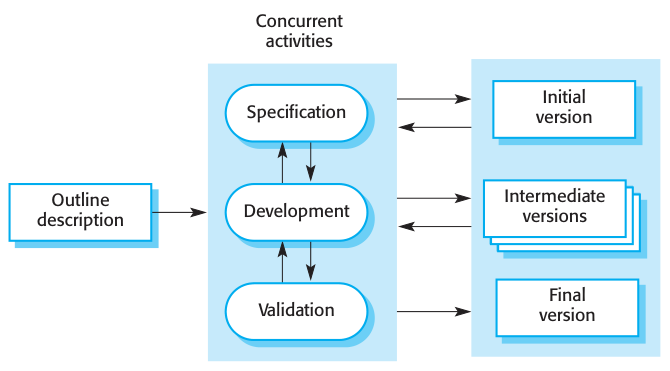
| Advantages over waterfall相对瀑布模型的优点 | Problems问题 |
|---|---|
| A requirements change costs less, because less analysis and documentation is redone需求变更的代价较小，因为需要重做的分析和文档更少。 | The process is not visible. Managers measure progress by documents, and there is no document for every quick version过程不可见。管理者通过文档衡量进展，而每个快速版本都没有对应的文档。 |
| Feedback is easier. Customers comment on running software, not on design documents反馈更容易获得。客户评论的是正在运行的软件，而不是设计文档。 | The structure degrades. Each new increment makes the code messier, unless the team spends time on refactoring（重构）, that is, cleaning up the code结构会退化。每个新增量都会让代码更乱，除非团队花时间做重构，也就是清理代码。 |
| Useful software is delivered early, before all functions exist有用的软件可以提前交付，无需等所有功能都完成。 | A large system built by several teams needs a stable architecture, and that must be planned in advance由多个团队开发的大型系统需要稳定的体系结构，而且必须提前规划。 |
Step 3: integration and configuration第 3 步：集成与配置
In words: integration and configuration = do not build the system; find existing software, then adjust the software and the requirements until they fit.用文字表述：集成与配置 = 不从头构建系统；先找到现成的软件，然后调整软件和需求，直到两者相互匹配。
The process has five stages:该过程包括五个阶段：
- Requirements specification. Write outline requirements only, without detail.需求规格说明。只写概要性的需求，不写细节。
- Software discovery and evaluation. Search for systems and components that provide the functions, and evaluate them.软件发现与评估。搜索能提供所需功能的系统和构件，并对它们进行评估。
- Requirements refinement. Change the requirements so that they match the software that was found.需求细化。修改需求，使其与找到的软件相匹配。
- Application system configuration. If an off-the-shelf system meets the requirements, configure it.应用系统配置。如果现成的系统满足需求，就对它进行配置。
- Component adaptation and integration. If no such system exists, adapt components or write new ones, and integrate them.构件适配与集成。如果不存在这样的系统，就适配现有构件或编写新构件，并把它们集成起来。
- Advantages. Less software is developed, so cost and risk are lower and delivery is usually faster.优点。需要开发的软件较少，因此成本和风险更低，交付通常也更快。
- Problems. The requirements are compromised, so the system may not meet the real needs of its users. Control over evolution is lost, because the vendors decide when the reused parts change.问题。需求会打折扣，系统可能无法满足用户的真实需要。对演化的控制也会丧失，因为复用部分何时变更由供应商决定。
Step 4: choosing a model第 4 步：选择模型
| Ask about the system对系统提出以下问题 | If the answer is yes如果答案是“是” |
|---|---|
| Is it embedded or safety-critical, with requirements that can be fixed early?它是嵌入式系统或安全关键系统，而且需求能够及早固定吗？ | Waterfall瀑布模型 |
| Do the requirements change, or is it a new kind of system that users must try first?需求会变化吗？或者它是一种新型系统，用户必须先试用？ | Incremental development增量开发 |
| Does software that does most of the job already exist?是否已经有能完成大部分工作的现成软件？ | Integration and configuration集成与配置 |
Large systems mix the models. The architecture is planned in advance. Well-understood parts are built with waterfall or bought. Parts that are hard to specify are built incrementally.大型系统通常会混合使用这些模型。体系结构需要提前规划。理解得比较透彻的部分，用瀑布方式开发或直接购买；难以规格化的部分则采用增量方式开发。
Practice练习
Q1. (Scenario) Choose the most suitable generic process model for each system and justify it in one or two sentences: (a) an antilock-braking controller in a car; (b) a virtual-reality system to support software maintenance; (c) a university accounting system that replaces an existing system; (d) an interactive travel-planning system that helps users plan journeys with the lowest environmental impact.Q1.（情景分析）为下列每个系统选择最合适的通用过程模型，并用一两句话说明理由：（a）汽车中的防抱死制动控制器；（b）支持软件维护的虚拟现实系统；（c）取代现有系统的大学会计系统；（d）帮助用户规划环境影响最低的行程的交互式旅行规划系统。
Answer
(a) Waterfall (plan-driven, possibly formal development): embedded, safety-critical software tied to hardware, so a complete specification and design are needed for the safety analysis before implementation. (b) Incremental development with prototyping: a novel system with unclear requirements, and a virtual-reality interface can only be settled by users trying early versions. (c) Integration and configuration: accounting needs are standard, so configuring an existing package cuts cost and risk; incremental delivery is awkward because users need all functions of the old system. (d) Incremental development with agile planning: a new, exploratory application with uncertain requirements, reusing map, timetable and emission-calculation services.（a）瀑布模型（计划驱动，可能采用形式化开发）：嵌入式、安全关键、与硬件相连的软件，因此在实现之前，需要完整的规格说明和设计以进行安全分析。（b）带原型开发的增量开发：这是一个需求不明确的新系统，而且虚拟现实界面只能通过用户试用早期版本来确定。（c）集成与配置：会计需求较为标准化，因此配置现有软件包可以降低成本和风险；增量交付则较为棘手，因为用户需要旧系统的全部功能。（d）带敏捷规划的增量开发：这是一个需求不确定的全新探索性应用，复用地图、时刻表和排放计算服务。
思路：先看是否安全关键或嵌入式，再看需求是否稳定，最后看有没有现成产品可复用。
Q2. (Explain) In the integration and configuration process, why must the requirements activity be repeated after suitable components have been found?Q2.（解释）在集成与配置过程中，为什么在找到合适的构件之后必须重新进行需求活动？
Answer
The first requirements are only an outline. Once the available components and systems are known, the requirements must be refined to match them: a requirement that no component supports is expensive to meet and may have to be changed or dropped, because requirements compromises are inevitable. Where a modification is impossible, the search for components is repeated, which can change the requirements again. Requirements and discovery therefore iterate until a feasible set of requirements and components is agreed.最初的需求只是概要。在了解了可用的构件和系统之后，就必须细化需求，使其与之相匹配：没有任何构件支持的需求，满足起来代价高昂，可能不得不修改或删除，因为需求上的妥协不可避免。若无法作出修改，则需重复搜索构件，这可能再次改变需求。因此，需求与构件发现会反复迭代，直到就一组可行的需求和构件达成一致。
Process activities ★★★过程活动
Goal. For each of the four activities, say what is done and what comes out. Name the three testing stages, and say who tests and what each stage finds.目标。对四项活动中的每一项，说明做什么以及产出什么。列出三个测试阶段，并说明谁来测试、每个阶段发现什么。
Step 1: specification第 1 步：规格说明
In words: specification = find out what the system must do, and write it down so that customer and developers agree.用文字表述：规格说明 = 弄清系统必须做什么，并把它写下来，使客户和开发人员达成一致。
Specification is also called requirements engineering（需求工程）. It has three activities, which are interleaved:规格说明也称为需求工程。它包括三项相互交替进行的活动：
- Elicitation and analysis（需求获取与分析）. Find the requirements by observing existing systems and talking to users.需求获取与分析。通过观察现有系统和与用户交谈来找出需求。
- Specification. Write the requirements into a document.规格说明。把需求写成文档。
- Validation. Check that the requirements are realistic, consistent and complete.确认。检查需求是否切实可行、一致且完整。
The requirements document has two levels of detail:需求文档有两个详细程度的层次：
- User requirements（用户需求）are short, abstract statements in the customer's language. Example: "A customer can track an order."用户需求是用客户语言写成的简短、抽象的陈述。例如：“客户可以跟踪订单。”
- System requirements（系统需求）are the detailed description that developers build from. Example: "The app shows the courier's position on a map and refreshes it every 10 seconds."系统需求是开发人员据以构建系统的详细描述。例如：“应用在地图上显示配送员的位置，并每 10 秒刷新一次。”
The two levels exist because they have different readers. Customers approve the first; developers design and test against the second.之所以有两个层次，是因为读者不同。客户批准第一层；开发人员依据第二层进行设计和测试。
Step 2: design and implementation第 2 步：设计与实现
In words: design = decide the structure before coding; implementation = turn the design into a program that runs.用文字表述：设计 = 在编码之前确定结构；实现 = 把设计变成可以运行的程序。
| Design activity设计活动 | What it decides它决定什么 | Output输出 |
|---|---|---|
| Architectural design体系结构设计 | The main components, their relationships and how they are distributed主要构件、它们之间的关系以及它们如何分布 | System architecture系统体系结构 |
| Database design数据库设计 | The data structures and how they are stored in a database数据结构以及它们在数据库中的存储方式 | Database specification数据库规格说明 |
| Interface design接口设计 | How the components talk to each other构件之间如何通信 | Interface specification接口规格说明 |
| Component selection and design构件选择与设计 | Which components are reused and which are designed new哪些构件复用，哪些构件新设计 | Component descriptions构件描述 |
The four activities are interdependent: a decision in one changes the input of the others. Design rework is therefore normal.四项活动是相互依赖的：一项活动中的决定会改变其他活动的输入。因此，设计返工是正常现象。
During programming, developers also test their own code. Testing shows that a defect exists. Debugging（调试）finds the defect and corrects it.编程时，开发人员也会测试自己的代码。测试证明缺陷存在。调试找到缺陷并加以修正。
Step 3: validation in three testing stages第 3 步：三个测试阶段的确认
In words: test the small pieces first, then the whole system, then let the customer test with real data.用文字表述：先测试小的部分，再测试整个系统，最后让客户用真实数据进行测试。
| Stage阶段 | Who tests测试人员 | What is tested测试对象 | What it finds发现的问题 |
|---|---|---|---|
| Component testing（组件测试） | The developers开发人员 | Each component alone各个构件单独 | Defects inside a component构件内部的缺陷 |
| System testing（系统测试） | Developers, or an independent test team开发人员，或独立的测试团队 | The integrated system集成后的系统 | Interface problems between components, problems with emergent properties, requirements that are not met构件之间的接口问题、涌现特性方面的问题，以及未满足的需求 |
| Customer testing（客户测试） | The customer, with real data客户，使用真实数据 | The system, before it is accepted验收之前的系统 | Errors and omissions in the requirements需求中的错误和遗漏 |
For a product that is sold to many customers, customer testing is called beta testing（β 测试）.对于面向众多客户销售的产品，客户测试称为β 测试。
The V-model（V 模型）is the waterfall model plus one test plan for each development stage. The left side goes down through the development stages. The right side goes up through the tests.V 模型是在瀑布模型的基础上，为每个开发阶段增加一个测试计划。左边自上而下经过各开发阶段，右边自下而上经过各项测试。

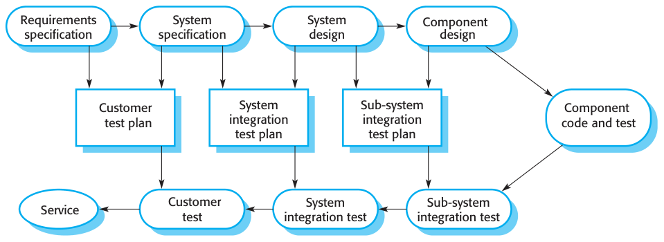
- The requirements specification gives the customer test plan.需求规格说明对应客户测试计划。
- The system specification gives the system integration test plan.系统规格说明对应系统集成测试计划。
- The system design gives the sub-system integration test plan.系统设计对应子系统集成测试计划。
The plans are written before the code exists. They are carried out in reverse order, as the system is integrated.这些计划在代码存在之前就已写好。随着系统的集成，它们按相反的顺序执行。
Step 4: evolution第 4 步：演化
Software can be changed at any time, and a change costs far less than a change to hardware. Few systems are completely new. So development and maintenance are best seen as one continuous process, called software evolution（软件演化）. Chapter 8 treats it.软件随时都可以修改，而且修改的代价远低于修改硬件。很少有系统是完全全新的。因此，开发和维护最好被看作一个连续的过程，称为软件演化。第 8 章讨论这一内容。
Practice练习
Q1. (Explain) Why does requirements engineering distinguish user requirements from system requirements?Q1.（解释）为什么需求工程要区分用户需求与系统需求？
Answer
The two documents have different readers. User requirements are abstract, high-level statements, in the customer's language, that customers and end users can understand and approve. System requirements are a more detailed description of the functionality to be provided, precise enough for developers to design, implement and test against. Keeping them apart lets customers validate what they want without technical detail, while developers get the detail they need, and each system requirement can be traced back to a user requirement.两份文档的读者不同。用户需求是抽象的高层陈述，使用客户的语言，客户和最终用户能够理解并批准。系统需求则是对所要提供功能的更详细描述，其精确程度足以让开发人员据以进行设计、实现和测试。将二者分开，既使客户无需涉及技术细节即可确认所需，又让开发人员获得所需的细节，并且每项系统需求都可以追溯到某项用户需求。
Q2. (Classify) State the testing stage in which each problem is most likely found, and why: (a) a function returns the wrong total for an empty list; (b) the billing component expects dates as DD/MM/YYYY while the ordering component sends MM/DD/YYYY; (c) the customer's real files contain 15-digit account numbers, but all test data used 10 digits; (d) the whole system violates its response-time requirement when 500 users log in together, although each component is fast alone.Q2.（分类）指出每个问题最可能在哪个测试阶段发现，并说明原因：（a）某函数对空列表返回错误的总数；（b）计费构件要求日期格式为 DD/MM/YYYY，而订购构件发送的是 MM/DD/YYYY；（c）客户的真实文件中包含 15 位账号，而所有测试数据均为 10 位；（d）当 500 名用户同时登录时，整个系统违反了响应时间要求，尽管每个构件单独运行时都很快。
Answer
(a) Component testing: a defect inside one unit, found by testing it alone. (b) System testing: an interface problem between components, visible only after integration. (c) Customer testing: real data exercise the system differently from the developers' test data and reveal an error in the requirements. (d) System testing: a non-functional requirement and an emergent property of the integrated system (customer testing could also reveal it).（a）构件测试：单个单元内部的缺陷，通过单独测试该单元发现。（b）系统测试：构件之间的接口问题，只有在集成之后才能看到。（c）客户测试：真实数据以不同于开发人员测试数据的方式检验系统，并暴露出需求中的错误。（d）系统测试：集成后系统的非功能需求和涌现属性（客户测试也可能发现此类问题）。
Q3. (Discuss) Why should software testing be an incremental, staged activity? Are programmers the best people to test the programs they have written?Q3.（讨论）为什么软件测试应当是增量式、分阶段进行的活动？程序员是否是测试自己所编写程序的最佳人选？
Answer
If a large system is tested as one monolithic unit, a failure can come from any component or interaction, so faults are hard to locate. Staged testing finds component defects first, interface problems when components are integrated and requirements problems with real data; each increment is also tested as it is built. Defects found and debugged may require earlier stages to be repeated, so the process is iterative. For component testing programmers are the best people: they know the component and can generate good test cases. For system testing in plan-driven processes an independent team works from test plans derived from the specification, and the customer performs the final tests, because developers tend to test what they expect to work.如果把大型系统作为一个整体单元进行测试，故障可能来自任何构件或交互，因而难以定位。分阶段测试则先发现构件缺陷，在构件集成时发现接口问题，并用真实数据发现需求问题；每个增量在构建过程中也要接受测试。发现并调试的缺陷可能需要重复前面的阶段，因此过程是迭代的。对于构件测试，程序员是最合适的人选：他们熟悉构件，能够生成良好的测试用例。在计划驱动过程中，系统测试由独立团队依据规格说明导出的测试计划开展，而最终测试则由客户进行，因为开发人员往往倾向于测试他们预期能够正常工作的内容。
Coping with change ★★★应对变化
Goal. Explain the two ways to reduce the cost of change, say when a prototype is used and why it is thrown away, and give the advantages and problems of incremental delivery.目标。解释降低变更代价的两种途径，说明何时使用原型以及为什么要丢弃原型，并给出增量交付的优点和问题。
In words: change anticipation = find out early what will change. Change tolerance = make a change cheap when it comes.用文字表述：变化预见 = 及早找出将要变化的内容。变化容忍 = 当变化到来时，让修改的代价保持低廉。
| Approach方法 | Idea思想 | Main technique主要技术 |
|---|---|---|
| Change anticipation（变更预期） | Predict changes before much work depends on them在大量工作依赖它们之前预测变化 | Prototyping原型开发 |
| Change tolerance（变更容忍） | Organize the work so that one change touches little组织工作，使一次变更涉及的内容尽量少 | Incremental development and delivery, refactoring增量开发与交付、重构 |
Step 1: prototyping第 1 步：原型开发
A prototype（原型）is a quick, rough early version of the system that is built in order to learn. Example: clickable screens of the delivery app, with no real payment behind them.原型是为了学习而快速构建的粗略早期版本。例如：可点击的应用界面草图，后面并没有真正的支付功能。
- In requirements engineering, users try the prototype and discover what they really need. This reveals errors and omissions in the requirements.在需求工程中，用户试用原型，发现他们真正需要什么。这样可以暴露需求中的错误和遗漏。
- In design, the team tries out a solution, for example a database design. For a user interface, a prototype tested with end users is the only sensible way to design it.在设计中，团队试验某种方案，例如一种数据库设计。对于用户界面，用真实终端用户测试原型是唯一合理的设计方法。
The prototyping process has four stages: establish the objectives, define the functionality, develop the prototype, evaluate it.原型开发过程包括四个阶段：确定目标、定义功能、开发原型、评估原型。
A prototype is quick to build because it leaves things out: some functions, non-functional requirements such as speed and security, error handling, and quality standards. For the same reason it is normally thrown away and not delivered. It was built to learn, not to last.原型之所以开发得快，是因为它省略了一些内容：部分功能、速度和安全性等非功能需求、错误处理以及质量标准。出于同样的原因，原型通常会被丢弃而不交付。它是为了学习而建，而不是为了长期使用。
Step 2: incremental delivery第 2 步：增量交付
In words: incremental delivery = deliver the system to the customer piece by piece, the most important piece first.用文字表述：增量交付 = 把系统一块一块地交给客户，最重要的部分先交付。
- Define the outline requirements, and let the customer rank the services by importance.先定义概要需求，并让客户按重要性为服务排序。
- Assign the services to increments and design the system architecture.把服务分配到各个增量中，并设计系统体系结构。
- For each increment: specify it in detail, develop it, validate it, integrate it with the earlier increments, and deploy it at the customer's site.对每个增量：详细地规定它，开发它，确认它，把它与之前的增量集成，并部署到客户现场。
While an increment is being developed, its requirements are frozen. The requirements of later increments can still change.在开发某个增量时，它的需求是冻结的；之后增量的需求仍可以变化。
Advantages优点
- Customers use the early increments like prototypes and learn what they need next. Unlike prototypes, the increments are kept.客户像使用原型一样使用早期的增量，并从中了解接下来需要什么。与原型不同，增量会被保留下来。
- Customers do not wait for the whole system. The first increment covers their most critical needs.客户不必等待整个系统。第一个增量覆盖他们最关键的需求。
- Changes stay cheap, because only an increment that is not yet built has to change.变更的代价保持较低，因为只有尚未构建的增量才需要修改。
- The most important services are delivered first, so they are tested again with every later increment.最重要的服务先交付，因此在之后每个增量中它们都会被再次测试。
Problems问题
- Replacing an old system. Users need all the old functions at once and will not work with half a system.替换旧系统。用户需要同时用到旧系统的全部功能，不会接受只用一半的系统。
- Shared facilities. Basic functions that many parts need are hard to identify, because requirements are detailed only increment by increment.共享设施。许多部分都需要的基本功能很难确定，因为需求只是逐个增量才变得详细。
- Contracts. Many customers want the complete specification in the contract. It does not exist until the last increment is specified.合同。许多客户希望合同中包含完整的规格说明，但在最后一个增量规定之前，这份说明并不存在。
| Prototype原型 | Delivered increment已交付的增量 | |
|---|---|---|
| Purpose目的 | Learn: elicit and validate requirements, test design options学习：获取并确认需求，检验设计方案 | Deliver a working part of the real system交付真实系统中可以工作的一部分 |
| Quality质量 | Reduced: non-functional requirements, error handling and standards may be dropped降低：非功能需求、错误处理和标准可能被略去 | Production quality产品级质量 |
| Fate去向 | Normally discarded通常被丢弃 | Kept and integrated with later increments保留，并与后续增量集成 |
| Supports支持的内容 | Change anticipation变更预期 | Change avoidance and change tolerance变更规避与变更容忍 |
Practice练习
Q1. (Explain, beyond the pages) Your manager is impressed by a prototype and wants to use it as the production system, with new features added as needed, "to avoid the expense of system development". Give four reasons against.Q1.（解释，超出教材范围）你的经理对某个原型印象深刻，希望将其直接用作生产系统，并根据需要不断添加新功能，理由是“避免系统开发的高昂费用”。请给出四条反对的理由。
Answer
(1) The prototype ignored non-functional requirements such as performance, security, robustness and reliability, and it may be impossible to tune it to meet them. (2) Rapid change during prototyping left it undocumented, so the code is the only specification, which is not enough for long-term maintenance. (3) The rapid changes degraded its structure, so the system will be difficult and expensive to maintain. (4) Organizational quality standards are normally relaxed for a prototype, which is not expected to be used for long. Use the prototype to agree the requirements, then build the real system.（1）原型忽略了性能、安全性、健壮性和可靠性等非功能需求，可能无法对其进行调优以满足这些需求。（2）原型开发过程中的快速变更使其缺乏文档，因此代码成为唯一的规格说明，而这不足以支持长期维护。（3）快速变更破坏了其结构，因此系统将难以维护且成本高昂。（4）组织的质量标准通常会为原型放宽，而原型本就不指望长期使用。应利用原型来商定需求，然后再构建真正的系统。
思路：原型是学习工具，不是半成品系统；砍掉的非功能需求、文档和质量标准，上线后都要补回来。
Q2. (True or false, justify) (a) While an increment is being developed the customer may still change its requirements. (b) Incremental delivery works as well for replacing an old system as for introducing a new one. (c) In incremental delivery the most important services receive the most testing.Q2.（判断，并说明理由）（a）在某个增量开发期间，客户仍可能更改其需求。（b）增量交付用于替换旧系统与用于引入新系统的效果一样好。（c）在增量交付中，最重要的服务获得的测试最多。
Answer
(a) False. Requirements changes for the current increment are not accepted; analysis of later increments can continue. (b) False. Users need all the functions of the old system and will not experiment with an incomplete new one, and running both systems side by side is usually impractical. (c) True. The highest-priority services are delivered first and are integrated and tested again with every later increment.（a）错误。当前增量的需求变更不予接受；后续增量的分析可以继续进行。（b）错误。用户需要旧系统的全部功能，不会试用不完整的新系统，而且让两个系统并行运行通常不切实际。（c）正确。最高优先级的服务最先交付，并在之后的每个增量中重新集成和测试。
Process improvement ★★过程改进
Goal. Describe the improvement cycle, name the five maturity levels in order, and compare the maturity approach with the agile approach.目标。描述改进循环，按顺序说出五个成熟度级别，并比较成熟度方法与敏捷方法。
Process improvement（过程改进）means changing the way a company develops software, so that product quality goes up or cost and development time go down.过程改进是指改变公司开发软件的方式，使产品质量提高，或使成本和开发时间降低。
The improvement cycle改进循环
In words: measure → analyze → change, then measure again.用文字表述：测量 → 分析 → 改进，然后再次测量。
- Measure. Collect numbers about the process or the product, for example the defects found after release. The first set of numbers is the baseline.测量。收集关于过程或产品的数字，例如发布后发现的缺陷数。第一组数字就是基线。
- Analyze. Find the weaknesses and bottlenecks of the current process.分析。找出当前过程的弱点和瓶颈。
- Change. Introduce a change that removes a weakness. Then measure the same numbers again.改进。引入一项能消除弱点的改变，然后再次测量同样的数字。
Example: a team finds 4.0 defects per 1,000 lines of code after release. It introduces code inspections. The next releases have 2.8 defects per 1,000 lines. The improvement is (4.0 − 2.8) ÷ 4.0 = 30%.例如：某团队发现发布后每千行代码有 4.0 个缺陷。它引入了代码审查。之后的版本每千行代码有 2.8 个缺陷。改进幅度为 (4.0 − 2.8) ÷ 4.0 = 30%。
Two approaches to improvement两种改进方法
| Process maturity approach过程成熟度方法 | Agile approach敏捷方法 | |
|---|---|---|
| Focus重点 | Improve process and project management; introduce good software engineering practice改进过程和项目管理；引入良好的软件工程实践 | Iterative development; reduce overheads迭代式开发；减少开销 |
| Main goals主要目标 | Product quality and process predictability产品质量与过程可预测性 | Rapid delivery of functionality; responsiveness to changing requirements快速交付功能；对变化的需求作出快速响应 |
| Philosophy理念 | The more good technical and management practice is adopted, the more mature the process采用的良好技术和管理实践越多，过程就越成熟 | The best processes are those with the lowest overhead最好的过程是开销最低的过程 |
| Cost成本 | Rooted in plan-driven development; adds overhead (activities not directly relevant to programming)根植于计划驱动开发；增加了开销（即与编程并无直接关系的活动） | Focuses on the code; deliberately minimizes formality and documentation侧重于代码；有意将形式化和文档工作降至最低 |
The five maturity levels五个成熟度级别
The maturity approach places an organization on one of five levels of process maturity（过程成熟度）.成熟度方法把一个组织放在五个过程成熟度级别之一上。
| Level层次 | Name名称 | What the organization has组织具备什么 |
|---|---|---|
| 1 | Initial初始级 | The work gets done and its goals are met. The scope of the work is stated and communicated to the team工作能够完成，目标能够达成。工作范围已经明确，并已传达给团队。 |
| 2 | Managed已管理级 | Documented project plans. Resources and progress are monitored有书面的项目计划。对资源和进展进行监控。 |
| 3 | Defined已定义级 | One set of standard processes for the whole organization. Each project adapts its process from this set全组织统一的一套标准过程。每个项目从这套标准中调整出自己的过程。 |
| 4 | Quantitatively managed定量管理级 | Statistical control: measurements of process and product are used to manage the process统计控制：利用过程和产品的度量数据来管理过程。 |
| 5 | Optimizing优化级 | Measurements drive continuous process improvement度量数据推动持续的过程改进。 |
- Benefit. The maturity approach focuses attention on the processes and practices that are really used, and it has improved the capability of many organizations.优点。成熟度方法把注意力集中在真正被使用的过程和做法上，并且已经提升了许多组织的能力。
- Limits. It has too much overhead for small companies. Maturity is also hard to estimate for agile processes. So mainly large companies use it.局限。对小公司来说开销太大。敏捷过程的成熟度也很难评估。因此，主要是大公司在使用它。
Practice练习
Q1. (Classify) Assign a maturity level to each organization and justify it. (A) Projects have documented plans and monitored resources, but each project uses its own methods and there is no organization-wide standard process. (B) A set of organization-wide standard processes exists; each project tailors one of them, and process assets and measurements are collected for later improvement, without statistical control. (C) Statistical methods control the subprocesses and the collected measurements are used in management. What must C add to reach level 5?Q1.（分类）为每个组织确定其成熟度级别，并说明理由。（A）项目有文档化的计划并监控资源，但每个项目使用各自的方法，没有组织范围内的标准过程。（B）存在一组组织范围内的标准过程；每个项目裁剪其中的一个，并收集过程资产和度量数据以供日后改进，但没有统计控制。（C）统计方法控制子过程，所收集的度量数据用于管理。C 还需增加什么才能达到第 5 级？
Answer
(A) Level 2, Managed: plans and monitoring exist at project level, but there is no standardization. (B) Level 3, Defined: organizational standardization and tailoring of a defined process; measurements are collected but not yet used for statistical control. (C) Level 4, Quantitatively managed. To reach level 5, Optimizing, C must use the measurements to drive process improvement, analyzing trends and adapting its processes to changing business needs.（A）第 2 级，已管理级：项目层面已有计划和监控，但没有标准化。（B）第 3 级，已定义级：组织层面的标准化，并对已定义的过程进行裁剪；收集了度量数据，但尚未用于统计控制。（C）第 4 级，定量管理级。要达到第 5 级，即优化级，C 必须利用度量数据驱动过程改进，分析趋势，并使其过程适应不断变化的业务需求。
Q2. (Discuss) Give two advantages and two disadvantages of the process maturity approach to improvement.Q2.（讨论）给出过程成熟度方法用于改进的两个优点和两个缺点。
Answer
Advantages: (1) it focuses attention on the processes and practices actually used and has led to significant improvements in software engineering capability; (2) the levels give a common yardstick and a path of improvement, so customers can assess contractors and organizations raise product quality and process predictability. Disadvantages: (1) formal process improvement carries too much overhead for small companies; (2) maturity is hard to estimate for agile processes, which deliberately minimize formality and documentation, so in practice only large companies use it.优点：（1）它使人们关注实际使用的过程和实践，并已显著提升了软件工程能力；（2）各级别提供了统一的衡量尺度和改进路径，因此客户可以评估承包商，各组织也能提高产品质量和过程可预测性。缺点：（1）正式的过程改进对小公司来说开销过大；（2）敏捷过程的成熟度难以评估，因为敏捷过程有意将形式化和文档工作降至最低，因此实际上只有大公司采用这种方法。
Terms to recognise ★需要认识的术语
| Term术语 | What to know要知道什么 |
|---|---|
| Feasibility study（可行性研究） | A short, cheap study before requirements engineering: is the system needed, and is it technically and financially realistic?在需求工程之前进行的简短、低成本的研究：这个系统是否必要，在技术和财务上是否可行？ |
| Formal system development（形式化系统开发） | A waterfall variant. A mathematical specification is transformed step by step into code. Costly, used almost only for critical systems瀑布模型的一种变体。数学规格说明逐步转换为代码。成本高，几乎只用于关键系统。 |
| Rational Unified Process (RUP)统一过程（RUP） | Combines the generic models. Four phases: inception, elaboration, construction, transition综合了各种通用模型。包括四个阶段：初始、细化、构建、移交。 |
| Spiral model（螺旋模型） | Boehm's risk-driven model. Each loop of the spiral is one phase and includes explicit risk managementBoehm 的风险驱动模型。螺旋的每一圈对应一个阶段，并且包含明确的风险管理。 |
| Verification and validation (V&V)验证与确认（V&V） | Verification: does the software meet its specification? Validation: does it meet the customer's real needs? See Section 7.1验证：软件是否符合其规格说明？确认：软件是否满足客户的真实需要？见第 7.1 节。 |
| Test-driven development（测试驱动开发） | The tests are written before the code they test. See Section 7.5测试在被测代码之前编写。见第 7.5 节。 |
| Refactoring（重构） | Improving the structure of existing code without changing what it does. See Section 2.3在不改变代码功能的前提下，改善现有代码的结构。见第 2.3 节。 |
| Configuration management（配置管理） | A supporting activity that keeps track of the versions of the software as it changes一项辅助活动，用于在软件变化时跟踪其版本。 |
| Capability maturity model (CMM)能力成熟度模型（CMM） | The model of the Software Engineering Institute from which the five maturity levels comeSoftware Engineering Institute 提出的模型，五个成熟度级别即源于此。 |
Exam-style questions考试题型练习
Q1. (Scenario, 12 marks) A company bids for three projects: (i) the control software of an automatic train-door system; (ii) a mobile app for a start-up that wants to test a new idea on the market, with requirements that are still vague; (iii) a payroll system for a ministry that must replace a ten-year-old system under a fixed-price contract with a complete specification. (a) Choose the most suitable generic process model for each project and give two reasons for each. (6 marks) (b) State one weakness of each chosen model for its project. (3 marks) (c) A large system contains parts like (i) and parts like (ii). Explain why a mixed process is appropriate. (3 marks)Q1.（情景分析，12 分）某公司竞标三个项目：（i）列车自动门系统的控制软件；（ii）一家初创公司的移动应用，该公司希望在市场上检验一个新想法，其需求仍然模糊；（iii）某政府部门的薪资系统，须在一份附有完整规格说明的固定价格合同下，替换一套使用了十年的旧系统。（a）为每个项目选择最合适的通用过程模型，并给出每个选择的两条理由。（6 分）（b）指出每个所选模型对其项目而言的一个弱点。（3 分）（c）大型系统中既包含类似（i）的部分，也包含类似（ii）的部分。解释为什么采用混合过程是合适的。（3 分）
Answer
(a) (i) Waterfall (plan-driven, possibly with formal development). The software is embedded and interfaces with hardware, so its functionality cannot be left open until implementation; as a safety-critical system it needs a complete specification and design for the safety analysis and documentation before implementation starts. (ii) Incremental development with agile planning. The requirements are vague and will change, and incremental development makes changes cheap because only the current or a later increment is altered; early versions give the start-up market feedback and early deployment. (iii) Integration and configuration. Payroll is a standard business function, so configuring an existing payroll product cuts cost, risk and delivery time; incremental delivery is a poor fit because users need all functions of the old system at once and the fixed-price contract requires the complete specification.（a）（i）瀑布模型（计划驱动，可能采用形式化开发）。该软件为嵌入式软件并与硬件相连，因此其功能不能留到实现阶段再定；作为安全关键系统，它在实现开始之前需要完整的规格说明和设计，以进行安全分析并形成文档。（ii）带敏捷规划的增量开发。需求模糊且将会变化，而增量开发使变更成本较低，因为只需修改当前增量或之后的增量；早期版本可以让初创企业获得市场反馈，并实现早期部署。（iii）集成与配置。薪资是标准的业务功能，因此配置现有的薪资产品可以降低成本、风险和交付时间；增量交付并不适合，因为用户需要旧系统的全部功能，而固定价格合同要求完整的规格说明。
(b) (i) Late changes force rework of approved documents, and the specification may be frozen prematurely. (ii) The process is hard to see for managers, and the structure degrades unless the code is refactored. (iii) Requirements compromises are inevitable, so the system may not meet the real needs, and the ministry does not control the evolution of the product.（b）（i）后期变更迫使已批准的文档返工，并且规格说明可能被过早冻结。（ii）管理者难以看清过程，并且除非对代码进行重构，否则结构会退化。（iii）需求上的妥协不可避免，因此系统可能无法满足真实需要，并且该部门无法控制产品的演化。
(c) The architecture needs the essential requirements, so it cannot be developed incrementally. Parts that are well understood or critical can be specified and built with waterfall (or bought and configured); parts that are hard to specify in advance are built incrementally; components are reused in both. One model alone would be too rigid for the second kind of part or too loose for the first.（c）体系结构需要基本需求，因此不能增量式地开发。理解透彻或属于关键部分的内容，可以用瀑布方式进行规格说明和构建（或购买并加以配置）；难以预先规定的部分则采用增量方式构建；两者都会复用构件。仅采用一种模型，对后一类部分来说会过于僵化，对前一类部分来说又会过于松散。
思路：先抓系统特征（安全关键？需求稳定？有现成产品？替换旧系统？），再选模型，最后写一个弱点。
Q2. (Compare, 10 marks) (a) List the five phases of the waterfall model in order. (2 marks) (b) Explain why customers and developers often freeze the requirements prematurely in a waterfall project, and give two consequences. (3 marks) (c) State three advantages of incremental development over the waterfall model. (3 marks) (d) State two problems of incremental development from a management perspective. (2 marks)Q2.（比较，10 分）（a）按顺序列出瀑布模型的五个阶段。（2 分）（b）解释在瀑布项目中，客户和开发人员为何常常过早冻结需求，并给出两个后果。（3 分）（c）列出增量开发相对于瀑布模型的三个优点。（3 分）（d）从管理角度列出增量开发的两个问题。（2 分）
Answer
(a) Requirements analysis and definition; system and software design; implementation and unit testing; integration and system testing; operation and maintenance.（a）需求分析与定义；系统与软件设计；实现与单元测试；集成与系统测试；运行与维护。
(b) Each phase ends with signed-off documents. When later phases uncover problems (design shows that a requirement is too expensive, coding shows a design flaw), the earlier documents must be changed, which needs customer approval and delays the project. To avoid this, both sides freeze the specification early. Consequences: problems are left for later, ignored or programmed around, so the system may not do what the user wants; and design problems circumvented by implementation tricks leave a badly structured system.（b）每个阶段结束时都有经签署的文档。当后续阶段发现问题时（设计表明某项需求成本过高，编码暴露出设计缺陷），就必须修改先前的文档，这需要客户批准，并会拖延项目进度。为避免这一点，双方都尽早冻结规格说明。其后果是：问题被留待以后处理、被忽略或通过编程绕过，因此系统可能无法实现用户所需的功能；而通过实现技巧绕过设计问题，则会留下结构不良的系统。
(c) The cost of requirements changes is lower, because much less analysis and documentation must be redone. Customer feedback is easier, because customers can comment on running software and judge progress. Useful software can be delivered and deployed early, before all functions exist.（c）需求变更的成本较低，因为需要重做的分析和文档工作少得多。客户反馈更容易获得，因为客户可以对运行中的软件发表意见并判断进展。有用的软件可以及早交付和部署，甚至在全部功能都已具备之前。
(d) The process is not visible, because documents for every quick version are not cost effective and managers need regular deliverables. The system structure degrades as increments are added, which agile methods counter by regular refactoring.（d）过程不透明，因为为每个快速版本编写文档并不划算，而管理者又需要定期的交付物。随着增量不断增加，系统结构逐步退化，敏捷方法通过定期重构来加以应对。
易错：增量开发的优点是“改需求便宜”，不是“总成本一定更低”；缺点主要是可见性差和结构退化。
Q3. (Validation and testing, 14 marks) (a) Define software validation (V&V) and state the difference between testing and debugging. (3 marks) (b) Name the three stages of the testing process. For each, state who performs it and give one kind of defect it is likely to find. (6 marks) (c) Name the three test plans of the V-model and the development documents from which they are derived. (3 marks) (d) What is beta testing and when is it used? (2 marks)Q3.（确认与测试，14 分）（a）给出软件确认（V&V）的定义，并说明测试与调试的区别。（3 分）（b）写出测试过程的三个阶段。对每个阶段，说明由谁执行，并给出它可能发现的一类缺陷。（6 分）（c）写出 V 模型的三种测试计划，以及导出这些计划所依据的开发文档。（3 分）（d）什么是β测试？何时使用？（2 分）
Answer
(a) Validation, more generally verification and validation, shows that a system conforms to its specification and meets the customer's expectations; program testing is its main technique. Testing establishes the existence of defects; debugging locates and corrects them.（a）确认（更一般地说是验证与确认）表明系统符合其规格说明并满足客户的期望；程序测试是其主要技术。测试用于确定缺陷是否存在；调试则用于定位并纠正缺陷。
(b) Component testing is done by the developers on each component alone and finds defects inside components. System testing is done on the integrated system by the developers (independent testers in plan-driven processes); it finds errors from unanticipated interactions and interface problems, and checks the functional and non-functional requirements and the emergent properties. Customer testing is done by the customer or a potential customer with real data; it finds errors and omissions in the requirements, facilities that do not meet user needs or unacceptable performance.（b）构件测试由开发人员对每个构件单独进行，发现构件内部的缺陷。系统测试由开发人员在集成后的系统上进行（在计划驱动过程中则由独立的测试人员进行）；它发现由意料之外的交互和接口问题引起的错误，并检查功能需求、非功能需求以及涌现属性。客户测试由客户或潜在客户使用真实数据进行；它发现需求中的错误和遗漏、不能满足用户需要的功能，以及不可接受的性能。
(c) The customer test plan (from the requirements specification), the system integration test plan (from the system specification) and the sub-system integration test plan (from the system design). The V-model shows, for each stage of the waterfall process, the validation activity that corresponds to it, and the plans link development and testing.（c）客户测试计划（来自需求规格说明）、系统集成测试计划（来自系统规格说明）和子系统集成测试计划（来自系统设计）。V 模型针对瀑布过程的每个阶段，展示了与之对应的确认活动，而这些计划则将开发与测试联系起来。
(d) Beta testing is customer testing for a software product: selected potential customers agree to use the system and report problems. It exposes the product to real use and finds errors the developers did not anticipate; the product may then be modified and released for further beta testing or general sale.（d）β测试是针对软件产品的客户测试：选定的潜在客户同意使用该系统，并向开发人员报告问题。它让产品接受真实使用的检验，发现开发人员未曾预料到的错误；随后，产品可能经过修改，再次投入β测试，或正式上市销售。
思路：测试三阶段“谁测、测什么、找什么缺陷”要成表背熟；V 模型 = 瀑布 + 每个阶段一份测试计划。
Q4. (Coping with change, 12 marks) A city council wants an online parking-permit system. It can describe its needs only roughly, and its staff will not read long specifications. (a) Distinguish change anticipation from change tolerance and say which one a prototype and which one incremental delivery mainly supports. (4 marks) (b) The developers plan a prototype of the application screens. State two possible objectives, two things you would leave out of it and two problems that can distort its evaluation. (6 marks) (c) The council wants to put the prototype into production "to save money". Give two reasons against. (2 marks)Q4.（应对变更，12 分）某市议会希望建设一套在线停车许可系统。议会只能粗略地描述其需求，而且其工作人员不会阅读冗长的规格说明。（a）区分变更预期与变更容忍，并说明原型主要支持哪一种、增量交付主要支持哪一种。（4 分）（b）开发人员计划为应用程序界面制作一个原型。请给出两个可能的目标、两件应从原型中略去的事项，以及两个可能使其评价失真的问题。（6 分）（c）议会希望将原型投入生产，以“节省资金”。给出两条反对的理由。（2 分）
Answer
(a) Change anticipation: the process contains activities that predict likely changes before much rework is needed. A prototype supports it, because users experiment with it and refine their requirements before production cost is committed. Change tolerance: the process and the software are designed so that changes are easy to make. Incremental delivery supports it (together with change avoidance), because a change goes into a later increment or alters only one small increment.（a）变更预期：过程中包含在需要大量返工之前预测可能变更的活动。原型支持变更预期，因为用户在投入生产成本之前试用原型并完善需求。变更容忍：过程和软件的设计使变更易于实施。增量交付（连同变更规避）支持变更容忍，因为变更可以纳入之后的增量，或只需修改一个较小的增量。
(b) Objectives (any two): develop and refine the user interface, validate the functional requirements, demonstrate the application to managers. Leave out (any two): some functionality, non-functional requirements such as response time and memory use, error handling, reliability and quality standards. Evaluation problems (any two): users may not use the prototype as they would the final system; the testers may not be typical users; there may be too little time for training; a slow prototype makes evaluators avoid the slow features.（b）目标（任选两项）：开发并完善用户界面，验证功能需求，向管理者演示应用。略去（任选两项）：部分功能，响应时间和内存占用等非功能需求，错误处理，可靠性和质量标准。评价问题（任选两项）：用户使用原型的方式可能与使用最终系统的方式不同；测试人员可能并非典型用户；培训时间可能不足；运行缓慢的原型会使评价人员避开慢速的功能。
(c) Any two of: the non-functional requirements (performance, security, reliability) were ignored and the prototype may be impossible to tune; rapid change left it undocumented, so the code is the only specification; its structure is degraded, so it is costly to maintain; organizational quality standards were relaxed. The prototype should be used to agree the requirements, and the real system built afterwards.（c）任选两项：非功能需求（性能、安全性、可靠性）被忽略，原型可能无法进行调优；快速变更使其缺乏文档，因此代码成为唯一的规格说明；其结构已经退化，维护成本高；组织的质量标准被放宽。应利用原型商定需求，然后再构建真正的系统。
思路：原型是学习工具；先定目标、敢于砍功能、通常丢弃。
Q5. (Process improvement, 12 marks) A software company has never collected process data. (a) Describe the stages of the process improvement cycle and explain why the first cycle must include data collection. (4 marks) (b) Before introducing code inspections the company measured 180 defects in 60 KLOC; afterwards 55 defects in 25 KLOC. Compute the defect density before and after and the relative improvement. (3 marks) (c) The company is assessed at maturity level 2. State what characterizes levels 2 and 3 and what it must add to reach level 3. (3 marks) (d) Give two reasons why a small agile company may not adopt the maturity approach. (2 marks)Q5.（过程改进，12 分）某软件公司从未收集过过程数据。（a）描述过程改进循环的各个阶段，并解释为什么第一个循环必须包括数据收集。（4 分）（b）在引入代码审查之前，该公司度量到 60 KLOC 中有 180 个缺陷；之后，25 KLOC 中有 55 个缺陷。计算改进前后的缺陷密度以及相对改进幅度。（3 分）（c）该公司经评估处于成熟度第 2 级。说明第 2 级和第 3 级的特征，以及它为达到第 3 级必须增加什么。（3 分）（d）给出一家小型敏捷公司可能不采用成熟度方法的两个理由。（2 分）
Answer
(a) The cycle repeats three stages. Process measurement: measure attributes of the process or product to form a baseline. Process analysis: assess the process and identify weaknesses and bottlenecks, possibly with process maps. Process change: introduce changes against the weaknesses. Then the same attributes are measured again. Without baseline data the value of a change cannot be judged, so a company without data must collect it in the first cycle.（a）该循环由三个阶段组成并不断重复。过程度量：度量过程或产品的属性，以形成基线。过程分析：评估过程，识别弱点和瓶颈，必要时可以借助过程图。过程变更：针对这些弱点引入变更。随后，再次度量相同的属性。没有基线数据就无法判断变更的价值，因此没有数据的公司必须在第一个循环中收集数据。
(b) Density before \(=180/60=3.0\) defects per KLOC; after \(=55/25=2.2\) defects per KLOC. Improvement \(=(3.0-2.2)/3.0=0.267\), i.e. 26.7% fewer defects per KLOC.改进前缺陷密度为每 KLOC \(=180/60=3.0\) 个缺陷；改进后为每 KLOC \(=55/25=2.2\) 个缺陷。改进幅度为 \(=(3.0-2.2)/3.0=0.267\)，即每 KLOC 缺陷数减少了 26.7%。
(c) Level 2 (Managed): organizational policies define when each process is used, projects have documented plans, and resource management and process monitoring are in place. Level 3 (Defined): organization-wide standard processes exist, each project adapts a managed process from them, and process assets and measurements are collected for future improvement. To reach level 3 the company must define standard organizational processes, have each project tailor one of them and collect process assets and measurements.（c）第 2 级（已管理级）：组织策略规定何时使用各个过程，项目有文档化的计划，并已建立资源管理和过程监控。第 3 级（已定义级）：存在组织范围内的标准过程，每个项目都从中裁剪出一个受管理的过程，并收集过程资产和度量数据以供日后改进。为达到第 3 级，该公司必须定义组织的标准过程，让每个项目裁剪其中之一，并收集过程资产和度量数据。
(d) Formal improvement carries too much overhead (activities not directly relevant to programming) for a small company, and maturity is hard to estimate for agile processes, which deliberately minimize formality and documentation.（d）对于小公司而言，正式的过程改进开销过大（即与编程并无直接关系的活动），而且敏捷过程的成熟度难以评估，敏捷过程有意将形式化和文档工作降至最低。
易错：改善率 = (前 − 后) / 前，并且要先统一单位（缺陷 / KLOC）。
Textbook exercises课后习题
Textbook exercises with answers: 10 questions教材习题及答案，共 10 题，点击展开
E1. (Exercise 2.1) Suggest the most appropriate generic software process model that might be used as a basis for managing the development of the following systems. Explain your answer according to the type of system being developed: (a) A system to control antilock braking in a car; (b) A virtual reality system to support software maintenance; (c) A university accounting system that replaces an existing system; (d) An interactive travel planning system that helps users plan journeys with the lowest environmental impact.E1. （习题 2.1）请为下列系统建议最合适的通用软件过程模型，作为管理其开发的基础，并依据所开发系统的类型说明理由：(a) 一个控制汽车防抱死制动的系统；(b) 一个支持软件维护的虚拟现实系统；(c) 一个替换现有系统的大学会计系统；(d) 一个帮助用户规划环境影响最低的行程的交互式旅行规划系统。
Answer
The model is chosen from the properties of the system: how stable the requirements are, how costly an error is, whether users can be given early versions, and whether reusable software exists.模型的选择取决于系统的特性：需求的稳定程度、出错的代价高低、能否向用户提供早期版本，以及是否存在可复用的软件。
(a) Waterfall (plan-driven). The controller is embedded, safety-critical software integrated with hardware (wheel-speed sensors, brake actuators). Its requirements follow from physics and safety regulations and are stable, and the safety analysis and certification need a complete specification and design before implementation starts. Incremental delivery is impossible, because a half-finished brake controller cannot be fitted to a car. Weakness: a late change of requirements is expensive.(a) 瀑布模型（计划驱动）。 控制器是与硬件（车轮转速传感器、制动执行器）集成在一起的嵌入式安全关键软件。其需求源自物理规律和安全法规，是稳定的；安全分析和认证需要在实现开始之前就有完整的规格说明和设计。增量交付不可行，因为一个只完成一半的制动控制器无法装到汽车上。缺点：需求后期变更的代价高昂。
(b) Incremental development with prototyping. A virtual reality tool has a novel interface, and maintainers cannot say in advance what will be useful and comfortable; the requirements emerge only when they use the system. Prototypes and early increments are evaluated by maintainers and their feedback drives the next increment, whereas a frozen specification would be guesswork. Weakness: the structure degrades unless the code is refactored, and management sees little documented progress.(b) 增量开发与原型开发。 虚拟现实工具具有新颖的界面，维护人员无法事先说明什么是有用、舒适的；需求只有在使用系统的过程中才会显现出来。原型和早期增量由维护人员评估，其反馈推动下一增量的开发；而冻结的规格说明只能是猜测。缺点：除非对代码进行重构，否则结构会逐渐退化；管理层也较难看到有文档记录的进展。
(c) Waterfall (plan-driven), implemented by integration and configuration if a suitable package exists. The old system defines the requirements, which are stable and well understood, and users need all the old functions on the day of changeover, so incremental delivery is awkward. A complete specification, a data migration plan and a cutover plan are needed. Accounting is standard business functionality, so configuring an existing accounting package is often cheaper than writing one. Weakness: requirements compromises to fit the package, and no control over its later versions.(c) 瀑布模型（计划驱动），若存在合适的软件包则通过集成与配置实现。 旧系统决定了需求，这些需求稳定且理解充分；用户在切换当天需要旧系统的全部功能，因此增量交付并不便利。需要完整的规格说明、数据迁移计划和切换计划。会计属于标准的商业功能，因此配置现成的会计软件包通常比自行编写便宜。缺点：为适配软件包，需求需要妥协，并且无法控制该软件包之后的版本。
(d) Incremental development with prototyping, combined with integration and configuration. What "lowest environmental impact" means and how to present it is itself unclear, and the interface needs trials with real travelers, so the requirements are discovered by releasing increments. Much of the functionality (maps, timetables, route search, emission calculation) is available as web services and can be reused. Weakness: dependence on external services that the company does not control.(d) 增量开发与原型开发，并结合集成与配置。 “最低环境影响”的含义及其呈现方式本身并不清楚，而界面需要真实旅行者的试用，因此需求是通过发布增量来逐步发现的。大部分功能（地图、时刻表、路线搜索、排放计算）可以作为 Web 服务获得并加以复用。缺点：依赖公司无法控制的外部服务。
思路：先看系统特征（安全关键？需求稳定？有现成产品？替换旧系统？），再选模型，并说出一个弱点。
E2. (Exercise 2.2) Incremental software development could be very effectively used for customers who do not have a clear idea about the systems needed for their operations. Discuss.E2. （习题 2.2）增量软件开发对于那些不清楚自己的业务需要何种系统的客户可能非常有效。请进行讨论。
Answer
Incremental development interleaves specification, development and validation: only outline requirements are fixed at the start, the system is built as a series of increments, and each increment adds functionality that the customer can use and comment on. For customers who are unsure what they need, the statement is largely true, for four reasons.增量开发让规格说明、开发与确认交错进行：开始时只确定大致的需求，系统以一系列增量的方式构建，每个增量都增加一些客户可以使用并提出意见的功能。对于不确定自己需要什么的客户，这一论断基本成立，理由有四点。
- No frozen specification. A vague outline is enough to start, and the details are specified increment by increment, whereas the waterfall model needs a complete specification first.没有冻结的规格说明。 只需一个模糊的轮廓即可启动，细节逐个增量地加以规定；瀑布模型则要求先有完整的规格说明。
- Early feedback on running software. Customers discover what they need by using real functions, which is far more reliable than judging requirements or design documents, so misunderstandings appear after weeks and not at the end of the project.基于运行软件的早期反馈。 客户通过使用真实功能来发现自己的需求，这比评审需求或设计文档可靠得多，因此误解会在数周之内暴露，而不是等到项目结束时才出现。
- Cheap change. When the customer changes their mind, only the current or a later increment is affected, and little documentation has to be redone and re-approved.变更成本低。 当客户改变主意时，只有当前或之后的增量受到影响，需要重做并重新批准的文档也很少。
- Early value and lower risk. The most important functions are delivered and tested first, the customer benefits early, and the project can be redirected or stopped before much money is spent.尽早产生价值，降低风险。 最重要的功能首先交付和测试，客户能尽早受益；并且在投入大量资金之前，项目就可以调整方向或停止。
The approach has conditions. The customer must be available to give feedback and set priorities; progress is less visible to managers because there is no document for every version; the structure degrades as increments are added unless it is refactored; a fixed-price, fixed-scope contract is hard to combine with changing requirements; and a large system still needs an up-front architecture.该方法有其前提条件。客户必须能够提供反馈并确定优先级；由于每个版本都没有对应的文档，管理人员对进展的了解较少；增量不断加入时结构会退化，除非进行重构；固定价格、固定范围的合同难以与不断变化的需求相结合；而且大型系统仍然需要预先设计好的体系结构。
Conclusion: incremental development is an effective way to discover and refine unclear requirements, provided that the customer is involved and the structure is kept under control.结论：只要客户参与其中，并且结构得到有效控制，增量开发就是发现和细化不清晰需求的有效方法。
思路：先给增量开发的定义，再用“不必定死需求、早反馈、变更便宜、先交付重点功能”四点论证，最后补上前提条件。
E3. (Exercise 2.3) Consider the integration and configuration process model shown in Figure 2.3 (its stages are: (1) requirements specification, (2) software discovery and evaluation, (3) requirements refinement, (4) application system configuration, (5) component adaptation and integration). Explain why it is essential to repeat the requirements engineering activity in the process.E3. （习题 2.3）考虑图 2.3 所示的集成与配置过程模型（其阶段为：(1) 需求规格说明，(2) 软件发现与评估，(3) 需求细化，(4) 应用系统配置，(5) 构件适配与集成）。请解释为什么必须在该过程中重复进行需求工程活动。
Answer
In integration and configuration the system is assembled from existing application systems, components and web services, so what can be built is limited by what already exists. The first requirements specification is only an outline of the essential and desirable requirements, written before the available software is known. Requirements engineering is therefore repeated (requirements refinement) after software discovery and evaluation, for three reasons.在集成与配置中，系统由已有的应用系统、构件和 Web 服务组装而成，因此能够构建的内容受现有软件的限制。最初的需求规格说明只是对基本需求和期望需求的一个大致轮廓，它是在了解可用软件之前写成的。因此，需求工程需要在软件发现与评估之后重复进行（即需求细化），理由有三点。
- Reused software rarely matches the outline. The requirements must be modified to reflect the functions and constraints of the candidate systems and the specification redefined; if that is impossible, the process returns to discovery to evaluate alternatives. Insisting on the original requirements would force expensive custom development and lose the benefits of reuse (lower cost and risk, faster delivery).复用的软件很少与轮廓完全吻合。 需要依据候选系统的功能和约束修改需求，并重新定义规格说明；如果做不到，过程就要回到发现阶段，以评估其他备选方案。若坚持原有需求，就会导致昂贵的定制开发，并失去复用带来的好处（成本与风险更低、交付更快）。
- Discovery changes what is possible. The candidates show which requirements are cheap, which are very costly, and which useful functions the customer had not asked for, so the customer can make an informed trade-off between fit, cost and time.发现过程改变了可能性的边界。 候选软件表明哪些需求实现起来成本低、哪些代价很高，以及哪些有用的功能是客户未曾提出的，从而使客户能够在契合度、成本和时间之间做出知情的权衡。
- The chosen software needs detailed requirements. Data formats, interfaces, configuration options and the glue code that adapts and integrates the components must be specified before configuration or integration starts.所选软件需要详细的需求。 在配置或集成开始之前，必须规定数据格式、接口、配置选项，以及用于适配和集成各构件的“胶水”代码。
Without this loop the system would either fail to meet the real needs or be expensive to integrate. Requirements and available software have to be matched iteratively, which is also why requirements compromises are unavoidable in this model.如果没有这一循环，系统要么无法满足真正的需要，要么集成成本高昂。需求与可用软件必须迭代地相互匹配，这也正是该模型中需求妥协不可避免的原因。
思路：关键词是“需求精化”：先有大纲，再看有哪些现成软件，再按现成软件调整需求。
E4. (Exercise 2.4) Suggest why it is important to make a distinction between developing the user requirements and developing system requirements in the requirements engineering process.E4. （习题 2.4）请说明在需求工程过程中，区分用户需求的开发与系统需求的开发为何很重要。
Answer
User requirements are abstract statements, in natural language and simple diagrams, of the services the system should provide and the constraints it must respect; they are written for customers and end users without technical knowledge. System requirements are detailed, precise descriptions of the system's functions, services and operational constraints; they are written for developers and are the basis for design, implementation, testing and often the contract. The two are developed as separate levels for four reasons.用户需求是以自然语言和简单图表书写的抽象陈述，描述系统应提供的服务及其必须遵守的约束；它们面向没有技术背景的客户、经理和最终用户。系统需求则是对系统功能、服务和运行约束的详细描述；它们面向开发人员，是设计、实现和测试的依据，往往也构成合同的一部分。两者作为独立的两个层次分别开发，理由有四点。
- Different readers. If user requirements contain technical detail, customers cannot understand and validate them; if developers receive only abstract statements, they must guess.读者不同。 如果用户需求包含过多技术细节，客户将无法理解和确认它们；如果开发人员只拿到抽象的陈述，他们就只能去猜测。
- Different purposes. User requirements establish what problem the customer wants solved and are validated with the stakeholders (building the right system). System requirements state checkable behavior and are verified by testing (building the system right). One user requirement usually produces several system requirements, and working them out exposes conflicts, omissions and infeasible demands early.目的不同。 用户需求确定客户希望解决的是什么问题，并与干系人一起确认（即“构建正确的系统”）。系统需求规定可检验的行为，并通过测试加以验证（即“正确地构建系统”）。一条用户需求通常会产生若干条系统需求，在推导它们的过程中，冲突、遗漏和不可行的要求能够及早暴露出来。
- Problem versus solution. User requirements avoid design decisions, which leaves developers free to choose the best solution; the system requirements are where the behavior of the solution is fixed.问题与解决方案。 用户需求避免设计决策，从而使开发人员可以自由地选择最佳解决方案；而系统需求正是确定解决方案行为的地方。
- Traceability and change. User requirements change with the business, system requirements also with technical decisions. With two levels, each system requirement can be traced to the user need it serves, so the impact of a change can be assessed.可追溯性与变更。 用户需求随业务而变化，系统需求还随技术决策而变化。有了两个层次，每条系统需求都可以追溯到它所服务的用户需要，从而可以评估一项变更的影响。
Example: the user requirement "A doctor can prescribe a drug" becomes the system requirements "The system shall compare the prescribed dose with the minimum and maximum dose of the drug" and "The system shall display a warning if the dose is outside that range."示例：用户需求“医生可以开具药物处方”会转化为系统需求“系统应将所开处方的剂量与该药物的最小和最大剂量进行比较”以及“若剂量超出该范围，系统应显示警告”。
思路：用户需求给客户看（抽象、自然语言），系统需求给开发者用（精确、详细）；按读者、目的、问题与方案、可追踪性展开。
E5. (Exercise 2.5) Using an example, explain why the design activities of architectural design, database design, interface design, and component design are interdependent.E5. （习题 2.5）请以一个例子说明，为什么体系结构设计、数据库设计、界面设计和构件设计这几项设计活动是相互依赖的。
Answer
Architectural design decides the main structure: the principal components and their relationships. Database design defines the system data and how it is stored. Interface design defines how components communicate with each other, with users and with other systems. Component design decides how each component works or which reusable component to use. Each activity takes inputs from the others and constrains them, so they cannot be done strictly one after the other: design is iterative and the activities proceed in parallel.体系结构设计确定系统的主要结构：主要构件及其关系。数据库设计定义系统的数据及其存储方式。界面设计定义构件之间、构件与用户之间，以及构件与其他系统之间如何通信。构件设计决定每个构件如何工作，或应当复用哪一个现成构件。每项活动都以其他活动的结果为输入并对其加以约束，因此它们不能严格地依次进行：设计是迭代的，各项活动并行推进。
Example: an online hotel booking system.示例：一个在线酒店预订系统。
- The architecture is chosen as three layers (web or mobile client, application server, relational database). This forces the database design to keep rooms, guests and bookings in central tables and the component design to place the booking logic in the application server.体系结构选定为三层（Web 或移动客户端、应用服务器、关系数据库）。这迫使数据库设计把房间、住客和预订信息保存在核心表中，并迫使构件设计把预订逻辑放在应用服务器中。
- The interface between client and booking component defines operations such as
checkAvailability(roomType, dates)andreserve(roomId, dates, guest). The result must be something the database can deliver quickly. If the availability query is too slow, either the database design changes (an index or a separate availability table), or the interface changes (a coarser result), or the architecture changes (a cache layer).客户端与预订构件之间的接口定义了诸如checkAvailability(roomType, dates)和reserve(roomId, dates, guest)之类的操作。其返回结果必须是数据库能够快速提供的内容。如果可用性查询太慢，则需要改变数据库设计（例如增加索引或单独的可用性表），或者改变接口（例如返回更粗粒度的结果），或者改变体系结构（例如增加缓存层）。 - Designing the booking component shows that two guests must not reserve the same room at the same time. This needs a database transaction and an error result in the interface ("room no longer available").设计预订构件时会发现，两名住客不得同时预订同一房间。这需要数据库事务，以及接口中的一个错误结果（“房间已不可用”）。
- If a mobile app is added later, the interface becomes a web service, which changes the architecture and the component design.如果之后再增加移动应用，接口就会变成 Web 服务，这将改变体系结构和构件设计。
A decision in one activity thus propagates to the other three, which is why the designers must revise all four as their knowledge grows.因此，一项活动中的决策会传播到其余三项活动，这正是设计人员随着认识不断深入而必须同时修订这四项设计的原因。
思路：选一个具体系统，举出“一个决定牵动另外三项设计”的链条。
E6. (Exercise 2.6) Explain why software testing should always be an incremental, staged activity. Are programmers the best people to test the programs that they have developed?E6. （习题 2.6）请解释为什么软件测试应当始终是一个增量的、分阶段进行的活动。程序员是否是测试自己所开发程序的最佳人选？
Answer
Testing proceeds in stages: component (unit) testing of individual components in isolation, system testing of the integrated components including their interfaces and emergent behavior, and customer (acceptance) testing by the customer or users with their own data. It should be incremental and staged for four reasons.测试分阶段进行：构件（单元）测试，即对单个构件进行孤立测试；系统测试，即对集成后的构件（包括其接口和涌现行为）进行测试；以及客户（验收）测试，即由客户或用户使用其自己的数据进行测试。测试应当是增量的、分阶段的，理由有四点。
- Locating faults. If a complete system fails, the fault may be in any component or interaction. When tested components are added a few at a time, a new failure most likely lies in the latest addition.故障定位。 如果整个系统失效，故障可能位于任何构件或交互之中。若每次只添加少量已测试的构件，新出现的失效最可能位于最新添加的部分。
- Different defects at different levels. Logic errors show in a unit, interface mismatches and emergent behavior in the integrated system, and misunderstood requirements or usability problems only with the customer. One big test at the end cannot cover them all.不同层次存在不同的缺陷。 逻辑错误在单元中暴露，接口不匹配和涌现行为在集成系统中暴露，而需求理解有误或可用性问题只有在客户那里才会暴露。一次在最后进行的大型测试无法覆盖所有这些问题。
- Early detection is cheaper. A defect found while the code is fresh costs far less to fix than one found late, and one defect can mask others, so faults must be removed in small steps.尽早发现的成本更低。 代码刚写完时发现的缺陷，修复成本远低于后期发现的缺陷；而且一个缺陷可能掩盖其他缺陷，因此故障必须分小步逐一清除。
- Keeping pace with development. Each new increment is tested and the old tests are repeated (regression testing), so a change cannot silently break what worked, and the project does not end with an unpredictable test phase.与开发同步。 每个新增量都要测试，旧的测试也要重复执行（即回归测试），这样一项变更就不会悄悄破坏原本正常工作的部分，项目也不必以一个不可预测的测试阶段收尾。
Are programmers the best testers of their own programs? Not in general. For component tests they are a sensible choice, because they know the code (white-box testing) and early tests find defects cheaply. But programmers tend to test what they believe the program should do, so they share their own misunderstanding of the requirements and their blind spots, avoid unusual or hostile input, and are reluctant to find faults in their own work. System testing should therefore be done by an independent test team against the requirements, and acceptance testing by the customer. The best arrangement is that programmers do the unit tests and independent testers and users do the later stages.程序员是否是测试自己程序的最佳人选？一般而言并非如此。对于构件测试，程序员是合理的选择，因为他们了解代码（白盒测试），而且早期测试能够以较低成本发现缺陷。但程序员往往只测试他们认为程序应该做什么，因此会把自己对需求的误解和盲点一并带入测试；他们也倾向于回避异常或恶意输入，并且不愿意在自己的工作中找出错误。因此，系统测试应由独立的测试团队依据需求进行，验收测试则由客户完成。最好的安排是：程序员负责单元测试，独立测试人员和用户负责之后的各个阶段。
思路：先写三个测试阶段，再给分阶段的理由；后半题答“单元测试可由程序员做，其余阶段应独立测试”。
E7. (Exercise 2.7) Imagine that a government wants a software program that helps to keep track of the utilization of the country's vast mineral resources. Although the requirements put forward by the government were not very clear, a software company was tasked with the development of a prototype. The government found the prototype impressive, and asked it be extended to be the actual system that would be used. Discuss the pros and cons of taking this approach.E7. （习题 2.7）设想某政府希望有一个软件程序，帮助其跟踪全国大量矿产资源的利用情况。政府提出的需求并不十分清晰，于是一家软件公司受托开发一个原型。政府对原型印象深刻，并要求将其扩展为正式投入使用的系统。请讨论采用这种做法的利弊。
Answer
Taking the prototype forward is a trade-off between speed and long-term quality.将原型继续发展为正式系统，是在速度与长期质量之间的一种权衡。
Pros优点
- Faster and cheaper. A working core already exists, so the government gets a usable system sooner and avoids the cost of building a new one from scratch.更快、更便宜。 已经存在一个可用的核心，因此政府能更早得到可用的系统，并且避免了从零开始构建新系统的成本。
- Requirements are partly validated. The vague requirements have become clearer through the prototype, the government has seen and approved what it does, and the developers already know the domain, so the risk of building the wrong system is reduced.需求得到了部分确认。 原本模糊的需求已经通过原型变得更清晰，政府已经看到并认可了它所做的事情，开发人员也已经熟悉了该领域，因此构建错误系统的风险降低了。
- Evolution is natural. New requirements, which will certainly appear in such a large and visible area, can be added in increments with early feedback.演化是自然的。 在这样一个庞大而备受关注的领域中，新的需求必然会出现，可以在早期反馈的支持下以增量的方式加入。
Cons缺点
- Non-functional requirements were probably ignored. A national system must handle large data volumes, many users, security (resource data is sensitive), reliability, availability and audit trails; a prototype built quickly for demonstration may not be tunable to meet them.非功能需求可能被忽视。 国家级系统必须处理大量数据和众多用户，并满足安全性（资源数据是敏感的）、可靠性、可用性和审计追踪等要求；为演示而快速构建的原型，可能无法被调整以满足这些要求。
- Poor structure and no documentation. Rapid changes degrade the structure, the code is the only design record, and quality standards (testing, reviews) were relaxed, so extension and maintenance will be difficult and expensive.结构糟糕且缺乏文档。 快速的变更会破坏结构，代码成为唯一的设计记录，而质量标准（测试、评审）也被放松了，因此扩展和维护将既困难又昂贵。
- Unrealistic expectations. An impressive demonstration hides the work that remains (security, error handling, scalability, integration with other government systems) and puts pressure on budget and schedule.期望不切实际。 令人印象深刻的演示掩盖了仍待完成的工作（安全、错误处理、可扩展性、与其他政府系统的集成），并给预算和进度带来压力。
- Contract and accountability. There is still no complete specification or acceptance criteria for public money, and the government becomes tied to the company's code.合同与问责。 对于公共资金而言，仍然没有完整的规格说明或验收标准，而且政府会被绑定在该公司的代码上。
Conclusion: extending the prototype is reasonable only after its architecture and code have been reviewed and a plan exists for hardening it (non-functional requirements, documentation, tests). Normally it is better to treat the prototype as a validated, executable specification for a properly designed system and to reuse only the parts that pass a quality review.结论：只有在其体系结构和代码经过评审，并且已经制定了加固计划（非功能需求、文档、测试）之后，扩展原型才是合理的。通常更好的做法是把原型视为一个经过验证的、可执行的规格说明，用于指导一个经过妥善设计的系统，并且只复用那些通过质量评审的部分。
思路：优点三条（快、需求已部分验证、可演进），缺点四条（非功能需求、结构与文档、期望、合同），最后给出有条件的结论。
E8. (Exercise 2.8) You have developed a prototype of a software system and your manager is very impressed by it. She proposes that it should be put into use as a production system, with new features added as required. This avoids the expense of system development and makes the system immediately useful. Write a short report for your manager explaining why prototype systems should not normally be used as production systems.E8. （习题 2.8）你开发了一个软件系统的原型，你的经理对它印象深刻。她提议将其作为生产系统投入使用，并根据需要增加新功能。这样就避免了系统开发的开销，并使系统立即可用。请撰写一份简短的报告，向你的经理解释为什么原型系统通常不应被用作生产系统。
Answer
Report to the manager: why the prototype should not become the production system致经理的报告：为什么原型不应成为生产系统
Summary. The prototype is useful, but putting it into production would not avoid the cost of development; it would move the cost to operation and maintenance, where it is larger. I recommend against it, for these reasons.摘要。 原型是有用的，但将其投入生产并不能避免开发成本，只是把成本转移到了运行和维护阶段，而那里的成本更高。出于以下原因，我不建议这样做。
- Non-functional requirements were ignored. The prototype was built to demonstrate functions, not performance, security, robustness or reliability, and it may be impossible to tune the design to meet them afterward.非功能需求被忽略。 原型是为演示功能而构建的，而非性能、安全性、健壮性或可靠性；之后可能无法调整设计以满足这些要求。
- There is no documentation. Because the prototype was changed rapidly, the code is the only specification and design record, which is not good enough for long-term maintenance by other people.没有文档。 由于原型被快速修改，代码是唯一的规格说明和设计记录，这不足以支持他人进行长期维护。
- The structure has degraded. Repeated quick changes have damaged the structure, so each new feature will cost more and introduce more errors, and maintenance will be expensive.结构已经退化。 反复的快速修改破坏了结构，因此每个新功能的成本都会更高，并会引入更多错误，维护将变得昂贵。
- Quality standards were relaxed. Testing, reviews and coding standards were reduced for speed, so hidden defects are likely, and real users instead of testers would find them.质量标准被放松了。 为了速度，测试、评审和编码标准都被削减了，因此隐藏的缺陷很可能存在，而发现它们的将是真实用户，而不是测试人员。
- Expectations. Users would expect new features to keep arriving at prototype speed, but delivery would become slower as the problems above grow.期望。 用户会期望新功能仍以原型的速度不断到来，但随着上述问题不断累积，交付将变得越来越慢。
Recommendation. Use the prototype to confirm the requirements and as a specification, then develop the production system with a proper architecture and the normal quality standards, reusing only the parts of the code that pass a review. If time pressure forces early use, restrict it to a small group of users with a firm plan to replace it.建议。 用原型来确认需求并将其作为规格说明，然后以恰当的体系结构和常规的质量标准开发生产系统，并且只复用通过评审的代码部分。如果时间压力迫使提前使用，应将其限制在一小群用户之内，并制定明确计划以替换它。
思路：四个标准理由：非功能需求被忽略、无文档、结构退化、质量标准放宽；最后给建议。
E9. (Exercise 2.9) Suggest two advantages and two disadvantages of the approach to process assessment and improvement that is embodied in the SEI's Capability Maturity framework.E9. （习题 2.9）请提出 SEI 能力成熟度框架所体现的过程评估与改进方法的两个优点和两个缺点。
Answer
The framework assesses an organization's process maturity on five levels (Initial, Managed, Defined, Quantitatively managed, Optimizing) and prescribes the practices needed to reach the next level.该框架将组织的过程成熟度划分为五个级别（初始级、已管理级、已定义级、定量管理级、优化级），并规定了达到下一级别所需的实践。
Advantages优点
- A structured, objective roadmap. The levels tell an organization where it stands and what to do next (for example project plans and monitoring at level 2, a standard organizational process at level 3, quantitative control at level 4), and the common scale lets customers compare and select suppliers, which was its original purpose.结构化、客观的路线图。 各个级别告诉组织它目前所处的位置以及下一步该做什么（例如，第 2 级的项目计划与监控，第 3 级的标准组织过程，第 4 级的定量控制），而统一的尺度使客户能够比较并选择供应商，这也是它最初的目的。
- Discipline and predictability. It focuses attention on process management, measurement and good practice, and led to significant improvements in capability: as an organization moves up, projects become more repeatable, and the collected process assets and measurements feed further improvement.纪律性与可预测性。 它将注意力集中于过程管理、度量和良好实践，并带来了能力的显著提升：随着组织上升到更高级别，项目变得更具可重复性，积累的过程资产和度量数据又会推动进一步的改进。
Disadvantages缺点
- High overhead. Assessment, documentation and process activities that are not directly programming are expensive and slow, so the approach is practical mainly for large companies and too costly for small ones.开销高。 评估、文档编写以及不直接属于编程的过程活动既昂贵又缓慢，因此该方法主要适用于大公司，对小公司而言成本过高。
- Poor fit with agile processes. Agile methods deliberately minimize formality and documentation, so their maturity is hard to estimate, and the model favors plan-driven processes.与敏捷过程契合度低。 敏捷方法有意地将形式化和文档降到最低，因此难以估计其成熟度，而该模型偏向计划驱动的过程。
A further caution: a level describes the process and not the quality of the product, so a high level does not by itself guarantee good software.另需注意：级别描述的是过程而非产品质量，因此较高的级别本身并不保证软件质量良好。
思路：优点——有结构的改进路线、可预测性；缺点——开销大（小公司承担不起）、与敏捷不匹配。
E10. (Exercise 2.10) Historically, the introduction of technology has caused profound changes in the labor market and, temporarily at least, displaced people from jobs. Discuss whether the introduction of extensive process automation is likely to have the same consequences for software engineers. If you don't think it will, explain why not. If you think that it will reduce job opportunities, is it ethical for the engineers affected to passively or actively resist the introduction of this technology?E10. （习题 2.10）历史上，技术的引入曾深刻地改变劳动力市场，并且至少在一段时间内使人们失去工作。请讨论广泛的过程自动化是否可能对软件工程师产生同样的后果。如果你认为不会，请解释原因。如果你认为它会减少就业机会，那么受影响的工程师被动或主动地抵制这项技术，在伦理上是否可以接受？
Answer
Will automation displace software engineers? Process automation (code generation, automated testing, build and deployment pipelines, model-driven tools, AI coding assistants) will change the profession more than it abolishes it, but some displacement is likely.自动化会取代软件工程师吗？ 过程自动化（代码生成、自动化测试、构建与部署流水线、模型驱动工具、AI 编程助手）对这一职业的改变多于取代，但某种程度的岗位替代是可能的。
- For displacement: routine tasks such as writing boilerplate code, regression testing, documentation and configuration management need fewer people, so routine and entry-level roles are most exposed. Employers may turn the productivity gain into smaller teams or cheaper outsourcing, and engineers whose skills are tied to the automated tasks bear the cost of the transition.支持替代的理由： 编写样板代码、回归测试、文档编写和配置管理等常规任务所需的人手会减少，因此常规岗位和初级岗位最容易受到冲击。雇主可能把生产率提升转化为更小的团队或更便宜的外包，而那些技能与被自动化任务绑定的工程师则要承担转型的代价。
- Against displacement: the hardest work is not routine: eliciting and negotiating requirements, architectural trade-offs, judging risk and safety, and taking responsibility for the result. Earlier productivity advances (compilers, high-level languages, reuse, frameworks) were followed by growth in the demand for software, because cheaper software is applied to more problems. Automation also creates work: specifying, integrating, verifying and maintaining the tools and their output.反对替代的理由： 最困难的工作并非常规性的：需求的获取与协商、体系结构的权衡、风险与安全的判断，以及对结果承担的责任。此前的生产率提升（编译器、高级语言、复用、框架）之后，软件的需求反而增长了，因为更便宜的软件被应用于更多的问题。自动化本身也会产生工作：对工具及其输出进行规约、集成、验证和维护。
- Assessment: the total number of jobs is unlikely to fall as it did in manufacturing, but the skill mix will shift towards design, requirements and verification, and individuals will face a hard transition.评估： 工作岗位的总数不太可能像制造业那样减少，但技能结构会转向设计、需求和验证，而个人将面临艰难的转型。
Is resistance ethical?抵制是否符合伦理？
- Acceptable: open and lawful resistance, such as voicing concerns, collective negotiation, asking for retraining and a phased introduction, and reporting honestly if a tool is unsafe or ineffective. Engineers have a legitimate interest in their livelihood, and employers owe affected staff fair treatment.可以接受： 公开且合法的抵制，例如表达顾虑、集体协商、要求再培训和分阶段引入，以及如实报告工具是否不安全或无效。工程师对自己的生计有正当的利益，而雇主也应当公平对待受影响的员工。
- Not acceptable: covert obstruction, such as sabotaging the tools, withholding information, misreporting their performance or pretending not to be able to use them. This breaks the duties of honesty and loyalty to employer and client that professional codes of ethics require, it can harm the users of the software, and it treats colleagues unfairly. Engineers also build automation, and cheaper and more reliable software benefits society.不可接受： 隐蔽的阻挠，例如破坏工具、隐瞒信息、歪曲自己的绩效，或假装无法使用它们。这违背了职业伦理准则对雇主和客户所要求的诚实与忠诚的义务，可能损害软件用户的利益，也对同事不公平。而且，工程师本身也在构建自动化，更便宜、更可靠的软件有益于社会。
Conclusion: transparent, lawful resistance is ethical and may be justified; passive or active sabotage and deception are not. Engineers should keep their skills up to date, and employers and society should share the cost of the transition (retraining, gradual introduction).结论：透明、合法的抵制是合乎伦理的，并且可能是正当的；被动或主动的破坏与欺骗则不可接受。工程师应当保持技能的更新，雇主和社会也应当共同承担转型的成本（再培训、逐步引入）。
思路：先论证是否会失业（常规任务 vs 需要判断的工作），再区分公开合法的抵制与暗中破坏。
Chapter 2Agile Software Development敏捷软件开发Reading: Sommerville Ch. 3
Agile and plan-driven development ★★★敏捷开发与计划驱动开发
Goal. Explain the difference between agile and plan-driven development, state the manifesto and the five principles, and say when agile is the right choice.目标。解释敏捷开发与计划驱动开发的区别，说出敏捷宣言和五条原则，并说明何时应选择敏捷。
Step 1: two ways to run a project第 1 步：两种管理项目的方式
In words: plan-driven = write the whole plan first and then follow it; agile = plan a little, build a little, show it to the customer, and plan again.用文字表述：计划驱动 = 先把整个计划写完，再照着做；敏捷 = 先做一点计划，做一点，给客户看，然后再计划。
Everyday example: a wedding planner fixes the guest list, menu and schedule months ahead. A cook who serves guests course by course tastes and adjusts as the evening goes on. The first is plan-driven, the second is agile.生活中的例子：婚礼策划师提前几个月确定宾客名单、菜单和流程。一位厨师一道一道地上菜，边做边尝、边调整。前者是计划驱动，后者是敏捷。
A plan-driven process（计划驱动）specifies all requirements first, and then designs, builds and tests. Every requirement change means rework and retesting. The software may arrive long after it was specified and may no longer be needed. It remains right for safety-critical control systems, which need a complete analysis. Its planning and documents also pay off for large, long-lived systems built by several teams.计划驱动过程要先规定所有需求，然后再设计、构建和测试。每一次需求变更都意味着返工和重新测试。软件可能在规格说明写完很久之后才交付，到那时也许已经不需要了。对于安全关键的控制系统，它仍然是正确的选择，因为这类系统需要完整的分析。对于由多个团队构建的大型长期系统，它的计划和文档也很有价值。
Agile methods（敏捷方法）appeared in the late 1990s for small and medium business systems. There the overhead of planning and documents costs more than it gives. Agile methods share three characteristics:敏捷方法出现于 20 世纪 90 年代末，面向中小型商业系统。在这类系统中，计划和文档的开销超过了它们带来的收益。敏捷方法有三个共同特点：
- Interleaved activities. Specification, design and implementation overlap. There is no detailed specification, and design documents are minimal.活动交错进行。规格说明、设计和实现相互重叠。没有详细的规格说明，设计文档也很少。
- Increments. The system is built in small increments, typically released every two or three weeks. Users help to specify and evaluate each one.增量。系统以小增量的方式构建，通常每两到三周发布一次。用户帮助确定和评估每个增量。
- Extensive tool support. Automated testing, configuration management and integration tools do routine work.大量的工具支持。自动化测试、配置管理和集成工具承担日常工作。
Communication is informal, not through meetings and written documents.沟通是非正式的，不靠会议和书面文档。

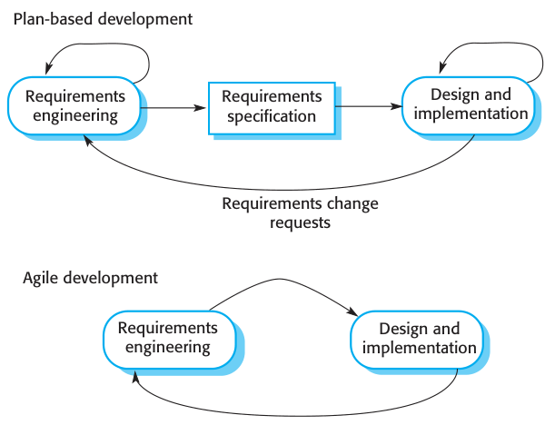
| Aspect方面 | Plan-driven计划驱动 | Agile敏捷 |
|---|---|---|
| Stages阶段 | Separate stages with defined outputs阶段相互分离，输出明确 | Interleaved activities活动交织 |
| Iteration迭代 | Within activities活动内 | Across activities跨活动 |
| Communication沟通 | Formal documents between stages阶段之间的正式文档 | Informal, face to face非正式，面对面 |
| Requirements需求 | Specified completely first; a change reworks specification and design先完整规定；变更会导致规格说明与设计返工 | Outline first; details added incrementally; change is expected先给出概要；细节逐步增加；预期会有变更 |
| Delivery交付 | One long cycle一个长周期 | An increment every 2–3 weeks每 2–3 周交付一个增量 |
| Customer客户 | Mainly at the start and the end主要在开始和结束时参与 | Involved throughout; evaluates each increment全程参与；评估每个增量 |
| Best for适用于 | Large, long-lived, critical systems; several teams大型、长期使用的关键系统；多个团队 | Small and medium products and in-house systems with changing requirements需求多变的中小型产品和内部系统 |
The two approaches can be mixed. A plan-driven process may allocate requirements to increments. An agile iteration may produce models and documents instead of code.两种方法可以混合使用。计划驱动过程可以把需求分配到各个增量中；敏捷的一次迭代也可以产出模型和文档，而不一定是代码。
Step 2: the manifesto and the five principles第 2 步：宣言和五条原则
In words: the manifesto says what agile people care about most: people, working software, the customer and change.用文字表述：宣言说明敏捷人士最看重的东西：人、可工作的软件、客户和变化。
The agile manifesto（敏捷宣言）values the left-hand items more than the right-hand items. The right-hand items still have value.敏捷宣言更看重左边的条目，而不是右边的条目。右边的条目仍然有价值。
| Valued more更看重 | Valued less相对不那么看重 |
|---|---|
| Individuals and interactions个人和互动 | Processes and tools流程和工具 |
| Working software可工作的软件 | Comprehensive documentation详尽的文档 |
| Customer collaboration客户协作 | Contract negotiation合同谈判 |
| Responding to change响应变化 | Following a plan遵循计划 |
All agile methods share five principles.所有敏捷方法都有五条共同的原则。
| Principle原则 | Meaning含义 |
|---|---|
| Customer involvement客户参与 | Customers are closely involved throughout; they provide and prioritize requirements and evaluate each iteration客户全程密切参与；他们提出并排定需求的优先级，并评估每次迭代 |
| Embrace change拥抱变化 | Expect requirements to change and design the system to accommodate this预期需求会变化，并据此设计系统 |
| Incremental delivery增量交付 | The software is developed in increments; the customer specifies the requirements for each one软件以增量方式开发；客户为每个增量规定需求 |
| Maintain simplicity保持简单 | Keep both the software and the process simple; remove complexity wherever possible让软件和过程都保持简单；尽可能去除复杂性 |
| People not process人而非流程 | Exploit the skills of the team and let members choose their own ways of working发挥团队成员的技能，让成员自行选择工作方式 |
Step 3: where agile works第 3 步：敏捷在哪些场合有效
Agile has been most successful in two cases:敏捷在两类情况下最为成功：
- Product development. A company builds a small or medium-sized product for sale. Almost all apps are built this way.产品开发。公司开发一款中小型产品用于销售。几乎所有应用都是这样开发的。
- Custom systems inside one organization. The customer takes part, and few external stakeholders or regulations apply.单一组织内的定制系统。客户参与其中，几乎没有外部利益相关者和法规约束。
It fits because the customer can talk to the team continuously and the system is stand-alone. No parallel development streams need coordinating. Small teams in one place communicate informally.这样做是合适的，因为客户可以持续地与团队沟通，而且系统是独立的。不需要协调并行的开发流。小团队在同一地点，沟通可以是非正式的。
Practice练习
Q1. (Definition) State the four value statements of the agile manifesto. Why does "working software over comprehensive documentation" not mean "no documentation"?Q1.（定义）陈述敏捷宣言的四条价值表述。为什么“可工作的软件胜过详尽的文档”并不意味着“不要文档”？
Answer
Individuals and interactions over processes and tools; working software over comprehensive documentation; customer collaboration over contract negotiation; responding to change over following a plan. There is value in the items on the right, but the items on the left are valued more. Documentation is still produced where it has lasting value, for example an outline requirements document, or models in an iteration chosen for that purpose. What agile avoids is documentation that will probably never be used or that is out of date as soon as the code changes.个人和互动胜过流程和工具；可工作的软件胜过详尽的文档；客户协作胜过合同谈判；响应变化胜过遵循计划。右侧的条目也有价值，但左侧的条目更受重视。在具有持久价值的地方仍会产出文档，例如概要性的需求文档，或为特定目的而在迭代中产出的模型。敏捷要避免的是那些很可能永远不会被使用、或一旦代码变化就过时的文档。
Q2. (Explain) Explain how the agile principles lead to faster development and deployment of software.Q2.（解释）解释敏捷原则如何带来软件开发与部署的加速。
Answer
- Customer involvement: questions about requirements are answered at once, without waiting for a formal sign-off.客户参与：关于需求的问题立即得到解答，无需等待正式签署。
- Embrace change: no frozen specification has to be reworked and retested when requirements change.拥抱变化：需求变化时，无需对冻结的规格说明返工并重新测试。
- Incremental delivery: useful functionality reaches users every 2–3 weeks instead of at the end of the project.增量交付：每 2–3 周就有有用的功能交到用户手中，而不是等到项目结束。
- Maintain simplicity: there is less to design, document, test and change.保持简单：需要设计、文档化、测试和修改的内容更少。
- People not process: the team organizes its own work without prescribed procedures, so less time is lost to bureaucracy.人而非流程：团队在没有规定程序的情况下自行组织工作，因此在官僚程序上浪费的时间更少。
Interleaving the activities and delivering small increments give early feedback, so wrong requirements are found after weeks, not years.交织进行各项活动并交付小增量，能够及早获得反馈，因此错误的需求可以在数周内而非数年后被发现。
思路：把五条原则逐条对应到“少等待、少返工、早交付”。
Q3. (Application) Explain why an agile approach suits a final-year student project.Q3.（应用）解释为什么敏捷方法适合最后一学年的学生项目。
Answer
Requirements are vague at the start and change with the supervisor's feedback. The team is small and co-located, so informal communication works. The supervisor acts as the customer and can evaluate each increment. The fixed deadline is met by delivering the most important features first, so a working system exists at the end even if some features are dropped. Heavy documentation beyond the final report would take time from implementation.需求在开始时较为模糊，并会随导师的反馈而变化。团队规模小，且同地办公，因此非正式沟通行之有效。导师充当客户，并能评估每个增量。通过优先交付最重要的功能来满足固定截止日期，因此即使某些功能被舍弃，最后仍会有一个可工作的系统。除最终报告之外的大量文档会占用实现的时间。
Extreme Programming and user stories ★★★极限编程与用户故事
Goal. Name the practices of Extreme Programming and the principle each one serves. Write a story card and break it into task cards.目标。说出极限编程的各项实践，以及每项实践服务于哪条原则。编写一张故事卡，并把它拆分为任务卡。
Step 1: the idea of Extreme Programming第 1 步：极限编程的思想
In words: Extreme Programming = take good habits such as testing and reviewing, and do them as much as possible, all the time.用文字表述：极限编程 = 把测试、审查这类好习惯做到极致，并且一直做。
Extreme Programming (XP)（极限编程）can build, integrate and test several new versions of the system in a single day. Requirements are written as user stories and turned into tasks. Programmers work in pairs and write the tests before the code. All tests must pass whenever new code is integrated, and releases follow each other closely.极限编程（XP）可以在一天之内构建、集成和测试系统的几个新版本。需求以用户故事的形式编写，并转化为任务。程序员结对工作，并且先写测试再写代码。每次集成新代码时，所有测试都必须通过，各次发布之间的间隔也很短。
Select user stories for this release → Break down stories to tasks → Plan release
→ Develop, integrate and test software → Release software → Evaluate system → next release
Step 2: the ten practices第 2 步：十项实践
Each XP practice serves one or two of the five agile principles. The last column is a favorite exam question.每项极限编程实践服务于五条敏捷原则中的一到两条。最后一列是考试的热门题目。
| Practice练习 | What it means含义 | Principle served所服务的原则 |
|---|---|---|
| Incremental planning增量计划 | Requirements are recorded on story cards; the stories for a release are chosen by available time and priority and broken into tasks需求记录在故事卡上；某次发布的故事依据可用时间和优先级选出，并拆分为任务 | Incremental delivery增量交付 |
| Small releases小型发布 | The minimal useful set of functionality is released first; frequent releases add functionality先发布最小可用的功能集；频繁发布，逐步增加功能 | Incremental delivery; embrace change增量交付；拥抱变化 |
| On-site customer现场客户 | An end-user representative is available full time to the team, brings requirements and defines acceptance tests一名最终用户代表全职待命于团队，提供需求并定义验收测试 | Customer involvement客户参与 |
| Pair programming结对编程 | Developers work in pairs and check each other's work开发人员结对工作，相互检查彼此的工作 | People not process人而非流程 |
| Collective ownership（集体所有权） | Pairs work on all areas of the system, so no islands of expertise develop; anyone can change anything结对小组负责系统的各个部分，因此不会形成专家孤岛；任何人都可以修改任何内容 | People not process人而非流程 |
| Sustainable pace可持续的工作节奏 | Large amounts of overtime are not acceptable: they reduce code quality and medium-term productivity大量加班是不可接受的：它们会降低代码质量和中期生产率 | People not process人而非流程 |
| Test-first development测试先行开发 | Automated unit tests for new functionality are written before the functionality新功能的自动化单元测试在功能实现之前编写 | Embrace change拥抱变化 |
| Continuous integration（持续集成） | A finished task is integrated into the whole system at once; all unit tests must then pass完成的任务立即集成到整个系统中；此时所有单元测试都必须通过 | Embrace change拥抱变化 |
| Refactoring重构 | All developers improve the code continuously as soon as improvements are found所有开发人员一旦发现改进之处，便持续改进代码 | Embrace change; maintain simplicity拥抱变化；保持简单 |
| Simple design简单设计 | Enough design for the current requirements and no more针对当前需求的设计刚好足够，不做多余设计 | Maintain simplicity保持简单 |
Everyday example for collective ownership: in a shared kitchen, anybody may tidy any cupboard. Nobody is "the only person who knows where the spoons are". Companies seldom use all ten practices. They pick those that suit them, often together with Scrum.集体代码所有制的生活例子：在一个共用的厨房里，任何人都可以整理任何橱柜。没有人是"唯一知道勺子放在哪里的人"。公司很少会用全部十项实践，而是挑选适合自己的，通常还会和 Scrum 一起使用。
Step 3: user stories and task cards第 3 步：用户故事和任务卡
In words: a user story = one short scenario of use, in the customer's own words, written on a card.用文字表述：用户故事 = 一个简短的使用场景，用客户自己的话写在卡片上。
Agile methods have no separate requirements activity. A user story（用户故事）is a scenario of use that a system user might experience. The customer and the team write it on a story card. The team then works as follows:敏捷方法没有单独的需求活动。用户故事是用户可能经历的一个使用场景。客户和团队把它写在故事卡上。团队随后按以下方式工作：
- Break each story into tasks, and estimate the effort of each task. The team and the customer refine the requirements in the discussion.把每个故事拆分为任务，并估算每个任务的工作量。团队和客户在讨论中细化需求。
- The customer prioritizes the stories. The first ones give useful business support at once and can be done in about two weeks.客户为故事排定优先级。最先做的故事能很快提供有用的业务支持，大约两周即可完成。
- Change or drop stories that are not yet implemented when the requirements change. Changes to a delivered system become new story cards.需求变化时，修改或删除尚未实现的故事。对已交付系统的变更，要写成新的故事卡。

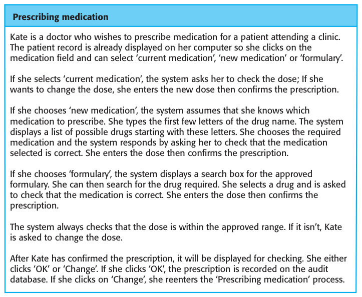

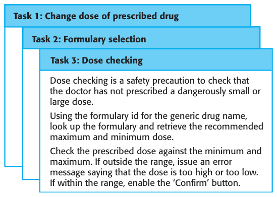
The story card says what the user does. Each task card says what the programmers build. A task is small enough to be tested by one or more unit tests.故事卡说明用户做什么。每张任务卡说明程序员要构建什么。任务要足够小，能够被一个或多个单元测试覆盖。
Stories are easy for users to understand, so users take part in suggesting requirements. The weakness is completeness. Nobody can tell whether the stories cover all essential requirements. Experienced users also leave out steps that seem obvious to them.故事容易被用户理解，所以用户可以参与提出需求。它的弱点是完整性。没有人能判断故事是否覆盖了所有必要的需求。有经验的用户也会漏掉他们自己觉得显而易见的步骤。
Practice练习
Q1. (Design) Write a story card for a student who renews a borrowed library book online and break it into three tasks.Q1.（设计）为一名在线续借图书馆借阅图书的学生编写一张故事卡，并将其拆分为三项任务。
Answer
Story card: Renewing a book. Sam is a student with two books on loan. He logs in, opens "My loans" and presses "Renew" on a book that is due tomorrow. The system checks that nobody has reserved the book and that Sam's fines are below the limit. If both checks pass, the due date moves forward by the loan period and a confirmation is shown; otherwise the system explains why the renewal was refused.故事卡：续借图书。Sam 是一名借有两本书的学生。他登录系统，打开“我的借阅”，然后在一本明天到期的书上点击“续借”。系统检查该书是否已被他人预约，以及 Sam 的罚款是否低于上限。若两项检查都通过，则到期日顺延一个借阅期限，并显示确认信息；否则，系统说明续借被拒绝的原因。
Tasks. (1) Display the loans with their due dates and a Renew button. (2) Check the reservation and fine rules. (3) Extend the due date and show the confirmation or refusal message. Each task is small enough to estimate and to test with one or more unit tests.任务。(1) 显示借阅图书及其到期日，并提供“续借”按钮。(2) 检查预约规则和罚款规则。(3) 顺延到期日，并显示确认或拒绝信息。每项任务都足够小，可以进行估算，并通过一个或多个单元测试进行测试。
Q2. (Discuss) Give two advantages and two disadvantages of expressing requirements as stories on cards.Q2.（讨论）列出以卡片上的故事表达需求的两项优点和两项缺点。
Answer
Advantages: (1) customers and users relate to a story more easily than to a requirements document or use cases, so they take part in suggesting requirements; (2) a story is small, so it can be broken into tasks, prioritized and moved between releases at low cost. Disadvantages: (1) completeness is hard to judge, because nobody can tell whether the stories cover all essential requirements; (2) a story may not give a true picture of an activity, because experienced users omit steps that are obvious to them. Stories also say little about non-functional requirements and are a weak basis for later maintenance, which needs a coherent requirements document.优点：(1) 客户和用户比起需求文档或用例更容易理解故事，因此他们更愿意参与提出需求；(2) 故事规模小，因此可以以较低成本拆分为任务、排定优先级，并在各次发布之间调整。缺点：(1) 完备性难以判断，因为没有人能确定故事是否覆盖了全部关键需求；(2) 故事可能无法真实反映某项活动，因为经验丰富的用户会省略对他们而言显而易见的步骤。此外，故事对非功能需求的说明很少，也难以为之后的维护提供可靠依据，而维护需要一份连贯的需求文档。
Q3. (Recall) Name the XP practices that support each agile principle: incremental delivery, customer involvement, people not process, embrace change, maintain simplicity.Q3.（回忆）列出支持以下各项敏捷原则的 XP 实践：增量交付、客户参与、人而非流程、拥抱变化、保持简单。
Answer
Incremental delivery: small, frequent releases and incremental planning from story cards. Customer involvement: an on-site customer who defines the acceptance tests. People not process: pair programming, collective ownership and a sustainable pace. Embrace change: regular releases, test-first development, refactoring and continuous integration. Maintain simplicity: constant refactoring and simple design.增量交付：小型、频繁的发布，以及基于故事卡的增量计划。客户参与：由现场客户定义验收测试。人而非流程：结对编程、集体所有权和可持续的工作节奏。拥抱变化：定期发布、测试先行开发、重构和持续集成。保持简单：持续重构和简单设计。
易错：refactoring 同时支持“拥抱变化”和“保持简单”两条原则。
Refactoring, test-first development and pair programming ★★★重构、测试先行开发和结对编程
Goal. Explain refactoring, test-first development and pair programming with their benefits and limits. Write test cases from a rule and judge what a passing test suite proves.目标。解释重构、测试先行开发和结对编程，以及它们的收益和局限。根据规则编写测试用例，并判断一套测试全部通过能证明什么。
Step 1: refactoring第 1 步：重构
In words: refactoring = clean up the code as you go, without changing what it does.用文字表述：重构 = 边写边整理代码，但不改变它的功能。
Everyday example: a cook who wipes the counter and puts tools back while cooking can always find things. A cook who never tidies gets slower every day.生活中的例子：一个厨师在做饭时擦干净台面、把工具放回原处，就总能找到东西。一个从不整理的厨师，每天都会变得更慢。
Traditional engineering says design for change: guess which changes will come and build in generality. XP rejects this, because the guessed changes often never arrive. XP relies on refactoring（重构）. The team looks for improvements and makes them at once.传统工程强调为变化而设计：猜测将来会发生哪些变化，并提前加入通用性。极限编程不这样做，因为猜测的变化往往永远不会出现。极限编程依靠重构：团队一旦发现可以改进的地方，就立即改进。
The reason is that quick local changes damage the structure of the code. Code is duplicated, parts are reused badly, and later changes get harder. Typical refactorings are removing duplicate code, renaming attributes and methods, and replacing similar code with calls to library methods.原因是，草率的局部修改会破坏代码的结构。代码被重复，部件被不当复用，之后的修改越来越难。典型的重构包括：删除重复代码、重命名属性和方法，以及用库函数的调用替代相似的代码。
A refactoring changes the structure of the code, not its behavior. Every test that passed before must still pass afterwards. Automated tests therefore make constant refactoring safe. In practice refactoring is often postponed under delivery pressure. Some changes need an architectural change that refactoring cannot give.重构改变代码的结构，而不是它的行为。以前通过的每个测试在重构之后仍然必须通过。因此，自动化测试让持续重构变得安全。在实践中，重构常常因交付压力而被推迟。有些变化需要架构层面的改动，重构无法做到。
Step 2: test-first development第 2 步：测试先行开发
In words: test-first = write the test before the code, so that the test says exactly what the code must do.用文字表述：测试先行 = 先写测试，再写代码，让测试准确说明代码必须做什么。
Incremental development has no full specification from which testers could derive system tests. So XP makes testing automated and central. In test-first development（测试优先开发）the tests are written before the code. Benefits:增量开发没有完整的规格说明，测试人员无法据此推导出系统测试。因此极限编程把自动化测试放在核心位置。在测试先行开发中，测试在代码之前编写。它的好处有：
- The test is a specification. It fixes the interface and the expected behavior, so misunderstandings appear early.测试就是规格说明。它确定了接口和预期行为，因此误解会尽早暴露。
- Ambiguities are settled first. The programmer must understand the requirement before writing the code.歧义先被解决。程序员在写代码之前必须先理解需求。
- No test lag. A programmer who works faster than the tester does not get ahead of the testing, so tests are not skipped.没有测试滞后。如果程序员写得比测试人员快，就不会跑到测试前面，因此测试不会被跳过。
- Clear link to requirements. Each story becomes tasks, and each task produces one or more unit tests.与需求的清晰联系。每个故事变成任务，每个任务产生一个或多个单元测试。
The customer helps to write the acceptance tests（验收测试）for the stories of the next release. They check on customer data whether the system meets the real need. Test automation is essential. After every new function the whole test set is run, so new problems are caught at once.客户帮助为下一次发布的故事编写验收测试。这些测试用客户的数据检查系统是否满足真实需求。测试自动化是必不可少的。每添加一个新功能，就运行整个测试集，这样新问题会立即被发现。
Test-first has three limits:测试先行有三个局限：
- Programmers prefer programming to testing and take shortcuts. For example, they do not test every exception.程序员更喜欢编程而不是测试，会走捷径。例如，他们不测试每一种异常情况。
- Some tests are hard to write step by step, for example for the display logic and the screen-to-screen workflow of a complex interface.有些测试很难逐步写出，例如复杂界面的显示逻辑和页面之间的操作流程。
- Completeness is hard to judge. A large suite that runs often gives the impression of a correct system, but crucial parts may never be executed.完整性很难判断。一个规模大且经常运行的测试集会给人一种系统正确的印象，但关键部分可能从未被执行。
Step 3: pair programming第 3 步：结对编程
In words: pair programming = two programmers share one computer, and every line has two pairs of eyes.用文字表述：结对编程 = 两名程序员共用一台电脑，每一行代码都有两双眼睛把关。
In pair programming（结对编程）two programmers sit at one computer. The pairs change, so that everybody works with everybody. Three advantages:在结对编程中，两名程序员坐在同一台电脑前。搭档会轮换，使每个人都能与其他人合作。它有三个优点：
- Collective ownership. The software belongs to the team, and nobody is blamed alone for a problem (egoless programming).集体代码所有制。软件属于整个团队，出了问题也不会只怪某一个人（无我编程）。
- Informal review. Every line is seen by at least two people. This probably finds fewer errors than a formal inspection, but it is cheaper and easier to organize. Formal inspections introduce delays.非正式审查。每一行代码都至少由两个人看过。它找到的错误可能比正式审查少，但成本更低，也更容易组织。正式审查会带来延迟。
- It encourages refactoring. Refactoring costs effort now for a later benefit. In a pair, the partner benefits at once, so the partner supports it.它鼓励重构。重构现在要花费精力，收益要等以后才能看到。在结对中，搭档马上就能受益，所以会支持重构。
The objection is efficiency: a pair might produce half as much code as two individuals. The evidence is mixed. Studies with students found productivity comparable to two people working alone. Studies with experienced programmers found a loss that the better quality did not fully repay. Many companies mix pairing with solo work.反对的理由是效率：一对搭档可能只产出两个人单独工作时一半的代码。证据并不一致。对学生的研究发现，生产率与两人各自单独工作时相当。对有经验程序员的研究发现，产出有所损失，而更高的质量并没有完全弥补这一损失。许多公司把结对与单独工作结合使用。
Practice练习
Q1. (Trace) A syrup label allows a single dose of 5–15 mL and a daily total of 10–40 mL. Give the expected result of the dose check for the inputs (single dose in mL, doses per day): (10, 3), (15, 3), (4, 4), (5, 1), (8, 5), (12, 4).Q1.（手工演算）某糖浆标签允许单次剂量为 5–15 mL，每日总量为 10–40 mL。对于以下输入（单次剂量，单位 mL；每日次数），给出剂量核对的预期结果：(10, 3)、(15, 3)、(4, 4)、(5, 1)、(8, 5)、(12, 4)。
Answer
- (10, 3): total 30 mL, OK.(10, 3)：总量 30 mL，OK。
- (15, 3): the single dose is on the boundary and allowed, but the total is 45 mL, so the error is total too high.(15, 3)：单次剂量处于边界且允许，但总量为 45 mL，因此错误为总量过高。
- (4, 4): the single dose is below 5 mL, so the error is single dose too low (the total of 16 mL is acceptable).(4, 4)：单次剂量低于 5 mL，因此错误为单次剂量过低（总量 16 mL 是可接受的）。
- (5, 1): the single dose is on the boundary and allowed, but the total of 5 mL is below 10 mL, so the error is total too low.(5, 1)：单次剂量处于边界且允许，但总量 5 mL 低于 10 mL，因此错误为总量过低。
- (8, 5): total 40 mL, on the upper boundary, OK.(8, 5)：总量 40 mL，处于上界，OK。
- (12, 4): total 48 mL, so the error is total too high.(12, 4)：总量 48 mL，因此错误为总量过高。
易错：边界值本身属于允许范围；每个用例只破坏一条规则，期望结果才没有歧义。
Q2. (Explain) A project has 400 automated tests and all pass. Explain how the test suite may still compromise the quality of the system.Q2.（解释）某项目有 400 个自动化测试，且全部通过。解释该测试集为何仍可能损害系统质量。
Answer
Passing tests show only that the tested behavior works. The suite may be incomplete: programmers who prefer programming to testing take shortcuts, for example tests that do not check every exception. Parts such as the display logic and the workflow between screens are hard to test incrementally and stay untested. The number of tests says nothing about coverage, so crucial code may never be executed, and a large suite gives false confidence that the system is complete and correct. If one developer writes both code and tests, a misunderstanding of a requirement is built into both. Remedies: review the tests, measure coverage, write further tests after development and add customer acceptance tests.通过的测试只能说明被测行为正常。测试集可能并不完备：更喜欢编程而非测试的程序员会走捷径，例如编写的测试未检查每一种异常。显示逻辑和屏幕之间的工作流等部分难以增量式测试，因而始终未被测试覆盖。测试的数量与覆盖率无关，因此关键代码可能从未被执行，而庞大的测试集会让人误以为系统既完整又正确。若同一名开发人员既编写代码又编写测试，那么对需求的误解就会同时被植入两者之中。补救措施包括：评审测试、度量覆盖率、开发之后补充编写测试，并增加客户验收测试。
Q3. (Calculation) A feature takes one programmer 20 h to code plus 8 h of repair after testing. A pair codes it in 12 h elapsed time and needs 2 h of repair by one person. (a) Compute the person-hours per feature for both ways of working. (b) Find the pair coding time at which both cost the same. (c) Give four reasons why a pair can be more than half as productive as two individuals.Q3.（计算）某项功能由一名程序员编码需 20 h，测试后修复需 8 h。若由一对程序员编码，则日历耗时为 12 h，并需要一人修复 2 h。(a) 计算两种工作方式下每项功能所需的人时。(b) 求出两种方式成本相同时的结对编码时间。(c) 给出一对程序员的生产率能够超过两人各自工作时之一半的四个原因。
Answer
(a) Solo: 20 + 8 = 28 person-hours. Pair: 2 × 12 + 2 = 26 person-hours. Pairing saves 2 person-hours (7%).(a) 单人：20 + 8 = 28 人时。结对：2 × 12 + 2 = 26 人时。结对节省 2 人时（7%）。
(b) Break-even: \(2h+2=28\), so \(h=13\) h. The pair may take up to 13 h (65% of the solo coding time) before pairing costs more.(b) 盈亏平衡点：\(2h+2=28\)，因此 \(h=13\) h。结对耗时最多可达 13 h（即单人编码时间的 65%），在此之前结对的成本都不会更高。
(c) The pair at 12 h delivers the coding output of 20/12 = 1.67 programmers, which is 83% of two programmers, not 50%. Reasons: the design is discussed first, so there are fewer false starts and less rework; continuous review removes defects before testing; one partner can think ahead or look things up while the other types; knowledge is shared, so less time is lost when stuck or when explaining code later; mutual attention reduces distractions. The numbers are hypothetical: pairing pays only if the saved rework and repair offset the double staffing.(c) 结对用 12 h 完成的编码产出相当于 20/12 = 1.67 名程序员，即两名程序员的 83%，而不是 50%。原因包括：先讨论设计，因此少走弯路、少返工；持续评审在测试之前就消除了缺陷；一方可以提前思考或查阅资料，另一方则负责输入代码；知识得到共享，因此在卡住时或之后解释代码时损失的时间更少；彼此的专注减少了分心。这些数字只是假设：只有当节省下来的返工和修复工作抵消了双人投入时，结对才划算。
Scrum: agile project management ★★★Scrum：敏捷项目管理
Goal. Name the Scrum roles and artifacts, describe the sprint cycle, and forecast the number of sprints from the velocity.目标。说出 Scrum 的角色和工件，描述冲刺周期，并根据速度预测冲刺数。
Step 1: why Scrum, and who is who第 1 步：为什么用 Scrum，以及各个角色是谁
In words: Scrum = a way to organize an agile project in fixed-length work rounds, so that managers can see what happens.用文字表述：Scrum = 用固定长度的工作轮次组织敏捷项目，让管理者能看到正在发生的事情。
Plan-driven managers want visibility: what is delivered, when and by whom. Informal agile control clashes with this need. Scrum gives some external visibility. It follows the agile principles but prescribes no programming practice. So it fits easily into existing practice, and it is the most widely used agile method.计划驱动的管理者需要可见性：交付了什么、什么时候交付、由谁交付。非正式的敏捷控制与这一需求相冲突。Scrum 提供了一定的外部可见性。它遵循敏捷原则，但不规定具体的编程实践。因此它很容易融入现有的做法，并且是应用最广泛的敏捷方法。
| Term术语 | Meaning含义 |
|---|---|
| Development team开发团队 | Self-organizing group of at most seven developers who build the software and other essential project documents由不超过七名开发人员组成的自组织小组，负责构建软件和其他必要的项目文档 |
| Product backlog（产品待办列表） | List of "to do" items: features, requirements, user stories and supplementary tasks such as architecture definition or user documentation待办事项清单：功能、需求、用户故事，以及体系结构定义或用户文档等补充任务 |
| Product Owner（产品负责人） | Person (or small group) who identifies requirements, prioritizes them and reviews the backlog continuously so that the project meets critical business needs; may be a customer, a product manager or a stakeholder representative负责识别需求、为需求排定优先级并持续评审待办列表，以确保项目满足关键业务需求的人（或小组）；可以是客户、产品经理或利益相关者代表 |
| ScrumMaster（Scrum 主管）Scrum Master | Ensures that the Scrum process is followed, guides the team, deals with the rest of the company and shields the team from outside interference; not a project manager确保遵循 Scrum 过程，指导团队，负责与公司其他部门打交道，并使团队免受外部干扰；不是项目经理 |
| Sprint（冲刺） | A development iteration, usually 2–4 weeks一次开发迭代，通常为 2–4 周 |
| Sprint backlog（冲刺待办列表） | The backlog items selected for the current sprint为当前冲刺（Sprint）选定的待办条目 |
| Velocity（速度） | Estimate of how much backlog effort a team covers in one sprint; the basis for estimates and for tracking improvement团队在一个冲刺中能够完成的待办工作量的估计值；是估算的基础，也用于跟踪改进情况 |
| Daily Scrum（每日站会） | Short team meeting, ideally face to face, that reviews progress and prioritizes the day's work简短的团队会议，理想情况下面对面进行，用于回顾进展并为当天的工作排定优先级 |
| Potentially shippable increment潜在可交付增量 | Software delivered by a sprint in a finished state, so that no further work such as testing is needed to integrate it; not always achievable in practice冲刺交付的处于完成状态的软件，因此无需再进行测试等工作即可集成；实践中未必总能做到 |
Everyday example: a family plans its week on a board of sticky notes. The shopping list is the product backlog. The notes chosen for this week are the sprint backlog. A short morning chat is the daily Scrum.生活中的例子：一家人用便利贴板规划一周的安排。购物清单就是产品待办列表。本周选中的便利贴是冲刺待办列表。早上短暂的碰头就是每日站会。
Step 2: the sprint cycle第 2 步：冲刺周期
In words: a sprint = a fixed time box in which the team finishes a chosen part of the backlog, and then the work is reviewed.用文字表述：冲刺 = 一个固定时长的时间盒，团队在其中完成待办列表中选定的部分，然后对工作进行评审。
Product backlog → select items → plan sprint → sprint backlog → sprint (daily Scrum) → review → potentially shippable software
- Product backlog. It holds mostly features, but also prototyping, architecture and documentation tasks. The Product Owner keeps its level of detail suitable.产品待办列表。它主要包含功能，但也包括原型开发、架构和文档的任务。产品负责人要让它的详细程度保持合适。
- Prioritize. At the start of each sprint the Product Owner prioritizes the items.排序。每次冲刺开始时，产品负责人为条目排定优先级。
- Select and estimate. The whole team selects the highest-priority items that it believes it can complete, using its velocity from earlier sprints. The result is the sprint backlog.选择与估算。全体团队根据之前冲刺的速度，选出它认为能完成的、优先级最高的条目。结果就是冲刺待办列表。
- Sprint. It lasts 2–4 weeks. The team decides who does what. A sprint is never extended. Unfinished items return to the product backlog.冲刺。持续 2–4 周。由团队决定谁做什么。冲刺绝不延长。未完成的条目返回产品待办列表。
- Daily Scrum. Each member says what was done, what the problems are and what comes next. The team re-plans together, and the ScrumMaster gives no orders. A Scrum board with sticky notes shows who does what.每日站会。每位成员说明做了什么、遇到什么问题、接下来做什么。团队一起重新规划，Scrum Master 不发布命令。用便利贴做的 Scrum 看板显示谁在做什么。
- Sprint review. The team looks at how it could work better and what the product state is. The result is a potentially shippable increment.冲刺评审。团队回顾如何能工作得更好，以及产品的状态。结果是一个有可能交付的增量。
Step 3: planning with velocity第 3 步：用速度做规划
In words: velocity = how many points the team really finished per sprint, on average, lately; the number of sprints = remaining points ÷ velocity, rounded up.用文字表述：速度 = 团队最近每次冲刺平均真正完成的点数；冲刺数 = 剩余点数 ÷ 速度，向上取整。
Step 4: distributed Scrum第 4 步：分布式 Scrum
Scrum was designed for one room. Offshore teams bring cheaper staff, special skills and work around the clock, so Scrum is adapted. Five requirements:Scrum 是为同一个房间里的团队设计的。离岸团队能带来更低的成本、特殊的技能，并且可以全天候工作，因此 Scrum 需要做出调整。它有五项要求：
- The ScrumMaster sits with the development team and sees its daily problems.Scrum Master 与开发团队坐在一起，能看到他们每天遇到的问题。
- The Product Owner visits the developers to build trust, and videoconferencing links them.产品负责人去拜访开发人员以建立信任，视频会议把他们连接起来。
- All teams share one development environment.所有团队共用一个开发环境。
- Instant messaging and video calls support informal contact.即时通讯和视频通话支持非正式的沟通。
- Continuous integration lets everybody see the state of the product at any time.持续集成使每个人都能随时看到产品的状态。
Practice练习
Q1. (Calculation) The product backlog holds 85 story points and the team's velocity is 17 points per sprint. Sprints last 3 weeks. (a) How many sprints and weeks are needed? (b) The Product Owner adds 10 points of new items. Give the new forecast and comment.Q1.（计算）产品待办列表包含 85 个故事点，团队速度为每个冲刺 17 个点。每个冲刺持续 3 周。(a) 需要多少个冲刺和多少周？(b) Product Owner 增加了 10 个点的新条目。给出新的预测并加以评论。
Answer
(a) \(N=\lceil 85/17\rceil=5\) sprints, so 5 × 3 = 15 weeks.(a) \(N=\lceil 85/17\rceil=5\) 个冲刺，因此 5 × 3 = 15 周。
(b) \(W=95\), so \(N=\lceil 95/17\rceil=\lceil 5.59\rceil=6\) sprints, that is 18 weeks. Adding 10 points (12% more work) costs a whole extra sprint, because the work spills into a sixth sprint. Since sprints are fixed, the team can keep the 15 weeks only if the Product Owner drops 10 points of the lowest-priority items.(b) \(W=95\)，因此需要 \(N=\lceil 95/17\rceil=\lceil 5.59\rceil=6\) 个冲刺，即 18 周。增加 10 个点（多出 12% 的工作量）会多耗费一个完整的冲刺，因为工作溢出到了第六个冲刺。由于冲刺长度固定，只有当 Product Owner 舍弃 10 个点的最低优先级条目时，团队才能保持 15 周的计划。
易错：向上取整，不是四舍五入。
Q2. (Compare) Compare Scrum with conventional plan-based project management for: allocating people to projects, estimating cost, team cohesion, and changes in team membership.Q2.（比较）就以下方面比较 Scrum 与传统的基于计划的项目管理：人员分配到项目、成本估算、团队凝聚力，以及团队成员变动。
Answer
| Aspect方面 | Plan-based management基于计划的管理 | Scrum |
|---|---|---|
| Allocating people人员分配 | The manager assigns people to tasks in a plan made in advance经理按事先制定的计划将人员分配到任务 | The team self-organizes and chooses its tasks at each sprint planning; the Product Owner sets only priorities团队自组织，并在每次冲刺计划会议上选择任务；Product Owner 只设定优先级 |
| Estimating cost成本估算 | The whole scope is estimated up front from the specification and tracked against the plan整个范围根据规格说明预先估算，并依据计划进行跟踪 | Cost is the number of sprints times the cost of the team per sprint; the sprint count is forecast from backlog size and velocity and refined every sprint; scope is the variable成本等于冲刺数乘以每个冲刺的团队成本；冲刺数根据待办列表规模和速度进行预测，并在每个冲刺中不断修正；范围是可变量 |
| Team cohesion团队凝聚力 | Roles and documents define the work; communication goes through the manager and formal documents角色和文档规定工作内容；沟通通过经理和正式文档进行 | Daily Scrum, shared board and full visibility build communication and morale; the whole team shares ownership每日站会、共享看板和充分的可见性促进沟通与士气；整个团队共享所有权 |
| Membership changes成员变动 | Work is documented, so newcomers learn from the design documents and the manager reallocates staff工作有文档记录，因此新成员可从设计文档中学习，经理重新调配人员 | Knowledge is largely implicit, so a change hurts: the newcomer needs time and velocity drops, which makes a stable team important知识大多是隐性的，因此变动会造成伤害：新成员需要时间适应，速度随之下降，这使得保持团队稳定变得重要 |
Q3. (Application) A team tracks its sprint with a burndown chart（燃尽图）, which plots the work remaining in the sprint backlog against the days of the sprint. The sprint lasts 10 working days and the sprint backlog holds 40 points. After day 4, 12 points are done. Is the team on track? What should it do?Q3.（应用）某团队用燃尽图跟踪其冲刺（Sprint）进度，该图将冲刺待办列表中剩余的工作量与冲刺的天数作图。该冲刺持续 10 个工作日，冲刺待办列表包含 40 个点。第 4 天结束时，已完成 12 个点。团队是否按计划进行？应当如何处理？
Answer
A burndown chart shows the remaining work each day. The ideal line falls linearly from 40 points at day 0 to 0 at day 10, that is 4 points per day: remaining(d) = 40 − 4d. On day 4 the ideal remaining work is 24 points, but the actual remaining work is 40 − 12 = 28 points, one day above the line, so the team is behind.燃尽图显示每天剩余的工作量。理想线从第 0 天的 40 个点线性下降至第 10 天的 0 个点，即每天 4 个点：remaining(d) = 40 − 4d。第 4 天的理想剩余工作量为 24 个点，而实际剩余工作量为 40 − 12 = 28 个点，高出理想线一天的工作量，因此团队落后。
The pace so far is 12/4 = 3 points per day. At this pace the team finishes 3 × 10 = 30 points and leaves 10 points (25%) undone; catching up would need 28/6 = 4.7 points per day, 17% above plan. The team raises the problem at the next daily Scrum, removes obstacles and, with the Product Owner, drops or splits lowest-priority items worth about 10 points. The sprint is not extended, and unfinished items go back to the product backlog.迄今为止的进度是 12/4 = 3 个点每天。按此速度，团队将完成 3 × 10 = 30 个点，留下 10 个点（25%）未完成；要追赶进度，则需每天完成 28/6 = 4.7 个点，比计划高出 17%。团队在下一次每日站会上提出问题，清除障碍，并与 Product Owner 一起舍弃或拆分约 10 个点的最低优先级条目。冲刺不予延长，未完成的条目退回产品待办列表。
思路：理想线是直线，实际线在其上方就是落后；冲刺不延期，只调整范围。
Scaling agile methods ★★敏捷方法的规模化
Goal. Give the problems of agile for large systems and the plan-based elements that large projects add. Choose a method for a scenario, and count communication channels.目标。说明敏捷用于大型系统时的问题，以及大型项目增加的基于计划的要素。为具体场景选择方法，并计算沟通渠道数。
Agile was designed for small teams in one room. Scaling up（规模扩大）means using it for large systems that one small team cannot build. Scaling out（组织内推广）means spreading it through a large company with a long conventional history.敏捷是为同一房间里的小团队设计的。规模扩大指把它用于一个小团队无法完成的大型系统。组织内推广指把它推广到有着悠久传统的大公司之中。
Step 1: problems for large systems第 1 步：大型系统的问题
- Contracts. A requirements document is normally part of the contract, but agile has none. Agile contracts therefore pay for the time spent, not for a fixed set of requirements. When problems arise, disputes follow over who pays.合同。需求文档通常是合同的一部分，但敏捷没有这样的文档。因此敏捷合同按所花的时间付费，而不是按一组固定的需求付费。出现问题时，就会产生关于谁来付费的争议。
- Maintenance. Agile is aimed at new development. A long-lived system then lacks a requirements document to assess a change. A full-time customer is hard to keep. The knowledge in people's heads is lost when the team breaks up.维护。敏捷针对的是新开发。对于长期使用的系统，就缺少用来评估变更的需求文档。全职客户很难留住。团队解散时，人们头脑中的知识也随之丢失。
- Distributed teams. Agile assumes a small team in one place.分布式团队。敏捷假设团队规模小且在同一地点。
The five principles are also hard to apply in an organization, one difficulty each.五条原则在组织中也很难应用，每条原则都有一个难点。
| Principle原则 | Difficulty in practice实践中的困难 |
|---|---|
| Customer involvement客户参与 | Needs a customer who has time and can represent all stakeholders; representatives are often busy, and external stakeholders such as regulators are hard to represent需要一位有时间并能代表所有利益相关者的客户；代表往往很忙，而监管机构等外部利益相关者很难被代表 |
| Embrace change拥抱变化 | Prioritizing changes is hard when many stakeholders each rank them differently当许多利益相关者各自给出不同排序时，变更的优先级难以确定 |
| Incremental delivery增量交付 | Short-term iteration plans do not fit longer-term business and marketing plans (marketing may need feature lists months ahead)短期的迭代计划与较长期的业务和营销计划不相契合（营销部门可能需要提前数月获得功能清单） |
| Maintain simplicity保持简单 | Under schedule pressure there is no time for desirable simplification在进度压力下，没有时间进行理想的简化 |
| People not process人而非流程 | Some team members do not suit the intense involvement and interact badly with others一些团队成员不适应高强度的参与，并且与他人相处不佳 |
Step 2: choosing the approach第 2 步：选择方法
In words: ask three groups of questions: about the system, the team and the organization.用文字表述：从三组问题来考虑：关于系统、团队和组织。

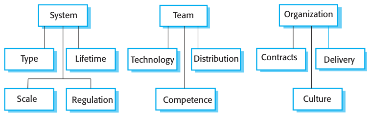
| Group分组 | Questions to ask需要提出的问题 | Leans plan-driven when倾向于计划驱动的情形 |
|---|---|---|
| System系统 | How large? What type? What lifetime? Externally regulated?规模多大？属于何种类型？寿命多长？是否受外部监管？ | The system is large (big teams cannot communicate informally); it needs heavy analysis before implementation (for example real-time timing); it is long-lived (design documents tell the support team the developers' intentions); a regulator demands documentation for the safety case系统规模大（大团队无法进行非正式沟通）；在实现之前需要大量分析（例如实时定时）；系统寿命长（设计文档可以向支持团队说明开发人员的意图）；监管机构要求为安全论证提供文档 |
| Team团队 | How skilled are the designers and programmers? How is the team organized? Which tools are available?设计人员和程序员的技能水平如何？团队如何组织？有哪些可用工具？ | Skill is low (the best people design, the others program); the team is distributed or outsourced (design documents communicate across sites); the tools give poor visualization and analysis技能水平低（最优秀的人负责设计，其他人负责编程）；团队分布式或外包（设计文档用于跨地点沟通）；工具的可视化与分析能力较差 |
| Organization组织 | Is a detailed specification needed before implementation (contract)? Is incremental delivery with customer feedback realistic? Are there cultural issues?实现之前是否需要详细的规格说明（合同要求）？带有客户反馈的增量交付是否切实可行？是否存在文化问题？ | The contract needs a detailed specification (then plan-driven requirements with agile implementation); customer representatives are unavailable; an engineering culture expects plan-based development and design documents合同需要详细的规格说明（此时采用计划驱动的需求与敏捷实现）；客户代表不可用；工程文化期望基于计划的开发和设计文档 |
Most large "agile" projects mix both.大多数大型"敏捷"项目两种方法都会混用。
Step 3: what large projects add第 3 步：大型项目增加了什么
Six characteristics make large systems hard for pure agile.有六个特征使大型系统难以纯粹采用敏捷方法。
| Characteristic特征 | Why it limits agile为何限制敏捷 |
|---|---|
| System of systems（系统之系统） | Separate teams build separate communicating systems, often in different places and time zones; no team sees the whole, so each puts its own part first不同团队构建彼此通信的独立系统，通常分布在不同地点和时区；没有任何团队能看到全貌，因此各自都把自己的部分放在首位 |
| Brownfield（既有系统环境） development | The system includes and interacts with existing systems; many requirements concern this interaction and do not suit flexible, incremental work; changing an existing system needs negotiation with its managers系统包含并与现有系统交互；许多需求涉及这种交互，不适合灵活的增量式工作；修改现有系统需要与其管理方进行协商 |
| System configuration系统配置 | Much of the work is configuring integrated systems rather than writing new code, which fits poorly with incremental development and frequent integration大部分工作是配置已集成的系统，而非编写新代码，这与增量开发和频繁集成不太相符 |
| Regulatory constraints监管约束 | External rules require certain documentation and compliance procedures外部规则要求提供特定的文档并遵循合规程序 |
| Prolonged procurement漫长的采购 | Long procurement and development make it hard to keep coherent teams who know the system漫长的采购与开发过程使人们难以维持熟悉系统的稳定团队 |
| Diverse stakeholders利益相关者多元 | Many stakeholders with different views (for example nurses, administrators, senior medical staff and hospital managers); all of them cannot be involved利益相关者众多，观点各异（例如护士、行政人员、资深医务人员和医院管理者）；他们不可能全部参与其中 |
Scaled approaches share five features:规模化的方法有五个共同特点：
- Some up-front requirements work. An outline identifies the parts that different teams build.一些前期的需求工作。一个大纲确定不同团队各自构建的部分。
- No single product owner. Several people represent different parts and must negotiate.没有单一的产品负责人。多人分别代表不同部分，必须相互协商。
- More up-front design and documentation. The architecture, database schemas and the division of work are written down.更多的前期设计和文档。架构、数据库模式和工作分工都会被写下来。
- Cross-team communication. Regular phone and video conferences, and channels such as email and wikis.跨团队沟通。定期召开电话和视频会议，并使用电子邮件和维基等渠道。
- Frequent builds instead of continuous integration. Building the whole system at every check-in is not possible.频繁构建，而不是持续集成。在每次签入时构建整个系统是不可能的。
Multi-team Scrum keeps the Scrum team model with several teams. Each team has its own Product Owner and ScrumMaster. Each team chooses an architect, and the architects design the overall architecture together. The release dates are aligned. A Scrum of Scrums is a daily meeting of one representative from each team.多团队 Scrum 保留 Scrum 的团队模型，但有多个团队。每个团队有自己的产品负责人和 Scrum Master。每个团队选出一名架构师，架构师们共同设计整体架构。发布日期要对齐。Scrum of Scrums 是每个团队派一名代表参加的每日会议。
Why several small teams? Every pair of people is a channel of communication, and the channels grow quickly with the group size.为什么要用几个小团队？每两个人之间都是一条沟通渠道，而渠道数量会随着团队规模迅速增长。
Step 4: scaling out across a company第 4 步：在整个公司横向推广
Small product companies adopt agile gladly. Large companies find it hard, for four reasons:小型产品公司乐于采用敏捷。大公司则觉得很难，原因有四：
- Project managers without agile experience do not want to take the risk of a new approach.没有敏捷经验的项目经理，不愿冒险尝试新方法。
- Quality procedures and standards, often tied to mandatory tools, are bureaucratic and clash with agile.质量流程和标准往往与强制使用的工具绑定，因而很官僚，与敏捷相冲突。
- Agile works best with highly skilled people, but a large company has a wide range of skills.敏捷在高技能人才身上效果最好，但大公司的技能水平差异很大。
- A long history of conventional engineering resists the cultural change.长期的传统工程历史会抵制文化变革。
Change management and refactoring show the clash. Change management approves every change in advance to control cost. Under refactoring, any developer improves any code without approval.变更管理和重构之间存在冲突。变更管理要求每项变更事先批准，以控制成本。而在重构中，任何开发人员都可以未经批准地改进任何代码。
The best way to introduce agile is bit by bit. Start with an enthusiastic group, let a successful project spread the practice, and then act to spread it across the company. Forcing it on unwilling developers fails.引入敏捷的最好方式是一步一步来。先从一个热情的小组开始，让一个成功的项目带动这种做法的传播，然后再采取行动，把它推广到整个公司。强迫不愿意的开发人员接受，会失败。
Practice练习
Q1. (Scenario) Choose agile, plan-driven or a mix, and justify with system, team and organization factors: (a) a six-person start-up builds a social app in one office; (b) the flight-control software of an airliner, certified by a regulator; (c) a hospital information system built by five teams in three countries for many stakeholder groups.Q1.（情景分析）在敏捷、计划驱动或两者结合之间做出选择，并结合系统、团队和组织因素加以论证：(a) 一家六人创业公司在同一办公室开发一款社交应用；(b) 一架客机的飞行控制软件，须经监管机构认证；(c) 一个医院信息系统，由三个国家的五个团队为多个利益相关者群体共同开发。
Answer
(a) Agile (Scrum with XP practices): product development, small co-located team, changing requirements, no regulator, a customer representative is available.(a) 敏捷（采用 Scrum 并结合 XP 实践）：产品开发，团队规模小且同地办公，需求多变，没有监管机构，且有客户代表可用。
(b) Mostly plan-driven: the regulator requires detailed documentation as part of the safety case, real-time behavior needs analysis and detailed design before coding, and the lifetime is long. Agile practices such as automated tests and continuous integration can still be used in implementation.(b) 以计划驱动为主：监管机构要求将详细文档作为安全论证的一部分，实时行为需要在编码之前加以分析并进行详细设计，且系统寿命很长。自动化测试和持续集成等敏捷实践仍可用于实现阶段。
(c) A mix: a system of systems with diverse stakeholders and distributed teams. Do outline requirements and architecture up front, then use multi-team Scrum with several product owners, a Scrum of Scrums, aligned releases and documented interfaces between the teams.(c) 两者结合：这是一个由多个系统构成的系统，利益相关者多元，团队分布在各地。应先确定需求和体系结构的概要，然后采用多团队 Scrum，设置多个 Product Owner、Scrum of Scrums、协调一致的发布，并为团队之间的接口编写文档。
Q2. (Calculation) A programme has 28 developers. (a) How many pairwise communication channels exist if all work as one flat team? (b) The programme is split into four Scrum teams of seven that coordinate through one representative each (a Scrum of Scrums). Count the channels. (c) Interpret the result.Q2.（计算）某项目有 28 名开发人员。(a) 若所有人作为一个扁平团队工作，两两之间共有多少条沟通渠道？(b) 该项目被拆分为四个各含七人的 Scrum 团队，每个团队各由一名代表进行协调（即 Scrum of Scrums）。计算沟通渠道数。(c) 解释该结果。
Answer
(a) \(C(28)=28\cdot 27/2=378\) channels.(a) \(C(28)=28\cdot 27/2=378\) 条沟通渠道。
(b) Inside each team \(C(7)=21\), so the four teams have \(4\times 21=84\); among the four representatives \(C(4)=6\). The total is \(84+6=90\) channels.(b) 每个团队内部 \(C(7)=21\)，因此四个团队共 \(4\times 21=84\)；四名代表之间有 \(C(4)=6\)。总计 \(84+6=90\) 条沟通渠道。
(c) The structure removes 76% of the channels (\(1-90/378\)). This holds only if cross-team communication really passes through the representatives, which needs a defined architecture, aligned releases and clear interfaces between the teams.(c) 这种结构减少了 76% 的沟通渠道（\(1-90/378\)）。只有当跨团队沟通确实经由各代表进行时，这一结论才成立，而这需要明确的体系结构、协调一致的发布以及团队之间清晰的接口。
Terms to recognise ★需要认识的术语
| Term术语 | What to know要知道什么 |
|---|---|
| Continuous integration（持续集成） | A finished task is integrated into the whole system at once, and all unit tests must then pass完成的任务立即集成到整个系统中，然后所有单元测试都必须通过 |
| Collective ownership（集体所有权） | Pairs work on all areas of the system, so no islands of expertise develop结对的两人负责系统的所有部分，因此不会形成只有少数人懂的"专业孤岛" |
| Sustainable pace可持续的工作节奏 | Large amounts of overtime are not acceptable, because they reduce code quality and productivity大量加班是不可接受的，因为它会降低代码质量和生产率 |
| Test lag测试滞后 | A developer who works faster than the tester gets ahead of the testing, and tests are skipped如果开发人员的工作速度比测试人员快，就会跑到测试前面，测试就会被跳过 |
| Potentially shippable increment潜在可交付增量 | Software from a sprint in a finished state, so no further work such as testing is needed冲刺中交付的软件处于完成状态，因此无需再做测试等后续工作 |
| Scrum boardScrum 看板 | A whiteboard with sticky notes for the sprint backlog and work done, which anyone can change用便利贴和白板显示冲刺待办列表和已完成的工作，任何人都可以修改 |
| Time-and-materials contract（按工时计费） | The customer pays for the time spent, not for a fixed set of requirements客户按所花的时间付费，而不是按一组固定的需求付费 |
| Disciplined agile delivery（规范敏捷交付） | A stage of IBM's Agile Scaling Model that adapts agile practices to a disciplined organization and other engineering activitiesIBM 敏捷规模化模型中的一个阶段，它使敏捷实践适应有纪律的组织以及其他工程活动 |
| Agility at scale（大规模敏捷） | The last stage of that model, which also handles distributed development, legacy systems and regulation该模型的最后阶段，它还处理分布式开发、遗留系统和监管要求 |
Exam-style questions考试题型练习
Q1. (Concepts, 10 marks) (a) Define plan-driven and agile development and say where iteration happens in each. (3) (b) State the four statements of the agile manifesto and the five principles of agile methods. (4) (c) Name the two kinds of development for which agile methods have been most successful and give two reasons why they work there. (3)Q1.（概念，10 分）(a) 定义计划驱动开发和敏捷开发，并说明迭代分别发生在何处。（3 分）(b) 陈述敏捷宣言的四条表述以及敏捷方法的五项原则。（4 分）(c) 指出敏捷方法最为成功的两类开发，并给出它们在这些场景中适用的两个理由。（3 分）
Answer
(a) In plan-driven development the process is divided into separate stages (requirements, design, implementation, testing), each with documented outputs that are the basis for planning the next stage; iteration happens within each activity, and formal documents pass between the stages. Agile development interleaves specification, design, implementation and testing in a series of short increments; iteration happens across the activities, so requirements and design are developed together. (3)(a) 在计划驱动开发中，过程被划分为各个独立阶段（需求、设计、实现、测试），每个阶段都有成文的产出，作为规划下一阶段的依据；迭代发生在各个活动内部，正式文档在阶段之间传递。敏捷开发则在一系列短的增量中将规格说明、设计、实现和测试交织进行；迭代跨越各个活动进行，因此需求与设计共同发展。（3 分）
(b) Manifesto: individuals and interactions over processes and tools; working software over comprehensive documentation; customer collaboration over contract negotiation; responding to change over following a plan. Principles: customer involvement, embrace change, incremental delivery, maintain simplicity, people not process. (4)(b) 宣言：个人和互动胜过流程和工具；可工作的软件胜过详尽的文档；客户协作胜过合同谈判；响应变化胜过遵循计划。原则：客户参与、拥抱变化、增量交付、保持简单、人而非流程。（4 分）
(c) Product development (a company builds a small or medium-sized product for sale) and custom system development inside one organization with a committed customer and few external stakeholders or regulations. They work there because the customer or product manager can communicate continuously with the team, the software is stand-alone so no parallel development streams need coordinating, and small co-located teams communicate informally. (3)(c) 产品开发（公司开发一款用于销售的中小型产品），以及在单一组织内进行的定制系统开发（客户承诺参与，外部利益相关者或监管要求很少）。之所以在这些场景中行之有效，是因为客户或产品经理能够与团队持续沟通，软件是独立的，因此无需协调并行的开发流，而且小型同地团队可以进行非正式沟通。（3 分）
思路：(a) 抓住“阶段内迭代 vs 跨活动迭代”；(c) 抓住“客户能持续参与”。
Q2. (Test-first design, 10 marks) A car-park operator wants software that computes the parking fee: the first 30 minutes are free, after that every started hour costs $2, and the daily maximum is $15. (a) Write a story card and two task cards. (3) (b) Design seven test cases for the fee function (input: minutes parked), including boundary values, and give the expected fee of each. (4) (c) Explain how the tests are used in test-first development and give two benefits and two limits of the approach. (3)Q2.（测试先行设计，10 分）某停车场运营商需要一款计算停车费用的软件：前 30 分钟免费，此后每开始一个小时收费 $2，每日最高收费 $15。(a) 编写一张故事卡和两张任务卡。（3 分）(b) 为费用函数设计七个测试用例（输入：停车分钟数），包括边界值，并给出每个用例的预期费用。（4 分）(c) 解释测试在测试先行开发中如何使用，并给出该方法的两项好处和两项局限。（3 分）
Answer
(a) Story card: Paying at the exit. A driver arrives at the exit barrier and inserts the ticket. The machine shows the time parked and the fee. After payment the barrier opens; if the stay was 30 minutes or less, no payment is needed and the barrier opens at once. Tasks: (1) compute the fee from the minutes parked; (2) show time and fee and open the barrier after payment.(a) 故事卡：出口处付费。司机到达出口栏杆，插入停车票。机器显示停车时长和费用。付款后栏杆抬起；若停车时间不超过 30 分钟，则无需付费，栏杆立即抬起。任务：(1) 根据停车分钟数计算费用；(2) 显示时长和费用，并在付款后抬起栏杆。
(b) The rule is \(f(t)=0\) for \(t\le 30\), otherwise \(f(t)=\min\bigl(15,\;2\lceil (t-30)/60\rceil\bigr)\) with \(t\) in minutes.(b) 规则为：当 \(t\le 30\) 时为 \(f(t)=0\)，否则为 \(f(t)=\min\bigl(15,\;2\lceil (t-30)/60\rceil\bigr)\)，其中 \(t\) 以分钟计。
| t (min)t（分钟） | Reason原因 | Expected fee预期费用 |
|---|---|---|
| 0 | nothing parked未停车 | $0 |
| 30 | end of the free period免费时段结束 | $0 |
| 31 | first started hour第一个开始的小时 | $2 |
| 90 | exactly one hour after the free period免费时段结束后恰好一小时 | $2 |
| 91 | second started hour第二个开始的小时 | $4 |
| 450 | seven hours after the free period免费时段结束后七小时 | $14 |
| 451 | eight started hours would cost $16, capped八个开始的小时本应收费 $16，但已封顶 | $15 |
(c) The tests are written from the task before the fee function exists. They fail first; the developer then writes the simplest code that makes them pass and reruns the whole suite after every change with a test framework such as JUnit. Benefits: the tests fix the exact rule (is a stay of exactly 30 minutes free? does a started hour round up?) before coding, so ambiguities are resolved early; the suite gives instant regression checks and avoids test lag. Limits: the tests may be incomplete (no test for negative or huge inputs); the display and barrier logic is hard to test incrementally; a passing suite gives false confidence about coverage. (3)(c) 测试根据任务在费用函数存在之前编写。测试一开始会失败；随后，开发人员编写能使其通过的最简单代码，并借助 JUnit 等测试框架，在每次修改后重新运行整套测试。好处在于：测试在编码之前就固定了确切的规则（恰好停车 30 分钟是否免费？已开始的小时是否向上取整计费？），因此歧义能及早解决；整套测试提供即时的回归检查，并避免测试滞后。局限在于：测试可能不完整（没有针对负值或极大输入的测试）；显示和栏杆逻辑难以增量式测试；通过的测试集会带来关于覆盖范围的虚假信心。（3 分）
易错：“每个已开始的小时”要向上取整，且封顶值要单独测。
Q3. (Calculation, 10 marks) A Scrum team's last three 2-week sprints completed 24, 30 and 27 points. The product backlog holds 160 points. (a) Compute the velocity and forecast the number of sprints and weeks. (3) (b) In sprint 1 the team selects 27 points but completes only 21. What happens to the other 6 points and to the sprint length? (2) (c) Recompute the velocity from the three most recent sprints and forecast the remaining sprints and the total time. (3) (d) After sprint 1 the Product Owner adds 20 points. Give the new forecast and say how Scrum would respond. (2)Q3.（计算，10 分）某 Scrum 团队最近三个为期两周的冲刺分别完成了 24、30 和 27 个点。产品待办列表包含 160 个点。(a) 计算速度，并预测所需的冲刺数和周数。（3 分）(b) 在冲刺 1 中，团队选择了 27 个点，但只完成了 21 个点。另外的 6 个点以及冲刺长度会怎样？（2 分）(c) 根据最近三个冲刺重新计算速度，并预测剩余冲刺数和总时长。（3 分）(d) 冲刺 1 之后，Product Owner 增加了 20 个点。给出新的预测，并说明 Scrum 将如何应对。（2 分）
Answer
(a) \(v=(24+30+27)/3=27\) points per sprint. \(N=\lceil 160/27\rceil=\lceil 5.93\rceil=6\) sprints, that is 12 weeks. (3)(a) 每个冲刺 \(v=(24+30+27)/3=27\) 个点。\(N=\lceil 160/27\rceil=\lceil 5.93\rceil=6\) 个冲刺，即 12 周。（3 分）
(b) The sprint is not extended. The 6 unfinished points return to the product backlog, where the Product Owner reprioritizes them. (2)(b) 冲刺不予延长。未完成的 6 个点退回产品待办列表，由 Product Owner 重新排定优先级。（2 分）
(c) Remaining work: \(160-21=139\) points. The three most recent sprints are 30, 27 and 21, so \(v=(30+27+21)/3=26\). \(\lceil 139/26\rceil=\lceil 5.35\rceil=6\) more sprints, so 7 sprints in total, that is 14 weeks. (3)(c) 剩余工作量：\(160-21=139\) 个点。最近三个冲刺分别为 30、27 和 21，因此 \(v=(30+27+21)/3=26\)。还需 \(\lceil 139/26\rceil=\lceil 5.35\rceil=6\) 个冲刺，共 7 个冲刺，即 14 周。（3 分）
(d) The remaining work becomes \(139+20=159\) points: \(\lceil 159/26\rceil=\lceil 6.12\rceil=7\) more sprints, 8 in total, that is 16 weeks. Sprint length is fixed, so the Product Owner treats scope as the variable: dropping 20 points of the lowest-priority items restores the 14-week forecast. (2)(d) 剩余工作量变为 \(139+20=159\) 个点：还需 \(\lceil 159/26\rceil=\lceil 6.12\rceil=7\) 个冲刺，共 8 个冲刺，即 16 周。冲刺长度固定，因此 Product Owner 将范围作为可变因素：舍弃 20 个点的最低优先级条目，即可恢复 14 周的预测。（2 分）
易错：速度取最近三个冲刺的平均，只计已完成的点数；结果向上取整。
Q4. (Scenario, 10 marks) A medical-device company develops insulin-pump control software with 30 developers in three countries. A regulator must approve the software, and it will be maintained for 15 years. Management wants to use Scrum. (a) Give four reasons why a purely agile approach is unsuitable. (4) (b) Name the plan-based elements that should be added. (3) (c) Describe how multi-team Scrum and distributed Scrum would organize the work. (3)Q4.（情景分析，10 分）一家医疗器械公司由分布在三个国家的 30 名开发人员开发胰岛素泵控制软件。该软件必须获得监管机构批准，并将维护 15 年。管理层希望采用 Scrum。(a) 给出纯粹的敏捷方法不适用的四个理由。（4 分）(b) 指出应当加入的基于计划的要素。（3 分）(c) 描述多团队 Scrum 和分布式 Scrum 将如何组织工作。（3 分）
Answer
(a) Regulation: the regulator requires detailed documentation as part of the safety case. Type: a safety-critical control system needs analysis and detailed design before implementation. Lifetime: 15 years of maintenance needs a coherent requirements document and design documentation, and the original team cannot be kept together. Size and distribution: 30 developers in three countries are not a small co-located team, so informal communication and a single on-site customer do not work. (4)(a) 监管：监管机构要求将详细文档作为安全论证的一部分。类型：安全关键的控制系统需要在实现之前进行分析和详细设计。寿命：15 年的维护需要连贯的需求文档和设计文档，而原有团队无法长期保持不变。规模与分布：分布在三个国家的 30 名开发人员并非小型同地团队，因此非正式沟通以及单一的现场客户都无法奏效。（4 分）
(b) Up-front outline requirements and hazard analysis; architecture design with documented interfaces and a work breakdown across teams; documentation and traceability for the regulator; planned builds and a release schedule, supported by configuration management for several teams. (3)(b) 前期的需求概要与危害分析；带有成文接口的体系结构设计以及跨团队的工作分解；面向监管机构的文档和可追溯性；有计划的构建和发布进度，并由面向多团队的配置管理加以支持。（3 分）
(c) Five teams of about six, each with its own Product Owner and ScrumMaster and a chief Product Owner for the project. Product architects from the teams design and evolve the overall architecture; release dates are aligned; a daily Scrum of Scrums brings representatives of the teams together. For the distribution: the ScrumMaster sits with each team, the Product Owner visits the teams and uses videoconferencing, all teams share one development environment, instant messaging and video calls support informal contact, and continuous integration shows the state of the product. (3)(c) 五个团队，每队约六人，各自设有一名 Product Owner 和一名 Scrum Master，并为项目设一名总 Product Owner。各团队的产品架构师共同设计并演进整体体系结构；发布日期保持一致；每日的 Scrum of Scrums 把各团队的代表聚在一起。针对分布式的情况：Scrum Master 与各团队同处一地，Product Owner 拜访各团队并使用视频会议，所有团队共享同一个开发环境，即时消息和视频通话支持非正式联络，持续集成则使人们随时看到产品状态。（3 分）
Q5. (Organization and maintenance, 10 marks) A bank's IT department with 400 developers has a quality manual, a change-approval board and an external test team. It wants to introduce agile methods for a customer system with a fixed-price contract and a 15-year maintenance period. (a) Give three obstacles to introducing agile in the department. (3) (b) Explain the contract problem and how agile projects usually handle it. (2) (c) Give three problems of agile maintenance. (3) (d) Suggest a strategy for introducing agile. (2)Q5.（组织与维护，10 分）某银行的 IT 部门有 400 名开发人员，设有质量手册、变更审批委员会以及外部测试团队。该部门希望为一个客户系统引入敏捷方法，该系统采用固定价格合同，并有 15 年的维护期。(a) 给出在该部门引入敏捷的三项障碍。（3 分）(b) 解释合同问题，以及敏捷项目通常如何处理这一问题。（2 分）(c) 给出敏捷维护的三个问题。（3 分）(d) 提出引入敏捷的策略。（2 分）
Answer
(a) Quality procedures and standards are bureaucratic and conflict with agile: advance change approval conflicts with refactoring, where any developer improves any code without approval, and an external test team conflicts with test-first development. The wide range of skills in 400 developers is a problem, because agile works best with highly skilled people. Managers without agile experience and a culture shaped by conventional systems engineering resist the risk and the change. (3)(a) 质量程序和标准繁琐官僚，与敏捷相冲突：事先的变更审批与重构相冲突，因为在重构中任何开发人员都可以无需批准地改进任何代码；外部测试团队则与测试先行开发相冲突。400 名开发人员的技能水平参差不齐也是一个问题，因为敏捷在技能水平很高的人员中效果最佳。缺乏敏捷经验的管理者，以及由传统系统工程塑造的文化，会抵制其中的风险与变革。（3 分）
(b) A fixed-price contract needs a definitive statement of requirements, but agile interleaves requirements and code, so none exists. Agile projects therefore use contracts in which the customer pays for the time spent, not for a fixed set of requirements. This works while all goes well; if problems arise there are disputes over who is to blame and who pays for the extra time. (2)(b) 固定价格合同需要确定的需求说明，但敏捷将需求与代码交织在一起，因此不存在这样的说明。因此，敏捷项目通常采用按所花费时间付费（而非按一组固定需求付费）的合同。只要一切顺利，这种合同就能运转；而一旦出现问题，就会在责任归属以及谁为额外时间付费的问题上产生争议。（2 分）
(c) Lack of documentation, above all of a coherent requirements document needed to assess the impact of changes; keeping customers involved when changes are not continuous; and development team continuity, because implicit knowledge is lost when the team breaks up and programmers leave maintenance work. (3)(c) 文档缺乏，尤其是缺少评估变更影响所需的连贯需求文档；在变更并非持续发生时保持客户参与；以及开发团队的连续性，因为团队一旦拆散，隐性知识便会丢失，而程序员也会离开维护工作。（3 分）
(d) Introduce agile bit by bit: start with an enthusiastic group and a pilot project, use evangelists, let the successful project spread the practice, and only then take explicit steps across the organization; do not force it on unwilling developers. (2)(d) 循序渐进地引入敏捷：先从热情高涨的小组和试点项目开始，发挥倡导者的作用，让成功的项目带动这一实践的扩散，然后才采取明确的步骤在整个组织内推广；不要强迫不情愿的开发人员接受。（2 分）
Textbook exercises课后习题
Textbook exercises with answers: 10 questions教材习题及答案，共 10 题，点击展开
E1. (Exercise 3.1) At the end of their study program, students in a software engineering course are typically expected to complete a major project. Explain how the agile methodology may be very useful for the students to use in this case.E1. （习题 3.1）软件工程课程的学生在学习计划的最后，通常需要完成一个大型项目。请解释在这种情况下，敏捷方法对学生可能非常有用的原因。
Answer
A student project fits the situation that agile methods were designed for: a small team (about three to six students), a fixed deadline, requirements that are unclear at the start and change as students and client learn, and little experience. Agile helps in five ways.学生项目符合敏捷方法所针对的情形：团队规模小（约三至六名学生）、截止期限固定、开始时需求不清楚并会随着学生和客户的了解而变化，而且经验有限。敏捷方法在五个方面有所帮助。
- Incremental delivery in short iterations. The team has a working system after every iteration, and features are prioritized (must-have first). If time runs out, the delivered part still works and can be demonstrated, which avoids a first integration just before the deadline.短迭代中的增量交付。 团队在每次迭代之后都有一个可工作的系统，功能按优先级排序（必须具备的功能优先）。如果时间不够，已交付的部分仍然可以正常工作并进行演示，从而避免在截止前才进行第一次集成。
- Customer involvement. The supervisor or client acts as the customer and reviews each increment, so misunderstandings are found early and the changes to the requirements that always occur can be accommodated.客户参与。 导师或客户充当客户的角色，并评审每个增量，因此误解能够及早发现，而且总会出现的需求变更也能够被容纳。
- Little up-front documentation. Students spend their limited time on building and learning rather than on a long specification of a system they do not yet understand; stories and a backlog are enough for planning.预先文档较少。 学生把有限的时间用于构建和学习，而不是为一个他们尚未理解的系统撰写冗长的规格说明；用户故事和待办列表对于规划已经足够。
- Teamwork and shared knowledge. Daily stand-up meetings, shared ownership of the code, pair programming (which spreads skills between students of different ability) and sprint retrospectives improve communication, expose problems (including members who do not contribute) and teach the students to reflect on their own process.团队合作与知识共享。 每日站会、代码的集体所有权、结对编程（使不同能力的学生之间互相传递技能），以及冲刺（Sprint）回顾，能够改善沟通、暴露问题（包括不参与贡献的成员），并教会学生反思自己的过程。
- Visible progress and good practice. A backlog or burn-down chart shows the progress against the deadline, and practices such as version control, test-first development and continuous integration improve the quality of the product.进展可见，实践良好。 待办列表或燃尽图可以显示相对于截止期限的进展，而版本控制、测试先行开发和持续集成等实践能够提高产品质量。
The method must be adapted: students are not full-time and co-located, assessors may require documents and individual marks, and the supervisor should coach the team in estimation.该方法需要加以调整：学生并非全职，也不在同一地点工作；评估者可能要求提供文档和个人成绩；导师还应指导团队进行估算。
思路：学生项目的特点（小团队、截止日期固定、需求不清、经验少）正好对应敏捷的做法，逐条对应即可。
E2. (Exercise 3.2) Explain how the principles underlying agile methods lead to the accelerated development and deployment of software.E2. （习题 3.2）请解释敏捷方法的基本原则如何加快软件的开发与部署。
Answer
Agile methods remove the delays between a customer's need and running software: a complete up-front specification, detailed design documents, formal approvals, and big-bang integration and testing. Each of the five principles removes part of this delay.敏捷方法消除了客户需求与可运行软件之间的各种延迟：这些延迟来自完整的预先规格说明、详细的设计文档、正式的审批，以及大爆炸式的集成与测试。五项原则中的每一项都消除了其中的一部分延迟。
- Customer involvement. A customer representative works with the team, supplies and prioritizes requirements and evaluates each iteration. Questions are answered at once instead of through formal documents, and mistakes are corrected within one iteration, which avoids rework.客户参与。 客户代表与团队共同工作，提供并排定需求的优先级，并评估每次迭代。问题可以立即得到解答，而不必通过正式文件，错误也能在一次迭代之内得到纠正，从而避免返工。
- Embrace change. The system is designed on the expectation that requirements will change, so a change is simply included in the next iteration, without heavy change control or the redoing of a frozen specification.拥抱变化。 系统的设计预期需求会发生变化，因此变更只需纳入下一次迭代，无需繁重的变更控制，也无需重做一份已冻结的规格说明。
- Incremental delivery. The software is developed and released in small increments (every few weeks) with the most valuable functions first, so deployment can start early and feedback from real use feeds the next increment. Continuous integration and automated tests make frequent releases possible.增量交付。 软件以小增量的方式开发和发布（每隔几周一次），最有价值的功能优先，因此部署可以尽早开始，而来自真实使用的反馈又会推动下一个增量。持续集成和自动化测试使频繁发布成为可能。
- Maintain simplicity. Software and process are kept simple: only the functionality needed now, little documentation, continuous refactoring. There is less to write, test and change.保持简单。 软件和过程都保持简单：只实现当前需要的功能，文档很少，并持续重构。需要编写、测试和修改的内容也就更少。
- People not process. Skilled team members choose their own ways of working and decide locally and informally, face to face, without waiting for management approval or following a heavy prescribed process.以人为本，而非以过程为本。 有能力的团队成员自行选择工作方式，在当面交流中就地、非正式地作出决定，无需等待管理层批准，也无需遵循繁重的既定过程。
Together, a working and useful system is available early and then grows with the customer's priorities, so development and deployment are faster than in a plan-driven process that delivers everything at the end.综合来看，一个可工作且有用的系统能够尽早可用，然后随着客户的优先级不断成长；因此，相比于在最后才交付全部内容的计划驱动过程，开发与部署都更快。
思路：逐条对应五项原则，每条说明它如何省掉等待和返工。
E3. (Exercise 3.3) Extreme programming expresses user requirements as stories, with each story written on a card. Discuss the advantages and disadvantages of this approach to requirements description.E3. （习题 3.3）极限编程用故事来表达用户需求，每个故事写在一张卡片上。请讨论这种需求描述方法的优点和缺点。
Answer
A story card is a short description, in the customer's own words, of a scenario of use that a user might experience. The team breaks each story into tasks, and the customer prioritizes the stories.故事卡片是用客户自己的语言，对用户可能经历的一个使用场景所作的简短描述。团队将每个故事分解为任务，客户则对故事进行优先级排序。
Advantages优点
- Understandable. Users and customers relate to scenarios more easily than to a formal requirements document, so they take part in elicitation and can write cards themselves.易于理解。 相比正式的需求文档，用户和客户更容易理解场景，因此他们能够参与需求获取，并且自己也能编写卡片。
- Cheap and flexible. Cards are quick to write and can be changed, split, replaced or discarded as requirements change; they are easy to sort by priority on a board.成本低且灵活。 卡片编写快捷，并且可以随着需求的变化而修改、拆分、替换或丢弃；它们也便于在看板上按优先级排序。
- Good for planning. A story is small, can be estimated and broken into tasks, and delivers a visible piece of value in an increment (about two weeks), in the order that the customer chooses.便于规划。 一个故事规模小，可以估算并分解为任务，并能在一个增量（约两周）中交付一块可见的价值，交付顺序由客户选择。
- Encourage communication. The details are clarified in conversation with the customer, and the stories become the basis of the acceptance tests.促进沟通。 细节在与客户的交谈中得到澄清，而故事则成为验收测试的依据。
Disadvantages缺点
- Incompleteness. It is hard to judge whether the stories cover all essential requirements, and experienced users leave out steps that are obvious to them. Non-functional requirements (performance, security, reliability) and constraints do not fit naturally in a story.不完整。 很难判断故事是否涵盖了所有关键需求，而且有经验的用户会略去对他们来说显而易见的步骤。非功能需求（性能、安全性、可靠性）和约束并不能自然地放入故事之中。
- No overall view and little detail. Dependencies, conflicts and duplicates between stories are hard to see, and the exact behavior lives in people's memory and conversations, so it can be forgotten or interpreted differently.缺乏整体视图，细节不足。 故事之间的依赖、冲突和重复难以看清，而确切的行为则保存在人们的记忆和交谈之中，因此可能被遗忘或被以不同方式理解。
- Poor fit with contracts, regulation and large or distributed teams. Cards are not a precise specification for a contract, an audit or a safety case; informal conversation does not scale to many teams; and cards give little help to later maintenance.与合同、法规以及大型或分布式团队的契合度低。 卡片不足以作为合同、审计或安全论证的精确规格说明；非正式的交谈无法扩展到许多团队；而且卡片对后期维护帮助不大。
Conclusion: stories work well for small co-located teams with an available customer and changing requirements; where completeness, traceability or contractual precision is needed, they must be supplemented by more detailed requirements.结论：对于规模小、同地办公、客户可随时参与且需求不断变化的团队，故事的效果很好；在需要完整性、可追溯性或合同精确性的场合，则必须辅以更详细的需求。
思路：优点——易懂、轻便、便于排优先级；缺点——不完整、缺非功能需求、不适合合同和大团队。
E4. (Exercise 3.4) In test-first development, tests are written before the code. Explain how the test suite may compromise the quality of the software system being developed.E4. （习题 3.4）在测试先行开发中，测试先于代码编写。请解释测试套件如何可能损害所开发软件系统的质量。
Answer
In test-first development the tests written before each piece of code act as an executable specification, and the code is regarded as finished when all the tests pass. Quality is compromised when the suite itself is flawed or is trusted too much.在测试先行开发中，在每段代码之前编写的测试充当可执行的规格说明，当所有测试都通过时，代码即被视为完成。当测试套件本身有缺陷，或者被过分信任时，质量就会受到损害。
- Incomplete tests. The suite covers only what the developer thought of. Completeness is hard to judge for tests written incrementally, so untested cases (boundary values, exceptions and bad input, interactions between components, non-functional requirements) can hide behind a large number of passing tests, which give false confidence.测试不完整。 测试套件只覆盖开发人员想到的内容。对于逐步编写的测试，很难判断其是否完整，因此未被测试的情形（边界值、异常和错误输入、构件之间的交互、非功能需求）可能隐藏在大量通过的测试背后，从而带来虚假的信心。
- Wrong or biased tests. The same programmer writes tests and code, so a misunderstanding of a requirement is built into both and the code passes. Programmers prefer programming to testing and may take short cuts, writing trivial or implementation-specific tests.错误或有偏的测试。 同一名程序员既编写测试又编写代码，因此对需求的误解会同时体现在两者之中，代码也就能通过测试。程序员更喜欢编程而非测试，可能会走捷径，编写琐碎的或针对具体实现的测试。
- Parts that are hard to test. User interfaces, concurrency, databases and external systems are difficult to test incrementally with automated tests, so these parts are tested badly or not at all.难以测试的部分。 用户界面、并发、数据库和外部系统很难通过自动化测试进行增量式测试，因此这些部分要么测得很差，要么根本没有测试。
- Code written to pass the tests. Writing the minimum code that makes a test pass can leave a design that is correct only for the tested cases and has no overall structure.为通过测试而编写的代码。 为使测试通过而只写最少的代码，可能留下一种仅对已测试情形正确、缺乏整体结构的设计。
- Maintenance of the suite. When requirements or design change, tests become obsolete or slow, and under schedule pressure failing tests are disabled or changed to pass, so the suite loses its value.测试套件的维护。 当需求或设计发生变化时，测试会过时或变慢；而在进度压力之下，失败的测试会被禁用或改成能够通过，于是测试套件就失去了价值。
A test suite therefore improves quality only if the tests are reviewed, coverage is measured, and independent system and acceptance testing supplement the programmers' tests.因此，只有当测试经过评审、覆盖率得到度量，并且独立的系统测试和验收测试对程序员的测试加以补充时，测试套件才能真正提高质量。
思路：测试套件通过 ≠ 质量好：不完整、与代码同源的错误、难测的部分、为过测试而写代码、套件失修。
E5. (Exercise 3.5) Suggest four reasons why the productivity rate of programmers working as a pair might be more than half that of two programmers working individually.E5. （习题 3.5）请给出四个理由，说明结对工作的程序员的生产率为何可能超过两名独立工作程序员的一半。
Answer
Productivity here means correct, working code per person-hour, including the time for testing and repair, not typed lines per hour. A pair produces less code than the same two programmers working separately, but more than half as much, for four reasons.这里的生产率是指每人时产出的正确且可工作的代码，包括测试和修复的时间，而不是每小时敲出的代码行数。一对程序员产出的代码比两人各自独立工作时要少，但多于后者的一半，理由有四点。
- Continuous informal review. Every line is seen by two people, so errors are found as the code is written. This reduces the time spent on later testing, debugging, rework and formal inspection.持续的非正式评审。 每一行代码都有两个人看过，因此错误在编写代码的同时就能被发现。这减少了之后在测试、调试、返工和正式审查上花费的时间。
- Better solutions and fewer false starts. The partners discuss the design before and while coding, misunderstandings are detected early, and one can help when the other is stuck. The result is simpler code that needs less rework.更好的解决方案，更少的走弯路。 两人在编码之前和编码过程中讨论设计，误解能够及早发现，而且一方卡住时另一方可以帮忙。结果是代码更简单，需要的返工也更少。
- Knowledge sharing. Knowledge of the code, tools and domain is spread through the team, so less time is lost waiting for the one expert or understanding code written by someone else, and the project is less affected by absence or turnover.知识共享。 关于代码、工具和领域的知识在团队中得到传播，因此不必浪费时间等待某位专家，或去理解他人编写的代码；项目也较少受到缺勤或人员流动的影响。
- Focus and discipline. The partners keep each other on the task, with fewer interruptions and less procrastination, and they follow good practice (tests, standards, refactoring) that a lone programmer might skip under pressure.专注与纪律。 两人互相督促，专注于任务，被打断和拖延的情况更少，并且会遵循独自工作的程序员在压力之下可能跳过的良好实践（测试、标准、重构）。
So the raw coding speed of a pair is lower, but the saved review, debugging and rework time lifts its output of correct code well above half of what two individuals produce.因此，一对程序员的原始编码速度较低，但节省下来的评审、调试和返工时间，使其正确代码的产出远高于两人独立工作产出量的一半。
思路：结果指标是“每人时的正确代码”，不是敲了多少行；四个理由都与减少返工有关。
E6. (Exercise 3.6) Compare and contrast the Scrum approach to project management with conventional plan-based approaches as discussed in Chapter 23 (project planning). Your comparison should be based on the effectiveness of each approach for planning the allocation of people to projects, estimating the cost of projects, maintaining team cohesion, and managing changes in project team membership.E6. （习题 3.6）请比较 Scrum 项目管理方法与第 23 章（项目规划）所讨论的传统计划驱动方法的异同。比较应基于每种方法在以下方面的有效性：为项目分配人员、估算项目成本、维持团队凝聚力，以及管理项目团队成员的变动。
Answer
| Aspect方面 | Scrum | Plan-based approach计划驱动方法 |
|---|---|---|
| Allocating people to projects为项目分配人员 | A small (at most seven), cross-functional team is committed to one product, and the team itself decides in each sprint who does which backlog item. This is flexible and uses current information, but it needs a stable, mostly full-time team and does not share specialists between projects.规模小（至多七人）的跨职能团队专注于一个产品，团队本身在每次冲刺中决定谁负责哪一项待办事项。这种方式灵活且使用当前的信息，但需要一个稳定、基本全职的团队，并且不在项目之间共享专业人员 | The manager assigns people to the activities of the schedule (work breakdown structure, bar charts) and levels the load over several projects. This uses scarce specialists well and scales to many teams, but depends on an accurate up-front plan, and re-planning is slow.经理把人员分配到进度计划中的各项活动（工作分解结构、条形图），并在多个项目之间平衡工作负荷。这种方式能够很好地利用稀缺的专业人员，并且可以扩展到许多团队，但依赖准确的预先计划，而且重新规划很慢 |
| Estimating cost成本估算 | The team estimates the relative size of backlog items (story points) and measures its velocity: sprints needed = remaining points ÷ velocity, cost = cost per sprint × sprints. Estimates are good for the near term and refined every sprint, but the total cost of the whole scope is uncertain at the start, which suits time-and-materials contracts and fits fixed-price, fixed-scope contracts badly.团队估算待办事项的相对规模（故事点）并度量其速度：所需冲刺数 = 剩余点数 ÷ 速度，成本 = 每个冲刺的成本 × 冲刺数。估算对近期较为可靠，并在每次冲刺中加以修正，但在开始时整个范围的总成本并不确定，因此适合按工时与材料计费的合同，而与固定价格、固定范围的合同则不太契合 | The total effort and cost are estimated at the start by expert judgment, analogy or algorithmic models (COCOMO II) from the system size and cost drivers. This gives a budget and a contract price, but early estimates are uncertain when requirements are vague or change.总工作量和成本在开始时，依据系统规模和成本驱动因素，通过专家判断、类比或算法模型（COCOMO II）进行估算。这可以给出预算和合同报价，但当需求模糊或发生变化时，早期估算并不可靠 |
| Team cohesion团队凝聚力 | Strong: small team, shared sprint goal, daily meeting, shared ownership of the backlog and the code, regular retrospectives. It weakens when the team is distributed.凝聚力较强：团队规模小，有共同的冲刺目标，每日站会，共同拥有待办列表和代码，定期回顾。团队分散在各地时，凝聚力会减弱 | Weaker: larger teams organized by role or phase, communication through documents and formal meetings, hand-overs between phases. Cohesion has to be managed deliberately (team building, group composition).较弱：团队规模较大，按角色或阶段组织，通过文件和正式会议沟通，阶段之间需要交接。凝聚力必须有意识地加以管理（团队建设、小组构成） |
| Changes in team membership团队成员变动 | Disruptive: knowledge is largely tacit and held by the team, so a leaver takes knowledge away and a newcomer needs time to learn, which lowers velocity. Shared code ownership and pair programming limit the damage and the next sprint is re-planned, but a stable team is assumed.影响较大：知识大多是隐性的，并由团队共同掌握，因此离开的成员会带走知识，新来的成员需要时间学习，这会降低速度。共同拥有代码和结对编程可以减轻损害，下一次冲刺会重新规划，但该方法默认团队是稳定的 | Better tolerated: defined roles and documents (specification, design, plan) let people be replaced and the plan be updated. Even so, adding people to a late project slows it down, and the documents must be kept up to date.较能承受：明确的角色和文档（规格说明、设计、计划）使人员可以替换，计划也可以更新。即便如此，向进度落后的项目加人仍会使其更慢，而且文档必须保持更新 |
Conclusion: Scrum is more effective for small and medium teams with changing requirements, because it gives cohesion and revises allocation and estimates every sprint. The plan-based approach is more effective for large projects, shared specialists, fixed-price contracts and high staff turnover, because it gives early commitments and documented knowledge. Large projects often combine the two.结论：对于需求不断变化的中小型团队，Scrum 更为有效，因为它能带来凝聚力，并在每次冲刺中修订人员分配和估算。计划驱动方法则更适合大型项目、共享专业人员、固定价格合同以及人员流动率高的情形，因为它能提供早期的承诺和有文档记录的知识。大型项目常常将两者结合使用。
思路：按题目给的四个维度逐一对比，每格写“做法 + 优缺点”，最后给适用场景。
E7. (Exercise 3.7) To reduce costs and the environmental impact of commuting, your company decides to close a number of offices and to provide support for staff to work from home. However, the senior management who introduce the policy are unaware that software is developed using Scrum. Explain how you could use technology to support Scrum in a distributed environment to make this possible. What problems are you likely to encounter using this approach?E7. （习题 3.7）为了降低成本和通勤造成的环境影响，你的公司决定关闭若干办公室，并为员工在家办公提供支持。然而，提出该政策的高层管理人员并不了解软件是采用 Scrum 开发的。请解释你将如何利用技术，在分布式环境中支持 Scrum，使这一做法成为可能。采用这种方法时，你可能会遇到哪些问题？
Answer
Scrum is designed for a co-located team that meets daily, shares a physical task board and communicates informally. Working from home removes this, so technology has to replace it. First, management should be told what Scrum needs, such as regular meetings and customer contact.Scrum 是为同地办公、每天碰面、共用实体任务看板并进行非正式交流的团队而设计的。在家办公使这些条件不复存在，因此必须由技术来替代。首先，应当告知管理层 Scrum 的需求，例如定期会议和与客户的接触。
Technology support技术支持
- Communication. Video conferencing for the daily Scrum, sprint planning, review and retrospective (cameras on); a permanent team chat for quick questions and informal contact; a shared calendar for the meeting times.沟通。 每日站会、冲刺（Sprint）计划、评审和回顾均通过视频会议进行（开启摄像头）；设立常设的团队聊天室，用于快速提问和非正式交流；使用共享日历安排会议时间。
- Boards and artifacts. An electronic product backlog and sprint board with burn-down charts (for example Jira or Trello) replaces the wall of cards; a wiki records decisions; online planning-poker and whiteboard tools support estimation and retrospectives.看板与工件。 带有燃尽图的电子产品待办列表和冲刺看板（例如 Jira 或 Trello）取代了墙上的卡片；维基记录决策；在线计划扑克和白板工具支持估算和回顾。
- Development environment. Shared version control with pull requests and code review; a build server with continuous integration so that everybody sees the state of the product at any time; shared development environments and screen sharing for remote pair programming. The Product Owner and the ScrumMaster stay in contact with the team by video.开发环境。 带有拉取请求和代码评审的共享版本控制；带持续集成的构建服务器，使所有人随时都能看到产品的状态；用于远程结对编程的共享开发环境和屏幕共享。产品负责人和 Scrum Master 通过视频与团队保持联系。
Likely problems可能出现的问题
- Less informal communication. Quick questions, overheard information and body language are lost, so misunderstandings are discovered later and tacit knowledge flows more slowly. The ScrumMaster finds it harder to notice blockers or team members who are struggling.非正式交流减少。 快速提问、旁听到的信息和肢体语言都会丢失，因此误解会被较晚发现，隐性知识的流动也更慢。Scrum Master 更难察觉阻碍进展的问题，或更难发现遇到困难的团队成员。
- Weaker cohesion and trust. Isolation, tiredness from video meetings, and difficulty in integrating new members.凝聚力与信任减弱。 人员孤立、视频会议令人疲惫，以及新成员难以融入团队。
- Time and place. Staff at home may work at different hours or in different time zones, so there are few common hours for the daily Scrum.时间与地点。 居家员工的工作时间可能不同，或身处不同的时区，因此每日站会的共同时段很少。
- Technical and security issues. Bandwidth, equipment, secure remote access to source code and data, and tool licence costs.技术与安全问题。 带宽、设备、对源代码和数据的安全远程访问，以及工具的许可证费用。
- Practices become harder. Remote pair programming and collective ownership need extra effort, and integration problems appear if continuous integration is not applied strictly.实践变得更困难。 远程结对编程和集体代码所有权需要额外的努力；如果持续集成没有严格执行，还会出现集成问题。
- Management expectations. Managers unaware of Scrum may impose individual time recording or fixed reporting, which conflicts with self-organizing teams.管理层的期望。 不了解 Scrum 的管理者可能强加个人工时记录或固定的报告制度，这与自组织团队相冲突。
Mitigation: agree core hours and team rules, hold regular video meetings, meet face to face from time to time, and document decisions.应对措施：约定核心工作时段和团队规则，定期召开视频会议，不时面对面碰头，并记录决策。
思路：先说明 Scrum 依赖面对面和同地办公，再列替代技术，再列问题和缓解措施。
E8. (Exercise 3.8) Why is it necessary to introduce some methods and documentation from plan-based approaches when scaling agile methods to larger projects that are developed by distributed development teams?E8. （习题 3.8）当把敏捷方法扩展到由分布式开发团队开发的大型项目时，为什么有必要引入计划驱动方法中的一些方法和文档？
Answer
Agile methods assume a small co-located team, informal face-to-face communication, an available customer representative and knowledge held in people's heads. Large projects and distributed teams break these assumptions, so some plan-based methods and documents are needed.敏捷方法假定团队规模小且同地办公，采用非正式的面对面沟通，有可随时参与的客户代表，并且知识保存在人们的头脑中。大型项目和分布式团队打破了这些假定，因此需要引入一些计划驱动的方法和文档。
- Coordination between teams. Informal talk cannot link many teams on different sites and time zones. Written interface specifications, architecture descriptions, release plans and schedules tell each team what the others will deliver and when. Cross-team meetings (a Scrum of Scrums) help, but do not replace them.团队之间的协调。 非正式的交谈无法把分布在不同地点、不同时区的众多团队联系起来。书面的接口规格说明、体系结构描述、发布计划和进度表，告诉每个团队其他团队将交付什么以及何时交付。跨团队会议（Scrum of Scrums）有所帮助，但不能替代这些文档。
- Up-front requirements and architecture. A large system needs an early architecture to divide the work between teams and the essential requirements to check consistency across many stakeholders. A later architectural change would force rework in all teams, so the architecture cannot simply emerge by refactoring.预先确定需求与体系结构。 大型系统需要尽早确定体系结构，以便在各团队之间划分工作；还需要关键需求，以便在众多干系人之间检查一致性。之后若要改变体系结构，将迫使所有团队返工，因此体系结构不能简单地通过重构自然涌现。
- Contracts and regulation. Large systems are often built under contract by several companies, with a fixed price and schedule or with regulatory evidence (safety case, audit trail, traceability), and these require documents.合同与法规。 大型系统往往由多家公司依合同共同构建，合同可能规定固定价格和进度，或需要法规规定的证据（安全论证、审计追踪、可追溯性），而这些都需要文档。
- Integration. Components from different teams must be integrated according to a plan, with controlled interfaces and configuration management; the complete system cannot be built and tested as often as in a small project.集成。 来自不同团队的构件必须按照计划进行集成，并且要有受控的接口和配置管理；完整系统无法像小型项目那样频繁地构建和测试。
- Long lifetime and turnover. Maintainers who were not in the team need the requirements and design documents to understand the intentions and to assess the impact of a change; tacit knowledge is lost when the team breaks up.生命周期长与人员流动。 不在该团队中的维护人员需要需求和设计文档，才能理解设计意图并评估变更的影响；团队解散时，隐性知识也随之丢失。
- Management visibility. Several teams and managers need plans, milestones and progress reports to manage dependencies, risk and cost.管理层的可见性。 多个团队和管理者需要计划、里程碑和进度报告，以便管理依赖关系、风险和成本。
Therefore a hybrid is used: agile practices (stories, sprints, test-first development, continuous integration) inside each team, and plan-driven elements across the teams.因此采用混合方式：在各团队内部使用敏捷实践（用户故事、冲刺、测试先行开发、持续集成），而在团队之间则采用计划驱动的要素。
思路：规模变大后，非正式沟通失效：接口、架构、合同、集成、维护都需要文档与计划。
E9. (Exercise 3.9) Explain why agile methods may not work well in organizations that have teams with a wide range of skills and abilities and well-established processes.E9. （习题 3.9）请解释为什么在团队的技能和能力差异很大、并且已有成熟过程的组织中，敏捷方法可能效果不佳。
Answer
Agile methods rest on assumptions that large organizations often do not satisfy.敏捷方法建立在一些假定之上，而大型组织往往并不满足这些假定。
A wide range of skills and abilities技能与能力差异大
- Agile works best with highly skilled, motivated people who can take design decisions themselves and apply demanding practices (refactoring, test-first development, pair programming). There is no detailed specification or design document to guide the less experienced.敏捷方法最适合技能高超、积极主动的人员，他们能够自行做出设计决策，并应用要求较高的实践（重构、测试先行开发、结对编程）。没有详细的规格说明或设计文档来指导经验较少的人员。
- In a mixed team, weaker members may produce poor designs and technical debt that nobody catches; a pair with a large skill gap slows the expert and leaves the novice dependent; and self-organization lets the strongest personalities dominate.在一个能力参差不齐的团队中，较弱的成员可能会产出糟糕的设计，并积累无人察觉的技术债务；技能差距很大的一对程序员会拖慢专家的速度，并使新手产生依赖；而自组织则会让最强势的人主导团队。
- A plan-driven process copes with this by letting the best people do the design and the others program to the specification, and the cross-functional, self-organizing agile team does not allow that division of work.计划驱动过程的应对方式是让最优秀的人员负责设计，其他人依据规格说明编程；而跨职能、自组织的敏捷团队不允许这种分工。
Well-established processes成熟的既定过程
- Quality procedures and standards, often supported by mandatory tools, are bureaucratic and incompatible with agile. Change management approves every change in advance to predict its impact, but under refactoring any developer improves any code without external approval. Testing standards pass a build to an external test team, which conflicts with test-first development by the team.质量程序与标准通常由强制性工具支持，它们官僚繁琐，与敏捷方法不相容。变更管理要求事先批准每一项变更，以预测其影响，而在重构之下，任何开发人员都可以在无需外部批准的情况下改进任何代码。测试标准要求把构建交给外部测试团队，这与团队自身的测试先行开发相冲突。
- Managers without agile experience do not want to accept the risk of a new approach. An organization with a long history of conventional engineering resists the cultural change, and its roles, incentives and contracts are built around plan-based deliverables.没有敏捷经验的管理者不愿承担采用新方法的风险。一个拥有长期传统工程历史的组织会抵制这种文化变革，其角色、激励机制和合同都是围绕计划驱动的交付物建立起来的。
- Agile needs stable, dedicated teams and an available customer, whereas such organizations often share specialists between projects.敏捷方法需要稳定、专属的团队以及可随时参与的客户，而这类组织往往在项目之间共享专业人员。
Agile therefore cannot be imposed by decree. It is introduced gradually: start with an enthusiastic group and a pilot project, let its success spread, adapt the procedures, and accept hybrid processes for the time being.因此，敏捷不能靠行政命令强制推行。应当循序渐进地引入：从一个热情的小组和一个试点项目开始，让其成功经验逐步扩散，调整相关程序，并在一段时间内接受混合过程。
思路：两部分——技能参差（敏捷依赖高水平人员）和既有流程（变更管理、测试标准、管理者风险、文化）。
E10. (Exercise 3.10) One of the problems of having a user closely involved with a software development team is that they "go native." That is, they adopt the outlook of the development team and lose sight of the needs of their user colleagues. Suggest three ways how you might avoid this problem, and discuss the advantages and disadvantages of each approach.E10. （习题 3.10）让用户密切参与软件开发团队的一个问题是，他们会“被同化”，也就是采纳开发团队的观点，而忽略了其用户同事的需求。请提出避免这一问题的三种方法，并讨论每种方法的优点和缺点。
Answer
1. Rotate the role among several users. Each representative works with the team for a limited time (for example a few sprints) and then returns to the normal job.1. 在多名用户之间轮换该角色。 每名代表与团队合作一段有限的时间（例如几次冲刺），然后回到原来的工作岗位。
Advantages: nobody stays long enough to adopt the developers' outlook; each representative brings fresh, current knowledge of the user work; the load is spread and a wider range of users is represented. Disadvantages: continuity is lost, because each newcomer needs time to learn the project and may reverse earlier decisions; the training effort is repeated; different representatives may give conflicting priorities; the user organization must release several people.优点： 没有人会待得足够久，以至于采纳开发人员的观点；每名代表都带来了关于用户工作的新鲜且及时的知识；工作负担得以分散，并且代表了更广泛的用户群体。缺点： 连续性丢失，因为每位新来者都需要时间了解项目，并且可能推翻先前的决定；培训工作需要重复进行；不同的代表可能给出相互冲突的优先级；用户所在的组织必须抽调多人。
2. Keep the representative part-time in the user department. The representative continues part of the normal job and joins the team only at planned points (sprint planning, reviews, part of the daily meeting).2. 让代表在用户部门兼职。 该代表继续承担部分日常工作，只在计划好的时间点加入团队（冲刺计划、评审以及每日站会的一部分）。
Advantages: they stay in daily contact with their colleagues and their problems, are seen as the voice of the users and not as a member of the development team, and cost the user organization less time. Disadvantages: answers to the team's questions come more slowly, so the benefit of an on-site customer is reduced; a part-timer may be too busy to be available; divided loyalty and workload can cause stress.优点： 他们与同事及其问题保持日常接触，被视为用户的代言人而非开发团队的成员，并且占用用户组织的时间更少。缺点： 对团队问题的回答更慢，因此现场客户的好处有所减弱；兼职人员可能因太忙而无法抽身；忠诚与工作量的分散可能造成压力。
3. Check the representative against the wider user community. The representative must consult and report to a user group, and the team shows each increment to a wider sample of real users in sprint reviews, usability tests or a pilot; developers may also observe users at work.3. 用更广泛的用户群体来检验代表的意见。 代表必须咨询用户小组并向其汇报；团队则在冲刺评审、可用性测试或试点中，把每个增量展示给更广泛的真实用户样本；开发人员也可以观察用户的实际工作情况。
Advantages: independent feedback from real users shows at once whether the representative still speaks for them, reveals disagreements early and gives broader acceptance. Disadvantages: extra time and effort for users and developers; the feedback of many users may conflict, so one person (the Product Owner) must decide, to avoid design by committee; the representative may feel distrusted.优点： 来自真实用户的独立反馈能立即显示代表是否仍然代表他们，及早暴露分歧，并获得更广泛的接受。缺点： 用户和开发人员需要额外的时间和精力；众多用户的反馈可能相互冲突，因此必须由一人（产品负责人）作出决定，以避免委员会式的设计；代表也可能感到不被信任。
A combination, for example rotation plus regular user-group reviews, is usually the best protection.结合使用多种方法通常是最好的保护，例如轮换加上定期的用户小组评审。
思路：每种方法都要写优点和缺点；三种：轮换代表、代表兼职并留在用户部门、扩大到更多用户的反馈。
Chapter 3Requirements Engineering需求工程Reading: Sommerville Ch. 4
Requirements, stakeholders and the RE process ★★需求、利益相关者与需求工程过程
Goal. Tell user requirements from system requirements, say who a stakeholder is, and name the three activities of requirements engineering.目标。区分用户需求和系统需求，说明什么是利益相关者，并说出需求工程的三项活动。
In words: user requirements say what the customer gets, in the customer's language; system requirements say exactly what the developers must build.用文字表述：用户需求说明客户得到什么，用客户的语言；系统需求说明开发人员必须准确构建什么。
| User requirements（用户需求） | System requirements（系统需求） | |
|---|---|---|
| Content内容 | Services offered to users, and the constraints on the system提供给用户的服务，以及对系统的约束 | Detailed functions, services and constraints; exactly what is to be implemented详细的功能、服务和约束；必须准确实现的内容 |
| Notation表示法 | Natural language, simple tables and diagrams自然语言、简单表格和图 | Natural language, structured natural language, graphical or mathematical models自然语言、结构化自然语言、图形模型或数学模型 |
| Readers读者 | Client managers, end-users, client engineers, contractor managers, architects客户管理者、最终用户、客户工程师、承包商管理者、架构师 | End-users, client engineers, architects, developers最终用户、客户工程师、架构师、开发人员 |
| Role职责 | Abstract; not about implementation抽象；不涉及实现 | Starting point for design; may be part of the contract设计的起点，可以是合同的一部分 |
Example (library): the user requirement is "Members can renew books online". A system requirement is "The system renews a book for 14 days only if nobody has reserved it."例子（图书馆）：用户需求是"会员可以在线续借图书"。一条系统需求是"只有在没有人预约某本书时，系统才为其续借 14 天"。
A stakeholder（利益相关者）is anyone affected by the system or with a legitimate interest in it. Examples for a library system: members, librarians, IT staff, and the university that pays for it.利益相关者是受系统影响、或与之有合法利益关系的任何人。图书馆系统的例子：会员、图书管理员、IT 人员，以及出资的大学。
A feasibility study（可行性研究）is a short study early in RE. It asks three questions:可行性研究是需求工程早期的一项简短研究。它要回答三个问题：
- Does the system contribute to the objectives of the organization?系统是否有助于实现组织的目标？
- Can it be built within schedule and budget with current technology?在现有技术下，能否在进度和预算内建成？
- Can it be integrated with the other systems in use?能否与正在使用的其他系统集成？
If one answer is no, the project should probably not go ahead.只要有一个答案是否定的，项目就可能不应该继续。

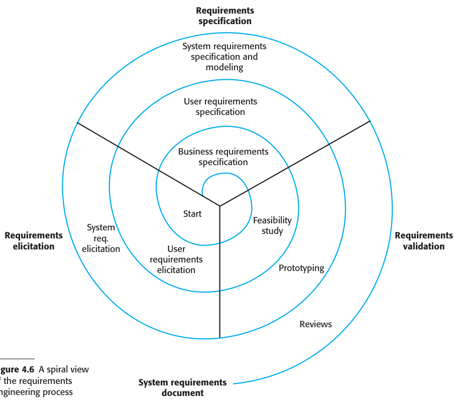
RE has three activities: elicitation and analysis（需求获取与分析）(discover requirements by talking to stakeholders), specification（需求规格说明）(write them in a standard form) and validation（需求确认）(check that they describe the system the customer wants). They are interleaved and repeated around a spiral. Each loop deals with one level: business, then user, then system requirements. The output is the requirements document. Requirements management (Section 3.6) handles the changes.需求工程有三项活动：获取与分析（通过与利益相关者交谈发现需求）、规格说明（用标准形式写下需求）和确认（检查它们是否描述了客户想要的系统）。三者交错进行，并围绕一个螺旋反复循环。每一轮处理一个层次：先是业务需求，然后是用户需求，最后是系统需求。输出就是需求文档。需求管理（第 3.6 节）负责处理变更。
Practice练习
Q1. (Define and apply) For a library system, write one user requirement and three system requirements that expand it. Say who reads each level.Q1. （定义并应用）对于一个图书馆系统，写出一条用户需求以及对其加以展开的三条系统需求，并说明每个层次分别由谁阅读。
Answer
User requirement: "Members shall be able to renew borrowed items online." System requirements: (1.1) The system shall renew an item only if no other member has reserved it. (1.2) A renewal shall extend the due date by 14 days from the current due date. (1.3) The system shall refuse a renewal when the member owes more than 20 AED in fines and shall display the reason. Library managers and members read the user requirement: they want to know what is offered. Developers, architects and testers read the system requirements: they need exact behaviour to implement and test.用户需求：“会员应能够在线续借已借阅的物品。”系统需求：（1.1）只有在没有其他会员预约某件物品时，系统才可为其续借。（1.2）每次续借应将到期日从当前到期日起顺延 14 天。（1.3）当会员欠交的罚款超过 20 AED 时，系统应拒绝续借，并显示原因。图书馆管理人员和会员阅读用户需求：他们想知道系统提供什么服务。开发人员、架构师和测试人员阅读系统需求：他们需要精确的行为描述，以便实现和测试。
思路：用户需求一句话、非技术；系统需求逐条给出条件、数值和异常处理。
Q2. (True/false) Justify each. (a) RE ends when the requirements document is signed. (b) A feasibility study asks only whether the technology exists. (c) Stakeholders are the people who use the system.Q2. （判断）请逐条给出理由。(a) RE 在需求文档签署后即结束。(b) 可行性研究只询问技术是否存在。(c) 利益相关者就是使用系统的人。
Answer
(a) False. RE is iterative and interleaved, and requirements keep changing after approval, so requirements management continues through development and operation. (b) False. It asks three questions: contribution to organizational objectives, feasibility within schedule and budget with current technology, and integration with other systems. (c) False. Stakeholders are everyone affected or with a legitimate interest: managers, IT staff, regulators, patients' relatives and others.（a）错误。RE 是迭代且相互交织的，需求在批准后仍会变化，因此需求管理会贯穿开发和运行阶段。（b）错误。可行性研究提出三个问题：对组织目标的贡献、能否利用现有技术在进度和预算内实现，以及能否与其他系统集成。（c）错误。利益相关者是指所有受影响或具有合法利益的人：管理人员、IT 人员、监管机构、患者家属等。
Functional and non-functional requirements ★★★功能需求与非功能需求
Goal. Classify a requirement as functional or as product, organizational or external. Rewrite a vague goal as a testable requirement. Calculate availability.目标。把一条需求分类为功能性的，或产品、组织或外部的需求。把模糊的目标改写为可测试的需求。计算可用性。
Step 1: functional requirements第 1 步：功能需求
In words: a functional requirement = a service the system provides, how it reacts to an input, or how it behaves in a situation.用文字表述：功能需求 = 系统提供的一项服务，或它对某个输入的反应，或它在某种情况下的行为。
It may also say what the system must not do. Library examples: "A member can search the catalogue by title." "The system sends a reminder two days before the due date."它也可以说明系统不能做什么。图书馆的例子："会员可以按书名搜索目录。""系统在到期日前两天发送提醒。"
Two related kinds exist. Domain requirements（领域需求）come from the application area, not from the users. Information requirements（信息需求）say what information people need for their work.有两类相关的需求。领域需求来自应用领域，而不是来自用户。信息需求说明人们在工作中需要什么信息。
Imprecision causes disputes. "A user can search the appointment lists of all clinics" can mean searching by patient name across all clinics. A developer may choose the cheaper meaning: pick one clinic first. Both satisfy the sentence, but the customer is unhappy. A specification should be complete (all needed services are defined) and consistent (no contradictions). In practice this is possible only for very small systems.含糊会引起争议。"用户可以搜索所有诊所的预约列表"可能指按患者姓名搜索所有诊所。开发人员可能选择成本较低的理解：先选定一家诊所。两种理解都满足这句话，但客户会不满意。规格说明应当完整（定义了所有需要的服务）且一致（没有矛盾）。在实践中，只有非常小的系统才可能做到这一点。
Step 2: non-functional requirements第 2 步：非功能需求
In words: a non-functional requirement = a limit or quality of the whole system, such as speed, reliability or the standards it must follow.用文字表述：非功能需求 = 对整个系统的限制或质量要求，例如速度、可靠性或必须遵循的标准。
They are often more critical than one function. Users can work around a missing function. They cannot work around a system that is too slow or too unreliable. They are also spread through the system. One requirement can shape the whole architecture, or generate functional requirements: a security requirement adds login and authentication services.它们往往比某个功能更关键。用户可以绕过缺失的功能，但无法绕过太慢或太不可靠的系统。它们还分散在整个系统中。一条需求可能塑造整个架构，也可能产生功能需求：安全需求会增加登录和认证服务。
| Class类 | Derived from来源 | Subtypes子类型 | Mentcare exampleMentcare 示例 |
|---|---|---|---|
| Product requirements（产品需求） | Runtime behaviour of the software软件的运行时行为 | usability; efficiency (performance, space); dependability; security可用性；效率（性能、空间）；可依赖性；安全性 | Available to all clinics Mon–Fri 08:30–17:30; downtime within those hours at most 5 s in any one day所有诊所在周一至周五 08:30–17:30 均可使用；在这些时段内，任一天的停机时间至多为 5 s |
| Organizational requirements（组织需求） | Policies and procedures of the customer's and developer's organizations客户组织和开发方组织的政策与规程 | operational (how the system is used); development (language, environment, process standards); environmental (operating environment)运行类（系统如何被使用）；开发类（语言、环境、过程标准）；环境类（运行环境） | Users identify themselves with their health authority identity card用户以其卫生主管机构颁发的身份证明自己的身份 |
| External requirements（外部需求） | Factors outside the system and its development系统及其开发之外的因素 | regulatory (approval by a regulator, e.g. a nuclear safety authority); legislative (operate within the law, e.g. accounting, safety/security, privacy); ethical (acceptable to users and the public)监管类（须经监管机构批准，例如核安全监管机构）；法律类（须遵守法律，例如会计、安全/安保、隐私）；伦理类（须为用户和公众所接受） | The system implements patient privacy provisions of a national privacy standard系统实现了某一国家隐私标准中关于患者隐私的规定 |
Step 3: make a goal testable第 3 步：让目标可测试
In words: a goal that cannot be checked is only a wish; add a number and a way to measure it.用文字表述：一个无法检查的目标只是一个愿望；加上一个数字和一种测量方法。
| Goal目标 | Testable requirement可测试的需求 |
|---|---|
| The system should be easy to use by medical staff and should be organized in such a way that user errors are minimized.系统应便于医务人员使用，并且应以使用户错误降到最低的方式组织。 | Medical staff shall be able to use all the system functions after two hours of training. After this training, the average number of errors made by experienced users shall not exceed two per hour of system use.医务人员在接受两小时培训后，应能使用系统的全部功能。培训之后，有经验的用户平均每使用系统一小时所犯的错误数不得超过两个。 |
The metrics for the usual properties:常见属性的度量指标：
| Property属性 | Measures度量 |
|---|---|
| Speed速度 | processed transactions per second; user/event response time; screen refresh time每秒处理的事务数；用户/事件响应时间；屏幕刷新时间 |
| Size规模 | megabytes; number of ROM chipsmegabytes；ROM 芯片数量 |
| Ease of use易用性 | training time; number of help frames培训时间；帮助页数 |
| Reliability可靠性 | mean time to failure; probability of unavailability; rate of failure occurrence; availability平均无故障时间；不可用概率；故障发生率；可用性 |
| Robustness健壮性 | time to restart after failure; percentage of events causing failure; probability of data corruption on failure故障后重启时间；引起故障的事件所占百分比；故障时数据损坏的概率 |
| Portability可移植性 | percentage of target-dependent statements; number of target systems依赖于目标系统的语句所占百分比；目标系统数量 |
Four difficulties remain. Customers find it hard to turn a goal into a number. Some goals, such as maintainability, have no simple metric. Customers cannot relate a number, such as a reliability figure, to everyday experience. Checking a measurable requirement can be expensive. Non-functional requirements can also conflict. A card reader on every computer conflicts with access from tablets that have no reader.仍然有四个困难。客户很难把一个目标转化为一个数字。有些目标，比如可维护性，没有简单的度量标准。客户无法把一个数字（比如可靠性指标）和日常经验联系起来。检查一个可度量的需求可能代价很高。非功能需求之间还可能相互冲突。例如，每台电脑上都装一个读卡器，就与来自无读卡器平板电脑的访问相冲突。
Step 4: availability第 4 步：可用性
In words: availability = the share of the time that the system works.用文字表述：可用性 = 系统正常工作的时间占比。
Practice练习
Q1. (Classify) Classify each statement as functional, product, organizational or external, and name the subtype. (a) A clinician shall be able to export a patient's record as a PDF. (b) The system shall be developed in Java using the university's continuous-integration server. (c) 95% of searches shall finish within 2 s with 200 concurrent users. (d) Patient data shall be stored as the national data-protection law requires. (e) Staff shall log in with their identity card. (f) The system shall be easy to learn.Q1. （分类）请将每条陈述分类为功能需求、产品需求、组织需求或外部需求，并说明其子类型。(a) 临床医生应能将患者记录导出为 PDF。(b) 系统应使用 Java 开发，并使用大学的持续集成服务器。(c) 在 200 名并发用户的情况下，95% 的搜索应在 2 s 内完成。(d) 患者数据应按照国家数据保护法的要求存储。(e) 工作人员应凭其身份卡登录。(f) 系统应易于学习。
Answer
(a) Functional (a service). (b) Organizational, development requirement (language and process tools). (c) Product, efficiency (performance). (d) External, legislative. (e) Organizational, operational (the Mentcare identity-card precedent). (f) Product, usability, but only a goal: it is not testable until a metric such as training time or error rate is given.（a）功能需求（一项服务）。（b）组织需求，属于开发需求（语言和过程工具）。（c）产品需求，效率（性能）。（d）外部需求，法律类。（e）组织需求，运行类（即 Mentcare 身份卡的先例）。（f）产品需求，可用性，但只是一个目标：在给出培训时间或错误率等度量指标之前，它是不可测试的。
易错：不要因为“登录”看起来像功能就归为功能需求；登录方式由组织规定，是组织需求。
Q2. (Calculation) Two requirements are tested. (a) "Experienced users shall make at most two errors per hour." In a trial, 25 experienced users each worked for 4 h and 230 errors were logged. (b) "95% of searches shall finish within 2 s." Of 2,000 timed searches, 1,930 finished within 2 s. Is each requirement met?Q2. （计算）对两条需求进行测试。(a)“有经验的用户每小时最多犯两个错误。”在一次试验中，25 名有经验的用户各工作了 4 h，共记录了 230 个错误。(b)“95% 的搜索应在 2 s 内完成。”在 2,000 次计时搜索中，有 1,930 次在 2 s 内完成。每条需求是否都得到满足？
Answer
(a) User-hours = 25 × 4 = 100. Error rate = 230 / 100 = 2.3 errors per hour, which exceeds 2, so the requirement is not met. (b) 1,930 / 2,000 = 96.5%, which is at least 95%, so the requirement is met. Both can be checked only because they contain a number and a measurement procedure.（a）用户小时数 = 25 × 4 = 100。错误率 = 230 / 100 = 2.3 errors per hour，超过 2，因此该需求未得到满足。（b）1,930 / 2,000 = 96.5%，不低于 95%，因此该需求得到满足。只有当需求包含数值和测量程序时，这两条需求才能被检验。
Q3. (Beyond the text) A server has MTTF = 1,000 h and MTTR = 4 h. (a) What is its availability? (b) Does it meet "unavailability at most 0.5%"? (c) What MTTR gives 99.9% availability with the same MTTF?Q3. （教材之外的应用）某服务器的 MTTF = 1,000 h，MTTR = 4 h。(a) 其可用性是多少？(b) 它是否满足“不可用性至多为 0.5%”？(c) 在 MTTF 相同的情况下，要达到 99.9% 的可用性，MTTR 应为多少？
Answer
(a) \(A = 1000/(1000+4) = 0.99602\), that is 99.60%. (b) Unavailability = 1 − 0.99602 = 0.398%, which is at most 0.5%, so yes. (c) Solve \(A=\text{MTTF}/(\text{MTTF}+\text{MTTR})\) for the repair time: \(\text{MTTR}=\text{MTTF}\,(1-A)/A = 1000\times0.001/0.999 = 1.001\) h. Repairs must take about 1 h (60 min) on average.（a）\(A = 1000/(1000+4) = 0.99602\)，即 99.60%。（b）不可用性 = 1 − 0.99602 = 0.398%，不超过 0.5%，因此满足。（c）由 \(A=\text{MTTF}/(\text{MTTF}+\text{MTTR})\) 解出修复时间：\(\text{MTTR}=\text{MTTF}\,(1-A)/A = 1000\times0.001/0.999 = 1.001\) h。平均而言，修复必须约需 1 h（60 min）。
思路：把可用性公式变形，直接解出 MTTR。
Requirements elicitation and analysis ★★★需求获取与分析
Goal. Name the four activities of the cycle, compare interviews with ethnography, and write a scenario with its five parts.目标。说出循环中的四项活动，比较访谈与人种志，并写出一个包含五个部分的场景。
Elicitation is hard for five reasons:需求获取之所以困难，有五个原因：
- Stakeholders often do not know what they want beyond general terms. They find it hard to say it, and they make unrealistic demands because they do not know what is feasible.利益相关者往往只能说出笼统的想法。他们很难把需求说清楚，而且由于不了解什么是可行的，会提出不切实际的要求。
- They use their own words and take their work knowledge for granted, so engineers new to the domain misunderstand them.他们使用自己的语言，并把自己的工作知识视为理所当然，因此刚进入该领域的工程师可能会误解他们。
- Different stakeholders say different things. The engineer must find all sources and find what they share and where they conflict.不同的利益相关者说的内容不同。工程师必须找到所有信息来源，找出它们的共同点以及分歧所在。
- Political factors: managers may ask for requirements that raise their influence.政治因素：管理者可能会提出能提高自身影响力的需求。
- The business environment changes during the analysis. Priorities shift and new stakeholders appear.分析期间业务环境会发生变化。优先级会调整，新的利益相关者也会出现。
Step 1: the cycle第 1 步：循环
In words: find the requirements, sort them, settle the conflicts, write them down, and go round again.用文字表述：找出需求，进行分类，解决冲突，写下来，然后再循环一次。

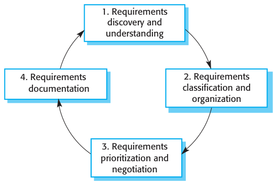
| Activity活动 | What happens具体工作 |
|---|---|
| 1. Discovery and understanding1. 发现与理解 | Interact with stakeholders to discover requirements; domain requirements and documentation are found here too与利益相关者互动以发现需求；领域需求和文档也在此阶段获取 |
| 2. Classification and organization2. 分类与组织 | Group related requirements into coherent clusters将相关需求归为连贯的若干簇 |
| 3. Prioritization and negotiation3. 优先级排序与协商 | Requirements of different stakeholders conflict; prioritize them and resolve conflicts by negotiation; stakeholders meet and agree compromises不同利益相关者的需求会发生冲突；对需求排序，并通过协商解决冲突；利益相关者会面商定折中方案 |
| 4. Documentation4. 文档化 | Write the requirements down as input to the next round of the spiral: an early draft of the requirements document, or informal notes on whiteboards, wikis or shared spaces将需求记录下来，作为螺旋下一轮的输入：可以是需求文档的早期草稿，也可以是白板、维基或共享空间上的非正式笔记 |
A viewpoint（视角）groups the requirements of one group of stakeholders, for example the end-users. It shows who can supply requirements. Stakeholders who feel ignored can undermine the process, so hold regular meetings with them.视角把一组利益相关者的需求归为一类，例如最终用户。它显示谁能提供需求。感觉被忽视的利益相关者可能会破坏整个过程，因此要定期与他们开会。
Prioritization（需求优先级排序）is needed because stakeholders' requirements conflict and not all can be built first. A common scheme is MoSCoW:由于利益相关者的需求会相互冲突，而且不可能全部先做，因此需要优先级排序。一种常用的方案是 MoSCoW：
- Must have: the system fails without it.Must have：没有它，系统就无法使用。
- Should have: important, but a workaround exists.Should have：重要，但有变通办法。
- Could have: desirable if time allows.Could have：时间允许时最好有。
- Won't have this time: agreed to postpone.Won't have this time：同意推迟。
A release delivers all Musts first. When the schedule slips, the Coulds are dropped first.一次发布会先交付所有 Must。进度滞后时，首先放弃 Could。
Step 2: interviews and ethnography第 2 步：访谈与人种志
In words: interviews tell what people say they do; ethnography shows what they really do.用文字表述：访谈告诉我们人们说自己做什么；人种志显示他们实际做什么。
In a closed interview（封闭式访谈）the stakeholder answers fixed questions. In an open interview（开放式访谈）there is no agenda. Real interviews mix both. Completely open talk rarely works. "Tell me what you want" yields little, so give a springboard question or a prototype.在封闭式访谈中，利益相关者回答固定的问题。在开放式访谈中没有议程。实际的访谈会混合两种形式。完全开放的谈话很少有效。"告诉我你想要什么"得到的信息很少，因此要给出一个引导性问题或一个原型。
Ethnography（民族志观察）means that the analyst watches the real work in its environment. It finds requirements that people cannot describe because the work is second nature to them. Example: air traffic controllers switch off an over-sensitive conflict alarm and use other ways to keep aircraft apart.人种志（现场观察）指分析人员在真实环境中观察真实的工作。它能发现人们说不清的需求，因为这些工作对他们来说已经是习以为常的。例如，空中交通管制员会关掉过于敏感的冲突警报，并用其他方式保持飞机之间的间隔。
Ethnography is especially effective for two kinds of requirement:人种志对以下两类需求特别有效：
- Requirements from the way people actually work, not how the process definition says they should. This is the air traffic example above.来自人们实际工作方式的需求，而不是流程定义所说的应当如何工作。上面的空中交通例子就是这一类。
- Requirements from cooperation and awareness of other people's activities. Example: controllers watch the adjacent sectors to predict how many aircraft will enter their own, so an automated system should show them some of that work.来自合作以及对他人活动的了解的需求。例如，管制员会观察相邻扇区，以预测有多少飞机将进入自己的扇区，因此自动化系统应当向他们显示一部分这类信息。
Ethnography explains existing practice but does not by itself help innovation. Because it focuses on end-users, it is weak for organizational and domain requirements.人种志能解释现有的做法，但它本身无助于创新。由于它聚焦于最终用户，因此对组织需求和领域需求的作用较弱。
| Interviews访谈 | Ethnography人种志 | |
|---|---|---|
| Captures记录的内容 | What people say they do and want人们说自己做什么、想要什么 | What people actually do人们实际做什么 |
| Good for适用于 | Overview, difficulties with the current system, stakeholder opinions总体概况、现有系统的困难、利益相关者的意见 | Real work practice, cooperation and awareness, implicit requirements真实的工作实践、协作与感知、隐性需求 |
| Weak for不擅长 | Tacit knowledge and jargon; organizational and political constraints; details without a prototype隐性知识与行话；组织和政治约束；没有原型时的细节 | Innovation; organizational and domain requirements创新；组织需求和领域需求 |
Step 3: stories and scenarios第 3 步：故事与场景
In words: people describe a real situation more easily than an abstract requirement, so ask them to tell how they would do a task.用文字表述：人们描述一个真实的情境，比描述抽象的需求更容易，所以请他们讲讲自己会如何完成一项任务。
Stories and scenarios（故事与场景）capture this. A story is a short narrative. A scenario is a detailed, structured example of one session.故事与场景就是用来做这件事的。故事是一段简短的叙述。场景是对一次使用过程的详细、结构化的示例。
| Story故事 | Scenario场景 | |
|---|---|---|
| Form形式 | Narrative text叙述性文本 | Structured, with specific information such as inputs and outputs结构化，包含输入和输出等具体信息 |
| Level层次 | High-level "big picture"高层次的“全景” | Detailed example of an interaction session一次交互会话的详细示例 |
| Use用途 | Start discussion with a wide community, for example on a wiki; later developed into scenarios在广泛的群体中（例如在维基上）启动讨论；之后再发展为场景 | Propose requirements; discuss with stakeholders who reach the same result in different ways提出需求；与以不同方式得到相同结果的利益相关者进行讨论 |
A scenario has five parts:一个场景有五个部分：
- The initial assumption: what is true when the scenario starts.初始假设：场景开始时什么是真的。
- The normal flow of events.正常的事件流程。
- What can go wrong and how it is handled.可能出什么问题，以及如何处理。
- Other activities that may go on at the same time.可能同时进行的其他活动。
- The system state when the scenario ends.场景结束时的系统状态。
Practice练习
Q1. (Choose and justify) A hospital will build a system to schedule operating theatres. Which technique would you use to find (a) the reports hospital managers need, (b) how nurses and surgeons really coordinate? Justify.Q1. （选择并论证）某医院将建设一套手术室排程系统。你会使用哪种技术来发现：(a) 医院管理人员需要的报表；(b) 护士与外科医生实际如何协调？请给出理由。
Answer
(a) Interviews, mixing closed questions (which reports, how often) with open discussion; managers can state what information they need. Check the answers against documents, because interviews hide organizational and political constraints. (b) Ethnography: coordination is second nature and partly informal (colleagues cover for each other, staff watch other theatres), so people do not mention it in interviews. An analyst observes real sessions. A prototype of the schedule screens raises questions that focus further observation.（a）访谈，将封闭式问题（哪些报表、多长时间一次）与开放式讨论结合使用；管理人员能够说明自己需要哪些信息。应将访谈结果与文档进行核对，因为访谈往往掩盖了组织和政治方面的约束。（b）人种志：协调工作已成为本能，并且部分是非正式的（同事之间相互补位，工作人员会留意其他手术室的情况），因此人们在访谈中不会提及。分析人员应观察真实的手术排程过程。排程界面的原型会引出问题，从而进一步聚焦后续的观察。
Q2. (Design) Write a scenario for "a student renews a library book online" using the five parts.Q2. （设计）用五个组成部分写出“学生在线续借图书馆图书”的场景。
Answer
Initial assumption: the student is logged in and has at least one item on loan. Normal flow: the student opens "My loans", selects an item and presses Renew; the system checks that nobody has reserved it and that fines are below the limit, extends the due date by 14 days, shows a confirmation and e-mails it. What can go wrong: the item is reserved (renewal refused, return date shown); fines exceed the limit (refused with reason); the catalogue is unreachable (message shown, loan unchanged). Other activities: a librarian may record the return of the same item at the desk at the same time; the later action must see the updated status. Final state: the due date is extended and logged, or the loan is unchanged and a reason is shown.初始假设：学生已登录，且至少有一件物品在借。正常流程：学生打开“我的借阅”，选择一件物品并点击续借；系统检查该物品是否已被他人预约、欠费是否低于上限，然后将到期日顺延 14 天，显示确认信息并通过电子邮件发送。可能出现的问题：该物品已被预约（拒绝续借并显示归还日期）；欠费超过上限（拒绝续借并说明原因）；书目目录无法访问（显示提示，借阅记录保持不变）。其他活动：同一时间，图书管理员可能在服务台为同一件物品办理归还；后执行的操作必须能看到更新后的状态。最终状态：到期日已顺延并记录下来；或借阅记录保持不变，并显示原因。
Requirements specification and the requirements document ★★★需求规格说明与需求文档
Goal. Write requirements in the right notation, fill a structured form, trace the insulin dose table, and say how detailed the requirements document must be.目标。用正确的记法写需求，填写结构化表格，追踪胰岛素剂量表，并说明需求文档应有多详细。
Step 1: user and system requirements第 1 步：用户需求与系统需求
User requirements use natural language, simple tables and diagrams. They describe only external behaviour, with no design and no jargon. System requirements add detail and may be part of the contract. Design information cannot be fully kept out of them, for three reasons:用户需求使用自然语言、简单表格和图。它们只描述外部行为，不含设计和行话。系统需求会增加细节，并且可能属于合同的一部分。设计信息不可能完全排除在系统需求之外，原因有三：
- An initial architecture may be needed to structure the document.可能需要一个初始架构来组织文档。
- The system must work with existing systems, which limit the design.系统必须与现有系统协同工作，而现有系统会限制设计。
- A non-functional requirement or a regulator may demand a specific architecture.非功能需求或监管机构可能要求特定的架构。
| Notation表示法 | Description描述 |
|---|---|
| Natural language sentences自然语言句子 | Numbered sentences; each expresses one requirement编号的句子；每句表达一条需求 |
| Structured natural language结构化自然语言 | Natural language on a standard form or template; each field gives information about one aspect of the requirement以标准表单或模板填写的自然语言；每个字段说明需求的一个方面 |
| Graphical notations图形化表示法 | Graphical models supplemented by text annotations; UML use case and sequence diagrams are widely used辅以文字注释的图形模型；UML 用例图和时序图应用广泛 |
| Mathematical specifications数学规格说明 | Based on finite-state machines or sets; unambiguous, but most customers cannot understand or check them and are reluctant to accept them as a contract基于有限状态机或集合；无歧义，但大多数客户无法理解或检查，也不愿意将其作为合同接受 |
Step 2: natural language, with rules第 2 步：带规则的自然语言
In words: natural language is understood by everybody but is vague, so use fixed rules.用文字表述：自然语言人人都懂，但含糊，所以要使用固定的规则。
Its typical problems are unclear wording, designers whose background differs from the users', several requirements merged into one sentence, and difficulty in structuring. No alternative is widely adopted, so it stays the most common notation. Five guidelines reduce misunderstanding:它的典型问题有：措辞不清楚，设计人员的背景与用户不同，多条需求被合并到一句话里，以及难以组织结构。没有哪种替代记法被广泛采用，所以它仍然是最常见的记法。五条指南能减少误解：
- Use one standard format for every requirement, in one or two sentences.每条需求使用统一的标准格式，一到两句话。
- Use "shall" for mandatory and "should" for desirable requirements.强制性需求用 "shall"，期望性需求用 "should"。
- Highlight key parts.突出关键部分。
- Avoid jargon and abbreviations.避免行话和缩写。
- Give each user requirement a rationale（理由说明）: why it is included and who proposed it. The source shows whom to ask when it must change.为每条用户需求给出理由说明：说明它为什么被包含在内，以及由谁提出。来源信息会告诉我们，当它需要变更时应该去问谁。
Example: "The pump shall measure the blood sugar every 10 minutes. Rationale: sugar changes slowly, so more frequent measuring is not needed."例如："泵shall每 10 分钟测量一次血糖。理由：血糖变化缓慢，因此无需更频繁地测量。"
Step 3: structured and tabular specification第 3 步：结构化与表格式规格说明
In words: a structured specification = natural language on a form with fixed fields, so that nothing is forgotten.用文字表述：结构化规格说明 = 用带固定字段的表格写自然语言，这样不会漏掉任何内容。
A structured specification（结构化规格说明）writes each requirement on a template.结构化规格说明把每条需求写在一个模板上。
| Field字段 | Content内容 |
|---|---|
| Function, description功能，描述 | The function or entity being specified所规定的功能或实体 |
| Inputs, source输入，来源 | Inputs and where they come from输入及其来源 |
| Outputs, destination输出，去向 | Outputs and where they go输出及其去向 |
| Requires需求接口 | Information needed for the computation, or other entities required计算所需的信息，或所需的其他实体 |
| Action措施 | The action to be taken应执行的动作 |
| Precondition（前置条件）, postcondition（后置条件） | What must be true before the function is called and what is true after it (functional approach)调用该功能之前必须成立的条件，以及调用之后成立的条件（功能式方法） |
| Side effects副作用 | Side effects of the operation, if any操作的副作用（如有） |

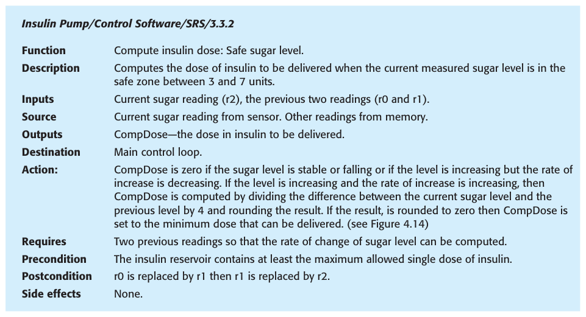
Complex computations are still hard to state in words. A table lists the conditions and the action for each. Example: the pump computes the insulin dose from the current sugar reading and the two earlier ones.复杂的计算仍然很难用文字说明。表格列出每种条件及对应的动作。例如，泵根据当前血糖读数和之前的两次读数来计算胰岛素剂量。
How to do it by hand: 1. Compare \(r_2\) with \(r_1\). If \(r_2\le r_1\), the dose is 0. 2. Compare the last rise \(r_2-r_1\) with the rise before, \(r_1-r_0\). If the rise is smaller, the dose is 0. 3. Otherwise round \((r_2-r_1)/4\). If the result is 0, give MinimumDose.手工计算的方法：1. 比较 \(r_2\) 与 \(r_1\)。如果 \(r_2\le r_1\)，剂量为 0。2. 比较最近一次上升量 \(r_2-r_1\) 与之前的上升量 \(r_1-r_0\)。如果上升量较小，剂量为 0。3. 否则，对 \((r_2-r_1)/4\) 取整。如果结果为 0，则给出 MinimumDose。
Step 4: use cases and the requirements document第 4 步：用例与需求文档
A use case（用例）describes the interactions between users and a system with a diagram and text. The actors (people or other systems) are stick figures. Each kind of interaction is a named ellipse. Example: "Renew book" with the actor "member". Use cases are often too fine-grained for talking with stakeholders. They help more in design (Chapter 4).用例用图和文字描述用户与系统之间的交互。参与者（人或其他系统）用小人表示。每一种交互是一个有名字的椭圆。例如："续借图书"，参与者是"会员"。用例往往对于与利益相关者交谈来说粒度过细，它们在设计中更有帮助（第 4 章）。
The software requirements document（需求规格说明书）, also called the SRS, is the official statement of what developers must implement. Its structure is based on an IEEE standard.软件需求规格说明书，也称为 SRS，是开发人员必须实现的内容的正式陈述。其结构以 IEEE 标准为基础。
| Chapter章节 | Content内容 |
|---|---|
| Preface前言 | Expected readership; version history with rationale and summary of changes预期读者；版本历史，包括变更理由与变更摘要 |
| Introduction引言 | Need for the system, its functions, how it works with other systems系统的必要性、功能及其与其他系统的协作方式 |
| Glossary术语表 | Technical terms, assuming no reader expertise技术术语，假定读者没有相关专业知识 |
| User requirements definition用户需求定义 | Services for the user and non-functional requirements, in natural language and diagrams面向用户的服务和非功能需求，以自然语言和图表表示 |
| System architecture系统体系结构 | High-level view of the anticipated architecture; reused components highlighted预期体系结构的高层视图；突出标明复用的构件 |
| System requirements specification系统需求规格说明 | Functional and non-functional requirements in detail; interfaces to other systems详细的功能需求和非功能需求；与其他系统的接口 |
| System models系统模型 | Graphical models of the relationships between components, the system and its environment描述构件、系统及其环境之间关系的图形模型 |
| System evolution系统演化 | Assumptions behind the system and anticipated changes (hardware, user needs)系统所依据的假设及预期变化（硬件、用户需求） |
| Appendices附录 | Application-specific detail such as hardware and database descriptions与应用相关的细节，如硬件和数据库描述 |
| Index索引 | Alphabetic index, index of diagrams, index of functions字母索引、图表索引和功能索引 |
The document has five kinds of reader, so it is a compromise:文档有五类读者，因此它是一种折中：
- Customers check that it meets their needs and specify changes.客户检查它是否满足其需求，并提出变更。
- Managers use it to plan a bid and the development process.管理者用它来制定投标方案和开发过程计划。
- System engineers use it to understand what is to be built.系统工程师用它来理解要构建什么。
- Test engineers derive validation tests from it.测试工程师据此推导出确认测试。
- Maintenance engineers use it to understand the system and how its parts relate.维护工程师用它来理解系统及其各部分之间的关系。
How detailed must it be?文档应该写得多详细？
- Detailed when development is outsourced, when several teams build parts, and for critical systems, because safety and security must be analysed.详细：当开发外包、多个团队分别构建各部分，以及对于关键系统时，因为必须分析安全性和信息安全。
- Short for products, business systems and in-house iterative development: user requirements and high-level non-functional requirements, with details added later.简短：适用于产品、业务系统以及内部的迭代开发：包含用户需求和高层的非功能需求，细节在之后补充。
- Agile projects collect short user stories on cards. A brief document of system-wide requirements is still useful.敏捷项目以卡片形式收集简短的用户故事。一份简要的、描述整个系统需求的文档仍然有用。
Practice练习
Q1. (Trace) Use the table to compute CompDose for \((r_0,r_1,r_2)\) = (1, 3, 7), (5, 6, 7), (4, 6, 7) and (7, 5, 3).Q1. （手工演算）利用上表，分别计算 \((r_0,r_1,r_2)\) = (1, 3, 7)、(5, 6, 7)、(4, 6, 7) 和 (7, 5, 3) 时的 CompDose。
Answer
(1, 3, 7): \(r_2>r_1\), \(r_2-r_1=4\ge r_1-r_0=2\) (rise accelerating), round(4/4) = 1, so CompDose = 1. (5, 6, 7): \(1\ge1\) (rise steady), round(1/4) = round(0.25) = 0, so CompDose = MinimumDose. (4, 6, 7): \(1<2\) (rise slowing), so CompDose = 0. (7, 5, 3): \(3<5\) (falling), so CompDose = 0.(1, 3, 7)：\(r_2>r_1\)，\(r_2-r_1=4\ge r_1-r_0=2\)（上升加速），round(4/4) = 1，因此 CompDose = 1。(5, 6, 7)：\(1\ge1\)（上升稳定），round(1/4) = round(0.25) = 0，因此 CompDose = MinimumDose。(4, 6, 7)：\(1<2\)（上升减缓），因此 CompDose = 0。(7, 5, 3)：\(3<5\)（下降），因此 CompDose = 0。
Q2. (Explain) Why should user requirements avoid design information, and why can system requirements not avoid it completely?Q2. （解释）为什么用户需求应避免设计信息，而系统需求却不能完全避免？
Answer
User requirements are read by customers and managers without technical background and should state only external behaviour; design detail would obscure the needs and fix the solution too early (when tendering, it would prevent contractors from offering different solutions). System requirements must be complete enough for a contract and for design, and a complete specification needs (1) an initial architecture to structure it, (2) interoperation with existing systems that constrain the design, and (3) a specific architecture to meet non-functional requirements, or one demanded by a regulator.用户需求由没有技术背景的客户和管理人员阅读，因此应只陈述外部行为；设计细节会掩盖真正的需要，并过早地固定解决方案（在招标时，它会妨碍承包商提出不同的方案）。系统需求则必须足够完整，既能作为合同的依据，也能作为设计的依据；一份完整的规格说明需要 (1) 一个用于组织规格说明的初始体系结构，(2) 与现有系统互操作（现有系统会约束设计），以及 (3) 为满足非功能需求而采用的特定体系结构，或监管机构要求采用的体系结构。
Q3. (Rewrite) Rewrite "The system should have good response and the UI should be OK for everybody; logs must be kept for a long time" using the five guidelines.Q3. （改写）运用五条准则，改写这句话：“系统应具有良好的响应，界面应让所有人都可以接受；日志必须保存很长时间。”
Answer
The sentence merges three requirements, uses vague words and mixes "should" and "must". Rewritten, each in one or two sentences with shall/should, a metric, a rationale and a source (values are illustrative and are agreed with the stakeholders): (R1) 95% of search requests shall return within 2 s with 200 concurrent users. Rationale: staff look up records while a patient waits. Source: clinic managers. (R2) A first-time user should complete "register patient" unaided within 10 minutes. Rationale: reception staff change often. Source: head receptionist. (R3) The system shall keep audit logs for 7 years. Rationale: legal retention period. Source: legal office.这句话合并了三条需求，用词含糊，并且混用了“should”和“must”。改写后，每条需求用一两句话表达，并使用 shall/should，附上度量指标、理由说明和来源（数值仅作示例，应与利益相关者商定）：（R1）在 200 名并发用户的情况下，95% 的搜索请求应当在 2 s 内返回。理由说明：工作人员在患者等候时查询记录。来源：诊所管理人员。（R2）首次使用的用户应能在 10 分钟内独立完成“register patient”。理由说明：接待人员流动频繁。来源：接待主管。（R3）系统应当将审计日志保存 7 年。理由说明：法定保存期限。来源：法务部门。
思路：一句话拆成多条；每条一个“shall/should”、一个数字、一个理由和来源。
Requirements validation ★★需求确认
Goal. Name the five validation checks and the three techniques, and say which check finds which defect.目标。说出五项确认检查和三种技术，并说明哪项检查能发现哪类缺陷。
In words: validation = check that the requirements describe the system the customer really wants.用文字表述：确认 = 检查需求是否描述了客户真正想要的系统。
| Check检查项 | Question问题 |
|---|---|
| Validity有效性 | Do the requirements reflect the real needs of the users? (Circumstances may have changed since elicitation.)需求是否反映了用户的真实需要？（自需求获取以来，情况可能已经发生变化。） |
| Consistency一致性 | Do any requirements conflict, with contradictory constraints or different descriptions of the same function?是否存在相互冲突的需求，即约束相互矛盾，或对同一功能的描述不同？ |
| Completeness完备性 | Are all the functions and constraints that the user intends defined?用户所期望的全部功能和约束是否都已定义？ |
| Realism现实性 | Can they be implemented with existing technology within the budget and schedule?能否利用现有技术，在预算和进度范围内实现？ |
| Verifiability可验证性 | Can a set of tests demonstrate that the delivered system meets each requirement? Verifiable requirements reduce disputes between customer and contractor能否通过一组测试证明交付的系统满足每条需求？可验证的需求可以减少客户与承包商之间的争议。 |
The three techniques can be used alone or together.这三种技术可以单独使用，也可以组合使用。
| Technique技术 | How it works工作方式 |
|---|---|
| Requirements review（需求评审） | A group from the customer and the developer reads the requirements document in detail and checks for errors, anomalies and inconsistencies. Once recorded, the two sides negotiate how to resolve them客户和开发方的一个小组详细阅读需求文档，检查其中的错误、异常和不一致之处。记录下来之后，双方协商如何解决这些问题。 |
| Prototyping（原型） | Build an executable model of the system; end-users and customers experiment with it and feed requirements changes back to the developers构建系统的可执行模型；最终用户和客户对其进行试用，并将需求变更反馈给开发人员 |
| Test-case generation测试用例生成 | Devise tests from the requirements as part of validation. If a test is hard or impossible to design, the requirement will be hard to implement and should be reconsidered. Writing tests from user requirements before any code is part of test-driven development (Chapter 7)作为确认的一部分，依据需求设计测试。如果某项测试很难甚至无法设计，那么该需求就很难实现，应当重新考虑。在编写任何代码之前，依据用户需求编写测试，属于测试驱动开发（第 7 章）的一部分。 |
Validation is hard, because users must imagine the system in their work. Some problems survive, so changes are needed after the document is agreed.确认很难做，因为用户必须在脑中想象系统在他们工作中的样子。一些问题仍然会遗留下来，因此文档达成一致后仍需要变更。
Practice练习
Q1. (Identify the check) Which validation check reveals each defect? (a) "The system shall be user friendly." (b) R4 says daily reports at 17:00; R9 says daily reports at 18:00. (c) No requirement says what happens when a card is rejected. (d) A requirement for real-time 3D body scanning on a budget that covers only a basic web application. (e) A requirement describing a workflow that was abolished last year.Q1. （识别检查项）每个缺陷应由哪一项确认检查发现？(a)“系统应当对用户友好。”(b) R4 规定每日报表于 17:00 生成，而 R9 规定每日报表于 18:00 生成。(c) 没有任何需求说明卡被拒绝时应如何处理。(d) 一条要求实时三维人体扫描的需求，但预算只够开发一个基础网页应用。(e) 一条描述去年已被取消的工作流程的需求。
Answer
(a) Verifiability: no test is possible until it is quantified. (b) Consistency: conflicting descriptions of the same function. (c) Completeness: a needed behaviour is missing. (d) Realism: not implementable within the budget. (e) Validity: it no longer reflects a real user need.（a）可验证性：在量化之前，无法进行任何测试。（b）一致性：对同一功能的描述相互冲突。（c）完备性：缺少一项所需的行为。（d）现实性：无法在预算范围内实现。（e）有效性：它已不再反映真实的用户需要。
Q2. (Explain) To minimize mistakes during a requirements review, an organization allocates two scribes. Explain how this can be done.Q2. （解释）为了在需求评审期间尽量减少错误，某组织安排了两名记录员。请解释这可以如何实现。
Answer
Two ways. Redundancy: both scribes record every issue independently; after the session they compare their records and reconcile differences (checking disputed points with the chair or reviewers) into one agreed list. Division of labour: one scribe records defects and anomalies (location, description, severity), the other records decisions and actions (who, by when). In both cases the chair reads back the log before the meeting ends, so that errors are caught while memory is fresh. Mistakes in the log would otherwise carry into the negotiation of how to fix the problems.有两种方式。冗余：两名记录员各自独立记录每一个问题；会后，他们对比各自的记录，并（与主持人或评审人员核对有争议之处）调和差异，形成一份双方认可的清单。分工：一名记录员记录缺陷和异常（位置、描述、严重程度），另一名记录决定和行动（责任人、截止时间）。两种方式下，主持人都要在会议结束前宣读记录，以便在记忆犹新时发现错误。否则，记录中的错误会带入关于如何修复这些问题的协商之中。
Requirements change and management ★★需求变更与管理
Goal. Give the reasons why requirements change, name the three stages of change management, and use a traceability matrix to find the affected requirements.目标。说明需求为什么会变化，说出变更管理的三个阶段，并使用可追溯性矩阵找出受影响的需求。
Step 1: why requirements change第 1 步：为什么需求会变化
In words: requirements change because the problem, the business and the people all change.用文字表述：问题、业务和人都会变化，因此需求也会变化。
- The business and technical environment changes: new hardware, other systems, priorities and laws.业务和技术环境会变化：新的硬件、其他系统、优先级和法律。
- The people who pay for a system and the people who use it are rarely the same. Their requirements can conflict.为系统付费的人和使用系统的人很少是同一批人。他们的需求可能相互冲突。
- Large systems have stakeholders with conflicting priorities. The compromise may be revisited.大型系统的利益相关者的优先级相互冲突。折中方案可能需要重新审视。
Enduring requirements（稳定需求）relate to the core activities of an organization and change slowly. Volatile requirements（易变需求）relate to supporting activities and change more often.稳定需求与组织的核心活动相关，变化缓慢。易变需求与支持性活动相关，变化更频繁。
Step 2: requirements management第 2 步：需求管理
Requirements management（需求管理）tracks each requirement and the links between dependent requirements, so that the effect of a change can be judged. Planning decides four issues:需求管理跟踪每条需求，以及相互依赖的需求之间的联系，以便判断一项变更的影响。规划要决定四个问题：
| Issue问题 | Decision判断 |
|---|---|
| Requirements identification需求标识 | Every requirement gets a unique ID so that it can be cross-referenced and used in traceability assessments为每条需求赋予唯一的 ID，以便交叉引用，并用于可追溯性评估 |
| Change management process变更管理过程 | The activities that assess the impact and cost of changes评估变更的影响和成本的活动 |
| Traceability policies可追溯性策略 | Which relationships between requirements, and between requirements and design, are recorded, and how the records are maintained记录需求之间、以及需求与设计之间的哪些关系，以及如何维护这些记录 |
| Tool support工具支持 | From specialist requirements management systems (for example DOORS) to shared spreadsheets and simple databases从专门的需求管理系统（例如 DOORS）到共享电子表格和简单数据库 |
Three tools are needed: requirements storage (a secure data store open to everyone involved), change management (tracking suggested changes and the responses) and traceability management (finding related requirements). Small systems manage with shared spreadsheets and databases.需要三类工具：需求存储（一个所有参与者都能访问的安全数据存储）、变更管理（跟踪提出的变更及其回应）和可追溯性管理（查找相关需求）。小型系统用共享的电子表格和数据库来管理。
Traceability is the record of the links between requirements, their sources and the design. Three kinds of link are recorded:可追溯性是记录需求与其来源及设计之间联系的记录。要记录三类联系：
- Source traceability: requirement → the stakeholder who proposed it.来源可追溯：需求 → 提出该需求的利益相关者。
- Requirements traceability: requirement → the other requirements that depend on it.需求可追溯：需求 → 依赖它的其他需求。
- Design traceability: requirement → the design components that implement it.设计可追溯：需求 → 实现它的设计构件。
A traceability matrix has the requirements as rows and as columns. A mark means that the row depends on the column. To judge a change to R2, follow the marks to every requirement that depends on R2, directly or through a chain. Then look at the design components that implement them.可追溯性矩阵的行和列都是需求。标记表示该行依赖该列。要判断对 R2 的变更，就沿着标记找出所有直接或通过链式关系依赖 R2 的需求。然后查看实现这些需求的设计构件。
Step 3: change management第 3 步：变更管理
In words: every change proposal is checked, costed and only then carried out.用文字表述：每个变更提议都要先检查、估算成本，然后才实施。

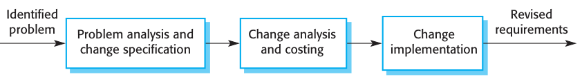
| Stage阶段 | Activity活动 |
|---|---|
| 1. Problem analysis and change specification1. 问题分析与变更说明 | Start from an identified requirements problem or a specific change proposal and check that it is valid. The analysis is fed back to the change requestor, who may refine the proposal or withdraw it从已识别的需求问题或具体的变更提案出发，检查其是否有效。分析结果反馈给变更请求人，请求人可以修改提案，也可以撤回。 |
| 2. Change analysis and costing2. 变更分析与成本估算 | Assess the effect of the change with traceability information and knowledge of the requirements. Estimate the cost in terms of modifications to the requirements document and, if appropriate, to the design and implementation; then decide whether to proceed利用可追溯性信息和对需求的了解评估变更的影响。按对需求文档的修改，以及（如适用）对设计和实现的修改，估算成本；然后决定是否继续推进。 |
| 3. Change implementation3. 变更实现 | Modify the requirements document and, where necessary, the design and implementation修改需求文档，并在必要时修改设计和实现 |
- Emergency changes. The system is changed first and the document is updated later. The update is often forgotten, so document and system drift apart. Update the document as soon as possible.紧急变更。先修改系统，之后再更新文档。文档更新常常被忘记，于是文档与系统就逐渐不一致。应尽快更新文档。
- Agile processes. The user prioritizes the change and drops a planned feature if needed. The weakness: users are not always the best judges of cost.敏捷过程。用户对变更排定优先级，并在需要时放弃计划中的功能。它的弱点是：用户未必是判断成本的最佳人选。
Practice练习
Q1. (Explain) Give three reasons why requirements change after delivery, then name the three stages of change management and say what the second stage produces.Q1. （解释）给出需求在交付之后发生变化的三个原因，然后说出变更管理的三个阶段，并说明第二阶段产生的结果。
Answer
Reasons: (1) the business and technical environment changes (new hardware, other systems, priorities, legislation); (2) the people who pay for the system differ from its users and their requirements conflict; (3) diverse stakeholders have conflicting priorities, so the compromise is revisited. Stages: problem analysis and change specification; change analysis and costing; change implementation. Stage 2 produces an assessment of the effects of the change, using traceability, and a cost estimate for modifying the requirements document and, where relevant, the design and implementation, on which the decision to proceed is based.原因：（1）业务和技术环境发生变化（新的硬件、其他系统、优先级、法律法规）；（2）为系统付费的人与用户不同，二者的需求相互冲突；（3）利益相关者众多，优先级相互冲突，因此需要重新审视折中方案。阶段：问题分析与变更说明；变更分析与成本估算；变更实现。第二阶段利用可追溯性，给出变更影响的评估结果，并估算修改需求文档以及（如相关）修改设计和实现的成本，作为决定是否继续推进的依据。
Q2. (Beyond the text) In the matrix a mark means "row depends on column".Q2. （教材之外的应用）在矩阵中，标记表示“行依赖于列”。
| R1 | R2 | R3 | R4 | R5 | R6 | |
|---|---|---|---|---|---|---|
| R1 | ||||||
| R2 | x | |||||
| R3 | x | |||||
| R4 | x | |||||
| R5 | x | |||||
| R6 |
(a) Which requirements must be re-examined if R2 changes? (b) If R1 changes? (c) If R6 changes?（a）若 R2 发生变更，哪些需求必须重新审查？（b）若 R1 发生变更呢？（c）若 R6 发生变更呢？
Answer
Follow the marks from the changed requirement to everything that depends on it, directly or through a chain. (a) R3 and R4 depend directly on R2, and R5 depends on R4, so R3, R4 and R5 are affected. R1 is not affected, although the author should check that the new R2 does not contradict it. (b) R2 depends on R1, R3 and R4 on R2, and R5 on R4, so R2, R3, R4 and R5 are all affected. (c) Nothing depends on R6, so no other requirement is affected (design components linked to R6 are still checked). The design components linked to each affected requirement must be examined and costed too.沿着标记，从发生变更的需求出发，找出所有直接或间接依赖于它的需求。（a）R3 和 R4 直接依赖于 R2，R5 依赖于 R4，因此 R3、R4 和 R5 受到影响。R1 不受影响，但作者应检查新的 R2 是否与 R1 相矛盾。（b）R2 依赖于 R1，R3 和 R4 依赖于 R2，R5 依赖于 R4，因此 R2、R3、R4 和 R5 均受到影响。（c）没有任何需求依赖于 R6，因此不影响其他需求（但仍需检查与 R6 相关联的设计构件）。每条受影响需求所关联的设计构件，同样必须进行审查并估算成本。
Terms to recognise ★需要认识的术语
| Term术语 | What to know要知道什么 |
|---|---|
| Domain requirements（领域需求） | Come from the application area, not from user needs. Risk: engineers may not notice that one is missing来自应用领域，而不是来自用户需求。风险：工程师可能没有注意到缺少了某一条 |
| Information requirements（信息需求） | What information people need for their work. They replace a detailed functional specification when a ready-made product is used人们工作所需的信息。当使用现成产品时，它们代替详细的功能规格说明 |
| Viewpoint（视角） | Groups the requirements of one group of stakeholders and shows who can supply them把一组利益相关者的需求归为一类，并显示谁能提供这些需求 |
| VOLERE | A method that records each requirement on a card with rationale, dependencies, source and supporting materials一种方法，把每条需求记在一张卡片上，并附带理由、依赖关系、来源和支持材料 |
| N-version programmingN 版本编程 | Independently developed versions run in parallel and vote. A reliability measure that can force an architecture独立开发的多个版本并行运行并投票。这是一种可靠性度量，有时会强制决定架构 |
| Wicked problem（棘手问题） | A problem that cannot be completely defined, so its requirements are always incomplete一个无法被完全定义的问题，因此它的需求总是不完整的 |
| Enduring and volatile requirements稳定需求与易变需求 | Enduring: core activities, slow to change. Volatile: supporting activities, change more often稳定：核心活动，变化慢。易变：支持性活动，变化更频繁 |
| DOORS | A specialist requirements management tool. Small systems use shared spreadsheets and databases instead一种专门的需求管理工具。小型系统使用共享的电子表格和数据库代替 |
Exam-style questions考试题型练习
Q1. (Classification and quantification) A university plans a campus parking system. Six statements were collected: (i) A driver shall be able to reserve a space up to 24 hours in advance. (ii) The system should be easy to use. (iii) Payment records shall be kept as the national data-protection law requires. (iv) The system shall be written in Java and run on the university's existing Linux servers. (v) The system shall be available all day. (vi) Staff shall sign in with their university single sign-on account. (a) Classify each statement as functional, product, organizational or external, naming the subtype. (6 marks) (b) Rewrite (ii) and (v) as testable requirements and state how each is verified. (4 marks) (c) Why are non-functional requirements often more critical than a single functional requirement? (2 marks)Q1. （分类与量化）某大学计划建设一套校园停车系统。收集到六条陈述：(i) 驾驶人应能够提前至多 24 hours 预约车位。(ii) 系统应易于使用。(iii) 支付记录应按照国家数据保护法的要求保存。(iv) 系统应使用 Java 编写，并运行于大学现有的 Linux 服务器上。(v) 系统应全天可用。(vi) 工作人员应使用大学单点登录账户登录。(a) 将每条陈述分类为功能需求、产品需求、组织需求或外部需求，并说明子类型。（6 分）(b) 将 (ii) 和 (v) 改写为可测试的需求，并说明各自如何验证。（4 分）(c) 为什么非功能需求往往比单条功能需求更为关键？（2 分）
Answer
(a) (i) Functional: a service. (ii) Product, usability: only a goal. (iii) External, legislative. (iv) Organizational: development (language) and environmental (existing servers). (v) Product, efficiency or dependability (availability): vague. (vi) Organizational, operational: the organization's authentication procedure, like the Mentcare identity card.（a）（i）功能需求：一项服务。（ii）产品需求，可用性：只是一个目标。（iii）外部需求，法律类。（iv）组织需求：开发类（语言）和环境类（现有服务器）。（v）产品需求，效率或可依赖性（可用性）：表述含糊。（vi）组织需求，运行类：组织的认证程序，与 Mentcare 的身份卡类似。
(b) (ii) "A first-time driver shall complete a reservation unaided within 3 minutes of reading a one-page guide, and experienced users shall make at most one input error per 20 reservations." Verified by a usability trial with logged times and errors. (v) "Availability shall be at least 99.5% in every calendar month." In a 30-day month (720 h) this allows 0.005 × 720 h = 3.6 h of downtime. Verified from uptime monitoring logs.（b）（ii）“首次使用的驾驶人在阅读一页纸的指南后，应能在 3 minutes 内独立完成一次预约，有经验的用户每 20 次预约最多犯一次输入错误。”通过记录了时间和错误的可用性试验加以验证。（v）“每个日历月的可用性应至少为 99.5%。”在一个 30 天的月份（720 h）中，这允许 0.005 × 720 h = 3.6 h 的停机时间。通过运行时间监控日志加以验证。
(c) Users can work around a missing or awkward function but not around a system that is unreliable, too slow or non-compliant; failing a non-functional requirement can make the whole system unusable or uncertifiable (an aircraft system that misses its reliability requirement is not certified). Non-functional requirements also shape the architecture, so they are costly to fix late.（c）用户可以绕过缺失或不便用的功能，却无法绕过不可靠、过慢或不合规的系统；未能满足非功能需求可能导致整个系统无法使用或无法通过认证（未能满足可靠性需求的航空系统无法获得认证）。非功能需求还会影响体系结构，因此在后期修正的成本很高。
思路：先按“约束的是什么”分类，再用“数字 + 测试方法”把目标改成可测试需求。
Q2. (Elicitation) Air traffic controllers (ATCs) will use a new automated control system. (a) Name the four activities of requirements elicitation and analysis and explain how they are related. (4 marks) (b) Interviews with controllers produced a first list of requirements. Give two reasons why interviews alone are insufficient, and explain with one example from air traffic control what ethnography adds. (5 marks) (c) Distinguish a story from a scenario and list the parts of a scenario. (3 marks)Q2. （需求获取）空中交通管制员（ATC）将使用一套新的自动化控制系统。（a）说出需求获取与分析的四项活动，并解释它们之间的关系。（4 分）（b）与管制员访谈后得到了第一份需求清单。请给出仅凭访谈并不足够的两个理由，并结合一个空中交通管制的例子，说明人种志能带来什么。（5 分）（c）区分故事与场景，并列出场景的各组成部分。（3 分）
Answer
(a) Requirements discovery and understanding; classification and organization; prioritization and negotiation; documentation. They form an iterative cycle with continual feedback: it starts with discovery and ends with documentation, the documented requirements are the input of the next round of the spiral, understanding improves each round, and the cycle ends when the requirements document is produced.（a）需求的发现与理解；分类与组织；优先级排序与协商；文档化。它们构成一个带有持续反馈的迭代循环：循环始于发现，终于文档化；所形成的文档是螺旋下一轮的输入；每一轮的理解都会有所提高；当需求文档产生时，循环结束。
(b) Interviews miss tacit knowledge, because controllers cannot describe work that is second nature to them and they use jargon in precise, subtle ways; they also reveal little about organizational and political constraints, and without a prototype stakeholders cannot give detailed requirements. Ethnography, in which the analyst observes controllers at work, finds requirements from actual practice and from cooperation. Example: controllers switch off the over-sensitive conflict alert and use other strategies, so the new alert must be tuned so that it is not switched off. Or: controllers use their awareness of adjacent sectors to predict inflow, so the system should show the work in adjacent sectors.（b）访谈会遗漏隐性知识，因为管制员无法描述那些已成为本能的工作，而且他们以精确而微妙的方式使用行话；访谈也很少揭示组织和政治方面的约束；没有原型时，利益相关者也无法给出详细的需求。人种志由分析人员观察管制员的工作，从而发现来自实际做法以及协作的需求。例如：管制员会关闭过于灵敏的冲突告警，并采用其他策略，因此新的告警必须经过调校，使其不会被关闭。又如：管制员借助对相邻扇区的了解来预测流入的飞机，因此系统应当显示相邻扇区的工作情况。
(c) A story is narrative text giving a high-level "big picture" of system use; a scenario is a structured description of an interaction session with specific inputs and outputs. A scenario contains the initial assumption, the normal flow of events, what can go wrong and how it is handled, other concurrent activities, and the system state at the end.（c）故事是叙述性文本，给出系统使用的高层次“全景”；场景则是对一次交互会话的结构化描述，包含具体的输入和输出。场景包含初始假设、正常的事件流程、可能出错之处及其处理方式、可能同时进行的其他活动，以及结束时的系统状态。
Q3. (Specification and calculation) An insulin pump computes the dose CompDose from the current reading r2 and the two previous readings r1 and r0: CompDose = 0 if r2 ≤ r1 or the rise r2 − r1 is smaller than the previous rise r1 − r0; otherwise CompDose = round((r2 − r1)/4), and if the rounded result is 0 then CompDose = MinimumDose. (a) List the information that a structured specification of this function should contain. (4 marks) (b) Compute CompDose for (r0, r1, r2) = (4, 5, 6), (2, 3, 7), (3, 6, 7) and (7, 6, 5), naming the case used. (5 marks) (c) Give three reasons for specifying the computation in a table instead of a natural-language paragraph. (3 marks)Q3. （规格说明与计算）胰岛素泵根据当前读数 r2 以及前两次读数 r1 和 r0 计算剂量 CompDose：若 r2 ≤ r1，或上升量 r2 − r1 小于先前的上升量 r1 − r0，则 CompDose = 0；否则 CompDose = round((r2 − r1)/4)，若取整结果为 0，则 CompDose = MinimumDose。(a) 列出该功能的结构化规格说明应包含的信息。（4 分）(b) 计算 (r0, r1, r2) = (4, 5, 6)、(2, 3, 7)、(3, 6, 7) 和 (7, 6, 5) 时的 CompDose，并指出所采用的情形。（5 分）(c) 给出用表格而不是自然语言段落来规定该计算的三个理由。（3 分）
Answer
(a) Description of the function; inputs and their source; outputs and their destination; the information required for the computation (here the two previous readings); the action; a precondition (before the call) and a postcondition (after the call); side effects, if any.（a）功能描述；输入及其来源；输出及其去向；计算所需的信息（此处为前两次读数）；动作；前置条件（调用之前）和后置条件（调用之后）；副作用（如有）。
(b) (4, 5, 6): the rise is 1 and the previous rise is 1, so the rise is steady; round(1/4) = round(0.25) = 0, so CompDose = MinimumDose. (2, 3, 7): the rise is 4 and the previous rise is 1, so the rise is accelerating; round(4/4) = 1, so CompDose = 1. (3, 6, 7): the rise is 1, smaller than the previous rise 3, so the rise is slowing and CompDose = 0. (7, 6, 5): r2 < r1, so the level is falling and CompDose = 0.（b）(4, 5, 6)：上升量为 1，先前的上升量也是 1，因此上升稳定；round(1/4) = round(0.25) = 0，因此 CompDose = MinimumDose。(2, 3, 7)：上升量为 4，先前的上升量为 1，因此上升加速；round(4/4) = 1，因此 CompDose = 1。(3, 6, 7)：上升量为 1，小于先前的上升量 3，因此上升减缓，CompDose = 0。(7, 6, 5)：r2 < r1，因此血糖下降，CompDose = 0。
(c) A table lists each alternative situation with its action, so it is unambiguous; completeness and mutual exclusion of the cases can be checked row by row; each row gives one test case.（c）表格列出每种备选情形及其动作，因此没有歧义；可以逐行检查各情形是否完备且互斥；每一行对应一个测试用例。
思路：(b) 先判断落在表的哪一行，再代入；0.25 四舍五入为 0，所以取最小剂量。
Q4. (Documents, validation and change) A hospital outsources a medication-ordering system whose errors could harm patients, and builds in-house a staff-rota tool whose needs change every month. (a) For each system, say how detailed the requirements document should be and whether a formal change management process is needed; justify. (4 marks) (b) Validation of the outsourced requirements finds: (i) R12 says reports are produced at 17:00 and R31 says 18:00; (ii) no requirement says what happens when a drug is out of stock; (iii) "The system shall respond quickly." Name the check that detects each defect and how to correct it. (3 marks) (c) Describe the three stages of change management for a proposed change to R12. (3 marks) (d) An urgent fix is made to the live system. What must happen to the requirements document, and why? (2 marks)Q4. （文档、确认与变更）某医院外包了一套可能危及患者安全的药品医嘱系统，同时在内部开发了一个需求每月都在变化的员工排班工具。(a) 对每个系统，说明需求文档应有多详细，以及是否需要正式的变更管理过程，并给出理由。（4 分）(b) 对外包系统的需求进行确认时发现：(i) R12 规定报表于 17:00 生成，而 R31 规定于 18:00 生成；(ii) 没有任何需求说明药品缺货时应如何处理；(iii)“系统应当快速响应。”请指出每个缺陷由哪一项检查发现，以及应如何修正。（3 分）(c) 针对对 R12 提出的一项变更，描述变更管理的三个阶段。（3 分）(d) 对正在运行的系统做了一次紧急修复。需求文档必须发生什么变化？为什么？（2 分）
Answer
(a) Medication ordering: a detailed, precise SRS, because development is outsourced (the document is part of the contract) and the system is critical, so safety must be analysed in detail to find requirements errors; a formal change management process, so that every proposal is assessed for impact and cost and treated consistently. Rota tool: a short document with user requirements and high-level non-functional requirements (or agile user stories plus a brief supporting document), with details added during iterative development; changes can be prioritized by the users at each iteration, although an independent authority is better if several stakeholders are affected.（a）药品医嘱系统：应采用详细、精确的 SRS，因为开发是外包的（该文档是合同的一部分），并且系统具有关键性，必须详细分析其安全性，以找出需求中的错误；还应采用正式的变更管理过程，以便对每项提案的影响和成本进行评估，并一视同仁地处理。排班工具：只需一份简短的文档，包含用户需求和高层的非功能需求（或者敏捷的用户故事加上一份简要的辅助文档），细节在迭代开发中逐步补充；每次迭代中，变更可以由用户排定优先级；但如果涉及多个利益相关者，则由独立机构决定更好。
(b) (i) Consistency: negotiate with the stakeholders which time is right and correct one requirement. (ii) Completeness: add a requirement for the out-of-stock behaviour. (iii) Verifiability (and realism, if the target is unrealistic): quantify it, for example "95% of order screens shall appear within 2 s".（b）（i）一致性：与利益相关者协商确定正确的时间，并修正其中一条需求。（ii）完备性：补充一条关于药品缺货时行为的需求。（iii）可验证性（若目标不现实，还涉及现实性）：将其量化，例如“95% 的医嘱界面应在 2 s 内出现”。
(c) Problem analysis and change specification: check that the proposed change is valid and feed back to the requestor, who may refine or withdraw it. Change analysis and costing: use traceability to assess the affected requirements and design and estimate the cost; decide whether to proceed. Change implementation: modify the requirements document and, where needed, the design and implementation.（c）问题分析与变更说明：检查提议的变更是否有效，并将结果反馈给请求人，请求人可以修改或撤回提案。变更分析与成本估算：利用可追溯性评估受影响的需求和设计，并估算成本；然后决定是否继续推进。变更实现：修改需求文档，并在需要时修改设计和实现。
(d) Update the requirements document as soon as possible, because otherwise the specification and the implementation drift apart: the update is easily forgotten once the system has been changed.（d）应尽快更新需求文档，否则规格说明与实现会逐渐偏离：系统一旦被修改，更新很容易被遗忘。
Q5. (Analysis and design) Part of the requirements for a search-and-recovery drone reads: "The drone, a quad chopper, will be very useful in search and recovery operations, especially in remote areas or in extreme weather conditions. It will click high-resolution images. It will fly according to a path preset by a ground operator, but will be able to avoid obstacles on its own, returning to its original path whenever possible. The drone will also be able to identify various objects and match them to the target it is looking for." (a) Identify five ambiguities or omissions. (5 marks) (b) Rewrite the obstacle-avoidance behaviour as a structured specification, resolving the ambiguities sensibly. (4 marks) (c) Write two testable non-functional requirements, one on safety and one on response time. (3 marks)Q5. （分析与设计）某搜救无人机的部分需求如下：“该无人机为四旋翼飞行器，将在搜救行动中非常有用，尤其是在偏远地区或极端天气条件下。它将拍摄高分辨率图像。它将按照地面操作员预设的航线飞行，但能够自主避障，并尽可能返回原定航线。该无人机还将能够识别各种物体，并将其与所寻找的目标进行匹配。”(a) 找出五处歧义或遗漏。（5 分）(b) 将避障行为改写为结构化规格说明，并合理地消除这些歧义。（4 分）(c) 写出两条可测试的非功能需求，一条关于安全性，一条关于响应时间。（3 分）
Answer
(a) (1) "Very useful" is an opinion, not a requirement. (2) "Remote areas" and "extreme weather" are undefined: no range, wind speed, rain or temperature limits, and no communication link. (3) "Click high-resolution images": resolution, frequency, still or video, storage or transmission are missing. (4) "Path preset by a ground operator": how it is entered, whether it can be changed in flight, and what happens if the link is lost are missing. (5) "Avoid obstacles": which obstacles, detection range and sensors, and the manoeuvre are not defined; "whenever possible" is undefined. (6) "Identify various objects" and "match them to the target": which objects, with what accuracy, how the target is specified, and what happens on a match. Omissions: battery endurance and low-battery behaviour, maximum speed and altitude, airspace regulations.（a）（1）“非常有用”是一种观点，而不是需求。（2）“偏远地区”和“极端天气”没有定义：缺少距离范围、风速、降雨或温度的限制，也没有通信链路的说明。（3）“拍摄高分辨率图像”：缺少分辨率、拍摄频率、静态图像还是视频、存储还是传输等说明。（4）“地面操作员预设的航线”：缺少如何输入航线、飞行中能否修改，以及通信链路中断时应如何处理的说明。（5）“避障”：未定义需要避开哪些障碍物、探测范围与传感器，以及机动方式；“尽可能”也没有定义。（6）“识别各种物体”和“将其与目标进行匹配”：未说明识别哪些物体、精度如何、如何指定目标，以及匹配成功后会发生什么。遗漏之处还包括：电池续航时间和低电量时的行为、最大速度和高度，以及空域法规。
(b) Function: avoid obstacle on the preset path. Description: detects an obstacle on the path, flies around it and rejoins the path. Inputs and source: obstacle distance and bearing from the forward sensors; position from the navigation unit; the stored path. Outputs and destination: steering commands to the flight controller; an obstacle alert to the ground display. Action: when an obstacle is detected within 20 m, slow to 2 m/s, fly a detour with at least 3 m clearance and rejoin the path beyond the obstacle; if no clear detour exists within 60 s, hover and ask the operator. Requires: the stored path and the obstacle position. Precondition: autonomous mission mode and enough battery for the detour and the return. Postcondition: on the path beyond the obstacle, or hovering with the operator alerted. Side effects: longer flight time and higher battery use. (All values are illustrative and are confirmed with stakeholders.)（b）功能：避开预设航线上的障碍物。描述：探测航线上的障碍物，绕过它并重新回到航线上。输入及其来源：来自前向传感器的障碍物距离和方位；来自导航单元的位置；存储的航线。输出及其去向：送往飞行控制器的转向指令；送往地面显示器的障碍物告警。动作：当在 20 m 以内探测到障碍物时，减速至 2 m/s，沿与障碍物保持至少 3 m 间距的绕行路线飞行，并在障碍物之后重新回到航线上；若在 60 s 内找不到可行的绕行路线，则悬停并通知操作员。所需：存储的航线和障碍物位置。前置条件：处于自主任务模式，且电量足以完成绕行和返航。后置条件：位于障碍物之后的航线上，或悬停并已通知操作员。副作用：飞行时间变长，电池耗电增加。（所有数值仅为示例，均需与利益相关者确认。）
(c) Safety: "If the link to the ground station is lost for more than 5 s, the drone shall return to its launch point and land autonomously." Response time: "The drone shall start an avoidance manoeuvre within 0.5 s of detecting an obstacle within 20 m, in at least 99% of 1,000 simulated trials."（c）安全性：“若与地面站的链路中断超过 5 s，无人机应返回起飞点并自主降落。”响应时间：“在 1,000 次模拟试验中，至少 99% 的试验里，无人机应在探测到 20 m 以内的障碍物后 0.5 s 内开始避障机动。”
思路：先逐句找“没定义的词”，再用结构化模板补全，最后把安全和响应时间写成带数字、可测试的句子。
Textbook exercises课后习题
Textbook exercises with answers: 10 questions教材习题及答案，共 10 题，点击展开
E1. (Exercise 4.1) Identify and briefly describe four types of requirements that may be defined for a computer-based system.E1. （习题 4.1）请识别并简要描述可为计算机系统定义的四种类型的需求。
Answer
Requirements can be classified by their reader and level of detail (user and system requirements) and by what they constrain (functional and non-functional requirements). Four types are:需求可以按其读者和详细程度分类（用户需求与系统需求），也可以按其约束的对象分类（功能需求与非功能需求）。四种类型如下：
| Type类型 | Description描述 | Example (patient information system)示例（患者信息系统） |
|---|---|---|
| User requirements用户需求 | Abstract statements, in natural language with simple tables and diagrams, of the services the system offers its users and the constraints under which it operates; written for customers, managers and end-users以自然语言和简单表格、图表书写的抽象陈述，描述系统向用户提供的服务及其运行所处的约束；面向客户、经理和最终用户 | "The system shall generate monthly reports showing the cost of drugs prescribed by each clinic."“系统应每月生成报告，显示每家诊所所开处方药物的费用” |
| System requirements系统需求 | Detailed description of the functions, services and operational constraints; precise enough to be implemented and tested, the starting point for design and often part of the contract对功能、服务和运行约束的详细描述；精确到足以实现和测试，是设计的起点，并且通常是合同的一部分 | "On the last working day of each month the system shall produce, for each clinic, the drugs prescribed, the doses and the total cost."“每月最后一个工作日，系统应为每家诊所生成所开药物、剂量及总费用” |
| Functional requirements功能需求 | The services the system must provide, how it reacts to particular inputs and how it behaves in particular situations; they may also state what the system must not do系统必须提供的服务、对特定输入的反应方式以及在特定情形下的行为；也可以说明系统不得做什么 | "The system shall generate each day, for each clinic, a list of the patients expected to attend appointments that day."“系统应每天为每家诊所生成当天预计就诊患者的名单” |
| Non-functional requirements非功能需求 | Constraints on a property of the system as a whole or on its development, such as performance, reliability, security, standards and process; classed as product, organizational and external requirements; often more critical than a single function对系统整体属性或其开发过程的约束，例如性能、可靠性、安全性、标准和过程；可分为产品需求、组织需求和外部需求；往往比单个功能更为关键 | "The system shall be available from 08:30 to 17:30 on weekdays, with at most 5 s of downtime in any day."“系统应在工作日 08:30 至 17:30 可用，且每日停机时间不超过 5 s” |
Domain requirements, which come from the application domain rather than from the users' wishes, and information requirements are further kinds; they usually appear as functional requirements or as constraints on them. The same need is often written at two levels: a user requirement says what is wanted, and system requirements say exactly how the system must behave.领域需求（来自应用领域，而非用户的愿望）和信息需求也是另外几类需求；它们通常以功能需求的形式出现，或作为功能需求的约束。同一需求常常在两个层次上书写：用户需求说明所需要的内容，而系统需求则精确说明系统必须如何表现。
思路：按“给谁看、多详细”分用户需求和系统需求，按“约束什么”分功能需求和非功能需求；每类配一个例子。
E2. (Exercise 4.2) Discover ambiguities or omissions in the following statement of the requirements for part of a drone system intended for search and recovery: "The drone, a quad chopper, will be very useful in search and recovery operations, especially in remote areas or in extreme weather conditions. It will click high-resolution images. It will fly according to a path preset by a ground operator, but will be able to avoid obstacles on its own, returning to its original path whenever possible. The drone will also be able to identify various objects and match them to the target it is looking for."E2. （习题 4.2）请找出下面这段关于搜索与回收无人机系统部分需求的陈述中的歧义或遗漏：“该无人机是一架四旋翼直升机，在搜索与回收行动中将非常有用，尤其是在偏远地区或极端天气条件下。它将拍摄高分辨率图像。它将按照地面操作员预设的路径飞行，但能够自行避开障碍物，并在可能时返回原路径。该无人机还将能够识别各种物体，并将它们与所搜寻的目标进行匹配。”
Answer
An ambiguity is a phrase that can be read in more than one way; an omission is something the system needs that is not stated. Reading the text phrase by phrase:歧义是指一个短语可以有多种理解方式；遗漏是指系统需要但未加陈述的内容。下面逐个短语审读文本：
| Phrase短语 | Ambiguity or omission歧义或遗漏 |
|---|---|
| "very useful ... remote areas ... extreme weather"“非常有用……偏远地区……极端天气” | An opinion, not a requirement, and not testable. "Remote" and "extreme" are undefined: no maximum distance from the operator, no wind, rain, temperature or visibility limits, and no statement of what the drone does outside them.这是观点而非需求，且不可测试。“偏远”和“极端”都没有定义：没有规定与操作员之间的最大距离，没有风力、降雨、温度或能见度的限制，也没有说明在这些条件之外无人机的行为 |
| "search and recovery"“搜索与回收” | Recovery of what? It is not said whether the drone only finds the target or also carries or retrieves something, nor who performs the recovery.“回收”的对象是什么？没有说明无人机只负责发现目标，还是也负责搬运或取回物品，也没有说明由谁执行回收 |
| "a quad chopper"“四旋翼直升机” | Colloquial and unclear: a quadcopter with four rotors or a small helicopter? Size, weight, speed, altitude and battery endurance are missing.口语化且含义不清：是四旋翼飞行器，还是小型直升机？尺寸、重量、速度、高度和电池续航时间都没有给出 |
| "click high-resolution images"“拍摄高分辨率图像” | "Click" is informal and "high-resolution" has no value. Still images or video? When (continuously, at waypoints, on command)? Visible light, infrared or thermal? Stored on board or sent to the operator? With position and time stamps?“click”一词较为口语化，“高分辨率”也没有给出具体数值。是静态图像还是视频？何时拍摄（连续拍摄、在航路点拍摄，还是根据指令拍摄）？可见光、红外还是热成像？存储在机上还是发送给操作员？是否带有位置和时间戳？ |
| "path preset by a ground operator"“地面操作员预设的路径” | How is the path entered (waypoints, area pattern) and checked? At what altitude and speed? Can it be changed in flight? How is the position known where GPS is weak? What happens if the link to the operator is lost?路径如何输入（航路点、区域图案）并如何检查？飞行高度和速度是多少？飞行中能否修改？在 GPS 信号弱的地方如何获知位置？若与操作员的链路中断，会发生什么？ |
| "avoid obstacles on its own"“自行避开障碍物” | Which obstacles (trees, masts, wires, birds, other aircraft), detected how and at what range? What clearance and which manoeuvre? Is the operator told? What if there is no way round?是哪些障碍物（树木、电线杆、电线、鸟类、其他飞行器）？以何种方式、在多远的距离上探测到？安全间距为多少，采取何种机动？是否告知操作员？若没有绕行的办法怎么办？ |
| "returning to its original path whenever possible"“在可能时返回原路径” | "Whenever possible" gives no rule: who decides, and where does the drone rejoin (the point it left or the nearest point)? What happens when it cannot (low battery, path blocked)? Following the preset path and acting autonomously can conflict, and no priority is given.“在可能时”没有给出规则：由谁决定，无人机在何处重新加入路径（离开的点还是最近的点）？无法返回时（电量低、路径受阻）会怎样？遵循预设路径与自主行动可能相互冲突，而且没有规定优先级 |
| "identify various objects and match them to the target"“识别各种物体，并将其与目标进行匹配” | "Various" is undefined (people, vehicles, animals, debris?). How and when is the target described to the drone (photo, description, thermal signature)? What counts as a match (confidence, accepted false alarms and misses)? Where is the processing done and what follows a match (alert, record the position, hover)?“各种”没有定义（人、车辆、动物、残骸？）。目标如何以及何时描述给无人机（照片、文字描述、热特征）？什么算匹配（置信度，可接受的误报和漏报）？处理在何处完成，匹配之后又会发生什么（告警、记录位置、悬停）？ |
Omissions, not mentioned at all: battery endurance and low-battery behaviour, take-off and landing, safety and fail-safe behaviour (link loss, motor or sensor failure), response times, range and security of the radio link, airspace and privacy regulations, the operator interface, and data storage and retention.完全未提及的遗漏有：电池续航与低电量时的行为、起飞与降落、安全与失效保护行为（链路中断、电机或传感器故障）、响应时间、无线链路的作用距离与安全性、空域与隐私法规、操作员界面，以及数据的存储与保留。
思路：逐句圈出没有数值、没有定义的词，再补“根本没提到的”：电池、失联、安全、法规。
E3. (Exercise 4.3) Rewrite the description of the search-and-recovery drone in Exercise 4.2 using the structured approach described in this chapter. Resolve the identified ambiguities in a sensible way.E3. （习题 4.3）请使用本章所述的结构化方法重写习题 4.2 中搜索与回收无人机的描述，并以合理的方式解决已识别出的歧义。
Answer
Step 1: resolve the ambiguities by explicit decisions (all values are illustrative and are confirmed with the stakeholders).第 1 步：通过明确的决定消除歧义（所有数值均为示例，并需由干系人加以确认）。
- "Search and recovery": the drone searches an area and reports the position of the target; a ground team does the recovery, so the drone carries no payload.“搜索与回收”：无人机搜索一片区域并报告目标的位置；回收由地面队伍完成，因此无人机不携带任何载荷。
- "Quad chopper": a quadcopter with four rotors, cruise speed at most 10 m/s, endurance 30 min, operating range 5 km from the ground station over a direct radio link (no mobile network is assumed).“四旋翼直升机”：即四旋翼飞行器，巡航速度至多 10 m/s，续航 30 min，通过直接无线电链路在距地面站 5 km 的范围内工作（不假定使用移动网络）。
- "Extreme weather": wind up to 12 m/s, light to moderate rain and temperatures from −10 to 40 °C; outside these limits the drone does not take off.“极端天气”：风速不超过 12 m/s，降雨为小到中等强度，气温为 −10 至 40 °C；超出这些限值时，无人机不起飞。
- "Preset path": an ordered list of waypoints (latitude, longitude, altitude), loaded at the ground station before take-off and changeable by the operator in flight.“预设路径”：由航路点（纬度、经度、高度）组成的有序列表，在起飞前加载到地面站，并可由操作员在飞行中修改。
- "High-resolution images": visible-light still images of at least 12 megapixels.“高分辨率图像”：至少 12 MP（1200 万像素）的可见光静态图像。
- "Whenever possible": the drone rejoins the path beyond the obstacle; if it finds no detour within 60 s it hovers and asks the operator.“在可能时”：无人机在障碍物之后重新加入路径；若在 60 s 内找不到绕行路线，则悬停并询问操作员。
- "Identify" and "match": before the flight the operator describes the target (an object class such as person or vehicle, plus colour and size, or a reference image); a match is reported when the confidence is at least 80%.“识别”与“匹配”：飞行前，操作员描述目标（如人员或车辆等物体类别，外加颜色和尺寸，或一张参考图像）；当置信度至少为 80% 时，报告一次匹配。
Step 2: each function is written on the standard form.第 2 步：每个功能都按标准表格书写。
Function 1: Follow path功能 1：沿路径飞行
| Field字段 | Content内容 |
|---|---|
| Description描述 | Flies the drone along the stored path from take-off to the last waypoint and then back to the launch point沿存储的路径飞行，从起飞到最后一个航路点，然后返回起飞点 |
| Inputs, source输入，来源 | Path (ground station); position and speed (navigation unit)路径（地面站）；位置与速度（导航单元） |
| Outputs, destination输出，去向 | Steering commands (flight controller); position and status every second (operator display)操纵指令（飞行控制器）；每秒的位置与状态（操作员显示器） |
| Requires需求接口 | Stored path; valid position fix已存储的路径；有效的位置定位 |
| Action措施 | Steer to the next waypoint at up to 10 m/s and stay within 5 m of the path; after the last waypoint fly to the launch point and land以不超过 10 m/s 的速度转向下一个航路点，并保持在路径 5 m 以内；到达最后一个航路点后飞往起飞点并降落 |
| Precondition前置条件 | Path loaded and confirmed by the operator; position fix; battery full; weather within the limits路径已加载并经操作员确认；位置定位有效；电池已充满；天气在限制范围之内 |
| Postcondition后置条件 | Drone landed at the launch point, or hovering with the operator alerted无人机已在起飞点降落，或在操作员已收到告警的情况下悬停 |
| Side effects副作用 | Battery use; the flown track is logged电池消耗；飞行轨迹被记录 |
Function 2: Avoid obstacle功能 2：避开障碍物
| Field字段 | Content内容 |
|---|---|
| Description描述 | Detects an obstacle on the path, flies around it and rejoins the path探测路径上的障碍物，绕过它并重新加入路径 |
| Inputs, source输入，来源 | Obstacle distance and bearing (forward sensors); position (navigation unit); stored path障碍物的距离与方位（前向传感器）；位置（导航单元）；已存储的路径 |
| Outputs, destination输出，去向 | Steering commands (flight controller); obstacle alert (operator display)操纵指令（飞行控制器）；障碍物告警（操作员显示器） |
| Requires需求接口 | Stored path; position of the obstacle已存储的路径；障碍物的位置 |
| Action措施 | When an obstacle is detected within 20 m, slow to 2 m/s, fly a detour with at least 3 m clearance and rejoin the path beyond the obstacle; if no clear detour exists within 60 s, hover and ask the operator当在 20 m 之内探测到障碍物时，减速至 2 m/s，沿与障碍物至少保持 3 m 间距的绕行路线飞行，并在障碍物之后重新加入路径；若在 60 s 内找不到可用的绕行路线，则悬停并询问操作员 |
| Precondition前置条件 | Autonomous mode; enough battery for the detour and the return自主模式；电量足以完成绕行和返航 |
| Postcondition后置条件 | On the path beyond the obstacle, or hovering with the operator alerted位于障碍物之后的路径上，或在操作员已收到告警的情况下悬停 |
| Side effects副作用 | Longer flight time and higher battery use飞行时间更长，电池消耗更高 |
Function 3: Capture image功能 3：拍摄图像
| Field字段 | Content内容 |
|---|---|
| Description描述 | Takes a visible-light image of the ground below and stores it with its position拍摄下方地面的可见光图像，并将其与位置一起存储 |
| Inputs, source输入，来源 | Trigger (every 2 s on the search legs, or an operator command); camera image; position and time (navigation unit)触发（搜索航段上每 2 s 一次，或由操作员指令触发）；相机图像；位置与时间（导航单元） |
| Outputs, destination输出，去向 | Image of at least 12 megapixels with position and time stamp (on-board storage); the latest image on request (operator display)至少 12 MP（1200 万像素）、带有位置和时间戳的图像（机载存储）；应请求时显示最新图像（操作员显示器） |
| Requires需求接口 | Free storage; camera ready存储空间可用；相机就绪 |
| Action措施 | Capture the image, add position and time, store it; alert the operator when less than 10% of the storage is free拍摄图像，附加位置和时间，并存储；当可用存储空间不足 10% 时通知操作员 |
| Precondition前置条件 | Camera working; storage available相机工作正常；存储可用 |
| Postcondition后置条件 | Image stored with its position and time图像已连同其位置和时间一并存储 |
| Side effects副作用 | Storage and battery use存储空间与电池消耗 |
Function 4: Identify target功能 4：识别目标
| Field字段 | Content内容 |
|---|---|
| Description描述 | Detects objects in each image, compares them with the target description and reports matches探测每幅图像中的物体，将其与目标描述进行比较，并报告匹配结果 |
| Inputs, source输入，来源 | Image (on-board storage); target description: object class plus colour and size, or reference image (operator, before the flight)图像（机载存储）；目标描述：物体类别加颜色和尺寸，或参考图像（由操作员在飞行前提供） |
| Outputs, destination输出，去向 | Match report with cropped image, ground position and confidence (operator display); detection log (on-board storage)匹配报告，包括裁剪图像、地面位置和置信度（操作员显示器）；探测日志（机载存储） |
| Requires需求接口 | Target description; image position and altitude, to compute the ground position目标描述；图像位置与高度，用于计算地面位置 |
| Action措施 | Classify every object within 1 s of the capture; for confidence of at least 80% send a match report and continue the mission unless the operator orders the drone to hover在拍摄后 1 s 内对每个物体进行分类；若置信度至少为 80%，则发送匹配报告并继续任务，除非操作员命令无人机悬停 |
| Precondition前置条件 | Target description loaded目标描述已加载 |
| Postcondition后置条件 | Every image classified; every match with confidence of at least 80% reported每幅图像均已分类；每个置信度至少为 80% 的匹配均已报告 |
| Side effects副作用 | Processing and battery use; false alarms add to the operator's workload处理与电池消耗；误报会增加操作员的工作负担 |
思路：先用明确的数值消除每个含糊词，再按模板（功能、输入输出、动作、前后置条件、副作用）逐个功能填写。
E4. (Exercise 4.4) Write a set of non-functional requirements for the drone system, setting out its expected safety and response time.E4. （习题 4.4）为无人机系统编写一组非功能需求，规定其预期的安全性和响应时间。
Answer
A non-functional requirement is useful only if it is quantified and can be tested, so each requirement below has a number and a check (values are illustrative).非功能需求只有在量化并可测试时才有用，因此下列每条需求都给出了数值和检验方法（数值仅为示例）。
Safety requirements安全需求
| ID | Requirement要求 | How it is checked检验方法 |
|---|---|---|
| S1 | The drone shall not collide with a static obstacle wider than 0.5 m when flying at up to 10 m/s.无人机以至多 10 m/s 飞行时，不应与宽度超过 0.5 m 的静态障碍物发生碰撞 | No collision in 1,000 simulated approaches and 50 field trials on an obstacle course在 1000 次模拟接近和 50 次障碍场地实地试验中均无碰撞 |
| S2 | If the data link to the ground station is lost for more than 5 s, the drone shall climb to the safe altitude, fly back to the launch point and land autonomously.若与地面站的数据链路中断超过 5 s，无人机应爬升至安全高度，自主飞回起飞点并降落 | Link switched off at 20 different points of test flights; the drone lands within 5 m of the launch point every time在试飞中于 20 个不同的点切断链路；每次无人机均在起飞点 5 m 范围内降落 |
| S3 | When the remaining battery energy falls to the energy needed for the return flight plus 20%, the drone shall stop the search, alert the operator and return to the launch point.当剩余电池能量降至返航所需能量加 20% 时，无人机应停止搜索，通知操作员并返回起飞点 | Test flights with a reduced battery; the return starts at the specified point在电量降低的情况下进行试飞；返航在规定点开始 |
| S4 | If the measured wind speed exceeds 12 m/s for more than 10 s, the drone shall abort the mission and return to the launch point; it shall not take off in such wind.若测得的风速超过 12 m/s 并持续 10 s 以上，无人机应中止任务并返回起飞点；在此类风速下，它不应起飞 | Test flights in measured wind or in a wind simulator在实测风况下或风模拟器中进行试飞 |
Response-time requirements响应时间需求
| ID | Requirement要求 | How it is checked检验方法 |
|---|---|---|
| R1 | The drone shall start an avoidance manoeuvre within 0.5 s of detecting an obstacle within 20 m.无人机在探测到 20 m 之内的障碍物后，应在 0.5 s 内开始避让机动 | At least 99% of 1,000 simulated trials (at most 10 failures)在 1000 次模拟试验中，至少 99% 满足要求（失败次数至多 10 次） |
| R2 | The drone shall acknowledge an operator command (hover, return to launch point, new path) within 1 s and start to execute it within 2 s.无人机应在 1 s 内确认操作员的指令（悬停、返回起飞点、新路径），并在 2 s 内开始执行 | 95% of 100 commands in test flights meet both limits, none takes longer than 5 s试飞中 100 条指令的 95% 同时满足两项限值，且没有一条耗时超过 5 s |
| R3 | A match report shall reach the operator display within 5 s of the image capture (classification takes at most 1 s).匹配报告应在图像拍摄后 5 s 内送达操作员显示器（分类至多耗时 1 s） | 95% of 200 test matches over the radio link无线电链路上 200 次测试匹配中的 95% |
| R4 | The drone shall send its position and status to the ground station at intervals of at most 1 s.无人机shall向地面站发送其位置和状态，发送间隔至多为 1 s。 | Log of a test flight; this allows a lost link to be detected within 5 s (S2)试飞日志；由此可在 5 s 内检测到链路丢失（S2） |
The figures must be consistent with each other. At the top speed \(v=10\) m/s the drone covers \(v\,t_r=10\times0.5=5\) m before it reacts (R1) and then needs \(v^2/(2a)=10^2/(2\times5)=10\) m to stop at a deceleration of \(a=5\) m/s², so 15 m in total. That is inside the 20 m detection range with a 5 m margin, which is what makes S1 achievable; the range alone would allow at most about 11.9 m/s, so the 10 m/s speed limit keeps a margin. S3 matches the range: the return from 5 km takes 5,000/10 = 500 s (8.3 min), so with the 20% margin 600 s (10 min) of the 30 min endurance are held in reserve.这些数字必须相互一致。在最高速度 \(v=10\) m/s 下，无人机在做出反应（R1）前行驶 \(v\,t_r=10\times0.5=5\) m，随后以 \(a=5\) m/s² 的减速度停止还需 \(v^2/(2a)=10^2/(2\times5)=10\) m，合计 15 m。这一距离处于 20 m 的探测范围之内，并留有 5 m 余量，这正是 S1 得以实现的原因；若仅由探测范围决定，速度上限至多约为 11.9 m/s，因此 10 m/s 的速度限制留有余量。S3 与探测范围相匹配：从 5 km 处返航需要 5,000/10 = 500 s（8.3 min），因此在加入 20% 余量后，30 min 续航中有 600 s（10 min）被留作储备。
思路：安全和响应时间都写成带数字、可测试的句子，并检查数字是否自洽：反应距离加制动距离要小于探测距离。
E5. (Exercise 4.5) Using the technique suggested here, where natural language descriptions are presented in a standard format, write plausible user requirements for the following functions: (a) an unattended petrol (gas) pump system that includes a credit card reader: the customer swipes the card through the reader, then specifies the amount of fuel required, the fuel is delivered and the customer's account debited; (b) the cash-dispensing function in a bank ATM; (c) in an Internet banking system, a facility that allows customers to transfer funds from one account held with the bank to another account with the same bank.E5.（习题 4.5）采用本节介绍的方法，即以标准格式表述自然语言需求，为以下功能编写合理的用户需求：(a) 带信用卡读卡器的无人值守加油泵系统：顾客将卡刷过读卡器，然后指定所需燃油量，燃油被加注，并从顾客账户中扣款；(b) 银行 ATM 中的取现功能；(c) 网上银行系统中的一项功能，允许客户将资金从本行的一个账户转入本行的另一个账户。
Answer
The standard format: each requirement is numbered, written in one or two sentences, uses shall for mandatory and should for desirable requirements, and carries a rationale that explains why it is there.标准格式如下：每条需求都有编号，用一两句话写成；强制性需求用 shall，期望性需求用 should；每条需求都附有理由，说明其存在的原因。
(a) Unattended petrol pump(a) 无人值守加油泵
| ID | Requirement要求 | Rationale理由 |
|---|---|---|
| P1 | The pump shall read the credit card swiped by the customer and obtain an authorization from the card issuer before any fuel is delivered. The pump shall not keep the card details after the transaction.加油泵shall读取顾客刷入的信用卡，并在交付任何燃油之前从发卡机构取得授权。加油泵shall not在交易结束后保存卡片信息。 | The pump is unattended, so payment must be assured before fuel leaves the tank; stored card data invites fraud.加油泵无人值守，因此必须在燃油离开储油罐之前确保付款；存储卡片数据易招致欺诈。 |
| P2 | After the card has been accepted, the customer shall be able to specify the amount of fuel required, as a volume or as a money amount up to the authorized limit.卡片被接受后，顾客shall能够指定所需燃油量，可以按体积指定，也可以按不超过授权限额的金额指定。 | Customers decide how much they buy; the limit protects the cardholder and the station.顾客自行决定购买量；限额同时保护持卡人和加油站。 |
| P3 | The pump shall stop delivering as soon as the specified amount has been delivered, the trigger is released or the nozzle is replaced.一旦已加注到指定量、扳机松开或油枪被放回，加油泵shall立即停止供油。 | Fuel must never exceed what the customer asked for; the pump must stop safely.燃油决不能超过顾客所要求的量；加油泵必须安全地停止。 |
| P4 | When delivery ends, the system shall debit the customer's account with the price of the fuel actually delivered and shall release the rest of the authorization.供油结束时，系统shall按实际供出燃油的价格从顾客账户扣款，并shall释放剩余的授权额度。 | Customers pay only for the fuel they received.顾客只为其实际收到的燃油付款。 |
| P5 | If the card cannot be read, is declined or the authorization fails, the pump shall not deliver fuel and shall tell the customer why.若卡片无法读取、被拒绝或授权失败，加油泵shall not供油，并shall告知顾客原因。 | Unpaid fuel must never be delivered, and the customer knows what to do next.决不能供应未付款的燃油，并且顾客应知道接下来该怎么做。 |
| P6 | The pump should print a receipt on request.加油泵should在顾客要求时打印收据。 | Proof of purchase for the customer.为顾客提供购买凭证。 |
(b) Cash dispensing at an ATM(b) ATM 取现
| ID | Requirement要求 | Rationale理由 |
|---|---|---|
| A1 | The ATM shall dispense cash only after the customer has been identified by a valid card and the correct PIN.ATMshall仅在顾客凭有效卡片和正确 PIN 完成身份识别之后才出钞。 | Protects the account against fraud.保护账户免受欺诈。 |
| A2 | The customer shall be able to choose an amount from a list of fixed amounts or to enter another amount, which shall be a multiple of the smallest banknote value.顾客shall能够从固定金额列表中选择金额，或输入其他金额，且该金额shall是最小面额纸币的整数倍。 | Only whole banknotes can be dispensed; most customers use fixed amounts.只能出整张纸币；大多数顾客使用固定金额。 |
| A3 | The ATM shall refuse a request that is above the available funds or the daily limit, or that cannot be made up from the banknotes in the machine, tell the customer the reason and let the customer choose another amount.若请求金额超过可用资金或每日限额，或无法用机内纸币凑成，ATMshall拒绝该请求，告知顾客原因，并允许顾客重新选择金额。 | Prevents overdrawing and impossible requests, and lets the customer continue.防止透支和无法完成的请求，并让顾客可以继续操作。 |
| A4 | The ATM shall return the card before it dispenses the cash.ATMshall先退还卡片，然后再出钞。 | Customers who are holding their cash tend to walk away and leave the card behind.拿着现金的顾客往往会转身离开而把卡留在机器里。 |
| A5 | The account shall be debited with the amount actually dispensed; if the cash cannot be dispensed, or is not taken within 30 s and is retracted, the debit shall be reversed.账户shall按实际出钞金额扣款；若现金无法出钞，或在 30 s 内未被取走而被收回，则shall撤销该笔扣款。 | Customers must never pay for cash they did not receive.顾客决不能为其未收到的现金付款。 |
| A6 | The ATM should offer a receipt that shows the date, time, amount and only the last four digits of the account number.ATMshould提供收据，收据上显示日期、时间、金额，以及账号的后四位数字。 | Proof of the transaction without exposing the full account number.在不泄露完整账号的前提下证明交易已经发生。 |
(c) Funds transfer in Internet banking(c) 网上银行资金转账
| ID | Requirement要求 | Rationale理由 |
|---|---|---|
| T1 | A logged-in customer shall be able to transfer money from one of his or her accounts to another account held with the same bank, by choosing the source account, identifying the destination account and entering the amount.已登录的顾客shall能够将资金从其名下的一个账户转入本行的另一个账户：选择转出账户，确定转入账户，并输入金额。 | The core function; both accounts are inside the bank, so no external clearing is needed.这是核心功能；两个账户都在银行内部，因此无需外部清算。 |
| T2 | The system shall check that the source account has enough available funds and that the amount is within the customer's transfer limit; otherwise it shall refuse the transfer and explain why.系统shall检查转出账户有足够的可用资金，且金额在顾客的转账限额之内；否则shall拒绝该笔转账，并说明原因。 | Prevents overdrafts and limits the damage of misuse.防止透支，并限制误用所造成的损失。 |
| T3 | Before the transfer is executed, the system shall display the source account, the destination account number with the account holder's name and the amount, and shall require the customer to confirm.转账执行之前，系统shall显示转出账户、转入账号及其账户持有人姓名和金额，并shall要求顾客确认。 | Catches typing errors in account numbers before money moves.在资金转移之前发现账号输入中的错误。 |
| T4 | The debit of the source account and the credit of the destination account shall both take place or neither shall.转出账户的扣款与转入账户的入账shall同时完成，要么都不完成。 | A failure in the middle must not lose or create money.中途出现故障，决不能使资金丢失或凭空产生。 |
| T5 | After the transfer the system shall show a confirmation with a unique reference number and shall list the transfer on the statements of both accounts.转账完成后，系统shall显示带有唯一参考编号的确认信息，并shall将该笔转账列入两个账户的对账单。 | Gives the customer proof and the bank an audit trail.既为顾客提供凭证，也为银行提供审计轨迹。 |
| T6 | The system should ask for an additional one-time code for transfers above a limit set by the bank.对于超过银行设定限额的转账，系统should要求输入额外的一次性验证码。 | Limits the loss if a password is stolen.在密码被盗时限制损失。 |
思路：每条需求编号、用 shall/should、关键词加粗、附理由；先复述题目给出的步骤，再补上授权、限额、出错和不可重复扣款这些没写的情形。
E6. (Exercise 4.6) Suggest how an engineer responsible for drawing up a system requirements specification might keep track of the relationships between functional and non-functional requirements.E6.（习题 4.6）建议负责编写系统需求规格说明的工程师如何跟踪功能需求与非功能需求之间的关系。
Answer
The engineer records the relationships explicitly in a traceability scheme instead of relying on memory.工程师应在需求可追溯性方案中明确记录这些关系，而不是依赖记忆。
-
Identifiers and types. Every requirement, functional (F) or non-functional (N), gets a unique ID, a type, a rationale and a source, so that it can be cross-referenced.标识符与类型。每条需求（功能需求 F 或非功能需求 N）都分配唯一标识符、类型、理由和来源，以便相互引用。
-
Typed links. For each non-functional requirement record which functions it constrains (a response-time requirement limits the transfer function), which functions it generates (a security requirement generates login and authentication functions) and which requirements it conflicts with (fast response against encryption). A requirement that applies to the whole system is linked to the system or to a named group of functions, not to every function.带类型的链接。对每条非功能需求，记录它约束哪些功能（例如响应时间需求约束转账功能），它产生哪些功能（例如信息安全需求产生登录与认证功能），以及它与哪些需求相冲突（例如快速响应与加密相冲突）。适用于整个系统的需求应链接到系统本身或某个指定的功能组，而不是链接到每一个功能。
-
Matrix or database. A traceability matrix has the N-requirements as rows and the F-requirements as columns; a mark states the kind of link. For a large system the links are kept in a requirements database or tool (for example DOORS), where they can be queried and where some tools suggest links from the text. The same structure links each requirement to the design components that implement it and to the tests that check it. An example matrix follows the list.矩阵或数据库。可追溯性矩阵以非功能需求为行、以功能需求为列；单元格中的标记说明链接的类型。对于大型系统，链接保存在需求数据库或工具中（例如 DOORS），便于查询，其中一些工具还能根据文本建议链接。同样的结构也可以把每条需求与实现它的设计构件以及检验它的测试联系起来。示例矩阵紧随其后。
-
Use of the links. A row lists every function a non-functional requirement affects; a column lists every non-functional requirement a function must satisfy (F1 must satisfy N1 and N2). When a requirement changes, follow the links to the affected requirements, design and tests and estimate the cost. Compare the requirements that constrain the same function to find conflicts, and check that every N is linked to at least one function and has a test.链接的用法。某一行列出某条非功能需求所影响的每一个功能；某一列列出某个功能必须满足的每一条非功能需求（例如 F1 必须满足 N1 和 N2）。需求变更时，沿着链接找到受影响的需求、设计和测试，并估算成本。比较约束同一功能的各条需求以发现冲突，并检查每条 N 是否至少链接到一个功能且有对应的测试。
-
Upkeep. Updating the links is part of change management, otherwise they go stale. Non-functional requirements tied to emergent properties (performance, reliability) are also highlighted in a separate section of the document, where their relationships are easy to see.维护。更新链接是变更管理的一部分，否则链接会过时。与涌现性质（如性能、可靠性）相关的非功能需求，还在文档的单独一节中予以突出，以便清楚地看到它们之间的关系。
Example matrix (c = constrains, g = generates):示例矩阵（c 表示约束，g 表示产生）：
| F1 Transfer fundsF1 资金转账 | F2 Print statementF2 打印对账单 | F3 Log inF3 登录 | |
|---|---|---|---|
| N1 A transfer completes within 3 sN1 转账在 3 s 内完成 | c | ||
| N2 Only authorized users see accountsN2 只有经授权的用户才能查看账户 | c | c | g |
| N3 Statements are produced as PDFN3 对账单以 PDF 格式生成 | c |
思路：编号加带类型的链接（约束、产生、冲突），用追溯矩阵或工具维护，并在变更时沿链接查影响。
E7. (Exercise 4.7) Using your knowledge of how an ATM is used, develop a set of use cases that could serve as a basis for understanding the requirements for an ATM system.E7.（习题 4.7）利用你对 ATM 使用方式的了解，开发一组用例，作为理解 ATM 系统需求的基础。
Answer
Actors: the customer, the bank's account system and the ATM engineer (who loads cash and services the machine). Each use case is named by a verb and a noun and describes one complete interaction.参与者：顾客、银行账户系统，以及 ATM 维护工程师（负责装填现金并维护机器）。每个用例都用一个动词加一个名词命名，并描述一次完整的交互。
| Use case用例 | Actors参与者 | Description描述 |
|---|---|---|
| Authenticate customer顾客身份验证 | Customer, bank顾客，银行 | The card is read and the PIN is checked with the bank; after three wrong PINs the card is retained读取卡片并与银行核对 PIN；输错三次 PIN 后卡被留置。 |
| Withdraw cash取现 | Customer, bank顾客，银行 | The customer chooses an amount; the bank authorizes and debits it; the ATM returns the card and dispenses the cash顾客选择金额；银行授权并扣款；ATM 退还卡片并出钞。 |
| Check balance查询余额 | Customer, bank顾客，银行 | The balance of the chosen account is displayed显示所选账户的余额。 |
| Deposit cash or cheque存入现金或支票 | Customer, bank顾客，银行 | The customer inserts the notes or the cheque in an envelope; the amount is credited after verification顾客将纸币或支票装入信封投入；核验后入账。 |
| Transfer funds资金转账 | Customer, bank顾客，银行 | Money is moved between two accounts of the customer资金在顾客名下的两个账户之间转移。 |
| Change PIN修改 PIN | Customer, bank顾客，银行 | The customer enters the old PIN and the new PIN twice; the bank updates it顾客输入旧 PIN，并两次输入新 PIN；银行更新该 PIN。 |
| Print mini-statement打印简易对账单 | Customer, bank顾客，银行 | The latest transactions of an account are printed打印账户最近的交易记录。 |
| Print receipt打印收据 | Customer客户 | An optional receipt for a withdrawal, deposit or transfer取现、存款或转账时可选的收据。 |
| Replenish cash and paper补充现金与纸张 | ATM engineerATM 维护工程师 | Banknote cassettes and paper are loaded, counters are reset and the bank is notified装入纸币钞箱和纸张，复位计数器，并通知银行。 |
| Collect deposits and retained cards收取存款与被留置的卡片 | ATM engineerATM 维护工程师 | Deposited items and retained cards are removed and logged取出存入的物品和被留置的卡片，并做记录。 |
| Run diagnostics and report faults运行诊断并报告故障 | ATM engineer, bankATM 维护工程师，银行 | Hardware is tested and the status is reported to the bank's monitoring system测试硬件，并将状态报告给银行的监控系统。 |
Relationships (the lines between actors and use cases carry no arrowheads): each customer use case except Print receipt has an «include» relationship to Authenticate customer, which is therefore described and drawn only once. Print receipt is an «extend» of Withdraw cash, Deposit cash or cheque and Transfer funds, because it happens only when the customer asks for it.关系（参与者与用例之间的连线不带箭头）：除“打印收据”外，每个顾客用例都与“顾客身份验证”之间有 «include» 关系，因此该用例只需描述和绘制一次。“打印收据”是“取现”、“存入现金或支票”和“资金转账”的 «extend»，因为它只在顾客提出要求时才发生。
One use case in the detailed table form:以详细表格形式给出的一个用例：
| Field字段 | Withdraw cash取现 |
|---|---|
| Actors参与者 | Customer; bank account system顾客；银行账户系统 |
| Description描述 | The customer takes a chosen amount of cash from an account linked to the card. The amount is checked against the balance, the daily limit and the banknotes in the machine, debited and dispensed顾客从与该卡关联的账户中取出选定金额的现金。系统将该金额与余额、每日限额及机内纸币进行核对，然后扣款并出钞。 |
| Data数据 | Card number, PIN, amount, account balance, daily limit, banknotes available卡号、PIN、金额、账户余额、每日限额、可用纸币 |
| Stimulus刺激 | The customer inserts a card and selects "Withdraw cash"顾客插入卡片并选择“取现”。 |
| Response响应 | Card returned, cash dispensed, account debited, receipt printed if requested退还卡片、出钞、账户扣款，若顾客要求则打印收据。 |
| Comments备注 | Includes Authenticate customer. Exceptions: card unreadable (eject it); amount not allowed or declined (show the reason, choose another amount or cancel); bank not reachable (cancel and return the card); cash not taken within 30 s (retract it and reverse the debit)包含“顾客身份验证”。异常情况：卡片无法读取（退出卡片）；金额不允许或被拒绝（显示原因，重新选择金额或取消）；银行无法联系（取消并退还卡片）；现金在 30 s 内未被取走（收回现金并撤销扣款）。 |
思路：先找参与者，再给每个参与者列任务（动词加名词）；共用步骤用 include，可选步骤用 extend；最后挑一个用例写成表格并列出异常。
E8. (Exercise 4.8) To minimize mistakes during a requirements review, an organization decides to allocate two scribes to document the review session. Explain how this can be done.E8.（习题 4.8）为减少需求评审中的错误，某机构决定安排两名记录员记录评审会议。请说明如何做到这一点。
Answer
The second scribe is used as an independent check. Two arrangements work.第二名记录员用作独立核对。有两种可行的安排。
- Independent duplicate records. Both scribes record every issue, decision and action on the same form (requirement ID, issue, type such as error, omission, ambiguity or conflict, decision, owner, due date) without looking at each other's notes. At the end of each agenda item the review leader reads the decision aloud and both scribes confirm that it matches their notes. After the meeting they compare the two records line by line: a missing entry is an omission and a differing entry is a disagreement. Each difference is settled with the review leader or the participants (or from an audio recording) and one agreed record is produced. Two people rarely make the same mistake, so the redundancy catches errors, as in double data entry.独立的重复记录。两名记录员在同一份表格上记录每个问题、决定和行动项（需求编号、问题、类型（如错误、遗漏、歧义或冲突）、决定、负责人、截止日期），彼此不看对方的笔记。每个议程项结束时，评审负责人大声宣读决定，两名记录员分别确认其与自己的笔记一致。会后，他们逐行比对两份记录：缺失的条目即为遗漏，内容不同的条目即为分歧。每处差异都通过与评审负责人或与会者核实（或依据录音）来解决，最终形成一份经双方认可的记录。两个人很少犯同样的错误，因此这种冗余能够发现错误，正如双重数据录入一样。
- Recorder and checker. The first scribe writes the minutes while the second follows the discussion, checks each entry against what was said and corrects it at once. Reconciliation is quicker, but the two are less independent because the checker may be anchored by what has been written.记录与核对。第一名记录员撰写会议纪要，第二名记录员跟随讨论，对照所说的内容核对每一条记录，并立即予以更正。这种方式更快，但两人的独立性较弱，因为核对者可能会受到已记录内容的影响。
In both cases the scribes are neither the author of the document nor the review leader, so they can concentrate on recording and not on defending or steering; they use the same template and the same requirement IDs; and the agreed minutes go to all participants for confirmation within a day and are filed with the requirements document. Use the first arrangement for a high-risk review and the second for a routine one.两种安排中，记录员既不是文档的作者，也不是评审负责人，因此可以专注于记录，而不必为某种观点辩护或掌控讨论方向；两人使用相同的模板和相同的需求编号；经商定的会议纪要应在一天之内送交全体与会者确认，并与需求文档一同归档。高风险评审采用第一种安排，常规评审采用第二种安排。
思路：核心是冗余：两人独立记录再对照，或一人记录一人核对；记录员不能是作者或主持人。
E9. (Exercise 4.9) When emergency changes have to be made to systems, the system software may have to be modified before changes to the requirements have been approved. Suggest a model of a process for making these modifications that will ensure that the requirements document and the system implementation do not become inconsistent.E9.（习题 4.9）当系统必须进行紧急变更时，系统软件可能需要在需求变更获得批准之前先行修改。请提出一种修改过程模型，以确保需求文档与系统实现不会出现不一致。
Answer
The inconsistency arises because the code is changed first and the update of the document is voluntary and later forgotten. The remedy is to change code and document together and to make only the approval retrospective:不一致的产生，是因为先修改了代码，而文档的更新只是自愿行为，之后往往被遗忘。补救办法是同时修改代码和文档，只把批准安排为事后补办：
Emergency problem found
|
[1 Open an emergency change record (ECR); the duty change authority authorizes the fix]
|
[2 Fix the system AND write the matching change in the requirements document,
marked "provisional (ECR-n)"; quick peer review; deploy]
|
[3 Within three working days run the normal change process retrospectively:
problem analysis -> impact analysis and costing (traceability) -> decision]
|
<change approved?> --[yes]--> [4a Provisional text becomes approved;
| update design, tests and trace links]
| [rejected or modified]
[4b Revise or back out the fix and the provisional text together]
|
<requirements, design, code and tests agree?> --[no]--> back to step 4
| [yes]
[5 Close the ECR]
The rules that keep the two consistent are these.使两者保持一致的规则如下。
- The document is never behind the code, because step 2 changes both and the provisional text is visible to every reader.文档决不会落后于代码，因为第 2 步会同时修改两者，而且临时文本对每位读者都可见。
- The code change and the document change carry the same ECR number, so every emergency change can be found.代码变更与文档变更使用相同的 ECR 编号，因此每项紧急变更都可以被找到。
- An ECR cannot be closed until requirements, design, code and tests refer to the same requirement.在需求、设计、代码和测试都指向同一条需求之前，ECR 不能关闭。
- A register lists the open ECRs, and a release or baseline is blocked while one is overdue.登记册列出所有未关闭的 ECR；只要有某个 ECR 逾期，发布或基线就会被阻止。
- A rejected change is reverted in the code and in the document together.被驳回的变更须同时在代码和文档中撤销。
The process costs a little time during the emergency, but the document remains a faithful description of the running system.该过程在紧急情况下会耗费一些时间，但文档仍能忠实地描述正在运行的系统。
思路：先修后补不行：代码和需求文档同时改（文档标“临时”），批准放到事后；变更单必须在两者一致后才能关闭。
E10. (Exercise 4.10) You have taken a job with a software user who has contracted your previous employer to develop a system for them. You discover that your company's interpretation of the requirements is different from the interpretation taken by your previous employer. Discuss what you should do in such a situation. You know that the costs to your current employer will increase if the ambiguities are not resolved. However, you also have a responsibility of confidentiality to your previous employer.E10.（习题 4.10）你受聘于一位软件用户，该用户已委托你的前雇主为其开发一个系统。你发现，你现在的公司对需求的理解与前雇主的理解不同。请讨论在这种情况下你应当怎么做。你知道，如果这些歧义得不到解决，现雇主的成本将会增加。但是，你对前雇主也负有保密的责任。
Answer
Two duties conflict. I owe my present employer, the customer, loyalty and competent work, and it will pay more if the ambiguity is found late. I also owe my former employer, the supplier, confidentiality about what I learned in confidence there, such as its internal estimates, design decisions and how its team reads the requirements. Professional codes such as the ACM/IEEE Software Engineering Code of Ethics require both: act in the best interests of the client and employer, and keep confidential information private.两种责任相互冲突。我对现雇主（即客户）负有忠诚与胜任工作的责任，如果歧义在后期才被发现，它将使现雇主付出更多费用。我对前雇主（即供应方）也负有保密的责任，即对我在那里以保密方式获得的信息保密，例如其内部估算、设计决策，以及其团队如何理解需求。ACM/IEEE 软件工程道德规范等职业准则要求兼顾两者：应为客户和雇主的最佳利益行事，并对保密信息保密。
Options:可选方案：
- Say nothing. This respects confidentiality but knowingly lets an avoidable cost arise for my employer, so it fails my duty to it.保持沉默。这样尊重了保密义务，但明知可以避免的成本会落到雇主身上，因此违背了对雇主的责任。
- Tell my manager how the supplier interprets the requirements. This helps my employer but breaches confidentiality, and perhaps a non-disclosure agreement or the law.告诉我的经理供应方如何理解这些需求。这对雇主有帮助，但违反了保密义务，并可能违反保密协议或法律。
- Raise the ambiguity itself, using only what both parties have: the requirements document, the contract and the deliverables.仅利用双方都掌握的材料提出歧义本身：即需求文档、合同和交付物。
I would choose option 3 and be open about the conflict.我会选择方案 3，并坦诚地说明分歧。
- Tell my manager that I used to work for the supplier and that there is information I cannot pass on.告诉我的经理，我以前为供应方工作过，并且有些信息我不能透露。
- Show from the shared documents that requirement X can be read in two ways, and recommend that the customer asks the supplier to state its interpretation in writing and resolves the difference through the contract's clarification or change procedure (a review meeting, a prototype, or agreed acceptance tests).依据双方共有的文件，说明需求 X 可以有两种理解；并建议客户要求供应方以书面形式说明其理解，通过合同规定的澄清或变更程序解决分歧（如评审会议、原型或商定的验收测试）。
- Do not reveal or hint at anything I know from my time with the supplier. If the supplier's reading has been stated openly to the customer, for example in meetings or minutes, it is not confidential and can be used.不得透露或暗示我在供应方工作期间所知道的任何信息。如果供应方的理解已经公开地向客户表明（例如在会议或会议纪要中），那么它就不是保密信息，可以使用。
- Check any non-disclosure agreement and take legal advice if in doubt; if the two roles cannot be separated, hand the matter to a colleague.查阅任何保密协议，如有疑问应征求法律意见；如果两种角色无法分开，则将此事移交给同事。
An ambiguity is visible to anyone who reads the document, so pointing it out is not a breach of confidentiality, while the supplier's private knowledge stays private. This serves the employer by getting the ambiguity resolved early and respects the duty to the former employer.任何阅读文档的人都能看到歧义，因此指出歧义并不违反保密义务，而供应方的私有知识依然保密。这既能让雇主及早解决歧义，又尊重了对前雇主的责任。
思路：不泄露前雇主的机密，但可以依据双方都有的文件指出歧义，并向上司说明自己的利益冲突。
Chapter 4System Modeling系统建模Reading: Sommerville Ch. 5
Models, perspectives and the UML ★★模型、视角与 UML
Goal. Define a system model, name the four perspectives with one UML diagram for each, and say how exact a model must be for each of its three uses.目标。定义系统模型，说出四种视角以及每种视角对应的一张 UML 图，并说明模型的三种用途各需要多精确。
In words: a system model = a simplified picture of a system that shows one point of view and leaves detail out on purpose.用文字表述：系统模型 = 对系统的简化图示，它只表达一个观点，并有意省略细节。
System modeling（系统建模）means building such models. Today the models are mostly graphical and use the Unified Modeling Language (UML). One model shows only one view, so several complementary models are drawn. A model can be correct and still incomplete.系统建模指建立这样的模型。如今的模型大多是图形化的，并使用统一建模语言（UML）。一个模型只显示一个视角，因此要画多个互补的模型。一个模型可以是正确的，但仍然不完整。
The four perspectives四种视角
Everyday example: a house. A street map shows the house in its surroundings. A walking plan shows who moves between rooms. A floor plan shows how the rooms are organized. A description of how the lamp reacts to the switch shows behavior.生活中的例子：一座房子。街道地图显示房子所处的环境。步行路线图显示谁在房间之间移动。平面图显示房间如何组织。描述灯如何对开关作出反应，则显示行为。
| Perspective视角 | Question answered所回答的问题 | UML diagrams used所用的 UML 图 |
|---|---|---|
| External (context)外部（上下文） | What is inside the system, what is around it?系统内部有什么，系统周围有什么？ | Context model (boxes and lines), activity diagram for the business process上下文模型（方框与线条），业务过程的活动图 |
| Interaction交互 | How do the system and its environment, or the components of the system, interact?系统与其环境之间，或系统各组成部分之间，如何交互？ | Use case diagram, sequence diagram用例图、时序图 |
| Structural结构 | How is the system organised, how are its data structured?系统如何组织，其数据如何构造？ | Class diagram (also component, package and deployment diagrams, Chapter 5)类图（也包括构件图、包图和部署图，见第 5 章） |
| Behavioral行为 | How does the running system respond to data and events?运行中的系统如何响应数据与事件？ | Activity diagram (data-driven), state diagram (event-driven), sequence diagram活动图（数据驱动）、状态图（事件驱动）、时序图 |
The UML has 13 diagram types. Five matter here: activity, use case, sequence, class and state diagrams. Sections 4.2 to 4.5 treat them.UML 有 13 种图。这里重要的有五种：活动图、用例图、时序图、类图和状态图。第 4.2 至 4.5 节会讲解这些图。
Three uses of models模型的三种用途
| Use用途 | Must be complete?必须完整吗？ | Must be correct?必须正确吗？ | Notation表示法 |
|---|---|---|---|
| Stimulate and focus discussion (agile modeling)激发并聚焦讨论（敏捷建模） | No, only the key points of the discussion否，只需讨论的要点 | Informal非正式 | May be used informally可非正式使用 |
| Document an existing system为现有系统编写文档 | No, parts may be documented否，可只记录部分内容 | Yes: right notation, accurate description是：记号正确，描述准确 | Used correctly正确使用 |
| Detailed description for code generation为代码生成提供详细描述 | Yes是 | Yes是 | Rigorous: similar symbols, e.g. stick and block arrowheads, mean different things严格：相似的符号（例如线形箭头与块状箭头）含义不同 |
Practice练习
Q1. (Concept) Define a system model. How does an abstraction differ from an alternative representation, and why is more than one model needed?Q1.（概念）定义系统模型。抽象与替代表示有何区别？为什么需要不止一个模型？
Answer
A system model is an abstract description of a system that presents one view or perspective of it. An abstraction deliberately simplifies the system and keeps only its most salient characteristics. An alternative representation keeps all the information of the system (like a translation of a book). One abstraction shows only one view, so complementary models are needed: the context, the interactions, the structure and the behavior of the system.系统模型是对系统的抽象描述，呈现系统的一种视图或视角。抽象有意简化系统，只保留其最突出的特征。替代表示则保留系统的全部信息（就像书的译本）。单个抽象只呈现一种视角，因此需要互补的模型：系统的上下文、交互、结构与行为。
Q2. (Matching) For each need name the perspective and the UML diagram: (a) which external systems exchange data with a library system; (b) the order of calls between a user-interface object, a database object and an authorization service; (c) the classes of a hospital system and how many objects take part in each association; (d) how a lift controller reacts to the door sensor; (e) the steps and decisions of a loan-approval process.Q2.（匹配）对每个需求，写出视角与 UML 图：(a) 哪些外部系统与图书馆系统交换数据；(b) 用户界面对象、数据库对象与授权服务之间的调用顺序；(c) 医院系统中的类，以及每个关联中有多少对象参与；(d) 电梯控制器如何响应门传感器；(e) 贷款审批过程的步骤与判断。
Answer
(a) External perspective: context model. (b) Interaction perspective: sequence diagram. (c) Structural perspective: class diagram with multiplicities. (d) Behavioral perspective, event-driven: state diagram. (e) Process (context) perspective: activity diagram with decisions and guards.(a) 外部视角：上下文模型。(b) 交互视角：时序图。(c) 结构视角：带多重性的类图。(d) 行为视角（事件驱动）：状态图。(e) 过程（上下文）视角：带判断与守卫条件的活动图。
易错：(e) 是流程，不是对象之间的消息，所以用活动图而不是时序图。
Context models and activity diagrams ★★★上下文模型与活动图
Goal. Say what a system boundary and a context model are. Draw an activity diagram for a process, including decisions, fork and join, and compute the elapsed time of parallel branches.目标。说明什么是系统边界和上下文模型。画出包含判断、分叉和汇合的过程活动图，并计算并行分支的耗时。
Step 1: the system boundary and the context model第 1 步：系统边界与上下文模型
In words: a context model = the system drawn as one box, with a box for every neighbouring system and a line for every connection.用文字表述：上下文模型 = 把系统画成一个方框，每个相邻的系统对应一个方框，每个连接对应一条线。
The boundary is decided early with the stakeholders. It is clear when the new system replaces an old manual or computer system, because the environment stays the same. Otherwise it is flexible and is fixed during requirements engineering. The boundary is not only a technical choice. Non-technical reasons can move it, for example a wish to analyse on one site only.边界在项目早期与利益相关者一起确定。如果新系统取代了旧的人工或计算机系统，边界就是清晰的，因为环境保持不变。否则边界是灵活的，需要在需求工程中确定。边界不仅仅是一个技术选择。非技术的原因也会改变它，例如只想在一个地点进行分析的愿望。
A context model（上下文模型）is a simple architectural model. Each box carries the label «system», and lines join the boxes. The figure shows the Mentcare system, a patient information system for mental health clinics, with its neighbours.上下文模型是一种简单的体系结构模型。每个方框标有 «system» 标签，各方框之间用线连接。图中显示的是 Mentcare 系统（一个面向心理健康诊所的患者信息系统）及其相邻的系统。

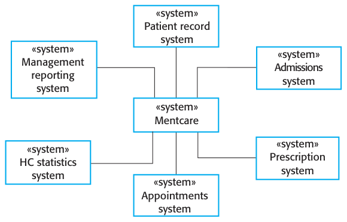
A context model shows only that systems are connected. It does not show whether a neighbour produces data, uses data or shares data. So it is combined with business process models, which describe the human and automated processes. They are drawn as activity diagrams.上下文模型只表明系统之间有连接。它不能说明相邻系统是产生数据、使用数据还是共享数据。因此它要与业务过程模型结合使用，业务过程模型描述人工和自动化的过程。这类模型用活动图画出。
Step 2: activity diagrams第 2 步：活动图
In words: an activity diagram = the steps of a process as boxes, joined by arrows that show the order.用文字表述：活动图 = 一个过程的各个步骤画成方框，用箭头连接，箭头表示先后顺序。
Everyday example: ordering a pizza by app. Enter the order, pay, then bake the pizza and send a confirmation at the same time, then deliver. If the card is declined, ask for another card.生活中的例子：通过应用订比萨。输入订单，付款，然后同时烘焙比萨并发送确认，最后配送。如果银行卡被拒绝，就要求换一张卡。
| Element要素 | Drawn as画法 | Meaning含义 |
|---|---|---|
| Initial node初始节点 | Filled circle实心圆 | Start of the process过程的起点 |
| Final node终止节点 | Filled circle inside a ring套在圆环中的实心圆 | End of the process过程的终点 |
| Activity活动 | Rounded rectangle圆角矩形 | A subprocess that must be carried out必须执行的一个子过程 |
| Flow流 | Arrow between activities活动之间的箭头 | Order of execution执行顺序 |
| Decision判断 | Diamond, outgoing arrows with guards [condition]菱形，带守卫条件 [condition] 的输出箭头 |
Exactly one outgoing flow is followed恰好沿其中一条输出流继续 |
| Fork / join分叉 / 汇合 | Solid bar实心横条 | Fork: the following activities may run in parallel. Join: all incoming activities must be complete before the flow continues分叉：其后的活动可以并行执行。汇合：所有输入活动须全部完成，流程才能继续 |
| Object对象 | Rectangle矩形 | Data passed between activities活动之间传递的数据 |
| Stereotype（构造型） | Name between chevrons, e.g. «system»用 «» 括起的名称，例如 «system» | Type of the entity in a box, e.g. which system supports an activity框内实体的类型，例如哪个系统支持某项活动 |

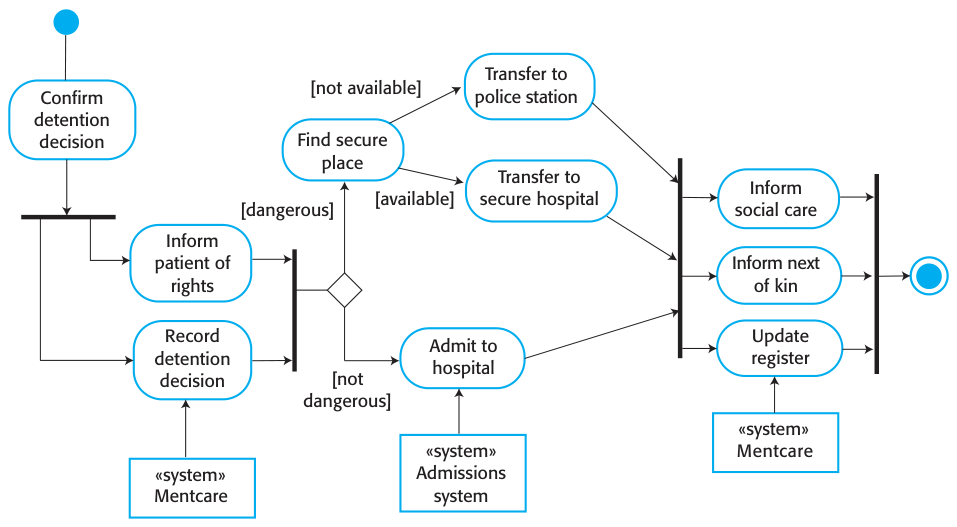
The figure shows involuntary detention: a patient may be held in hospital against his will. A dangerous patient goes to a secure place, and others to a ward. Three activities leave one bar and run at the same time, and the «system» boxes show which system supports which step.图中显示的是非自愿拘留：患者可能违背自己的意愿被留在医院。危险的患者会被送到安全的地方，其他患者则送到病房。三项活动从一个条上分出，同时进行；«system» 方框显示哪个系统支持哪一步。
How to draw an activity diagram for a new case如何为一个新案例画活动图
- List the activities of the process as short verb phrases, for example "Record detention decision".把过程的活动列为简短的动词短语，例如"记录拘留决定"。
- Draw the initial node, then the activities in order, joined by arrows.先画初始节点，然后按顺序画出各项活动，并用箭头连接。
- At every choice draw a decision diamond. Label every outgoing arrow with a guard. The guards exclude each other and cover all cases.在每个选择处画一个判断菱形。给每一条出边都标上守卫。各守卫互斥，并覆盖所有情况。
- Where activities are independent, split them with a fork bar and bring them together with a join bar. Every fork has a matching join.当活动相互独立时，用分叉条把它们分开，再用汇合条把它们合在一起。每个分叉都要有对应的汇合。
- Add «system» boxes or data rectangles if the question asks for the process context or the data.如果题目要求过程上下文或数据，就加上 «system» 框或数据矩形。
- Check that every path from the initial node reaches the final node.检查从初始节点出发的每条路径都能到达终止节点。
Step 3: elapsed time of parallel branches第 3 步：并行分支的经过时间
In words: parallel branches finish when the slowest one finishes, because the join waits for all of them.用文字表述：并行分支要等最慢的那一条结束才算结束，因为汇合点要等所有分支都完成。
Practice练习
Q1. (Explain) Scope creep is a continuous increase of the project scope that raises cost. Explain how a proper context model helps prevent it.Q1.（解释）范围蔓延是指项目范围持续扩大并推高成本。试解释恰当的上下文模型如何帮助预防它。
Answer
The context model makes the system boundary, decided early with the stakeholders, explicit: it shows which systems and processes are inside the system and which neighbouring systems provide or consume data. Every requested feature is checked against it. If the feature belongs to an external system or to a manual process it is outside the scope. Otherwise it is an extension of the boundary, which becomes visible, is estimated for cost and time, and must be negotiated with the stakeholders instead of being added silently. The listed interfaces also show how much work a boundary change causes.上下文模型把早期与利益相关者商定的系统边界明确表达出来：它展示哪些系统和过程位于系统之内，哪些相邻系统提供或使用数据。每项新提出的功能都要对照它来检查。如果该功能属于外部系统或人工过程，就不在范围之内；否则它就是对边界的扩展，这种扩展会被看见，要估算成本和时间，并且必须与利益相关者协商，而不能悄悄加入。所列出的接口还能显示边界变更会带来多少工作量。
Q2. (Design) Model the process context of a system that helps to plan a party: draw an activity diagram of the activities and name the system element used at each stage.Q2.（设计）为一个帮助策划聚会的系统建立过程上下文模型：画出各项活动的活动图，并写明每个阶段所用的系统元素。
Answer
(*) -> [Set date, budget, guest list] «Planning system»
-> [Book venue] «Venue booking system»
-> <venue available?> [no] -> back to [Book venue]
[yes] -> ====== fork ======
[Send invitations] «Mailing system»
[Book catering] «Supplier ordering system»
[Book entertainment] «Booking system»
====== join ======
-> [Collect replies, confirm numbers] «Guest database»
-> [Pay deposits] «Payment system»
-> ((*))
The three bookings are independent, so they sit between a fork and a join; the party can only be confirmed when all of them are done. The decision after "Book venue" has a guard on each outgoing arrow.三项预订彼此独立，因此置于一个分叉与一个汇合之间；只有三项全部完成，聚会才能确认。“预订场地”之后的判断，其每条输出箭头都带有守卫条件。
Q3. (Calculation) In a process, a fork starts activities A (4 h), B (2 h) and C (5 h), followed by a join and then activity D (1 h). What is the minimum elapsed time of the whole sequence, and what would it be without the fork?Q3.（计算）在一个过程中，分叉同时启动活动 A（4 h）、B（2 h）和 C（5 h），随后是汇合，再接着是活动 D（1 h）。整个序列的最短耗时是多少？若没有分叉，耗时又是多少？
Answer
With the fork the join waits for the longest branch: max(4, 2, 5) = 5 h, then D takes 1 h, so the minimum elapsed time is 5 + 1 = 6 h. Without the fork the activities run one after another: 4 + 2 + 5 + 1 = 12 h.有分叉时，汇合须等待最长的分支：max(4, 2, 5) = 5 h，再加上 D 的 1 h，因此最短耗时为 5 + 1 = 6 h。没有分叉时，各项活动依次执行：4 + 2 + 5 + 1 = 12 h。
Interaction models: use cases and sequence diagrams ★★★交互模型：用例和时序图
Goal. Draw a use case diagram and describe one use case in a table. Draw a sequence diagram of one scenario with an alt box. State what each diagram is for.目标。 画出用例图，并用表格描述一个用例。用一个 alt 框画出一个场景的时序图。说明每张图的用途。
In words: a use case diagram = who uses the system for what. A sequence diagram = who sends which message to whom, in time order.用文字表述：用例图 = 谁用系统做什么。时序图 = 按时间顺序，谁向谁发送什么消息。
The two diagrams work together. A use case diagram is the overview. A sequence diagram documents one use case in detail.这两种图配合使用。用例图是总览，时序图则详细记录一个用例。
Step 1: use case diagrams第 1 步：用例图
A use case is one task that a user wants done in one interaction with the system. Example: "Register patient".用例是用户希望通过与系统的一次交互完成的一项任务。例如：“登记患者”。
| Element要素 | Drawn as画法 | Meaning含义 |
|---|---|---|
| Use case用例 | Ellipse containing a verb phrase ("Transfer data")内含动词短语的椭圆（如“传输数据”） | One task of the system系统的一项任务 |
| Actor参与者 | Stick figure with a role name带有角色名称的小人图形 | A human user, another system or hardware outside the system系统之外的人类用户、其他系统或硬件 |
| Association关联 | Line between actor and use case参与者与用例之间的连线 | The actor takes part in the use case参与者参与该用例 |
| System boundary系统边界 | Rectangle around the ellipses (actors stay outside)围住椭圆的矩形（参与者位于矩形之外） | What belongs to the system属于系统的部分 |
Formally the lines have no arrowheads. A UML arrow shows the direction of a message, and in a use case messages go both ways. Arrows are used informally to show who starts the interaction.严格来说，这些线条没有箭头。UML 中的箭头表示消息的方向，而用例中的消息是双向的。箭头只在非正式场合使用，用来表示谁发起了交互。

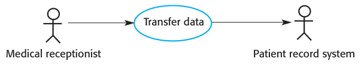
The diagram is only an overview. The detail goes into a table with fixed fields.这张图只是总览，细节要写进字段固定的表格里。
| Field字段 | Content for "Transfer data"“传输数据”的内容 |
|---|---|
| Actors参与者 | Medical receptionist, patient records system (PRS)医务接待员、病人记录系统（PRS） |
| Description描述 | The receptionist transfers either updated personal information (address, phone number) or a summary of diagnosis and treatment from the Mentcare system to the general patient record database of a health authority医务接待员将更新后的个人信息（地址、电话号码）或诊断与治疗摘要，从 Mentcare 系统传输到卫生主管机构的通用病人记录数据库中 |
| Data数据 | Personal information or treatment summary of the patient病人的个人信息或治疗摘要 |
| Stimulus刺激 | Command issued by the medical receptionist医务接待员发出的命令 |
| Response响应 | Confirmation that the PRS has been updated确认 PRS 已更新 |
| Comments备注 | The receptionist needs the security permission to access the patient information and the PRS医务接待员需要访问病人信息和 PRS 的安全权限 |
How to draw a use case diagram for a new case如何为新案例画用例图
- Find the actors: everybody and everything outside the system that uses it or exchanges data with it.找出参与者：系统之外使用该系统或与之交换数据的所有人与事物。
- For each actor list the tasks it wants done. Name each as verb plus noun.对每个参与者，列出它希望完成的任务。每个任务用“动词 + 名词”来命名。
- Draw the boundary rectangle with the ellipses inside and the actors outside. Join each actor to its use cases with plain lines.画一个边界矩形，用例椭圆放在里面，参与者放在外面。用直线把每个参与者与它的用例连起来。
- Describe each use case with a table, or with a sequence diagram.用表格或时序图描述每个用例。
Step 2: sequence diagrams第 2 步：时序图
In words: time runs downwards, each part has a dotted vertical line, and each message is a horizontal arrow from the sender to the receiver.用文字表述：时间从上往下流动，每个部分都有一条竖的虚线，每条消息是一条从发送方指向接收方的水平箭头。
| Element要素 | Drawn as画法 | Meaning含义 |
|---|---|---|
| Participant参与对象 | Box P: PatientInfo (instance : class) or a stick figure方框 P: PatientInfo（实例：类）或小人图形 |
Object or actor taking part参与其中的对象或参与者 |
| Lifeline生命线 | Dotted vertical line below the participant位于参与对象下方的竖直虚线 | The instance during the scenario场景中的实例 |
| Activation（激活条） | Thin rectangle on the lifeline生命线上的细长矩形 | Time in which the instance is involved in the computation实例参与计算的时间段 |
| Message消息 | Arrow labelled operation(parameters); filled head = call标注 operation(parameters) 的箭头；实心箭头头部表示调用 |
Call of an operation of the receiver对接收者某一操作的调用 |
| Return返回 | Annotated arrow back (dashed in strict UML)带注释的回指箭头（在严格的 UML 中为虚线） | Return value or reply返回值或应答 |
| Alternatives备选分支 | Box with the tag alt, guards in [ ], dotted line between the options标签为 alt 的框，守卫条件写于 [ ] 中，各选项之间以虚线分隔 |
Exactly one of the enclosed interactions is executed框内的交互恰有一个被执行 |
| Creation创建 | Arrow to a new object box drawn lower in the diagram指向图中更靠下位置新对象框的箭头 | The object is created during the sequence对象在序列执行过程中被创建 |

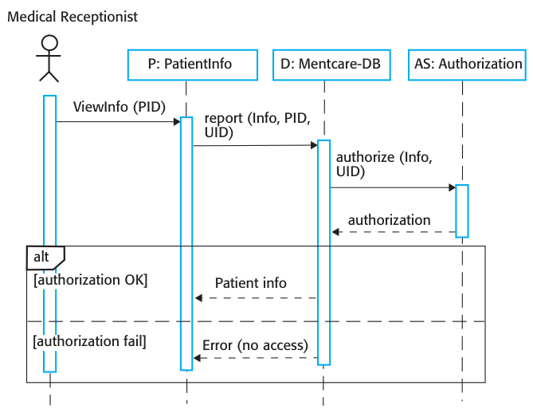
Reading the figure from the top:从图的顶部开始读：
- The receptionist asks the object
Pfor the patient information withViewInfo(PID), wherePIDis the patient identifier.接待员用ViewInfo(PID)向对象P请求患者信息，其中PID是患者标识符。 Pasks the databaseDwithreport(Info, PID, UID).UIDis the receptionist's identifier, which allows the security check.P用report(Info, PID, UID)向数据库D发出查询。UID是接待员的标识符，用于安全检查。Dasks the authorization systemASwithauthorize(Info, UID), andASanswers.D用authorize(Info, UID)向授权系统AS发出请求，AS作出应答。- The
altbox selects by guard.[authorization OK]returns the information.[authorization fail]returns the error "no access".alt框根据守卫条件进行选择。[authorization OK]返回信息。[authorization fail]返回错误“无访问权限”。

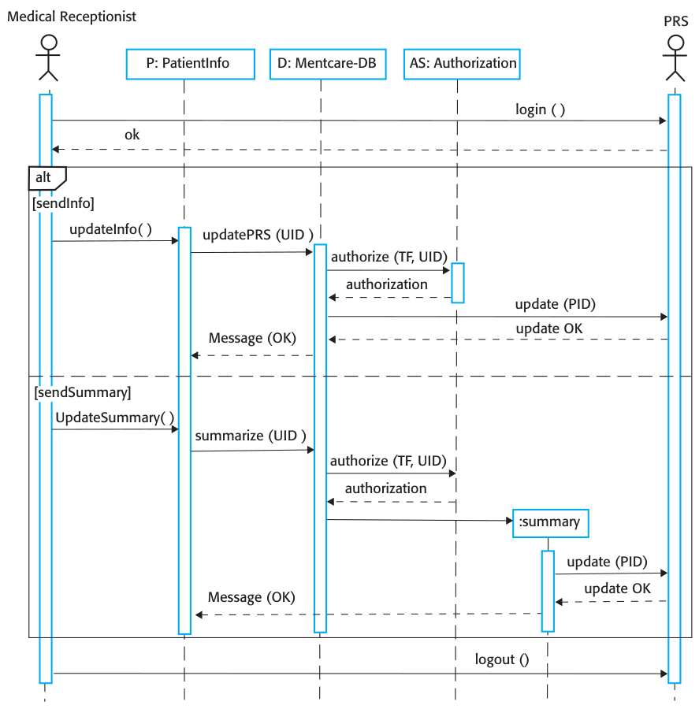
The second figure adds direct communication between actors (login, status message, logout) and the creation of an object, a Summary.第二张图增加了参与者之间的直接通信（登录、状态消息、登出），以及一个 Summary 对象的创建。
How to draw a sequence diagram for a new case如何为新案例画时序图
- Choose one scenario, the main flow of one use case. List the participants and put the starting actor on the left.选一个场景，即一个用例的主流程。列出参与者，并把发起的参与者放在最左边。
- Draw the participant boxes along the top and a dotted lifeline below each.在顶部画出各参与者的方框，每个方框下方画一条虚线生命线。
- Draw the messages from top to bottom in time order. Label each
operation(parameters)and add the returns that matter.按时间顺序从上到下画出消息。给每条operation(parameters)加上标签，并加上重要的返回消息。 - Draw an activation rectangle on a lifeline while it handles a call.当生命线上的对象处理一次调用时，在该生命线上画一个激活矩形。
- Wrap alternatives in an
altbox with guards in square brackets. Draw a new object's box at the height of the creating message.把备选分支放进alt框中，守卫条件写在方括号里。新对象的方框画在创建消息的高度上。 - Check that every message names an operation of the receiving class.检查每条消息是否都指向接收类的一个操作。
Practice练习
Q1. (Design) For the Mentcare system propose use cases for a doctor who sees patients and prescribes medicine and treatments. Describe one of them in the table format. Every use case requires the doctor to be authorized: how can the diagram show this only once?Q1.（设计）针对 Mentcare 系统，为一名既看诊又开具药物和治疗方案的医生提出用例。以表格形式描述其中一个用例。每个用例都要求医生具有授权：如何使图中只表示这一点一次？
Answer
Actors: Doctor, Prescription system (secondary actor). Use cases: View patient information, Record consultation, Prescribe medication, Prescribe treatment, Refer patient. Each use case is an ellipse inside the system boundary; Doctor is joined to all five, the Prescription system only to "Prescribe medication".参与者：医生、处方系统（次要参与者）。用例：查看病人信息、记录就诊、开具药物、开具治疗方案、转诊病人。每个用例都是系统边界内的一个椭圆；医生与全部五个用例相连，处方系统只与“开具药物”相连。
| Field字段 | Prescribe medication开具药物 |
|---|---|
| Actors参与者 | Doctor, prescription system医生、处方系统 |
| Description描述 | The doctor selects a medication and dose for the patient in a consultation; the system generates an electronic prescription医生在一次就诊中为病人选定药物及剂量；系统生成电子处方 |
| Data数据 | Patient identifier, medication, dose, duration病人标识符、药物、剂量、疗程 |
| Stimulus刺激 | Command issued by the doctor医生发出的命令 |
| Response响应 | Confirmation that the prescription has been generated and stored with the consultation确认处方已生成，并与就诊记录一同保存 |
| Comments备注 | The doctor must be authorized to prescribe医生必须有开具处方的授权 |
Authorization is shown once by an extra use case, Check authorization: every use case that needs it has an «include» relationship to it, drawn as a dashed arrow labelled «include» from the base use case to Check authorization.授权只通过一个额外的用例“检查授权”表示一次：每个需要授权的用例都与它存在 «include» 关系，即从基用例指向“检查授权”、标注 «include» 的虚线箭头。
Q2. (Design) Draw a sequence diagram for a student who registers for a university course with limited enrollment. The student first uses an electronic course catalog. Course capacity is 30 and 29 places are taken. What happens to the next two requests?Q2.（设计）为一名选修大学课程的学生画出时序图，该课程名额有限。学生先使用电子课程目录。课程容量为 30，已有 29 个名额被占用。接下来的两次请求会怎样？
Answer
Participants, left to right: Student (actor), C: Catalog, R: Registration, K: Course. The messages from top to bottom (-> call, --> return):参与者从左到右依次为：学生（参与者）、C: Catalog、R: Registration、K: Course。消息自上而下（-> 为调用，--> 为返回）：
Student -> C: browse(subject)
C --> Student: list of courses
Student -> R: register(studentID, courseID)
R -> K: places(courseID)
K --> R: n (n = capacity - enrolled)
alt [n > 0]
R -> K: enrol(studentID)
K --> R: ok
R --> Student: confirmation
else [n = 0]
R --> Student: "course full"
end
Each line is one arrow on the dotted lifelines, the alt lines form the alt box with a dotted separator. With capacity 30 and 29 enrolled, n = 30 − 29 = 1 > 0, so the first request is enrolled and n becomes 0; the next request takes the [n = 0] branch and receives "course full".每一行都是虚线生命线之间的一个箭头，alt 行构成一个带虚线分隔符的 alt 框。容量为 30 且已有 29 人注册时，n = 30 − 29 = 1 > 0，因此第一次请求获准注册，n 变为 0；下一次请求则走 [n = 0] 分支，收到“课程已满”。
思路：先选一个场景，参与者从左到右排好，消息自上而下按时间画，选择用 alt 框，守卫写在方括号里。
Structural models: class diagrams ★★★结构模型：类图
Goal. Draw a class diagram with associations, multiplicities, generalization and aggregation, and read a multiplicity in words in both directions.目标。 画出包含关联、多重性、泛化和聚合的类图，并能用文字从两个方向读出多重性。
In words: a class diagram = the kinds of things in the system and how they are connected, with a count on each connection.用文字表述：类图 = 系统中有哪些事物（类），它们如何相连，每条连线上都标有数量。
A class diagram shows the static structure of the system. At the start the classes stand for real-world things, such as patient, doctor and prescription.类图表示系统的静态结构。刚开始时，类代表现实世界中的事物，例如患者、医生和处方。
Step 1: classes, associations and multiplicities第 1 步：类、关联和多重性
An association（关联）is a line between two classes. It says that objects of the two classes know each other. The multiplicity（多重性）at one end says how many objects of the class at that end can be linked to one object of the class at the other end.关联是两个类之间的一条线，表示两个类的对象彼此相识。多重性写在某一端，表示另一端类的一个对象可以与这一端类的多少个对象相连。
| Notation表示法 | Meaning含义 |
|---|---|
1 |
Exactly one恰好一个 |
0..1 |
Zero or one (optional)零个或一个（可选） |
* or 0..* |
Any number, including none任意个数（包括零个） |
1..* |
One or more一个或多个 |
1..4 |
A range: at least 1 and at most 4一个范围：至少 1 个，至多 4 个 |

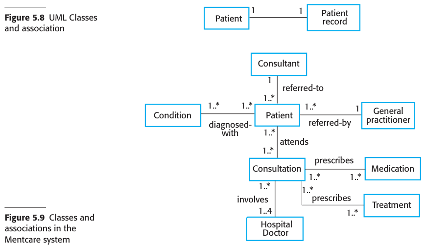
Read two associations of the figure in words:用文字读出图中的两个关联：
- Patient
1—1Patient record: each patient has exactly one record, and each record holds exactly one patient.患者1—1病历：每个患者恰好有一份病历，每份病历恰好属于一个患者。 - Patient
1..*—1..*Condition: a patient may have several conditions, and one condition may belong to several patients.患者1..*—1..*病情：一个患者可以有多种病情，一种病情也可以属于多个患者。
Everyday example: a food-delivery app. A customer places any number of orders (0..*), and an order belongs to exactly one customer (1).日常例子：一个外卖应用。顾客可以下任意多个订单（0..*），而一个订单恰好属于一个顾客（1）。
Step 2: classes with attributes and operations第 2 步：带属性和操作的类
A class box has three compartments. The name is at the top. The attributes, the data the class holds, are in the middle. The operations, the things it can do, are at the bottom.类框分为三部分。名称在最上面，属性（即类保存的数据）放在中间，操作（即类能做的事）放在最下面。
+--------------------------+
| Consultation |
+--------------------------+
| Doctors |
| Date |
| Time |
| Clinic |
| Reason |
| Medication prescribed |
| Treatment prescribed |
| Voice notes |
| Transcript |
+--------------------------+
| New() |
| Prescribe() |
| RecordNotes() |
| Transcribe() |
+--------------------------+
Step 3: generalization第 3 步：泛化
In words: generalization = put what several classes share into a more general class, and let the specific classes inherit it.用文字表述：泛化 = 把几个类的共同部分放进一个更一般的类里，让具体的类继承它。
Example: a Dish class could have the subclasses Starter and Dessert. Both inherit the name and the price of Dish. In the UML the generalization（泛化）arrow points up to the more general class, the superclass. Subclasses inherit its attributes and operations and add their own.例如，Dish 类可以有子类 Starter 和 Dessert，两者都继承 Dish 的名称和价格。在 UML 中，泛化箭头指向更一般的类，即超类。子类继承超类的属性和操作，并加上自己的属性和操作。
Doctor Name, Phone #, Email; register(), de-register()
^-- General practitioner Practice, Address
^-- Hospital doctor Staff #, Pager #
^-- Trainee doctor (just graduated, supervised)
^-- Registered doctor (works unsupervised in a consultant's team)
^-- Consultant (senior doctor, full decision-making responsibility)
All doctors have a name and a phone number. Hospital doctors also have a staff number and a pager. General practitioners have a practice name and an address instead.所有医生都有姓名和电话号码。医院医生还有工号和寻呼机。全科医生则改为有诊所名称和地址。
Step 4: aggregation第 4 步：聚合
An aggregation（聚合）says that one object, the whole, is made of other objects, the parts. The diamond is drawn at the end of the whole. Example: an order is made of order lines.聚合表示一个对象（整体）由其他对象（部分）组成。菱形画在整体一端。例如，一个订单由多条订单明细组成。

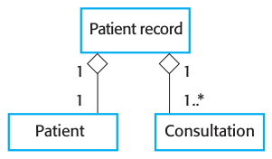
How to draw a class diagram for a new case如何为新案例画类图
- Underline the nouns in the requirements. Keep the real-world things that the system must store as classes.在需求中划出名词。系统必须存储的现实事物保留为类。
- Draw each class as a named box. Join related classes with a line and name each association with a verb phrase.把每个类画成一个带名称的方框。用线连接相关的类，并用动词短语给每个关联命名。
- Write a multiplicity at both ends of every association. Ask "one A has how many B?" and "one B has how many A?".在每个关联的两端都写上多重性。分别问：“一个 A 有几个 B？”和“一个 B 有几个 A？”。
- Move shared attributes and operations into a superclass, with the arrow pointing up.把共有的属性和操作移到超类中，箭头指向上方。
- Mark whole–part relations with a diamond at the whole.整体—部件关系用菱形标在整体一端。
- Add attributes and operations to the important classes. Every message of a sequence diagram must be an operation of the receiving class.为重要的类加上属性和操作。时序图中的每条消息都必须是接收类的一个操作。
Practice练习
Q1. (Multiplicity) A patient has exactly one record (1—1); a record is an aggregate of one or more consultations (1—1..*). (a) Read both associations in words. (b) Three patients have 4, 2 and 5 consultations. How many Patient record and Consultation objects exist? (c) May a record without any consultation exist?Q1.（多重性）一位病人恰有一份记录（1—1）；一份记录是一次或多次就诊的聚合（1—1..*）。(a) 用文字读出这两个关联。(b) 三位病人分别有 4、2 和 5 次就诊。共存在多少个 Patient record 对象和 Consultation 对象？(c) 是否可能存在没有任何就诊的记录？
Answer
(a) Each patient has exactly one record and each record belongs to exactly one patient. Each record consists of one or more consultations and each consultation belongs to exactly one record. (b) One record per patient, so 3 records; consultations: 4 + 2 + 5 = 11. (c) No. The multiplicity 1..* at the Consultation end requires at least one consultation per record, so three records need at least 3 consultations.(a) 每位病人恰有一份记录，每份记录恰属于一位病人。每份记录由一次或多次就诊组成，每次就诊恰属于一份记录。(b) 每位病人一份记录，因此共 3 份记录；就诊次数为 4 + 2 + 5 = 11。(c) 否。Consultation 一端的多重性 1..* 要求每份记录至少有一次就诊，因此三份记录至少需要 3 次就诊。
Q2. (Design) Look at the mailbox and the messages of an email system and model the classes that represent a mailbox and an email message.Q2.（设计）审视电子邮件系统的邮箱及其中的邮件，为代表邮箱与电子邮件的类建模。
Answer
Mailbox 1 <>-------------- 0..* Message 1 <>-------------- 0..* Attachment
Mailbox Message Attachment
name sender fileName
owner recipients size
capacity subject, body, date type
------------------ status (read / unread) ----------------
add(Message) ------------------------ open()
delete(Message) send(), reply(), forward()
search(text) markRead()
A mailbox is the whole and contains any number of messages (0..*); a message belongs to exactly one mailbox (1). A message is the whole of its attachments. If Inbox, Sent and Drafts behave differently they can be subclasses of Mailbox (generalization).邮箱是整体，包含任意多封邮件（0..*）；每封邮件恰属于一个邮箱（1）。邮件是其附件的整体。若收件箱、已发送和草稿箱的行为各不相同，它们可以作为邮箱的子类（泛化）。
Behavioral models: data-driven and event-driven ★★★行为模型：数据驱动和事件驱动
Goal. Say when a model is data-driven and when event-driven. Draw and trace a state diagram, and use a superstate against state explosion.目标。 说明什么时候用数据驱动模型，什么时候用事件驱动模型。画出状态图并手工演算，并用超状态来应对状态爆炸。
In words: a behavioral model shows what the running system does when it receives a stimulus: either data to process or an event that triggers processing.用文字表述：行为模型描述运行中的系统收到刺激时做什么。刺激要么是待处理的数据，要么是触发处理的事件。
| Data-driven数据驱动 | Event-driven事件驱动 | |
|---|---|---|
| Typical systems典型系统 | Business data-processing systems商业数据处理系统 | Real-time systems实时系统 |
| Control控制 | The arrival of data starts the processing数据的到达启动处理 | An event (stimulus) changes the state事件（刺激）改变状态 |
| Example示例 | Phone billing: call data in, costs calculated, bill out电话计费：输入通话数据，计算费用，输出账单 | Landline switch: "handset activated" gives dial tone; key presses capture the number固定电话交换机：“handset activated”事件发生后给出拨号音；按键采集号码 |
| Model模型 | Data-flow diagram, drawn as UML activity or sequence diagram数据流图，以 UML 活动图或时序图画出 | UML state diagramUML 状态图 |
Step 1: data-driven models第 1 步：数据驱动模型
In words: data-driven = follow the data from the input through every processing step to the output.用文字表述：数据驱动 = 跟随数据，从输入经过每一个处理步骤，直到输出。
A data-flow diagram（数据流图）shows each processing step and the data between the steps. In the UML it is drawn as an activity diagram. The steps are rounded rectangles and the data are rectangles. Example: in phone billing, call data come in, the cost is computed, and the bill goes out.数据流图表示每个处理步骤，以及步骤之间的数据。在 UML 中，它画成活动图。处理步骤是圆角矩形，数据是矩形。例如，在电话计费中，通话数据进入，计算出费用，然后输出账单。

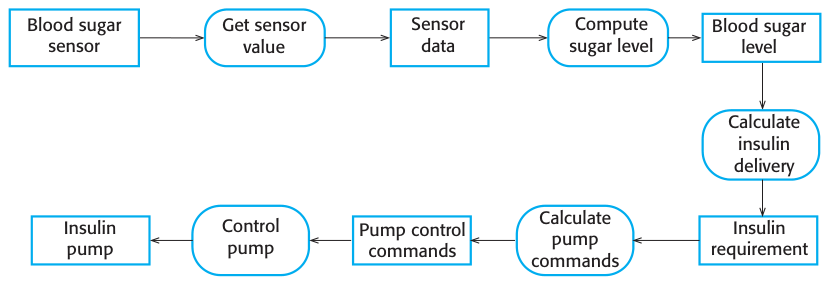
The chain reads: the sensor delivers a value, the software computes the sugar level, then the insulin requirement, then the pump commands, which control the pump. A sequence diagram whose messages all go from left to right also shows data processing. Sequence diagrams highlight the objects. Data-flow diagrams highlight the activities, and non-experts find them more intuitive.这条链是：传感器给出一个数值，软件计算血糖水平，再计算胰岛素需求量，然后发出泵命令，用来控制泵。所有消息都从左到右的时序图，也能体现数据处理。时序图突出的是对象，数据流图突出的是活动，非专业人士通常觉得数据流图更直观。
Step 2: event-driven models and state diagrams第 2 步：事件驱动模型与状态图
In words: event-driven = the system waits in a state, and each event moves it to another state.用文字表述：事件驱动 = 系统停留在某个状态中等待，每个事件使它转到另一个状态。
The system has a finite number of states. An event causes a transition（转移）from one state to another. This suits real-time systems. A state diagram shows no data flow.系统的状态数量有限。事件引起从一个状态到另一个状态的转移。这种模型适合实时系统。状态图不表示数据流。
| Element要素 | Drawn as画法 | Meaning含义 |
|---|---|---|
| State状态 | Rounded rectangle with the name; optional do: action (also entry: / exit:)带名称的圆角矩形；可选的 do: action（也可为 entry: / exit:） |
A situation of the system; the action is performed in it系统的一种状况；动作在该状况下执行 |
| Transition移交阶段 | Arrow labelled with the event, optionally [guard] / action以事件标注的箭头，可选择性地带有 [guard] / action |
The event moves the system from the source to the target state事件使系统从源状态转移到目标状态 |
| Initial state初始状态 | Filled circle with an arrow to the first state实心圆，带箭头指向第一个状态 | Start起始 |
| Final state终止状态 | Filled circle inside a ring套在圆环中的实心圆 | End结束 |
| Superstate超状态 | Rounded rectangle that contains substates, expanded in a separate diagram包含子状态的圆角矩形，在另一张图中展开 | Hides detail; looks like one state at the high level隐藏细节；在高层看起来像一个状态 |
The microwave oven has a power switch (full or half), a number keypad for the time and a Start button. For safety it must not run with the door open.微波炉有一个功率开关（全功率或半功率）、一个用于设定时间的数字键盘，以及一个开始按钮。出于安全考虑，门开着时不能运行。

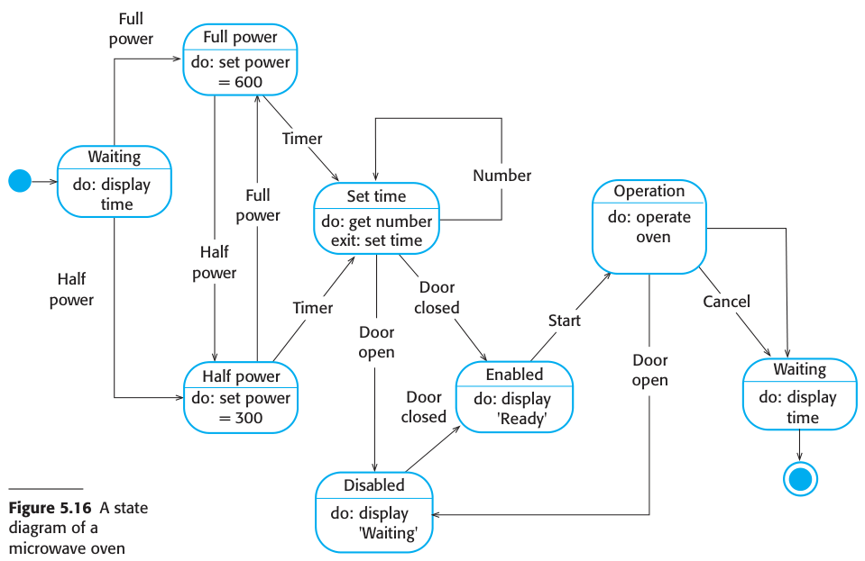
The oven starts in Waiting. A power button leads to Half power or Full power, and the user may change his mind. A number leads to Set time. Closing the door enables Start (Enabled), and opening it leads to Disabled. Start begins Operation, which returns to Waiting when the time is over.微波炉开始时处于 Waiting 状态。按电源按钮进入 Half power 或 Full power 状态，用户可以改变主意。按数字键进入 Set time 状态。关上门后 Start 变为 Enabled，开门则变为 Disabled。按下 Start 进入 Operation 状态，时间到后返回 Waiting。
| From起始状态 | Event事件 | To目标状态 |
|---|---|---|
| Waiting等待 | Full power / Half power | Full power / Half power |
| Full power ↔ Half power | The other power button另一功率按钮 | Half power / Full power |
| Full power, Half power | Number | Set time |
| Set time | Door closed / Door open | Enabled / Disabled |
| Disabled | Door closed | Enabled |
| Enabled | Door open / Start | Disabled / Operation |
| Operation操作不兼容 | Cooking time over, or CancelCooking time over 或 Cancel | Waiting等待 |
| Operation操作不兼容 | Door open | Disabled |
An event that has no transition from the current state is ignored.在当前状态下没有对应转换的事件会被忽略。
Step 3: state explosion and superstates第 3 步：状态爆炸与超状态
If a system has many independent features, the number of states grows very fast. This is state explosion（状态爆炸）. A superstate（超状态）groups several states into one box. Arrows that all substates share leave the superstate once.如果系统有许多相互独立的功能，状态数会急剧增长，这就是状态爆炸。超状态把几个状态归并到一个框里。所有子状态共有的箭头，只需从超状态画出一次。

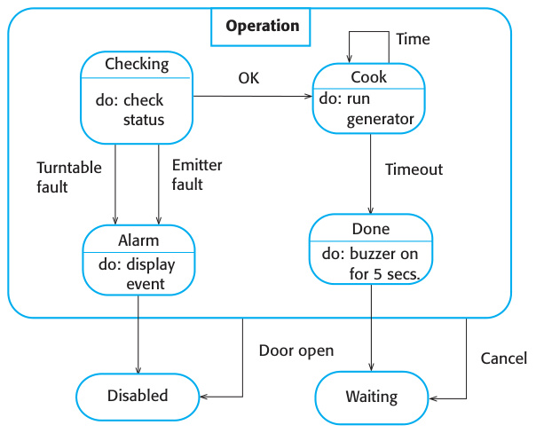
In the Operation superstate, Door open and Cancel leave the superstate once. Without it they would be drawn from each of the four substates: 2 arrows instead of 8.在 Operation 超状态中，Door open 和 Cancel 只从超状态画出一次。没有超状态时，它们要从四个子状态各画一次，共 8 条箭头；有了超状态，只需 2 条。
How to draw a state diagram for a new case如何为新案例画状态图
- List the states, the stable situations such as waiting, ready or error. Mark the initial state.列出各个状态，即稳定的情形，例如等待、就绪或出错。标出初始状态。
- List the events: key presses, sensor signals, timeouts and messages.列出事件：按键、传感器信号、超时和消息。
- For every state ask "which events can happen here, and where do they lead?". Draw one labelled arrow for each. Do not forget safety events such as door open.对每个状态问：“这里可能发生哪些事件，它们会引向哪里？”为每个事件画一条带标签的箭头。不要漏掉门打开这类安全事件。
- Add actions (
do:,entry:,exit:) inside states and guards[ ]on arrows when one event has several targets.在状态内部加上动作（do:、entry:、exit:）；当一个事件有多个目标时，在箭头上加上守卫条件[ ]。 - Group states that share transitions into a superstate and draw the shared arrow once.将共享转换的状态归入一个超状态，并且只画一次共享箭头。
- Check that every state is reachable and that no event with the same guard leads to two states.检查每个状态都是可达的，并且同一守卫条件下的同一事件不会通向两个状态。
Practice练习
Q1. (Trace) The oven is in Waiting. The events are: Full power, Half power, Number, Door open, Door closed, Start, Door open, Door closed. Give the sequence of states.Q1.（手工演算）微波炉处于 Waiting。发生的事件依次为：Full power、Half power、Number、Door open、Door closed、Start、Door open、Door closed。写出状态序列。
Answer
Waiting → (Full power) Full power → (Half power) Half power → (Number) Set time → (Door open) Disabled → (Door closed) Enabled → (Start) Operation → (Door open) Disabled → (Door closed) Enabled. Opening the door during operation stopped the cooking; the oven is Enabled again and must be started anew with Start. No event was ignored.Waiting → (Full power) Full power → (Half power) Half power → (Number) Set time → (Door open) Disabled → (Door closed) Enabled → (Start) Operation → (Door open) Disabled → (Door closed) Enabled。运行期间打开炉门会中止烹饪；微波炉重新回到 Enabled，必须再次通过 Start 启动。没有事件被忽略。
Q2. (Design) Draw the state diagram of the control software of a DVD player (power, open/close tray, play, pause, fast forward, stop). Use a superstate.Q2.（设计）画出 DVD 播放机控制软件（电源、托盘开合、播放、暂停、快进、停止）的状态图。使用超状态。
Answer
States: Off (initial) and the superstate On with the substates No disc, Tray open, Stopped, Playing, Paused, Fast-forward. Transitions:状态：Off（初始）以及超状态 On，其子状态为 No disc、Tray open、Stopped、Playing、Paused、Fast-forward。转换如下：
| From起始状态 | Event [guard]事件 [守卫条件] | To目标状态 |
|---|---|---|
| Off | Power [disc in tray] | Stopped |
| Off | Power [tray empty] | No disc |
| No disc, Stopped | Open | Tray open |
| Tray open | Close [disc on tray] | Stopped |
| Tray open | Close [tray empty] | No disc |
| Stopped | Play | Playing |
| Playing | Pause | Paused |
| Paused | Pause or Play | Playing |
| Playing | FF | Fast-forward |
| Fast-forward | Play | Playing |
| Playing, Paused, Fast-forward | Stop | Stopped |
| Playing | End of disc碟片播完 | Stopped |
| On (any substate)On（任一子状态） | Power | Off |
Draw each row as one labelled arrow. The last row is one arrow from the boundary of On to Off instead of six arrows, one from each substate. Check: Off → Stopped → Playing → Paused → Playing → Fast-forward → Playing → Stopped → Tray open → No disc → Off follows from the events Power [disc in tray], Play, Pause, Play, FF, Play, Stop, Open, Close [tray empty], Power.每一行画成一条带标签的箭头。最后一行是从 On 的边界到 Off 的一条箭头，而不是从每个子状态各画一条（共六条）。检查：Off → Stopped → Playing → Paused → Playing → Fast-forward → Playing → Stopped → Tray open → No disc → Off，依次由事件 Power [disc in tray]、Play、Pause、Play、FF、Play、Stop、Open、Close [tray empty]、Power 引起。
思路：先列状态和事件，再逐个状态问“这里发生什么事件会去哪里”；共有的转移（断电）放在超状态边界上只画一次。
Model-driven engineering and architecture ★模型驱动工程与体系结构
Model-driven engineering (MDE)（模型驱动工程）makes models, not programs, the main output of development. The programs are generated from the models. Model-driven architecture (MDA)（模型驱动架构）is its design and implementation part.模型驱动工程（MDE）让模型而不是程序成为开发的主要产出，程序由模型生成。模型驱动架构（MDA）是它的设计与实现部分。
| Model模型 | What it describes描述的内容 |
|---|---|
| CIM（计算无关模型） | Computation independent model: domain abstractions, for example "asset" and "role"计算无关模型：领域抽象，例如“资产”和“角色” |
| PIM（平台无关模型） | Platform independent model: how the system works, without an implementation platform平台无关模型：系统如何工作，不涉及具体的实现平台 |
| PSM（平台相关模型） | Platform specific model: the PIM for one platform, for example J2EE or .NET平台相关模型：针对某一平台的 PIM，例如 J2EE 或 .NET |
Translators turn CIM into PIM, PIM into one PSM per platform, and a PSM into code. A new platform needs only one new translator. PIM to PSM is largely automatic, but CIM to PIM needs people. MDA pays off mostly for long-lived system products in well-understood domains.转换器把 CIM 转为 PIM，把 PIM 转为每个平台一个的 PSM，再把 PSM 转为代码。新增一个平台，只需要一个新的转换器。从 PIM 到 PSM 基本是自动的，但从 CIM 到 PIM 需要人工参与。MDA 主要适合领域成熟、生命周期长的系统产品，这类产品最能体现它的价值。
Practice练习
Q1. (Concept) Which model type (a) contains the abstractions "asset" and "role"; (b) is specific to J2EE; (c) describes the operation of the system without reference to implementation? Which transformation step is easiest to automate?Q1.（概念）以下各类模型分别是哪一种：(a) 包含抽象“asset”和“role”的模型；(b) 专属于 J2EE 的模型；(c) 在不涉及实现的情况下描述系统运行的模型？哪一步变换最容易自动化？
Answer
(a) A computation independent model (a security domain model). (b) A platform specific model. (c) A platform independent model. The PIM-to-PSM step is the easiest to automate, because tools use libraries of platform-specific rules and patterns; the CIM-to-PIM step remains a research problem and normally needs human intervention.(a) 计算无关模型（安全领域模型）。(b) 平台相关模型。(c) 平台无关模型。PIM 到 PSM 这一步最容易自动化，因为工具使用平台相关的规则与模式库；CIM 到 PIM 这一步仍是研究问题，通常需要人工干预。
Terms to recognise ★需要认识的术语
| Term术语 | What to know要知道什么 |
|---|---|
| «include» and «extend»«include» 和 «extend» | Use case relations drawn as dashed arrows. Include: always called by the base case. Extend: optional extension under a condition用例之间的关系画成虚线箭头。include：总是被基用例调用。extend：在某个条件下才可选的扩展。 |
opt, loop, par |
Sequence diagram boxes: optional part, repeated part, parts that run in parallel时序图中的框：可选部分、重复部分、并行运行的部分 |
| Composition（组合） | Aggregation with strong ownership, drawn with a filled diamond. A part belongs to one whole and is destroyed with it强拥有关系的聚合，画成实心菱形。一个部分只属于一个整体，并随整体一起销毁。 |
| Semantic data model（语义数据模型） | A class diagram without operations, used in database design to show entities, attributes and relations不含操作的类图，用于数据库设计，表示实体、属性和关系 |
| Component, package and deployment diagrams构件图、包图和部署图 | UML diagrams for architectural models. See Chapter 5用于体系结构模型的 UML 图。参见第 5 章 |
| Communication diagram通信图 | An alternative representation of a sequence diagram时序图的另一种表示形式 |
| SysML | A UML variant for general systems, not only software面向一般系统（不限于软件）的 UML 变体 |
| Static and dynamic structural model静态与动态结构模型 | Static: the organization of the design. Dynamic: the organization while the system runs静态：设计的组织方式。动态：系统运行时的组织方式。 |
| Stereotype（构造型） | A name between chevrons, such as «system», that gives the type of an element用双尖括号括起来的名称，例如 «system»，表示元素的类型 |
| Executable UML可执行 UML | A subset of UML 2 with a precise meaning that can be compiled. The basis of fully automated transformationUML 2 的一个子集，含义精确，可以编译。它是实现全自动转换的基础。 |
Exam-style questions考试题型练习
Q1. (Concepts, 10 marks) (a) Define a system model and explain the difference between an abstraction and an alternative representation (3). (b) Name the four modeling perspectives and one UML diagram for each (4). (c) A team uses diagrams (i) in a design discussion, (ii) to document an existing system, (iii) to generate code. State for each use how complete and how correct the diagram must be (3).Q1.（概念，10 分）(a) 定义系统模型，并解释抽象与替代表示的区别（3 分）。(b) 说出四种建模视角，并各给出一种 UML 图（4 分）。(c) 某团队在 (i) 设计讨论、(ii) 为现有系统编写文档、(iii) 生成代码时使用图。对每种用途，说明图需要达到怎样的完整程度与正确程度（3 分）。
Answer
(a) A system model is an abstract description of a system that presents one view or perspective of it. It is an abstraction: it deliberately leaves out detail and keeps the most salient characteristics. An alternative representation keeps all the information of the original, as a translation of a book does.(a) 系统模型是对系统的抽象描述，呈现系统的一种视图或视角。它是一种抽象：有意省略细节，保留最突出的特征。替代表示则保留原对象的全部信息，正如书的译本一样。
(b) External (context): context model or activity diagram of the business process. Interaction: use case diagram or sequence diagram. Structural: class diagram. Behavioral: activity diagram (data-driven) or state diagram (event-driven).(b) 外部（上下文）：上下文模型或业务过程的活动图。交互：用例图或时序图。结构：类图。行为：活动图（数据驱动）或状态图（事件驱动）。
(c) (i) Discussion: the diagram may be incomplete and the notation informal, as long as it covers the key points. (ii) Documentation: it may cover only some parts, but it must be correct, that is, use the notation correctly and describe the system accurately. (iii) Code generation: it must be both complete and correct, and similar symbols such as stick and block arrowheads must not be confused.(c) (i) 讨论：只要涵盖要点，图可以不完整，记号也可以非正式。(ii) 文档编制：可以只涵盖部分内容，但必须正确，即正确使用记号，并准确描述系统。(iii) 代码生成：必须既完整又正确，并且不得混淆相似的符号，如线形箭头与块状箭头。
Q2. (Context and activity diagram, 15 marks) A bank wants software for cash withdrawal at ATMs. (a) Explain why the system boundary is decided early and give two examples of how it affects complexity and cost (4). (b) Draw an activity diagram of the withdrawal: insert card, PIN check, amount, funds check, debit, then cash dispensing and receipt printing in parallel, return of the card (8). (c) Dispensing takes 8 s and printing 5 s. What is the elapsed time of the parallel part, and what would it be sequentially? What does the join bar mean (3)?Q2.（上下文与活动图，15 分）某银行需要为 ATM 取款开发软件。(a) 解释为何需及早确定系统边界，并举两例说明它如何影响复杂度与成本（4 分）。(b) 画出取款的活动图：插入卡片、核对 PIN、输入金额、核查资金、扣款，然后并行地出钞与打印凭条，最后退还卡片（8 分）。(c) 出钞需 8 s，打印凭条需 5 s。并行部分的耗时是多少？顺序执行则需要多少？汇合横条表示什么（3 分）？
Answer
(a) The boundary says which functions the software provides and which are left to other systems or manual processes. It is fixed early to limit the cost and time of understanding requirements and design. Example 1: if the ATM software manages the customer accounts itself, the system, its data and security are much larger than if it calls the bank's existing account system; relying on that system avoids duplicated data but is slower and the ATM cannot work when the account system is down. Example 2: building card-fraud detection into the system adds complexity and cost; an external fraud service shifts the cost to integration and fees.(a) 系统边界规定软件提供哪些功能，哪些功能留给其他系统或人工过程。它需及早确定，以限制理解需求与设计所需的成本和时间。示例 1：若 ATM 软件自行管理客户账户，则系统、其数据和安全性的规模会比调用银行现有账户系统时大得多；依赖该系统可以避免数据重复，但速度较慢，且账户系统停机时 ATM 无法工作。示例 2：在系统中构建卡欺诈检测会增加复杂度和成本；采用外部欺诈检测服务则把成本转移到集成与服务费上。
(b)
(*) start
v
[Insert card] -> [Read card data] -> [Enter PIN]
v
<PIN valid?> --[no]--> [Eject card] --> ((*))
| [yes]
v
[Enter amount]
v
<balance >= amount and within daily limit?> --[no]--> [Show message] --> [Eject card] --> ((*))
| [yes]
v
[Debit account]
v
=====fork=====
| |
[Dispense cash] [Print receipt]
| |
=====join=====
v
[Return card] --> ((*))
Activities are rounded rectangles, the diamonds are decisions with a guard on every outgoing arrow, the bars are fork and join. Data objects (card data, PIN, amount, balance) can be drawn as rectangles between the activities.活动以圆角矩形表示，菱形为判断（每条输出箭头都带守卫条件），横条为分叉与汇合。数据对象（卡片数据、PIN、金额、余额）可以以矩形画在活动之间。
(c) The join waits for both branches, so the parallel part takes max(8, 5) = 8 s; sequentially it would take 8 + 5 = 13 s. The join bar means that all incoming activities must be complete before the flow continues.(c) 汇合须等待两个分支，因此并行部分耗时 max(8, 5) = 8 s；顺序执行则为 8 + 5 = 13 s。汇合横条表示，所有输入活动都须完成，流程才能继续。
Q3. (Interaction models, 15 marks) For a library system: (a) draw a use case diagram with the actors Member and Librarian and at least four use cases (4); (b) describe "Borrow book" in the table format (4); (c) draw a sequence diagram of "Borrow book" that handles a member who may not borrow and a book that is not available (7).Q3.（交互模型，15 分）对于一个图书馆系统：(a) 画出含参与者会员（Member）和图书管理员（Librarian）的用例图，并至少包含四个用例（4 分）；(b) 以表格形式描述“借书”（4 分）；(c) 画出“借书”的时序图，要处理会员无借阅资格以及图书不可借的情况（7 分）。
Answer
(a) Inside the system boundary "Library system": Search catalog, Borrow book, Return book, Reserve book, Register member, Add book. Member (outside, stick figure) is joined by plain lines to Search catalog, Reserve book, Borrow book and Return book; Librarian to Borrow book, Return book, Register member and Add book.(a) 在系统边界“图书馆系统”之内：检索目录、借书、还书、预订图书、登记会员、添加图书。会员（位于边界之外，小人图形）以普通线条与检索目录、预订图书、借书和还书相连；图书管理员与借书、还书、登记会员和添加图书相连。
(b)
| Field字段 | Borrow book借书 |
|---|---|
| Actors参与者 | Librarian, member图书管理员、会员 |
| Description描述 | The librarian lends an available book to a member; the system records the loan and the due date图书管理员把一本可借的图书借给会员；系统记录借阅及到期日期 |
| Data数据 | Member identifier, book identifier, due date会员标识符、图书标识符、到期日期 |
| Stimulus刺激 | The librarian scans the member card and the book图书管理员扫描会员卡和图书 |
| Response响应 | Loan recorded; due date printed on the receipt借阅已记录；到期日期印在凭条上 |
| Comments备注 | The member must be below the loan limit and have no unpaid fines会员的借阅数量须低于借阅上限，并且没有未缴罚款 |
(c) Participants: Librarian (actor), S: LoanScreen, M: Member, B: Book, L: Loan (created). Messages from top to bottom (-> call, --> return):(c) 参与者：图书管理员（参与者）、S: LoanScreen、M: Member、B: Book、L: Loan（创建的对象）。消息自上而下（-> 为调用，--> 为返回）：
Librarian -> S: borrow(memberID, bookID)
S -> M: canBorrow(memberID)
M --> S: yes / no
S -> B: isAvailable(bookID)
B --> S: yes / no
alt [both yes]
S -> B: checkOut(bookID)
S -> L: create(memberID, bookID, dueDate) (box L appears here)
S --> Librarian: receipt(dueDate)
else [otherwise]
S --> Librarian: error(reason)
end
The alt box has the guards in square brackets and a dotted line between the two options; the creation arrow points to the box of L, drawn at that height.alt 框中带有方括号内的守卫条件，两个选项之间以虚线分隔；创建箭头指向 L 的框，该框画在同一高度上。
Q4. (Structural models, 15 marks) A university department: students and lecturers are persons with a name and an e-mail address. A student enrols in at most 6 courses; a course has between 5 and 100 students. A lecturer teaches 1 to 3 courses; each course has exactly one lecturer. A course consists of one or more sessions. (a) Draw the class diagram with multiplicities, generalization and aggregation (8). (b) Read the enrolment association in words in both directions (3). (c) 24 students each enrol in exactly 5 courses. What are the smallest and the largest possible numbers of courses (4)?Q4.（结构模型，15 分）某大学的一个系：学生和讲师都是具有姓名和电子邮件地址的人员。学生最多选修 6 门课程；每门课程有 5 至 100 名学生。讲师讲授 1 至 3 门课程；每门课程恰有一名讲师。一门课程由一次或多次课次组成。(a) 画出含多重性、泛化和聚合的类图（8 分）。(b) 用文字从两个方向读出选课关联（3 分）。(c) 24 名学生各恰好选修 5 门课程。课程数量可能的最小值和最大值各是多少（4 分）？
Answer
(a)
Person name, email
^-- Student studentID
^-- Lecturer staffID
Student 5..100 ---- enrols in ---- 0..6 Course
Lecturer 1 ---- teaches ---- 1..3 Course
Course 1 <>---- 1..* Session
Student and Lecturer inherit name and email from Person (arrow to the superclass). The diamond sits at Course, the whole. The multiplicity at an end counts the objects of that class per object of the other class.Student 与 Lecturer 从 Person 继承姓名与电子邮件（箭头指向父类）。菱形位于整体 Course 一端。某一端的多重性，是指对于另一端类的每个对象，本端类中对象的数量。
(b) A student enrols in between 0 and 6 courses; a course has between 5 and 100 students.(b) 一名学生选修 0 至 6 门课程；每门课程有 5 至 100 名学生。
(c) The 24 students create 24 × 5 = 120 enrolments. A student enrols in 5 different courses, so there are at least 5 courses; with exactly 5 courses each has 120/5 = 24 students, which is within 5..100. Every course needs at least 5 students, so there are at most 120/5 = 24 courses. The number of courses lies between 5 and 24.(c) 24 名学生共产生 24 × 5 = 120 条选课记录。每名学生都选修 5 门不同的课程，因此至少有 5 门课程；若恰有 5 门课程，则每门课程有 120/5 = 24 名学生，在 5..100 的范围内。每门课程至少需要 5 名学生，因此课程至多为 120/5 = 24 门。课程数量介于 5 与 24 之间。
思路：多重性写在哪一端就是“另一端的一个对象”对应多少个；(c) 先数选课关系总数，再用每门课的人数上下限夹出课程数。
Q5. (Behavior and model-driven engineering, 15 marks) (a) Draw the state diagram of an automatic washing machine with programs for different clothes (8). (b) Explain state explosion and how a superstate helps; use your diagram (3). (c) Distinguish PIM and PSM and explain why a PIM helps when a new platform appears (4).Q5.（行为与模型驱动工程，15 分）(a) 画出一台可针对不同衣物选择不同程序的全自动洗衣机的状态图（8 分）。(b) 解释状态爆炸，以及超状态如何有所帮助；请结合你的图说明（3 分）。(c) 区分 PIM 与 PSM，并解释当出现新平台时 PIM 为何有所帮助（4 分）。
Answer
(a) States: Idle (initial), Program selected, Ready, Running, Paused, Finished. Running is a superstate with the substates Filling, Washing, Draining, Rinsing, Spinning. The program stores temperature, wash time and spin speed when it is selected.(a) 状态：Idle（初始）、Program selected、Ready、Running、Paused、Finished。Running 是一个超状态，其子状态为 Filling、Washing、Draining、Rinsing、Spinning。选定程序时，程序保存温度、洗涤时间和脱水转速。
| From起始状态 | Event [guard] / action事件 [守卫条件] / 动作 | To目标状态 |
|---|---|---|
| Idle, Program selectedIdle、Program selected | Select program / store parametersSelect program / 保存参数 | Program selected |
| Program selected | Door closed | Ready |
| Ready | Door open | Program selected |
| Ready | Start起始 | Running (Filling)Running（Filling） |
| Filling | Water level reached水位达到 | Washing |
| Washing | Wash time over洗涤时间结束 | Draining |
| Draining | Water empty水已排空 | Rinsing |
| Rinsing | Rinse over [spin speed > 0]漂洗结束 [脱水转速 > 0] | Spinning |
| Rinsing | Rinse over [spin speed = 0]漂洗结束 [脱水转速 = 0] | Finished |
| Spinning | Spin over脱水结束 | Finished |
| Running (any substate)Running（任一子状态） | Door open | Paused |
| Paused | Door closed | Running (resumes the interrupted phase)Running（恢复被中断的阶段） |
| Running (any substate)Running（任一子状态） | Cancel | Idle空闲 |
| Finished | Door open | Idle空闲 |
Finished has the action entry: buzzer on for 5 s. Draw each row as a labelled arrow; the two last Running rows leave the boundary of the superstate.Finished 的动作为 entry: buzzer on for 5 s。每一行画成一条带标签的箭头；最后两行 Running 的转换从超状态的边界引出。
(b) Every independent two-valued feature doubles the number of combinations: \(n\) features give \(2^n\) states (10 features: 1024), so flat diagrams become unreadable. A superstate shows a group of states as one state and expands it elsewhere. In the washing machine, Door open and Cancel apply to all five phases; drawn from the boundary of Running they need 2 arrows instead of 5 × 2 = 10.(b) 每增加一个相互独立的两值特征，组合数便翻倍：\(n\) 个特征给出 \(2^n\) 种状态（10 个特征时为 1024 种），因此平面图会变得难以阅读。超状态将一组状态显示为一个状态，并在别处展开。在洗衣机中，Door open 和 Cancel 适用于全部五个阶段；若从 Running 的边界画出，它们只需 2 条箭头，而不必 5 × 2 = 10 条。
(c) A PIM describes the operation of the system without reference to a platform, usually as UML models of the structure and the response to events. A PSM transforms the PIM for one platform (for example J2EE or .NET) by adding platform details, and the code is generated from it. When a new platform appears only a new PIM-to-PSM translator is written; the PIM stays unchanged, and all existing PIMs can be re-hosted automatically.(c) PIM 在不涉及平台的情况下描述系统的运行，通常表现为结构的 UML 模型以及对事件响应的 UML 模型。PSM 通过添加平台细节，将 PIM 转换为某一平台（例如 J2EE 或 .NET）的模型，代码由它生成。出现新平台时，只需编写一个新的 PIM 到 PSM 转换器；PIM 保持不变，所有现有的 PIM 都可以自动重新托管。
Textbook exercises课后习题
Textbook exercises with answers: 10 questions教材习题及答案，共 10 题，点击展开
E1. (Exercise 5.1) Scope creep can be defined as a continuous increase in the scope of a project that can significantly increase project cost. Explain how a proper model of the system context can help prevent scope creeps.E1.（习题 5.1）范围蔓延可以定义为项目范围的持续增长，它可能显著提高项目成本。请解释恰当的系统上下文模型如何帮助防止范围蔓延。
Answer
Scope creep is the continuous, uncontrolled growth of what a project is expected to deliver. A context model counters it in four ways.范围蔓延是指项目预期交付内容的持续、失控的增长。上下文模型可以从四个方面抑制它。
- It records the system boundary, as agreed with the stakeholders, in one document: the system, the other systems and processes in its environment, and the information exchanged with them. Everything inside the boundary is in scope; everything outside is not.它把与利益相关者商定的系统边界记录在一份文档中：系统、其环境中的其他系统和过程，以及与它们交换的信息。边界之内的都在范围内，边界之外的都不在范围内。
- Each new feature request is checked against the model. If the feature belongs to an external system or to a manual process, it is outside the scope and is refused or passed on. If it needs a new function inside the boundary or a new interface, the boundary itself would have to change.每一项新的功能请求都要对照该模型进行检查。如果该功能属于外部系统或人工过程，则超出范围，应予以拒绝或转交。如果它需要边界之内的新功能或新接口，则边界本身就必须改变。
- A boundary change is therefore visible. It goes through the change-control procedure, its cost and time are estimated (new interfaces and functions can be counted), and the customer must agree to the price and the delay instead of the work being added silently.因此，边界的变化是可见的。它须经过变更控制程序，估算其成本和时间（可以对新接口和新功能计数），并且客户必须同意价格与工期延长，而不是让工作悄无声息地被追加进来。
- The model is a shared baseline: developer and customer can see what was agreed, which avoids disputes and informal additions.该模型是共同的基线：开发方和客户都能看到已达成的约定，从而避免争议和非正式的追加。
Example: for a stock-control system, the request "customers should also be able to order online" is checked against the context model, which shows the shop's website as a separate system. The request needs a new interface and new functions, so it is handled as a priced change.例如，对于库存控制系统，请求“客户还应能够在线订购”要对照上下文模型进行检查，该模型把商店网站显示为一个独立的系统。该请求需要新接口和新功能，因此作为一项需单独计价的变更进行处理。
思路：边界写进上下文模型；新需求先对照边界，越界就是变更，要估价并取得同意。
E2. (Exercise 5.2) The way in which a system boundary is defined and an appropriate context model is created may have serious implications on the complexity and cost of a project. Give two examples where this may be applicable.E2.（习题 5.2）系统边界的界定方式以及恰当的上下文模型的建立方式，可能对项目的复杂度和成本产生重大影响。请举出两个适用的例子。
Answer
The boundary decides which functions, data, users and interfaces have to be specified, built, tested and certified, so it directly sets complexity and cost. Two examples:边界决定了哪些功能、数据、用户和接口必须被规定、构建、测试和认证，因此它直接决定了复杂度和成本。两个例子如下：
- Patient-record system and the hospital pharmacy. Pharmacy inside the boundary: the system must also manage drug stock, ordering, dispensing and controlled-drug rules. This adds many requirements, data, users (pharmacists), security and regulatory checks, so development, testing and cost rise sharply, but one integrated system needs no interface. Pharmacy outside: the system sends electronic prescriptions to the existing pharmacy system. There are far fewer functions and the cost is lower, but an interface must be specified and tested, the system depends on the data formats and availability of the other system, and that system's constraints limit the design.病历系统与医院药房。 药房在边界之内：系统还必须管理药品库存、订购、配药以及管制药品规则。这增加了许多需求、数据、用户（药剂师）、信息安全和合规性检查，因此开发、测试和成本急剧上升，但只有一个集成系统，无需接口。药房在边界之外：系统把电子处方发送给现有的药房系统。功能要少得多，成本也较低，但必须规定并测试一个接口；系统依赖于另一系统的数据格式和可用性，而该系统的约束还会限制设计。
- Online shop and payment processing. Inside: the shop handles card numbers itself, which needs secure storage, compliance with the payment-card security standard, fraud detection and connections to banks, so complexity, cost and liability are high. Outside: the shop calls a payment service provider through an interface; development is cheap and much of the risk lies with the provider, but there are fees per transaction, a dependency on the provider and less control over the payment pages.网上商店与支付处理。 边界之内：商店自行处理卡号，这需要安全存储、符合支付卡信息安全标准、欺诈检测以及与银行的连接，因此复杂度、成本和责任都很高。边界之外：商店通过接口调用支付服务提供商；开发成本低，大部分风险由提供商承担，但每笔交易都要支付费用，依赖于该提供商，并且对支付页面的控制较弱。
A boundary drawn too wide produces unnecessary cost; one drawn too narrow leaves users with manual work-arounds and duplicated data. The boundary is therefore decided early with the stakeholders and recorded in the context model.边界划得过宽会产生不必要的成本；划得过窄则会使用户不得不采用人工变通办法，并造成数据重复。因此，边界应尽早与干系人共同决定，并记录在上下文模型中。
思路：边界划进去的越多，要写、要做、要测的越多；每个例子都对比“放在边界内”和“通过接口调用外部系统”。
E3. (Exercise 5.3) You have been asked to develop a system that will help with planning large-scale events and parties such as weddings, graduation celebrations, and birthday parties. Using an activity diagram, model the process context for such a system that shows the activities involved in planning a party (booking a venue, organizing invitations, etc.) and the system elements that might be used at each stage.E3.（习题 5.3）你受命开发一个系统，帮助策划大型活动和聚会，例如婚礼、毕业庆典和生日派对。请使用活动图为该系统建立过程上下文模型，展示策划聚会所涉及的活动（预订场地、组织邀请等），以及每个阶段可能使用的系统元素。
Answer
A process context model is an activity diagram of the process that the system supports, with the system that supports each activity named in a «system» box. Notation in the sketch: (*) initial node, ((*)) final node, [ ] activity, < > decision with a guard on every outgoing arrow, ==== fork or join bar, «...» the system element used.过程上下文模型是系统所支持过程的活动图，其中每个活动所依托的系统都标注在一个«system»框中。草图中的记号为：(*) 初始节点，((*)) 终止节点，[ ] 活动，< > 判定（每条出边上都带有守卫条件），==== 分叉或汇合条，«...» 表示所用的系统元素。
(*)
|
[1 Define the event: type, date range, budget, guest estimate] «Planning system»
|
[2 Draw up the guest list] «Guest database»
|
[3 Search for and book the venue] «Venue booking system»
|
<venue available on the date?> --[no]--> back to [3]
| [yes]
===================== fork =====================
|-- [4a Design and send invitations] «Mailing service»
|-- [4b Book catering] «Supplier ordering system»
|-- [4c Book music and decoration] «Supplier ordering system»
|-- [4d Arrange transport and accommodation] «Travel booking system»
===================== join =====================
|
[5 Collect replies and confirm the final numbers] «Guest database»
|
<numbers differ from the bookings?> --[yes]--> [Adjust bookings] --> back to [5] «Supplier ordering system»
| [no]
[6 Pay deposits and balances] «Payment system»
|
[7 Run the event from the timeline] «Schedule tool»
|
[8 Send thanks and close the accounts] «Mailing service, budget tracker»
|
((*))
The four bookings are independent, so they sit between a fork and a join and can proceed in parallel; the join waits until all of them are complete. Both decisions have mutually exclusive guards, and every path reaches the final node. The new planning system itself supports activities 1, 2, 5 and 7 (budget and date, guest list, reply tracking, timeline). Venue booking, mailing, supplier ordering, travel booking and payment are existing systems that it must connect to, so each of those «system» boxes becomes an interface requirement. The diagram therefore also shows where the boundary of the new system lies.四项预订彼此独立，因此它们位于一个分叉与一个汇合之间，可以并行进行；汇合点等待它们全部完成。两个判定的守卫条件互斥，且每条路径都能到达终止节点。新的策划系统本身支持活动 1、2、5 和 7（预算与日期、宾客名单、回复跟踪、时间表）。场地预订、邮寄、供应商订购、差旅预订和付款都是现有系统，新系统必须与之连接，因此这些«system»框中的每一个都成为一项接口需求。因此，该图同时也标明了新系统的边界所在。
思路：先列活动（动词短语），再加判定、分叉/汇合，最后在每个活动旁标出用到的系统。
E4. (Exercise 5.4) For the Mentcare system, propose a set of use cases that illustrates the interactions between a doctor, who sees patients and prescribes medicine and treatments, and the Mentcare system.E4.（习题 5.4）针对 Mentcare 系统，提出一组用例，用以说明医生（负责诊治患者并开具药物和治疗方案）与 Mentcare 系统之间的交互。
Answer
Actors: the doctor (primary actor), and the pharmacy (prescription) system and the laboratory system as secondary actors outside Mentcare. Each use case is named by a verb and a noun; the lines between actors and use cases carry no arrowheads. The doctor is associated with each of the seven main use cases.参与者：医生（主要参与者），以及作为 Mentcare 之外次要参与者的药房（处方）系统和实验室系统。每个用例都用一个动词加一个名词命名；参与者与用例之间的连线不带箭头。医生与七个主要用例中的每一个都有关联。
Doctor ----+---- ( View patient record )
+---- ( Record consultation )
+---- ( Prescribe medication ) ----------------- Pharmacy system
+---- ( Prescribe treatment )
+---- ( Request test ) ------------------------- Laboratory system
+---- ( Refer patient )
+---- ( Set up consultation )
«include» (dashed arrows from the base to the included use case):
each of the seven use cases ------> ( Check authorization )
( Prescribe medication ) ---------> ( Check allergies and interactions )
All ellipses lie inside the system boundary "Mentcare"; the three actors are outside it.
| Use case用例 | Description描述 |
|---|---|
| View patient record查看患者病历 | The doctor displays a patient's personal data, history, earlier consultations and current medication医生显示患者的个人资料、病史、以往的就诊记录和当前用药。 |
| Record consultation记录就诊情况 | The doctor records the reason for the visit, the diagnosis and notes (also voice notes and their transcript)医生记录就诊原因、诊断和备注（也包括语音备注及其转录文本）。 |
| Prescribe medication开具药物 | The doctor selects a medication, dose and duration; the prescription is stored and sent to the pharmacy医生选择药物、剂量和疗程；处方被存储并发送给药房。 |
| Prescribe treatment开具治疗方案 | The doctor orders a non-drug treatment (therapy, counselling, admission) and schedules it医生开出非药物治疗（如理疗、咨询、住院），并为其安排时间。 |
| Request test申请检查 | The doctor orders a laboratory test and later receives the result in the record医生开具实验室检验，并在之后于病历中接收结果。 |
| Refer patient转诊患者 | The doctor refers the patient to a specialist or another clinic and sends the relevant record医生将患者转诊至专科医生或其他诊所，并发送相关病历。 |
| Set up consultation建立会诊 | Two or more doctors in different offices view the same record at the same time; only the initiating doctor can edit不同办公室的两名或更多医生同时查看同一份病历；只有发起会诊的医生可以编辑。 |
| Check authorization检查授权 | Included: confirms that the user may access the record and perform the action被包含：确认用户有权访问该病历并执行相应操作。 |
| Check allergies and interactions检查过敏与相互作用 | Included in Prescribe medication: compares the medication with the allergy list and the current prescriptions包含于“开具药物处方”中：将药物与过敏清单和当前处方进行比对。 |
One use case in the table form:以表格形式给出的一个用例：
| Field字段 | Prescribe medication开具药物 |
|---|---|
| Actors参与者 | Doctor; pharmacy system医生；药房系统 |
| Description描述 | During or after a consultation the doctor selects a medication, dose and duration. The system checks allergies and interactions and sends an electronic prescription to the pharmacy在就诊期间或就诊之后，医生选择药物、剂量和疗程。系统检查过敏与相互作用，并向药房发送电子处方。 |
| Data数据 | Patient identifier, medication, dose, frequency, duration, allergy list, current prescriptions患者标识、药物、剂量、频次、疗程、过敏清单、当前处方 |
| Stimulus刺激 | The doctor selects "Prescribe medication" in the patient's record医生在患者病历中选择“开具药物处方”。 |
| Response响应 | Confirmation that the prescription is stored with the consultation and sent; a warning if the check finds a conflict确认处方已与本次就诊记录一同存储并已发送；若检查发现冲突，则发出警告。 |
| Comments备注 | The doctor must be authorized to prescribe; a warning must be acknowledged with a reason before it is overridden; every prescription is logged医生必须具有开具处方的授权；警告在被忽略之前必须附上理由予以确认；每一份处方都要记入日志。 |
思路：先找参与者和任务（动词加名词），共用的授权检查用 include 只画一次，再选一个用例写成表格。
E5. (Exercise 5.5) Develop a sequence diagram showing the interactions involved when a student registers for a course in a university. Courses may have limited enrollment, so the registration process must include checks that places are available. Assume that the student accesses an electronic course catalog to find out about available courses.E5.（习题 5.5）绘制一张时序图，展示学生在大学中选课注册时所涉及的交互。课程的选课人数可能有限，因此注册过程必须包括检查是否仍有名额。假设学生通过电子课程目录查询可选课程。
Answer
Participants, left to right: the actor Student, C: CourseCatalog (user interface), R: Registration, S: StudentRecord and K: Course. Time runs downward; -> is a call, --> a return; the two alt boxes choose by their guards.参与者从左到右依次为：参与者学生、C: CourseCatalog（用户界面）、R: Registration、S: StudentRecord 和 K: Course。时间自上而下流逝；-> 为调用，--> 为返回；两个alt框依据其守卫条件进行选择。
Student -> C: searchCourses(keyword)
C -> K: getInfo() (title, schedule, places left)
K --> C: info
C --> Student: list of courses
Student -> C: register(courseID)
C -> R: register(studentID, courseID)
R -> S: checkEligibility(studentID, courseID) (prerequisites, holds, clashes)
S --> R: result
alt [not eligible]
R --> C: refused(reason)
C --> Student: "cannot register: reason"
else [eligible]
R -> K: places()
K --> R: n (n = capacity - enrolled)
alt [n > 0]
R -> K: enroll(studentID) (checks again and adds in one step)
K --> R: ok / full (if full, go to the [n = 0] branch)
R -> S: addCourse(studentID, courseID)
R --> C: confirmed
C --> Student: "registered"
else [n = 0]
R --> C: full
C --> Student: "course full" (offer the waiting list)
end
end
Reading from the top: the student browses the catalog, which asks each course for its details including the places left. The registration request goes to R, which first asks the student record whether the student is eligible. Only then does it ask the course for the places left; the inner alt enrolls the student if n > 0 and otherwise reports that the course is full. If another student takes the last place between places() and enroll(), enroll repeats the check and replies full, and R takes the full branch; the check and the update must therefore be one step. The messages show which operations Catalog, Registration, StudentRecord and Course need.自上而下阅读：学生浏览目录，目录向每门课程请求其详细信息（包括剩余名额）。注册请求发送给R，它首先向学生记录询问该学生是否具备资格。只有在此之后，它才向课程询问剩余名额；内层的alt在n > 0成立时为学生办理选课，否则报告该课程已满。如果在places()与enroll()之间另一名学生占用了最后一个名额，enroll会重新检查并回复full，R则走“已满”分支；因此，检查与更新必须是同一个步骤。这些消息表明了Catalog、Registration、StudentRecord 和 Course 各自需要的操作。
思路：每个参与者一条生命线，消息自上而下；名额是否足够用 alt 框，守卫写在方括号里。
E6. (Exercise 5.6) Look carefully at how messages and mailboxes are represented in the email system that you use. Model the object classes that might be used in the system implementation to represent a mailbox and an email message.E6.（习题 5.6）仔细观察你所使用的电子邮件系统如何表示消息与邮箱。请为系统实现中可用于表示邮箱和电子邮件消息的对象类建模。
Answer
Each class is shown with its name, attributes and operations, followed by the associations with their multiplicities (<> marks the whole of an aggregation).每个类均给出其名称、属性和操作，之后列出关联及其多重性（<> 标记聚合关系中的整体端）。
Mailbox Message Attachment Address
---------------------- ------------------------------ ---------- ------------
name subject fileName displayName
owner body mimeType emailAddress
quota date size
unreadCount status (unread, read, replied)
flagged
size
---------------------- ------------------------------ ---------- ------------
addMessage(m) send() open() isValid()
removeMessage(m) reply(), replyAll() save()
moveMessage(m, target) forward()
search(text) markRead(), markUnread()
sortBy(field)
empty()
Mailbox 1 <>---------- 0..* Message (a mailbox contains messages)
Mailbox 0..1 <>------- 0..* Mailbox (sub-folders)
Message 1 <>---------- 0..* Attachment
Message 0..* --------- 1 Address (sender)
Message 0..* --------- 1..* Address (recipients: to, cc, bcc)
Design decisions:设计决策：
- A message belongs to exactly one mailbox, so moving a message removes it from one mailbox and adds it to another. If the system uses labels instead of folders, the association would be many-to-many (
0..*at both ends).一条消息恰好属于一个邮箱，因此移动消息即是将其从一个邮箱中移除并加入另一个邮箱。如果系统使用标签而非文件夹，则该关联将是多对多的（两端均为0..*）。 - A message owns its attachments: deleting the message deletes them, so the association is an aggregation.消息拥有其附件：删除消息即会删除附件，因此该关联为聚合。
Addressis a class because the same structure is used for the sender, the recipients and the contacts.Address之所以是一个类，是因为发件人、收件人和联系人使用相同的结构。- Each operation sits in the class that holds the data it uses:
reply()creates a newMessageaddressed to the sender;search(text)runs on aMailbox.每个操作都放在其所用数据所在的类中：reply()创建一个收件人为原发件人的新Message；search(text)在Mailbox上运行。 - Inbox, Sent, Drafts and Trash can be subclasses of
Mailboxwhen they behave differently (for exampleTrash.empty()deletes permanently and Drafts allow editing); if the behaviour is the same, one attributetypeis enough.收件箱、已发送、草稿箱和已删除在行为不同时可以作为Mailbox的子类（例如Trash.empty()会永久删除，而草稿允许编辑）；若行为相同，则一个属性type就足够了。
思路：找名词作类，属性放数据、操作放行为，再写关联和多重性（一个信箱含多封邮件，一封邮件只属于一个信箱）。
E7. (Exercise 5.7) Based on your experience with a bank ATM, draw an activity diagram that models the data processing involved when a customer withdraws cash from the machine.E7.（习题 5.7）根据你使用银行 ATM 的经验，绘制一张活动图，对顾客从机器中取现时所涉及的数据处理过程建模。
Answer
Notation: (*) initial node, ((*)) final node, [ ] activity, < > decision with guards, ==== fork or join bar; the data handled in a step are noted at the right.记号：(*) 初始节点，((*)) 终止节点，[ ] 活动，< > 带守卫条件的判定，==== 分叉或汇合条；每一步所处理的数据注记于右侧。
(*)
|
[Insert card] --> [Read card data] data: card number, expiry date
|
<card readable?> --[no]--> [Eject card] --> ((*))
| [yes]
[Enter PIN] <------------------------------------+ data: PIN
| |
[Verify PIN with bank] | data: card number, PIN -> result
| |
<PIN correct?> --[no, fewer than 3 tries]--------+
| \--[no, third failure]--> [Retain card] --> ((*))
| [yes]
[Select "Withdraw cash"]
|
[Enter amount] <-----------------------------------+ data: amount
| |
<amount allowed?> --[no]--> [Show the reason] -----+ (multiple of note value, within daily limit,
| [yes] enough banknotes in the machine)
[Request withdrawal from bank] data: card number, amount -> approval, new balance
|
<bank approves?> --[no]--> [Show "declined"] --> [Return card] --> ((*))
| [yes]
[Return card] --> [Dispense cash]
|
<cash taken within 30 s?> --[no]--> [Retract cash] --> [Reverse the debit at the bank] --> ((*))
| [yes]
===================== fork =====================
|-- [Print receipt, if requested]
|-- [Update the cash count]
|-- [Write the transaction log]
===================== join =====================
|
((*))
The bank debits the account when it approves the withdrawal, so the debit is reversed if the cash is not taken. The guards at each diamond exclude each other and cover all cases (the PIN diamond has three: correct, wrong with fewer than three tries, wrong for the third time), the PIN loop ends after at most three attempts, and every path reaches the final node. A Cancel key at the input steps would lead to Return card and the final node; it is left out to keep the diagram readable. The three last activities are independent, so they sit between a fork and a join.银行在批准取现时扣款，因此若现金未被取走，该笔扣款须予以撤销。每个菱形判定处的守卫条件彼此互斥并覆盖所有情况（PIN 判定有三个分支：输入正确；输入错误且尝试次数不足三次；第三次输入错误），PIN 循环至多经过三次尝试即结束，且每条路径都能到达终止节点。在输入步骤处设置的取消键会通向“退还卡片”及终止节点；为保持图的可读性，此处省略了这一分支。最后三项活动彼此独立，因此它们位于一个分叉与一个汇合之间。
思路：活动图画“流程和数据”：判定带守卫，循环要有出口，独立的收尾动作用 fork/join，数据写在活动旁。
E8. (Exercise 5.8) Draw a sequence diagram for the same system. Explain why you might want to develop both activity and sequence diagrams when modeling the behavior of a system.E8.（习题 5.8）为同一系统绘制一张时序图。请解释在为系统的行为建模时，为何可能需要同时绘制活动图和时序图。
Answer
Participants, left to right: the actor Customer, R: CardReader, A: ATM, B: Bank (account system) and D: CashDispenser; the system is the cash withdrawal of Exercise 5.7.参与者从左到右依次为：参与者顾客、R: CardReader、A: ATM、B: Bank（账户系统）和D: CashDispenser；所建模的系统即习题 5.7 中的取现过程。
Customer -> R: insertCard()
R -> A: cardRead(cardNo)
A --> Customer: promptPIN()
Customer -> A: enterPIN(pin)
A -> B: verifyPIN(cardNo, pin)
B --> A: pinResult
alt [PIN wrong]
A --> Customer: showMessage("wrong PIN") (after the third failure: A -> R: retainCard())
else [PIN correct]
A --> Customer: showMenu()
Customer -> A: selectWithdraw()
A --> Customer: promptAmount()
Customer -> A: enterAmount(amount)
A -> B: withdraw(cardNo, amount) (bank checks balance and limit, then debits)
B --> A: approved / declined(reason)
alt [declined]
A --> Customer: showMessage(reason)
A -> R: ejectCard()
else [approved]
A -> R: ejectCard()
R --> Customer: card
A -> D: dispense(amount)
D --> Customer: banknotes
opt [cash not taken within 30 s]
D --> A: retracted
A -> B: reverse(cardNo, amount)
end
opt [receipt requested]
A --> Customer: printReceipt()
end
end
end
Why both diagrams are developed:为何要同时绘制两种图：
| Activity diagram活动图 | Sequence diagram时序图 | |
|---|---|---|
| Question answered所回答的问题 | What is done, in which order, with which decisions and parallel paths做什么、以什么顺序做、有哪些判定和并行路径 | Who does it: which objects take part and which operations they call, in time order由谁来做：哪些对象参与，它们按时间顺序调用哪些操作 |
| Scope范围 | The whole process with all alternatives in one picture, independent of the objects整个过程及其所有分支都在一张图中，与对象无关 | One scenario at a time; alternatives need alt and opt boxes一次只描述一个场景；表示分支需要alt与opt框 |
| Typical use典型用途 | Requirements and analysis, discussion with users, finding test paths需求与分析、与用户讨论、发现测试路径 | Design: finding objects, responsibilities and the operations of their classes设计：发现对象、职责以及其类的操作 |
The two are complementary. The activity diagram describes the data processing but hides which component performs each step; the sequence diagram shows the components and their interfaces but hides the overall control flow. Each activity should correspond to one or more messages, so comparing the two exposes missing steps and inconsistencies (for example the retraction of cash that is not taken).两者相互补充。活动图描述数据处理过程，但隐藏了每一步由哪个构件执行；时序图展示构件及其接口，但隐藏了整体的控制流。每个活动都应对应一条或多条消息，因此比较两者可以暴露遗漏的步骤和不一致之处（例如未被取走的现金的收回）。
思路：活动图讲“做什么、什么顺序”，时序图讲“谁来做、怎样通信”；两张图互相核对。
E9. (Exercise 5.9) Draw state diagrams of the control software for: (a) an automatic washing machine that has different programs for different types of clothes; (b) the software for a DVD player; (c) the control software for the camera on your mobile phone. Ignore the flash if you have one on your phone.E9.（习题 5.9）为以下设备的控制软件绘制状态图：(a) 针对不同衣物类型设有多种程序的全自动洗衣机；(b) DVD 播放机的软件；(c) 手机上相机的控制软件。如果你的手机带有闪光灯，请忽略闪光灯。
Answer
Each diagram is given as a list of states and a table of transitions, one labelled arrow per row (event [guard] / action). An event with no transition from the current state is ignored. Draw the superstates as rounded rectangles around their substates.每张图都以状态列表和转移表的形式给出，表中每行对应一条带标签的箭头（event [guard] / action）。在当前状态下没有转移的事件将被忽略。超状态以圆角矩形画在其子状态的外围。
(a) Washing machine(a) 洗衣机
States: Idle (initial), Program selected, Ready (door closed), Paused, Finished, Fault, and the superstate Running with the substates Filling, Heating, Washing, Draining, Rinsing and Spinning (actions: open inlet valve, heater on, rotate drum, pump on, fill and rotate, spin at S rpm). Finished has the entry action "unlock door, buzzer for 5 s". The clothes type is not a state: selecting a program only loads its parameters (temperature T, wash time, number of rinses N, spin speed S), so one diagram serves all programs. For example: cotton 60 °C, 40 min, N = 3, 1200 rpm; synthetics 40 °C, 30 min, N = 2, 800 rpm; wool 30 °C, 20 min, N = 2, 400 rpm; delicates cold, 15 min, N = 2, no spin (S = 0).状态：空闲（初始状态）、已选择程序、就绪（门已关闭）、暂停、完成、故障，以及超状态“运行中”，其子状态为：注水、加热、洗涤、排水、漂洗和脱水（动作依次为：打开进水阀、加热器开、滚筒转动、水泵开、注水并转动、以 S rpm 脱水）。“完成”的入口动作为“解锁门，蜂鸣器响 5 s”。衣物类型不是状态：选择程序只是加载其参数（温度 T、洗涤时间、漂洗次数 N、脱水转速 S），因此同一张图可以适用于所有程序。例如：棉质 60 °C、40 min、N = 3、1200 rpm；合成纤维 40 °C、30 min、N = 2、800 rpm；羊毛 30 °C、20 min、N = 2、400 rpm；精细衣物冷水、15 min、N = 2、不脱水（S = 0）。
| From起始状态 | Event [guard] / action事件 [守卫条件] / 动作 | To目标状态 |
|---|---|---|
| Idle, Program selectedIdle、Program selected | Select program(p) / load the parameters of p选择程序(p) / 加载 p 的参数 | Program selected |
| Program selected | Door closed | Ready |
| Ready | Door open | Program selected |
| Ready | Start / lock door, rinses done := 0开始 / 锁门，rinses done := 0 | Filling |
| Filling | Water level reached [T = cold]达到水位 [T = cold] | Washing |
| Filling | Water level reached [T > cold]达到水位 [T > cold] | Heating加热 |
| Heating加热 | Temperature reached达到目标温度 | Washing |
| Washing | Wash time over洗涤时间结束 | Draining |
| Draining | Water empty [rinses done < N]水排空 [rinses done < N] | Rinsing |
| Rinsing | Rinse time over / rinses done := rinses done + 1漂洗时间到 / rinses done := rinses done + 1 | Draining |
| Draining | Water empty [rinses done = N and S > 0]水排空 [rinses done = N 且 S > 0] | Spinning |
| Draining | Water empty [rinses done = N and S = 0]水排空 [rinses done = N 且 S = 0] | Finished |
| Spinning | Spin time over脱水时间到 | Finished |
| Running (any substate)Running（任一子状态） | Pause | Paused |
| Paused | Start起始 | Running (resumes the interrupted substate)运行中（恢复被中断的子状态） |
| Running, Paused运行中，暂停 | Cancel / pump out water取消 / 排水 | Idle空闲 |
| Running (any substate)Running（任一子状态） | Fault detected / stop motor, show error code检测到故障 / 停止电机，显示错误码 | Fault故障 |
| Fault故障 | Cancel / pump out water取消 / 排水 | Idle空闲 |
| Finished | Door open | Idle空闲 |
Trace for cotton: Idle, Program selected, Ready, Filling, Heating, Washing, Draining, Rinsing, Draining, Rinsing, Draining, Rinsing, Draining, Spinning, Finished (three rinses, four drains). Because the program is data, 6 states serve all programs; a separate copy of the phases for each of 4 programs would need 4 × 6 = 24 states. Pause, Cancel and Fault are drawn once from the boundary of Running.棉质程序的执行轨迹：空闲、已选择程序、就绪、注水、加热、洗涤、排水、漂洗、排水、漂洗、排水、漂洗、排水、脱水、完成（三次漂洗，四次排水）。由于程序是数据，6 个状态即可服务所有程序；若为 4 个程序各自复制一套阶段，则需要 4 × 6 = 24 个状态。暂停、取消和故障均从“运行中”超状态的边界引出，各只画一次。
(b) DVD player(b) DVD 播放机
States: Standby (initial) and the superstate On with the substates No disc, Tray open (moves the tray), Reading disc (reads the disc contents), Error (shows "cannot read disc"), Stopped (shows the menu, remembers the position), Playing (decodes picture and sound), Paused (frozen picture) and Scanning (fast forward or rewind at 2, 4 or 8 times speed).状态：待机（初始）以及超状态“开机”，其子状态为：无碟、托盘打开（移动托盘）、读盘中（读取光盘内容）、错误（显示“无法读取光盘”）、停止（显示菜单，记住位置）、播放（解码图像与声音）、暂停（画面静止）和扫描（以 2、4 或 8 倍速快进或快退）。
| From起始状态 | Event [guard] / action事件 [守卫条件] / 动作 | To目标状态 |
|---|---|---|
| Standby待机 | Power [disc in tray] | Reading disc读盘中 |
| Standby待机 | Power [tray empty] | No disc |
| On (any substate)On（任一子状态） | Power / stop playback, close tray电源键 / 停止播放，关闭托盘 | Standby待机 |
| On (any substate except Tray open)开机（除托盘打开之外的任何子状态） | Open/Close / stop playback开/关托盘 / 停止播放 | Tray open |
| Tray open | Open/Close [disc placed]开/关托盘 [已放入光盘] | Reading disc读盘中 |
| Tray open | Open/Close [tray empty]开/关托盘 [托盘为空] | No disc |
| Reading disc读盘中 | Disc recognized识别到光盘 | Stopped |
| Reading disc读盘中 | Disc unreadable, or 10 s timeout光盘无法读取，或 10 s 超时 | Error错误 |
| Stopped | Play | Playing |
| Playing | Pause | Paused |
| Paused | Pause or Play | Playing |
| Playing | Fast forward or Rewind快进或快退 | Scanning扫描 |
| Scanning扫描 | Play | Playing |
| Playing | Next or Previous chapter / jump to chapter下一章或上一章 / 跳转到章节 | Playing |
| Playing, Paused, Scanning播放、暂停、扫描 | Stop / remember position停止 / 记住位置 | Stopped |
| Playing, Scanning播放、扫描 | End of disc碟片播完 | Stopped |
The superstate On lets the Power event be drawn once instead of once for each of its eight substates.超状态“开机”使得“电源键”事件只需画一次，而不必为其八个子状态各画一次。
(c) Mobile phone camera (without flash)(c) 手机相机（不含闪光灯）
States: Closed (initial) and the superstate Camera on with the substates Viewfinder (shows the live image), Focusing (autofocus and exposure measurement), Capturing (exposes the sensor), Recording (records video and audio) and Saving (compresses and writes the file). The mode (photo or video) and the free storage are data tested in guards, not states.状态：关闭（初始）以及超状态“相机开启”，其子状态为：取景（显示实时图像）、对焦（自动对焦与曝光测量）、拍摄（使传感器曝光）、录制（录制视频与音频）和保存（压缩并写入文件）。拍摄模式（照片或视频）与可用存储空间是在守卫条件中被检测的数据，而不是状态。
| From起始状态 | Event [guard] / action事件 [守卫条件] / 动作 | To目标状态 |
|---|---|---|
| Closed关闭 | Open camera / start the sensor打开相机 / 启动传感器 | Viewfinder取景 |
| Viewfinder取景 | Zoom, switch camera or change mode / apply the setting变焦、切换摄像头或切换模式 / 应用设置 | Viewfinder取景 |
| Viewfinder取景 | Shutter [storage full] / show "storage full"快门 [storage full] / 显示“storage full” | Viewfinder取景 |
| Viewfinder取景 | Shutter [storage free and mode = photo]快门 [storage free 且 mode = photo] | Focusing对焦 |
| Viewfinder取景 | Shutter [storage free and mode = video] / start the microphone快门 [storage free 且 mode = video] / 启动麦克风 | Recording录制 |
| Viewfinder取景 | Close or Home key关闭或 Home 键 | Closed关闭 |
| Focusing对焦 | Focus locked, or 2 s timeout对焦锁定，或 2 s 超时 | Capturing拍摄 |
| Capturing拍摄 | Image captured图像已采集 | Saving保存 |
| Recording录制 | Shutter, storage full, or battery below 5% / stop recording快门、storage full，或电量低于 5% / 停止录制 | Saving保存 |
| Saving保存 | File written / update the thumbnail文件已写入 / 更新缩略图 | Viewfinder取景 |
A Close request while the camera is focusing, capturing, recording or saving is ignored until the state is left, so a photo or video is never lost.在相机处于对焦、拍摄、录制或保存状态时，关闭请求将被忽略，直到离开该状态为止，因此照片或视频永远不会丢失。
思路：先列状态并标出初始状态，再对每个状态问“有哪些事件、去哪里”，每个答案是表里的一行；洗衣程序做成参数，不做成状态。
E10. (Exercise 5.10) In principle, it is possible to generate working programs from a high-level model without manual intervention when using model-driven architectures. Discuss some of the current challenges that stand in the way of the existence of completely automated translation tools.E10.（习题 5.10）原则上，在使用模型驱动架构时，可以在无需人工干预的情况下从高层模型生成可运行的程序。请讨论目前阻碍完全自动化转换工具出现的一些挑战。
Answer
In model-driven architecture, translators turn a computation independent model (CIM) into a platform independent model (PIM), then into a platform specific model (PSM) and finally into code. Complete automation meets these obstacles:在模型驱动架构中，转换器先将计算无关模型（CIM）转换为平台无关模型（PIM），再转换为平台相关模型（PSM），最后生成代码。完全自动化会遇到以下障碍：
- CIM to PIM needs human judgement. Concepts of different domain models have to be linked, for example the "role" of a security model and the "staff member" of a hospital model, which only a person who knows both domains can do. This step is still a research problem.从 CIM 到 PIM 需要人的判断。不同领域模型中的概念必须相互关联，例如安全模型中的“角色”与医院模型中的“工作人员”，只有同时熟悉两个领域的人才能完成这一工作。这一步目前仍是一个研究问题。
- The models must be complete and precise. UML models usually show structure and part of the behaviour. To generate a working program every operation, data check, error case and algorithm must be specified with a defined meaning (executable UML). The model then becomes nearly a program in graphical form, and the effort moves from coding to modelling.模型必须完整而精确。UML 模型通常只展示结构和部分行为。要生成可运行的程序，每一个操作、数据检查、错误情形和算法都必须以确定的语义加以规定（即可执行 UML）。这样，模型几乎就成了图形形式的程序，工作量也就从编码转移到了建模。
- Local environments differ. Generated programs must work with company libraries, other applications, external services and user-interface libraries. Off-the-shelf translators cover only part of this, so special translators or manual code are needed; their cost reduces the benefit, and companies hesitate to depend on small tool vendors.本地环境各不相同。生成的程序必须与企业内部的库、其他应用程序、外部服务和用户界面库协同工作。现成的转换器只能覆盖其中一部分，因此需要专门的转换器或手工编写的代码；它们的成本会削弱收益，而且企业也不愿依赖小型工具供应商。
- Non-functional requirements such as performance and security depend on platform and implementation choices that a platform independent model does not contain. Generated code may need manual tuning, and changes made by hand must be fed back into the model or are lost at the next generation. Testing and debugging also happen on the generated code but must be related to the model.性能和信息安全等非功能需求取决于平台和实现方面的选择，而平台无关模型并不包含这些内容。生成的代码可能需要手工调优，而手工所做的修改必须反馈到模型中，否则将在下一次生成时丢失。测试和调试同样是针对生成的代码进行的，但必须与模型相互关联。
- Economics and fit. Platform independence pays only for large, long-lived systems; for standard platforms the tool cost outweighs the savings. For complex systems implementation is not the main difficulty (requirements, security, integration and testing are), and abstractions that help discussion are not always right for implementation. Extensive up-front modelling also conflicts with agile methods.经济性与适用性。平台无关性只对大型、长期运行的系统有利；对于标准平台，工具成本会超过所节省的开支。对于复杂系统，实现并非主要困难（需求、信息安全、集成和测试才是），而有助于讨论的抽象未必适合用于实现。大量的前期建模也与敏捷方法相冲突。
Complete automation is therefore realistic only for long-lived system products in well-understood domains; elsewhere partial generation (skeleton code, data access, user-interface boilerplate) combined with hand-written code is the practical choice.因此，完全自动化只在领域成熟、长期使用的系统产品中才是现实的；在其他场合，部分生成（骨架代码、数据访问和用户界面样板代码）并结合手写代码，才是可行的选择。
思路：CIM→PIM 要人；模型要精确完整；本地环境不同；非功能需求靠平台；经济性和敏捷。
Chapter 5Architectural Design体系结构设计Reading: Sommerville Ch. 6
Architecture and design decisions ★★★体系结构与设计决策
Goal. Define software architecture, explain why it is designed early, list the design decisions, give the guideline for each non-functional requirement, and calculate availability.目标。 定义软件体系结构，说明为什么要尽早设计，列出设计决策，给出每项非功能需求的设计准则，并计算可用性。
Step 1: what architecture is and why it comes early第 1 步：什么是体系结构，以及为什么要尽早设计
In words: software architecture = the system seen as a few big components and the connections between them.用文字表述：软件体系结构 = 把系统看成少数几个大型构件及它们之间的连接。
Architectural design（体系结构设计）is the first stage of software design. It identifies the main structural components and their relationships. Its output is an architectural model, the system described as a set of communicating components. It links requirements engineering (Chapter 3) to detailed design (Chapter 6).体系结构设计是软件设计的第一个阶段。它确定主要的结构构件及其关系。它的输出是一个体系结构模型，即把系统描述为一组相互通信的构件。它把需求工程（第 3 章）与详细设计（第 6 章）衔接起来。
- Requirements and architecture overlap. Except for very small systems, an abstract architecture is proposed early. It groups features into large subsystems, and stakeholders use it to discuss the requirements.需求与体系结构相互重叠。 除非是非常小的系统，否则通常会较早提出一个抽象的体系结构。它把功能归并为几个大型子系统，利益相关者用它来讨论需求。
- Agile processes also design it early, because changing the architecture later touches most components.敏捷过程同样会尽早设计体系结构，因为之后改动体系结构会牵涉到大部分构件。
The architecture decides performance, robustness, distributability and maintainability. Writing it down gives three advantages:体系结构决定了性能、健壮性、可分布性和可维护性。把它写下来有三个好处：
- Stakeholder communication. One high-level picture focuses the discussion.利益相关者沟通。 一张高层图能让讨论聚焦。
- System analysis. You can check early whether performance, reliability and maintainability can be met.系统分析。 可以及早检查性能、可靠性和可维护性能否达到要求。
- Large-scale reuse. Similar systems share an architecture. A product line（产品线）reuses one core architecture (Chapter 9).大规模复用。 相似的系统共享一套体系结构。产品线复用同一个核心体系结构（第 9 章）。
Step 2: the architectural design decisions第 2 步：体系结构设计决策
In words: there is no recipe for an architecture, so the architect answers a list of questions.用文字表述：体系结构没有现成的配方，所以架构师要逐一回答一系列问题。
The result depends on the type of system, the architect's experience and the requirements. The questions are:结果取决于系统类型、架构师的经验和需求。这些问题是：
- Is there a generic application architecture that can serve as a template?是否存在可以用作模板的通用应用体系结构？
- How is the system distributed across hardware cores or processors?系统如何分布在各个硬件内核或处理器上？
- Which architectural patterns or styles might be used?可以采用哪些体系结构模式或风格？
- What fundamental approach structures the system?采用什么基本方法来组织系统结构？
- How are structural units decomposed into subcomponents?结构单元如何分解为子构件？
- What strategy controls the operation of the components?采用什么策略来控制构件的运行？
- Which organization best delivers the non-functional requirements?采用哪种组织方式最能满足非功能需求？
- How will the architecture be documented?将如何对体系结构进行文档化？
An architectural pattern（体系结构模式）, also called a style, is a named system organization such as client–server or layered. Questions 4 to 6 are the style: the overall structure, the decomposition and the control modelling, a general model of who controls whom.体系结构模式，也称为风格，是一种有名字的系统组织方式，例如客户端-服务器或分层结构。问题 4 至 6 确定风格：总体结构、分解方式，以及控制建模，即关于谁控制谁的一般模型。
The control strategy (question 6) follows one of two styles, 2 in all:控制策略（问题 6）遵循两种风格之一，共两种：
- Centralized control（集中控制）: one component calls the others. Variants: call–return (control moves down a subroutine hierarchy) and manager (one process starts and stops concurrent processes).集中控制：由一个构件调用其他构件。变体有：调用-返回（控制沿子程序层次向下传递）和管理者（由一个进程启动和停止并发进程）。
- Event-based control（事件驱动控制）: the system reacts to external events. Variants: broadcast (an event goes to all components and any that can handle it responds) and interrupt-driven (a handler chosen by the interrupt type processes the event, in real-time systems).事件驱动控制：系统对外部事件作出反应。变体有：广播（事件发给所有构件，能处理它的构件作出响应）和中断驱动（在实时系统中，由中断类型选出的处理程序来处理事件）。
Step 3: non-functional requirements drive the structure第 3 步：非功能需求决定结构
A non-functional requirement is a quality the system must have, such as speed or security (Section 3.2). Components implement the functions, but the structure decides these qualities.非功能需求是系统必须具备的质量，例如速度或信息安全（见第 3.2 节）。构件实现功能，但这些质量由结构决定。
| Critical requirement关键需求 | Architectural guideline体系结构指导原则 | Reason原因 |
|---|---|---|
| Performance性能 | Localize critical operations in a few relatively large components on the same computer; allow replication over processors将关键操作集中在同一计算机上的少数较大构件中；允许跨处理器复制 | Fewer inter-component (network) communications减少构件间（网络）通信 |
| Security安全 | Layered structure with the most critical assets in the innermost layers, strongly validated分层结构，最关键的资产位于最内层，并进行严格校验 | An attacker must pass several checks攻击者必须通过多重检查 |
| Safety功能安全 | Co-locate safety-related operations in one or a few components将与安全相关的操作集中在一个或少数几个构件中 | Cheaper safety validation; a protection system can shut the system down safely功能安全验证的成本更低；保护系统可以安全地关停系统 |
| Availability可用性 | Redundant components, so parts can be replaced or updated without stopping the system使用冗余构件，使各部分可以在不停止系统的情况下被替换或更新 | No single failure stops the service任何单一故障都不会导致服务中断 |
| Maintainability可维护性 | Fine-grain, self-contained components; data producers separated from consumers; no shared data structures细粒度、自包含的构件；数据生产者与消费者分离；不共享数据结构 | Changes stay local变更局限在局部 |
The guidelines conflict. Large components help performance, small components help maintainability. If both matter, compromise, for example by using different patterns for different parts of the system.这些准则互相冲突：大型构件有利于性能，小型构件有利于可维护性。如果两者都重要，就需要折中，例如对系统的不同部分采用不同的模式。
Step 4: request time and availability第 4 步：请求时间与可用性
In words: a request is faster when related features sit in one component, because a call inside a component is much cheaper than a call over the network.用文字表述：把相关功能放在同一个构件里，请求就会更快，因为构件内部的调用远比跨网络的调用便宜。
Example: 10 network interactions of 2 ms give \(T=20\) ms. With 8 of them local at 0.1 ms, \(T=2\times2+8\times0.1=4.8\) ms.例如：10 次网络交互，每次 2 ms，共 \(T=20\) ms。其中 8 次改为在本地执行，每次 0.1 ms，则为 \(T=2\times2+8\times0.1=4.8\) ms。
Availability（可用性）is the probability that a component works when it is needed. Example: availability 0.99 means it is down 1% of the time. Failures are assumed independent. Components that are all needed form a chain in series. A chain is less available than its weakest part. Replicas（副本）are identical copies, and one working copy is enough.可用性是构件在需要时能够正常工作的概率。例如，可用性为 0.99 表示它有 1% 的时间不可用。假定各次故障相互独立。都需要的构件组成串联链。链的可用性低于其中最弱的一环。副本是完全相同的拷贝，只要有一个副本在工作就够了。
Example: a web tier (0.99) and a database (0.98) in series give \(0.99\times0.98=0.9702\). Two replicas of the web tier give \(1-0.01^2=0.9999\). A server or repository without a replica is a single point of failure（单点故障）. It caps the availability of the whole system.例如，Web 层（0.99）与数据库（0.98）串联，得到 \(0.99\times0.98=0.9702\)。Web 层两个副本得到 \(1-0.01^2=0.9999\)。没有副本的服务器或仓库就是单点故障。它限制了整个系统可用性的上限。
Practice练习
Q1. (Explain) Why may the architecture have to be designed before the requirements specification is complete?Q1.（解释）为什么体系结构有时必须在需求规格说明完成之前就进行设计？
Answer
A specification should ideally contain no design, but this is unrealistic except for very small systems. The main components reflect the high-level features of the system, so they must be identified early. A proposed abstract architecture groups functions into large subsystems and lets stakeholders discuss the requirements and more detailed features.理想情况下，规格说明中不应包含设计，但除非是非常小的系统，否则这并不现实。主要构件反映系统的高层特性，因此必须及早识别。所提出的抽象体系结构将功能归并到大型子系统中，使利益相关者能够讨论需求以及更详细的功能。
思路：需求和架构互相影响；先用抽象架构与干系人讨论需求。
Q2. (Calculation) A request needs 20 interactions between related features. A remote (network) interaction takes 1.5 ms and a local interaction inside a component 0.02 ms. Design A uses fine-grain components, so all 20 interactions are remote; design B groups the features so that only 4 are remote. Find the request time of each design, the speed-up, and the price of B.Q2.（计算）一个请求需要在相关功能之间进行 20 次交互。远程（网络）交互耗时 1.5 ms，构件内部的本地交互耗时 0.02 ms。设计 A 采用细粒度构件，因此 20 次交互全部为远程交互；设计 B 将功能归组，使得只有 4 次为远程交互。求出每种设计的请求时间、加速比以及设计 B 的代价。
Answer
\(T_A=20\times1.5=30\) ms. \(T_B=4\times1.5+16\times0.02=6.32\) ms. Speed-up \(=30/6.32\approx4.7\). B is faster because most interactions stay inside large components; the price is lower maintainability, since a change now touches a bigger component.\(T_A=20\times1.5=30\) ms。\(T_B=4\times1.5+16\times0.02=6.32\) ms。加速比 \(=30/6.32\approx4.7\)。设计 B 更快，因为大多数交互保留在大构件内部；代价是可维护性降低，因为一次变更现在会涉及更大的构件。
Q3. (Calculation, extension) A service has availability 0.95 and failures are independent. (a) What is the availability with two replicas, either of which suffices? (b) How many replicas give at least 0.9999? (c) Why does one non-replicated repository limit the whole system?Q3.（计算，扩展）某服务的可用性为 0.95，且各故障相互独立。（a）两个副本中任一个即可满足要求时，可用性是多少？（b）需要多少个副本才能达到至少 0.9999？（c）为什么一个未经复制的仓库会限制整个系统？
Answer
(a) \(1-(1-0.95)^2=1-0.0025=0.9975\).
(b) We need \(0.05^n\le10^{-4}\), so \(n\ge\ln(10^{-4})/\ln(0.05)=3.07\), hence \(n=4\). Three replicas give 0.999875, which is too low; four give 0.99999375.（b）需要 \(0.05^n\le10^{-4}\)，于是 \(n\ge\ln(10^{-4})/\ln(0.05)=3.07\)，从而 \(n=4\)。三个副本给出 0.999875，仍然太低；四个副本给出 0.99999375。
(c) The repository is in series with every other component, so the system availability can never exceed the repository's, however much else is replicated. Replicate it or avoid the single point of failure.（c）仓库与其他每个构件都是串联关系，因此无论其他部分复制了多少，系统的可用性都不可能超过仓库的可用性。应当对仓库进行复制，或避免这一单点故障。
易错：串联要相乘；冗余是 \(1-(1-a)^n\)，不是把副本的可用性相乘。
Architectural views and notations ★★体系结构视图与记法
Goal. Name the views of an architecture, say which view answers which question, and compare block diagrams, UML and architecture description languages.目标。 说出体系结构的各个视图，说明每个视图回答哪个问题，并比较框图、UML 和体系结构描述语言。
Step 1: the views第 1 步：各个视图
In words: one diagram shows one perspective, so an architecture is shown in several views.用文字表述：一张图只展示一个角度，所以体系结构要用几个视图来展示。
Kruchten's 4+1 model has four views. Common use cases or scenarios link them.Kruchten 的 4+1 模型有四个视图，它们由共同的用例或场景连接起来。

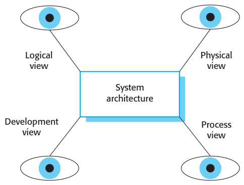
| View视图 | Shows展示内容 | Useful for用途 |
|---|---|---|
| Logical（逻辑视图） | Key abstractions as objects or classes; requirements can be related to its entities以对象或类表示的关键抽象；需求可与其实体相关联 | Tracing requirements to the design将需求追溯到设计 |
| Process（进程视图） | The runtime system as interacting processes将运行时系统表示为相互作用的进程 | Judging performance and availability评估性能和可用性 |
| Development（开发视图） | The breakdown of the software into components built by one developer or team将软件分解为由一名开发者或一个团队构建的构件 | Managers and programmers管理人员和程序员 |
| Physical（物理视图） | The hardware and the distribution of software components over processors硬件，以及软件构件在处理器上的分布 | Systems engineers planning deployment规划部署的系统工程师 |
Hofmeister and others add the conceptual view（概念视图）. It is abstract. It splits high-level requirements into detailed specifications, shows which components can be reused, and describes a product line. Example: a packing robot has a vision system, a packaging selection system, a packing system with arm and gripper controllers, and a conveyor controller. The conceptual view is almost always drawn, to explain the architecture to stakeholders. The other views are drawn only when they help.Hofmeister 等人又增加了概念视图。它是抽象的，把高层需求分解为详细的规格说明，展示哪些构件可以复用，并描述产品线。例如，一台包装机器人有视觉系统、包装选择系统、带机械臂和抓手控制器的装箱系统，以及传送带控制器。概念视图几乎总是要画的，用来向利益相关者解释体系结构。其他视图只在有帮助时才画。
Step 2: notations第 2 步：记法
An architectural model has two uses. For discussion, it gives stakeholders an uncluttered view of the key components. For documentation, it is a complete model of components, interfaces and connections.体系结构模型有两种用途。用于讨论时，它给利益相关者一个简洁、不杂乱的关键构件视图。用于文档时，它是构件、接口和连接的完整模型。
| Notation表示法 | Strengths优点 | Weaknesses缺点 |
|---|---|---|
| Informal block diagram（框图）: boxes are components, nested boxes subcomponents, arrows data or control flow非正式框图：方框表示构件，嵌套的方框表示子构件，箭头表示数据流或控制流 | Intuitive for experts and managers; quick to draw; often the only description对专家和管理者而言直观；绘制快捷；常常是唯一的描述 | Shows neither the type of relationships nor the externally visible properties of components既不表示关系的类型，也不表示构件对外可见的属性 |
| UML | Familiar; most valuable for detailed documentation and model-driven development (Chapter 4)熟悉；对于详细文档化和模型驱动开发（第 4 章）最有价值 | Meant for object-oriented systems; classes are too close to implementation; usually applied informally面向对象系统专用；类过于接近实现；通常非正式地使用 |
| Architectural description language (ADL): components, connectors and rules for well-formed architectures体系结构描述语言（ADL）：构件、连接件，以及良构体系结构的规则 | Precise, little room for misunderstanding精确，几乎没有产生误解的余地 | Hard for domain specialists; costly with unknown cost-effectiveness; not mainstream领域专家难以理解；成本高，且成本效益不明；尚未成为主流 |
Agile practitioners argue that detailed design documentation is mostly unused. Except for critical systems, draw only the views that help communication.敏捷实践者认为，详细的设计文档大多没有人用。除了关键系统之外，只画那些有助于沟通的视图。
How to draw one view, in 4 steps:如何画一个视图，分四步：
- Write down the question the drawing must answer, for example "will it be fast enough?".写下这张图必须回答的问题，例如“它的速度够快吗？”。
- Pick the view that answers it: process for speed, physical for deployment, development for work packages, logical for requirements.选择能回答这个问题的视图：问速度用进程视图，问部署用物理视图，问工作包用开发视图，问需求用逻辑视图。
- Draw one box per component of that view and name it.为该视图中的每个构件画一个方框，并给它命名。
- Draw an arrow for each connection and label it with what flows, data or control.为每条连接画一个箭头，并标明流动的内容，是数据还是控制。
Practice练习
Q1. (Match) Which of Kruchten's views would you use to (a) decide which team builds which component, (b) judge whether two processes sharing one CPU meet the response-time requirement, (c) plan on which servers the components run, (d) show which classes realize requirement R5?Q1.（匹配）对于以下各项，你会分别使用 Kruchten 的哪一种视图？（a）决定由哪个团队构建哪个构件，（b）判断共享同一 CPU 的两个进程能否满足响应时间需求，（c）规划各构件运行在哪些服务器上，（d）展示哪些类实现了需求 R5。
Answer
(a) Development view. (b) Process view (performance and availability). (c) Physical view. (d) Logical view.（a）开发视图。（b）进程视图（性能和可用性）。（c）物理视图。（d）逻辑视图。
Q2. (True or false) "Informal block diagrams show neither the type of the relationships nor the properties of the components, so architects should never use them." Justify.Q2.（判断）判断以下说法的对错并说明理由：“非正式框图既不表示关系的类型，也不表示构件的属性，因此架构师永远不应使用它们。”
Answer
False. As complete documentation they are weak, but they are intuitive, uncluttered and quick to draw, so they are the right tool for discussing the design with stakeholders and for project planning; for many projects they are the only description. A rigorous notation (ADL, UML) is worth its cost only when the architecture must be documented in detail, as for critical systems.错误。作为完整的文档，它们并不充分，但它们直观、简洁、绘制快捷，因此是与利益相关者讨论设计以及进行项目规划的合适工具；对许多项目而言，它们就是唯一的描述。只有当体系结构必须详细文档化时（如关键系统），严格的表示法（ADL、UML）才值得付出其成本。
思路：区分“讨论用”和“文档用”两种用途。
Architectural patterns: MVC and layered ★★★体系结构模式：MVC 与分层
Goal. Describe MVC and the layered pattern with idea, use, advantage and disadvantage, trace an MVC interaction, and say when each pattern fits.目标。 从思想、用途、优点和缺点来描述 MVC 和分层模式，手工演算一次 MVC 交互，并说明每种模式适用于什么情况。
An architectural pattern is a stylized description of good practice that has been tried in different systems. A description gives a name, a description with a graphical model, an example, when to use it, and its advantages and disadvantages.体系结构模式是对经过多个系统检验的良好实践的程式化描述。描述内容包括：名称、带图形模型的说明、一个例子、适用场合，以及优点和缺点。
Step 1: Model–View–Controller第 1 步：模型-视图-控制器（MVC）
In words: MVC = keep the data, the display of the data, and the user's actions in three separate parts.用文字表述：MVC = 把数据、数据的显示和用户的操作分别放在三个独立的部分中。
Example (restaurant). The kitchen is the model, because it holds the real food. The plate and the menu are the views, because they show it. The waiter is the controller, because he takes the guest's wish to the kitchen.例子（餐厅）：厨房是模型，因为它保存着真正的食物。盘子和菜单是视图，因为它们把食物展示出来。服务员是控制器，因为他把客人的需求传达给厨房。
| Aspect方面 | Model–View–Controller, MVC（模型-视图-控制器） |
|---|---|
| Idea思想 | Separates presentation and interaction from the system data. The model manages the data and its operations; the view defines and manages how the data is presented; the controller manages user interaction (key presses, mouse clicks) and passes it to the view and the model将表示与交互从系统数据中分离。模型管理数据及其操作；视图定义并管理数据的呈现方式；控制器管理用户交互（按键、鼠标点击），并将其传递给视图和模型 |
| Use when适用场景 | There are several ways to view and interact with the data, or future presentation and interaction requirements are unknown数据有多种查看和交互方式，或者未来的表示和交互需求尚不明确 |
| Advantages优点 | Data and representation change independently; the same data can be shown in different ways, and a change in one representation appears in all数据与表示可以独立变化；同一数据可以以不同方式显示，一处的更改会反映到所有表示中 |
| Disadvantages缺点 | Extra code and complexity when the data model and interactions are simple当数据模型和交互都很简单时，会带来额外的代码和复杂性 |

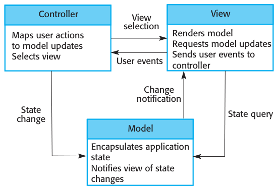
How one user action runs through MVC:一次用户操作如何在 MVC 中流转：
- The user acts in a view, for example edits a number. The event goes to the controller.用户在视图中操作，例如修改一个数字。事件被送到控制器。
- The controller validates the event and maps it to a model update.控制器检查事件，并把它映射为对模型的更新。
- The model changes its state and notifies its views.模型改变自身状态，并通知它的视图。
- Each view queries the model and draws itself again. The controller may select another view.每个视图向模型查询数据，并重新绘制自己。控制器也可以选择另一个视图。
In a web application the browser sends the events. The controller handles HTTP requests, logic and validation. The view generates the dynamic pages and forms. The model holds the business logic and the database.在 Web 应用中，事件由浏览器发出。控制器处理 HTTP 请求、逻辑和验证。视图生成动态页面和表单。模型负责业务逻辑和数据库。
Step 2: the layered architecture第 2 步：分层体系结构
In words: layered = stack the functions in layers, and let every layer use only the layer directly beneath it.用文字表述：分层 = 把功能堆叠成若干层，每一层只使用紧邻其下方的那一层。
Example: a company order. The customer talks to the front desk. The front desk talks to the manager. The manager talks to the warehouse. Nobody skips a level.例如，公司里的一笔订单：客户找前台，前台找经理，经理找仓库。谁都不越级。
| Aspect方面 | Layered architecture（分层体系结构） |
|---|---|
| Idea思想 | Functionality is organized into layers; each layer relies only on the services of the layer immediately beneath it, so the lowest layers hold core services used throughout the system功能被组织为若干层；每一层只依赖其紧邻下层提供的服务，因此最底层包含整个系统都会用到的核心服务 |
| Use when适用场景 | New facilities are built on top of existing systems; development is spread across teams that each own a layer; multi-level security is required新功能建立在现有系统之上；开发工作分散到各个团队，每个团队负责一层；需要多级安全性 |
| Advantages优点 | A whole layer can be replaced if its interface is kept; finished layers can be delivered incrementally; an interface change affects only the adjacent layer; machine dependencies are localized, so porting rewrites only the machine-dependent layers; redundant facilities such as authentication in each layer raise dependability只要接口保持不变，就可以整体替换某一层；已完成的层可以增量交付；接口变更只影响相邻层；与机器相关的依赖被局部化，因此移植时只需重写与机器相关的层；各层中冗余的设施（如身份验证）可提高可信性 |
| Disadvantages缺点 | Clean separation is hard: a high-level layer may have to call lower layers directly; a request is interpreted at several levels, which costs performance清晰的分离很难实现：高层可能不得不直接调用更低层；请求要在多个层次上被解释，这会损失性能 |
A typical system has four layers, from the top:一个典型的系统从上到下有四层：
- The user interface.用户界面。
- User interface management, with authentication and authorization.用户界面管理，包括认证和授权。
- Core business logic and utilities.核心业务逻辑和通用工具。
- System support, which means the operating system and the database.系统支持，即操作系统和数据库。
The number of layers is arbitrary.层数是任意的。
Practice练习
Q1. (Trace) A dashboard shows the same sales data as a table and as a bar chart. The user edits a number in the table. Trace the MVC interaction and say what changes when a pie chart is added.Q1.（手工演算）一个仪表板以表格和柱状图两种形式显示相同的销售数据。用户在表格中修改了一个数字。请追踪这一 MVC 交互过程，并说明添加饼图时有哪些变化。
Answer
The table view sends the user event to the controller. The controller validates it and maps it to a model update. The model changes its data and sends a change notification to its views. The table and the bar chart both query the model and re-render. To add a pie chart, add a new view that registers with the model; the model and the existing views stay unchanged, because MVC separates the data from its presentation.表格视图将用户事件发送给控制器。控制器对其进行验证，并将其映射为一次模型更新。模型更改其数据，并向其视图发送变更通知。表格和柱状图都查询模型并重新渲染。要添加饼图，只需增加一个在模型中注册的新视图；模型和现有视图均保持不变，因为 MVC 将数据与其表示分离。
Q2. (Explain) Why is a layered architecture recommended when security is critical, and what does it cost?Q2.（解释）当安全性至关重要时，为什么推荐采用分层体系结构？它要付出什么代价？
Answer
The most critical assets sit in the innermost layers and a high level of security validation is applied there, so an attacker must pass several layers; redundant facilities such as authentication can be provided in each layer. The cost is performance, because each request is interpreted at several levels, and in practice a high-level layer may call a lower one directly, which weakens the separation.最关键的资产位于最内层，并在该层施加高等级的安全校验，因此攻击者必须穿过多个层次；身份验证等冗余设施可以在每一层中提供。其代价是性能，因为每个请求都要在多个层次上被解释；而且在实践中，高层可能直接调用低层，这会削弱分离性。
思路：优点和代价要成对回答（安全 vs 性能）。
Architectural patterns: repository, client–server, pipe and filter ★★★体系结构模式：仓库、客户端-服务器、管道-过滤器
Goal. Describe the three patterns with idea, use, advantage and disadvantage, compare them, and choose and justify a pattern for a scenario.目标。 从思想、用途、优点和缺点描述这三种模式，比较它们，并为一个场景选择并论证一种模式。
Step 1: repository第 1 步：仓库
In words: repository = all components share one central store of data and never talk to each other directly.用文字表述：仓库 = 所有构件共享一个中心数据存储，彼此从不直接通信。
Example: the doctors, the nurses and the pharmacy of a clinic all work from one patient file room. They never pass notes to each other. A change by one is visible to all.例如，诊所的医生、护士和药房都使用同一个病历室。他们从不互相传递便条。其中一方的改动，所有人都能看到。
| Aspect方面 | Repository（仓库） |
|---|---|
| Idea思想 | All shared data is held in a central repository accessible to every component; components do not interact directly, only through the repository所有共享数据都保存在中央仓库中，每个构件都可以访问；构件之间不直接交互，只通过仓库交互 |
| Use when适用场景 | Large volumes of information are generated and stored for a long time; data-driven systems in which adding data triggers an action or tool大量信息被长期生成和存储；数据驱动的系统，即添加数据会触发某个动作或工具 |
| Advantages优点 | Components are independent and need not know each other; a change by one is visible to all; data is managed consistently (for example backups at one time)构件相互独立，无需彼此了解；一个构件的更改对所有构件可见；数据得到一致的管理（例如可以在同一时间进行备份） |
| Disadvantages缺点 | The repository is a single point of failure; routing all communication through it can be inefficient; distributing it is hard because several copies must be kept consistent; all components must accept one agreed data model, a compromise that may exclude new components仓库是单点故障；所有通信都经由仓库转发，效率可能较低；分布式部署很困难，因为需要保持多个副本一致；所有构件都必须接受一个约定的数据模型，这种折中可能会排斥新的构件 |
In an interactive development environment (IDE) the tools talk only through a project repository.在集成开发环境（IDE）中，各个工具只通过项目仓库进行通信。

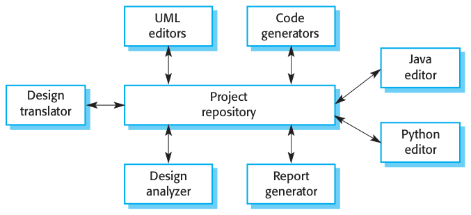
This repository is passive, because the components control the work. In the blackboard（黑板模型）variant the repository triggers a component when particular data becomes available. It suits unstructured data, because the tool to use can be chosen only after the data are analyzed.这种仓库是被动的，因为工作由构件控制。在黑板模型变体中，当特定数据可用时，仓库会触发相应的构件。它适合非结构化数据，因为只有分析完数据之后，才能选择使用哪个工具。
Step 2: client–server第 2 步：客户端-服务器
In words: client–server = a set of services, each provided by a server, and many clients that ask for them over a network.用文字表述：客户端-服务器 = 一组服务，每项服务由一个服务器提供，许多客户端通过网络来请求这些服务。
Example: office staff send print jobs to one print server. Clients must know the server. The server need not know the clients. A request–reply protocol（请求-应答协议）such as HTTP means the client sends a request and waits for the reply.例如，办公室员工把打印任务发送到一台打印服务器。客户端必须知道服务器，服务器不必知道客户端。HTTP 这样的请求-应答协议意味着客户端发出请求，然后等待应答。
| Aspect方面 | Client–server（客户-服务器） |
|---|---|
| Idea思想 | The system is a set of services, each delivered by a separate server; clients use them over a network with a request–reply protocol such as HTTP: send a request and wait for the reply系统由一组服务组成，每个服务由一台单独的服务器提供；客户端通过网络使用这些服务，采用诸如 HTTP 之类的请求-应答协议：发送请求并等待应答 |
| Use when适用场景 | Data in a shared database must be accessed from many locations; the load is variable, since servers can be replicated共享数据库中的数据必须能从多个地点访问；负载是可变的，因为服务器可以复制 |
| Advantages优点 | Servers can be distributed over a network; general functionality such as printing is shared by all clients; servers can be added or upgraded without affecting the rest服务器可以分布在网络中；打印等通用功能由所有客户端共享；可以在不影响其他部分的情况下增加或升级服务器 |
| Disadvantages缺点 | Each server is a single point of failure, open to denial-of-service attacks; performance is unpredictable because it depends on the network; management problems if servers belong to different organizations每台服务器都是单点故障，且易受拒绝服务攻击；性能不可预测，因为它取决于网络；如果服务器属于不同的组织，则会产生管理问题 |
The servers can be print, file or compile servers, and several can share one computer. Clients run in many instances on different computers. The model can also run on one computer.服务器可以是打印服务器、文件服务器或编译服务器，多个服务器可以共用一台计算机。客户端可以在不同计算机上运行多个实例。这种模型也可以在一台计算机上运行。

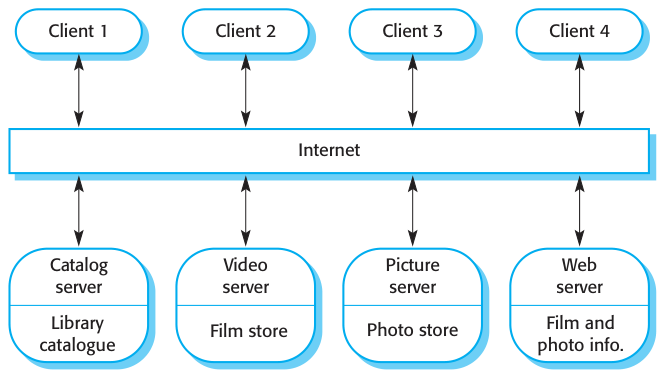
The difference to the repository: the repository describes how components share data, which is static structure. Client–server describes the runtime organization, which processes give services to which. In a repository components never call each other. In client–server, clients call servers directly.与仓库的区别：仓库描述的是构件如何共享数据，属于静态结构。客户端-服务器描述的是运行时的组织方式，即哪些进程向哪些进程提供服务。在仓库中，构件从不互相调用；在客户端-服务器中，客户端直接调用服务器。
Step 3: pipe and filter第 3 步：管道-过滤器
In words: pipe and filter = data flows through a chain of small transformations, and each transformation does one job.用文字表述：管道-过滤器 = 数据依次流经一系列小的变换，每个变换只做一件事。
Example: a car wash. The car passes through soap, rinse and dry. Each station is a filter（过滤器）and the belt between stations is a pipe（管道）. In the Unix shell, cat words.txt | sort passes the text from one program to the next.例如，洗车房：汽车依次经过打泡沫、冲洗和吹干。每个工位是一个过滤器，工位之间的传送带是管道。在 Unix 命令行中，cat words.txt | sort 把文本从一个程序传给下一个程序。
| Aspect方面 | Pipe and filter（管道-过滤器） |
|---|---|
| Idea思想 | Each processing component (filter) is a discrete transformation; data flows through pipes from one filter to the next. Filters may run sequentially or in parallel, item by item or in batches每个处理构件（过滤器）都是一个离散的变换；数据通过管道从一个过滤器流向下一个过滤器。过滤器可以顺序运行或并行运行，可以逐项处理或成批处理 |
| Use when适用场景 | Data-processing applications, batch or transaction-based, in which inputs are processed in separate stages to produce related outputs; embedded systems organized as process pipelines数据处理应用，包括批处理和基于事务的应用，其中输入经过若干独立阶段处理以产生相关输出；组织为处理流水线的嵌入式系统 |
| Advantages优点 | Easy to understand; transformations can be reused; the workflow matches many business processes; evolution by adding transformations is easy; runs as a sequential or a concurrent system易于理解；变换可以复用；工作流与许多业务流程相匹配；通过增加变换进行演化很容易；既可以作为顺序系统运行，也可以作为并发系统运行 |
| Disadvantages缺点 | An agreed data format is needed; each filter must parse its input and unparse its output (overhead); transformations with incompatible data structures cannot be reused; unsuited to interactive systems需要约定统一的数据格式；每个过滤器都必须解析其输入、并将其输出重新编码（带来开销）；数据结构不兼容的变换无法复用；不适合交互式系统 |
The name comes from Unix. With sequential transformations that process data in batches, the pattern is called batch sequential（批处理顺序）. It is common in billing systems. A graphical interface is hard to model as a stream, because mouse clicks drive its control.这个名字来自 Unix。如果变换按顺序成批处理数据，这种模式就称为批处理顺序模式，常见于计费系统。图形界面很难用数据流来建模，因为它的控制是由鼠标点击驱动的。

Step 4: combining第 4 步：组合使用
Real systems combine patterns. A web information system is client–server at run time, layered in structure and uses MVC for the interaction. A compiler combines pipe and filter with a repository (Section 5.5).实际系统往往组合使用多种模式。一个 Web 信息系统在运行时是客户端-服务器结构，在结构上是分层的，并在交互中使用 MVC。编译器把管道-过滤器与仓库结合在一起（见第 5.5 节）。
Practice练习
Q1. (Compare) Compare the repository and client–server patterns: what each describes, how components interact, main weakness, typical use.Q1.（比较）比较仓库模式与客户端-服务器模式：各自描述什么、构件如何交互、主要弱点以及典型用途。
Answer
| Repository仓库 | Client–server客户端-服务器 | |
|---|---|---|
| Describes描述内容 | Static structure: how components share data静态结构：构件如何共享数据 | Runtime organization of a distributed system分布式系统的运行时组织 |
| Interaction交互 | Only through the central repository仅通过中央仓库进行交互 | Clients call servers with request–reply客户端以请求-应答方式调用服务器 |
| Main weakness主要弱点 | Single point of failure; one agreed data model单点故障；需要统一约定的数据模型 | Each server is a single point of failure; performance depends on the network每台服务器都是单点故障；性能依赖于网络 |
| Typical use典型用途 | IDE, CAD, command and controlIDE、CAD、指挥控制 | Film library, web services影片库、Web 服务 |
Q2. (Trace) The file words.txt holds the lines cat, dog, cat, bird, cat, dog. Give the output after each stage of cat words.txt | sort | uniq -c | sort -nr | head -2 and say why this is a pipe and filter system.Q2.（手工演算）文件 words.txt 包含以下各行：cat、dog、cat、bird、cat、dog。请给出 cat words.txt | sort | uniq -c | sort -nr | head -2 每个阶段之后的输出，并说明为什么这是一个管道-过滤器系统。
Answer
sort: bird, cat, cat, cat, dog, dog. uniq -c: 1 bird, 3 cat, 2 dog. sort -nr: 3 cat, 2 dog, 1 bird. head -2: 3 cat, 2 dog. Each command is a discrete filter that transforms the text stream it reads, the pipes carry the stream from one filter to the next, and the filters may run concurrently. No interactive control is needed, which is the case the pattern suits.sort：bird、cat、cat、cat、dog、dog。uniq -c：1 bird、3 cat、2 dog。sort -nr：3 cat、2 dog、1 bird。head -2：3 cat、2 dog。每条命令都是一个离散的过滤器，对其读取的文本流进行变换；管道将数据流从一个过滤器传递到下一个过滤器，过滤器可以并发运行。该系统无需交互式控制，这正是此模式适用的情形。
Q3. (Design) A system lets drones herd cattle autonomously, with human operators able to take remote control. Explain how several architectural patterns fit together in it.Q3.（设计）一个系统使无人机能够自主驱赶牛群，同时允许人工操作员进行远程控制。请解释若干体系结构模式如何在其中协同工作。
Answer
No single pattern covers every concern; each fits one part.没有任何一种模式能涵盖所有关注点；每种模式各自适用于其中的一个部分。
- Pipe and filter inside a drone: camera frames flow through filters that detect animals, track them, decide the herding move and issue flight commands.无人机内部的管道-过滤器：摄像头画面依次流经检测动物、跟踪动物、决定驱赶动作并发出飞行指令的过滤器。
- Layered drone software: hardware drivers, flight control, herding behaviour, communication; the hardware layer can change without touching the behaviour.无人机软件采用分层结构：硬件驱动、飞行控制、驱赶行为、通信；硬件层可以改变，而不影响驱赶行为。
- Client–server: a ground station offers telemetry, map and command services to the drones and the operator consoles over a wireless network.客户端-服务器：地面站通过无线网络向无人机和操作员控制台提供遥测、地图和指令服务。
- MVC in the operator console: the model is the herd and fleet state, the views are map and video, the controller turns operator input into commands.操作员控制台中的 MVC：模型是牛群和机群状态，视图是地图和视频，控制器将操作员的输入转换为指令。
- Repository for the shared farm map and mission data.仓库用于存放共享的农场地图和任务数据。
The ground station is a single point of failure, so each drone keeps local control to stay safe when the link fails.地面站是单点故障，因此每架无人机都保留本地控制，以便在通信链路中断时保持安全。
Application architectures ★★应用体系结构
Goal. Say what a generic application architecture is for, describe a transaction processing system and a multi-tier information system, size the tiers, and name the components of a compiler.目标。 说明通用应用体系结构的用途，描述事务处理系统和多层信息系统，估算各层的规模，并说出编译器的组成部分。
Step 1: generic application architectures第 1 步：通用应用体系结构
In words: an application architecture = the standard design of one class of systems, such as banking systems or compilers, which you can reuse.用文字表述：应用体系结构 = 某一类系统（例如银行系统或编译器）的标准设计，可以拿来复用。
Businesses in one sector need similar systems, so a generic application architecture is reused. It serves as a starting point, a design checklist, a way to organize the team's work, a test for component reuse and a vocabulary. A reference architecture（参考体系结构）holds everything that might appear in the applications of a domain, and is used to evaluate and compare designs.同一行业的企业需要类似的系统，所以通用应用体系结构会被反复使用。它可以作为起点、设计检查表、组织团队工作的方式、检验构件复用的依据，也是一套共同的词汇。参考体系结构包含某个领域的应用中可能出现的所有内容，用来评估和比较设计。
Step 2: transaction processing systems第 2 步：事务处理系统
In words: a transaction = a group of steps that either all happen or none happen.用文字表述：事务 = 一组步骤，要么全部发生，要么全部不发生。
Example: a bank transfer. Taking money from account A and adding it to account B must both happen. If only the first happens, money vanishes.例如，银行转账：从账户 A 扣款和向账户 B 加款必须同时完成。如果只完成了第一步，钱就凭空消失了。
A request enters through I/O processing. Application-specific logic processes it. A transaction is created and passed to the transaction manager, usually inside the database management system (DBMS). The manager makes sure that the transaction completes properly and then signals the application.请求首先经过 I/O 处理，然后由应用特定逻辑处理。系统创建一个事务，并把它交给事务管理器，事务管理器通常位于数据库管理系统（DBMS）内部。管理器确保事务正确完成，然后通知应用。
Step 3: information systems第 3 步：信息系统
An information system（信息系统）gives controlled access to a large base of information, such as a library catalogue or patient records. The generic model has four layers:信息系统对大量信息提供受控访问，例如图书目录或患者记录。通用模型有四层：
The four layers are: the user interface; user communications, with authentication and authorization; information retrieval and modification, which is the application logic; and transaction management with the database.这四层是：用户界面；用户通信，包括认证和授权；信息检索与修改，即应用逻辑；以及与数据库相关的事务管理。

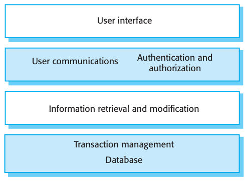
On the web these systems are multi-tier（多层）client–server systems with three kinds of server. The web server handles all user communication. The application server implements the application logic and the storage and retrieval requests. The database server moves data to and from the database and manages transactions.在 Web 上，这类系统是多层客户端-服务器系统，包含三种服务器。Web 服务器处理所有用户通信。应用服务器实现应用逻辑，以及存取数据的请求。数据库服务器负责在数据库与外界之间传送数据，并管理事务。
To size a tier, divide the load by the capacity of one server and round up. The slowest tier limits the system.要估算某一层的规模，用负载除以单台服务器的容量，然后向上取整。最慢的那一层限制整个系统。
Step 4: language processing systems第 4 步：语言处理系统
A language processing system（语言处理系统）translates one language into another representation and may also run the result. Examples are compilers and natural-language translators. It has two parts. The translator checks the syntax and the meaning and generates instructions for an abstract machine（抽象机）. The interpreter fetches and executes those instructions.语言处理系统把一种语言翻译成另一种表示形式，并且可能还会运行结果。例如编译器和自然语言翻译器。它有两个部分：翻译器检查语法和语义，并为抽象机生成指令；解释器取出这些指令并执行。

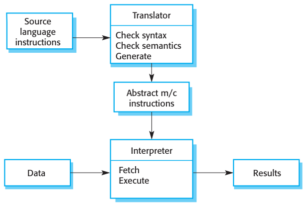
A compiler has six components:编译器有六个组成部分：
- Lexical analyzer（词法分析器）: converts input tokens into an internal form.词法分析器：将输入的词法单元转换为内部形式。
- Symbol table（符号表）: holds information about the names used in the text.符号表：保存文本中所用名字的信息。
- Syntax analyzer（语法分析器）: checks the syntax against the grammar and builds the syntax tree.语法分析器：依据文法检查语法，并构造语法树。
- Syntax tree（语法树）: the internal structure that represents the program.语法树：表示程序的内部结构。
- Semantic analyzer（语义分析器）: uses the tree and the symbol table to check meaning.语义分析器：利用语法树和符号表检查语义。
- Code generator（代码生成器）: walks the tree and generates abstract machine code.代码生成器：遍历语法树，生成抽象机代码。
In the pipe and filter form the phases run in sequence and communicate through the shared symbol table and syntax tree. This suits batch compilation. In the repository form the symbol table and the tree form a central repository that all tools use. It suits an environment with structured editors and debuggers, because a change in one tool must show at once in the others.在管道-过滤器形式中，各阶段依次运行，并通过共享的符号表和语法树进行通信，这适合批量编译。在仓库形式中，符号表和语法树构成一个所有工具都使用的中心仓库。它适合带有结构化编辑器和调试器的环境，因为一个工具中的改动必须立即在其他工具中体现出来。

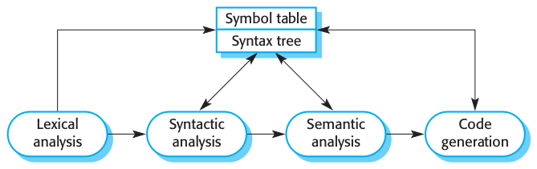
Practice练习
Q1. (Calculation) A web shop must handle 9,000 transactions per minute. One web server handles 2,000 per minute, one application server 750 and one database server 5,000. (a) How many servers does each tier need? (b) What capacity do 3 web, 8 application and 2 database servers give, and which tier limits it?Q1.（计算）某网上商店必须处理每分钟 9,000 个事务。一台 Web 服务器每分钟可处理 2,000 个，一台应用服务器每分钟可处理 750 个，一台数据库服务器每分钟可处理 5,000 个。（a）每一层各需要多少台服务器？（b）3 台 Web 服务器、8 台应用服务器和 2 台数据库服务器能提供多大容量？由哪一层限制了容量？
Answer
(a) Web \(\lceil 9000/2000\rceil=\lceil4.5\rceil=5\); application \(\lceil9000/750\rceil=12\); database \(\lceil9000/5000\rceil=\lceil1.8\rceil=2\); 19 servers in all.（a）Web 层 \(\lceil 9000/2000\rceil=\lceil4.5\rceil=5\) 台；应用层 \(\lceil9000/750\rceil=12\) 台；数据库层 \(\lceil9000/5000\rceil=\lceil1.8\rceil=2\) 台，共 19 台服务器。
(b) The tier capacities are \(3\times2000=6000\), \(8\times750=6000\) and \(2\times5000=10000\) per minute, so the system handles \(\min=6000\) per minute. The web and application tiers limit it equally; adding database servers would not help.（b）各层容量分别为每分钟 \(3\times2000=6000\)、\(8\times750=6000\) 和 \(2\times5000=10000\)，因此系统每分钟可处理 \(\min=6000\)。Web 层与应用层同样限制了系统容量；增加数据库服务器无济于事。
Q2. (Trace) Show the lexical, syntax and semantic analysis, the generated code and the execution for z = a * b + 4; with a = 3 and b = 5.Q2.（手工演算）对于 z = a * b + 4;，在 a = 3 和 b = 5 的条件下，给出词法分析、语法分析与语义分析的过程、生成的代码以及执行过程。
Answer
Tokens (8): z, =, a, *, b, +, 4, ;. Symbol table: z, a, b are int. Syntax tree: assign(z, add(mul(a, b), 4)). Semantic check: operands and target are int, so the statement is valid. Code: LOAD a, MUL b, ADD 4, STORE z. Execution: the accumulator holds 3, then 15, then 19, so z = 19.词法单元（8 个）：z、=、a、*、b、+、4、;。符号表：z、a、b 均为 int 类型。语法树：assign(z, add(mul(a, b), 4))。语义检查：操作数和目标均为 int 类型，因此该语句合法。代码：LOAD a、MUL b、ADD 4、STORE z。执行：累加器依次为 3、15、19，因此 z = 19。
Terms to recognise ★需要认识的术语
| Term术语 | What to know要知道什么 |
|---|---|
| Reference architecture参考体系结构 | Contains everything that might appear in the applications of a domain. Used to evaluate and compare designs.包含某个领域的应用中可能出现的所有内容。用于评估和比较设计。 |
| Architectural description language (ADL)体系结构描述语言（ADL） | Components, connectors and rules for well-formed architectures. Precise but costly.构件、连接件，以及良构体系结构的规则。精确，但代价高。 |
| Blackboard黑板模型 | A repository that triggers components when particular data become available.当特定数据可用时触发构件的仓库。 |
| Batch sequential批处理顺序 | Pipe and filter where each filter processes a whole batch. Common in billing.管道-过滤器的一种，每个过滤器处理整批数据。常见于计费。 |
| ACID | Atomicity, consistency, isolation, durability. The transaction manager provides them.原子性、一致性、隔离性、持久性。由事务管理器提供。 |
| Commit and rollback提交与回滚 | Commit makes the changes permanent. Rollback undoes all of them.提交使改动永久生效。回滚撤销全部改动。 |
| Shopping cart购物车 | Items are placed in separate transactions and paid in one transaction.商品放入购物车时各自是独立的事务，付款则是一个事务。 |
| Syntax-directed editor语法制导编辑器 | An editor that checks syntax as the user types, enabled by a repository form of the compiler.一种在用户输入时检查语法的编辑器，它由编译器的仓库形式支持。 |
| Product line产品线 | One core architecture reused with variants (Chapter 9).一个核心体系结构，通过变体复用（第 9 章）。 |
Exam-style questions考试题型练习
Q1. (Concept, 12 marks)Q1.（概念，12 分）
- (a) Define software architecture and explain why architectural design is the critical link between requirements engineering and design. (2 marks)（a）定义软件体系结构，并解释为什么体系结构设计是需求工程与设计之间的关键环节。（2 分）
- (b) Give three advantages of designing and documenting the architecture explicitly. (3 marks)（b）给出明确地设计和文档化体系结构的三个好处。（3 分）
- (c) State the architectural guideline for each of performance, security, safety, availability and maintainability. (5 marks)（c）分别给出性能、安全性、功能安全、可用性和可维护性的体系结构指导原则。（5 分）
- (d) Explain why performance and maintainability conflict and how the conflict can be handled. (2 marks)（d）解释为什么性能与可维护性相互冲突，以及如何处理这一冲突。（2 分）
Answer
(a) Software architecture is the organization of a system as a set of communicating components and the relationships between them. Architectural design identifies the main structural components that realize the requirements, and the non-functional properties the requirements demand depend on it, so it links requirements engineering to detailed design.（a）软件体系结构是将系统组织为一组相互通信的构件及其之间关系的方式。体系结构设计识别实现需求的主要结构构件；需求所要求的非功能特性取决于它，因此它将需求工程与详细设计联系起来。
(b) Stakeholder communication (a high-level view for discussion); system analysis (early analysis of whether performance, reliability and maintainability can be met); large-scale reuse (similar systems and product lines share an architecture).（b）利益相关者沟通（用于讨论的高层视图）；系统分析（及早分析性能、可靠性和可维护性能否达到要求）；大规模复用（相似系统和产品线共享体系结构）。
(c) Performance: a few large components on one computer, replicated if needed. Security: layers, with the critical assets in the innermost layer and strong validation there. Safety: safety-related operations co-located in one or a few components. Availability: redundant components, so parts can be replaced or updated without stopping the system. Maintainability: fine-grain, self-contained components, data producers separated from consumers, no shared data structures.（c）性能：一台计算机上的少量大构件，必要时进行复制。安全性：分层结构，关键资产位于最内层，并在该层进行严格校验。功能安全：将与安全相关的操作集中在一个或少数几个构件中。可用性：使用冗余构件，使各部分可以在不停止系统的情况下被替换或更新。可维护性：细粒度、自包含的构件，数据生产者与消费者分离，不共享数据结构。
(d) Large components reduce communication and help performance, whereas small fine-grain components keep changes local and help maintainability. Compromise by using different patterns for different parts: coarse-grained co-located components for the performance-critical core and fine-grained separated components elsewhere.（d）大构件减少通信，有利于性能；而小的细粒度构件使变更局限在局部，有利于可维护性。折中方法是在系统的不同部分采用不同的模式：对性能关键的核心部分采用粗粒度、共置的构件，其他部分则采用细粒度、相互分离的构件。
思路：(c) 每个需求写“指南 + 理由”，(d) 说清冲突并给出折中。
Q2. (Calculation, 12 marks) A three-tier web system has web, application and database tiers with availabilities 0.99, 0.98 and 0.97. Failures are independent and all three tiers are needed. Use 1 year = 8,760 h.Q2.（计算，12 分）一个三层 Web 系统包含 Web 层、应用层和数据库层，其可用性分别为 0.99、0.98 和 0.97。各故障相互独立，且三层都是必需的。按 1 年 = 8,760 h 计算。
- (a) Find the system availability and the expected downtime per year. (4 marks)（a）求系统可用性以及每年的预期停机时间。（4 分）
- (b) Each tier is duplicated with an identical independent replica, and one working replica per tier suffices. Find the new availability and downtime. (4 marks)（b）每一层都复制一个完全相同且相互独立的副本，且每层只需一个正常工作的副本即可满足要求。求新的可用性和停机时间。（4 分）
- (c) The budget allows duplicating one tier only. Which tier, and what availability results? (3 marks)（c）预算只允许复制一层。应复制哪一层？由此得到的可用性是多少？（3 分）
- (d) Which weakness of the repository and client–server patterns does this exercise illustrate? (1 mark)（d）本题说明了仓库模式和客户端-服务器模式的哪一种弱点？（1 分）
Answer
(a) The tiers are in series: \(A=0.99\times0.98\times0.97=0.9411\). Downtime \(=(1-0.941094)\times8760\approx516\) h, about 21.5 days.（a）各层串联：\(A=0.99\times0.98\times0.97=0.9411\)。每年停机时间 \(=(1-0.941094)\times8760\approx516\) h，约 21.5 天。
(b) With a replica each tier has \(1-0.01^2=0.9999\), \(1-0.02^2=0.9996\) and \(1-0.03^2=0.9991\). Then \(A=0.9999\times0.9996\times0.9991=0.9986\) and downtime \(\approx0.00140\times8760\approx12.3\) h.（b）加入一个副本后，各层的可用性分别为 \(1-0.01^2=0.9999\)、\(1-0.02^2=0.9996\) 和 \(1-0.03^2=0.9991\)。于是系统可用性为 \(A=0.9999\times0.9996\times0.9991=0.9986\)，停机时间为 \(\approx0.00140\times8760\approx12.3\) h。
(c) Duplicate the database tier: it has the lowest availability, so it removes the largest loss. \(A=0.99\times0.98\times0.9991=0.9693\). Duplicating the application tier gives \(0.99\times0.9996\times0.97=0.9599\), and the web tier \(0.9999\times0.98\times0.97=0.9505\).（c）复制数据库层：它的可用性最低，因此可以挽回最大的损失。\(A=0.99\times0.98\times0.9991=0.9693\)。复制应用层得到 \(0.99\times0.9996\times0.97=0.9599\)，复制 Web 层得到 \(0.9999\times0.98\times0.97=0.9505\)。
(d) The single point of failure: a non-replicated repository or server limits the availability of the whole system.（d）单点故障：未经复制的仓库或服务器会限制整个系统的可用性。
易错：串联要相乘；冗余是 \(1-(1-a)^n\)，不是把副本的可用性相乘。
Q3. (Design, 15 marks) An online music store sells and distributes music over the Internet: users browse a catalogue, buy tracks, download or stream them, and keep a personal library on several devices.Q3.（设计，15 分）一家网上音乐商店通过互联网销售和分发音乐：用户浏览目录、购买曲目、下载或流式播放，并在多台设备上保存个人音乐库。
- (a) Name the three most important non-functional requirements and justify them. (3 marks)（a）列出三项最重要的非功能需求，并给出理由。（3 分）
- (b) Propose an architecture, naming the architectural patterns it is based on and the main components. (8 marks)（b）提出一个体系结构，指出其所基于的体系结构模式以及主要构件。（8 分）
- (c) Give two weaknesses of your design and a mitigation for each. (4 marks)（c）给出你的设计的两个弱点，并为每个弱点给出缓解措施。（4 分）
Answer
(a) Availability: the store must be reachable at any time, because downtime is lost sales. Security: accounts, payments and licensed content must be protected. Performance under variable load: many users download or stream at once.（a）可用性：商店必须随时可以访问，因为停机意味着销售损失。安全性：账户、支付和许可内容必须受到保护。负载可变时的性能：许多用户同时下载或流式播放。
(b) At run time the system is client–server: clients (browser or player app) use catalogue and search, account, payment and media-delivery servers. The media server is separate because large files and streaming have different requirements, as the video server does in the film library; servers are replicated for variable load and availability. The back end is layered: browser interface; user communications with login and account checks; business logic (browsing, shopping cart, purchase, licensing); database and file store, with payment and licence data in the inner layers. The client interface uses MVC (model: library and playlists; views: store and library; controller: user actions). New content passes through a pipe and filter ingest chain (encode, add metadata, apply content protection, store). A purchase is an atomic database transaction (reserve, charge, grant licence), and a repository of catalogue and metadata is shared by the search and recommendation tools.（b）运行时，系统采用客户端-服务器结构：客户端（浏览器或播放器应用）使用目录和搜索服务器、账户服务器、支付服务器以及媒体交付服务器。媒体服务器之所以单独设置，是因为大文件和流媒体的需求不同，这与影片库中的视频服务器相同；服务器通过复制来应对可变负载并提高可用性。后端采用分层结构：浏览器界面；带有登录和账户检查的用户通信；业务逻辑（浏览、购物车、购买、许可管理）；数据库和文件存储，其中支付和许可数据位于内层。客户端界面采用MVC（模型：音乐库与播放列表；视图：商店和音乐库；控制器：用户操作）。新内容经由管道-过滤器入库链处理（编码、添加元数据、施加内容保护、存储）。购买是一个原子的数据库事务（预留、扣款、授予许可），而目录与元数据的仓库则由搜索和推荐工具共享。
(c) Each server and the shared repository is a single point of failure: replicate them with failover. Layers add processing to every request: keep the performance-critical streaming path short and serve it from the media server close to the user.（c）每台服务器和共享仓库都是单点故障：应通过复制并配合故障转移加以应对。分层会为每个请求增加处理开销：应保持对性能至关重要的流式传输路径简短，并由靠近用户的媒体服务器提供服务。
思路：先列非功能需求，再按“运行时 / 结构 / 界面 / 数据处理”逐个对应模式，最后给缺点与对策。
Q4. (Application architectures, 14 marks)Q4.（应用体系结构，14 分）
- (a) AED 200 is transferred from account A (balance 1,000) to account B (balance 450) by debiting A and then crediting B. The server crashes between the two steps. Give the balances (i) if the two updates are separate and (ii) if they form one atomic transaction, and explain the role of the transaction manager. (4 marks)（a）将 AED 200 从账户 A（余额 1,000）转入账户 B（余额 450），即先从 A 扣款，再向 B 入账。两步之间服务器崩溃。请给出（i）两次更新分别进行、（ii）两次更新构成一个原子事务两种情况下的余额，并解释事务管理器的作用。（4 分）
- (b) Name the three servers of a multi-tier web information system and state what each does. (3 marks)（b）写出多层 Web 信息系统的三类服务器，并说明各自的作用。（3 分）
- (c) Design the architecture of a system that accepts natural-language commands and translates them into SQL. Name the components and the data flow, and choose between pipe and filter and repository, with a reason. (7 marks)（c）设计一个能够接受自然语言命令并将其翻译为 SQL 的系统的体系结构。写出各构件及数据流，并在管道-过滤器与仓库之间进行选择，说明理由。（7 分）
Answer
(a) (i) A = 800 and B = 450: AED 200 has vanished (the total is 1,250 instead of 1,450). (ii) The transaction never committed, so the transaction manager, which is usually part of the DBMS, rolls it back: A = 1,000 and B = 450. Had it completed, A = 800 and B = 650. The manager makes the operations an atomic unit: all changes become permanent together or none do.（a）（i）A = 800，B = 450：AED 200 不翼而飞（总额为 1,250，而不是 1,450）。（ii）事务从未提交，因此事务管理器（通常是 DBMS 的一部分）将其回滚：A = 1,000，B = 450。若事务已完成，则 A = 800，B = 650。事务管理器使这些操作构成一个原子单元：所有更改要么一起永久生效，要么全部不生效。
(b) The web server handles all user communication (the interface runs in a browser). The application server implements the application-specific logic and the storage and retrieval requests. The database server moves data to and from the database and manages transactions. Servers can be added at each tier to raise throughput.（b）Web 服务器处理所有用户通信（界面运行于浏览器中）。应用服务器实现特定于应用的逻辑，以及存储和检索请求。数据库服务器负责数据的存取，并管理事务。可以在每一层增加服务器，以提高吞吐量。
(c) Use the generic language processing model, a translator plus an abstract machine. A lexical analyzer splits the command into words; a dictionary and symbol table maps words such as "patients" and "older" to tables, columns and operators and holds the database schema; a syntax analyzer applies a grammar of the supported command forms and builds the syntax tree; a semantic analyzer checks that tables, columns and types exist in the schema and resolves ambiguity; a query generator walks the tree and emits SQL; the interpreter is the DBMS, which executes the SQL and returns the results. Example: "list patients older than 60" gives select(patients, age > 60) and then SELECT * FROM patients WHERE age > 60;. Commands are processed one at a time without interaction, so a pipe and filter chain over the shared dictionary and schema is enough; if the system must ask the user to clarify ambiguous phrases or suggest completions while typing, organize it around a repository holding the syntax tree and dictionary, as in an integrated language environment.（c）采用通用的语言处理模型，即翻译器加抽象机。词法分析器将命令切分为单词；词典和符号表将“patients”“older”等单词映射为表、列和运算符，并保存数据库模式；语法分析器应用所支持命令形式的文法，并构造语法树；语义分析器检查表、列和类型在模式中是否存在，并消解歧义；查询生成器遍历语法树，生成 SQL；解释器即 DBMS，它执行 SQL 并返回结果。示例：“list patients older than 60”得到 select(patients, age > 60)，然后得到 SELECT * FROM patients WHERE age > 60;。命令逐条处理、无需交互，因此基于共享词典和模式的管道-过滤器链就足够了；如果系统必须在用户输入时请其澄清有歧义的短语或提示补全，则应围绕保存语法树和词典的仓库来组织，如同集成语言环境中那样。
思路：语言处理 = 翻译器 + 抽象机；批处理用管道-过滤器，交互式用仓库。
Textbook exercises课后习题
Textbook exercises with answers: 10 questions教材习题及答案，共 10 题，点击展开
E1. (Exercise 6.1) When describing a system, explain why you may have to start the design of the system architecture before the requirements specification is complete.E1.（习题 6.1）描述一个系统时，请解释为什么可能需要在需求规格说明完成之前就开始设计系统的体系结构。
Answer
An ideal specification contains no design information, but this is unrealistic except for very small systems. For a larger system, requirements engineering and architectural design overlap and are refined together, for five reasons.理想的规格说明不包含任何设计信息，但除非是非常小的系统，否则这并不现实。对于较大的系统，需求工程与体系结构设计会因以下五个原因而相互重叠，并共同细化。
- Structuring the specification. A long list of requirements can be organized and written down only if the system is divided into parts. This decomposition is an architectural decision, so the requirements engineers propose an abstract architecture and assign groups of features to large subsystems.组织规格说明。只有把系统划分为若干部分，冗长的需求清单才能被组织并写成文字。这种分解本身就是一项体系结构决策，因此需求工程师会提出一个抽象的体系结构，并将各组功能分配给大型子系统。
- Discussion with stakeholders. The decomposition is an uncluttered high-level view that stakeholders can understand, so they can check, complete and prioritize the requirements of each subsystem.与干系人讨论。这种分解是一个清晰的高层视图，干系人能够理解，因而可以检查、补充并为每个子系统的需求排定优先级。
- Feasibility of non-functional requirements. Performance, security and availability depend on structural choices such as distribution, replication and layering. A first architecture shows whether they can be met at acceptable cost and which of them conflict, so that they can be negotiated before they are frozen. The same holds for existing systems or components that must be reused or integrated.非功能需求的可行性。性能、信息安全和可用性取决于分布、复制和分层等结构性选择。初步的体系结构可以说明这些需求能否以可接受的成本得到满足，以及其中哪些需求彼此冲突，从而使它们在冻结之前即可协商。对于必须复用或集成的现有系统或构件，情况同样如此。
- Planning. Once the subsystems are known, managers can estimate effort and assign teams that work in parallel while details of some requirements are still open.计划。子系统一经确定，管理者即可估算工作量，并安排团队并行工作，即使某些需求的细节仍未确定。
- Cost of change. Changing a component is cheap, but changing the architecture affects most components. Even agile projects therefore design the overall architecture early and leave the detailed requirements to later iterations.变更成本。修改一个构件的成本较低，但修改体系结构会影响大多数构件。因此，即使是敏捷项目，也会及早设计总体体系结构，而将详细需求留给之后的迭代。
The architecture is thus fixed only for the major components, and the remaining requirements are completed inside this framework.因此，体系结构只需固定主要构件，其余需求则在此框架之内完成。
思路：先承认“理想情况下规格说明不含设计”，再列出必须提前做架构的理由：分解、沟通、非功能需求可行性、计划、变更成本。
E2. (Exercise 6.2) You have been asked to prepare and deliver a presentation to a nontechnical manager to justify the hiring of a system architect for a new project. Write a list of bullet points setting out the key points in your presentation in which you explain the importance of software architecture.E2.（习题 6.2）你受命为一位非技术背景的经理准备并做一次报告，以论证为一个新项目聘用系统架构师的必要性。请列出报告中的要点（项目符号列表），说明软件体系结构的重要性。
Answer
Key points for the presentation, in non-technical wording:报告要点（使用非技术性措辞）：
- What it is. The architecture is the blueprint of the system: its main parts and how they fit together. It is the first design decision, and everything else is built on it.它是什么。体系结构是系统的蓝图：其主要组成部分以及它们如何相互配合。它是第一个设计决策，其他一切都建立在它之上。
- Late changes are expensive. Changing one component late is cheap; changing the architecture touches most components. Mistakes found after coding has started can consume a large part of the budget.后期变更代价高昂。后期修改某个构件的代价不大，但修改体系结构会涉及大多数构件。编码开始之后才发现的错误，可能会耗费预算的很大一部分。
- It decides the qualities the business cares about. Speed, security, reliability and ease of change are mainly properties of the structure, not of individual components. More coding effort cannot repair a structure that cannot deliver them.它决定了业务所关心的质量属性。速度、信息安全、可靠性与变更的便利性主要是结构的属性，而非单个构件的属性。若结构本身无法提供这些属性，再多的编码工作也无法修复它。
- A shared picture. One high-level diagram lets customers, managers and developers discuss the system in the same terms and agree on what is being built.统一的视图。一张高层图能让客户、经理和开发人员使用同一套语言讨论系统，并就所要构建的内容达成一致。
- Early check of the targets. The design can be analysed before money is spent on coding, to see whether the performance, reliability and maintainability targets are achievable and which requirements conflict.及早检验目标。在投入资金进行编码之前即可分析设计，看看性能、可靠性和可维护性目标能否实现，以及哪些需求彼此冲突。
- Planning and teamwork. The parts of the architecture define the work packages, so effort and schedule can be estimated and several teams can work in parallel without blocking each other.计划与团队协作。体系结构的各个部分界定了工作包，因此可以估算工作量和进度，多个团队能够并行工作而不相互阻塞。
- Reuse saves money. An experienced architect knows proven patterns and reusable components, which shortens development, lowers cost and risk and improves reliability.复用节省资金。经验丰富的架构师熟悉成熟的模式和可复用构件，从而缩短开发周期、降低成本与风险，并提高可靠性。
- Lower lifetime cost. A large part of the cost of software arises after delivery; a clear structure keeps later changes local and cheap.降低全生命周期成本。软件成本的很大一部分产生于交付之后；清晰的结构使后续变更局限于局部且成本低廉。
- One accountable person. Developers see their own part; the architect owns the view of the whole system and resolves conflicts between parts and between requirements.由一人承担明确责任。开发人员只看到自己负责的部分；架构师则掌握整个系统的全貌，并解决各部分之间以及各需求之间的冲突。
- The request. The salary of one architect for the early phase is small compared with the project budget and with the cost of rework; the proposal is to hire one experienced architect from the start of the project to the first release.请求事项。与项目预算和返工成本相比，一名架构师在早期阶段的薪酬很少；建议从项目启动到首次发布，聘用一名经验丰富的架构师。
E3. (Exercise 6.3) Performance and security may pose to be conflicting non-functional requirements when architecting software systems. Make an argument in support of this statement.E3.（习题 6.3）在设计软件系统的体系结构时，性能与信息安全可能构成相互冲突的非功能需求。请论证支持这一说法的理由。
Answer
Method: take the architectural guideline for each requirement, show that the two pull the structure in opposite directions, quantify the effect with the request-time model, and state how the conflict is handled.方法：分别取每项需求的体系结构指导原则，说明二者使结构朝相反方向发展，用请求时间模型量化其影响，并说明如何处理这一冲突。
- Guideline for performance. Localize the critical operations in a few relatively large components, preferably on the same computer, so that few slow inter-component (network) communications are needed. With \(n\) interactions per request and \(t\) the time per interaction, the request time is \(T=n_{\text{remote}}\,t_{\text{remote}}+n_{\text{local}}\,t_{\text{local}}\), so it drops when remote interactions become local.性能指导原则。把关键操作集中在少数较大的构件中，最好位于同一台计算机上，从而减少缓慢的构件间（网络）通信。若每个请求包含\(n\)次交互，每次交互耗时\(t\)，则请求时间为\(T=n_{\text{remote}}\,t_{\text{remote}}+n_{\text{local}}\,t_{\text{local}}\)，因此当远程交互变为本地交互时，请求时间会下降。
- Guideline for security. Use a layered structure with the most critical assets in the innermost layers, each validating requests strongly, so that an attacker must pass several checks. This calls for separate components for authentication, authorization, encryption and audit logging, and for isolating sensitive data.信息安全指导原则。采用分层结构，将最关键的资产置于最内层，每一层都对请求进行严格验证，使攻击者必须通过多重检查。这需要将认证、授权、加密和审计日志分别置于独立的构件中，并隔离敏感数据。
- The conflict. Every extra layer, check or security component adds interactions, often remote ones, and processing such as encryption, validation and logging. Illustration with assumed figures \(t_{\text{remote}}=5\) ms and \(t_{\text{local}}=0.1\) ms: one large component that serves a request needs \(n_{\text{remote}}=1\) and \(n_{\text{local}}=3\), so \(T=5.3\) ms; a layered design with separate gateway, authentication, authorization, application and data components needs \(n_{\text{remote}}=5\), so \(T=25.3\) ms, about 4.8 times slower, before the cost of the cryptography itself. Other examples: caching and replication speed up access but multiply the copies of sensitive data and enlarge the attack surface; putting everything into one fast component exposes everything if that component is compromised.冲突所在。每增加一层、一项检查或一个信息安全构件，都会增加交互（常常是远程交互），以及加密、验证和日志记录等处理开销。以假设的数值 \(t_{\text{remote}}=5\) ms 和 \(t_{\text{local}}=0.1\) ms 为例：服务一个请求的单一大型构件需要 \(n_{\text{remote}}=1\) 和 \(n_{\text{local}}=3\)，合计 \(T=5.3\) ms；而采用独立的网关、认证、授权、应用和数据构件的分层设计需要 \(n_{\text{remote}}=5\)，合计 \(T=25.3\) ms，约慢 4.8 倍，且尚未计入密码运算本身的开销。其他例子：缓存和复制可以加快访问，但会使敏感数据的副本成倍增加，并扩大攻击面；把所有功能放入一个高速构件中，则一旦该构件被攻破，所有内容都会暴露。
- Handling it. Both requirements cannot be maximized, so the architect compromises: keep the critical assets in protected inner layers but give high-volume, non-sensitive operations a short path; authenticate once per session instead of once per call; use different patterns in different parts of the system; rank the requirements and document the trade-off.处理方式。两项需求都无法同时达到最大化，因此架构师需要折中：将关键资产保留在受保护的内层，但为大批量、非敏感的操作提供较短的路径；每个会话只认证一次，而不是每次调用都认证；在系统的不同部分采用不同的模式；对需求排定优先级，并记录其中的权衡。
The best structure for one requirement is the worst for the other, which supports the statement.对一项需求而言最好的结构，恰恰是对另一项需求而言最差的结构，这正支持了上述论断。
思路：先各自写出性能和安全的结构准则，再用 \(T\) 公式说明“层越多越慢”，最后说折中办法。
E4. (Exercise 6.4) Draw diagrams showing a conceptual view and a process view of the architectures of the following systems:E4.（习题 6.4）绘制下列系统的概念视图和过程视图：
- (a) A ticket machine used by passengers at a railway station.(a) 铁路车站中供乘客使用的售票机。
- (b) A computer-controlled video conferencing system that allows video, audio, and computer data to be visible to several participants at the same time.(b) 由计算机控制的视频会议系统，使视频、音频和计算机数据能够同时呈现给多名与会者。
- (c) A robot floor-cleaner that is intended to clean relatively clear spaces such as corridors. The cleaner must be able to sense walls and other obstructions.(c) 一种机器人地面清洁器，用于清洁走廊等相对空旷的场所。清洁器必须能够感知墙壁和其他障碍物。
Answer
A conceptual view is an abstract view of the main functional components and the data or control flows between them, independent of any implementation. A process view shows the running system as a set of concurrent processes and the messages they exchange; it is used to judge performance and availability. In the diagrams, boxes are components or processes and arrows are the main flows.概念视图是对主要功能构件及其之间的数据流或控制流的抽象描述，与任何实现无关。过程视图把运行中的系统表示为一组并发进程及其交换的消息；它用于判断性能和可用性。图中，方框表示构件或进程，箭头表示主要的数据流或控制流。
(a) Ticket machine. Conceptual view:(a) 售票机。概念视图：
+------------------+ +------------------+ +------------------+
| User interface | | Sale control | | Fare and |
| (screen, keypad) |<-------->| (dialogue, |<-------->| timetable data |
| | | price, cancel) | | |
+------------------+ +------------------+ +------------------+
| |
+-----------------------------+-----------------------------+ |
v v v |
+------------------+ +------------------+ +------------------+
| Payment | | Ticket printer | | Central link |
| (cash, card) | | and dispenser | | (sales, faults, |
| | | | | fare updates) |
+------------------+ +------------------+ +------------------+
Sale control is the hub of the design: it runs the dialogue with the passenger, reads the fare from the fare data, asks the payment devices for the money, tells the printer to issue the ticket, and reports sales and faults through the central link.售卖控制是该设计的核心：它负责与乘客交互，从票价数据中读取票价，向支付设备索取款项，指示打印机出票，并通过中央链路报告销售和故障情况。
Process view:过程视图：
+------------------+ +------------------+
| Monitor process | report | Central system |
| (devices, log) |<--------->| (external) |
+------------------+ +------------------+
^
| sale log, faults
|
+------------------+ +------------------+ +------------------+
| Dialogue process | events | Sale controller | pay/paid | Payment process |
| (screen, keypad) |<--------->| process |<--------->| (cash, card) |
+------------------+ +------------------+ +------------------+
^
| print/done
v
+------------------+
| Printer process |
| (ticket) |
+------------------+
Four processes run concurrently: the dialogue process (screen and keypad; it cancels the sale after a timeout), the sale controller (a state machine that coordinates one sale at a time), the payment process (cash and card devices) and the printer process. A monitor process watches the devices (paper, cash level, faults), keeps the sales log, and exchanges reports and fare updates with the central system.四个进程并发运行：对话进程（屏幕与键盘；超时后取消本次售票）、售卖控制器（一个状态机，一次协调一笔售票）、支付进程（现金和银行卡设备）以及打印进程。一个监控进程负责监视设备（纸张、现金余量、故障）、保存销售日志，并与中央系统交换报告和票价更新。
(b) Video conferencing system. Conceptual view (every participant's terminal both sends, top, and receives, bottom):(b) 视频会议系统。概念视图（每个与会者的终端既有上方的发送，也有下方的接收）：
+----------------------+ +----------------------+
| Camera and | | Shared screen |
| microphone | | and documents |
+----------------------+ +----------------------+
| |
| raw A/V |
v |
+----------------------+ |
| Audio/video | data updates |
| encoder | |
+----------------------+ |
| |
| compressed streams |
v v
+----------------------------------------------------+
| Conference server |
| session control, audio mixer, |
| video switch, data distribution |
+----------------------------------------------------+
| |
| mixed streams |
v |
+----------------------+ |
| Audio/video | data updates |
| decoder | |
+----------------------+ |
| |
| raw A/V |
v v
+----------------------+ +----------------------+
| Display and | | Shared-data |
| loudspeakers | | viewer |
+----------------------+ +----------------------+
The conference server mixes the audio and switches or tiles the video so that every participant sees and hears the others, and distributes the shared screen or documents as data updates; the encoders and decoders compress and expand the audio and video.会议服务器混合音频，并切换或平铺视频，使每个与会者都能看到和听到其他人，并以数据更新的形式分发共享屏幕或文档；编码器与解码器负责音视频的压缩与解压缩。
Process view:过程视图：
+------------------+ +------------------+ +------------------+
| Video capture | RTP/UDP | | | |
| and encode |---------->| | | |
+------------------+ | Media mixer | RTP/UDP | Decode, |
| (audio mix, |---------->| synchronise |
+------------------+ | video switch) | | and render |
| Audio capture | RTP/UDP | | | |
| and encode |---------->| | | |
+------------------+ +------------------+ +------------------+
+------------------+ +------------------+ +------------------+
| Data-sharing | TCP | Data distributor | TCP | Shared-data |
| process |---------->| |---------->| viewer process |
+------------------+ +------------------+ +------------------+
+------------------+ +------------------+ +------------------+
| Conference | TCP | Session | TCP | Conference |
| control process |<--------->| controller |<--------->| control process |
+------------------+ +------------------+ +------------------+
Real-time media (video, audio) runs in separate processes over a loss-tolerant real-time protocol with time stamps, and the receiving process synchronizes audio and video before rendering. Shared data and control (join, leave, who may speak) use reliable connections, and the session controller configures the mixer and the data distributor.实时媒体（视频、音频）在独立的进程中运行，采用带有时间戳、容忍丢包的实时协议传输，接收进程在渲染之前同步音频与视频。共享数据与控制信息（加入、离开、谁可以发言）使用可靠连接，会话控制器负责配置混音器和数据分发器。
(c) Robot floor cleaner. Conceptual view:(c) 机器人地面清洁器。概念视图：
+------------------+ +------------------+
| Wall and | | Supervisor |
| obstacle sensors | | (start/stop, |
| | | battery level) |
+------------------+ +------------------+
| |
| readings | commands
v v
+------------------+ +------------------+ +------------------+
| Obstacle and | obstacles | Navigator | motion | Drive control |
| wall detection |---------->| (path planning, |<--------->| (wheel motors) |
| | | wall following) | | |
+------------------+ +------------------+ +------------------+
|
| on/off
v
+------------------+
| Cleaning unit |
| control |
+------------------+
The navigator is the hub: it combines the obstacle and wall information with the commands of the supervisor, steers the drive and switches the cleaning unit; the drive control reports its motion back to it.导航器是核心：它将障碍物和墙壁信息与监督器的指令结合起来，控制驱动装置并开关清洁单元；驱动控制器则将其运动情况反馈给导航器。
Process view:过程视图：
+------------------+ +------------------+ +------------------+
| Sensor reader | readings | Obstacle | contact | Safety monitor |
| (periodic) |---------->| detector |---------->| (top priority) |
| | | (event-driven) | | |
+------------------+ +------------------+ +------------------+
| |
| obstacles | stop
v v
+------------------+ +------------------+ +------------------+
| Supervisor | commands | Navigator | speed | Drive controller |
| (periodic) |---------->| (control loop) |---------->| (motor loop) |
+------------------+ +------------------+ +------------------+
|
| on/off
v
+------------------+
| Cleaner |
| controller |
+------------------+
The sensor reader and the control loops run periodically; the obstacle detector runs when new readings arrive. The safety monitor has the highest priority, so that a bumper contact stops the drive at once even when the navigator is busy.传感器读取器和控制回路周期性运行；障碍物检测器在有新读数到达时运行。安全监控器具有最高优先级，因此即使导航器正忙，保险杠触碰也会立即使驱动装置停止。
思路：概念视图画“有哪些部件、谁和谁交换数据”；进程视图画“运行时有哪些并发进程、靠什么消息通信”。
E5. (Exercise 6.5) A software system will be built to allow drones to autonomously herd cattle in farms. These drones can be remotely controlled by human operators. Explain how multiple architectural patterns can fit together to help build this kind of system.E5.（习题 6.5）将构建一个软件系统，使无人机能够在农场中自主驱赶牛群，这些无人机可由人类操作员远程控制。请解释多种体系结构模式如何相互配合，以帮助构建此类系统。
Answer
Each pattern solves a different problem at a different level of the system, so the patterns are combined, each used where it serves a requirement:每种模式解决的是系统中不同层次的不同问题，因此将这些模式组合使用，每种模式都用于能够满足某项需求的地方：
- Client–server (distribution). A ground station server holds the missions and the shared data; the operator consoles and the drones are clients. Drones and operators can be added without changing the server, and the server can be replicated. Its weakness is that the server is a single point of failure, so every drone needs an autonomous failsafe (hold position or return home) when the link is lost.客户端-服务器（分布）。地面站服务器保存任务和共享数据；操作员控制台和无人机是客户端。无需改动服务器即可增加无人机和操作员，并且服务器可以复制。其弱点在于服务器是单点故障，因此每架无人机在链路丢失时都需要自主的失效安全机制（保持位置或返航）。
- Layered (structure of one drone). Mission and herding behaviour, perception, flight control, and sensors and motors form layers, each using only the layer below. Hardware or algorithms can be exchanged layer by layer, and the safety-critical flight control is isolated in a low layer that can be validated on its own.分层（单架无人机的结构）。任务与驱赶行为、感知、飞行控制，以及传感器和电机分别构成各层，每层只使用其下一层的服务。硬件或算法可以逐层替换，安全关键的飞行控制被隔离在底层，可以单独验证。
- Pipe and filter (perception). Camera frames flow through filters that detect the cattle, track them and estimate the position and velocity of the herd. Filters can be reused, replaced or run concurrently, which suits a stream of sensor data.管道-过滤器（感知）。相机帧依次流经检测牛只、跟踪牛只并估计牛群位置和速度的过滤器。过滤器可以复用、替换或并发运行，这适合于传感器数据流的处理。
- Repository (shared world model). The field map, no-go zones, cattle and drone positions and mission plans are held in one shared store that the perception results update and that planners and operators read. Several drones coordinate through it without knowing each other. The repository is a bottleneck and a single point of failure unless it is replicated.仓库（共享的世界模型）。田地地图、禁入区域、牛只和无人机的位置以及任务计划都保存在同一个共享存储中：感知结果不断更新它，规划器和操作员则读取它。多架无人机通过它协调，而彼此之间无需相互知晓。除非进行复制，否则仓库既是瓶颈，也是单点故障。
- MVC (operator console). The model is the local copy of the world model, the views show the map, the video and the alerts, and the controller turns joystick or button input into commands. Several views stay consistent when the model changes.MVC（操作员控制台）。模型是世界模型的本地副本，视图显示地图、视频和警报，控制器将操纵杆或按键输入转换为指令。模型变化时，多个视图保持一致。
+--------------------------------------------------------------+
| Operator console (client) |
+--------------------------------------------------------------+
| MVC: View = field map, video feed, alerts |
| Controller = go to, herd, return home |
| Model = local copy of the world model |
+--------------------------------------------------------------+
^
| commands up, world model down
v
+--------------------------------------------------------------+
| Ground station (server) |
+--------------------------------------------------------------+
| Mission service; gateway to operators and drones |
| Repository = shared world model: field map, no-go zones, |
| cattle and drone positions, mission plans, logs |
+--------------------------------------------------------------+
^
| missions down, telemetry up
v
+--------------------------------------------------------------+
| Drone (client), one per drone, layered |
+--------------------------------------------------------------+
| 4 Mission and herding behaviour: path planning, safety |
| 3 Perception pipeline: frame > detect > track > herd state |
| 2 Flight control: stabilise, navigate, failsafe |
| 1 Sensors and motors: camera, GPS, rotors |
+--------------------------------------------------------------+
The patterns do not conflict because each governs a different aspect: client–server the run-time distribution, layering the structure of one node, pipe and filter the data flow of perception, the repository the shared data, and MVC the operator interface. The non-functional requirements decide where each is used: time-critical control loops and the failsafe stay on the drone (safety, response time) and do not depend on the radio link, and operator commands must be authenticated (security). The price of combining patterns is more interfaces to document and test.这些模式之间不会相互冲突，因为每种模式支配的是不同的方面：客户端-服务器管辖运行时的分布，分层管辖单个节点的结构，管道-过滤器管辖感知的数据流，仓库管辖共享数据，MVC 管辖操作员界面。非功能需求决定了各种模式的使用位置：对时间敏感的控制回路和失效安全机制留在无人机上（安全性、响应时间），且不依赖无线电链路；操作员的指令则必须经过认证（信息安全）。组合使用模式的代价是需要记录和测试更多的接口。
思路：不要只罗列模式，要说清每个模式管系统的哪一层面，以及为什么不冲突。
E6. (Exercise 6.6) Suggest an architecture for a system (such as iTunes) that is used to sell and distribute music on the Internet. What Architectural patterns are the basis for your proposed architecture?E6.（习题 6.6）为一个在互联网上销售和分发音乐的系统（例如 iTunes）提出体系结构。你所提出的体系结构以哪些体系结构模式为基础？
Answer
Proposed architecture: a multi-tier client–server system.拟提出的体系结构：多层客户端-服务器系统。
+------------------+ +------------------+ +------------------+
| Client app | HTTPS | Store server | charge | Payment gateway |
| (MVC: browse, |<-------->| (search, cart, |<-------->| (external) |
| preview, play) | | licensing) | | |
+------------------+ +------------------+ +------------------+
^ ^
| download | SQL
| v
+------------------+ +------------------+
| Content delivery | | Repository |
| network (CDN) | | (catalogue, |
| audio files | | accounts, |
| | | purchases) |
+------------------+ +------------------+
^ ^
| files | metadata
| |
+------------------------------------------------+
| Ingestion pipeline |
| validate > encode > watermark > publish |
+------------------------------------------------+
The client application (desktop or mobile) is the user's music library, player and store front. It talks to the store server over HTTPS. The store server implements the application logic (search, shopping cart and purchase, licensing). Catalogue, accounts, purchases and licences are held in a shared repository. The audio files are delivered by a content delivery network (CDN), so downloads do not load the store server, and payment is delegated to an external payment gateway. A separate ingestion pipeline prepares the music supplied by the record labels. A typical purchase: the client searches, the server queries the repository, the user buys, the server charges the card through the gateway and records the purchase and licence, and the client downloads the file from the CDN.客户端应用程序（桌面端或移动端）同时是用户的音乐库、播放器和商店前端界面。它通过 HTTPS 与商店服务器通信。商店服务器实现应用逻辑（搜索、购物车与购买、授权许可）。目录、账户、购买记录和许可证保存在共享仓库中。音频文件通过内容分发网络（CDN）分发，因此下载不会占用商店服务器；支付则委托给外部支付网关。另有一条独立的入库管道，负责处理唱片公司提供的音乐。一次典型的购买过程如下：客户端进行搜索，服务器查询仓库，用户下单购买，服务器通过支付网关扣款，并记录购买和许可信息，随后客户端从 CDN 下载文件。
Architectural patterns on which it is based:所依据的体系结构模式：
- Client–server (multi-tier). Client, store server and database/content tier are separate; the store servers are replicated behind a load balancer to serve many users, and the CDN absorbs the download traffic.客户端-服务器（多层）。客户端、商店服务器以及数据库与内容层相互分离；商店服务器在负载均衡器之后复制多份，以服务大量用户；CDN 则承担下载流量。
- Layered. Presentation (client), application logic (store server) and data and content (repository, CDN), so each layer can be changed or scaled separately.分层。表示层（客户端）、应用逻辑层（商店服务器）以及数据与内容层（仓库、CDN），因此每一层都可以单独修改或扩展。
- Repository. The catalogue and the customer data are shared by several services (store, recommendations, reports) through one database, which keeps the data consistent.仓库。目录和客户数据由多个服务（商店、推荐、报表）通过同一个数据库共享，从而保持数据的一致性。
- MVC in the client. The library and playlists are the model, shown in several views (store, library, player) and updated by the user's actions.客户端中的 MVC。音乐库和播放列表是模型，在多个视图（商店、音乐库、播放器）中展示，并由用户的操作更新。
- Pipe and filter in ingestion. Delivered files pass through filters in sequence: validate files and metadata, encode in several formats and bit rates, watermark, publish. New steps can be added easily.入库中的管道-过滤器。交付的文件依次经过多个过滤器：校验文件及元数据、编码为多种格式和码率、添加水印、发布。可以方便地增加新的处理步骤。
- Transaction processing for the purchase. Charging the card, recording the purchase and issuing the licence form one atomic transaction, so a customer is never charged without a licence or given a licence without payment.购买的事务处理。扣款、记录购买和颁发许可证构成一个原子事务，因此客户不会在没有获得许可证的情况下被扣款，也不会在未付款的情况下获得许可证。
E7. (Exercise 6.7) An information system is to be developed to maintain information about assets owned by a utility company such as buildings, vehicles, and equipment. It is intended that this will be updatable by staff working in the field using mobile devices as new asset information becomes available. The company has several existing asset databases that should be integrated through this system. Design a layered architecture for this asset management system based on the generic information system architecture shown in Figure 6.18 (four layers: user interface; user communications and authentication; information retrieval and modification; transaction management and database).E7.（习题 6.7）拟开发一个信息系统，用于维护某公用事业公司所拥有的资产信息，例如建筑物、车辆和设备。该系统应允许现场工作人员使用移动设备，在获得新的资产信息时进行更新。该公司已有多个资产数据库，应通过本系统加以集成。请以图 6.18 所示的通用信息系统体系结构（四层：用户界面；用户通信与认证；信息检索与修改；事务管理与数据库）为基础，为该资产管理系统设计一个分层体系结构。
Answer
The generic information system has four layers, each using only the services of the layer below. For the asset management system:通用信息系统分为四层，每层只使用其下一层提供的服务。对于该资产管理系统，各层设计如下：
+--------------------------------------------------------------------+
| User interface |
+--------------------------------------------------------------------+
| Field staff: mobile app with forms, GPS position, photo, |
| barcode scan and offline cache |
| Office staff: web client |
+--------------------------------------------------------------------+
^
|
v
+--------------------------------------------------------------------+
| User communications, authentication, authorisation |
+--------------------------------------------------------------------+
| Secure gateway (TLS); login and roles (field staff add and update) |
| Synchronisation of offline updates; input validation |
+--------------------------------------------------------------------+
^
|
v
+--------------------------------------------------------------------+
| Asset information retrieval and modification |
+--------------------------------------------------------------------+
| Asset service: create, update, search buildings, vehicles, |
| equipment; common asset model; one adapter per existing |
| asset database; duplicate detection; conflict resolution |
+--------------------------------------------------------------------+
^
|
v
+--------------------------------------------------------------------+
| Transaction management and databases |
+--------------------------------------------------------------------+
| Transaction manager: an update reaches all affected |
| databases or none |
| Integrated asset database, or views over the existing |
| buildings, vehicles and equipment databases |
+--------------------------------------------------------------------+
- User interface. A mobile application for field staff (forms for new or changed assets, GPS position, photos, barcode scanning, an offline cache) and a web client for office staff.用户界面。面向现场人员的移动应用（包括录入新资产或变更资产的表单、GPS 定位、照片、条码扫描以及离线缓存），以及面向办公室人员的网页客户端。
- User communications, authentication and authorization. A gateway with encrypted connections, login of staff and devices, roles (for example, field staff may add and update but not delete assets), and synchronization of updates made offline.用户通信、认证与授权。采用加密连接的网关，支持人员和设备登录，设置角色（例如，现场人员可以添加和更新资产，但不能删除），并同步离线期间所做的更新。
- Information retrieval and modification. The asset logic: create, update and search buildings, vehicles and equipment, using one common asset model; duplicate detection and conflict resolution when two people changed the same asset; reports.信息检索与修改。资产逻辑：使用统一的资产模型，对建筑物、车辆和设备进行创建、更新和查询；检测重复记录，并在两人修改了同一资产时解决冲突；生成报表。
- Transaction management and databases. A transaction manager so that each update reaches all affected databases or none, on top of the integrated asset data.事务管理与数据库。在集成后的资产数据之上设置事务管理器，使每次更新要么到达所有受影响的数据库，要么都不到达。
Integrating the existing databases is the main design issue. The application layer defines one common asset model (identifier, type, location, condition, owner, history) and has one adapter per existing database that translates between that model and the database's own schema. The lowest layer either accesses the existing databases in place or copies their data into a new integrated database that is kept synchronized with them. Either way the layers above never see the legacy schemas, so a database can be replaced or added by changing only its adapter.集成现有数据库是主要的设计问题。应用层定义统一的资产模型（标识符、类型、位置、状况、所有者、历史），并为每个现有数据库设置一个适配器，在该模型与数据库自身的模式之间进行转换。最底层要么就地访问现有数据库，要么将其数据复制到一个与之保持同步的新集成数据库中。无论采用哪种方式，上层都无需接触遗留模式，因此只需修改相应的适配器，即可替换或增加一个数据库。
The layers map onto a multi-tier deployment (gateway or web server, application server, database server), and each tier can be replicated as the number of users grows. Updates made in the field without a network connection are stored on the device and synchronized later with conflict detection.各层可以映射到多层部署方案（网关或 Web 服务器、应用服务器、数据库服务器）上，并且随着用户数量增长，每一层都可以复制。在现场无网络连接时所做的更新存储在设备上，之后再进行同步，并进行冲突检测。
E8. (Exercise 6.8) Using the generic model of a language processing system presented here, design the architecture of a system that accepts natural language commands and translates these into database queries in a language such as SQL. (The generic model has a translator, which checks syntax, checks semantics and generates instructions for an abstract machine, and an interpreter, which executes these instructions.)E8.（习题 6.8）利用本节给出的语言处理系统通用模型，设计一个系统的体系结构：该系统接受自然语言命令，并将其翻译为 SQL 等语言中的数据库查询。（该通用模型包括：翻译器，负责检查语法、检查语义，并为抽象机生成指令；以及解释器，负责执行这些指令。）
Answer
Here the translator turns a natural-language command into SQL, and the abstract machine is the database management system (DBMS), which executes the SQL. The translator is organized like a compiler: sequential filters (pipe and filter) that communicate through shared data (a repository of lexicon, grammar, data dictionary, symbol table and syntax tree).在此，翻译器把自然语言命令转换为 SQL，抽象机则是执行 SQL 的数据库管理系统（DBMS）。翻译器的组织方式与编译器类似：一系列顺序过滤器（管道-过滤器），通过共享数据（由词典、文法、数据字典、符号表和语法树构成的仓库）进行通信。
+--------------------------+
| User command |
| (natural language) |
+--------------------------+
|
v
+--------------------------+ +----------------------------+
| Lexical analyser | | Lexicon |
| words > tokens |<------>| (words, synonyms, names) |
+--------------------------+ +----------------------------+
| tokens
v
+--------------------------+ +----------------------------+
| Syntax analyser | | Grammar of the command |
| tokens > syntax tree |<------>| language; syntax tree |
+--------------------------+ +----------------------------+
| syntax tree
v
+--------------------------+ +----------------------------+
| Semantic analyser | | Data dictionary |
| words > tables, columns, |<------>| (schema: tables, columns, |
| values | | types), symbol table |
+--------------------------+ +----------------------------+
| checked tree
v
+--------------------------+
| Query generator |
| tree > SQL text |
+--------------------------+
| SQL
v
+--------------------------+ +----------------------------+
| DBMS (interpreter) | | Database |
| executes the SQL |<------>| |
+--------------------------+ +----------------------------+
- Lexical analyser. Splits the command into words, normalizes them (case, plural forms, synonyms from the lexicon) and recognizes values such as numbers, dates and names.词法分析器。将命令切分为单词，对其进行规范化处理（大小写、复数形式、词典中的同义词），并识别数字、日期和名称等值。
- Syntax analyser. Checks the words against the grammar of the (restricted) command language and builds the syntax tree.语法分析器。依据（受限的）命令语言的文法检查这些单词，并构建语法树。
- Semantic analyser. Uses the syntax tree and the data dictionary to map words onto tables, columns and values, resolve references and ambiguities and check that the command makes sense for the schema. When it cannot decide, it asks the user a clarifying question.语义分析器。利用语法树和数据字典，将单词映射到表、列和取值，消解引用与歧义，并检查该命令对于模式而言是否合理。无法自行判定时，它会向用户提出澄清问题。
- Query generator. Walks the checked tree and generates the SQL text.查询生成器。遍历经检查的语法树，生成 SQL 文本。
- DBMS. Executes the SQL; the rows are returned to the user.DBMS。执行 SQL，并将结果行返回给用户。
Example for the command "list the names of customers in Dubai":以命令“list the names of customers in Dubai”为例：
| Stage阶段 | Result结果 |
|---|---|
| Lexical analysis词法分析 | tokens: list, the, names, of, customers, in, Dubai (Dubai marked as a possible value)词法单元：list、the、names、of、customers、in、Dubai（Dubai 标记为可能的取值） |
| Syntax analysis语法分析 | tree: list(attribute names, entity customers, condition location is Dubai)语法树：list(attribute names, entity customers, condition location is Dubai) |
| Semantic analysis语义分析 | customers is table CUSTOMER, names is column NAME, Dubai is a value of column CITYcustomers 对应表 CUSTOMER，names 对应列 NAME，Dubai 是列 CITY 的一个取值 |
| Query generation查询生成 | SELECT name FROM customer WHERE city = 'Dubai'; |
| Execution执行 | the DBMS runs the query and returns the matching rowsDBMS 执行查询，并返回匹配的行 |
Because natural language is ambiguous, semantic analysis does most of the work. Restricting the input to a controlled subset of the language, and the generated statements to read-only SELECT queries, keeps the system reliable and safe. Interactive use (questions back to the user) favours the repository form, in which all tools work on the shared tables and trees, over a one-pass batch pipeline.由于自然语言存在歧义，语义分析承担了大部分工作。将输入限制在受控的语言子集内，并将生成的语句限制为只读的 SELECT 查询，可使系统既可靠又安全。对于交互式使用（需要向用户追问），以仓库形式组织更为合适，即所有工具都在共享的表和树上工作，而不宜采用一遍式的批处理管道。
思路：把编译器的“词法→语法→语义→代码生成”套到自然语言→SQL 上，抽象机换成 DBMS。
E9. (Exercise 6.9) Using the basic model of an information system, as presented in Figure 6.18, suggest the components that might be part of an information system that allows users to view box office events, available tickets and prices, and to eventually buy tickets. (The basic model has four layers: user interface; user communications and authentication; information retrieval and modification; transaction management and database.)E9.（习题 6.9）利用图 6.18 所示的信息系统基本模型，提出一个信息系统中可能包含的组成部分，使用户能够查看售票处的活动、可售票务及票价，并最终购票。（该基本模型包括四层：用户界面；用户通信与认证；信息检索与修改；事务管理与数据库。）
Answer
+--------------------------------------------------------------------+
| User interface |
+--------------------------------------------------------------------+
| Browser or mobile app: browse and search events, seat map, |
| availability and prices; basket, checkout, confirmation |
+--------------------------------------------------------------------+
^
|
v
+--------------------------------------------------------------------+
| User communications, authentication, authorisation |
+--------------------------------------------------------------------+
| Web server (HTTPS); registration and login; sessions, baskets |
| Roles: customer, box-office staff, administrator |
+--------------------------------------------------------------------+
^
|
v
+--------------------------------------------------------------------+
| Information retrieval and modification |
+--------------------------------------------------------------------+
| Event search; availability and pricing; timed seat hold |
| Purchase workflow: payment interface, e-ticket, e-mail |
| Box-office reports |
+--------------------------------------------------------------------+
^
|
v
+--------------------------------------------------------------------+
| Transaction management and database |
+--------------------------------------------------------------------+
| Transaction manager: reserve seats, record payment and |
| issue tickets as ONE transaction (no double sale) |
| Databases: events and venues, seat plans, ticket stock, |
| prices, customers, orders |
+--------------------------------------------------------------------+
- User interface. Browser or mobile app pages to browse and search events, show the seat map with available tickets and prices, and a basket, checkout form and order confirmation.用户界面。用于浏览和搜索活动的浏览器页面或移动应用页面，显示带有可售座位及票价的座位图，以及购物篮、结账表单和订单确认页面。
- User communications, authentication and authorization. A web server over HTTPS; customer registration and login; sessions and baskets; roles (customer, box-office staff, administrator); validation of input. Card data is passed to the payment provider, not stored.用户通信、认证与授权。通过 HTTPS 提供的 Web 服务器；客户注册与登录；会话与购物篮；角色（客户、售票处工作人员、管理员）；输入校验。银行卡数据直接传递给支付服务提供商，不予存储。
- Information retrieval and modification. Event search, an availability service (ticket stock per event and seat category), a pricing service (price categories, discounts), a timed seat hold while the customer pays, the purchase workflow (payment gateway interface, e-ticket issue, confirmation by e-mail) and reports for box-office staff.信息检索与修改。活动搜索；可用性服务（按活动和座位类别统计的票务库存）；定价服务（票价类别、折扣）；顾客付款期间的限时座位锁定；购票工作流程（支付网关接口、电子票出票、通过电子邮件确认）；以及面向售票处工作人员的报表。
- Transaction management and database. A transaction manager and databases for events and venues, seat plans, ticket stock, prices, customers and orders. Reserving the seats, recording the payment and issuing the tickets form one transaction, so that a seat can never be sold twice.事务管理与数据库。事务管理器，以及用于活动和场馆、座位布局、票务库存、票价、客户和订单的数据库。预留座位、记录付款和出票构成同一个事务，从而确保同一座位永远不会被售出两次。
Viewing events, tickets and prices only reads data through the upper layers; buying changes the ticket stock, which is why it needs authentication and the transaction. The layers map onto a web server, an application server and a database server, which can be replicated when many customers buy at the same time, as when a popular event goes on sale.浏览活动、票务和票价仅是通过上层读取数据；购票则会改变票务库存，因此需要认证和事务处理。各层可以映射到 Web 服务器、应用服务器和数据库服务器上；当许多顾客同时购票（例如热门活动开售）时，这些服务器可以复制。
E10. (Exercise 6.10) Should there be a separate profession of ‘software architect’ whose role is to work independently with a customer to design the software system architecture? A separate software company would then implement the system. What might be the difficulties of establishing such a profession?E10.（习题 6.10）是否应当设立一门独立的职业“软件架构师”，其职责是独立地与客户合作设计软件系统的体系结构，再由另一家软件公司负责实现该系统？建立这样一种职业可能会遇到哪些困难？
Answer
In favour. An independent architect represents the customer and not the supplier, as a building architect does. The design is vendor-neutral, the customer can compare bids against one clear architecture, the non-functional requirements are analysed early by an expert, and a professional body could set standards and make the architect accountable.赞成理由。独立的架构师代表客户而非供应商，正如建筑师的情形一样。设计与供应商无关，客户可以依据同一份清晰的体系结构比较各家投标；非功能需求由专家及早分析；并且专业团体可以制定标准，使架构师承担相应的责任。
Difficulties.困难。
- Architecture cannot be judged without implementation knowledge. Performance, security and availability depend on the technology, the platform and the skills of the implementers, and the true test is the running system. An architect who does not build may produce a design that is infeasible, too costly or untested.不了解实现就无法评判体系结构。性能、信息安全和可用性取决于所用技术、平台以及实现者的技能，而真正的检验是运行中的系统。不参与构建的架构师，可能提出不可行、成本过高或未经检验的设计。
- Requirements and architecture change together. The architecture is refined during development, and iterative or agile projects have no single point at which a finished design can be handed over. Each late change would involve two companies and a contract change.需求与体系结构共同变化。体系结构在开发过程中不断细化，迭代式或敏捷项目中并不存在一个可以交付完成设计的单一时点。每一次后期变更都将涉及两家公司以及一次合同变更。
- Loss of intent in the hand-over. Informal diagrams are ambiguous, and precise notations (architectural description languages) are costly and not widely used, so the implementers may misunderstand or deviate from the design, and nobody checks conformance.交接中设计意图的丢失。非正式的图示含义模糊，而精确的记号（体系结构描述语言）成本高昂且使用不广，因此实现者可能误解设计或偏离设计，而且无人检查其一致性。
- Unclear responsibility. If the system misses its performance or security target, it is hard to say whether the architecture or the implementation is at fault, which complicates contracts and liability.责任不清。若系统未能达到性能或信息安全目标，则很难判断过错在体系结构还是在实现，这会使合同和责任划分变得复杂。
- No professional infrastructure. There is no universally accepted notation, no recognized qualification or licensing comparable to civil engineering, and the technology changes fast; a customer can hardly judge the quality of an architect.缺乏职业基础设施。没有普遍认可的记号，也没有可与土木工程相比的、获得认可的资格认证或执业许可，而且技术更新很快；客户很难评判架构师的水平。
- Cost and reuse. An extra party adds cost and time, which small projects cannot afford, and software companies reuse their own frameworks, components and product-line architectures, which an independent design may not fit.成本与复用。额外增加一方会带来成本和时间开销，小型项目难以承受；而软件公司会复用自己的框架、构件和产品线体系结构，独立设计的方案未必与之相契合。
Conclusion. The architect is a valuable role, but it works best when the architect stays responsible during implementation, as part of the project team or as an independent reviewer at milestones, rather than handing over a finished design to another company.结论。架构师是一个有价值的角色，但当架构师在实现阶段仍承担责任时，效果最好：可以作为项目团队的一员，或在各里程碑处担任独立评审人，而不是把完成的设计交给另一家公司。
思路：讨论题要正反都写：支持理由 → 困难（实现依赖、需求变化、沟通损耗、责任、行业体系、成本）→ 折中结论。
Chapter 6Design and Implementation设计与实现Reading: Sommerville Ch. 7
Design process, system context and architecture ★★设计过程、系统上下文与体系结构
Goal. Name the five activities of object-oriented design, tell a context model from an interaction model, and explain the listener architecture of the running example.目标。 说出面向对象设计的五项活动，区分上下文模型与交互模型，并解释贯穿全文示例的监听者体系结构。
Software design is the creative activity of finding the components of a system and their relations from the customer's requirements. Implementation turns the design into a program. The two are interleaved, that is, they run together.软件设计是一项创造性活动，根据客户的需求找出系统的构件及它们之间的关系。实现则把设计变成程序。两者是交织进行的，也就是说，它们同时进行。
How much design is written down depends on the situation. Agile teams work from informal sketches (Section 2.1). The UML（统一建模语言）is the standard drawing language. Build or buy（自研还是外购）is an early decision: a bought COTS（商用现成软件）system is configured, not designed.写下多少设计内容取决于具体情况。敏捷团队依据非正式的草图工作（见第 2.1 节）。UML 是标准的绘图语言。自研还是外购是一个早期决策：买来的商用现成（COTS）软件是配置的，不是设计的。
Step 1: the five activities第 1 步：五项活动
In words: object-oriented design = fix the surroundings, choose the big parts, find the objects, draw the models, and agree the interfaces.用文字表述：面向对象设计 = 确定系统的外部环境，选出大的部分，找出对象，画出模型，并约定接口。
Object-oriented design（面向对象设计）has five activities:面向对象设计有五项活动：
- Understand and define the context and the external interactions with the system.理解并定义系统的上下文，以及系统与外部的交互。
- Design the system architecture.设计系统的体系结构。
- Identify the principal objects.识别主要对象。
- Develop design models.开发设计模型。
- Specify interfaces.制定接口规格说明。
The activities are iterated, not done once in order. You propose a solution, refine it as information arrives, and go back when a problem appears. The running example is the embedded software of a wilderness weather station. It records local weather data and sends it by satellite link to a weather information system.这些活动是反复进行的，而不是按顺序做一次。你先提出一个方案，随着信息的增加不断完善，出现问题时再回头修改。贯穿全文的例子是荒野气象站的嵌入式软件。它记录当地的天气数据，并通过卫星链路把数据发送给天气信息系统。
Step 2: context and interactions第 2 步：上下文与交互
In words: first decide what is inside the system and what belongs to other systems, then show both how they are connected and how they talk.用文字表述：先确定哪些属于系统内部，哪些属于其他系统，然后再画出它们如何连接、如何交流。
| Model模型 | Kind类型 | Shows展示内容 | Notation表示法 |
|---|---|---|---|
| System context model（系统上下文模型） | structural结构型 | the other systems in the environment环境中的其他系统 | block diagram with associations and cardinalities带关联与基数的框图 |
| Interaction model（交互模型） | dynamic动态型 | how the system interacts with its environment in use系统在使用中如何与环境交互 | use case model用例模型 |

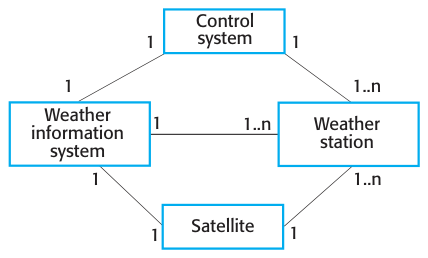
Each station has a weather information system, an onboard satellite system and a control system in its environment. The cardinalities show one control system for several (1..n) stations, one satellite and one weather information system.每个气象站的环境中都有一个天气信息系统、一个机载卫星系统和一个控制系统。基数表示：一个控制系统对应多个（1..n）气象站，而卫星系统和天气信息系统各为一个。
In the interaction model each use case（用例）is one interaction, drawn as an ellipse. The outside party is a stick figure, a person or another system. The station has seven use cases, for example Report weather and Restart. A use case is described in structured text with the fields system, use case, actors, data, stimulus, response and comments.在交互模型中，每个用例是一次交互，画成椭圆。外部参与者画成小人，可以是一个人，也可以是另一个系统。气象站有七个用例，例如 Report weather 和 Restart。每个用例用结构化文字描述，字段包括：系统、用例、参与者、数据、刺激、响应和备注。
Step 3: architectural design第 3 步：体系结构设计
In words: the station software = independent subsystems that all hang on one shared message line, and each picks up the messages meant for it.用文字表述：气象站软件 = 若干相互独立的子系统，全部挂在同一条共享的消息线路上，每个子系统只接收发给自己的消息。

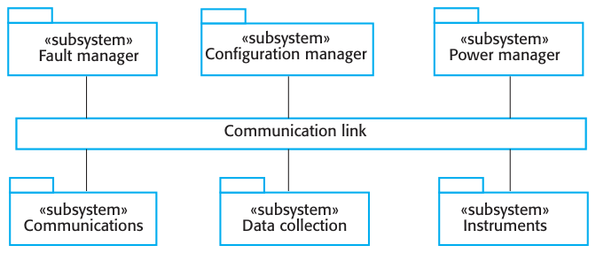
This is the listener model（监听者模型）. Everyday example: a loudspeaker announcement in a school. The speaker does not call each classroom. Each room listens and acts on what concerns it. When communications receives a shutdown command, every subsystem hears it and shuts itself down correctly.这就是监听者模型。日常的例子是学校里的广播通知。广播不会一个教室一个教室地去叫。每个教室都在听，并只对与自己有关的内容作出反应。当通信子系统收到关机命令时，每个子系统都会听到，并各自正确地关闭。
- Benefit: different sets of subsystems are easy to support, because the sender need not address a receiver.好处：不同组合的子系统都容易支持，因为发送方无需指定接收方。
- Price: every subsystem receives and filters every message, and the sender has no guarantee that anyone handled it.代价：每个子系统都要接收并过滤每一条消息，而且发送方无法保证有人处理了消息。
Practice练习
Q1. (Compare) Distinguish a system context model from an interaction model.Q1.（比较）区分系统上下文模型与交互模型。
Answer
A system context model is structural: a block diagram of associations with cardinalities that shows the other systems in the environment (for the weather station: weather information system, satellite, control system). An interaction model is dynamic: a use case model with one ellipse per interaction and one stick figure per external actor (person or system), each use case described in structured text. Together they fix the system boundary, that is, which functionality the system implements and which belongs to other systems.系统上下文模型是结构型的：它是带关联与基数的框图，展示环境中的其他系统（对于气象站：气象信息系统、卫星、控制系统）。交互模型是动态型的：用例模型中每个交互对应一个椭圆，每个外部参与者（人或系统）对应一个小人图形，每个用例都用结构化文本描述。两者共同确定系统边界，即哪些功能由本系统实现，哪些属于其他系统。
Q2. (Design) Specify the Report status use case of the weather station in the tabular format. State your assumptions.Q2.（设计）以表格形式说明气象站的 Report status 用例，并陈述你的假设。
Answer
Assumption: a status report contains the self-test result of every instrument.假设：状态报告包含每台仪器的自检结果。
| Field字段 | Report status |
|---|---|
| System系统 | Weather station气象站 |
| Use case用例 | Report status |
| Actors参与者 | Weather information system, weather station气象信息系统、气象站 |
| Data数据 | Station identifier; identifier and test result (working or failed) of each instrument站点标识符；每台仪器的标识符及测试结果（正常或失效） |
| Stimulus刺激 | The weather information system sets up a satellite link and requests the status气象信息系统建立卫星链路并请求状态 |
| Response响应 | The station tests its instruments and sends the status report站点测试其仪器并发送状态报告 |
| Comments备注 | Stations are remote and instruments fail, so failures must be visible in every report站点位置偏远且仪器会出故障，因此每份报告都必须体现故障情况 |
思路：用例描述要写清交换的数据、触发（stimulus）和响应（response），并写明自己的假设。
Object classes and design models ★★★对象类与设计模型
Goal. Find the classes, attributes and operations of a system from a text, build an inheritance hierarchy, and say which design models to draw and how detailed they must be.目标。 从文本中找出系统的类、属性和操作，建立继承层次，并说明应画哪些设计模型，以及它们要画到什么详细程度。
Classes, objects and generalization are explained in Section 4.4. Here the question is how to find the classes.类、对象和泛化在第 4.4 节中解释。这里的问题是如何找出类。
Step 1: identifying object classes第 1 步：识别对象类
In words: to find the classes, read the description of the system and look at its nouns and verbs.用文字表述：要找出类，就读系统的描述，看其中的名词和动词。
There are three classic approaches:经典的方法有三种：
| Approach方法 | Rule规则 |
|---|---|
| Grammatical analysis（语法分析） | Nouns in a natural-language description are objects and attributes. Verbs are operations自然语言描述中的名词对应对象和属性，动词对应操作。 |
| Tangible entities有形实体 | Look for things (aircraft), roles (manager), events (request), interactions (meeting), locations (office) and organizational units (company)寻找事物（飞机）、角色（经理）、事件（请求）、交互（会议）、地点（办公室）和组织单位（公司） |
| Scenario-based analysis基于场景的分析 | Go through each scenario of use in turn and name the objects, attributes and operations it needs依次检查每个使用场景，并列出它所需要的对象、属性和操作 |
In practice the approaches are combined. Classes from the description are a starting point. Domain knowledge and scenarios refine and extend them. Add implementation objects for general services such as searching and validity checking.实践中这些方法是结合使用的。从描述中得到的类是起点。领域知识和场景会对它们进行细化和扩充。对于搜索、有效性检查等通用服务，要再加上实现层面的对象。
How to do it by hand:手工操作的方法：
- Underline every noun and every verb in the description.在描述中划出每个名词和每个动词。
- Nouns that the system must store become classes. Nouns that only describe another noun become attributes.系统必须存储的名词变成类。只用来修饰另一个名词的名词变成属性。
- Drop the external actors, synonyms and the system itself.去掉外部参与者、同义词以及系统本身。
- Verbs become operations of the class that does the work.动词变成做这项工作的那个类的操作。
- Check each scenario of use and add what is missing.检查每个使用场景，补上缺少的内容。
Step 2: the classes of the weather station第 2 步：气象站的类

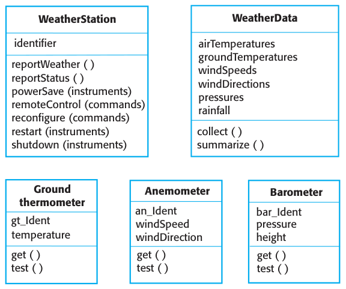
| Class类 | Found from来源 | Role职责 |
|---|---|---|
| WeatherStation | system and scenario descriptions系统与场景描述 | The station's interface to its environment; its operations follow the use cases (reportWeather, reportStatus, powerSave, remoteControl, reconfigure, restart, shutdown). One class covers all interactions; the alternative is one class per interaction站点与环境之间的接口；其操作依据用例设置（reportWeather、reportStatus、powerSave、remoteControl、reconfigure、restart、shutdown）。由一个类覆盖所有交互；另一种做法是每个交互对应一个类 |
| WeatherData | system and scenario descriptions系统与场景描述 | Processes the report-weather command: holds the measurements, has collect() and summarize(), sends the summary处理 report-weather 命令：保存测量值，具有 collect() 和 summarize() 操作，并发送摘要 |
| Ground thermometer, Anemometer, Barometer地面温度计、风速计、气压计 | application domain (tangible hardware)应用领域（有形硬件） | Control the instruments: collect data autonomously at the specified frequency, store it locally, deliver it to WeatherData on request控制仪器：以指定频率自主采集数据，在本地存储，并应请求将数据交付给 WeatherData |
Domain knowledge adds more: instruments fail, so they need an operation to test them. Stations are many, so each has a unique identifier. At this stage think about the objects, not their implementation. Then look for common features and design the inheritance hierarchy（继承层次）. An Instrument superclass holds what all instruments share: an identifier, get() and test(). It may get new attributes such as the collection frequency.领域知识还能补充一些内容：仪器会出故障，所以需要一个测试它的操作。气象站很多，所以每个站都要有唯一的标识符。这一阶段要考虑的是对象，而不是它们的实现。然后寻找共有特征，设计继承层次。Instrument 超类保存所有仪器共有的内容：一个标识符、get() 和 test()。它之后可能会增加新的属性，例如采集频率。
Step 3: which design models, and how detailed?第 3 步：用哪些设计模型，画到什么详细程度？
In words: a structural model shows what the parts are, a dynamic model shows what they do over time.用文字表述：结构模型展示部分是什么，动态模型展示它们随时间做什么。
| Kind类型 | Describes描述内容 | UML examplesUML 示例 |
|---|---|---|
| Structural model（结构模型） | Static structure: classes and their relationships (generalization, uses/used-by, composition)静态结构：类及其关系（泛化、使用/被使用、组合） | context, class and subsystem models上下文模型、类模型和子系统模型 |
| Dynamic model（动态模型） | Expected runtime interactions: sequences of service requests and the state changes they trigger预期的运行时交互：服务请求的序列及其引发的状态变化 | sequence and state machine models时序模型和状态机模型 |
A subsystem model（子系统模型）groups objects into logically related subsystems, each drawn as a package. The UML has 13 model types, but many are rarely used.子系统模型把对象按逻辑关系归为若干子系统，每个子系统画成一个包。UML 有 13 种模型类型，但其中很多很少用到。
| Situation情况 | How much modeling建模的详细程度 |
|---|---|
| Agile, or close contact between requirements engineers, designers and programmers敏捷开发，或需求工程师、设计师和程序员密切接触 | Outline models, such as whiteboard sketches. Details are settled during implementation粗略的模型，例如白板草图。细节在实现过程中确定。 |
| Plan-based, or design and implementation in different places计划驱动，或设计与实现分别在不同地方进行 | Detailed models derived from the abstract ones, so that everyone has one understanding从抽象模型推导出的详细模型，使每个人都有统一的理解 |
Practice练习
Q1. (Apply) Use grammatical analysis on: "A member searches the catalogue by title and reserves a book. A librarian adds new books to the catalogue." List candidate classes, attributes and operations, and say which noun you reject as a class.Q1.（应用）对以下句子进行语法分析：“A member searches the catalogue by title and reserves a book. A librarian adds new books to the catalogue.” 列出候选类、属性和操作，并说明你拒绝将哪个名词作为类。
Answer
Nouns: member, catalogue, title, book, librarian. Verbs: searches, reserves, adds. Classes: Member, Catalogue, Book, Librarian (Member and Librarian may share a User superclass). Operations: Catalogue.search(title), Catalogue.addBook(book), Book.reserve(member). Rejected as a class: title, which only describes a book and becomes the attribute title of Book. Scenarios then reveal more, for example a status attribute of Book (available or reserved) for the case of an already reserved book.名词：member、catalogue、title、book、librarian。动词：searches、reserves、adds。类：Member、Catalogue、Book、Librarian（Member 和 Librarian 可以共享一个 User 超类）。操作：Catalogue.search(title)、Catalogue.addBook(book)、Book.reserve(member)。被拒绝作为类的是 title，它只是描述书籍的特征，成为 Book 的属性 title。随后的场景分析还会揭示更多内容，例如对于已被预订的书籍，Book 需要一个 status 属性（可借或已预订）。
易错：不是每个名词都是类；属性、同义词和系统本身要剔除，再用场景补漏。
Q2. (Design) Design an inheritance hierarchy for 2-D and 3-D shapes with at least five concrete classes.Q2.（设计）为二维和三维图形设计一个继承层次，至少包含五个具体类。
Answer
Shape (position, name; move(), draw())
Shape2D (area(), perimeter())
Circle (radius)
Rectangle (width, height)
Triangle (base, height)
Ellipse (two semi-axes)
Shape3D (volume(), surfaceArea())
Sphere (radius)
Cuboid (width, height, depth)
Cylinder (radius, height)
Common features sit in the superclass Shape. The 2-D and 3-D branches add the measures that make sense for each. Each concrete class adds only its own dimensions and implements area() or volume() (polymorphism).共同特征放在超类 Shape 中。二维和三维分支分别添加各自适用的度量。每个具体类只添加自身的尺寸，并实现 area() 或 volume()（多态）。
Q3. (True or false) "Every project must produce detailed UML models of all objects before coding starts." Justify.Q3.（判断）“每个项目都必须在编码开始前为所有对象生成详细的 UML 模型。”判断对错，并说明理由。
Answer
False. The level of detail depends on the process and the system. Agile teams, or teams with close contact between requirements engineers, designers and programmers, may use outline whiteboard models and settle details during implementation. Plan-driven projects, or projects whose design and implementation are in different places, need detailed models for communication. UML adds little for dynamically typed languages or when an off-the-shelf package is configured, and over-modeling raises cost and fixes decisions better left to implementation.错误。详细程度取决于过程和系统。敏捷团队，或需求工程师、设计人员与程序员保持密切接触的团队，可以使用概要的白板模型，并在实现过程中确定细节。计划驱动的项目，或设计与实现分处不同地点的项目，则需要详细模型以便沟通。对于动态类型语言，或当现成软件包仅需配置时，UML 的价值很小；而过度建模会增加成本，并固定了本应留给实现阶段决定的事项。
Sequence models, state machine models and interfaces ★★时序模型、状态机模型与接口
Goal. Read and draw a sequence diagram, trace a state diagram event by event, and explain why an interface lists operations but no attributes.目标。 读懂并画出时序图，逐个事件地手工演算状态图，并解释为什么接口列出操作而不列出属性。
Step 1: sequence models第 1 步：时序模型
In words: a sequence diagram = who sends which message to whom, from the top of the page to the bottom.用文字表述：时序图 = 从页面顶部到底部，谁向谁发送什么消息。
Produce one sequence diagram for each significant interaction. With a use case model, produce one per use case.为每一项重要的交互画一张时序图。如果有用例模型，就为每个用例画一张。
| Symbol符号 | Meaning含义 |
|---|---|
| Box at the top with a vertical line below顶部是方框，下方是竖线 | An object and its lifeline一个对象及其生命线 |
| Arrow between two lifelines两条生命线之间的箭头 | A message, a request for an operation一条消息，即对某个操作的请求 |
| Stick (open) arrowhead细棒（开口）箭头 | Asynchronous message: the sender does not wait异步消息：发送方不等待 |
| Squared-off (solid) arrowhead方形（实心）箭头 | Synchronous call: the sender waits for the reply同步调用：发送方等待应答 |
| Position from top to bottom从上到下的位置 | The order in time时间先后顺序 |

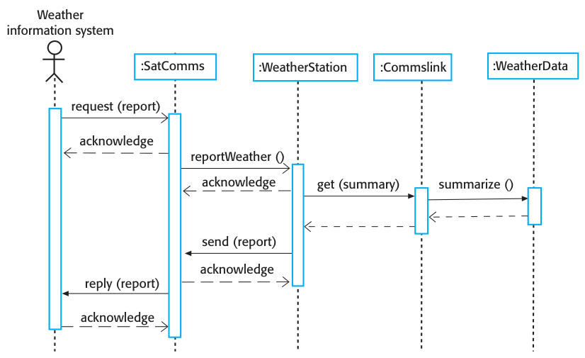
In the figure, SatComms receives request(report) and sends reportWeather() to WeatherStation without waiting. WeatherStation then sends get(summary) to Commslink and waits, because the summary must exist before it can be sent. Commslink calls summarize() on WeatherData and waits. Finally WeatherStation calls send(report) on SatComms.图中，SatComms 收到 request(report)，然后异步地向 WeatherStation 发送 reportWeather()。随后，WeatherStation 向 Commslink 发送 get(summary) 并等待，因为摘要必须先生成才能发送。Commslink 对 WeatherData 调用 summarize() 并等待。最后，WeatherStation 对 SatComms 调用 send(report)。
Step 2: state machine models第 2 步：状态机模型
In words: a state machine = the states one object can be in, and which event moves it from one state to the next.用文字表述：状态机 = 一个对象可能处于的状态，以及哪个事件使它从一个状态转到下一个状态。
A sequence diagram shows a group of objects. A state machine model（状态机模型）, drawn as a UML state diagram, shows how one object responds to events.时序图展示一组对象。状态机模型画成 UML 状态图，展示一个对象如何响应事件。

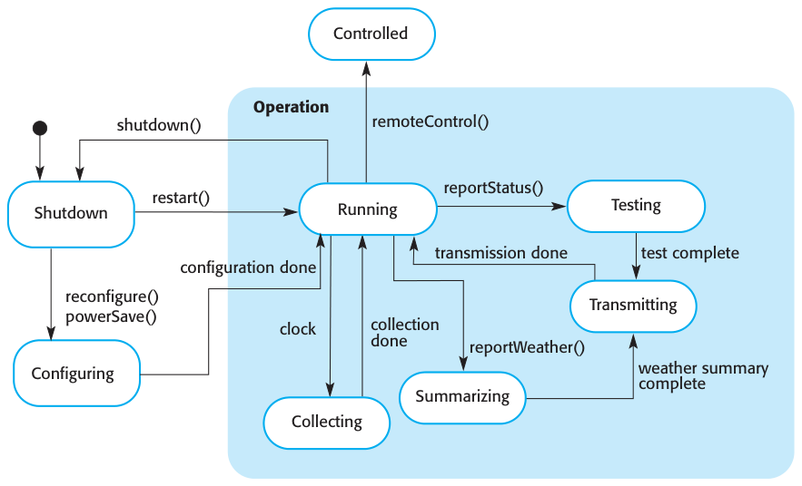
The black dot marks Shutdown as the initial state.黑点标出 Shutdown 是初始状态。
| From起始状态 | Event事件 | To目标状态 |
|---|---|---|
| Shutdown | restart() | Running |
| Shutdown | reconfigure() or powerSave()reconfigure() 或 powerSave() | Configuring |
| Configuring | configuration done配置完成 | Running |
| Running | shutdown() | Shutdown |
| Running | reportWeather() | Summarizing |
| Summarizing | weather summary complete气象摘要完成 | Transmitting |
| Running | reportStatus() | Testing |
| Testing | test complete测试完成 | Transmitting |
| Transmitting | transmission done发送完成 | Running |
| Running | clock signal时钟信号 | Collecting (each instrument is told in turn to collect from its sensors)Collecting（依次通知每台仪器从其传感器采集数据） |
| Collecting | collection done采集完成 | Running |
| Running | remoteControl() | Controlled operation |
Reconfiguration is allowed only after shutdown, because Running has no reconfigure() transition. An event with no transition from the current state is ignored.只有在关机之后才允许重新配置，因为 Running 状态没有 reconfigure() 转移。当前状态下没有转移的事件会被忽略。
How to trace by hand: 1. Start in the initial state. 2. For each event, look for a row with the current state and this event. 3. If there is one, move to its target state. If not, stay and write "ignored".手工演算的方法：1. 从初始状态开始。2. 对每个事件，查找当前状态与该事件对应的一行。3. 如果找到，就转到目标状态；如果找不到，就停留在原地，并写下“ignored”。
Step 3: interface specification第 3 步：接口规格说明
In words: an interface = a list of what an object can do, with no word about how it stores its data.用文字表述：接口 = 对象能做什么的列表，不涉及它如何保存数据。
Interfaces are specified so that objects and subsystems can be designed in parallel. Once an interface is fixed, other developers may rely on it. An interface（接口）defines the signatures and semantics of the services of an object or group of objects. The UML draws it like a class without an attribute section, with the stereotype «interface» in the name. Its semantics can be written in OCL（对象约束语言，the object constraint language）.规定接口是为了让对象和子系统可以并行设计。接口一旦确定，其他开发者就可以依赖它。接口定义一个对象或一组对象所提供服务的签名和语义。UML 把接口画成没有属性栏的类，名称中带有 «interface» 构造型标记。它的语义可以用 OCL（对象约束语言）来描述。
«interface» Reporting
weatherReport (WS-Ident): Wreport
statusReport (WS-Ident): Sreport
«interface» Remote Control
startInstrument (instrument): iStatus
stopInstrument (instrument): iStatus
collectData (instrument): iStatus
provideData (instrument): string
- An interface holds no data representation. Operations access and update the data. The representation stays hidden, so it can change without harming users. Example: a stack stored in an array may later be stored in a list.接口不包含数据的表示方式。操作负责访问和更新数据。数据的表示方式被隐藏起来，因此它可以改变，而不会伤害使用者。例如，原本存在数组里的栈，以后可能改存在列表里。
Practice练习
Q1. (Trace) The weather station starts in its initial state. Give the state after each event: reportWeather(), restart(), clock signal, collection done, reportWeather(), weather summary complete, transmission done, reconfigure(), shutdown(), reconfigure().Q1.（手工演算）气象站从其初始状态开始。给出每个事件发生后的状态：reportWeather()、restart()、时钟信号、采集完成、reportWeather()、气象摘要完成、发送完成、reconfigure()、shutdown()、reconfigure()。
Answer
| # | Event事件 | State before事件前状态 | State after事件后状态 |
|---|---|---|---|
| 1 | reportWeather() | Shutdown | Shutdown (ignored: no transition)Shutdown（忽略：无转换） |
| 2 | restart() | Shutdown | Running |
| 3 | clock signal时钟信号 | Running | Collecting |
| 4 | collection done采集完成 | Collecting | Running |
| 5 | reportWeather() | Running | Summarizing |
| 6 | weather summary complete气象摘要完成 | Summarizing | Transmitting |
| 7 | transmission done发送完成 | Transmitting | Running |
| 8 | reconfigure() | Running | Running (ignored: reconfiguration only after shutdown)Running（忽略：仅在关机后才能重新配置） |
| 9 | shutdown() | Running | Shutdown |
| 10 | reconfigure() | Shutdown | Configuring |
The final state is Configuring.最终状态为 Configuring。
易错：当前状态没有对应转移的事件会被忽略，状态不变，不要强行转移。
Q2. (Design) List the messages of a sequence diagram for "a member reserves a book" with the objects :Member, :Catalogue and :Book. Mark each message as synchronous or asynchronous.Q2.（设计）为“a member reserves a book”列出时序图中的消息，涉及的对象为 :Member、:Catalogue 和 :Book。标出每条消息是同步的还是异步的。
Answer
- Member to Catalogue: search(title), synchronous; the list of matching books is returned.Member 发送给 Catalogue：search(title)，同步；返回匹配书籍的列表。
- Member to Catalogue: reserve(bookId), synchronous.Member 发送给 Catalogue：reserve(bookId)，同步。
- Catalogue to Book: reserve(memberId), synchronous; Book returns the new status.Catalogue 发送给 Book：reserve(memberId)，同步；Book 返回新状态。
- Catalogue returns a confirmation to Member.Catalogue 向 Member 返回确认。
- Later, Catalogue to Member: notifyAvailable(), asynchronous (open arrowhead), because the catalogue does not wait for a reply.稍后，Catalogue 发送给 Member：notifyAvailable()，异步（开口箭头），因为 Catalogue 不等待回复。
A synchronous message suspends the sender until the reply returns; an asynchronous one does not.同步消息会使发送方挂起，直到收到回复；异步消息则不会。
Design patterns ★★★设计模式
Goal. Define a design pattern with its four elements, describe the Observer pattern with its classes and collaboration, and name the right pattern for a short scenario.目标。 用四个要素定义设计模式，用类和协作关系描述观察者模式，并为一个简短的场景说出合适的模式。
Step 1: what a pattern is第 1 步：什么是模式
In words: a design pattern = a tested recipe for a common design problem, which you adapt to your case.用文字表述：设计模式 = 针对常见设计问题的、经过检验的方案，使用时要根据具体情况加以调整。
A design pattern（设计模式）is a description of a problem and the essence of its solution, so that the solution can be reused in different settings. It is not a detailed specification. It is accumulated wisdom, a well-tried solution to a common problem. Patterns also give designers a shared vocabulary: a design can be explained by naming its patterns. They are usually object-oriented and rely on inheritance and polymorphism.设计模式描述一个问题及其解决方案的精髓，使这个方案能在不同场合被复用。它不是详细的规格说明，而是积累下来的经验，是针对常见问题、经过充分检验的解决办法。模式还为设计者提供了共同的词汇：说明一个设计时，只要点出它用了哪些模式即可。模式通常是面向对象的，依赖继承和多态。
A pattern description has four essential elements:模式的描述有四个基本要素：
| Element要素 | Content内容 |
|---|---|
| Name名称 | A meaningful reference to the pattern对该模式的一个有意义的引用 |
| Problem description问题描述 | The problem area and when the pattern applies问题领域，以及该模式适用的情况 |
| Solution description解决方案描述 | The parts of the solution, their relations and responsibilities. It is a template that can be instantiated in different ways解决方案的各个部分、它们之间的关系和职责。它是一个模板，可以用不同方式实例化。 |
| Consequences后果 | The results and trade-offs of using it. They show whether the pattern fits the situation使用它的结果和取舍。它们说明该模式是否适合当前情况。 |
Step 2: the Observer pattern第 2 步：观察者模式
In words: Observer = one object holds the data, and any number of displays are told when it changes, so the object never needs to know what the displays are.用文字表述：观察者模式 = 一个对象保存数据，任意数量的显示在数据变化时收到通知，因此该对象无需知道显示的是什么。
Example (an everyday case): a newsletter. Readers sign up, the publisher sends an alert to all of them when something new appears, and each reader then fetches the details. The publisher never needs to know who the readers are or how they read.例如（日常生活中的情况）：一份电子通讯。读者订阅，出版方有新内容时向所有订阅者发出提醒，然后每位读者自己去获取详细内容。出版方无需知道读者是谁，也无需知道他们怎么读。
Observer（观察者模式）separates the display of an object's state from the object itself and allows alternative displays. When the state changes, all displays are notified and updated.观察者模式把对象状态的显示与对象本身分开，并允许有多种可替换的显示方式。状态变化时，所有显示都会收到通知并更新。
| Element要素 | Observer观察者模式 |
|---|---|
| Problem问题 | Several displays of the same state are needed (for example graphical and tabular); not all are known when the state is specified; all must be updated when it changes. Use it when more than one display format is required and the object holding the state need not know the formats需要对同一状态提供多种显示（例如图形和表格）；在规定状态时，并非所有显示都已知；状态变化时，所有显示都必须更新。当需要多种显示格式、而保存状态的对象无需知道这些格式时，即可使用该模式 |
| Solution解决方案 | Two abstract classes, Subject and Observer, and two concrete classes, ConcreteSubject and ConcreteObserver, that inherit from them. ConcreteSubject keeps the state and inherits from Subject the operations to attach and detach observers (one per display) and to notify them. ConcreteObserver keeps a copy of the state and implements Update() of Observer to keep the copy in step, then redisplays it两个抽象类 Subject 和 Observer，以及两个继承自它们的具体类 ConcreteSubject 和 ConcreteObserver。ConcreteSubject 保存状态，并从 Subject 继承用于挂接和摘除观察者（每个显示对应一个）以及通知观察者的操作。ConcreteObserver 保存一份状态副本，并实现 Observer 的 Update()，以使副本与状态保持同步，然后重新显示 |
| Consequences后果 | The subject knows only the abstract Observer, so coupling（耦合）is minimal. Display optimizations are impractical, because the subject does not know the concrete observers. One change can trigger a chain of updates, some of them unnecessary主题只知道抽象的 Observer，因此耦合最小。针对显示的优化难以实施，因为主题并不知道具体的观察者。一次变化可能引发一连串更新，其中一些是不必要的 |

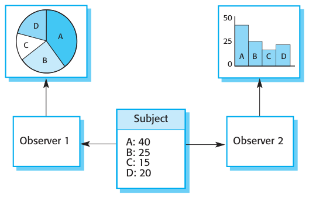

The class diagram has four classes: Subject (Attach, Detach, Notify), Observer (Update), ConcreteSubject (subjectState, GetState) and ConcreteObserver (observerState, Update).类图包含四个类：Subject 类（含 Attach、Detach、Notify 操作）、Observer 类（含 Update 操作）、ConcreteSubject 类（含 subjectState 属性及 GetState 操作）和 ConcreteObserver 类（含 observerState 属性及 Update 操作）。
Subject.Notify(): for all o in observers: o -> Update()
ConcreteObserver.Update(): observerState = subject -> GetState()
ConcreteSubject.GetState(): return subjectState
Collaboration, step by step:协作过程，分步说明：
- Each display registers with Attach().每个显示通过 Attach() 注册。
- The state of ConcreteSubject changes.ConcreteSubject 的状态发生变化。
- Notify() calls Update() on every attached observer.Notify() 对每个已注册的观察者调用 Update()。
- Each observer fetches the new state with GetState() and redisplays it.每个观察者通过 GetState() 取得新状态，并重新显示。
The solution element is often drawn as a diagram. It covers the structure, the participants, the collaborations and the implementation. The problem element covers the motivation and the applicability.解决方案这一要素通常画成图。它包括结构、参与者、协作关系和实现。问题这一要素包括动机和适用性。
The 23 catalogue patterns fall into three categories:目录中的 23 种模式分为三类：
| Category类别 | What it is about关注的内容 | Examples示例 |
|---|---|---|
| Creational（创建型） | How objects are created对象如何创建 | Singleton, Factory Method, Abstract Factory, Builder, Prototype单例、工厂方法、抽象工厂、生成器、原型 |
| Structural（结构型） | How classes and objects are composed类和对象如何组合 | Adapter, Façade, Decorator, Composite, Proxy, Bridge, Flyweight适配器、外观、装饰器、组合、代理、桥接、享元 |
| Behavioral（行为型） | How objects interact and share responsibility对象如何交互并分担职责 | Observer, Iterator, Strategy, Command, State, Template Method观察者、迭代器、策略、命令、状态、模板方法 |
Step 3: other patterns to recognise第 3 步：需要认识的其他模式
| Pattern模式 | Problem it solves解决的问题 | Everyday example日常例子 |
|---|---|---|
| Observer观察者模式 | Tell several objects that another object changed告诉若干对象另一个对象发生了变化 | Several screens show one score几块屏幕显示同一个比分 |
| Façade（外观）外观 | Tidy the interfaces of related objects that were developed incrementally整理逐步开发出来的相关对象的接口 | One reception desk in front of many offices许多办公室前面只有一个前台 |
| Iterator迭代器 | Access the elements of a collection in a standard way, whatever its implementation无论集合如何实现，都用统一的方式访问其中的元素 | "Next page" works for any book“下一页”适用于任何一本书 |
| Decorator装饰器 | Extend an existing class at run time在运行时扩展已有的类 | Adding toppings to a pizza already ordered给已经点好的披萨加配料 |
A pattern reuses the idea, not code, so you adapt the implementation. Limit: it is hard to know in advance which pattern you need, and to find it among hundreds.模式复用的是思想，而不是代码，所以要根据具体情况调整实现。局限是：很难事先知道需要哪种模式，也很难在数百种模式中找到它。
Practice练习
Q1. (Definition) What is a design pattern? Give its four essential elements, one benefit and one limitation.Q1.（定义）什么是设计模式？给出它的四个基本要素、一个优点和一个局限。
Answer
A design pattern is a description of a problem and the essence of its solution, so that the solution can be reused in different settings; it is a template, not a detailed specification. Elements: name; problem description (when it applies); solution description (parts, relationships, responsibilities); consequences (results and trade-offs). Benefit: it reuses tested design knowledge at the concept level, leaving the implementation free to adapt, and gives designers a shared vocabulary. Limitation: it needs design experience, because it is hard to know in advance that a pattern is needed and to choose the right one among hundreds.设计模式是对某一问题及其解决方案本质的描述，使该解决方案能够在不同情境中复用；它是模板，而不是详细的规格说明。四个要素是：名称；问题描述（何时适用）；解决方案描述（各组成部分、它们之间的关系与职责）；后果（结果与权衡）。优点：在概念层面复用经过检验的设计知识，实现可以自由调整，并为设计者提供共同的词汇。局限：它需要设计经验，因为很难事先判断是否需要某个模式，也很难在数百种模式中选出合适的一种。
Q2. (Trace) A ConcreteSubject holds A = 40, B = 25, C = 15, D = 20. A bar chart and a pie chart are attached as ConcreteObservers. A is set to 30, then D is set to 30. (a) How many Update() calls occur? (b) What angle does the pie chart give A after each notification? (c) Which consequence of the pattern does this show?Q2.（手工演算）一个 ConcreteSubject 保存 A = 40、B = 25、C = 15、D = 20。条形图和饼图作为 ConcreteObserver 挂接在其上。先将 A 设为 30，再将 D 设为 30。(a) 共发生多少次 Update() 调用？(b) 每次通知后，饼图给出的 A 所占角度是多少？(c) 这说明了该模式的哪一种后果？
Answer
(a) Each state change calls Notify(), which calls Update() on both observers: 2 changes × 2 observers = 4 calls.(a) 每次状态变化都会调用 Notify()，而 Notify() 又会对两个观察者各调用一次 Update()：2 次变化 × 2 个观察者 = 4 次调用。
(b) A pie slice is value / total × 360°. After A = 30 the total is 30 + 25 + 15 + 20 = 90, so A gets 30/90 × 360° = 120° (B 100°, C 60°, D 80°). After D = 30 the total is 100 and A gets 30/100 × 360° = 108° (B 90°, C 54°, D 108°; the slices sum to 360°).(b) 饼图扇区的角度为 值 / 总和 × 360°。A 设为 30 后，总和为 30 + 25 + 15 + 20 = 90，因此 A 得到 30/90 × 360° = 120°（B 为 100°，C 为 60°，D 为 80°）。D 设为 30 后，总和为 100，A 得到 30/100 × 360° = 108°（B 为 90°，C 为 54°，D 为 108°；各扇区之和为 360°）。
(c) The first notification produced an intermediate display (A = 120°) that the second replaced at once: a change can cause linked updates that are not all necessary. The subject never learns that its observers are a bar chart and a pie chart (minimal coupling); attaching a third observer would add one Update() per change (6 calls in total) without changing the subject.(c) 第一次通知产生了一个中间显示（A = 120°），随即被第二次通知替换：一次变化可能引发一连串相互关联的更新，其中并非全部都是必要的。主题无需知道其观察者是条形图还是饼图（耦合最小）；若再挂接第三个观察者，则每次变化多一次 Update() 调用（共 6 次），而主题本身无需改动。
Q3. (Apply) Name the pattern: (a) a legacy payment library has twelve classes developed incrementally and clients only need charge() and refund(); (b) a report must visit every element of a collection without knowing whether it is an array, a list or a tree; (c) a window object must get optional scroll bars and borders at run time; (d) a price object must refresh a table and a chart whenever the price changes.Q3.（应用）说出对应的模式：(a) 一个遗留的支付库有十二个逐步开发的类，而客户端只需要 charge() 和 refund()；(b) 报表必须访问集合中的每个元素，而无需知道它是数组、列表还是树；(c) 窗口对象需要在运行时获得可选的滚动条和边框；(d) 价格对象在价格变化时必须刷新一个表格和一张图表。
Answer
(a) Façade: one simplified interface with charge() and refund() in front of the twelve classes. (b) Iterator: standard access to the elements irrespective of the implementation of the collection. (c) Decorator: extends the functionality of an existing object at run time. (d) Observer: notifies several objects when the state of another object changes.(a) 外观模式：在十二个类之前提供一个带有 charge() 和 refund() 的简化接口。(b) 迭代器模式：以标准方式访问集合的元素，与集合的实现方式无关。(c) 装饰器模式：在运行时扩展已有对象的功能。(d) 观察者模式：当另一对象的状态发生变化时，通知多个对象。
Implementation issues: reuse, configuration management and host-target development ★★实现问题：复用、配置管理与宿主-目标开发
Goal. Name the four levels and four costs of reuse, the four configuration management activities, and the main points of host-target development.目标。 说出复用的四个层次和四项代价，说出四项配置管理活动，并说明宿主-目标开发的要点。
Step 1: reuse第 1 步：复用
In words: reuse = do not write what already exists, but count what it costs to find it, buy it, fit it and join it.用文字表述：复用 = 不重写已有的东西，而是计算找到它、购买它、适配它和集成它各需要多少代价。
Reuse-based development（基于复用的开发）is now the norm for web-based and scientific systems and, increasingly, for embedded systems. Reuse happens at four levels:基于复用的开发现在已经成为基于 Web 的系统和科学系统的常态，并且在嵌入式系统中也越来越常见。复用发生在四个层面：
| Level层次 | What is reused复用的内容 | Example示例 |
|---|---|---|
| Abstraction抽象 | Knowledge of successful abstractions, not code: design and architectural patterns成功抽象的知识，而非代码：设计模式与体系结构模式 | Observer; layered architecture观察者模式；分层体系结构 |
| Object对象 | Individual objects and methods from a library库中的单个对象和方法 | JavaMail library for e-mail用于电子邮件的 JavaMail 库 |
| Component构件 | Collections of objects and classes that provide related services; you add your own code提供相关服务的对象与类的集合；你添加自己的代码 | A GUI framework (event handling, display management); you add data connections and layoutGUI 框架（事件处理、显示管理）；你添加数据连接与布局 |
| System系统 | Whole application systems, configured through their own interface or by adding code (software product line); several may be integrated整个应用系统，通过其自身接口或添加代码进行配置（软件产品线）；可以集成多个此类系统 | A commercial package tailored to a customer为客户定制的商业软件包 |
Benefits: faster development, lower cost and risk, and higher reliability, because the software was tested in other applications. Four costs:好处：开发更快、成本和风险更低、可靠性更高，因为这些软件已经在其他应用中经过了测试。代价有四项：
- Searching for software and assessing it, including testing it in your environment.搜寻软件并对其进行评估，包括在你的环境中测试它。
- Buying it, which can be very expensive for large systems.购买费用，对于大型系统而言可能非常昂贵。
- Adapting and configuring it to your requirements.按照你的需求对其进行适配与配置。
- Integrating it with other reused software and with your new code. Providers may make conflicting assumptions about how their software will be reused.与其他复用软件以及新代码集成。提供者可能对其软件将如何被复用作出互相冲突的假设。
Step 2: configuration management第 2 步：配置管理
In words: configuration management = keep order when many people change the same software: nobody overwrites others, everybody sees the latest version, and a bad version can be rolled back.用文字表述：配置管理 = 当许多人修改同一软件时保持秩序：没有人覆盖别人的改动，每个人都能看到最新版本，有问题的版本可以回滚。
Everyday example: five students edit one report, and one overwrites another's paragraph. Configuration management（配置管理）is the general process of managing a changing software system.日常例子：五个学生共同编辑一份报告，其中一个人覆盖了另一个人的段落。配置管理是管理不断变化的软件系统的一般过程。

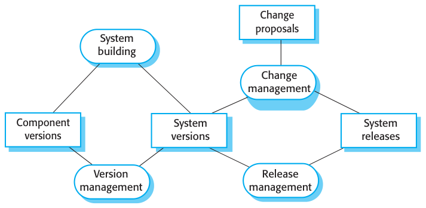
| Activity活动 | Purpose目的 | Tools工具 |
|---|---|---|
| Version management（版本管理） | Track the versions of each component; coordinate several programmers; stop one developer overwriting code submitted by another跟踪每个构件的版本；协调多名程序员；防止一名开发人员覆盖另一人提交的代码 | Subversion, GitSubversion、Git |
| System integration（系统集成） | Define which component versions make up each system version; build the system automatically by compiling and linking定义每个系统版本由哪些构件版本组成；通过编译与链接自动构建系统 | GNU build systemGNU 构建系统 |
| Problem tracking（问题跟踪） | Users report bugs and problems; all developers see who works on them and when they are fixed用户报告错误和问题；所有开发人员都能看到谁在处理它们以及何时修复 | Bugzilla |
| Release management（发布管理） | Release new versions to customers: plan the functionality of releases and organize the software for distribution向客户发布新版本：规划各发布版本的功能，并组织软件以便分发 | none named未指定具体工具 |
The terms of version control:版本控制的术语：
- Repository（仓库）: the shared store that holds all versions of the code and documents.仓库：保存代码和文档所有版本的共享存储。
- Check out（检出）: take a working copy from the repository.检出：从仓库取出一份工作副本。
- Commit（提交）: send your change back. The system rejects or merges conflicting changes.提交：把你的改动送回仓库。系统会拒绝或合并有冲突的改动。
- Branch（分支）: a parallel line of work, for example release maintenance next to a new feature. Branches are merged back later.分支：一条并行的开发线，例如在开发新功能的同时维护发布版本。分支之后会合并回来。
- Baseline（基线）: a frozen set of component versions, so that a release can be rebuilt exactly.基线：一组冻结的构件版本，使发布版本可以被精确地重新构建。
- Continuous integration（持续集成）: an automated build and tests run on every commit. Integration problems show up early.持续集成：每次提交都自动运行构建和测试。集成问题能及早暴露。
Step 3: host-target development第 3 步：宿主-目标开发
In words: develop on one machine, run on another; test on the target, or on a simulator on the host.用文字表述：在一台机器上开发，在另一台机器上运行；在目标机上测试，或者在宿主机上的模拟器中测试。
Most professional development is host-target（宿主机–目标机）. When the platforms are the same, one machine is enough. For embedded and mobile systems they differ. A simulator（模拟器）imitates devices such as sensors and the events of the deployment environment.大多数专业开发采用宿主-目标方式。平台相同时，一台机器就够了。嵌入式和移动系统的两者则不同。模拟器模仿传感器等设备，以及部署环境中的事件。
A simulator saves downloading to the target hardware, but it is expensive to build, so it exists only for popular hardware. If the target has middleware（中间件）that you must use, and license restrictions prevent installing it on the host, the code must be transferred to the target for testing.模拟器省去了下载到目标硬件的步骤，但造价昂贵，因此只为热门硬件而存在。如果目标平台上有必须使用的中间件，而许可证限制又不允许把它装到宿主机上，那么代码就必须传输到目标平台上进行测试。
For distributed systems you must also decide where each component is deployed:对于分布式系统，还必须决定每个构件部署在哪里：
| Factor因素 | Consequence结果 |
|---|---|
| Hardware and software requirements of a component构件的软硬件需求 | Deploy it only on a platform that provides them仅部署在能提供这些需求的平台上 |
| Availability requirements可用性需求 | High availability needs the component on more than one platform, so an alternative exists after a failure高可用性要求将该构件部署在多个平台上，以便故障后仍有替代方案 |
| Component communications构件间通信 | Heavily communicating components go on the same or nearby platforms, to cut latency（延迟）通信频繁的构件应部署在同一平台或相邻平台上，以降低延迟 |
UML deployment diagrams（部署图）record these decisions. For high availability, a component runs on several platforms. With \(n\) independent platforms the availability is:UML 部署图记录这些决策。为了提高可用性，一个构件会运行在多个平台上。如果有 \(n\) 个相互独立的平台，可用性为：
Example: with \(a = 0.99\), two platforms give \(A_2 = 1 - 0.01^2 = 0.9999\), that is, 99.99%.例如，当 \(a = 0.99\) 时，两个平台给出 \(A_2 = 1 - 0.01^2 = 0.9999\)，即 99.99%。
Practice练习
Q1. (Calculation) A team needs a stock-control module. Option A: develop it, 10 person-months (PM). Option B: reuse a commercial component with 1 PM of search and assessment, a license fee of $15,000, 2.5 PM of adaptation and 2 PM of integration. One PM costs $9,000. (a) Compare the costs. (b) Up to which license fee does reuse still win? (c) The integration effort turns out to be double the estimate: does reuse still win?Q1.（计算）某团队需要一个库存控制模块。方案 A：自行开发，需 10 人月（PM）。方案 B：复用一个商业构件，搜寻与评估需 1 PM，许可证费为 $15,000，适配需 2.5 PM，集成需 2 PM。每 PM 成本为 $9,000。(a) 比较两种方案的成本。(b) 许可证费最高为多少时，复用仍然更划算？(c) 集成工作量实际是估计值的两倍：复用是否仍然更划算？
Answer
(a) Build: 10 × $9,000 = $90,000. Reuse: (1 + 2.5 + 2) × $9,000 + $15,000 = $49,500 + $15,000 = $64,500. Reuse is cheaper by $25,500 (28.3% of the build cost). The four reuse costs are search and assessment (1 PM), purchase (the license fee), adaptation (2.5 PM) and integration (2 PM).(a) 自行开发：10 × $9,000 = $90,000。复用：(1 + 2.5 + 2) × $9,000 + $15,000 = $49,500 + $15,000 = $64,500。复用便宜 $25,500（为自行开发成本的 28.3%）。复用的四项成本分别是：搜寻与评估（1 PM）、购买（许可证费）、适配（2.5 PM）和集成（2 PM）。
(b) Break-even license fee: $90,000 − $49,500 = $40,500.(b) 盈亏平衡的许可证费：$90,000 − $49,500 = $40,500。
(c) With 4 PM of integration: (1 + 2.5 + 4) × $9,000 + $15,000 = $82,500 < $90,000, so reuse still wins, by $7,500. It stops winning above about 4.8 PM of integration effort.(c) 若集成工作量为 4 PM：(1 + 2.5 + 4) × $9,000 + $15,000 = $82,500 < $90,000，因此复用仍然更划算，便宜 $7,500。当集成工作量超过约 4.8 PM 时，复用就不再划算。
Q2. (Explain) When code is integrated into a larger system, problems may surface. Explain how configuration management helps.Q2.（解释）代码集成到更大的系统中时，问题可能会暴露出来。解释配置管理如何提供帮助。
Answer
Version management records which version of each component was submitted, by whom and when, so the changes since the last working integration can be listed and compared and the faulty change found; it also stops a fix from overwriting someone else's work. System integration records exactly which component versions form each system version, so the failing build can be rebuilt and an earlier working version restored while the fault is fixed. Problem tracking records the failure, who is working on it and when it is fixed. Release management makes sure that the corrected version, not a mixture of old and new components, reaches the customer.版本管理记录每个构件提交的版本、提交者和提交时间，从而可以列出并比较自上次可正常集成以来的全部变更，找出有问题的变更；它还能防止修复覆盖他人的工作。系统集成精确记录哪些构件版本组成每个系统版本，因此在修复故障期间，可以重建失败的构建，并恢复较早的可用版本。问题跟踪记录故障、由谁处理以及何时修复。发布管理确保交给客户的是修正后的版本，而不是新旧构件的混合。
Open-source development ★开源开发
Open-source development（开源开发）publishes the source code and invites volunteers to help. Using open source is cheap or free, and widely used systems are reliable, because many users find and fix bugs. A license sets the conditions of use. The three common kinds are:开源开发公开源代码，并邀请志愿者参与。使用开源软件成本低或免费，而且被广泛使用的系统也较可靠，因为很多用户会发现并修复缺陷。许可证规定使用条件。常见的三种许可证是：
| License许可证 | Reciprocal?是否互惠？ | What you may do允许的行为 | Obligations义务 |
|---|---|---|---|
| GNU GPL | Yes是 | Use it, but software that uses GPL code must itself be made open source可以使用，但使用 GPL 代码的软件本身必须开源 | Publish your source公开你的源代码 |
| GNU LGPL | Partly部分是 | Write components that link to the library without publishing them可以编写链接到该库的构件，而无需公开这些构件 | Publish any changes to the licensed component公开对被许可构件所做的任何修改 |
| BSD (Berkeley Software Distribution; MIT is a variant)BSD（Berkeley Software Distribution；MIT 是其变体） | No否 | Include it in proprietary, sold systems可以将其包含在专有的销售系统中 | Acknowledge the original creator; no duty to publish changes须标明原作者；无义务公开修改 |
A company faces two questions. Should its product use open-source components? Should it develop its own software in the open?一家公司会面临两个问题：它的产品是否应该使用开源构件？它是否应该公开地开发自己的软件？
- Use open source when the product must be cheap and quick to market. Caution: it may not fit existing incompatible systems.当产品必须便宜、并且要尽快上市时，就使用开源。需要注意：开源构件可能与现有的不兼容系统不匹配。
- Develop in the open when the income is support, not the product, when the community lowers cost, or when customers want to be able to support the software themselves.当收入来自支持服务而不是产品本身时，当社区能降低成本时，或当客户希望自己维护软件时，就公开开发。
- Caution: competitors may learn confidential knowledge, and publishing does not guarantee help.需要注意：竞争对手可能会学到机密知识，而且公开源码也不保证一定能得到帮助。
- Business models: sell support and advice, cloud services for users who cannot run the system, and specialized versions for particular clients.商业模式包括：出售支持和咨询服务，为无法自行运行系统的用户提供云服务，以及为特定客户提供定制版本。
A reciprocal license（互惠许可证）passes its conditions on to your work. To keep a product closed-source, avoid GPL components. Keep a record of every open-source component used and the license valid at the time.互惠许可证会把它的条件传递到你的作品上。要让产品保持闭源，就要避免使用 GPL 构件。要记录所用的每一个开源构件，以及当时有效的许可证版本。
Practice练习
Q1. (Apply) A company sells a closed-source product and considers three libraries: X under the GPL, Y under the LGPL, Z under the BSD license. What may and must it do with each?Q1.（应用）某公司销售一款闭源产品，并考虑三个库：采用 GPL 的 X、采用 LGPL 的 Y 和采用 BSD 许可证的 Z。对于每一个库，它可以做什么，又必须做什么？
Answer
X (GPL, reciprocal): using it obliges the company to make its own software open source, so X should be avoided in a closed-source product. Y (LGPL): the company can write components that link to Y without publishing them, but must publish any changes it makes to Y itself. Z (BSD, non-reciprocal): it can be included in a proprietary, sold product with no duty to publish changes, but the original creator must be acknowledged. For all three it should record the component and the license valid at the time of use.X（GPL，互惠）：使用它将迫使公司把自身软件开源，因此闭源产品中应避免使用 X。Y（LGPL）：公司可以编写链接到 Y 的构件而无需公开，但必须公开其对 Y 本身所做的任何修改。Z（BSD，非互惠）：可以将其包含在专有的销售产品中，且无需公开修改，但必须标明原作者。对于这三者，都应记录所用的构件以及使用时有效的许可证。
Terms to recognise ★需要认识的术语
| Term术语 | What to know要知道什么 |
|---|---|
| Build or buy自研还是外购 | A COTS system is configured, not designed. No object models are neededCOTS 系统是配置的，不是设计的。不需要对象模型。 |
| Listener model监听者模型 | Subsystems share one message line. Each picks up its own messages. The sender has no guarantee of handling子系统共享同一条消息线路，每个子系统只接收属于自己的消息。发送方无法保证消息会被处理。 |
| Producer–consumer pattern（生产者–消费者模式） | Inside data collection, one part produces data and another consumes it在数据采集内部，一个部分产生数据，另一个部分消费数据。 |
| Subsystem model子系统模型 | Groups objects into logically related subsystems. Each subsystem is a package把对象按逻辑关系归为子系统。每个子系统是一个包。 |
| Host and target宿主机与目标机 | Develop on the host, run on the target. A simulator on the host imitates the target在宿主机上开发，在目标机上运行。宿主机上的模拟器模仿目标机。 |
| Gang of Four catalogueGoF 四人组目录 | The best-known catalogue of 23 general-purpose patterns最著名的、包含 23 种通用模式的目录。 |
Exam-style questions考试题型练习
Q1. (Design process, 12 marks) A fully automated filling station works as follows. The driver swipes a credit card through a reader on the pump; the card is verified by contacting a credit company computer and a fuel limit is set; the driver then takes fuel. When delivery is complete and the hose is back in its holster, the card account is debited with the cost of the fuel and the card is returned. An invalid card is returned before any fuel is dispensed.Q1.（设计过程，12 分）一座全自动加油站的运作方式如下：司机在油泵上的读卡器中刷信用卡；通过联系信用卡公司的计算机对该卡进行验证，并设定加油限额；然后司机开始加油。加油完成、油枪放回枪套后，从该卡账户中扣除油费，并退还该卡。无效的卡会在任何加油动作开始之前被退还。
(a) List the five activities of object-oriented design and name the external entities of the pump software. (3 marks)（a）列出面向对象设计的五项活动，并说出油泵软件的外部实体。（3 分）
(b) Use grammatical analysis to identify five candidate classes and give an attribute and an operation for two of them. (3 marks)（b）使用语法分析识别五个候选类，并为其中两个类各给出一个属性和一个操作。（3 分）
(c) Give the state machine of the pump as a table of transitions. (4 marks)（c）以转换表的形式给出油泵的状态机。（4 分）
(d) Give the message sequence of a successful fill and mark the synchronous messages. (2 marks)（d）给出一次成功加油的消息序列，并标出同步消息。（2 分）
Answer
(a) Activities: define the context and external interactions; design the architecture; identify the principal objects; develop design models; specify interfaces. External entities: the driver, the card reader, the credit company computer, and the fuel hardware (holster sensor, flow meter, valve).（a）活动：定义上下文及外部交互；设计体系结构；识别主要对象；开发设计模型；制定接口规格说明。外部实体：司机、读卡器、信用卡公司的计算机，以及加油硬件（枪套传感器、流量计、阀门）。
(b) Nouns: pump, card reader, credit card, hose, fuel, cost, limit, credit company. Candidate classes: Pump, CardReader, Hose (with holster sensor), Transaction, CreditCompany (proxy for the external system). Pump: attribute pricePerLitre, operations authorise(limit) and computeCost(). CardReader: operations readCard() and returnCard(). Card number, fuel limit, fuel taken and cost are attributes of Transaction, not classes.（b）名词：pump、card reader、credit card、hose、fuel、cost、limit、credit company。候选类：Pump、CardReader、Hose（带枪套传感器）、Transaction、CreditCompany（外部系统的代理）。Pump：属性 pricePerLitre，操作 authorise(limit) 和 computeCost()。CardReader：操作 readCard() 和 returnCard()。卡号、加油限额、已加油量和费用是 Transaction 的属性，而不是类。
(c)
| From起始状态 | Event事件 | To目标状态 |
|---|---|---|
| Idle (initial)空闲（初始状态） | card swiped刷卡 | Verifying验证中 |
| Verifying验证中 | card valid, limit set卡有效，限额已设定 | Authorised已授权 |
| Verifying验证中 | card invalid卡无效 | Returning card退卡中 |
| Authorised已授权 | hose lifted提起油枪 | Dispensing加油中 |
| Dispensing加油中 | hose returned to holster油枪放回枪套 | Debiting扣款中 |
| Debiting扣款中 | debit complete扣款完成 | Returning card退卡中 |
| Returning card退卡中 | card returned已退卡 | Idle空闲 |
An invalid card therefore goes Idle, Verifying, Returning card, Idle without dispensing fuel.因此，无效的卡会依次经历：空闲、验证中、退卡中、空闲，而不会加油。
(d) 1. Driver to CardReader: swipe(card). 2. Pump to CreditCompany: verify(card), synchronous because the pump waits for the answer. 3. CreditCompany to Pump: valid(limit). 4. The driver takes fuel; the pump sees the hose lifted and returned. 5. Pump to CreditCompany: debit(card, cost), synchronous, because the card may be returned only after the reply. 6. Pump to CardReader: returnCard().（d）1. 司机发送给 CardReader：swipe(card)。2. 油泵发送给 CreditCompany：verify(card)，为同步消息，因为油泵要等待答复。3. CreditCompany 发送给油泵：valid(limit)。4. 司机加油；油泵检测到油枪被提起和放回。5. 油泵发送给 CreditCompany：debit(card, cost)，为同步消息，因为只有在收到回复之后才能退卡。6. 油泵发送给 CardReader：returnCard()。
思路：先用名词找类、动词找操作，再把需求句子顺序翻成状态转移。
Q2. (Design patterns, 10 marks) A stock server holds the current price of a share. A table display and a chart display must always show the current price, and more displays may be added later.Q2.（设计模式，10 分）一台股票服务器保存某只股票的当前价格。一个表格显示和一个图表显示必须始终显示当前价格，之后还可能增加更多显示。
(a) Define a design pattern and name its four essential elements. (3 marks)（a）定义设计模式，并说出它的四个基本要素。（3 分）
(b) Which pattern fits? Name its participants and describe what happens when the price changes. (4 marks)（b）哪种模式适用？说出它的参与者，并描述价格变化时会发生什么。（4 分）
(c) Give one advantage and one disadvantage of the pattern here. (2 marks)（c）给出该模式在此处的一个优点和一个缺点。（2 分）
(d) Why is a pattern a different kind of reuse from using a component? (1 mark)（d）为什么使用模式是一种不同于使用构件的复用？（1 分）
Answer
(a) A design pattern describes a problem and the essence of its solution so that the solution can be reused in different settings; it is a template, not a detailed design. Its elements are the name, the problem description, the solution description and the consequences.（a）设计模式描述一个问题及其解决方案的本质，使该解决方案可以在不同情境中复用；它是模板，而不是详细设计。其要素包括名称、问题描述、解决方案描述和后果。
(b) Observer. Subject (abstract: Attach, Detach, Notify) and Observer (abstract: Update) are specialized by ConcreteSubject, the stock server, which holds the price and offers GetState(), and by the ConcreteObservers, the table and the chart, each keeping a copy of the price. The displays register with Attach(). When the price changes, Notify() calls Update() on every attached observer; each observer calls GetState() and redisplays.（b）观察者模式。Subject（抽象：Attach、Detach、Notify）和 Observer（抽象：Update）由 ConcreteSubject 即股票服务器加以具体化，后者保存价格并提供 GetState()；表格和图表即 ConcreteObserver，各自保存一份价格副本。各显示通过 Attach() 进行注册。价格变化时，Notify() 对每个已挂接的观察者调用 Update()；每个观察者再调用 GetState() 并重新显示。
(c) Advantage: the server knows only the abstract Observer, so new displays are added without changing the server (minimal coupling). Disadvantage: the server cannot optimize for particular displays, and one change may trigger a chain of unnecessary updates.（c）优点：服务器只知道抽象的 Observer，因此增加新显示时无需改动服务器（耦合最小）。缺点：服务器无法针对特定显示进行优化，且一次变化可能引发一连串不必要的更新。
(d) A pattern reuses the idea and design knowledge, not code, so it is not tied to the implementers' algorithms or interface types, and the implementation can be adapted.（d）模式复用的是思想和设计知识，而非代码，因此不受实现者的算法或接口类型约束，实现可以自行调整。
Q3. (Implementation issues, 12 marks) A team writes the flight software of a small drone (running on an on-board controller) and a ground-station back end (several servers).Q3.（实现问题，12 分）一个团队正在为一架小型无人机编写飞行软件（运行在机载控制器上），并为地面站后端（多台服务器）编写代码。
(a) Explain host-target development and why simulators help here. Give one drawback. (3 marks)（a）解释宿主-目标开发，以及模拟器在此处为何有帮助。并给出一个缺点。（3 分）
(b) Name the four configuration management activities and give the purpose of each. (4 marks)（b）说出四项配置管理活动，并给出每项活动的目的。（4 分）
(c) Two back-end components exchange thousands of messages per second and must be available 99.99% of the time; each server is available 99%. State the deployment decisions and check whether two servers suffice. (5 marks)（c）两个后端构件每秒交换数千条消息，并且必须有 99.99% 的时间可用；每台服务器的可用性为 99%。说明部署决策，并检验两台服务器是否足够。（5 分）
Answer
(a) The software is developed on a host (the development platform with IDE, compiler and testing tools) but runs on the drone's controller (the target, the execution platform), which has different hardware. A simulator imitates the sensors and the flight environment on the host, so each developer can test without downloading to scarce hardware, which speeds up development. Drawback: simulators are expensive to develop and exist only for popular hardware architectures.（a）软件在宿主机（开发平台，包括 IDE、编译器和测试工具）上开发，却在无人机的控制器（即目标机，执行平台）上运行，二者硬件不同。模拟器在宿主机上模仿传感器和飞行环境，因此每位开发人员都无需下载到稀缺的硬件上即可进行测试，从而加快开发。缺点：模拟器开发成本高，而且只存在于常见的硬件体系结构上。
(b) Version management tracks component versions and stops developers overwriting each other's code. System integration defines which component versions make up each system version and builds it automatically. Problem tracking records bugs and who is fixing them. Release management plans the functionality of new releases and organizes their distribution.（b）版本管理跟踪构件版本，防止开发人员相互覆盖彼此的代码。系统集成定义哪些构件版本组成每个系统版本，并自动构建该系统。问题跟踪记录错误以及由谁修复。发布管理规划新发布版本的功能，并组织其分发。
(c) Hardware and software requirements: choose servers that provide what both components need. Communications: put the two components on the same server, or on very close ones, to cut latency. Availability: deploy on more than one server, so deploy the pair together on two servers. With independent failures \(A_2=1-(1-0.99)^2=0.9999=99.99\%\), which just meets the requirement. Correlated failures or slow failover would break it, so a third server (\(A_3=0.999999\)) gives a margin.（c）硬件与软件需求：选择能够提供两个构件所需条件的服务器。通信：将两个构件部署在同一台服务器上，或部署在非常接近的服务器上，以降低延迟。可用性：部署在多台服务器上，因此应将这两个构件一起部署到两台服务器上。在故障相互独立的情况下，可用性为 \(A_2=1-(1-0.99)^2=0.9999=99.99\%\)，刚好满足需求。相关故障或缓慢的故障切换都会使其失效，因此第三台服务器（\(A_3=0.999999\)）可以提供余量。
Q4. (Reuse and open source, 10 marks) A start-up will sell a closed-source product and considers reusing software.Q4.（复用与开源，10 分）一家初创公司将销售一款闭源产品，并考虑复用软件。
(a) Name the four levels of reuse and give an example of each. (4 marks)（a）说出四个复用层次，并各举一例。（4 分）
(b) A component needs a $20,000 license, 1 person-month (PM) of search, 3 PM of adaptation and 2 PM of integration; developing it would take 9 PM; one PM costs $8,000. Which option is cheaper? (3 marks)（b）某构件需要 $20,000 的许可证费、1 人月（PM）的搜寻工作量、3 PM 的适配工作量和 2 PM 的集成工作量；若自行开发需要 9 PM；每 PM 的成本为 $8,000。哪种方案更便宜？（3 分）
(c) Of two otherwise equal components, one is GPL and one is BSD. Which should the start-up use, and what must it do? (3 marks)（c）两个其他条件相同的构件，一个是 GPL，另一个是 BSD。这家初创公司应当使用哪一个？它必须做什么？（3 分）
Answer
(a) Abstraction: design and architectural patterns such as Observer. Object: a library object such as the JavaMail classes. Component: a GUI framework to which you add data connections and layout. System: a commercial application system configured for the customer.（a）抽象层次：设计模式和体系结构模式，如观察者模式。对象：库中的对象，如 JavaMail 类。构件：图形界面框架，在其上添加数据连接与布局。系统：为客户配置的商业应用系统。
(b) Reuse: (1 + 3 + 2) × $8,000 + $20,000 = $48,000 + $20,000 = $68,000. Build: 9 × $8,000 = $72,000. Reuse is cheaper by $4,000 (5.6%); it stays cheaper while the license fee is below $24,000.（b）复用：(1 + 3 + 2) × $8,000 + $20,000 = $48,000 + $20,000 = $68,000。自行开发：9 × $8,000 = $72,000。复用便宜 $4,000（5.6%）；只要许可证费低于 $24,000，复用就仍然更便宜。
(c) It should use the BSD component. BSD is non-reciprocal, so the component may be embedded in a proprietary product that is sold; the start-up only has to acknowledge the original creator. The GPL component would oblige it to make its own software open source, which defeats the closed-source plan. In both cases it should record the component and the license valid at the time of use.（c）应使用 BSD 构件。BSD 是非互惠许可证，因此该构件可以嵌入销售的专有产品中，初创公司只需标明原作者。GPL 构件会迫使它把自己的软件开源，这与闭源计划相冲突。两种情况下，都应记录所用的构件以及使用时有效的许可证。
Textbook exercises课后习题
Textbook exercises with answers: 10 questions教材习题及答案，共 10 题，点击展开
E1. (Exercise 7.1) Using the tabular notation shown in Figure 7.3, specify the weather station use cases for Report status and Reconfigure. You should make reasonable assumptions about the functionality that is required here.E1.（课后习题 7.1）使用图 7.3 所示的表格记法，为气象站规定“状态报告”和“重新配置”两个用例。你应对这里所需的功能做出合理的假设。
Answer
The tabular description of a use case has the fields System, Use case, Actors, Data, Stimulus, Response and Comments. Stimulus and response are listed because an embedded system is described by how it reacts to stimuli. Assumptions: the station is reached over a satellite link; the status report covers the self-tests of the instruments and the power supply; reconfiguration is allowed only when the station is shut down.用例的表格式描述包含以下字段：系统、用例、参与者、数据、刺激、响应和注释。之所以列出刺激和响应，是因为嵌入式系统是通过其对刺激的反应来描述的。假设：气象站通过卫星链路联系；状态报告涵盖仪器和电源的自检；只有在气象站关机时才允许重新配置。
| Field字段 | Report status |
|---|---|
| System系统 | Weather station气象站 |
| Use case用例 | Report status |
| Actors参与者 | Weather information system, Weather station天气信息系统，气象站 |
| Data数据 | The weather station sends a status report to the weather information system. For each instrument (ground thermometer, anemometer, barometer) it gives the identifier and the result of the self-test (working or failed); for the station it gives the battery level, the time of the last weather report and the faults detected since the last status report.气象站向天气信息系统发送状态报告；对每台仪器（地面温度计、风速计、气压计），报告给出其标识符和自检结果（工作正常或故障）；对气象站本身，报告给出电池电量、最近一次天气报告的时间，以及自上次状态报告以来检测到的故障 |
| Stimulus刺激 | The weather information system establishes a satellite communication link with the weather station and requests a status report.天气信息系统与气象站建立卫星通信链路，并请求状态报告 |
| Response响应 | The station tests each instrument (an instrument that does not answer is marked as failed), compiles the report, sends it over the link and returns to normal operation.气象站测试每台仪器（无应答的仪器被标记为故障），汇编报告，经链路发送，然后恢复正常运行 |
| Comments备注 | Status reports are usually requested once per day and after a reported fault. The tests must not corrupt the data being collected. The report is small compared with a weather report.状态报告通常每天请求一次，也可在报告故障后请求；测试不得破坏正在采集的数据；与天气报告相比，该报告很小 |
| Field字段 | Reconfigure重新配置 |
|---|---|
| System系统 | Weather station气象站 |
| Use case用例 | Reconfigure重新配置 |
| Actors参与者 | Control system, Weather station控制系统，气象站 |
| Data数据 | The control system sends new configuration data: the instruments installed (add, remove or replace an instrument, with its identifier), the data collection frequency of each instrument, the reporting schedule and the communication settings.控制系统发送新的配置数据：所安装的仪器（增加、移除或替换仪器，并给出其标识符）、每台仪器的数据采集频率、报告计划和通信设置 |
| Stimulus刺激 | The control system shuts the station down, establishes a satellite communication link and sends a reconfiguration command with the new data.控制系统关闭气象站，建立卫星通信链路，并随新数据发送重新配置命令 |
| Response响应 | The station checks the data (known instrument identifiers, frequencies within the allowed limits), applies all of it, stores it in non-volatile memory and acknowledges. If any item is invalid, the whole command is rejected, the old configuration is kept and the reason is reported. The station stays shut down until it receives a restart command.气象站检查数据（仪器标识符须已知，采集频率须在允许范围内），应用全部数据，存入非易失性存储器并予以确认；若任一项无效，则拒绝整条命令，保留原配置，并报告原因；气象站保持关机状态，直到收到重启命令 |
| Comments备注 | Reconfiguration is allowed only in the shut-down state. It is rare (an instrument is replaced or the schedule changes) and the command must be authenticated, because a wrong configuration disables data collection.只允许在关机状态下重新配置；这种操作很少发生（仪器被替换或计划改变时才进行），并且命令必须经过认证，因为错误的配置会使数据采集失效 |
In both use cases the external system triggers the interaction and the station is the second actor, since the station produces the report or applies the new configuration.在这两个用例中，都是外部系统触发交互，气象站是第二个参与者，因为它产出报告或应用新配置。
E2. (Exercise 7.2) Assume that the Mentcare system is being developed using an object-oriented approach. Draw a use case diagram showing at least six possible use cases for this system.E2.（课后习题 7.2）假设 Mentcare 系统采用面向对象方法开发。画出一张用例图，展示该系统至少六个可能的用例。
Answer
A use case diagram shows the interactions between a system and its environment: each interaction is an ellipse, each external actor a stick figure, and a line joins an actor to the use cases in which it takes part. Mentcare keeps the records of patients of mental-health clinics, so the actors are the medical receptionist, the nurse, the doctor and a manager of the health service.用例图展示系统与其环境之间的交互：每个交互用一个椭圆表示，每个外部参与者用一个火柴人表示，一条连线把参与者与其参与的用例相连。Mentcare 保存心理健康诊所患者的记录，因此参与者为医务接待员、护士、医生和卫生服务管理人员。
+----------------------------------+
| Mentcare system |
| |
O +-----+--( Register patient ) |
/|\-----+ | |
/ \ +-----+--( Schedule appointment )--+-----+
Receptionist | | |
+-----+--( View patient record )--+-----+
| | | |
| | ( Record consultation )--+-----+ O
| | | +----/|\
O | | ( Prescribe medication )--+-----+ / \
/|\-----+ | | | Doctor
/ \ | | ( Order tests )--+-----+
Nurse | | | |
| | ( Detain patient )--+-----+
| | |
+-----+--( Record treatment given ) |
| | O
| ( Generate management report )--+-----+----/|\
| | / \
| | Manager
+----------------------------------+
| Use case用例 | Actors参与者 | Purpose目的 |
|---|---|---|
| Register patient登记患者 | Receptionist接待员 | Create the record of a new patient with contact details为新患者创建包含联系方式的记录 |
| Schedule appointment安排预约 | Receptionist, Doctor接待员，医生 | Book a clinic appointment or a follow-up预约门诊或复诊 |
| View patient record查看患者病历 | Doctor, Nurse医生，护士 | Read history, conditions and treatments (only authorized staff)查阅病史、病情和治疗情况（仅限授权人员） |
| Record consultation记录就诊情况 | Doctor医生 | Record the conditions seen, notes and the treatment decided记录所见病情、备注以及确定的治疗方案 |
| Prescribe medication开具药物 | Doctor医生 | Prescribe drugs and doses开具药物及剂量 |
| Order tests开具检查 | Doctor医生 | Request laboratory tests for the patient为患者申请实验室检验 |
| Detain patient强制收治患者 | Doctor医生 | Record the decision to detain a patient under mental health law记录依据精神卫生法作出的强制收治决定 |
| Record treatment given记录已实施的治疗 | Nurse护士 | Record medication or treatment actually administered记录实际给药或实际实施的治疗 |
| Generate management report生成管理报告 | Manager管理人员 | Summarize patients treated and costs for the health authority为卫生主管部门汇总接受治疗的患者人数和费用 |
Detain patient can be modelled as an extension of Record consultation, since it happens only when the doctor decides on compulsory detention. Nine use cases are shown, more than the six required.“强制收治患者”可建模为“记录诊疗”的扩展，因为它只在医生决定强制收治时发生。图中共列出九个用例，多于要求的六个。
E3. (Exercise 7.3) Using the UML graphical notation for object classes, design the following object classes, identifying attributes and operations. Use your own experience to decide on the attributes and operations that should be associated with these objects.E3.（课后习题 7.3）用 UML 图形记法为下列对象类进行设计，并标明属性和操作。请凭自己的经验，决定应与这些对象相关联的属性和操作。
- a messaging system on a mobile (cell) phone or tablet手机或平板电脑上的消息系统
- a printer for a personal computer个人计算机的打印机
- a personal music system个人音乐系统
- a bank account银行账户
- a library catalogue图书馆目录
Answer
In UML an object class is a box with three compartments: the name, the attributes (the private state) and the operations (the services that other objects may use). Attribute types are left out for brevity.在 UML 中，对象类是一个分为三个分栏的方框：名称、属性（私有状态）和操作（其他对象可以使用的服务）。为简洁起见，省略了属性类型。
+--------------------------------+ +--------------------------------+
| MessagingSystem | | Printer |
+--------------------------------+ +--------------------------------+
| ownNumber | | name |
| contacts | | status |
| conversations | | paperSize |
| unreadCount | | paperLevel |
| notificationsOn | | inkLevel |
+--------------------------------+ | resolution |
| send(recipient, text) | | jobQueue |
| receive(message) | +--------------------------------+
| reply(conversation, text) | | print(document) |
| attach(file) | | cancelJob(jobId) |
| markAsRead(conversation) | | pause() |
| delete(conversation) | | resume() |
| search(keyword) | | setPaperSize(size) |
| | | checkInk() |
| | | selfTest() |
+--------------------------------+ +--------------------------------+
+--------------------------------+ +--------------------------------+
| MusicPlayer | | BankAccount |
+--------------------------------+ +--------------------------------+
| library | | accountNumber |
| currentPlaylist | | holder |
| currentTrack | | balance |
| volume | | accountType |
| state | | overdraftLimit |
| shuffleOn | | interestRate |
| repeatMode | | openedOn |
+--------------------------------+ +--------------------------------+
| play() | | deposit(amount) |
| pause() | | withdraw(amount) |
| stop() | | getBalance() |
| next() | | transfer(target, amount) |
| previous() | | applyInterest() |
| setVolume(level) | | getStatement(from, to) |
| addToPlaylist(track) | | close() |
| search(keyword) | | |
+--------------------------------+ +--------------------------------+
+--------------------------------+
| LibraryCatalogue |
+--------------------------------+
| libraryName |
| entries (CatalogueEntry list) |
| lastUpdated |
+--------------------------------+
| addEntry(entry) |
| removeEntry(entryId) |
| searchByTitle(text) |
| searchByAuthor(name) |
| searchByISBN(isbn) |
| checkAvailability(entryId) |
| reserve(entryId, memberId) |
+--------------------------------+
- MessagingSystem holds the user's contacts and conversations and sends, receives and searches messages. Each message would itself be an object of a class Message (sender, recipient, text, time, delivery status).MessagingSystem 保存用户的联系人和会话，并负责发送、接收和搜索消息。每条消息本身都应是类 Message 的一个对象（发送者、接收者、正文、时间、投递状态）。
- Printer models the state of the device (idle, printing, error) and its consumables, and accepts print jobs through a job queue.Printer 为设备的状态（空闲、打印、出错）及其耗材建模，并通过作业队列接收打印作业。
- MusicPlayer holds the library, the current playlist and track, the volume and the playback state, with operations that control playback and the playlist.MusicPlayer 保存曲库、当前播放列表和当前曲目、音量以及播放状态，并提供控制播放和播放列表的操作。
- BankAccount holds the balance; withdraw(amount) must refuse an amount beyond the balance plus the overdraft limit, so the state can be changed only through the operations.BankAccount 保存余额；withdraw(amount) 必须拒绝超出余额与透支额度之和的取款金额，因此状态只能通过操作改变。
- LibraryCatalogue holds a collection of catalogue entries (ISBN, title, authors, status such as on shelf, on loan, reserved) with search, availability and reservation operations.LibraryCatalogue 保存一组目录条目（ISBN、书名、作者、状态，如在架、借出、已预留），并提供检索、可借性查询和预留操作。
E4. (Exercise 7.4) A shape can be classified into 2-D and 3-D. Design an inheritance hierarchy that will include different kinds of 2-D and 3-D shapes. Make sure you identify at least five other classes of shapes.E4.（课后习题 7.4）图形可以分为二维和三维两类。设计一个继承层次结构，包含各种二维和三维图形，并确保至少另外标识出五个图形类。
Answer
Inheritance expresses ‘is a’: a Circle is a Shape2D, and a Shape2D is a Shape. Attributes and operations common to several classes are defined once in the superclass and inherited; each subclass adds its own attributes and implements the operations that differ.继承表达“是一个”关系：Circle 是一个 Shape2D，Shape2D 是一个 Shape。若干类共有的属性和操作只在超类中定义一次并由子类继承；每个子类增加自己的属性，并实现与之不同的操作。
Shape (abstract) name, position, colour
| move(), rotate(), scale(), draw()
+-- Shape2D (abstract) area(), perimeter()
| +-- Circle radius
| +-- Ellipse semiMajorAxis, semiMinorAxis
| +-- Triangle sideA, sideB, sideC
| +-- Rectangle width, height
| | +-- Square (width = height)
| +-- RegularPolygon numberOfSides, sideLength
+-- Shape3D (abstract) surfaceArea(), volume()
+-- Sphere radius
+-- Cuboid length, width, height
| +-- Cube (length = width = height)
+-- Cylinder radius, height
+-- Cone radius, height
+-- Pyramid baseArea, height
- Shape holds what every shape has (name, position, colour) and the operations move(), rotate(), scale() and draw().Shape 保存每个图形都具有的内容（名称、位置、颜色），并提供操作 move()、rotate()、scale() 和 draw()。
- Shape2D and Shape3D are abstract: they declare area() and perimeter() (2-D) and surfaceArea() and volume() (3-D) without an implementation, because the formula depends on the concrete shape. Each concrete class implements them (for a Circle of radius \(r\), area() returns \(\pi r^2\)), so calling area() on any Shape2D gives the right result (polymorphism).Shape2D 和 Shape3D 是抽象的：它们声明了 area() 和 perimeter()（二维）以及 surfaceArea() 和 volume()（三维），但不给出实现，因为计算公式取决于具体形状。每个具体类都实现这些方法（例如，半径为 \(r\) 的 Circle 的 area() 返回 \(\pi r^2\)），因此对任意 Shape2D 调用 area() 都能得到正确结果（多态）。
- The hierarchy contains twelve concrete classes, more than the five required. Square is a special case of Rectangle and Cube of Cuboid, so each needs only one side length. If shapes can be changed after creation, such a subclass may break its own rule (a Square whose width is changed alone), so the classes would then be made immutable or siblings.该层次结构包含十二个具体类，多于要求的五个。Square 是 Rectangle 的特例，Cube 是 Cuboid 的特例，因此每个类只需一个边长。若图形在创建后可以改变，这样的子类就可能破坏自身的规则（例如只改变宽度的 Square），此时应将这些类设为不可变的，或改为兄弟类。
- A new shape (for example Hexagon or Prism) needs only a new subclass; no existing class changes.新增图形（例如 Hexagon 或 Prism）只需增加一个新的子类，无需修改任何现有类。
E5. (Exercise 7.5) Develop the design of the weather station to show the interaction between the data collection subsystem and the instruments that collect weather data. Use sequence diagrams to show this interaction.E5.（课后习题 7.5）完善气象站的设计，展示数据采集子系统与采集天气数据的仪器之间的交互。用时序图展示这一交互。
Answer
Design assumptions. The data collection subsystem consists of a WeatherData object and the instrument objects (ground thermometer, anemometer, barometer), which inherit get() and test() from an Instrument superclass. Each instrument samples its sensor at its own frequency and keeps the readings; WeatherData asks each instrument for them in turn and stores them with a time stamp. In the diagrams a solid arrow is a synchronous call (the sender waits for the reply) and a dotted arrow is the returned value.设计假设：数据采集子系统由一个 WeatherData 对象和若干仪器对象（地面温度计、风速计、气压计）组成，这些仪器对象从 Instrument 超类继承 get() 和 test()。每台仪器以各自的频率对其传感器采样并保存读数；WeatherData 依次向每台仪器索取读数，并附上时间戳存储。图中，实线箭头表示同步调用（发送方等待回复），虚线箭头表示返回值。
Collection cycle, started by the clock signal:由时钟信号启动的采集周期：
+----------+ +----------+ +-------------+ +-------------+ +------------+
| :Weather | | :Weather | | :Ground | | :Anemometer | | :Barometer |
| Station | | Data | | thermometer | | | | |
+----------+ +----------+ +-------------+ +-------------+ +------------+
| | | | |
| [clock signal] | | | |
| | | | |
|-- collect() -->| | | |
| | | | |
| |---- get() ---->| | |
| | | | |
| |< temperature ..| | |
| | | | |
| |------------ get() ------------>| |
| | | | |
| |<...... speed, direction .......| |
| | | | |
| |-------------------- get() -------------------->|
| | | | |
| |<.................. pressure ...................|
| | | | |
| |--+ | | |
| |<-+ store data | | |
| | | | |
|<.... done .....| | | |
| | | | |
WeatherStation tells WeatherData to collect(). WeatherData calls get() on each instrument in turn and waits for the reply, because it needs the value before it can store it. When all three have answered, it stores the readings and reports that the collection is done. WeatherData is the only object that talks to the instruments, so an instrument can be added or replaced without changing other objects.WeatherStation 通知 WeatherData 执行 collect()。WeatherData 依次对每台仪器调用 get() 并等待回复，因为它需要先拿到数值才能存储。三台仪器都回复后，它存储读数并报告采集完成。WeatherData 是唯一与仪器通信的对象，因此增加或替换仪器时无需改动其他对象。
Fault handling when a status report is requested:状态报告被请求时的故障处理：
+----------+ +-------------+ +------------+ +---------+
| :Weather | | :Anemometer | | :Barometer | | :Fault |
| Station | | | | | | manager |
+----------+ +-------------+ +------------+ +---------+
| | | |
|------- test() ------>| | |
| | | |
|<........ ok .........| | |
| | | |
|------------------ test() ----------------->| |
| | | |
== timeout: no reply from the barometer ============+=====================+=====
| | | |
|--------------------- reportFault(barometer) -------------------->|
| | | |
|<............................ logged .............................|
| | | |
|--+ | | |
|<-+ flag failed | | |
| | | |
WeatherStation calls test() on each instrument. The anemometer answers ok. The barometer does not answer within the timeout, so the station reports the fault to the fault manager, which logs it, and the station flags the barometer as failed. Later collection cycles skip it and the status report lists it.WeatherStation 对每台仪器调用 test()。风速计回复正常。气压计在超时时间内没有回复，因此气象站把故障报告给故障管理器，由其记录日志；气象站同时将气压计标记为故障。之后的采集周期会跳过该仪器，而状态报告中会列出它。
E6. (Exercise 7.6) Identify possible objects in the following systems and develop an object-oriented design for them. You may make any reasonable assumptions about the systems when deriving the design.E6.（课后习题 7.6）找出下列系统中可能的对象，并为其开发面向对象设计。推导设计时，你可以对这些系统做任何合理的假设。
- (a) A group diary and time management system is intended to support the timetabling of meetings and appointments across a group of co-workers. When an appointment is to be made that involves a number of people, the system finds a common slot in each of their diaries and arranges the appointment for that time. If no common slots are available, it interacts with the user to rearrange his or her personal diary to make room for the appointment.(a) 小组日程与时间管理系统用于支持一组同事之间的会议和约会排程。当某个约会涉及多人时，系统在每个人的日程表中寻找共同空闲时段，并把约会安排在该时段。若没有可用的共同空闲时段，系统则与用户交互，帮助其重新安排个人日程，为该约会腾出时间。
- (b) A filling station (gas station) is to be set up for fully automated operation. Drivers swipe their credit card through a reader connected to the pump; the card is verified by communication with a credit company computer, and a fuel limit is established. The driver may then take the fuel required. When fuel delivery is complete and the pump hose is returned to its holster, the driver's credit card account is debited with the cost of the fuel taken. The credit card is returned after debiting. If the card is invalid, the pump returns it before fuel is dispensed.(b) 一座加油站拟建成全自动运行。司机将信用卡在连接于加油泵的读卡器上刷过；系统通过与信用卡公司计算机通信来验证该卡，并设定加油限额。随后司机即可加注所需的燃油。加油完成、油枪放回挂架后，司机的信用卡账户按所加燃油的费用扣款。扣款之后归还信用卡。若卡无效，加油泵会在放出燃油之前退还该卡。
Answer
Method: grammatical analysis of the description. Nouns give candidate classes and attributes, verbs give operations; people and external computers outside the system are actors or are represented by a proxy object.方法：对描述进行语法分析。名词给出候选的类和属性，动词给出操作；系统之外的人员和外部计算机则是参与者，或由代理对象表示。
(a) Group diary. Nouns: co-worker, group, diary, appointment, time slot, common slot. Verbs: make an appointment, find a common slot, arrange, rearrange the diary.(a) 小组日程。 名词：同事、小组、日程表、约会、时段、共同空闲时段。动词：预约、寻找共同空闲时段、安排、重新安排日程表。
| Class类 | Main attributes主要属性 | Main operations主要操作 |
|---|---|---|
| User | name, userId, e-mail addressname、userId、电子邮件地址 | requestAppointment(group, length, period), acceptOrDecline(appointment) |
| Diary | owner, entries, working hoursowner、entries、工作时间 | isFree(slot), freeSlots(period), add(appointment), remove(appointment), move(entry, newSlot) |
| Appointment | title, slot, attendees, location, status (proposed, confirmed, cancelled), movabletitle、slot、attendees、location、status（拟定、已确认、已取消）、movable | confirm(), cancel(), reschedule(slot) |
| TimeSlot | start, end | overlaps(other), intersect(other), duration() |
| Group分组 | name, members | add(user), remove(user), diaries() |
| Scheduler | none无 | findCommonSlot(attendees, length, period), arrange(request), askToRearrange(user, conflicts) |
A User owns exactly one Diary; a Diary holds zero or more Appointments; an Appointment has two or more attendees (Users) and one TimeSlot; a Group has one or more Users. The Scheduler uses the Diaries of the attendees and creates the Appointment. It finds the common slot by intersecting the free slots of all diaries; if the result is empty, it asks the user to move entries in his or her diary (askToRearrange) and searches again.一个 User 恰好拥有一个 Diary；一个 Diary 包含零个或多个 Appointment；一个 Appointment 有两个或更多与会的 User 和一个 TimeSlot；一个 Group 包含一个或多个 User。Scheduler 使用各与会者的 Diary，并创建 Appointment。它通过求所有日程表空闲时段的交集来寻找共同空闲时段；若结果为空，则请用户移动其日程表中的条目（askToRearrange），然后重新搜索。
(b) Filling station. Nouns: driver, credit card, card reader, pump, hose, holster, fuel, fuel limit, cost, credit company computer. The driver is an external actor; the credit company computer is represented by a proxy object.(b) 加油站。 名词：司机、信用卡、读卡器、加油泵、油管、挂架、燃油、加油限额、费用、信用卡公司计算机。司机是外部参与者；信用卡公司计算机由代理对象表示。
| Class类 | Main attributes主要属性 | Main operations主要操作 |
|---|---|---|
| Pump | pumpId, pricePerLitre, state | authorise(limit), startDelivery(), stopDelivery(), computeCost() |
| CardReader | card number read卡号已读取 | readCard(), returnCard() |
| Hose | inHolster, triggerPressed | isInHolster() (raises the events hose lifted and hose returned)isInHolster()（触发“油管拿起”和“油管放回”事件） |
| Valve | open | open(), close() |
| FuelMeter | litresDispensed | reset(), read() |
| Display | message | show(text) |
| Transaction | cardNumber, fuelLimit, litresTaken, cost, status | setLimit(limit), addFuel(litres), close() |
| CreditCompany (proxy)CreditCompany（代理） | none无 | verify(cardNumber), which returns a fuel limit or a rejection; debit(cardNumber, amount)verify(cardNumber)，返回加油限额或拒绝；debit(cardNumber, amount) |
The Pump consists of one CardReader, one Hose with its holster sensor, one Valve, one FuelMeter and one Display, and creates one Transaction per fill. It uses the CreditCompany to verify the card and to debit the cost. Behaviour of a normal fill: the card is read and verified, the limit is set, lifting the hose opens the valve, the meter counts the litres, the valve closes at the limit or when the hose is returned, the cost is computed, the account is debited and the card is returned. An invalid card is returned before the valve is ever opened.Pump 由一个 CardReader、一个带挂架传感器的 Hose、一个 Valve、一个 FuelMeter 和一个 Display 组成，并为每次加注创建一个 Transaction。它使用 CreditCompany 来验证卡并扣除费用。正常加注的行为为：读取并验证卡，设定限额；拿起油管即打开阀门，计量器计算升数；阀门在达到限额或油管放回时关闭；计算费用，扣款，然后退还卡。无效的卡会在阀门打开之前就被退还。
E7. (Exercise 7.7) Draw a sequence diagram showing the interactions of objects in a group diary system when a group of people are arranging a meeting.E7.（课后习题 7.7）画一张时序图，展示小组日程系统中，一组人安排会议时各对象之间的交互。
Answer
Objects: the organiser (the user), a Scheduler that coordinates the search, the Diary of each attendee and the Appointment that is created. A solid arrow is a call, a dotted arrow a reply; the frames mark a loop and the two alternatives.对象包括：组织者（即用户）、协调搜索的 Scheduler、每位与会者的 Diary，以及所创建的 Appointment。实线箭头表示调用，虚线箭头表示回复；图框分别标出一个循环和两个备选分支。
+-----------+ +------------+ +--------+ +--------------+
| Organiser | | :Scheduler | | :Diary | | :Appointment |
+-----------+ +------------+ +--------+ +--------------+
| | | |
|- arrange(group) ->| | |
| | | |
== loop: for each attendee =+=====================+=====================+=======
| | | |
| |---- freeSlots() --->| |
| | | |
| |<...... slots .......| |
| | | |
== end loop ================+=====================+=====================+=======
| | | |
| |--+ | |
| |<-+ intersect() | |
| | | |
== alt: common slot found ==+=====================+=====================+=======
| | | |
| |-------------- create(slot) -------------->|
| | | |
| |---- book(appt) ---->| |
| | | |
| |<....... ok .........| |
| | | |
|< confirmed(slot) .| | |
| | | |
== else: no common slot ====+=====================+=====================+=======
| | | |
|< noCommonSlot() --| | |
| | | |
|-------------- move(entry) ------------->| |
| | | |
|<................. ok ...................| |
| | | |
|----- retry() ---->| | |
| | | |
== end alt =================+=====================+=====================+=======
| | | |
The organiser asks the Scheduler to arrange a meeting for the group. For each attendee the Scheduler asks that person's Diary for its free slots and then intersects the results. If a common slot exists, the Scheduler creates the Appointment, books it into the Diary of every attendee (book() is sent to each of them) and confirms the slot to the organiser. If there is no common slot, the Scheduler tells the organiser which entries block it; the organiser moves an entry in his or her own Diary and asks the Scheduler to retry, and the search is repeated.组织者请求 Scheduler 为该小组安排会议。Scheduler 对每位与会者向其 Diary 请求空闲时段，然后对结果取交集。若存在共同空闲时段，Scheduler 创建 Appointment，将其写入每位与会者的 Diary（分别向每人发送 book()），并把该时段确认给组织者。若不存在共同空闲时段，Scheduler 告知组织者哪些条目造成了阻塞；组织者在自己的 Diary 中移动一个条目，并要求 Scheduler 重试，搜索过程随之重复。
E8. (Exercise 7.8) Draw a UML state diagram showing the possible state changes in either the group diary or the filling station system.E8.（课后习题 7.8）画一张 UML 状态图，展示小组日程系统或加油站系统之一中可能发生的状态变化。
Answer
The filling station is modelled; the behaviour of the Pump depends on its state, so a state diagram fits. The black dot of UML is drawn as (*).这里对加油站进行建模；Pump 的行为取决于其状态，因此适合用状态图。UML 中的实心黑点画作 (*)。
(*)
|
v
+----------------+ swipe +----------------+ valid +----------------+
| Idle |----------->| Verifying |----------->| Authorised |
+----------------+ +----------------+ +----------------+
^ | |
| | hose lifted |
| | v
| | +----------------+
| | card invalid | Dispensing |
| | +----------------+
| | |
| | hose back |
| v v
| card returned +----------------+ debit ok +----------------+
+--------------------| Returning card |<-----------| Debiting |
+----------------+ +----------------+
| From起始状态 | Event事件 | Action措施 | To目标状态 |
|---|---|---|---|
| Idle (initial)空闲（初始状态） | card swiped刷卡 | read the card number读取卡号 | Verifying验证中 |
| Verifying验证中 | card valid卡有效 | set the fuel limit设定加油限额 | Authorised已授权 |
| Verifying验证中 | card invalid卡无效 | show a message显示消息 | Returning card退卡中 |
| Authorised已授权 | timeout (hose not lifted)超时（油管未拿起） | cancel the transaction取消本次交易 | Returning card退卡中 |
| Authorised已授权 | hose lifted提起油枪 | reset the meter, open the valve复位计量器，打开阀门 | Dispensing加油中 |
| Dispensing加油中 | fuel limit reached达到加油限额 | close the valve关闭阀门 | Dispensing加油中 |
| Dispensing加油中 | hose returned to holster油枪放回枪套 | close the valve, compute the cost关闭阀门，计算费用 | Debiting扣款中 |
| Debiting扣款中 | debit complete扣款完成 | none无 | Returning card退卡中 |
| Returning card退卡中 | card returned已退卡 | clear the transaction清除本次交易 | Idle空闲 |
An invalid card therefore leads Idle, Verifying, Returning card, Idle without any fuel being dispensed. When the limit is reached, the valve closes but the pump stays in Dispensing until the hose is back in its holster. An event with no transition from the current state (for example a card swiped while Dispensing) is ignored. A refused debit could be added as a further transition from Debiting to Returning card that records the unpaid amount.因此，无效的卡会使状态依次经历 Idle、Verifying、Returning card、Idle，而不发放任何燃油。达到限额时阀门关闭，但加油泵保持在 Dispensing 状态，直到油管放回挂架。对当前状态没有对应转移的事件（例如在 Dispensing 状态下刷卡）会被忽略。还可以添加一条从 Debiting 到 Returning card 的转移，用以记录被拒扣款的未付金额。
思路：先列状态（等待、验卡、已授权、加油、扣款、退卡），再按题目叙述的顺序连接事件，最后补上无效卡和超时两条分支。
E9. (Exercise 7.9) When code is integrated into a larger system, problems may surface. Explain how configuration management can be useful when handling such problems.E9.（课后习题 7.9）当代码被集成到更大的系统中时，可能会出现问题。请解释配置管理在处理此类问题时如何发挥作用。
Answer
Integration problems arise because developers overwrote each other's changes, because components of incompatible versions were combined, because nobody can say what changed since the last working system, or because the system cannot be rebuilt in the configuration in which a problem was reported. Configuration management (CM) is the process of managing a changing software system, and its four activities address these problems.集成问题的产生，可能是因为开发人员互相覆盖了彼此的修改，可能是因为不兼容版本的构件被组合在一起，可能是因为没有人能说清自上一次正常工作的系统以来发生了什么变化，也可能是因为无法按照问题报告时的配置重建系统。配置管理（CM）是管理不断变化的软件系统的过程，其四项活动正是针对这些问题。
- Version management keeps every version of each component with its history (who changed what, when and why), coordinates the work of several programmers and stops one developer from overwriting code submitted by another. When the integrated system fails, comparing the last working version with the failing one shows the likely cause, and a faulty version can be rolled back to a working one.版本管理保存每个构件的所有版本及其历史（谁在何时、因何原因修改了什么），协调多名程序员的工作，并防止一名开发人员覆盖另一名开发人员提交的代码。当集成后的系统出现故障时，将最近一次正常工作的版本与出故障的版本进行比较，即可显示可能的原因；有问题的版本也可以回滚到正常工作的版本。
- System integration defines which version of each component belongs to each version of the system and builds the system automatically by compiling and linking those versions. An automated build and test on every change (continuous integration) exposes integration errors early, while the faulty change is still small, and any version can be rebuilt exactly to reproduce a reported problem.系统集成规定系统的每个版本包含各构件的哪个版本，并通过编译和链接这些版本自动构建系统。对每次变更进行自动构建与测试（即持续集成），可以在故障变更仍然很小时尽早暴露集成错误；并且任何版本都可以被精确地重建，以重现报告的问题。
- Problem tracking records each reported problem with the system version in which it occurred and assigns it, so all developers see who works on it and when it is fixed. Problems are neither lost nor fixed twice, and a fix can be linked to the change that caused the problem.问题跟踪记录每个报告的问题及其出现时的系统版本，并为其指派负责人，使所有开发人员都能看到由谁负责、何时修复。问题既不会丢失，也不会被重复修复；修复还可以与引起该问题的变更相关联。
- Release management plans the content of releases and keeps each release identifiable and reproducible, so a correction is applied to the right version and the delivered system is exactly the one that was tested.发布管理规划各发布版本的内容，并使每个发布版本可识别、可重现，从而使修正被应用到正确的版本上，交付的系统恰好就是经过测试的那一个。
CM thus turns ‘something changed somewhere and the system broke’ into a traceable and repeatable event: the responsible change can be identified, the failing and the working systems can be rebuilt and compared, and the offending change can be undone while the rest of the work continues.因此，配置管理把“某处有所改动，系统随之崩溃”这种情形，转变为可追溯、可重复的事件：可以找出负有责任的变更，可以重建并比较出故障的系统和正常工作的系统，并且可以撤销有问题的变更，而其余工作照常进行。
思路：按配置管理的四项活动逐项说明它如何帮助定位和解决集成问题。
E10. (Exercise 7.10) A small company has developed a specialized software product that it configures specially for each customer. New customers usually have specific requirements to be incorporated into their system, and they pay for these to be developed and integrated with the product. The software company has an opportunity to bid for a new contract, which would more than double its customer base. The new customer wishes to have some involvement in the configuration of the system. Explain why, in these circumstances, it might be a good idea for the company owning the software to make it open source.E10.（课后习题 7.10）一家小公司开发了一款专用软件产品，并针对每位客户进行专门配置。新客户通常有特定需求需要纳入其系统，并为这些功能的开发及与产品的集成付费。该软件公司有机会竞标一份新合同，若中标，其客户数量将增长一倍以上。新客户希望参与系统的配置。请解释，在这种情况下，软件公司将该软件开源可能是一个好主意的原因。
Answer
Making the product open source means publishing the source code and inviting others to use, change and improve it. In these circumstances it can be a good idea for the following reasons.将产品开源，意味着公开其源代码，并邀请他人使用、修改和改进它。在这种情况下，基于以下理由，这可能是一个好主意。
- It gives the customer the involvement it asks for. With the source available, the customer and its own developers can inspect the system, configure it and develop or contribute extensions without negotiating every change with the company.它让客户获得其所要求的参与度。 源代码可用后，客户及其自己的开发人员可以检查系统、配置系统，并开发或贡献扩展功能，而无需就每项变更与公司协商。
- It reduces the customer's risk. A small company might disappear. With open source the customer can keep and support the software itself and is not locked in to one supplier, which reassures a large customer and strengthens the bid.它降低了客户的风险。 小公司可能会倒闭。采用开源后，客户可以自行保存和维护该软件，不会被锁定在某一个供应商之上，这会让大客户更加放心，并增强投标的竞争力。
- The business model already fits. Customers pay for specialized configuration and development, not for a licence. The company can keep selling configuration, integration, support, training and hosting, which depend on its expertise and not on keeping the code secret.商业模式本已契合。 客户付费的是专门的配置和开发，而不是许可证费用。公司仍可出售配置、集成、支持、培训和托管服务，这些服务依赖于公司的专业能力，而不依赖于对代码保密。
- It brings more developers. A customer base that more than doubles creates more requirements than a small team can implement. Users who fix bugs and add features lower the cost and time of development, and widely used open-source systems tend to be reliable because many users find and repair problems.它能吸引更多开发者。 客户基数增长一倍以上，会产生超出小团队实现能力的需求。修复缺陷、增加功能的用户可以降低开发的成本和时间；而被广泛使用的开源系统往往较为可靠，因为许多用户会发现并修复问题。
- Trust and adoption. Visible code can be reviewed by the customer, which builds trust, and it can attract further users.建立信任与推广采用。 可见的代码可供客户审查，这有助于建立信任，也可以吸引更多用户。
Conditions and risks: competitors can use the code; publishing does not guarantee volunteers, so the company still needs a core team that controls changes; the licence must be chosen with care, because the GPL is reciprocal (distributed work that incorporates the code must also be open source), which the customer might not accept for its own extensions, whereas a BSD or MIT licence, or the LGPL, allows closed extensions; customer-specific configuration and confidential data must be kept out of the published core; and the licences of third-party components in the product must be compatible.条件与风险：竞争对手可以使用这些代码；公开并不能保证有志愿者参与，因此公司仍需要一支控制变更的核心团队；许可证必须谨慎选择。GPL 具有互惠性（包含该代码的分发作品也必须开源），客户可能不愿为其自己的扩展接受这一点；而 BSD 或 MIT 许可证，或 LGPL，则允许闭源扩展。客户专属的配置和保密数据必须排除在公开的核心之外；产品中第三方构件的许可证必须相互兼容。
Since the company's income comes from services and the customer wants involvement, open source is a sound strategy provided that the licence and the boundary between the open core and the customer-specific code are chosen carefully.由于公司的收入来自服务，而客户希望参与，因此只要许可证以及开源核心与客户专属代码之间的边界选择得当，开源就是一个合理的策略。
思路：围绕“客户要参与”和“公司靠服务赚钱”给出理由，再讲许可证与风险。
Chapter 7Software Testing软件测试Reading: Sommerville Ch. 8
Testing, verification and validation ★★★测试、验证与确认
Goal. Define testing, tell validation testing from defect testing, tell verification from validation, compare inspections with testing, and name the three testing stages.目标。 定义测试，区分确认测试与缺陷测试，区分验证与确认，比较审查与测试，并说出三个测试阶段。
Step 1: what testing is for第 1 步：测试是为了什么
In words: testing = run the program on made-up inputs and check whether the results are right.用文字表述：测试 = 用编造的输入运行程序，并检查结果是否正确。
Testing（测试）means executing a program with artificial data and checking the results for errors, anomalies, or information about non-functional attributes. It has two goals.测试是指用人造数据执行程序，并检查结果中是否有错误、异常，或关于非功能属性的信息。它有两个目标。
| Validation testing（确认测试） | Defect testing（缺陷测试） | |
|---|---|---|
| Goal目标 | Show that the software meets its requirements表明软件满足其需求 | Find inputs or input sequences where the behavior is incorrect, undesirable or violates the specification找出行为不正确、不期望或违反规格说明的输入或输入序列 |
| Test cases测试用例 | Reflect expected use: at least one test per requirement (custom software) or per feature (generic product), plus combinations of features to expose unwanted interactions反映预期使用：定制软件每条需求至少一个测试，通用产品每项特性至少一个测试，并辅以特性组合以暴露不期望的交互 | Designed to expose defects; may be deliberately obscure and need not resemble normal use旨在暴露缺陷；可以刻意设计得晦涩，且不必类似于正常使用 |
| Successful test成功的测试 | The system behaves correctly系统行为正确 | The test exposes a failure: a crash, wrong computation, data corruption or unwanted interaction with another system测试暴露了一个失效：崩溃、计算错误、数据损坏或与其他系统的不期望交互 |
The boundary is not sharp. Validation tests also find defects, and some defect tests show that a requirement is met.两者的界限并不清楚。确认测试也能发现缺陷，而有些缺陷测试也能证明某项需求已经满足。
Example: for an online shop, "add two items and check that the total is right" is a validation test. "Order a quantity of minus one" is a defect test.例：对于一个网上商店，“添加两件商品，检查总价是否正确”是确认测试。“下单数量为负一”是缺陷测试。

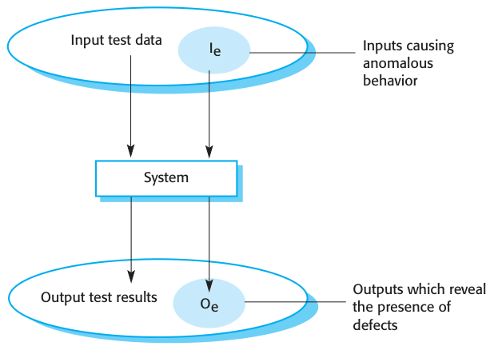
Treat the system as a black box. Only a small part of all possible inputs causes wrong behavior. Defect testing hunts for exactly those inputs. Validation testing uses normal correct inputs and expects correct outputs.把系统当作黑盒看待。只有所有可能输入中的一小部分会导致错误行为。缺陷测试正是要找出这些输入。确认测试使用正常、正确的输入，并期望得到正确的输出。
Testing cannot show that software is free of defects. Exhaustive testing is impossible, and a test that nobody wrote may expose another problem. Dijkstra: "Testing can only show the presence of errors, not their absence."测试不能证明软件没有缺陷。穷举测试做不到，而且没人写过的测试也可能暴露另一个问题。Dijkstra 说：“测试只能显示错误的存在，而不能证明其不存在。”
Step 2: verification and validation第 2 步：验证与确认
In words: verification = did we build the thing as specified; validation = did we build the thing the customer really needs.用文字表述：验证 = 我们是否按规格说明做出了产品；确认 = 我们是否做出了客户真正需要的产品。
Boehm's two questions. Validation（确认）: "Are we building the right product?" Verification（验证）: "Are we building the product right?" Verification checks the stated requirements. Validation goes further, because written requirements do not always reflect what users really need.Boehm 提出的两个问题。确认：“我们做的是正确的产品吗？” 验证：“我们把产品做对了吗？” 验证检查已经写明的需求。确认走得更远，因为书面需求并不总能反映用户的真实需要。
Example: a report prints exactly the columns that the specification lists, so verification succeeds. The managers needed one more column that nobody wrote down, so validation fails.例：一份报表恰好打印了规格说明中列出的各列，所以验证通过。管理人员还需要一列，但没有人把它写下来，所以确认失败。
The aim is confidence that the system is fit for purpose, that is, good enough for its intended use. How much confidence is needed depends on three factors:目的是确信系统适合其用途，也就是足以满足预期使用的要求。需要多大的信心，取决于三个因素：
- Software purpose. A safety-critical controller must be far more reliable than a throw-away prototype.软件用途。 安全关键的控制器必须比一次性原型可靠得多。
- User expectations. Users of a new system tolerate failures. As a product matures they expect reliability.用户期望。 新系统的用户能容忍故障。随着产品成熟，用户会期望它可靠。
- Marketing environment. A company may ship before full testing to be first on the market. Users of a cheap product accept lower reliability.市场环境。 公司可能在完成全部测试之前就发布产品，以便抢先占领市场。廉价产品的用户能接受较低的可靠性。
Step 3: inspections and testing第 3 步：审查与测试
Inspections（审查）analyze requirements, models and source code without running anything, so they are static. Testing is dynamic: it runs the program.审查分析需求、模型和源代码，而不运行任何东西，因此是静态的。测试是动态的：它要运行程序。

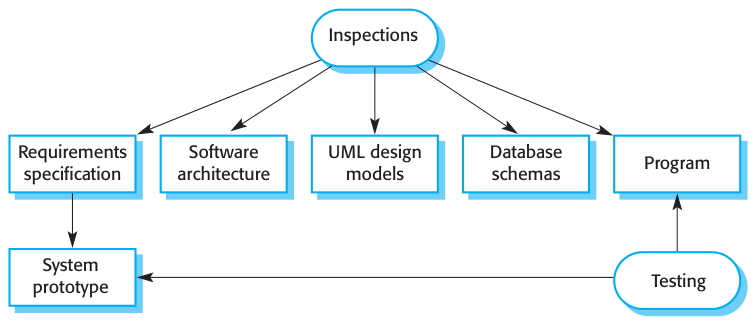
Inspections have three advantages over testing:与测试相比，审查有三个优点：
- No masking. In testing, one error can hide others. After a wrong output you cannot tell whether later anomalies are new errors. Inspection runs nothing, so one session finds many errors.不掩盖。 在测试中，一个错误可能掩盖其他错误。出现错误输出之后，你无法判断后面的异常是不是新的错误。审查不运行任何东西，因此一次审查就能发现许多错误。
- Incomplete versions. An unfinished system can be inspected at no extra cost. Testing it needs specially built test harnesses.未完成的版本。 未完成的系统也可以审查，而且不额外花费成本。测试它则需要专门搭建的测试支架。
- Broader quality. Inspection also checks standards, portability, maintainability, inefficient algorithms and poor style.更广的质量。 审查还检查标准、可移植性、可维护性、低效算法和糟糕的风格。
Inspections cannot replace testing. They are poor at finding defects from unexpected interactions between parts, timing problems and performance problems.审查不能取代测试。它不擅长发现由部件之间意外交互、时序问题和性能问题引起的缺陷。
Step 4: the testing process第 4 步：测试过程
A test case holds the inputs, the expected output and a statement of what is tested. Test data are the inputs alone. Test data can be generated automatically, but test cases cannot, because people who know what the system should do must give the expected results.测试用例包含输入、期望输出以及对所测内容的说明。测试数据只是输入。测试数据可以自动生成，但测试用例不能，因为期望结果必须由了解系统应有行为的人给出。
A commercial system normally passes three stages.一个商用系统通常要经过三个阶段。
| Stage阶段 | Who tests测试人员 | Purpose目的 |
|---|---|---|
| Development testing（开发测试） | Designers and programmers设计人员和程序员 | Discover bugs during development (defect testing)在开发期间发现缺陷（缺陷测试） |
| Release testing（发布测试） | A separate testing team独立的测试团队 | Check that a complete version meets the stakeholders' requirements before release在发布前检查完整版本是否满足利益相关者的需求 |
| User testing（用户测试） | Users or potential users in their own environment (for a product, possibly an internal marketing group)用户或潜在用户在自身环境中进行测试（对于产品，可能是内部市场部门） | Judge fitness for real use; acceptance testing（验收测试）is the customer's formal version判断是否适合实际使用；验收测试是客户进行的正式测试 |
Testing mixes manual and automated work. In automated testing the tests are coded in a program that runs every time. This is faster, above all for regression testing. Testing cannot be fully automated: automated tests cannot judge the look of a graphical interface or detect unanticipated side effects.测试同时包括人工工作和自动化工作。在自动化测试中，测试被写成每次都会运行的程序。这更快，尤其是对回归测试。但测试不能完全自动化：自动化测试无法判断图形界面的外观，也发现不了预料之外的副作用。
Practice练习
Q1. (Classify) Decide whether each activity is validation testing or defect testing. (a) Checking that the total of a three-line invoice equals the value given in the specification. (b) Pasting a 5,000-character name into a 30-character field. (c) Letting a nurse walk through a typical home visit on the prototype. (d) The delivered system meets every line of the specification, yet the users reject it: is this a verification or a validation failure?Q1.（分类）判断下列每项活动属于确认测试还是缺陷测试。(a) 检查一张三行发票的合计是否等于规格说明中给出的值。(b) 将一个 5,000 字符的姓名粘贴到 30 字符的字段中。(c) 让护士在原型上完整地走一遍典型的家访流程。(d) 交付的系统满足规格说明的每一条，但用户仍拒绝接受：这是验证失败还是确认失败？
Answer
(a) Validation testing: a normal input with a known expected output shows that a requirement is met. (b) Defect testing: an unusual input chosen to expose a crash, truncation or data corruption. (c) Validation testing: it reflects expected use and checks the system against the user's expectations. (d) A validation failure: the product was built right (it conforms to the specification) but is not the right product, so the specification missed real needs.(a) 确认测试：以已知预期输出的正常输入，证明某项需求已得到满足。(b) 缺陷测试：选取不寻常的输入，以暴露崩溃、截断或数据损坏。(c) 确认测试：它反映预期的使用方式，并依据用户的期望检验系统。(d) 确认失败：产品本身做得正确（符合规格说明），但它不是正确的产品，即规格说明遗漏了真实的需求。
Q2. (Explain) A manager says: "All 800 tests passed, so the program is defect-free." (a) Reply. (b) How does the number of known defects remaining at delivery affect product support?Q2.（解释）某经理说：“800 个测试全部通过，所以程序没有缺陷。”(a) 请给出你的回复。(b) 交付时残留的已知缺陷数量，会如何影响产品支持？
Answer
(a) Testing can show the presence of errors, not their absence. The 800 tests sample a tiny part of the input space; exhaustive testing is impossible, and a test nobody wrote may still fail. Passing tests only raise confidence, and the confidence needed depends on the software's purpose, user expectations and the market. (b) Every remaining defect that users hit becomes a support request, workaround or patch, so more known defects mean a higher support load and cost and lower customer satisfaction; documenting the known defects lets support staff answer quickly.(a) 测试只能说明错误的存在，而不能说明错误的不存在。这 800 个测试只抽样了输入空间的极小一部分；穷举测试是不可能的，而且没有人编写过的测试仍可能失败。通过测试只能提升信心，所需的信心程度取决于软件的用途、用户期望和市场。(b) 用户遇到的每一个残留缺陷，都会变成一次支持请求、变通方案或补丁，因此已知缺陷越多，支持负担和成本就越高，客户满意度也越低；记录已知缺陷，可以让支持人员快速作答。
易错：全部测试通过不等于没有缺陷。
Unit testing and automated tests ★★★单元测试与自动化测试
Goal. Name the three levels of development testing, write the three parts of an automated unit test, and use a mock object.目标。 说出开发测试的三个层次，写出自动化单元测试的三个部分，并使用模拟对象。
Step 1: the three levels第 1 步：三个层次
In words: development testing = the team that builds the system tests it, from single methods up to the whole system.用文字表述：开发测试 = 构建系统的团队对系统进行测试，从单个方法一直到整个系统。
It is mainly defect testing. The tester is usually the programmer. Testing shows that a failure exists; debugging locates the defect and changes the program.它主要是缺陷测试。测试人员通常就是程序员。测试表明失效存在；调试则定位缺陷并修改程序。
| Level层次 | What is tested测试对象 | Focus重点 |
|---|---|---|
| Unit testing（单元测试） | Individual methods or object classes单个方法或对象类 | Functionality of the object or method对象或方法的功能 |
| Component testing（组件测试） | Several units integrated into a composite component若干单元集成为复合构件 | The component's interfaces构件的接口 |
| System testing（系统测试） | Some or all components integrated部分或全部构件的集成 | Interactions between components构件之间的交互 |
Step 2: testing a class第 2 步：测试一个类
A method is the simplest unit. Its tests are calls with different input parameters (Section 7.3). To test an object class, cover all its features:方法是最简单的单元。对它的测试就是用不同的输入参数进行调用（见第 7.3 节）。要测试一个对象类，需要覆盖它的全部特性：
- Test every operation.测试每一个操作。
- Set and check every attribute.设置并检查每一个属性。
- Put the object into every possible state, by simulating every event that causes a state change.让对象进入每一种可能的状态，方法是模拟每一个引起状态变化的事件。
Operations are ideally tested alone, but some need a sequence. Example: the weather station object has a shutdown operation. Testing it requires that restart has run first.理想情况下，操作应当单独测试，但有些操作需要按顺序执行。例如：天气站对象有一个 shutdown 操作。要测试它，必须先运行 restart。
Inheritance multiplies unit tests. An operation tested in the class that defines it is not thereby tested in its subclasses. A subclass may change the attributes and operations that it relies on. Test an inherited operation in every class where it is used.继承会使单元测试成倍增加。 在定义某个操作的类中测试它，并不因此就测试了它的子类。子类可能会修改它所依赖的属性和操作。应当在用到某个继承操作的每个类中测试它。
Step 3: automated tests第 3 步：自动化测试
In words: an automated test = prepare the input, run the code, and let the computer compare the result with the answer you expected.用文字表述：自动化测试 = 准备输入、运行代码，并让计算机把结果与你预期的答案进行比较。
A framework such as JUnit supplies generic test classes that you extend. It runs all tests and reports success or failure, often in seconds. An automated test has three parts:JUnit 等框架提供你可以扩展的通用测试类。它运行所有测试，并报告成功或失败，通常只需几秒。自动化测试有三个部分：
- Setup: initialize the system with the test case, that is, the inputs and expected outputs.设置： 用测试用例（即输入和期望输出）初始化系统。
- Call: call the object or method under test.调用：调用被测对象或方法。
- Assertion: compare the result with the expected result. True means the test passes. False means it fails.断言： 将结果与期望结果进行比较。为真则测试通过，为假则测试失败。
@Test
public void maxOfThreeValues() {
int[] data = {3, 9, 4}; // setup: input
int result = ArrayUtil.max(data); // call: method under test
assertEquals(9, result); // assertion: expected value
}
Step 4: mock objects第 4 步：模拟对象
If the object under test depends on objects that are not yet written or are slow to use, use mock objects. A mock database can keep a few items in an array and answer without disk access. Mocks also simulate rare events. A mock clock can return any time, whatever the real time.如果被测对象依赖的对象尚未编写，或者使用起来很慢，就使用模拟对象。模拟数据库可以把几个条目保存在数组中，无需访问磁盘即可作答。模拟对象还能模拟罕见事件。模拟时钟可以返回任意时间，而不受真实时间的影响。
Practice练习
Q1. (Write) An account with balance 100 must have balance 70 after withdraw(30). Write the three parts of the automated test, and add one abnormal-input test.Q1.（编写）余额为 100 的账户，在执行 withdraw(30) 之后余额必须为 70。编写该自动化测试的三个部分，并增加一个异常输入测试。
Answer
Setup: Account a = new Account(100); Call: a.withdraw(30); Assertion: assertEquals(70, a.getBalance()); (true means the test passes). Abnormal input: withdraw(150) on the same account must be rejected (error or exception) and leave the balance at 100. This checks that an abnormal input is processed properly and does not corrupt the object.设置：Account a = new Account(100);；调用：a.withdraw(30);；断言：assertEquals(70, a.getBalance());（为真则测试通过）。异常输入：对同一账户执行 withdraw(150) 必须被拒绝（返回错误或抛出异常），且余额保持为 100。这一测试检验异常输入能否被正确处理，且不会破坏对象。
Q2. (Mock objects) An AlarmController sounds an alarm from 22:00 up to, but excluding, 06:00, reading the system clock. (a) How do you test the night behavior at midday? (b) Which times do you try?Q2.（模拟对象）一个 AlarmController 在 22:00 至 06:00（不含 06:00）之间发出警报，它读取系统时钟。(a) 如何在中午测试夜间行为？(b) 应尝试哪些时间？
Answer
(a) Replace the clock by a mock object with the same interface that returns a chosen time; the test is then fast, repeatable and independent of the real time. (b) The boundaries and a midpoint: 21:59 (no alarm), 22:00 (alarm), 02:00 (alarm), 05:59 (alarm), 06:00 (no alarm).(a) 用一个与时钟接口相同、可返回所选时间的模拟对象替换时钟；这样测试既快速、可重复，又不依赖真实时间。(b) 边界值与中点：21:59（不报警）、22:00（报警）、02:00（报警）、05:59（报警）、06:00（不报警）。
思路：模拟对象让"时间"变成测试可以控制的输入。
Choosing test cases: partitions and guidelines ★★★选择测试用例：等价类与准则
Goal. Derive test cases for a given specification by equivalence partitioning. Give boundary values and midpoints with their expected outputs.目标。 依据等价类划分，从给定的规格说明导出测试用例。给出边界值和中间值及其期望输出。
Test cases must be effective in two ways. Used as expected, the component does what it should. If it has defects, the tests reveal them. So design two kinds of case: normal operation, and cases from experience of where problems arise, with abnormal inputs.测试用例必须在两方面都有效：按预期使用时，构件应当做它该做的事；如果有缺陷，测试应当能把它揭示出来。因此要设计两类用例：正常操作，以及根据经验可能出问题的情形，也就是异常输入。
Step 1: equivalence partitioning第 1 步：等价类划分
In words: equivalence partitioning = group the inputs that the program treats alike, then test one from each group, and test the edges of each group extra.用文字表述：等价类划分 = 把程序处理方式相同的输入归为一组，然后从每组中各取一个测试，并额外测试每组的边界。
Inputs and outputs fall into sets with a common characteristic, and a program normally treats all members of a set alike. These sets are equivalence partitions（等价类）. Invalid inputs form their own partitions.输入和输出可以划分为具有共同特征的集合，而程序通常对同一集合的所有成员一视同仁。这些集合就是等价类。无效输入自成一个等价类。
Example: a cinema charges children under 12, adults and people from 65 on differently. That gives three valid partitions by age, and negative ages form an invalid one.例：一家电影院对 12 岁以下儿童、成人和 65 岁及以上的人收取不同的票价。按年龄可以得到三个有效等价类，负数年龄构成一个无效等价类。

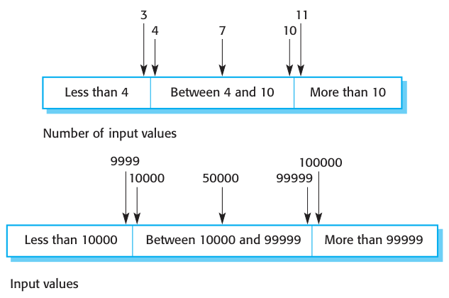
Rule of thumb: choose test values on the boundaries of each partition and close to its midpoint. Programmers think of typical values, and the midpoint covers them. Boundary values are often atypical, for example zero. They are overlooked, and failures cluster there.经验法则： 在每个等价类的边界上，以及接近其中间值处选择测试值。程序员通常想到的是典型值，而中间值正好覆盖了它们。边界值往往是非典型的，例如零。它们容易被忽视，而失效往往集中在这里。
Where do partitions come from? From the specification, the user documentation and experience. Deriving tests from the specification alone is black-box testing（黑盒测试）: no knowledge of the code is needed. White-box testing（白盒测试）uses the code to find further tests.等价类从哪里来？来自规格说明、用户文档和经验。仅从规格说明导出测试，就是黑盒测试：不需要了解代码。白盒测试则利用代码来找出更多的测试。
Step 2: guidelines第 2 步：准则
Guidelines encapsulate experience of which test cases find errors. For sequences, arrays and lists:准则凝聚了哪些测试用例能够发现错误的经验。对于序列、数组和列表，准则包括：
- Test with sequences of a single value. Programmers think of sequences as having several values.用只含单个值的序列进行测试。程序员想到的序列通常含有多个值。
- Use sequences of different sizes in different tests. A defective program is then less likely to give a correct output by accident.在不同的测试中使用大小不同的序列。这样，有缺陷的程序偶然给出正确输出的可能性就更小。
- Access the first, middle and last elements. This reveals problems at partition boundaries.访问第一个、中间和最后一个元素。这能揭示等价类边界上的问题。
General guidelines: force every error message, overflow input buffers, repeat the same input many times, and force results to be too large or too small.通用准则：强制触发每一条错误信息，使输入缓冲区溢出，重复同一输入多次，并迫使结果过大或过小。
Practice练习
Q1. (Design) The method catWhiteSpace of a Paragraph object replaces every sequence of blank characters by a single blank. Identify the test partitions and derive tests with expected results (_ stands for a blank).Q1.（设计）Paragraph 对象的方法 catWhiteSpace 将每一串连续空白字符替换为单个空格。请识别测试划分，并导出带有预期结果的测试（_ 代表一个空格）。
Answer
Partitions by the structure of the input: empty paragraph; single character; only single blanks (nothing to change); a run of two or more blanks inside the text; a run at the first position; a run at the last position; only blanks; several runs of different lengths.按输入的结构划分：空段落；单个字符；仅有单个空格（无需改动）；文本内部由两个或更多空格组成的连续空白串；位于第一个位置的连续空白串；位于最后一个位置的连续空白串；仅由空白组成；多个长度不同的连续空白串。
| Input输入 | Expected预期结果 | Partition划分 |
|---|---|---|
"" |
"" |
empty paragraph空段落 |
"a" |
"a" |
single character单个字符 |
"a_b_c" |
"a_b_c" |
only single blanks仅有单个空格 |
"a__b" |
"a_b" |
shortest run (two blanks)最短的连续空白串（两个空格） |
"a_____b" |
"a_b" |
long run较长的连续空白串 |
"__a" |
"_a" |
run at the first position位于第一个位置的连续空白串 |
"a__" |
"a_" |
run at the last position位于最后一个位置的连续空白串 |
"___" |
"_" |
only blanks仅由空白组成 |
"a__b___c____d" |
"a_b_c_d" |
several runs of different lengths多个长度不同的连续空白串 |
"_" |
"_" |
a single blank单个空格 |
思路：先按输入的结构分类，再在每一类的边缘（空、单个、首、尾）取值，并写出期望输出。
Q2. (True/false) "If one value from an equivalence partition passes its test, every value in that partition passes." Justify.Q2.（判断）“若等价类中的某一个值通过其测试，则该类中的每一个值都会通过。”请说明理由。
Answer
False. Partitioning only assumes that the program treats all members of a partition alike. Boundary values are often atypical (zero, the maximum), and the code may hide sub-partitions such as exception handling for part of the range. Hence tests at the boundaries and midpoint of each partition, and white-box inspection for further partitions.错误。划分只假定程序对同一划分内的所有成员一视同仁。边界值往往不典型（如零、最大值），而且代码中可能隐藏子划分，例如针对取值范围某一部分的异常处理。因此，应在每个划分的边界和中点处设计测试，并通过白盒分析来发现更多划分。
Component and system testing ★★★构件测试与系统测试
Goal. Name the three classes of interface error with an example each. Explain what system testing finds that component testing cannot. Design a use case-based test.目标。 说出三类接口错误，每类举一个例子。解释系统测试能发现而构件测试发现不了的问题。设计一个基于用例的测试。
Step 1: component (interface) testing第 1 步：构件（接口）测试
In words: component testing = test the group of objects through the door that other code uses, because errors hide between the objects.用文字表述：构件测试 = 通过其他代码使用的入口来测试一组对象，因为错误隐藏在对象之间。
A component is made of several interacting objects, and other code reaches it through its interface. Assume that the unit tests of the inner objects are complete. Component testing then shows that the interface behaves according to its specification. The test cases go to the interface of the whole component.构件由若干相互作用的对象组成，其他代码通过它的接口来访问它。假设内部对象的单元测试已经完整。这时，构件测试就能证明接口的行为符合其规格说明。测试用例针对整个构件的接口。

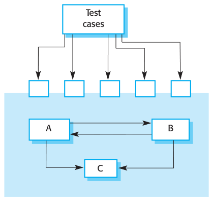
There are four types of interface.接口共有四种类型。
| Interface接口类型 | How components communicate构件间的通信方式 | Typical use典型用途 |
|---|---|---|
| Parameter参数 | Data (or function references) are passed from one component to another数据（或函数引用）从一个构件传递给另一个构件 | Methods of an object对象的方法 |
| Shared memory共享内存 | A block of memory is shared; one component writes, others read一块内存被共享；一个构件写入，其他构件读取 | Embedded systems: sensors write data for other components嵌入式系统：传感器为其他构件写入数据 |
| Procedural过程式 | A component encapsulates procedures that others call构件封装了供其他构件调用的过程 | Objects and reusable components对象与可复用构件 |
| Message passing消息传递 | A component requests a service by sending a message; a return message carries the result构件通过发送消息请求服务；返回消息携带结果 | Client–server systems, some object-oriented systems客户端-服务器系统、部分面向对象系统 |
Interface errors are among the most common errors in complex systems. They fall into three classes.接口错误是复杂系统中最常见的错误之一。它们可分为三类。
| Error class错误类别 | Meaning含义 | Example示例 |
|---|---|---|
| Interface misuse接口误用 | The caller uses the interface wrongly调用者错误地使用接口 | Wrong parameter type, order or number参数类型、顺序或个数错误 |
| Interface misunderstanding接口误解 | The caller assumes wrong behavior of the called component调用者对被调用构件的行为作出了错误假设 | Binary search called with an unordered array对无序数组调用二分查找 |
| Timing error时序错误 | Producer and consumer run at different speeds (real-time systems with shared memory or message passing)生产者与消费者以不同速度运行（采用共享内存或消息传递的实时系统） | Consumer reads out-of-date data because the producer has not updated it由于生产者尚未更新数据，消费者读取了过期数据 |
Interface faults are hard to find, because they may show only under unusual conditions. Guidelines:接口故障很难发现，因为它们可能只在不寻常的条件下才出现。准则如下：
- For each call to an external component, test parameter values at the extreme ends of their ranges.对外部构件的每一次调用，都应测试参数在其取值范围两端的值。
- Where pointers cross the interface, always test null pointers.凡是有指针跨越接口的地方，都应测试空指针。
- For a procedural interface, design tests that make the called component fail.对于过程式接口，设计能使被调用构件失效的测试。
- In message-passing systems, stress test: send many more messages than expected.在消息传递系统中，要做压力测试：发送比预期多得多的消息。
- With shared memory, vary the order in which the components are activated.对于共享内存，改变各构件被激活的顺序。
Step 2: system testing第 2 步：系统测试
In words: system testing = join the components into a system, then test how they work together.用文字表述：系统测试 = 把构件组装成系统，然后测试它们如何协同工作。
System testing checks that components are compatible, interact correctly and transfer the right data at the right time. Every system shows emergent behavior（涌现行为）: functionality that appears only when components are combined (see Section 1.3). Example: an authentication component plus a database-update component gives a feature that restricts updates to authorized users. This must be tested. Unplanned emergent behavior is unwanted, so tests must also check that the system does only what it should.系统测试检查构件是否兼容、交互是否正确，以及是否在正确的时间传递了正确的数据。每个系统都会表现出涌现行为：只有把构件组合起来才会出现的功能。例如：一个认证构件加上一个数据库更新构件，就得到了一个把更新限制在授权用户范围内的功能。这必须加以测试。非计划中的涌现行为是不希望出现的，因此测试还必须检查系统是否只做它应该做的事。
Use case-based testing（基于用例的测试）fits this focus. Several components implement each use case, so testing it forces their interactions. The sequence diagram of the use case shows which objects are involved and which inputs and outputs the tests need.基于用例的测试与这一重点相契合。每个用例由若干构件共同实现，因此测试该用例必然会涉及它们之间的交互。用例的时序图显示了涉及哪些对象，以及测试需要哪些输入和输出。

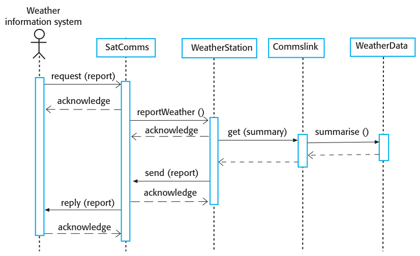
Exhaustive testing is impossible, so testing uses a subset chosen by policy. General policy: every statement runs at least once. Experience-based policy: all functions reached through menus, combinations of functions, and every function with correct and incorrect input.穷举测试做不到，因此测试只能使用按策略选出的子集。通用策略：每条语句至少运行一次。基于经验的策略：通过菜单可以访问的所有功能、功能的组合，以及每个功能的正确输入和错误输入。
Integrate incrementally: add one component, test the system, add the next. A new problem is then probably due to the component added last.增量集成：每次加入一个构件，就测试一次系统，然后再加入下一个。这样，新出现的问题很可能是最后加入的那个构件造成的。
Practice练习
Q1. (Classify) Name the class of each interface error and give a test that reveals it. (a) copy(dest, src) is called as copy(src, dest). (b) binarySearch(list, key) is called with an unsorted list. (c) A display reads a temperature buffer before the sensor task has written the new value. (d) A caller assumes a queue is unbounded and never checks for overflow.Q1.（分类）说明每种接口错误所属的类别，并给出能揭示它的测试。(a) copy(dest, src) 被以 copy(src, dest) 的方式调用。(b) binarySearch(list, key) 以无序列表作为参数被调用。(c) 显示器在传感器任务写入新值之前读取了温度缓冲区。(d) 调用者假定队列是无界的，从不检查溢出。
Answer
(a) Misuse (wrong parameter order): call with distinct, recognizable values and check the result. (b) Misunderstanding (the caller does not know that the callee needs sorted input): call with unsorted lists and check the specified failure behavior. (c) Timing error: vary the activation order or delay the producer, and check that the consumer sees current data. (d) Misunderstanding (wrong assumption about capacity): fill the queue to capacity and beyond, and check how the caller handles the overflow.(a) 误用（参数顺序错误）：用互不相同且易于辨认的值进行调用，并检查结果。(b) 误解（调用者不知道被调用者需要有序输入）：用无序列表进行调用，并检查规定的失效行为。(c) 时序错误：改变激活顺序或延迟生产者，并检查消费者能否看到当前数据。(d) 误解（对容量的假设有误）：将队列填满至容量上限并继续超出，检查调用者如何处理溢出。
Q2. (Design) For the use case "collect weather data" (SatComms:request → WeatherStation:reportWeather → Commslink:Get(summary) → WeatherData:summarize) design one normal test and one exception test.Q2.（设计）针对用例“收集气象数据”（SatComms:request → WeatherStation:reportWeather → Commslink:Get(summary) → WeatherData:summarize），设计一个正常测试和一个异常测试。
Answer
Normal: prepare raw data and the expected summary; send a report request from SatComms; check that an acknowledgment comes back, that reportWeather, Get(summary) and summarize are called in this order, and that the returned report equals the prepared summary. Exception: make the communications link fail (or WeatherData return no data) when Get(summary) is called; check that the failure is reported or retried and that the request neither hangs nor corrupts data.正常情况：准备原始数据和预期摘要；从 SatComms 发送报告请求；检查是否收到确认，reportWeather、Get(summary) 和 summarize 是否按此顺序被调用，以及返回的报告是否与所准备的摘要一致。异常情况：在调用 Get(summary) 时使通信链路失效（或使 WeatherData 不返回数据）；检查失效是否被报告或重试，并且请求既不挂起也不破坏数据。
Test-driven development ★★测试驱动开发
Goal. Describe the TDD cycle, say why a new test must fail first, and give its benefits and limits.目标。 描述 TDD 循环，说明为什么新测试必须先失败，并给出它的优点和局限。
In words: test-driven development = write the test first, then write just enough code to pass it, and repeat in small steps.用文字表述：测试驱动开发 = 先写测试，再写刚好能通过它的代码，并以小步循环往复。
Test-driven development (TDD)（测试驱动开发）interleaves testing and coding. The code is developed in small increments together with the tests for each increment. The next increment starts only when all tests pass. TDD came from Extreme Programming (Section 2.3).测试驱动开发（TDD）让测试和编码交替进行。代码以小增量的方式开发，每个增量都配有相应的测试。只有当所有测试通过时，才开始下一个增量。TDD 源自极限编程（见第 2.3 节）。

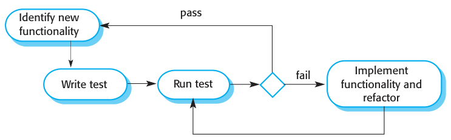
- Identify the next small increment of functionality.确定下一个小的功能增量。
- Write an automated test for it (Section 7.2).为它编写一个自动化测试（见第 7.2 节）。
- Run it with all other tests. It fails, on purpose, because the functionality does not exist yet.与所有其他测试一起运行。它按预期失败，因为该功能还不存在。
- Implement the functionality and run the tests again. This may include refactoring（重构）, restructuring code without changing its behavior.实现该功能，然后再次运行测试。这一步可能包括重构，即在不改变行为的前提下重新组织代码。
- When all tests pass, take the next increment.当所有测试都通过时，进入下一个增量。
A new test must fail first. If it passed at once, the function would already exist or the test could never fail. Either way it adds nothing.新测试必须先失败。如果它一开始就通过，那么该功能要么已经存在，要么测试根本不可能失败。无论哪种情况，它都没有任何价值。
Benefits. The test forces you to understand what the code must do. Every code segment has a test. The suite grows into a regression suite. A failing test points at the new code. The tests document what the code should do.优点。 测试迫使你理解代码必须做什么。每段代码都有对应的测试。测试集逐渐发展成为回归测试集。失败的测试会直接指向新代码。测试还记录了代码应当做什么。
Limits.局限。
- It is hard for large reused components and legacy systems, which cannot be split into small testable parts.对于大型复用构件和遗留系统，它很难应用，因为它们无法被拆分成小的、可测试的部分。
- It is ineffective for multithreaded systems, because threads interleave differently in each run.对多线程系统效果不佳，因为每次运行中线程的交错方式都不同。
- It does not replace system testing, which validates the whole system against all requirements.它不能取代系统测试。系统测试要对照全部需求来确认整个系统。
Practice练习
Q1. (Calculation) A suite has 400 tests. A manual tester needs 5 minutes per test; the automated suite runs in 20 seconds. Compare the cost of 10 regression runs and state the consequence for TDD.Q1.（计算）某测试套件有 400 个测试。人工测试人员每个测试需要 5 分钟，而自动化套件只需 20 秒即可运行完毕。比较 10 次回归测试的成本，并说明其对 TDD 的影响。
Answer
Manual: 400 × 5 min = 2,000 min = 33.3 h per run (about 4.2 working days of 8 h), so 10 runs cost 333 h. Automated: 10 × 20 s = 200 s ≈ 3.3 min. The speed-up per run is 2,000 × 60 / 20 = 6,000. At the manual cost, regression runs are skipped or reduced to a few chosen tests; at the automated cost the whole suite can run after every small change, which TDD requires.人工：400 × 5 min = 2,000 min = 每次运行 33.3 h（约合 4.2 个 8 h 工作日），因此 10 次运行需 333 h。自动化：10 × 20 s = 200 s ≈ 3.3 min。每次运行的加速比为 2,000 × 60 / 20 = 6,000。在人工成本下，回归测试要么被跳过，要么被缩减为少数几个选定的测试；而在自动化成本下，整个套件可以在每次微小修改后运行，这正是 TDD 所要求的。
Q2. (True/false) Justify each. (a) A new TDD test should pass the first time it runs. (b) TDD makes system testing unnecessary. (c) TDD suits a team that wraps a large legacy system.Q2.（判断）逐一说明理由。(a) 新的 TDD 测试应在第一次运行时即通过。(b) TDD 使系统测试变得不必要。(c) TDD 适用于负责封装一个大型遗留系统的团队。
Answer
(a) False: it must fail first, which shows that the functionality is missing and that the test can detect it; a test that passes at once adds nothing. (b) False: system testing still validates the system against all stakeholders' requirements and tests performance, reliability and unwanted behavior. (c) False: a legacy system cannot be decomposed into small testable increments, so tests have to be written for the system as a whole.(a) 错误：该测试必须先失败，这表明功能确实缺失，且测试能够检测到它；一个立即通过的测试没有任何价值。(b) 错误：系统测试仍需依据所有利益相关者的需求对系统进行确认，并测试性能、可靠性和不希望出现的行为。(c) 错误：遗留系统无法被分解为若干可测试的小增量，因此测试必须针对整个系统来编写。
Release testing ★★发布测试
Goal. Say how release testing differs from system testing in development, and describe requirements-based, scenario, performance and stress tests.目标。 说明发布测试与开发中的系统测试有何不同，并描述基于需求、场景、性能和压力测试。
In words: release testing = a separate team tries the complete version against the specification before it goes out.用文字表述：发布测试 = 在版本交付之前，由一个独立团队依据规格说明对完整版本进行测试。
Release testing tests a release meant for use outside the development team. Its main goal is to convince the supplier that the system is good enough to deliver.发布测试针对的是供开发团队之外使用的版本。其主要目标是让供应方相信系统好到可以交付。
| System testing (development)开发期间的系统测试 | Release testing发布测试 | |
|---|---|---|
| Who测试人员 | The development team开发团队 | A separate team, not the developers独立的团队，而非开发人员 |
| Purpose目的 | Discover bugs (defect testing)发现缺陷（缺陷测试） | Validate that the system meets its requirements and is good enough for use确认系统满足其需求且足以投入使用 |
| Basis依据 | Components and their interactions; knowledge of the code allowed构件及其交互；允许利用代码知识 | The specification only: black-box testing, also called functional testing（功能测试）仅依据规格说明：黑盒测试，也称功能测试 |
Requirements-based testing基于需求的测试
Requirements should be testable. Requirements-based testing（基于需求的测试）derives a set of tests for each requirement. It is validation testing. One requirement usually needs several tests. Traceability records link each test to the requirement it checks.需求应当是可测试的。基于需求的测试为每条需求导出一组测试，它属于确认测试。一条需求通常需要多个测试。可追溯性记录把每个测试与它所检查的需求连接起来。
Scenario testing场景测试
Scenario testing（场景测试）derives tests from typical stories of use. Example: a nurse prints her visit list, downloads patient records to a laptop, visits patients, updates the records and uploads them. One scenario exercises many requirements. The tester plays the nurse and makes deliberate mistakes, to check error handling.场景测试从典型的使用故事中导出测试。例：护士打印她的探访清单，把患者记录下载到笔记本电脑上，去探访患者，更新记录，然后再上传。一个场景会覆盖许多需求。测试人员扮演护士并故意犯错，以检查错误处理。
Performance and stress testing性能与压力测试
Performance testing checks that the system can process its intended load, by raising the load until performance is unacceptable. The tests follow an operational profile（运行剖面）: a mix of tests that matches the real mix of work. Example: if 90% of transactions are of type A, then 90% of 2,000 tests, that is 1,800, are of type A.性能测试检查系统能否处理其预期负载，方法是不断增加负载，直到性能无法接受为止。测试遵循运行剖面：由与真实工作组合相匹配的一组测试构成。例：如果 90% 的交易属于 A 类，那么 2000 个测试中的 90%，即 1800 个，应当是 A 类。
Stress testing（压力测试）goes beyond the design limits, because defects cluster at the limits. Example: a system is designed for 300 transactions per second. Raise the load well past 300 until it fails. Stress testing has two purposes:压力测试超出设计极限，因为缺陷往往集中在极限处。例：一个系统设计为每秒处理 300 笔交易。把负载提高到远超 300，直到它失效。压力测试有两个目的：
- Failure behavior. An overload should not corrupt data. The system should "fail soft".失效行为。 过载时不应破坏数据。系统应当“平稳降级”（fail soft）。
- Hidden defects. It reveals defects that appear only at full load.隐藏缺陷。 它能揭示只在满负载下才出现的缺陷。
Practice练习
Q1. (Design) Requirements: R1 "The system shall lock an account after three consecutive failed log-in attempts." R2 "A successful log-in resets the failure count." Derive requirements-based tests with traceability.Q1.（设计）需求：R1 “系统应在连续三次登录失败后锁定账户。” R2 “登录成功会将失败计数重置。”导出基于需求的测试，并附上可追溯性记录。
Answer
W = wrong password, C = correct password.W 表示错误密码，C 表示正确密码。
| Test测试 | Steps步骤 | Expected预期结果 | Covers覆盖 |
|---|---|---|---|
| T1 | W, C | Log-in succeeds登录成功 | R2 |
| T2 | W, W, C | Succeeds; account not locked (two failures, just below the limit)成功；账户未被锁定（两次失败，刚好低于上限） | R1 |
| T3 | W, W, W, C | Locked after the third W; the later C is rejected第三次 W 之后被锁定；随后的 C 被拒绝 | R1 |
| T4 | W, W, C, W, W | Not locked: C reset the count, so only two consecutive failures未锁定：C 重置了计数，因此只有两次连续失败 | R2 |
Each requirement has several tests, and the Covers column is the traceability record.每项需求都有若干测试，而“覆盖”列即为可追溯性记录。
Q2. (Discuss) Give arguments for and against developers testing their own code. Which stage must be independent, and why?Q2.（讨论）给出开发人员测试自己代码的赞成与反对理由。哪个阶段必须独立进行？为什么？
Answer
For: developers know the code and find and fix defects quickly and cheaply (unit tests, TDD). Against: the same misunderstanding of the requirements appears in the code and in the tests; developers tend to show that the code works rather than to break it; blind spots remain. So the development team does unit, component and development system testing, but release testing is done by a separate team that validates the system against the requirements without bias from having built it.赞成：开发人员熟悉代码，能够快速且廉价地发现并修复缺陷（单元测试、TDD）。反对：对需求的同一误解会同时出现在代码和测试中；开发人员往往倾向于证明代码能工作，而不是试图将其破坏；盲点依然存在。因此，开发团队负责单元测试、构件测试和开发期间的系统测试，而发布测试则由一个独立的团队完成，该团队依据需求对系统进行确认，不受其参与构建所带来的偏见影响。
User testing ★★用户测试
Goal. Tell alpha, beta and acceptance testing apart, and list the six stages of acceptance testing.目标。 区分 α 测试、β 测试和验收测试，并列出验收测试的六个阶段。
In words: user testing = real users or customers try the system in their own setting, which the developers cannot copy.用文字表述：用户测试 = 真实用户或客户在他们自己的环境中试用系统，而开发者无法复制这种环境。
User testing remains essential after thorough system and release testing. The user's working environment affects reliability, performance, usability and robustness. Example: a hospital system is used amid emergencies and conversations with relatives. No test lab contains that.在彻底的系统测试和发布测试之后，用户测试仍然必不可少。用户的工作环境会影响可靠性、性能、可用性和健壮性。例：医院系统要在突发状况和与家属交谈的环境中使用。任何测试实验室都无法模拟这种环境。
| Type类型 | Who tests测试人员 | What is tested测试对象 | Typical software典型软件 |
|---|---|---|---|
| Alpha testing（α 测试）α 测试 | A selected group of users working closely with the development team一小群与开发团队紧密合作的用户 | Early releases during development开发期间的早期版本 | Products and apps; also custom software, especially in agile development产品和应用；也适用于定制软件，尤其是敏捷开发中的定制软件 |
| Beta testing（β 测试）β 测试 | A larger group of users, possibly anyone interested人数更多的一批用户，可能是任何感兴趣的人 | An early, sometimes unfinished release; users experiment and report problems早期版本，有时尚未完成；用户试用并报告问题 | Products used in many different settings用于多种不同环境的产品 |
| Acceptance testing验收测试 | The customer, using its own data客户使用自己的数据进行测试 | The finished system, to decide whether to accept it from the developer and deploy it已完成的系统，用于决定是否从开发方接收并部署 | Custom systems定制系统 |
Acceptance testing is part of custom development, because acceptance means that final payment is due. It has six stages.验收测试是定制开发的一部分，因为验收意味着应付最终款项。它分为六个阶段。

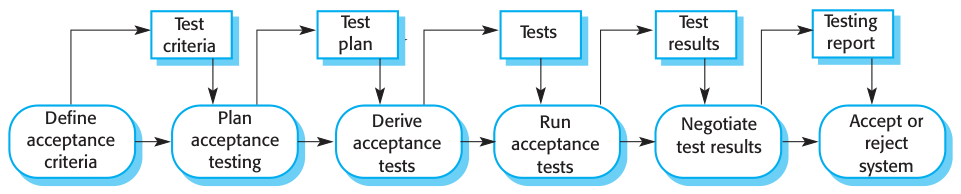
| Stage阶段 | Content内容 |
|---|---|
| 1. Define acceptance criteria1. 定义验收标准 | Ideally before the contract is signed; part of the contract, approved by customer and developer. In practice hard, since detailed requirements are missing and will change理想情况下应在合同签订前完成；它是合同的一部分，须经客户与开发方共同批准。实践中很难做到，因为详细需求尚不完整且会发生变化 |
| 2. Plan acceptance testing2. 规划验收测试 | Resources, time, budget and schedule; required requirements coverage and the order in which features are tested; risks (crashes, inadequate performance) and how to mitigate them资源、时间、预算和进度；所需的需求覆盖率以及功能的测试顺序；风险（崩溃、性能不足）及其缓解措施 |
| 3. Derive acceptance tests3. 导出验收测试 | Tests of functional and non-functional characteristics (e.g., performance), ideally covering all requirements. Objective criteria are hard to set, so there is room for argument about whether a test proves a criterion met对功能特性和非功能特性（例如性能）的测试，理想情况下应覆盖全部需求。客观的标准很难设定，因此对于某项测试是否证明某条标准已被满足，存在争议的余地 |
| 4. Run acceptance tests4. 执行验收测试 | Ideally in the real environment, otherwise in a user-testing environment; hard to automate because users interact with the system; users may need training理想情况下在真实环境中进行，否则在用户测试环境中进行；由于用户需要与系统交互，因此很难自动化；用户可能需要培训 |
| 5. Negotiate test results5. 协商测试结果 | Rarely do all tests pass; developer and customer decide whether the system is good enough and how the problems will be fixed很少会所有测试都通过；开发方与客户共同决定系统是否足够好，以及问题将如何修复 |
| 6. Reject/accept system6. 拒绝/接受系统 | A meeting decides; if the system is rejected, the problems are fixed and acceptance testing repeats由会议决定；若系统被拒绝，则修复问题并重复验收测试 |
Rarely do all tests pass. Customers want to use the software soon, so the outcome is often conditional acceptance: the customer accepts so that deployment can begin, and the supplier agrees to repair urgent problems quickly.很少所有测试都能通过。客户想尽快使用软件，因此结果往往是有条件验收：客户接受软件，以便开始部署，供应方同意迅速修复紧急问题。
In agile methods such as Extreme Programming there may be no separate acceptance stage. The end user is part of the team, supplies user stories and defines the tests. These automated tests are the acceptance tests.在极限编程等敏捷方法中，可能没有单独的验收阶段。最终用户是团队的一员，提供用户故事并定义测试。这些自动化测试就是验收测试。
Practice练习
Q1. (Classify) Alpha, beta or acceptance testing? (a) A studio releases an unfinished game to thousands of volunteers worldwide. (b) A bank runs a custom loan system on its own data in a copy of its environment before paying the final instalment. (c) Five long-standing customers work with the developers on every early build.Q1.（分类）属于 α 测试、β 测试还是验收测试？(a) 一家工作室将一款未完成的游戏发布给全球数千名志愿者。(b) 一家银行在其环境副本中，使用自己的数据运行定制的贷款系统，然后再支付最后一期款项。(c) 五位长期客户在每个早期版本的开发过程中都与开发人员合作。
Answer
(a) Beta testing: a large group in unknown environments tests an early release. (b) Acceptance testing: the customer decides whether to accept custom software, and payment depends on it. (c) Alpha testing: a selected group works closely with the developers.(a) β 测试：一大群身处未知环境的用户测试早期版本。(b) 验收测试：客户决定是否接受定制软件，而付款取决于这一决定。(c) α 测试：一小群挑选出的用户与开发人员紧密合作。
Q2. (Process) List the six stages of acceptance testing in order. Why does the outcome often become conditional acceptance?Q2.（过程）按顺序列出验收测试的六个阶段。为什么结果往往会成为有条件验收？
Answer
Define acceptance criteria; plan acceptance testing; derive acceptance tests; run acceptance tests; negotiate test results; accept or reject the system. It is unlikely that every test passes, but customers want to use the software at once: they may have bought hardware, trained staff and changed processes, so the cost of not using it exceeds the cost of workarounds. They accept so that deployment can begin, and the supplier agrees to repair urgent problems and deliver a new version quickly.定义验收标准；规划验收测试；导出验收测试；执行验收测试；协商测试结果；接受或拒绝系统。几乎不可能所有测试都通过，但客户希望立即使用软件：他们可能已经购买了硬件、培训了员工并改变了工作流程，因此不使用软件的代价超过了变通方案的代价。客户接受系统，以便开始部署，而供应方则同意尽快修复紧急问题并交付新版本。
Terms to recognise ★需要认识的术语
| Term术语 | What to know要知道什么 |
|---|---|
| Path testing（路径测试） | White-box testing that exercises every independent path through a component, so every statement runs at least once白盒测试，覆盖构件的每一条独立路径，使每条语句至少运行一次 |
| Cyclomatic complexity（圈复杂度） | The number of independent paths of a component. It equals the number of decisions plus one构件的独立路径数。它等于判断点数加一 |
| Stub（桩） | Code that stands in for a lower module that is not yet integrated and returns canned answers代替尚未集成的下层模块、返回预设答案的代码 |
| Driver（驱动程序） | Test code that calls a low-level module so that it can be tested alone调用底层模块、以便单独测试它的测试代码 |
| Top-down, bottom-up, big-bang integration自顶向下、自底向上、大爆炸集成 | Top-down uses stubs. Bottom-up uses drivers. Big-bang joins everything at once, so faults are hard to locate自顶向下使用桩。自底向上使用驱动。大爆炸一次把所有部分组装在一起，因此故障难以定位 |
| Test planning（测试计划） | Scheduling and resourcing the testing activities: what is tested, when, and how tests are recorded测试活动的调度与资源安排：测什么、何时测、如何记录测试 |
| Cleanroom processCleanroom 过程 | A development process that claims inspections find more than 90% of program errors一种声称审查能发现 90% 以上程序错误的开发过程 |
| Fail soft平稳降级（fail soft） | Under overload the system degrades gracefully, without corrupting data or losing services unexpectedly过载时系统能够平稳降级，既不破坏数据，也不会意外丧失服务 |
Exam-style questions考试题型练习
Q1. (Concepts, 10 marks)Q1.（概念，10 分）
- (a) Define verification and validation using Boehm's two questions and give one example of each for a hospital drug-prescribing system. (4 marks)(a) 用 Boehm 提出的两个问题定义验证与确认，并为医院的药物处方系统各举一例。（4 分）
- (b) Using the input–output model of testing, distinguish validation testing from defect testing. (3 marks)(b) 利用测试的输入—输出模型，区分确认测试与缺陷测试。（3 分）
- (c) Give two advantages of inspections over testing and one kind of defect they cannot reliably find. (3 marks)(c) 给出审查相对于测试的两个优点，以及审查无法可靠发现的一类缺陷。（3 分）
Answer
(a) Validation asks "Are we building the right product?": the software must meet the customer's real expectations, which goes beyond the specification. Verification asks "Are we building the product right?": the software must meet its stated functional and non-functional requirements. Verification example: check that the system issues an allergy warning when a patient is prescribed a drug they are allergic to, as the specification states. Validation example: observe whether prescribers can work with the system on a ward round without learning to ignore its warnings, i.e. whether the specification fits their real work.(a) 确认问的是“我们是否在构建正确的产品？”：软件必须满足客户的真实期望，而这超出了规格说明的范围。验证问的是“我们是否在正确地构建产品？”：软件必须满足其所陈述的功能需求和非功能需求。验证示例：检查当患者被开具了其过敏的药物时，系统是否按规格说明发出过敏警告。确认示例：观察开处方的医生在查房时能否使用该系统，而无需学会忽略其警告，即规格说明是否符合他们的实际工作。
(b) The system is a black box mapping inputs from \(I\) to outputs in \(O\). A subset \(I_e\) of the inputs causes erroneous behavior, and their outputs \(O_e\) reveal defects. Defect testing designs tests to find inputs in \(I_e\); they may be obscure and unlike normal use. Validation testing uses correct, expected-use inputs outside \(I_e\) and checks that the expected outputs appear, showing that the requirements are met. The boundary between the two is blurred.(b) 系统是一个黑盒，它将来自 \(I\) 的输入映射到 \(O\) 中的输出。输入中的一个子集 \(I_e\) 会导致错误行为，其输出 \(O_e\) 会揭示缺陷。缺陷测试旨在寻找位于 \(I_e\) 中的输入；这些输入可能比较隐蔽，与正常使用不同。确认测试则使用位于 \(I_e\) 之外的、正确且符合预期使用的输入，并检查是否出现预期的输出，从而表明需求已得到满足。两者之间的界限是模糊的。
(c) Advantages: errors cannot mask one another because nothing is executed, so one session finds many errors; incomplete versions can be inspected without test harnesses (inspections also assess standards, portability and maintainability). Inspections cannot reliably find defects caused by unexpected interactions between parts, timing problems or performance problems.(c) 优点：由于不执行任何代码，错误不会相互掩盖，因此一次审查会议即可发现许多错误；未完成的版本无需测试框架即可审查（审查还能评估标准符合性、可移植性和可维护性）。审查无法可靠地发现由各部分之间意外交互、时序问题或性能问题引起的缺陷。
思路：先背 Boehm 两句话并各举一例，再用 Ie/Oe 区分两种测试，最后列检查的优点和局限。
Q2. (Test design, 12 marks) A function price(q) returns the price of q items at $20 each. The quantity q must be an integer from 1 to 100: items 1 to 9 carry no discount, 10 to 49 get 5% off, 50 to 100 get 10% off; any other q is rejected with an error.Q2.（测试设计，12 分）函数 price(q) 返回 q 件商品的价格，每件 $20。数量 q 必须为 1 至 100 之间的整数：1 至 9 件不打折，10 至 49 件享受 5% 的折扣，50 至 100 件享受 10% 的折扣；其他任何 q 值都以错误形式被拒绝。
- (a) Identify the input equivalence partitions. (3 marks)(a) 识别输入的等价类。（3 分）
- (b) Choose test inputs with the boundary-and-midpoint rule and give the expected output of each. (6 marks)(b) 运用边界与中点规则选择测试输入，并给出每个输入的预期输出。（6 分）
- (c) Is this black-box or white-box design? Name one white-box addition. (3 marks)(c) 这是黑盒设计还是白盒设计？请指出一项白盒补充内容。（3 分）
Answer
(a) Five partitions by value: q < 1 (invalid), 1 to 9 (no discount), 10 to 49 (5%), 50 to 100 (10%), q > 100 (invalid). A sixth, invalid-type partition holds non-integers such as 2.5 or "abc".(a) 按取值划分为五个等价类：q < 1（无效）、1 至 9（不打折）、10 至 49（5%）、50 至 100（10%）、q > 100（无效）。另有第六个无效类型的划分，包含非整数，例如 2.5 或 “abc”。
(b) Boundaries and a midpoint of each valid partition, plus values just outside:(b) 每个有效划分的边界值和中点，以及刚好位于其外侧的值：
| q | Partition划分 | Expected output预期输出 |
|---|---|---|
| 0 | below 1小于 1 | error错误 |
| 1 | 1 to 9, lower bound1 至 9，下界 | $20 |
| 5 | 1 to 9, midpoint1 至 9，中点 | $100 |
| 9 | 1 to 9, upper bound1 至 9，上界 | $180 |
| 10 | 10 to 49, lower bound10 至 49，下界 | $190 (200 × 0.95) |
| 30 | 10 to 49, midpoint10 至 49，中点 | $570 (600 × 0.95) |
| 49 | 10 to 49, upper bound10 至 49，上界 | $931 (980 × 0.95) |
| 50 | 50 to 100, lower bound50 至 100，下界 | $900 (1,000 × 0.90) |
| 75 | 50 to 100, midpoint50 至 100，中点 | $1,350 (1,500 × 0.90) |
| 100 | 50 to 100, upper bound50 至 100，上界 | $1,800 (2,000 × 0.90) |
| 101 | above 100大于 100 | error错误 |
| 2.5 | non-integer非整数 | error错误 |
That is 12 tests. The pair 49 and 50 shows that 50 items ($900) cost less than 49 ($931); the tester reports this to the requirements owner to confirm it is intended.共 12 个测试。49 与 50 这一对数据表明，50 件商品（$900）的价格低于 49 件（$931）；测试人员应将此情况报告给需求负责人，以确认这是否为预期行为。
(c) It is black-box design: the partitions come from the specification alone. White-box addition: read the code to find its exception handling (separate type and range checks give extra exception partitions) and use branch coverage to confirm that every discount branch has run.(c) 这是黑盒设计：划分仅来自规格说明。白盒补充：阅读代码以找出其异常处理（类型检查与范围检查分开进行时，会产生额外的异常划分），并使用分支覆盖来确认每个打折分支都已运行。
Q3. (Component and system testing, 10 marks) An irrigation controller has three components. SensorReader writes soil-moisture readings into a shared buffer. ValveController reads the buffer and opens or closes valves. Scheduler calls ValveController.open(zone, minutes); it receives messages such as "water zone 3 for 10 minutes" from a mobile app.Q3.（构件与系统测试，10 分）某灌溉控制器有三个构件。SensorReader 将土壤湿度读数写入共享缓冲区。ValveController 读取该缓冲区，并打开或关闭阀门。Scheduler 调用 ValveController.open(zone, minutes)；它从移动应用接收诸如“为 3 号区浇水 10 分钟”之类的消息。
- (a) Name the interface type used between each pair of components. (2 marks)(a) 指出每对构件之间所使用的接口类型。（2 分）
- (b) Give one example each of interface misuse, misunderstanding and timing error in this system. (3 marks)(b) 针对本系统，各举一例接口误用、接口误解和时序错误。（3 分）
- (c) Apply three interface-testing guidelines to this system. (3 marks)(c) 将三条接口测试准则应用于本系统。（3 分）
- (d) Outline a use case-based system test for "water zone 3 for 10 minutes". (2 marks)(d) 针对“为 3 号区浇水 10 分钟”，概述一个基于用例的系统测试。（2 分）
Answer
(a) SensorReader and ValveController: shared memory. Scheduler and ValveController: procedural (the call passes parameters). Mobile app and Scheduler: message passing.(a) SensorReader 与 ValveController：共享内存。Scheduler 与 ValveController：过程式（调用时传递参数）。移动应用与 Scheduler：消息传递。
(b) Misuse: Scheduler calls open(minutes, zone) with the arguments swapped. Misunderstanding: Scheduler assumes open queues a request while the valve is already open, but ValveController ignores it. Timing error: ValveController reads the buffer before SensorReader has written the new reading and acts on stale moisture data.(b) 误用：Scheduler 以实参顺序颠倒的方式调用 open(minutes, zone)。误解：Scheduler 认为 open 会在阀门已打开时将请求排入队列，但 ValveController 却忽略了该请求。时序错误：ValveController 在 SensorReader 写入新读数之前读取缓冲区，并依据过时的土壤湿度数据采取行动。
(c) Any three: call open with extreme values (zone 0 and the highest zone, minutes 0 and the maximum); pass a null reference where pointers cross the interface; make ValveController fail (stuck valve) and check how Scheduler reacts; stress the message interface with far more messages than normal; vary the activation order, e.g. start ValveController before SensorReader has written its first reading.(c) 任选三条：以极端值调用 open（区域 0 和最大区域编号，分钟数 0 和最大值）；在指针跨越接口处传递空引用；使 ValveController 失效（阀门卡死），并检查 Scheduler 的反应；用远多于正常数量的消息对消息接口施加压力；改变激活顺序，例如在 SensorReader 写入第一个读数之前启动 ValveController。
(d) Several components implement the use case, so the test follows its sequence diagram: send the message from the app, check the acknowledgment, check that Scheduler calls open(3, 10), check that valve 3 opens, uses the sensor reading and closes after 10 minutes, and add exceptions (zone busy, sensor failure).(d) 有多个构件共同实现该用例，因此测试应遵循其时序图：从应用发送消息，检查确认信息，检查 Scheduler 是否调用了 open(3, 10)，检查 3 号阀门是否打开、使用传感器读数，并在 10 分钟后关闭；此外还要加入异常情况（区域忙碌、传感器故障）。
Q4. (TDD and regression, 10 marks)Q4.（测试驱动开发与回归测试，10 分）
- (a) Describe the TDD process and explain why a new test must fail first. (4 marks)(a) 描述 TDD 过程，并解释为什么新测试必须先失败。（4 分）
- (b) A function
grade(score)returns "pass" for 50 or more and "fail" otherwise. Show the first two TDD cycles. (3 marks)(b) 函数grade(score)对于 50 或更大的输入返回 “pass”，否则返回 “fail”。写出前两个 TDD 循环。（3 分） - (c) A project has 250 automated tests that run in 30 s; running them manually takes 4 min each. Compute the cost of one regression run both ways, the speed-up, and say why it matters. (3 marks)(c) 某项目有 250 个自动化测试，自动化运行只需 30 s；若人工运行，每个测试需要 4 min。计算两种方式下一次回归测试的成本及加速比，并说明其重要性。（3 分）
Answer
(a) Identify a small increment of functionality; write an automated test for it; run it with all other tests, when it fails because the functionality is missing; implement the functionality (refactoring if useful) and re-run; when all tests pass, take the next increment. The failure shows that the test can detect the missing behavior; a test that passes at once adds nothing.(a) 确定一个小的功能增量；为其编写一个自动化测试；将其与所有其他测试一同运行，此时它会因功能缺失而失败；实现该功能（如有需要可进行重构）并重新运行；当所有测试都通过后，转入下一个增量。失败表明该测试能够检测到缺失的行为；一个立即通过的测试没有任何价值。
(b) Cycle 1: test grade(80) == "pass" fails (no function); code return "pass" passes. Cycle 2: test grade(30) == "fail" fails (returns "pass"); code return "pass" if score >= 50 else "fail" passes both tests. Boundary tests grade(50) and grade(49) then pass at once and stay as regression tests.(b) 循环 1：测试 grade(80) == "pass" 失败（函数尚不存在）；代码 return "pass" 通过。循环 2：测试 grade(30) == "fail" 失败（函数返回了 “pass”）；代码 return "pass" if score >= 50 else "fail" 使两个测试都通过。边界测试 grade(50) 和 grade(49) 随后立即通过，并作为回归测试保留下来。
(c) Manual: 250 × 4 min = 1,000 min ≈ 16.7 h (2.1 working days of 8 h). Automated: 30 s. Speed-up = 1,000 × 60 / 30 = 2,000. Because an automated run is almost free, it can follow every change, so a new bug is found in the code just written; manual runs are too costly to repeat, and tests get skipped.(c) 人工：250 × 4 min = 1,000 min ≈ 16.7 h（约合 2.1 个 8 h 工作日）。自动化：30 s。加速比 = 1,000 × 60 / 30 = 2,000。由于自动化运行几乎不花成本，它可以跟随每一次修改运行，因此新出现的缺陷能在刚编写的代码中被发现；而人工运行的成本过高，无法反复进行，测试也容易被跳过。
Q5. (Release and user testing, 10 marks) A company builds (i) a custom bed-management system for a hospital and (ii) a consumer fitness app for two million users.Q5.（发布测试与用户测试，10 分）某公司开发了两款产品：(i) 为一家医院定制的床位管理系统；(ii) 面向两百万用户的消费级健身应用。
- (a) State two differences between release testing and system testing during development. (2 marks)(a) 指出发布测试与开发期间的系统测试之间的两点区别。（2 分）
- (b) Which form of user testing suits (i) and which suits (ii)? Justify. (4 marks)(b) 哪种形式的用户测试适合（i），哪种适合（ii）？请说明理由。（4 分）
- (c) In acceptance testing of (i) the testers find one urgent and twelve minor problems, but the hospital wants to go live next week. What is the likely outcome and what should be agreed? (2 marks)(c) 在对（i）进行验收测试时，测试人员发现一个紧急问题和十二个次要问题，但医院希望下周上线。结果可能是什么？双方应当就哪些事项达成一致？（2 分）
- (d) Why should a release tester playing a nurse make deliberate mistakes in a scenario test? (2 marks)(d) 在场景测试中，发布测试人员扮演护士时为什么要故意犯错？（2 分）
Answer
(a) Release testing is done by a separate team, not the developers. It is validation, usually black-box (functional) testing from the specification, that the system meets its requirements and is good enough to release, whereas system testing in development is defect testing by the developers.(a) 发布测试由独立团队完成，而非开发人员。它是对系统是否满足其需求、是否足以发布的确认，通常是依据规格说明进行的黑盒（功能）测试；而开发期间的系统测试则是由开发人员完成的缺陷测试。
(b) (i) Acceptance testing: it is a custom system, so the hospital tests with its own data, ideally in its real environment, to decide whether to accept it and pay (alpha testing with a few staff earlier is also possible). (ii) Beta testing: the app is a product used in many different settings that the developer cannot limit or replicate, so a large group of real users finds environment-interaction problems; it also serves as marketing.(b) (i) 验收测试：这是一个定制系统，因此医院使用自己的数据，最好在其真实环境中进行测试，以决定是否接收并付款（此前由少数员工参与的 α 测试也是可能的）。(ii) β 测试：该应用是一种用于多种不同环境的产品，开发者无法限定或复现这些环境，因此由大批真实用户来发现其与环境交互方面的问题；它同时也起到营销作用。
(c) Conditional acceptance: the hospital accepts so that deployment can begin, because the cost of not using the system exceeds the cost of workarounds. The supplier agrees to repair the urgent problem and deliver a new version quickly, and to schedule the minor fixes.(c) 有条件验收：医院接受系统，以便开始部署，因为不使用该系统的代价超过了变通方案的代价。供应方同意修复紧急问题并尽快交付新版本，并安排次要问题的修复。
(d) Deliberate mistakes (for example a wrong key phrase when decoding records) check how the system responds to errors, which normal-use steps never show; this adds defect-oriented coverage to the scenario.(d) 故意犯错（例如解码记录时使用错误的密钥短语）用于检查系统如何响应错误，这是正常使用步骤永远无法展示的；由此为该场景增加了面向缺陷的测试覆盖。
易错：验收测试由客户做，发布测试由开发方之外的独立团队做，二者不是同一件事。
Textbook exercises课后习题
Textbook exercises with answers: 10 questions教材习题及答案，共 10 题，点击展开
E1. (Exercise 8.1) Explain how the number of known defects remaining in a program at the time of delivery affects product support.E1.（课后习题 8.1）解释交付时程序中剩余的已知缺陷数量如何影响产品支持。
Answer
Known defects are faults that testing found but the team chose not to fix before release, because the software only has to be good enough for its purpose. Each one becomes a support obligation after delivery, so their number affects product support in five ways.已知缺陷是测试发现、但团队选择在发布前不予修复的故障，因为软件只需足够满足其用途即可。每一个已知缺陷在交付后都会成为一项支持义务，因此其数量会通过五种方式影响产品支持。
- Support load. Every defect that users can reach produces help-desk calls, requests for workarounds and defect reports. The load grows with the number of defects and with how often and how badly each one is hit, so one defect on a frequently used path can cost more than ten on rare paths.支持负荷。 用户能够触及的每个缺陷都会产生服务台来电、变通方案请求和缺陷报告。负荷随缺陷数量以及每个缺陷被触发的频率和影响程度而增长，因此常用路径上的一个缺陷，其代价可能超过罕见路径上的十个缺陷。
- Cost of repair. A fix after delivery needs the failure to be reproduced again, a new version to be regression-tested, and a patch to be distributed and installed at every customer site, often for several versions. This costs far more than fixing before release.修复成本。 交付后的修复需要重新复现故障、对新版本进行回归测试，并且要将补丁分发到每个客户现场安装，而且往往要针对多个版本。这比发布前修复的代价高得多。
- Planning. The team must publish the known defects with workarounds (release notes, known-issue list), staff the support service, rank defects by severity and schedule patch releases. A documented known defect is cheaper to support than an unknown one, which support staff must diagnose from scratch.计划。 团队必须公布已知缺陷及其变通方案（发布说明、已知问题列表），配备支持服务人员，按严重程度对缺陷排序，并安排补丁发布。有文档记录的已知缺陷比未知缺陷更容易支持，因为后者的支持人员必须从头诊断。
- Reputation and contract. Many visible defects reduce customer confidence and can bring complaints, penalties or lost sales; in safety-critical software no known defect that affects safety is acceptable.声誉与合同。 许多可见的缺陷会降低客户信心，并可能带来投诉、罚款或销售损失；在安全关键软件中，任何影响安全性的已知缺陷都是不可接受的。
- Release decision. More known defects mean a larger support budget and a higher risk, so shipping with them is justified only when that cost has been planned.发布决策。 已知缺陷越多，意味着支持预算越大、风险越高，因此只有当这笔成本已被规划时，带着这些缺陷发布才是合理的。
思路：已知缺陷 = 发布后的支持义务；成本取决于数量 × 被触发的频率 × 严重程度。
E2. (Exercise 8.2) Testing is meant to show that a program does what it is intended to do. Why may testers not always know what a program is intended for?E2.（课后习题 8.2）测试的目的是表明程序做到了它的预期功能。为什么测试人员不一定总是知道程序的预期用途？
Answer
A test case needs an expected result, and the expected result can only come from knowing what the program is intended to do. Testers often do not know this fully, for five reasons.测试用例需要一个预期结果，而预期结果只能来自对程序预期行为的了解。测试人员往往并不完全了解这一点，原因有五个。
- The specification is incomplete, ambiguous or out of date. Requirements change during development; agile projects keep only user stories and conversations; legacy systems may have lost their documents.规格说明不完整、有歧义或已过时。 需求在开发过程中会发生变化；敏捷项目只保留用户故事和口头交流；遗留系统可能已经丢失了文档。
- Needs differ from written requirements. A requirements document records what stakeholders said, not always what they need (the gap between verification and validation). Tacit domain knowledge, such as clinical practice in a medical system, is not written down, and testers who are not domain experts lack it.需要与书面需求不一致。 需求文档记录的是利益相关者所说的内容，未必是他们真正需要的内容（这正是验证与确认之间的差距）。隐性的领域知识（如医疗系统中的临床实践）没有被写下来，而不是领域专家的测试人员就缺乏这些知识。
- Stakeholders disagree. Users, customers and managers may intend different behavior, so there is no single correct result.利益相关者意见不一。 用户、客户和管理人员可能期望不同的行为，因此不存在唯一正确的结果。
- Testers are distant from the knowledge. A separate release-testing team did not attend the requirements meetings, and the developers' design decisions are undocumented.测试人员与相关知识相距甚远。 独立的发布测试团队没有参加需求会议，而且开发人员的设计决策也没有文档记录。
- Some properties have no precise expected value, for example usability, "fast enough", or a result that is itself new knowledge, such as a forecast.有些属性没有精确的预期值，例如易用性、“足够快”，或本身即为新知识的结果（如预测）。
The consequence is that a tester may report correct behavior as a defect or accept wrong behavior as correct. To reduce the risk, review the test cases with the customer and the users, trace every test to a requirement, use scenarios and prototypes, and ask the product owner or the developers to clarify unclear behavior and record the answer.其结果是，测试人员可能把正确的行为报告为缺陷，或把错误的行为当作正确接受。为降低这一风险，应与客户和用户共同评审测试用例，将每个测试追溯到一条需求，使用场景和原型，并请产品负责人或开发人员澄清不明确的行为，并记录其答复。
E3. (Exercise 8.3) Some people argue that developers should not be involved in testing their own code but that all testing should be the responsibility of a separate team. Give arguments for and against testing by the developers themselves.E3.（课后习题 8.3）有人认为开发人员不应参与测试自己的代码，所有测试都应由独立团队负责。请给出由开发人员自己测试的赞成和反对理由。
Answer
For testing by the developers:赞成由开发人员进行测试：
- They know the code, so they can write white-box tests, pick boundary cases and find the cause of a failure quickly.他们了解代码，因此能够编写白盒测试、选取边界用例，并迅速找到故障的原因。
- Defects are found early, when they are cheapest to fix, with no hand-over delay and no cost of explaining the code to another team.缺陷能够尽早发现，此时修复成本最低，没有移交延迟，也无需向另一个团队解释代码。
- Unit tests and test-driven development give instant feedback and build an automated regression suite.单元测试和测试驱动开发能提供即时反馈，并构建自动化的回归测试套件。
- Responsibility for quality stays with the author, so there is no "throw it over the wall" attitude.质量责任始终由作者承担，因此不会出现“把问题扔过墙”的态度。
Against (arguments for a separate team):反对意见（即支持由独立团队测试的理由）：
- The same misunderstanding of the requirements ends up in both the code and the tests, so it is never detected.对需求的同一种误解会同时进入代码和测试，因而永远不会被发现。
- Developers tend to show that their code works rather than try to break it, and they have blind spots about their own work.开发人员往往倾向于证明其代码能够工作，而不是设法将其打破，并且他们对自己工作中的盲点难以察觉。
- Under schedule pressure the author cuts testing short; an independent team has its own responsibility and schedule.在进度压力下，作者会压缩测试；而独立团队有其自身的职责和进度安排。
- Independent testers bring the user's viewpoint and validate the system against the requirements, not against the design; for critical systems independence is often demanded by standards or contracts.独立测试人员带来用户的视角，依据需求而非设计来确认系统；对于关键系统，标准或合同往往要求独立性。
Conclusion. Developers should do the development testing (unit, component and their own system tests), because they have the knowledge and it is cheap. Release testing, the black-box check of the complete system against the requirements, should be done by an independent team. The two stages complement each other.结论。 开发人员应负责开发测试（单元、构件以及他们自己的系统测试），因为他们拥有相关知识，且成本低。发布测试是依据需求对完整系统进行的黑盒检查，应由独立团队完成。这两个阶段相互补充。
E4. (Exercise 8.4) You have been asked to test a method called catWhiteSpace in a “Paragraph” object that, within the paragraph, replaces sequences of blank characters with a single blank character. Identify testing partitions for this example and derive a set of tests for the catWhiteSpace method.E4.（课后习题 8.4）你被要求测试 “Paragraph” 对象中一个名为 catWhiteSpace 的方法，该方法在段落内把空白字符的连续序列替换为单个空白字符。请为这一例子识别测试划分，并为 catWhiteSpace 方法推导一组测试。
Answer
Assumptions: "blank" means the space character (tabs and line breaks are not blanks); the method changes the text of the paragraph in place; a single blank is left alone. In the tests _ stands for a blank.假设：“空白”指空格字符（制表符和换行符不算空白）；方法原地修改段落的文本；单个空白保持不变。在测试中，_ 表示一个空白。
Input partitions (by the structure of the text): empty paragraph; single character; no sequence (no blanks, or only isolated blanks); a sequence inside the text of length 2 (the smallest that must change) or 3 and more; a sequence at the start, at the end or at both ends; only blanks; several sequences of different lengths mixed with single blanks; other white space (a tab), which must not change; a very long paragraph.输入划分（按文本结构）：空段落；单个字符；无连续序列（没有空白，或只有孤立的空白）；段落中间长度为 2（必须改变的最短序列）或 3 及以上的序列；位于开头、结尾或两端的序列；只有空白；若干长度不同的序列与单个空白混合；其他空白字符（制表符），这些字符不应改变；超长段落。
Output partitions: unchanged text, shorter text, and the single-blank result; no output contains two adjacent blanks.输出划分： 文本不变、文本变短，以及结果为单个空白；任何输出都不含两个相邻的空白。
| Test测试 | Input输入 | Expected output预期输出 | Partition划分 |
|---|---|---|---|
| T1 | "" |
"" |
empty paragraph空段落 |
| T2 | "a" |
"a" |
single character单个字符 |
| T3 | "_" |
"_" |
one blank (sequence of length 1)一个空白（长度为 1 的序列） |
| T4 | "a_b_c" |
"a_b_c" |
only isolated blanks只有孤立的空白 |
| T5 | "a__b" |
"a_b" |
shortest sequence that must change (2)必须改变的最短序列（长度 2） |
| T6 | "a_____b" |
"a_b" |
long sequence (5)长序列（长度 5） |
| T7 | "__a" |
"_a" |
sequence at the start位于开头的序列 |
| T8 | "a__" |
"a_" |
sequence at the end位于结尾的序列 |
| T9 | "__a__" |
"_a_" |
sequences at both ends位于两端的序列 |
| T10 | "___" |
"_" |
only blanks仅由空白组成 |
| T11 | "a__b_c" |
"a_b_c" |
sequence next to an isolated blank (the single blank is kept)紧邻孤立空白的序列（保留该单个空白） |
| T12 | "a__b___c____d" |
"a_b_c_d" |
several sequences of different lengths若干长度不同的序列 |
| T13 | "a\t\tb" |
"a\t\tb" |
tabs are not blanks, so nothing changes制表符不算空白，因此不做任何改动 |
| T14 | "a__" repeated 20,000 times (60,000 characters) |
"a_" repeated 20,000 times (40,000 characters) |
very long paragraph: no overflow, no quadratic running time超长段落：无溢出，运行时间不呈二次增长 |
Checks for every test: the output has no two adjacent blanks; the non-blank characters are unchanged and in the same order; the length never increases; and a second call changes nothing (idempotence).每个测试都要检查：输出中不含两个相邻的空白；非空白字符保持不变且顺序不变；长度从不增加；并且再次调用不改变任何内容（幂等性）。
思路：先按输入的结构分类，再在每一类的边缘（空、单个、首、尾、最短的连续空格）取值，并写出期望输出。
E5. (Exercise 8.5) What is regression testing? Explain how the use of automated tests and a testing framework such as JUnit simplifies regression testing.E5.（课后习题 8.5）什么是回归测试？请解释自动化测试以及 JUnit 等测试框架的使用如何简化回归测试。
Answer
Regression testing（回归测试）re-runs previously passing tests after a change (a bug fix, a new feature, a refactoring, a platform upgrade) to check that the change has not introduced new faults and that the new code works with the existing code. A test that passed before and fails now signals a regression.回归测试会在一次变更（缺陷修复、新功能、重构、平台升级）之后，重新运行以前通过的测试，以检查该变更没有引入新的故障，并且新代码能与现有代码协同工作。以前通过、现在失败的测试表明出现了回归。
Done by hand it is expensive and unreliable: someone must choose the relevant tests, run them and compare the results, so tests are missed or the whole exercise is skipped. Automated tests and a framework simplify it in five ways.手工进行时，成本高且不可靠：需要有人选择相关测试、运行它们并比较结果，因此测试可能被遗漏，或整个工作被跳过。自动化测试和测试框架从五个方面简化了这一过程。
- Tests are executable programs. Each test sets up its inputs, calls the unit under test and asserts the expected result, so it can be re-run after every change at no extra human effort.测试即可执行的程序。 每个测试设置其输入、调用被测单元并断言预期结果，因此可以在每次变更之后重新运行，而无需额外的人力投入。
- The framework supplies the machinery. JUnit provides test classes and annotations, set-up and tear-down methods, assertions, a runner and a report; the tester writes only test cases.框架提供基础机制。 JUnit 提供测试类和注解、初始化与清理方法、断言、运行器和报告；测试人员只需编写测试用例。
- One command runs the whole suite, in seconds or minutes, after every change or in every build. Nobody has to choose tests, so nothing is forgotten.一条命令即可运行整个测试集， 只需几秒或几分钟，可在每次变更之后或每次构建时执行。无需有人挑选测试，因此不会遗漏任何内容。
- Results are checked objectively. Assertions decide pass or fail without human inspection, and the name of a failing test points to the broken behavior.结果客观检查。 断言在无需人工检查的情况下判定通过或失败，而失败测试的名称会指向出错的行为。
- Tests accumulate. They are stored with the code under version control, so each new feature or fixed bug adds tests and the suite grows with the system, as in test-driven development. Mock objects keep the tests fast and independent of slow components.测试不断积累。 测试与代码一同保存在版本控制中，因此每个新功能或已修复的缺陷都会增加测试，测试集随系统一同增长，就像测试驱动开发那样。模拟对象使测试运行迅速，且不依赖于速度较慢的构件。
Limits: tests need maintenance when interfaces change, they cannot judge the look of a user interface or detect unanticipated side effects, and a passing suite shows only that the failures the tests can detect are absent.局限：接口变化时测试需要维护；测试无法判断用户界面的外观，也无法发现意料之外的副作用；通过的测试集只能说明测试所能检测到的故障均不存在。
E6. (Exercise 8.6) The Mentcare system is constructed by adapting an off-the-shelf information system. What do you think are the differences between testing such a system and testing software that is developed using an object-oriented language such as Java? (Mentcare is a patient information system for mental health care.)E6.（课后习题 8.6）Mentcare 系统是通过改造一个现成的信息系统构建的。你认为，测试这样的系统与测试使用 Java 等面向对象语言开发的软件，有哪些区别？（Mentcare 是用于精神卫生保健的患者信息系统。）
Answer
An adapted off-the-shelf system consists mostly of vendor code that the customer cannot see or change; the customer's own work is configuration, customization and integration. This shifts the testing from the code to the system.经改造的现成系统主要由供应商的代码组成，客户既看不到也无法修改这些代码；客户自己的工作是配置、定制和集成。这使测试的重心由代码转向系统。
| Aspect方面 | Adapted off-the-shelf system经改造的现成系统 | Java system developed in-house内部开发的 Java 系统 |
|---|---|---|
| Source code源代码 | Mostly the vendor's and not available: only black-box testing主要属于供应商且不可获得：只能进行黑盒测试 | Available: white-box tests and coverage measurement可获得：可进行白盒测试和覆盖率度量 |
| Unit and component tests单元测试和构件测试 | Only for the added code (extensions, scripts, interfaces); the vendor's classes cannot be tested in isolation仅针对新增代码（扩展、脚本、接口）；供应商的类无法单独测试 | Every class, method and state is tested, with JUnit, mock objects and test-driven development对每个类、方法和状态都进行测试，使用 JUnit、模拟对象和测试驱动开发 |
| Main test targets主要测试对象 | Configuration (forms, reports, workflow rules, user roles), data migration, and integration with other systems such as the drugs database配置（表单、报表、工作流规则、用户角色）、数据迁移，以及与其他系统（如药品数据库）的集成 | Correctness of the new code at every level, then integration of the components新代码在各个层次上的正确性，然后是构件的集成 |
| Defects缺陷 | Cannot be fixed by the team: report them to the vendor, wait for a patch or find a workaround团队无法修复：报告给供应商，等待补丁或寻找变通方案 | Fixed by the team and checked by the regression suite由团队修复，并由回归测试套件检查 |
| Change变更 | Each vendor upgrade may break the customization, so the system tests are repeated每次供应商升级都可能破坏定制内容，因此系统测试需要重复进行 | Changes are under the team's control变更由团队自己控制 |
| Emphasis重点 | System, scenario, performance, security and acceptance tests; the vendor's own testing cannot be verified系统测试、场景测试、性能测试、安全性测试和验收测试；供应商自己的测试无法验证 | All three development test levels, then release and user testing开发测试的三个层次全部进行，然后是发布测试和用户测试 |
What stays the same: requirements-based and scenario testing, performance and stress testing, security tests and user acceptance testing apply to both. Because the internal structure of the adapted system is hidden, its testing relies mainly on system-level, black-box tests derived from the requirements.保持不变的部分是：基于需求的测试和场景测试、性能测试和压力测试、安全测试以及用户验收测试，对两者都适用。由于经改造的系统的内部结构不可见，对它的测试主要依赖于从需求推导出的系统级黑盒测试。
E7. (Exercise 8.7) Write a scenario that could be used to help design tests for the wilderness weather station system. (The station is unattended: it collects readings from its instruments, summarizes them and reports to a remote computer.)E7.（课后习题 8.7）编写一个场景，用于帮助设计荒野气象站系统的测试。（该气象站无人值守：它从仪器采集读数，对其进行汇总，并向远程计算机报告。）
Answer
A scenario is a realistic story about the use of the system. Each step suggests tests, and the story exercises several operations and states in combination.场景是一个关于系统使用的真实感故事。故事中的每一步都能启发测试，并且该故事会组合运用多项操作和状态。
Scenario: storm warning with low power. Station WS-17 stands on a remote ridge, powered by a solar panel and a battery and linked by satellite to the regional office. Kofi, a meteorologist, needs the data before a storm arrives.场景：低电量下的暴风预警。 气象站 WS-17 位于偏远山脊上，由太阳能板和电池供电，并通过卫星与区域办公室相连。气象学家 Kofi 需要在暴风到来之前获得数据。
- The station is running and collects readings from its thermometers, anemometer, wind vane, barometer and rain gauge.气象站正在运行，从其温度计、风速计、风向标、气压计和雨量计采集读数。
- Kofi asks for a weather report. The station summarizes the period (maximum, minimum and average values, total rainfall) and sends it.Kofi 请求一份天气报告。气象站汇总该时段的数据（最大值、最小值和平均值、总降雨量）并将其发送。
- Heavy cloud cuts the solar power; the battery falls below its threshold and the station enters power-save mode. Kofi asks for a status report, which shows the low battery, the power-save mode and a failed wind vane.厚云遮挡了太阳能供电；电池电量降至阈值以下，气象站进入省电模式。Kofi 请求状态报告，报告显示电量低、处于省电模式，以及风向标故障。
- Kofi sends a remote reconfigure command that removes the wind vane. The station accepts it without restarting.Kofi 发送一条远程重新配置命令，将风向标移除。气象站接受该命令，且无需重启。
- The satellite link fails during the next report. The station keeps the data and sends it when the link returns.在下一次报告期间，卫星链路中断。气象站保留数据，并在链路恢复时将其发送。
- The battery runs flat and the station shuts down. After sunrise it restarts, runs its self-test, keeps its configuration and resumes collecting.电池耗尽，气象站关机。日出后它重新启动，运行自检，保留其配置，并恢复采集。
Tests derived from the scenario:从该场景推导出的测试：
| Step步骤 | Test测试 | Expected result预期结果 |
|---|---|---|
| 1–2 | Feed mock instruments with known readings (10, 12 and 14 °C); request a report向模拟仪器输入已知读数（10、12 和 14 °C）；请求报告 | Maximum 14, minimum 10, average 12; an acknowledgment is returned最大值 14，最小值 10，平均值 12；返回确认信息 |
| 3 | Lower the simulated battery level below the threshold; request the status将模拟电池电量降至阈值以下；请求状态 | Power-save mode is entered and sampling slows; the status shows the low battery and the faulty instrument进入省电模式，采样变慢；状态显示电量低和故障仪器 |
| 4 | Send reconfigure without the wind vane; request a report发送不含风向标的重新配置命令；请求报告 | Accepted without a restart; later reports omit the wind data, other values stay correct被接受且无需重启；之后的报告不包含风的数据，其他数值保持正确 |
| 5 | Cut the link during transmission在传输过程中切断链路 | No data lost or duplicated; the report arrives when the link returns数据既无丢失也无重复；链路恢复时报告送达 |
| 6 | Shut down, then restart关机，然后重启 | Self-test runs; configuration and stored data survive; collection resumes运行自检；配置和已存储的数据保留；采集恢复 |
| Added mistakes附加的错误情形 | Unknown command; reconfigure for a non-existent instrument; report request while shut down未知命令；为不存在的仪器重新配置；关机状态下请求报告 | Rejected with an error message; state unchanged以错误信息拒绝；状态不变 |
The test environment needs mock instruments, a controllable clock and battery level, and a simulated satellite link.测试环境需要模拟仪器、可控的时钟和电池电量，以及模拟的卫星链路。
E8. (Exercise 8.8) What do you understand by the term stress testing? Suggest how you might stress-test the Mentcare system.E8.（课后习题 8.8）你如何理解压力测试这一术语？请提出你会如何对 Mentcare 系统进行压力测试。
Answer
Stress testing（压力测试）deliberately makes demands beyond the design limits: the load is raised gradually, well past the maximum design load, until the system fails. It has two purposes: to test the failure behavior (an overload must not corrupt data or lose services unexpectedly, so the system should fail soft) and to reveal defects that appear only under full load. Defects cluster at the limits of a system, so a test with a normal operational profile is not enough. Stress testing is especially relevant for distributed systems, which degrade badly under heavy load.压力测试会有意施加超出设计极限的要求：逐步增加负载，远超最大设计负载，直至系统失效。它有两个目的：一是测试失效行为（过载不得破坏数据或意外丢失服务，因此系统应当优雅地失效），二是揭示只在满负载下才出现的缺陷。缺陷往往集中在系统的极限处，因此仅用正常的运行剖面进行测试是不够的。压力测试对分布式系统尤为重要，因为这类系统在重负载下会严重退化。
Mentcare (a patient information system for mental health care, with a central database and clients in many clinics and on mobile devices). Suppose the requirements specify 400 concurrent users and 100 transactions per second (record retrievals and updates).Mentcare（用于精神卫生保健的患者信息系统，拥有一个中央数据库，其客户端遍布许多诊所及移动设备）。假设需求规定了 400 个并发用户和每秒 100 个事务（记录的检索和更新）。
- Load steps. With a load generator, run 50%, 100%, 120%, 150%, 200% and 300% of the design load: 50, 100, 120, 150, 200 and 300 transactions per second (200, 400, 480, 600, 800 and 1,200 simulated users), and continue until the system fails.负载级别。 使用负载生成器，分别施加设计负载的 50%、100%、120%、150%、200% 和 300%，即每秒 50、100、120、150、200 和 300 个事务（对应 200、400、480、600、800 和 1,200 个模拟用户），并持续进行，直至系统失效。
- Realistic peaks. All clinics log in at opening time; many nurses upload the records from their laptops at the end of the day; the database holds many times the expected number of patient records.真实的负载高峰。 所有诊所在开诊时同时登录；许多护士在一天结束时从其笔记本电脑上传记录；数据库中保存的患者记录数量是预期的许多倍。
- Resource and network stress. Slow or interrupted network links, a nearly full disk and a restart of the database server during the load.资源与网络压力。 网络链路缓慢或中断、磁盘几乎占满，以及在负载期间重启数据库服务器。
Observe the response time and the error rate; whether excess requests are rejected with a clear message instead of timing out; whether any acknowledged update is lost or corrupted (compare with the database); whether the safety and security functions still work (allergy warnings are never skipped, authentication is not bypassed, no patient data leaks in error messages); and whether the system recovers when the load falls. The result shows where the degradation begins, so that requests beyond that point can be rejected.观察响应时间和错误率；超出的请求是否以明确的消息被拒绝，而不是超时；任何已确认的更新是否丢失或损坏（与数据库比对）；安全性和信息安全功能是否仍然正常工作（过敏警告绝不会被跳过，身份认证不被绕过，错误消息中不泄露患者数据）；以及负载下降后系统是否恢复。结果表明性能退化从何处开始，以便在该点之后拒绝请求。
E9. (Exercise 8.9) What are the benefits of involving users in release testing at an early stage in the testing process? Are there disadvantages in user involvement?E9.（课后习题 8.9）在测试过程的早期阶段让用户参与发布测试有哪些好处？让用户参与是否也有不利之处？
Answer
Early user involvement usually means alpha testing: a selected group of users works with the developers on early releases.早期的用户参与通常指 α 测试：一组选定的用户与开发人员一起使用早期发布版本。
Benefits好处
- Real working practice. Users know the working environment and the factors that affect reliability, performance and usability, which developers and testers cannot replicate (a hospital system is used during emergencies and interruptions).真实的工作实践。 用户了解工作环境以及影响可靠性、性能和易用性的各种因素，这些是开发人员和测试人员无法复现的（例如，医院系统需要在紧急情况和频繁被打断的情况下使用）。
- Early validation. Missing, misunderstood or wrong requirements and usability problems are found while changes are still cheap, not at acceptance, where they cause disputes.早期确认。 遗漏、误解或错误的需求以及易用性问题，都能在变更仍然廉价时被发现，而不是等到验收时才暴露出来，那时它们会引发争议。
- More realistic tests. Users supply scenarios and data that the requirements do not capture, and show which defects matter most in practice.更贴近实际的测试。 用户可以提供需求未能涵盖的场景和数据，并指出哪些缺陷在实践中最为重要。
- Acceptance. Users learn the system early and feel ownership, which eases deployment and training; the supplier gets feedback on features and documentation.验收。 用户及早熟悉系统并产生主人翁意识，这有助于部署和培训；供应方也能获得关于功能和文档的反馈。
Disadvantages不利之处
- Unfinished software. An early release still contains many defects; users may be frustrated, form a poor opinion that is hard to change, or reject the system.软件尚未完成。 早期发布版本仍包含大量缺陷；用户可能因此感到挫败，形成难以改变的不良印象，或拒绝接受该系统。
- Unstructured, unrepresentative testing. A few users test only their own tasks; their tests are not recorded or repeatable, and their defect reports vary in quality. This cannot replace systematic testing.测试缺乏结构、缺乏代表性。 少数用户只测试他们自己的任务；他们的测试既未被记录，也不可重复，其缺陷报告的质量也参差不齐。这种测试无法替代系统性测试。
- Cost and availability. User time is expensive, users have their own work, and handling the feedback takes effort.成本与用户的可投入性。 用户的时间代价高昂，用户有自己的工作，而处理反馈也需要耗费精力。
- Scope creep. Users ask for new features and may confuse missing features with defects.范围蔓延。 用户会要求增加新功能，并可能把缺失的功能误认为缺陷。
- Risk. Defects in a live environment can corrupt real data or harm people; for medical or safety-critical systems patient confidentiality and safety limit what can be tried.风险。 在真实运行环境中，缺陷可能破坏真实数据或伤害人员；对于医疗或安全关键系统，患者保密和安全性限制了可以尝试的内容。
Conclusion. Involve a small, representative group with a reasonably stable build, scripted scenarios plus free exploration, and a protected environment (test data, not live patient data). Leave broader beta testing to a later stage.结论。 应让一个小而有代表性的群体参与，使用较为稳定的版本，既有脚本化的场景，也允许自由探索，并在受保护的环境中进行（使用测试数据，而非真实患者数据）。更广泛的 β 测试留待之后的阶段进行。
E10. (Exercise 8.10) A common approach to system testing is to test the more important functionalities of a system first, followed by the less important functionalities until the testing budget is exhausted. Discuss the ethics involved in identifying what “more important” means.E10.（课后习题 8.10）系统测试的一种常见做法是先测试系统中较重要的功能，然后再测试较不重要的功能，直至测试预算耗尽。请讨论在界定“更重要”的含义时涉及的伦理问题。
Answer
Prioritizing by importance is legitimate, because the budget is finite and exhaustive testing is impossible. The ethical problem is who decides what “more important” means and by which criteria, since the functions at the end of the queue are the ones that stay untested.按重要性排序是正当的，因为预算有限，穷尽式测试不可能实现。伦理问题在于：由谁决定“更重要”意味着什么，依据何种标准来决定，因为排在队尾的功能恰恰是最终未经测试的那些。
- Whose importance? A manager or client may rank by revenue, visibility to the customer, contract penalties or the schedule, while the people who suffer from a failure (patients, drivers, the public, vulnerable users) have no say. Importance must include the harm a failure can cause, not only the business value.谁的重要性？ 管理人员或客户可能按收入、对客户的可见度、合同罚则或进度来排序，而遭受故障之害的人（患者、司机、公众、弱势用户）却没有发言权。重要性必须包括故障可能造成的伤害，而不仅仅是商业价值。
- Frequency is not criticality. Rarely used functions can be the most critical: an emergency shutdown, a drug-allergy warning, a privacy or access-control check, data backup, accessibility features for a minority of users. Ranking by frequency of use puts them last, where the budget runs out.使用频率不等于关键性。 很少使用的功能可能是最关键的：紧急停机、药物过敏警告、隐私或访问控制检查、数据备份，以及面向少数用户的无障碍功能。若按使用频率排序，它们会被排在最后，而预算恰恰会在那里耗尽。
- Hidden residual risk. When the money runs out the customer may not know which parts were never tested. Silence about this is a lack of honesty; the client must be told what was and was not tested and what the risk is.隐藏的剩余风险。 经费耗尽时，客户可能并不知道哪些部分从未经过测试。对此保持沉默是不诚实的；必须告知客户哪些内容经过了测试、哪些没有，以及存在什么风险。
- Conflict of interest. The developers, who are paid by the client and want to ship, decide how much testing is enough. The ACM/IEEE Software Engineering Code of Ethics puts the public interest first: approve software only if it is believed safe and has passed appropriate tests, and ensure adequate testing.利益冲突。 开发人员受客户付费并希望尽快交付，却由他们决定测试多少才算足够。ACM/IEEE 软件工程伦理守则把公共利益放在首位：只有在相信软件安全且通过了适当测试的情况下才批准该软件，并且要确保测试充分。
Responsible practice. Define importance as risk (likelihood of failure times severity of harm to safety, security, privacy and legal compliance) as well as business value. Agree the ranking with all stakeholders, including safety experts and user representatives, and record the criteria. Test every safety-critical and legally required function whatever the budget, and report the residual risk to the client in writing. If the budget is cut so far that safety cannot be shown, raise it with management and, if it is ignored, refuse to approve the release.负责任的做法。 将重要性定义为风险（故障发生的可能性乘以对安全性、信息安全、隐私以及法律合规性所造成伤害的严重程度），同时也考虑商业价值。与所有利益相关者（包括安全专家和用户代表）商定排序，并记录其标准。无论预算如何，都要测试所有安全关键功能和法律要求的功能，并以书面形式向客户报告剩余风险。若预算被削减到无法证明安全性的程度，则应向管理层提出；若其意见被忽视，则应拒绝批准该发布版本。
Chapter 8Software Evolution软件演化Reading: Sommerville Ch. 9
Why software evolves ★★为什么软件会演化
Goal. Say why a system in use must keep changing, tell evolution, maintenance and servicing apart, and use Lehman's laws to predict how a system behaves over time.目标。 说明投入使用的系统为什么必须不断变化，区分演化、维护与服务，并运用 Lehman 定律预测系统随时间的行为。
Large systems live 10 to 30 years or more. An operational system has to change for five reasons:大型系统的寿命为 10 到 30 年甚至更长。一个运行中的系统必须因为五个原因而变化：
- Business changes and rising user expectations create new requirements.业务变化和用户期望的提高会产生新的需求。
- Faults are found during operation.故障在运行过程中被发现。
- The hardware or software platform changes.硬件或软件平台发生变化。
- Performance or other non-functional qualities must improve.性能或其他非功能质量必须提高。
- Competitors add features.竞争对手增加了功能。
Evolution is expensive. It takes 60–90% of the lifetime cost of software.演化代价高昂，占软件全生命周期成本的 60–90%。
Evolution, maintenance and servicing演化、维护与服务
In words: evolution = changing the system through its whole life; maintenance = changing it after handover to people who did not build it; servicing = only small changes at the end of its useful life.用文字表述：演化 = 在系统的整个生命周期内对其进行变更；维护 = 在移交给不是开发它的人之后对其进行变更；服务 = 在其有用寿命末期只做小的变更。
- Software evolution is the continuing change of a system. It is also the name of the stage in which large changes are made.软件演化是系统的持续变化。它也是指进行大规模变更的那个阶段的名称。
- Software maintenance（软件维护）is post-delivery change when the move from development is not seamless. Example: a company buys custom software, and its own new staff take over without the original documents.软件维护是交付之后的变更，此时从开发到运行的过渡并不顺畅。例：一家公司购买了定制软件，它自己的新员工接手，却没有原始文档。
- Servicing is a late stage in which only small or essential changes are made.服务是后期的一个阶段，只进行小的或必要的变更。
Some authors use "maintenance" for all post-delivery change, so state your meaning in an answer. The staged model（阶段模型）has four stages that overlap in time.有些作者用“维护”指代交付后的所有变更，因此在回答中要说明你的含义。阶段模型有四个阶段，它们在时间上相互重叠。
| Stage阶段 | Changes made所做的变更 | Typical situation典型情形 |
|---|---|---|
| Development开发 | First version built构建第一个版本 | Ends at first successful use在首次成功使用时结束 |
| Evolution演化 | Significant changes to architecture and functionality; many stakeholder requirements implemented对体系结构和功能进行重大变更；实现大量利益相关者的需求 | Each change degrades structure and environment changes (hardware, OS) add cost, until large changes stop being cost-effective (the transition point)每次变更都会使结构退化，环境变化（硬件、OS）增加成本，直到大规模变更不再具有成本效益（即转折点） |
| Servicing服务 | Only small tactical changes; in the final stage only essential ones仅进行小规模的战术性变更；在最后阶段仅进行必要的变更 | Software still useful, replacement under consideration, users work around problems软件仍然有用，正在考虑替换，用户通过变通方式绕开问题 |
| Retirement退役 | None无 | System taken out of use; data migrated to the replacement (extra cost)系统停止使用；数据迁移到替换系统中（需额外成本） |
Lehman's lawsLehman 定律
In words: big systems change in predictable ways: they must keep changing, they get messier, and adding people does not speed them up.用文字表述：大型系统以可预测的方式变化：它们必须不断变化，会越来越乱，而增加人手并不能让它们更快。
Program evolution dynamics（程序演化动力学）studies how large systems change over time. Its results are Lehman's laws（莱曼定律）. There are eight.程序演化动力学研究大型系统如何随时间变化，其结果是 Lehman 定律，共八条。
| # | Usual name通常名称 | Meaning in plain words用平实的话解释 |
|---|---|---|
| 1 | Continuing change持续变化 | A program used in the real world must change, or it becomes less useful在现实世界中使用的程序必须变化，否则会变得越来越没用 |
| 2 | Increasing complexity复杂度递增 | Each change messes up the structure, unless effort is spent to simplify it每次变化都会打乱结构，除非花力气去简化它 |
| 3 | Large program evolution大型程序演化 | Size, time between releases and error counts stay about the same for each release每个发布的规模、发布之间的时间间隔和错误数量大致保持不变 |
| 4 | Organizational stability组织稳定性 | The rate of development is about constant, whatever resources are added无论增加多少资源，开发速率大致保持不变 |
| 5 | Conservation of familiarity熟悉度守恒 | The change per release is about constant, because people absorb only so much每次发布的变化量大致保持不变，因为人们只能消化这么多 |
| 6 | Continuing growth持续增长 | Functionality must keep growing to keep users satisfied功能必须不断增长，才能让用户满意 |
| 7 | Declining quality质量下降 | Quality falls unless the system is adapted to its environment如果不使系统适应其环境，质量就会下降 |
| 8 | Feedback system反馈系统 | Lasting improvement needs feedback from users and the environment持久的改进需要来自用户和环境的反馈 |
Practice练习
Q1. Distinguish software evolution, software maintenance and servicing. When does a system move from the evolution stage to the servicing stage?Q1. 区分软件演化、软件维护与服务。系统在何时从演化阶段进入服务阶段？
Answer
Evolution is the continuing change of a system during its life, and also the stage in which significant architectural and functional changes are made. Maintenance is post-delivery change when the transition from development is not seamless, so program understanding is needed. Servicing is the stage in which only small tactical changes are made. The system moves from evolution to servicing at the transition point where its structure has degraded so far that large changes and new requirements are no longer cost-effective, although the software is still useful.演化是系统在其生命周期中的持续变化，也是进行重大体系结构和功能变更的阶段。维护是在从开发过渡不顺畅时所进行的交付后变更，因此需要理解程序。服务是只进行小规模战术性变更的阶段。当系统结构已经退化到大规模变更和新需求不再划算的转折点时，系统便从演化阶段转入服务阶段，尽管软件仍然有用。
易错：转入服务阶段的原因是“继续大改不划算”，不是“软件没用了”。
Q2. (Calculation) A system has 100 KLOC and each past release added about 12 KLOC. Management doubles the team to speed up growth. Predict the size after 6 more releases and justify it with Lehman's laws.Q2.（计算）某系统有 100 KLOC，过去每个版本约增加 12 KLOC。管理层将团队规模翻倍，以加快增长。请预测再发布 6 个版本后的规模，并用 Lehman 定律加以论证。
Answer
Law 4 (organizational stability) says the rate of development is roughly constant and independent of the resources available; law 5 (conservation of familiarity) says the incremental change per release is roughly constant. The prediction is therefore still about 12 KLOC per release: \(100+6\times12=172\) KLOC, not \(100+6\times24=244\) KLOC. Extra staff mostly adds communication and learning overhead, and team and users can absorb only a limited amount of change per release.第 4 定律（组织稳定性）认为开发速率大致恒定，且与可用资源无关；第 5 定律（熟悉度守恒）认为每个版本的增量变更大致恒定。因此预测值仍为每个版本约 12 KLOC：\(100+6\times12=172\) KLOC，而非 \(100+6\times24=244\) KLOC。新增人员主要带来沟通和学习方面的开销，而且团队和用户每个版本所能消化的变更量都是有限的。
思路：加人不会让每版增量翻倍（定律 4、5）。
The evolution process ★★演化过程
Goal. Name the steps of the evolution loop in order, classify a change as one of three kinds, and explain emergency repair and its harm.目标。 按顺序说出演化循环的各个步骤，把一项变更归为三类之一，并解释紧急修复及其危害。
The general process一般过程
In words: evolution = collect change requests, work out what each would touch, choose what goes into the next version, build it, and ship it, over and over.用文字表述：演化 = 收集变更请求，弄清每个请求会涉及什么，选定哪些进入下一个版本，构建并发布它，如此循环往复。

Everyday case: a taxi app. Passengers complain that the price is shown late.日常例子：一款出租车应用。乘客抱怨价格显示得太晚。
- Change requests arrive, formally or informally. Here the complaint is one request.变更请求可以是正式的，也可以是非正式的。这里，这条抱怨就是一个请求。
- Impact analysis（影响分析）finds which components must change, and estimates the cost and the share of the system affected. Here: the pricing component and the screen that shows it.影响分析找出必须修改哪些构件，并估算成本以及受影响的系统比例。这里要看的是：定价构件和显示价格的屏幕。
- Release planning（发布计划）looks at all proposed changes and decides which go into the next version.发布计划审视所有提议的变更，决定哪些进入下一个版本。
- Change implementation designs, builds and validates the change. There are three kinds.变更实现设计、构建并验证变更。它有三种类型。
- System release delivers the new version. Then the cycle starts again.系统发布交付新版本。然后循环重新开始。
| Kind of change变更类型 | Meaning含义 | Taxi app example出租车应用示例 |
|---|---|---|
| Fault repair故障修复 | Fix a bug or vulnerability修复 bug 或安全漏洞 | The app crashes when the pickup address is empty上车地址为空时，应用崩溃 |
| Platform adaptation平台适应 | Make the system work on a changed platform使系统能在变化了的平台上工作 | Support the next phone operating system支持下一代手机操作系统 |
| System enhancement系统增强 | Add or change functionality增加或改变功能 | Add a tip option增加小费选项 |
If a different team does the work, the first stage of change implementation is program understanding（程序理解）. The team learns how the program is built and how a change may affect it, so that it does not add new problems.如果由另一个团队来做这项工作，变更实现的第一阶段是程序理解。团队要了解程序是如何构成的，以及变更可能如何影响它，以免引入新的问题。
Emergency repair紧急修复
In words: emergency repair = fix it now, with no time for documents, and pay for it later.用文字表述：紧急修复 = 立即修好，没有时间写文档，之后再付出代价。
Some changes cannot wait. Three cases:有些变更不能等待。有三种情况：
- A serious fault must be repaired to continue operation, or a serious security vulnerability closed.必须修复严重故障才能继续运行，或必须堵住严重的安全漏洞。
- Changes in the operating environment have unexpected effects that disrupt normal operation.运行环境的变化产生了意想不到的影响，扰乱了正常运行。
- The business changes unexpectedly, for example through new competitors or new legislation.业务发生意外变化，例如出现新的竞争者或新的法规。
The emergency repair（紧急修复）process skips requirements and design. It has four steps: change request → analyze source code → modify source code → deliver the modified system. The aim is a quick, workable fix, not a good structure.紧急修复过程跳过需求和设计。它有四个步骤：变更请求 → 分析源代码 → 修改源代码 → 交付修改后的系统。目标是快速得到可用的修复，而不是良好的结构。
This causes two problems.这会造成两个问题。
- Requirements, design and code become inconsistent. The next emergency always has priority over updating documents, so the documents are never realigned.需求、设计和代码变得不一致。下一次紧急情况总是优先于更新文档，因此文档永远得不到同步。
- Software ageing（软件老化）speeds up. The structure degrades, later changes get harder and maintenance cost rises.软件老化加速。结构退化，之后的变更越来越难，维护成本随之上升。
The remedy comes afterwards. Refactor and improve the repair, look for a better solution when time allows, and then update the documents.补救工作放在之后进行：改进修复、重构代码，在有时间时寻找更好的解决方案，然后再更新文档。
Agile methods and evolution敏捷方法与演化
In words: agile development flows into evolution without a break, but a handover to a different kind of team loses what that team relies on.用文字表述：敏捷开发能无缝过渡到演化，但若交给另一类团队，就会丢失该团队所依赖的东西。
Agile methods are incremental, so moving to post-delivery evolution can be seamless. Test-driven development and automated regression tests guard against new faults. Changes can be written as user stories, and the Scrum backlog helps to prioritize them. Problems appear when a separate team takes over:敏捷方法是增量式的，因此交付后的演化过渡可以很平顺。测试驱动开发和自动化回归测试可以防止引入新的故障。变更可以写成用户故事，Scrum 待办列表有助于确定优先级。问题出现在由另一个独立团队接手的时候：
| Development开发 | Evolution team演化团队 | Problem问题 |
|---|---|---|
| Agile敏捷 | Plan-based计划驱动 | The team expects detailed documents that agile rarely produces; there is no definitive requirements statement to modify团队期望获得详细的文档，而敏捷方法很少产生这类文档；没有可供修改的权威需求说明 |
| Plan-based计划驱动 | Agile敏捷 | No automated tests (they must be written from scratch); code not refactored or simplified; some reengineering may be needed first没有自动化测试（必须从头编写）；代码未经重构或简化；可能需要先进行一些再工程 |
Practice练习
Q1. (Classify) Classify each change as fault repair, platform adaptation or system enhancement, and say which may be an emergency repair: (a) a null-pointer crash in the report generator; (b) support for the next operating-system release; (c) multi-currency invoices; (d) an SQL-injection hole.Q1.（分类）将每项变更归为故障修复、平台适应或系统增强之一，并指出哪些可能属于紧急修复：（a）报表生成器中的空指针崩溃；（b）对下一个操作系统版本的支持；（c）多币种发票；（d）SQL 注入漏洞。
Answer
(a) Fault repair. (b) Platform adaptation. (c) System enhancement. (d) Fault repair (a vulnerability). Emergency candidates: (d), and (a) if the crash stops normal operation, because a serious fault or security vulnerability is the first reason for urgent change.（a）故障修复。（b）平台适应。（c）系统增强。（d）故障修复（安全漏洞）。紧急修复的候选项：（d），以及在崩溃导致系统无法正常运行时的（a），因为严重故障或安全漏洞是紧急变更的首要原因。
Q2. (Scenario) On Friday evening a flaw is found that lets users read other customers' records. (a) Which reason for urgent change applies? (b) Outline the repair process. (c) What must happen afterwards, and why?Q2.（情景分析）周五晚上发现一个缺陷，使用户能够读取其他客户的记录。（a）适用哪一种紧急变更原因？（b）概述修复过程。（c）事后必须做什么，为什么？
Answer
(a) A serious fault or security vulnerability must be repaired so that normal operation can continue. (b) Change request → analyze source code → modify source code → deliver the modified system; requirements and design are not updated, and a quick workable fix is chosen. (c) The team must refactor and improve the fix, check whether a better solution exists, and update requirements, design and tests. Otherwise code and documents stay inconsistent, the change is forgotten and software ageing accelerates, so later changes cost more.（a）必须修复严重故障或安全漏洞，以维持正常运行。（b）变更请求 → 分析源代码 → 修改源代码 → 交付修改后的系统；不更新需求和设计，并选择快速可用的修复。（c）团队必须对修复进行重构和改进，检查是否存在更好的方案，并更新需求、设计和测试。否则，代码与文档将持续不一致，变更会被遗忘，软件老化加速，后续变更的成本随之增加。
Legacy systems ★★遗留系统
Goal. Explain why a legacy system is a socio-technical system, name its six elements, give the reasons why replacing it is risky, and compute a break-even time.目标。 解释遗留系统为什么是社会技术系统，说出它的六个要素，给出替换它有风险的原因，并计算盈亏平衡时间。
Legacy systems（遗留系统）are older systems that rely on languages and technology no longer used for new development. They were maintained for years, so their structure is usually degraded. They stay in use because the business depends on them.遗留系统是较老的系统，依赖于新开发中已不再使用的语言和技术。它们多年来一直在维护，因此结构通常已经退化。它们仍在使用，是因为业务依赖它们。
The six elements六个要素
In words: a legacy system is the old software plus everything wrapped around it: machines, tools, data, work routines and rules.用文字表述：遗留系统 = 旧软件加上包裹在它外面的一切：机器、工具、数据、工作流程和规则。
| Element要素 | Typical legacy problem典型遗留问题 |
|---|---|
| System hardware系统硬件 | May be unavailable, costly to maintain and against current IT purchasing policy可能无法获得，维护成本高，且违反当前的 IT 采购政策 |
| Support software支撑软件 | Operating system, utilities and compilers are obsolete and no longer supported by their providers操作系统、实用程序和编译器已经过时，供应商不再提供支持 |
| Application software应用软件 | Many programs written at different times; some are shared with other application systems程序写于不同时期，数量众多；部分程序与其他应用系统共享 |
| Application data应用数据 | Immense volume; inconsistent, duplicated across files, spread over several databases数据量巨大；不一致，在多个文件中重复，分散于多个数据库 |
| Business processes业务过程 | Designed around the system and constrained by the functionality it offers围绕系统设计，受其所提供功能的约束 |
| Business policies and rules业务政策与规则 | Use of the system is embedded in them系统的使用已嵌入其中 |
Why a change in one layer reaches the others为什么一层的变化会波及其他层
In words: the six elements form a stack of layers, and a change in one layer often leaks up and down, although it should not.用文字表述：六个要素构成一个分层结构，一层的变化常常会向上和向下扩散，而本不应如此。
Each layer depends on the layer below and interfaces with it, so changes inside a layer should not affect its neighbors if the interfaces are kept. In practice a change often propagates both up and down, for three reasons:每一层都依赖其下层，并与下层接口，因此只要接口保持不变，层内的变更就不应影响相邻层。但在实践中，变更往往会向上和向下传播，原因有三：
- A change in one layer may introduce new facilities that higher layers then exploit (a new database with web access leads to modified business processes).某一层的变更可能引入新的设施，供上层利用（例如，支持 Web 访问的新数据库会导致业务过程被修改）。
- Changed software may slow the system so that new hardware is needed; the extra performance then makes previously impractical software changes possible.变更后的软件可能使系统变慢，从而需要新硬件；而额外增加的性能又使以前不可行的软件变更成为可能。
- Hardware interfaces often cannot be preserved when new hardware arrives, especially in embedded systems where software and hardware are tightly coupled; the application then needs major changes.新硬件到来时，硬件接口往往无法保持不变，在软硬件紧密耦合的嵌入式系统中尤其如此；此时应用程序需要做重大修改。
Why not simply replace it?为什么不干脆替换它？
In words: replacing a legacy system means rebuilding what nobody has written down.用文字表述：替换遗留系统，就是重建没人写下来的东西。
Keeping a legacy system has costs. The original developers retire. The system has security holes. It is hard to connect to modern systems. Replacement is nevertheless expensive and risky, for four reasons:保留遗留系统也有代价。原来的开发者会退休，系统存在安全漏洞，也很难与现代系统连接。然而，替换既昂贵又有风险，原因有四点：
- No complete specification. The original is lost or was never updated, so a functionally identical system cannot be specified.没有完整的规格说明。 原始规格说明已经丢失，或者从未更新，因此无法为一个功能相同的系统写出规格说明。
- Processes are intertwined with the system. They grew around its services and shortcomings. Replacing the system changes them at unpredictable cost.流程与系统交织在一起。 流程是围绕系统的服务和缺陷逐步形成的。替换系统会以不可预测的代价改变这些流程。
- Business rules are embedded in the software. A business rule is a constraint on a business function. An insurer that loses its embedded risk rules may accept high-risk policies and pay expensive claims.业务规则嵌入在软件中。 业务规则是对业务功能的约束。一家保险公司如果丢失了嵌入其中的风险规则，就可能接受高风险保单，并支付昂贵的理赔。
- New development is risky. It may be late, over budget, or fail to meet the needs.新开发有风险。 它可能延期、超出预算，或无法满足需求。
Break-even of a replacement替换的盈亏平衡计算
In words: break-even time = the one-off cost of the new system ÷ the money it saves each year.用文字表述：盈亏平衡时间 = 新系统的一次性成本 ÷ 它每年节省的钱。
Replace only if the old system would otherwise stay in service longer than \(t_{\text{BE}}\).只有当旧系统否则将继续服务超过 \(t_{\text{BE}}\) 时，才值得替换。
Why old systems are costly to change旧系统为何变更成本高
In words: an old system is hard to change because many people patched it over many years, on old tools, with little documentation. There are six reasons.用文字表述：旧系统难以修改，因为多年来许多人在旧工具上、文档很少的情况下对它打过补丁。这有六个原因。
- Inconsistent program style, because many people made changes.程序风格不一致，因为许多人对其进行过修改。
- Obsolete languages: few people know them, so maintenance may be outsourced at high cost.语言过时：懂得这些语言的人很少，因此维护工作可能需要外包，成本高昂。
- Inadequate or outdated documentation; sometimes the source code is the only documentation.文档不足或已过时；有时源代码就是唯一的文档。
- Degraded structure: new programs were attached to the system in an ad hoc way.结构退化：新程序以临时拼凑的方式接入系统。
- Optimization for space or speed on old hardware with machine-specific tricks that modern programmers do not understand.为了在旧硬件上节省空间或提高速度，曾使用与机器相关的技巧进行优化，而现代程序员并不理解这些技巧。
- Data in files with incompatible structures; duplicated, out of date, inaccurate and incomplete; several databases from different suppliers.数据存放在结构互不兼容的文件中；数据重复、过时、不准确且不完整；数据库来自多家不同的供应商。
Section 8.4 gives a systematic way to decide between the options.第 8.4 节给出了系统地在各种选择之间做决定的方法。
Practice练习
Q1. (Explain) Why should a legacy system be viewed as a socio-technical system rather than as old software? Name its six elements.Q1.（解释）为什么应当把遗留系统视为社会技术系统，而不是陈旧的软件？请列出它的六个要素。
Answer
The software is embedded in hardware, support software, data, business processes and policies. The processes are built around its functionality and the business rules are embedded in it, so changing or replacing the software also changes the processes and policies, and obsolete hardware or support software can force replacement. The six elements are system hardware, support software, application software, application data, business processes, and business policies and rules.软件嵌入在硬件、支撑软件、数据、业务过程和政策之中。业务过程围绕其功能建立，业务规则内嵌于其中，因此变更或替换软件也会改变过程和政策；而过时的硬件或支撑软件也可能迫使系统被替换。六个要素是：系统硬件、支撑软件、应用软件、应用数据、业务过程，以及业务政策与规则。
Q2. (Calculation) A replacement costs $2.4M to build and $0.4M per year to run; the legacy system costs $0.7M per year to maintain and will be retired in 5 years anyway. Is replacement justified on cost grounds?Q2.（计算）替换系统的建设成本为 $2.4M，每年运行成本为 $0.4M；遗留系统每年维护成本为 $0.7M，且无论如何都将在 5 年后退役。从成本角度看，替换是否合理？
Answer
Yearly saving: \(0.7-0.4=0.3\) ($M per year). \(t_{\text{BE}}=2.4/0.3=8\) years. The system is in service for only 5 years, which is less than the break-even time, so replacement is not justified on cost alone. Replacement would also add development risk, and the simple formula ignores discounting.每年节省：\(0.7-0.4=0.3\)（$M/年）。盈亏平衡时间：\(t_{\text{BE}}=2.4/0.3=8\) 年。该系统只剩 5 年服役期，短于盈亏平衡时间，因此仅从成本看，替换并不合理。此外，替换还会增加开发风险，而且上述简单公式忽略了折现。
思路：回收期 = 一次性成本 ÷ 每年节省；与剩余寿命比较。
Managing legacy systems ★★★管理遗留系统
Goal. Name the four strategic options, assess a system on business value and technical quality, place it in one of four clusters, and recommend an action with reasons.目标。 说出四种战略选择，从业务价值和技术质量两方面评估一个系统，把它放入四个象限之一，并给出有理由的建议。
Step 1: the four strategic options第 1 步：四种战略选择
In words: for each old system, decide whether to throw it away, keep it as it is, repair its inside, or build a new one.用文字表述：对每个旧系统，决定是丢弃它、保持原样、修复其内部，还是建造一个新的。
| Option选项 | Choose it when适用情况 |
|---|---|
| Scrap the system废弃系统 | It no longer contributes effectively, usually because business processes changed and no longer use it它已不再有效贡献，通常是因为业务流程已经改变，不再使用它 |
| Maintain it unchanged维护，保持不变 | It is still needed but fairly stable, with few change requests仍然需要，但相当稳定，变更请求很少 |
| Reengineer it再工程它 | Quality has been degraded by change, and further change is still proposed变更使质量下降，但仍在提出进一步的变更 |
| Replace all or part of it替换全部或部分系统 | It cannot continue, for example because of new hardware, or off-the-shelf systems allow a new system at reasonable cost它无法继续运行，例如因为硬件更新，或者现成系统能以合理成本提供新系统 |
Replacement is often evolutionary: major components are replaced by off-the-shelf products and the other components are reused.替换通常是渐进式的：主要构件由现成产品替换，其他构件则被复用。
Step 2: assess business value第 2 步：评估业务价值
Ask the stakeholders, that is, the end-users and their managers, about four issues. A system has low value if:向利益相关者（即最终用户及其管理者）询问四个问题。如果出现以下情况，则系统的价值较低：
- Use. It is used only occasionally or by few people. Caution: occasional but essential use is high value. Example: student registration, once a year.使用。 系统只是偶尔使用，或使用的人很少。注意：偶尔但必不可少的使用，价值很高。例：学生注册，每年一次。
- Business processes. An inflexible system forces inefficient, obsolete processes.业务流程。 不灵活的系统会迫使业务采用低效、过时的流程。
- Dependability. Its failures hit customers or divert staff from other tasks.可信性。 它的故障会影响客户，或使员工无法去做其他工作。
- Outputs. The outputs are rarely used or are cheap to get elsewhere. Example: a travel-ordering system that staff bypass by using supplier websites. The outputs are high value if the business depends on them.输出。 输出很少被使用，或者很容易从别处获得。例：员工绕开的差旅订购系统，改用供应商网站。如果业务依赖这些输出，它们的价值就高。
Step 3: assess technical quality第 3 步：评估技术质量
Look at two things. The first is the environment: hardware and support software, including compilers and tools needed to maintain the system. There are seven environment factors.主要看两个方面。第一是环境：硬件和支持软件，包括维护该系统所需的编译器和工具。环境因素有七个。
| Environment factor环境因素 | Questions问题 |
|---|---|
| Supplier stability供应商稳定性 | Is the supplier still in business and financially stable? If not, does someone else maintain the systems?供应商是否仍在营业且财务稳定？若不是，是否有其他人维护这些系统？ |
| Failure rate故障率 | Does the hardware fail often? Does the support software crash and force restarts?硬件是否经常故障？支撑软件是否崩溃并迫使系统重启？ |
| Age年限 | How old are the hardware and software? Older means more obsolete, even if it still works硬件和软件已使用多少年？年限越长，即使仍能工作，也越过时 |
| Performance性能 | Is performance adequate? Do problems significantly affect users?性能是否足够？问题是否严重影响用户？ |
| Support requirements支持需求 | What local support do the hardware and software need, and at what cost?硬件和软件需要哪些本地支持，成本为多少？ |
| Maintenance costs维护成本 | What do hardware maintenance and support-software licences cost?硬件维护和支撑软件许可证的费用是多少？ |
| Interoperability互操作性 | Are there problems interfacing with other systems (compilers with the current OS, hardware emulation)?与其他系统对接是否存在问题（例如编译器与当前操作系统之间，或硬件仿真方面）？ |
The second is the application. There are eight application factors.第二是应用。应用因素有八个。
| Application factor应用因素 | Questions问题 |
|---|---|
| Understandability可理解性 | How hard is the source code to understand? How complex are the control structures? Do variables have meaningful names?源代码有多难理解？控制结构有多复杂？变量是否有有意义的名称？ |
| Documentation文档 | What documentation exists? Is it complete, consistent and current?现有哪些文档？文档是否完整、一致且为最新？ |
| Data数据 | Is there an explicit data model? How much data is duplicated? Is it up to date and consistent?是否有明确的数据模型？数据重复程度如何？数据是否为最新且一致？ |
| Performance性能 | Is performance adequate? Do problems significantly affect users?性能是否足够？问题是否严重影响用户？ |
| Programming language编程语言 | Are modern compilers available? Is the language still used for new systems?是否有现代编译器？该语言是否仍用于新系统开发？ |
| Configuration management配置管理 | Are all versions of all parts managed? Are the component versions of the running system recorded?所有部件的所有版本是否都受到管理？运行中系统的构件版本是否有记录？ |
| Test data测试数据 | Does test data exist? Is there a record of regression tests for new features?是否存在测试数据？新功能的回归测试是否有记录？ |
| Personnel skills人员技能 | Are people available who can maintain the application and who know the system?是否有人能够维护该应用，并且熟悉该系统？ |
Three numbers help. The number of change requests: more requests mean a more damaged structure. The number of user interfaces: more interfaces mean more inconsistency. The volume of data: more data means more errors, and cleaning old data is very slow and expensive.有三个数字可以帮助判断。变更请求的数量：请求越多，结构就越受损。用户界面的数量：界面越多，越不一致。数据量：数据越多，错误越多，而清理旧数据非常缓慢且昂贵。
Step 4: the four clusters第 4 步：四个象限
In words: put each system on a chart of value against quality, and the corner it lands in gives the action.用文字表述：把每个系统放在价值—质量的图上，它落入的象限决定了对策。

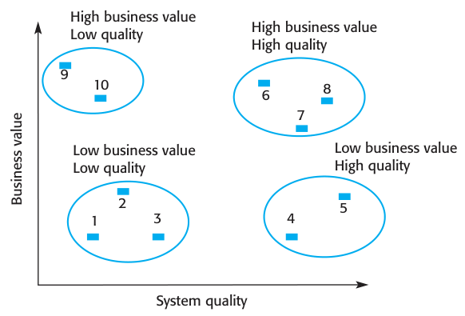
| Cluster簇 | Reasoning理由 | Action措施 |
|---|---|---|
| Low quality, low value低质量、低价值 | Expensive to keep, small return保留成本高，回报小 | Scrap废弃 |
| Low quality, high value低质量、高价值 | Cannot be scrapped, but expensive to maintain不能废弃，但维护成本高 | Reengineer; replace if a suitable off-the-shelf system exists再工程；若存在合适的现成系统，则替换 |
| High quality, low value高质量、低价值 | Cheap to maintain, little contribution; not worth replacing维护成本低，贡献小；不值得替换 | Normal maintenance while no expensive change is needed and the hardware stays in use; scrap if expensive changes become necessary在无需昂贵变更且硬件仍在使用时进行常规维护；若需要昂贵的变更，则予以废弃 |
| High quality, high value高质量、高价值 | Must stay; no need to invest in transformation必须保留；无需投资进行转型 | Normal maintenance常规维护 |
Ideally the decision is objective. Often it is organizational or political. After a merger the more powerful partner usually keeps its systems. A new hardware platform forces the replacement of applications. With no transformation budget, maintenance continues despite higher long-term cost.理想情况下，决定是客观的，但通常是出于组织或政治原因。合并之后，实力较强的一方通常会保留自己的系统。新的硬件平台会迫使应用被替换。若没有转型预算，即使长期成本更高，维护也会继续下去。
Practice练习
Q1. (Classify) Five legacy systems are scored 0–10 for quality and business value (5 or more counts as high):Q1.（分类）五个遗留系统的质量与业务价值各自按 0–10 分打分（5 分及以上计为高）：
| System系统 | A | B | C | D | E |
|---|---|---|---|---|---|
| Quality质量 | 3 | 2 | 8 | 9 | 4 |
| Business value业务价值 | 2 | 8 | 3 | 9 | 7 |
Assign each to a cluster and recommend an action.将每个系统归入相应的簇，并给出建议措施。
Answer
A: low quality, low value, so scrap. B: low quality, high value, so reengineer (or replace if a suitable off-the-shelf system exists). C: high quality, low value, so continue normal maintenance and scrap it if expensive changes become necessary. D: high quality, high value, so keep it with normal maintenance. E: low quality, high value, so reengineer (or replace). B and E are the reengineering candidates.A：低质量、低价值，因此废弃。B：低质量、高价值，因此再工程（若存在合适的现成系统，则替换）。C：高质量、低价值，因此继续常规维护；若需要昂贵的变更，则予以废弃。D：高质量、高价值，因此保留并进行常规维护。E：低质量、高价值，因此再工程（或替换）。B 和 E 是再工程的候选对象。
Q2. (Evaluate) A student-registration system is used only at the start of each academic year, and a consultant proposes scrapping it because its use is low. Evaluate the proposal.Q2.（评价）某学生注册系统只在每学年开始时使用，一位顾问建议废弃它，因为其使用率很低。请评价这一建议。
Answer
Use alone is a poor indicator of business value. Registration is essential: without it students cannot enrol, so the business depends on its outputs and the system has high value despite occasional use. Assess all four issues: use, business processes supported, dependability and outputs. A rarely used system is low-value only if its outputs can be obtained cheaply elsewhere, like a travel-ordering system bypassed through supplier websites.仅凭使用率并不能很好地反映业务价值。注册是必不可少的：没有它，学生就无法完成入学注册，因此业务依赖于其输出，尽管使用是偶尔为之，该系统仍具有很高的价值。应评估全部四个问题：使用情况、所支持的业务过程、可信性和输出。只有当其输出可以在别处以低成本获得时（例如员工绕过供应商网站使用的差旅预订系统），使用很少的系统才是低价值的。
易错：用得少 ≠ 价值低，要看输出对业务是否关键。
Q3. (Explain) Why can problems with support software force an organization to replace a legacy system?Q3.（解释）为什么支撑软件的问题会迫使组织替换遗留系统？
Answer
The application runs on support software (operating system, compilers, utilities, database). If the supplier is out of business or drops support, there are no patches (so security holes stay open), compilers and tools may not exist for newer platforms, crashes cannot be fixed, licences or support may be costly, and interfacing with new systems becomes difficult. If the support software cannot run on new hardware and the old hardware is obsolete, the application becomes unusable even if its own quality is good, so all or part of it must be replaced.应用系统运行于支撑软件（操作系统、编译器、实用程序、数据库）之上。若供应商停业或停止支持，就不会有补丁（因此安全漏洞会一直存在），新平台上可能没有相应的编译器和工具，崩溃问题无法修复，许可证或支持服务可能价格高昂，与新系统的对接也会变得困难。若支撑软件无法在新硬件上运行，而旧硬件又已过时，那么即使应用本身质量良好，也将无法使用，因此必须全部或部分替换。
Software maintenance ★★★软件维护
Goal. Name the three types of maintenance with their shares, give four reasons why maintenance costs more than development, explain maintenance prediction, and compute cyclomatic complexity.目标。 说出三种维护类型及其比例，给出维护成本高于开发成本的四个原因，解释维护预测，并计算圈复杂度。
Step 1: three types of maintenance第 1 步：三种维护类型
In words: maintenance = fix what is broken, adapt to what has changed around it, and add what users now want.用文字表述：维护 = 修复坏掉的东西，适应其周围已经变化的部分，增加用户现在想要的功能。
| Type类型 | Purpose目的 | Cost note成本说明 |
|---|---|---|
| Fault repair（缺陷修复） | Fix bugs and vulnerabilities修复缺陷与漏洞 | Coding errors are cheap; design errors cost more (several components rewritten); requirements errors cost most (extensive redesign)编码错误成本低；设计错误成本更高（需要重写多个构件）；需求错误成本最高（需要大规模重新设计） |
| Environmental adaptation（环境适应） | Adapt to changed hardware, operating system or other support software适应硬件、操作系统或其他支撑软件的变化 | Needed whenever some aspect of the environment changes只要环境的某方面发生变化，就需要进行这种维护 |
| Functionality addition（功能增加） | Add features and support new requirements caused by organizational or business change增加功能，支持由组织或业务变化引起的新需求 | The scale of change is often much larger than for the other types变更规模通常比其他类型大得多 |
The boundaries blur. Adapting a system to a new environment may add functions. A fault often appears because users use the system in a way nobody expected. Then the best repair is to change the system to fit their way of working.各类之间的界限是模糊的。使系统适应新环境，可能会增加功能。故障往往出现在用户以出乎意料的方式使用系统时。这时，最好的修复是修改系统，以适应他们的工作方式。
The usual names are corrective (fault repair), adaptive and perfective maintenance. A fourth name, preventive maintenance, means changing the software to prevent future problems. Refactoring is the typical example. Say which meaning you use.通常的名称是纠错性（修复故障）、适应性和完善性维护。第四个名称是预防性维护，指修改软件以防止未来的问题。重构是典型例子。要说明你使用的是哪一种含义。

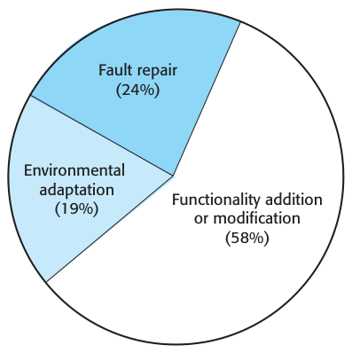
Fault repair is not the biggest cost. The shares are rounded and add to 101%.故障修复并不是最大的成本。各比例为四舍五入的数字，相加为 101%。
Step 2: why maintenance costs more than development第 2 步：为什么维护比开发成本更高
In words: adding a feature after delivery usually costs more than adding it during development, because the builders are gone and nobody is rewarded for easy-to-change code.用文字表述：交付后再添加功能，通常比在开发期间添加成本更高，因为构建者已经离开，而且没有人因为写出易于修改的代码而获得奖励。
| Reason原因 | Classic factor经典因素 | Why说明 |
|---|---|---|
| 1. A new team must understand the program1. 新团队必须理解程序 | Team stability团队稳定性 | The development team has dispersed; maintainers do not know the design decisions and must learn the system before changing it开发团队已经解散；维护人员不了解设计决策，必须先学习系统，然后才能修改 |
| 2. No incentive to write maintainable software2. 缺乏编写可维护软件的动力 | Contractual responsibility合同责任 | Development and maintenance are separate contracts, often with different companies, so developers gain nothing from maintainable code and may cut corners开发与维护是分开签订的合同，通常由不同公司承担，因此开发人员从可维护的代码中得不到任何好处，并可能偷工减料 |
| 3. Maintenance work is unpopular3. 维护工作不受欢迎 | Staff skills人员技能 | It has low status and goes to the least experienced staff, who may also have to learn an obsolete language其地位低，通常交给经验最少的人员，而这些人员还可能不得不学习过时的语言 |
| 4. Structure degrades with age4. 结构随年限退化 | Program age and structure程序年限与结构 | Changes erode the structure; old code may be optimized for efficiency, documents lost, configuration management weak (time is spent finding the right component versions)变更侵蚀结构；旧代码可能已为效率而优化，文档丢失，配置管理薄弱（需要花费时间查找正确的构件版本） |
Reasons 1 to 3 arise because organizations treat development and maintenance as separate activities. The long-term fix is to see a system as evolving through continual development, with maintenance as high in status as new development. Reason 4 is the easiest to address with reengineering and refactoring (Section 8.6).原因 1 到 3 的出现，是因为组织把开发和维护视为两种分开的活动。长期的解决办法是把系统看作通过持续开发而演化，维护与新开发的地位一样高。原因 4 最容易通过再工程和重构来解决（见第 8.6 节）。
Step 3: maintenance prediction第 3 步：维护预测
In words: maintenance prediction = guess in advance which parts will change most and cost most, so that you can plan and budget.用文字表述：维护预测 = 提前猜测哪些部分会变化最多、成本最高，以便你能够做计划和预算。
Maintenance prediction（维护预测）has three parts, and the first two feed the third.维护预测有三个部分，前两个为第三个提供依据。
- Predicting changes: which parts will be hit by change requests, and how many requests to expect. Look at the number and complexity of interfaces, the number of volatile requirements, and the number of business processes that use the system. A volatile requirement is one that is likely to change.预测变更：哪些部分会受到变更请求的影响，以及会有多少请求。要看界面的数量和复杂度、易变需求的数量，以及使用该系统的业务流程数量。易变需求是指可能会改变的需求。
- Predicting maintainability: which parts will be most expensive to maintain. More complex components cost more. After release, four process metrics help.预测可维护性：哪些部分维护起来最昂贵。更复杂的构件成本更高。发布之后，有四个过程度量可以帮助判断。
- Predicting costs: the cost over the next year and over the lifetime. Managers combine the two predictions with experience.预测成本：未来一年的成本和整个生命周期的成本。管理者把前两个预测与经验结合起来。
| Process metric过程度量 | A rising value suggests数值上升表明 |
|---|---|
| Number of requests for corrective maintenance纠错性维护请求的数量 | More errors are introduced than repaired引入的错误多于修复的错误 |
| Average time for impact analysis影响分析的平均时间 | More components are affected by each change每次变更影响的构件增多 |
| Average time to implement a change request实现一个变更请求的平均时间 | Modifying the system and documents is getting harder (measured after impact analysis, so not identical to the previous metric)修改系统和文档越来越困难（在影响分析之后度量，因此与前一指标并不完全相同） |
| Number of outstanding change requests未处理的变更请求数量 | A growing backlog; falling maintainability积压不断增加；可维护性下降 |
If all four metrics rise together, maintainability is declining.如果四个度量同时上升，可维护性就在下降。
Step 4: cyclomatic complexity第 4 步：圈复杂度
In words: cyclomatic complexity = the number of independent paths through a function, which equals the number of decision points plus one.用文字表述：圈复杂度 = 一个函数的独立路径数，即判断点数加一。
A function with one if and one while has two decision points, so \(V=2+1=3\). A high value marks a component that is hard to test and expensive to maintain. Replace it by simpler ones.一个只含一个 if 和一个 while 的函数有两个判断点，因此 \(V=2+1=3\)。这个值高的构件难以测试，维护成本也高。应把它替换为更简单的构件。
Practice练习
Q1. (Classify, calculate) (a) Classify each task as fault repair, environmental adaptation or functionality addition and give the conventional name: (i) correcting a rounding error in the tax module; (ii) porting the application to a new operating-system version; (iii) adding a mobile ordering interface requested by customers; (iv) splitting a 600-line method into smaller methods without changing behavior. (b) The annual maintenance budget is $2.5M. Using the typical distribution, how much goes to fault repair and to functionality addition?Q1.（分类，计算）（a）将每项任务归为故障修复、环境适应或功能增添之一，并给出惯用名称：（i）修正税务模块中的舍入误差；（ii）将应用移植到新的操作系统版本；（iii）增加客户要求的移动端订购界面；（iv）在不改变行为的前提下，把一个 600 行的方法拆分为若干较小的方法。（b）每年的维护预算为 $2.5M。按照典型分布，故障修复和功能增添各分得多少？
Answer
(a) (i) Fault repair (corrective). (ii) Environmental adaptation (adaptive). (iii) Functionality addition (perfective, enhancement). (iv) None of the three types: it is refactoring, preventive maintenance. The types overlap in practice (a port may add features), which is why they are hard to separate.（a）（i）故障修复（纠错性）。（ii）环境适应（适应性）。（iii）功能增添（完善性，增强）。（iv）不属于这三类：它是重构，即预防性维护。这些类型在实践中相互重叠（移植时也可能增加功能），因此很难加以区分。
(b) Fault repair: \(0.24\times2.5=0.60\) ($M). Functionality addition: \(0.58\times2.5=1.45\) ($M). (Adaptation: \(0.19\times2.5\approx0.48\) $M; the shares are rounded.) More than half of the budget goes to new or changed functionality, not to fixing faults.（b）故障修复：\(0.24\times2.5=0.60\)（$M）。功能增添：\(0.58\times2.5=1.45\)（$M）。（环境适应：\(0.19\times2.5\approx0.48\) $M；各比例已取整。）预算的一半以上用于新增或变更的功能，而非修复故障。
Q2. (Interpret) Quarterly maintenance data:Q2.（解读）季度维护数据：
| Quarter季度 | Corrective requests纠错性维护请求 | Impact analysis (hours)影响分析（小时） | Implementation (days)实现（天） | Outstanding requests未处理请求 |
|---|---|---|---|---|
| Q1 | 40 | 6 | 3 | 25 |
| Q2 | 46 | 7 | 3 | 31 |
| Q3 | 55 | 9 | 4 | 44 |
| Q4 | 63 | 12 | 6 | 70 |
What do the data say about maintainability, and what would you do?这些数据反映出可维护性方面的什么问题？你会采取什么措施？
Answer
From Q1 to Q4 corrective requests rose by 57.5% (40 to 63), impact-analysis time doubled (6 to 12 hours), implementation time doubled (3 to 6 days) and outstanding requests rose 2.8 times (25 to 70). All four indicators worsen, so maintainability is declining: more errors are introduced than repaired, each change touches more components, changes take longer and the backlog grows. Identify the components with the most defects and changes, then refactor or reengineer them before adding more features.从第一季度到第四季度，纠错性维护请求增加了 57.5%（从 40 增至 63），影响分析时间翻了一番（从 6 小时增至 12 小时），实现时间翻了一番（从 3 天增至 6 天），未处理请求增至 2.8 倍（从 25 增至 70）。四项指标全部恶化，因此可维护性正在下降：引入的错误多于修复的错误，每次变更涉及的构件增多，变更耗时更长，积压也不断增加。应先找出缺陷和变更最集中的构件，然后在增加更多功能之前对其进行重构或再工程。
思路：四个过程指标同时上升 = 可维护性下降。
Q3. (Extension) Compute the cyclomatic complexity of this function (a) by counting decisions and (b) from its control-flow graph, and say what it implies.Q3.（扩展）分别用以下两种方法计算该函数的圈复杂度：（a）统计判定数；（b）由其控制流图计算。并说明其含义。
count = 0
while n > 0:
if n mod 2 = 1 and n > 10:
count = count + 1
n = n - 1
return count
Answer
(a) Decision points: while, if and and (the compound condition is two tests), so 3 decisions and \(V=3+1=4\).（a）判定点：while、if 和 and（复合条件包含两个判断），因此共 3 个判定，故 \(V=3+1=4\)。
(b) Nodes: initialization, while test, test n mod 2 = 1, test n > 10, count update, n update, return, so \(N=7\). Edges: init to while, while to test 1 (true), while to return (false), test 1 to test 2 (true), test 1 to n update (false), test 2 to count update (true), test 2 to n update (false), count update to n update, n update to while, so \(E=9\). Then \(V=E-N+2=9-7+2=4\), the same value.（b）节点：初始化，while 判断，判断 n mod 2 = 1，判断 n > 10，count 更新，n 更新，return，因此为 \(N=7\)。边：初始化到 while，while 到判断 1（真），while 到 return（假），判断 1 到判断 2（真），判断 1 到 n 更新（假），判断 2 到 count 更新（真），判断 2 到 n 更新（假），count 更新到 n 更新，n 更新到 while，因此为 \(E=9\)。随后为 \(V=E-N+2=9-7+2=4\)，与之数值相同。
Four independent paths mean at least four test cases for path coverage. \(V=4\) is far below the usual limit of 10, so the function is easy to maintain; components with \(V\) well above 10 are candidates for simplification.四条独立路径意味着路径覆盖至少需要四个测试用例。\(V=4\) 远低于通常的上限 10，因此该函数易于维护；\(V\) 远高于 10 的构件是简化的候选对象。
Reengineering and refactoring ★★★再工程与重构
Goal. Define reengineering and refactoring, list the five reengineering activities, name the common bad smells with their fixes, and compare the two approaches.目标。 定义再工程和重构，列出五项再工程活动，说出常见的坏味道及其修复方法，并比较这两种方法。
Step 1: reengineering第 1 步：再工程
In words: reengineering = a big clean-up of an old, degraded system with tools, keeping its functions the same.用文字表述：再工程 = 借助工具，对一个旧的、已退化的系统进行大规模清理，同时保持其功能不变。
Legacy programs are hard to maintain because they were optimized for speed or space at the expense of understandability, or because many changes corrupted their structure. Software reengineering（软件再工程）restructures and redocuments a system to improve its structure and understandability. It may redocument the system, refactor its architecture, translate programs into a modern language, and change the structure and values of its data. The functionality is not changed, and major architectural change is normally avoided.遗留程序难以维护，要么因为它们为了速度或空间而牺牲了可理解性，要么因为许多变更破坏了它们的结构。软件再工程对系统进行结构调整并重新编写文档，以改善其结构和可理解性。它可以重新编写文档、重构体系结构、把程序翻译成现代语言，并改变数据的结构和取值。功能不变，并且通常避免重大的体系结构变更。
Reengineering has two advantages over replacement. The risk is lower, because redeveloping business-critical software risks specification errors and delays. The cost is lower, because reengineering usually costs much less than new development.与替换相比，再工程有两个优点。风险更低，因为重新开发业务关键的软件可能带来规格说明错误和延期。成本更低，因为再工程通常远比新开发便宜。

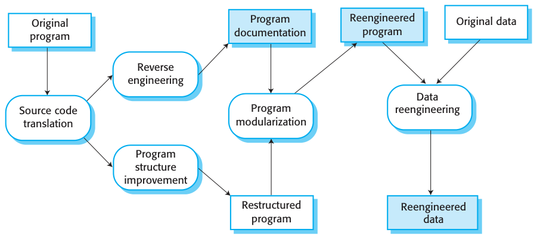
The input is a legacy program. The output is an improved, restructured version. There are five activities.输入是遗留程序，输出是改进后、结构调整过的版本。共有五项活动。
| # | Activity活动 | What it does作用 | Automation自动化程度 |
|---|---|---|---|
| 1 | Source code translation源代码翻译 | Converts the program to a modern version of the same language or to another language将程序转换为同一语言的现代版本，或转换为另一种语言 | Tool工具 |
| 2 | Reverse engineering（逆向工程） | Analyzes the program and extracts information to document its organization and functionality分析程序并提取信息，用于记录其组织结构和功能 | Usually fully automated通常全部自动化 |
| 3 | Program structure improvement程序结构改进 | Analyzes and modifies the control structure to make the program easier to read and understand分析并修改控制结构，使程序更易读、易理解 | Partly automated; some manual work部分自动化；有少量人工工作 |
| 4 | Program modularization程序模块化 | Groups related parts and removes redundancy; may include architectural refactoring (several data stores replaced by one repository)将相关部分归并，并消除冗余；可包括体系结构重构（例如，用一个仓库替换多个数据存储） | Manual人工 |
| 5 | Data reengineering数据再工程 | Changes the data to match the program: redefine schemas, convert databases, clean data (correct mistakes, remove duplicates)修改数据以与程序相匹配：重新定义模式、转换数据库、清理数据（纠正错误、删除重复项） | Very expensive and prolonged成本极高且耗时很长 |
Not every step is always needed. There is no translation if the language stays. There is no reverse engineering if all reengineering is automatic. Data reengineering is needed only if the data structures change.并非每一步都总是需要。如果语言不变，就不需要翻译。如果所有再工程都是自动完成的，就不需要逆向工程。只有在数据结构改变时才需要数据再工程。
To let the reengineered system work with new software, adaptor services（适配器服务）hide the original interfaces and show new, better-structured ones.为了让再工程后的系统能与新软件协同工作，适配器服务隐藏原有接口，并提供新的、结构更好的接口。

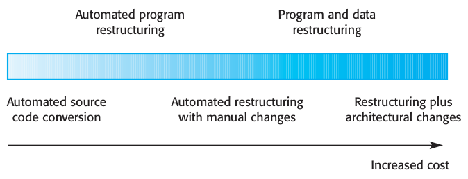
The cost grows with the amount of work. Automated source code conversion is cheapest. Restructuring combined with architectural changes is most expensive. Reengineering has limits. Tools cannot convert a functional design into an object-oriented one, and radical reorganization of data cannot be automated. A reengineered system is probably less maintainable than a new one.成本随工作量增加。自动化的源代码转换最便宜。结合体系结构变更的结构调整最昂贵。再工程也有局限：工具无法把功能设计转换为面向对象设计，数据的根本性重组也无法自动完成。再工程后的系统很可能比新系统更难维护。
Step 2: refactoring第 2 步：重构
In words: refactoring = tidy the code a little every time you touch it, without changing what it does.用文字表述：重构 = 每次改动代码时，都把它稍微理顺一点，但不改变它的功能。
Refactoring（重构）means modifying a program to improve its structure, reduce its complexity and make it easier to understand, to slow down degradation through change. It adds no functionality and is not limited to object-oriented code. It can be seen as "preventive maintenance". Section 2.3 introduced it in agile development.重构是指修改程序，以改善其结构、降低复杂度并使其更易理解，从而减缓因变更而产生的退化。它不增加功能，也不局限于面向对象代码。可以把它看作一种“预防性维护”。第 2.3 节在敏捷开发中介绍过它。
Regression tests make it safe. If a refactoring introduces an error, a test that passed before now fails, and the developer sees the mistake at once. Without tests the developer cannot tell whether the clean-up broke something.回归测试使重构变得安全。如果重构引入了错误，之前通过的测试现在会失败，开发者会立即发现错误。没有测试，开发者就无法判断这次清理是否破坏了什么。
Fowler's bad smells（代码异味）are typical situations where code should be improved.Fowler 的代码异味是指代码需要改进的典型情形。
| Smell异味 | Meaning含义 | Typical fix典型修复方法 |
|---|---|---|
| Duplicate code重复代码 | The same or similar code in several places多处出现相同或相似的代码 | Extract it into one method called where needed将其提取为一个方法，并在需要处调用 |
| Long methods过长的方法 | A method does too much一个方法做的事情过多 | Split into several shorter methods拆分为若干较短的方法 |
| Switch (case) statementsswitch（case）语句 | Often duplicated, depend on a type, scattered常被重复，依赖于类型，并分散在各处 | Use polymorphism使用多态 |
| Data clumping数据泥团 | The same group of data items (fields or parameters) recurs同一组数据项（字段或参数）反复出现 | Replace them by an object that encapsulates the group用一个封装该组数据的对象来替代 |
| Speculative generality过度通用化 | Generality added "in case it is needed"为“以防万一”而增加的通用性 | Remove it删除它 |
Primitive refactorings（基本重构）can be used singly or together. Three are standard:基本重构可以单独使用，也可以组合使用。有三种是标准的：
- Extract method: remove duplication by creating a new method.提取方法：通过新建一个方法来消除重复。
- Consolidate conditional expression: replace a sequence of tests by a single test.合并条件表达式：把一系列判断合并为一个判断。
- Pull up method: replace similar methods in subclasses by one method in the superclass.上移方法：把子类中相似的方法替换为超类中的一个方法。
Example of duplicate code and its fix. The same price calculation is typed in two methods. Extract it into one method that both call. Behavior is unchanged, and a later price change is made in one place only.重复代码及其修复的例子。同一个价格计算被写在两个方法里。把它提取成一个方法，两者都调用它。行为不变，而之后修改价格时只需在一处进行。
// Before: the same tax calculation appears twice
double invoiceTotal(double net) { return net + net * 0.2; }
double quoteTotal(double net) { return net + net * 0.2; }
// After: Extract method. One place to change.
double withTax(double net) { return net + net * 0.2; }
double invoiceTotal(double net) { return withTax(net); }
double quoteTotal(double net) { return withTax(net); }
If the structure has degraded too far, code-level refactoring may be practically impossible. Then design refactoring is needed: identify relevant design patterns (Chapter 6) and replace existing code by code that implements them. This is more expensive.如果结构已经退化得太严重，代码层面的重构可能实际上无法进行。这时需要设计重构：识别相关的设计模式（第 6 章），并用实现这些模式的代码替换原有代码。这样做成本更高。
Step 3: reengineering versus refactoring第 3 步：再工程与重构的比较
| Reengineering再工程 | Refactoring重构 | |
|---|---|---|
| When时机 | After the system has been maintained for some time and costs are rising系统已维护一段时间、成本不断上升之后 | Continuously, throughout development and evolution持续进行，贯穿开发与演化全过程 |
| Aim目标 | Turn a degraded legacy system into a more maintainable one将退化的遗留系统转变为更易维护的系统 | Avoid structure and code degradation in the first place从一开始就避免结构和代码退化 |
| Means手段 | Automated tools process the whole legacy system (translation, restructuring, data conversion)自动化工具处理整个遗留系统（翻译、结构调整、数据转换） | Small behavior-preserving steps by developers, supported by IDEs and regression tests开发人员借助 IDE 和回归测试，以保持行为不变的小步骤进行 |
| Common ground共同点 | Both make software easier to understand and change; neither adds functionality两者都使软件更易理解和变更；两者都不增加功能 |
Practice练习
Q1. (Select) A team reengineers a 20-year-old C program. The language and the database schema stay unchanged, and restructuring is done largely by hand because no tool supports this code base. Which of the five reengineering activities are needed?Q1.（选择）某团队对一个有 20 年历史的 C 程序进行再工程。语言和数据库模式保持不变，且由于没有工具支持该代码库，结构调整主要依靠人工完成。再工程的五项活动中，哪些是必需的？
Answer
Source code translation is not needed because the language stays. Data reengineering is not needed because the data structures stay. Reverse engineering is needed: the restructuring is manual and the documentation is poor, so the team must recover the organization and functionality of the program (it could be skipped only if all reengineering were automatic). Program structure improvement and program modularization are needed; modularization is manual and structure improvement partly manual.由于语言不变，无需源代码翻译。由于数据结构不变，无需数据再工程。需要逆向工程：结构调整是人工进行的，且文档较差，因此团队必须还原程序的组织结构和功能（只有在所有再工程均为自动完成时才可以跳过此步）。需要进行程序结构改进和程序模块化；模块化是人工完成的，结构改进则部分依靠人工。
Q2. (Design) A subsystem has low quality but high business value and is used all day by customer-facing staff. Propose a reengineering approach with minimal impact on operations.Q2.（设计）某子系统质量低但业务价值高，面向客户的员工全天都在使用它。请提出一种对运行影响最小的再工程方案。
Answer
Reengineer incrementally behind a wrapper. First add adaptor services that hide the old interfaces, so that other systems see a stable, better-structured interface. Then restructure and translate module by module with automated tools, keeping the functionality unchanged and avoiding major architectural change. Verify each step with regression tests and run old and new versions in parallel on the same inputs before switching. Do data reengineering separately and last, and schedule cut-overs outside peak hours. This keeps risk and cost lower than replacement.在包装器之后增量地进行再工程。首先添加隐藏旧接口的适配器服务，使其他系统看到的是稳定且结构更好的接口。然后借助自动化工具逐个模块地进行结构调整和翻译，保持功能不变，并避免重大的体系结构变更。每一步都要用回归测试加以验证，并在切换之前用相同输入并行运行新旧版本。数据再工程应单独进行，并放在最后；切换安排在非高峰时段。与替换相比，这种做法的风险和成本都更低。
思路：包装 + 逐模块 + 回归测试 + 并行运行。
Q3. (True or false) Justify each: (a) Reengineering adds functionality while it restructures the program. (b) Refactoring is only possible in object-oriented programs. (c) A reengineered system is as maintainable as a newly built one.Q3.（判断）对每一项说明理由：（a）再工程在重构程序结构的同时增加功能。（b）只有面向对象程序才能进行重构。（c）经过再工程的系统与新建系统的可维护性相同。
Answer
(a) False: reengineering does not change the functionality. (b) False: the principles apply to any development approach. (c) False: tools cannot convert a functional design into an object-oriented one or reorganize data management radically, so the result is probably less maintainable than a new system built with modern methods.（a）错误：再工程不改变功能。（b）错误：这些原则适用于任何开发方法。（c）错误：工具无法把功能设计转换为面向对象设计，也无法从根本上重组数据管理，因此结果的可维护性可能仍低于采用现代方法新建的系统。
Terms to recognise ★需要认识的术语
| Term术语 | What to know要知道什么 |
|---|---|
| Brownfield development（棕地开发） | Developing and managing software that depends on other existing software systems. A change may force changes in those systems开发并管理依赖其他已有软件系统的软件。一项变更可能迫使这些系统也随之变更 |
| Technical debt（技术债务） | A shortcut that saves effort now and costs extra effort in every later change until the code is cleaned up一种捷径：现在省下力气，但在清理代码之前，之后每次变更都要付出额外的代价 |
| Evolutionary replacement渐进式替换 | Major components are replaced by off-the-shelf products and the other components are reused主要构件由现成产品替换，其他构件则被复用 |
| COCOMO 2 | A cost model. It bases maintenance effort on the effort to understand the existing code and the effort to develop the new code一种成本模型。它根据理解现有代码的工作量和开发新代码的工作量来估计维护工作量 |
| Wrapper or legacy system wrapping包装器或遗留系统包装 | Adaptor services hide the old interfaces. An important way to build large reusable services (Chapter 12)适配器服务隐藏旧接口。它是构建大型可复用服务的重要方式（第 12 章） |
Exam-style questions考试题型练习
Q1. (Process, 10 marks) (a) Describe the activities of the software evolution process and name the three kinds of change implementation. (4 marks) (b) A serious security vulnerability is found in the live system. Describe the emergency repair process, explain why it harms the long-term health of the system, and state what should be done afterwards. (6 marks)Q1.（过程，10 分）（a）描述软件演化过程的各项活动，并说出变更实现的三种类型。（4 分）（b）在运行中的系统里发现了一个严重的安全漏洞。请描述紧急修复过程，解释它为何损害系统的长期健康，并说明事后应做什么。（6 分）
Answer
(a) Evolution is driven by change requests. Impact analysis identifies the components affected and estimates cost and scope; it is part of change management, which also keeps component versions correct. Release planning decides which proposed changes (fault repair, adaptation, new functionality) go into the next version. Change implementation designs, implements and validates them; its three kinds are fault repair, platform adaptation and system enhancement. The new release is delivered and the cycle repeats. A team that did not build the system starts with program understanding, and the requirements and design documents are updated.（a）演化由变更请求驱动。影响分析识别受影响的构件，并估算成本和范围；它是变更管理的一部分，变更管理还要确保构件版本正确。发布计划决定哪些提议的变更（故障修复、适应、新功能）进入下一个版本。变更实现负责设计、实现并确认这些变更，其三种类型为故障修复、平台适应和系统增强。新版本交付后，循环重复。未参与系统构建的团队首先进行程序理解，并更新需求和设计文档。
(b) A vulnerability is an urgent change, so the normal route is skipped: change request → analyze source code → modify source code → deliver the modified system. Requirements and design are not updated, and a quick workable fix is chosen over the best structure. This harms the system because code, design and requirements become inconsistent (later emergency fixes take priority over documentation, so the documents are never realigned), and the poor structure accelerates software ageing, so future changes get harder and costlier. Afterwards the team should refactor and improve the fix, look for a better solution when time allows, and update the requirements, design and regression tests.（b）漏洞属于紧急变更，因此跳过常规流程：变更请求 → 分析源代码 → 修改源代码 → 交付修改后的系统。需求和设计不予更新，且选择快速可用的修复，而非最佳结构。这会损害系统，因为代码、设计和需求变得不一致（后续紧急修复优先于文档，因此文档从未重新对齐），而糟糕的结构又会加速软件老化，使后续变更更加困难、成本更高。事后，团队应对修复进行重构和改进，在时间允许时寻找更好的方案，并更新需求、设计和回归测试。
思路：(a) 五步循环；(b) 跳过文档 → 不一致 → 老化加速 → 事后重构并补文档。
Q2. (Scenario, 12 marks) A bank runs a 25-year-old COBOL core system on a mainframe. The original developers have retired and the specification is lost. The CIO proposes replacing it with a new package within 18 months. (a) Explain why the system is a socio-technical system and list its elements. (3 marks) (b) Give four reasons why replacement is expensive and risky. (4 marks) (c) The assessment rates the system high in business value and low in quality. Recommend a strategy, justify it and name two application-assessment factors you would check. (5 marks)Q2.（情景分析，12 分）某银行在大型机上运行一个已有 25 年历史的 COBOL 核心系统。原开发人员已经退休，规格说明也已丢失。CIO 提议在 18 个月内用一个新的软件包替换它。（a）解释该系统为何是社会技术系统，并列出其要素。（3 分）（b）给出替换既昂贵又有风险的四个原因。（4 分）（c）评估结果显示，该系统的业务价值高而质量低。请推荐一种策略并说明理由，并指出你会检查的两个应用评估因素。（5 分）
Answer
(a) The system is more than application software. It also includes the mainframe hardware, support software (operating system, compilers, database), application data, business processes (account opening, payments) built around the system, and business policies and rules embedded in it. A change to one element affects the others, so all must be considered.（a）该系统不只是应用软件，还包括大型机硬件、支撑软件（操作系统、编译器、数据库）、应用数据、围绕该系统建立的业务过程（开户、支付），以及内嵌于其中的业务政策和规则。对某一要素的变更会影响其他要素，因此必须全部予以考虑。
(b) (1) There is no complete, current specification, so a functionally identical replacement cannot be specified. (2) Business processes are intertwined with the system; replacing it changes them at unpredictable cost. (3) Business rules (for example credit and interest rules) are embedded in the code and recorded nowhere else; losing them has unpredictable consequences. (4) New development is inherently risky and may be late, over budget or fail to meet the needs.（b）（1）没有完整且最新的规格说明，因此无法规定一个功能完全相同的替代系统。（2）业务过程与系统相互交织，替换系统会以不可预测的成本改变这些过程。（3）业务规则（例如信贷和利息规则）内嵌于代码之中，且没有其他任何地方留有记录；丢失这些规则会带来不可预测的后果。（4）新开发本身就有风险，可能延期、超出预算，或无法满足需求。
(c) Reengineer. A high-value system cannot be scrapped, and low quality makes it expensive to maintain, so it should be restructured and redocumented (reverse engineering, structure improvement, modularization, data cleaning), possibly wrapped with new interfaces; replace it only if a suitable off-the-shelf system exists. Reengineering has lower risk and cost than replacement, but the result will be less maintainable than a new system. Factors to check: understandability of the code, documentation, data quality, availability of COBOL skills.（c）进行再工程。业务价值高的系统不能废弃，而质量低又使其维护成本高昂，因此应对其进行结构调整并重新编制文档（逆向工程、程序结构改进、模块化、数据清理），必要时可加上新的接口包装；只有存在合适的现成系统时才予以替换。再工程的风险和成本低于替换，但结果的可维护性仍会低于新建系统。应检查的因素：代码的可理解性、文档、数据质量，以及 COBOL 技能的可获得性。
思路：先说是社会技术系统，再列四条替换风险，最后落到“高价值低质量 → 再工程”。
Q3. (Calculation, 10 marks) A legacy system costs $1.2M per year to maintain. Option R (replace): $4.5M one-off plus $0.45M per year. Option E (reengineer): $1.5M one-off, after which maintenance costs $0.6M per year. (a) Find the break-even time of each option against doing nothing. (4 marks) (b) Find the total cost of each option over 10 years, including doing nothing. (3 marks) (c) Recommend an option and give two non-financial considerations. (3 marks)Q3.（计算，10 分）遗留系统每年维护成本为 $1.2M。方案 R（替换）：一次性支出 $4.5M，另加每年 $0.45M。方案 E（再工程）：一次性支出 $1.5M，之后每年维护成本为 $0.6M。（a）求出每种方案相对于不做任何改变的盈亏平衡时间。（4 分）（b）求出每种方案在 10 年内的总成本，包括不做任何改变的情形。（3 分）（c）推荐一种方案，并给出两个非财务方面的考虑。（3 分）
Answer
(a) \(t_{\text{BE}}=C/(m_{\text{old}}-m_{\text{new}})\). Option R: \(4.5/(1.2-0.45)=4.5/0.75=6\) years. Option E: \(1.5/(1.2-0.6)=1.5/0.6=2.5\) years.（a）\(t_{\text{BE}}=C/(m_{\text{old}}-m_{\text{new}})\)。方案 R：\(4.5/(1.2-0.45)=4.5/0.75=6\) 年。方案 E：\(1.5/(1.2-0.6)=1.5/0.6=2.5\) 年。
(b) Do nothing: \(10\times1.2=12.0\) ($M). Option R: \(4.5+10\times0.45=9.0\) ($M). Option E: \(1.5+10\times0.6=7.5\) ($M).（b）不做任何改变：\(10\times1.2=12.0\)（$M）。方案 R：\(4.5+10\times0.45=9.0\)（$M）。方案 E：\(1.5+10\times0.6=7.5\)（$M）。
(c) Choose Option E: it has the shortest payback and the lowest 10-year cost. Option R costs $3.0M more up front to save only $0.15M per year more than Option E, so it needs \(3.0/0.15=20\) years to catch up. Non-financial points: replacement carries high development risk (no complete specification, embedded business rules) and forces business processes to change; reengineering keeps the functionality, but the result stays less maintainable than a new system, and replacement becomes necessary if the hardware can no longer be kept.（c）选择方案 E：它的回收期最短，10 年总成本也最低。方案 R 的前期投入多出 $3.0M，而每年仅比方案 E 多节省 $0.15M，因此需要 \(3.0/0.15=20\) 年才能追平。非财务要点：替换的开发风险高（没有完整的规格说明，业务规则内嵌于系统），并迫使业务过程随之改变；再工程保留了原有功能，但结果的可维护性仍低于新建系统；若硬件已无法继续保留，则替换就成为必要。
思路：回收期 = 一次性成本 ÷ 每年节省；再比较 10 年总成本。
Q4. (Maintenance, 10 marks) (a) Name the three types of maintenance, and give each one's typical share of effort and its conventional name. (4 marks) (b) Explain four reasons why adding a feature during maintenance costs more than during initial development. (4 marks) (c) Do developers have a professional responsibility to write maintainable code even when the employer does not ask for it? Argue briefly. (2 marks)Q4.（维护，10 分）（a）说出三种维护类型，并给出各类型通常占工作量的比例及其惯用名称。（4 分）（b）解释在维护期间增加一项功能比初始开发时成本更高的四个原因。（4 分）（c）即使雇主没有要求，开发人员是否仍有职业责任编写可维护的代码？请简要论证。（2 分）
Answer
(a) Fault repair (corrective): fixing bugs and vulnerabilities, about 24%. Environmental adaptation (adaptive): adapting to changed hardware, operating system or support software, about 19%. Functionality addition or modification (perfective, enhancement): new or changed requirements, about 58%. Fault repair is therefore not the biggest cost, and the shares have barely changed over 30 years. The types overlap in practice.（a）故障修复（纠错性）：修复缺陷和漏洞，约占 24%。环境适应（适应性）：适应硬件、操作系统或支撑软件的变化，约占 19%。功能增添或修改（完善性，增强）：新的或变更的需求，约占 58%。因此，故障修复并非最大的成本项，而且这些比例在 30 年间几乎没有变化。这些类型在实践中相互重叠。
(b) (1) A new team must first understand the program and the reasons for its design, because the original team has dispersed. (2) Development and maintenance are separate contracts, so developers gain nothing from maintainable code and may cut corners. (3) Maintenance is unpopular and goes to the least experienced staff, who may have to learn an obsolete language. (4) Structure degrades with age; documentation is lost or inconsistent and weak configuration management wastes time finding the right versions. Reasons 1–3 come from separating development and maintenance; reason 4 is the easiest to fix by reengineering and refactoring.（b）（1）新团队必须首先理解程序及其设计原因，因为原团队已经解散。（2）开发与维护是分开签订的合同，因此开发人员从可维护的代码中得不到任何好处，并可能偷工减料。（3）维护工作不受欢迎，且交给经验最少的人员，这些人员可能还要学习过时的语言。（4）结构随年限退化；文档丢失或不一致，而薄弱的配置管理会浪费时间去查找正确的版本。原因 1–3 源于开发与维护的分离；原因 4 最容易通过再工程和重构加以解决。
(c) Yes. Professional codes of ethics require engineers to deliver quality work and to consider later users and maintainers; unmaintainable code raises future cost and risk even if nobody asked for maintainability. Good practice (clear structure, tests, documentation) costs little at writing time, and the engineer should flag trade-offs to the employer.（c）是的。职业道德准则要求工程师交付高质量的工作，并考虑后续的用户和维护人员；即使无人要求可维护性，不可维护的代码也会增加未来的成本和风险。良好的实践（清晰的结构、测试和文档）在编写时所花费的成本很低，而且工程师应当就其中的权衡取舍向雇主说明。
易错：(b) 前三条是组织原因，第四条是技术原因。
Q5. (Reengineering and refactoring, 10 marks) (a) Define reengineering and refactoring and give two differences. (3 marks) (b) List the five activities of the reengineering process and say which are normally automated. (4 marks) (c) Name the bad smell in the code below and show the refactoring. (3 marks)Q5.（再工程与重构，10 分）（a）给出再工程和重构的定义，并说明二者的两点区别。（3 分）（b）列出再工程过程的五项活动，并说明其中哪些通常是自动完成的。（4 分）（c）指出下方代码中的代码异味，并展示相应的重构。（3 分）
double area(Shape s) {
switch (s.type) {
case CIRCLE: return Math.PI * s.r * s.r;
case RECT: return s.w * s.h;
}
return 0;
}
double perimeter(Shape s) {
switch (s.type) {
case CIRCLE: return 2 * Math.PI * s.r;
case RECT: return 2 * (s.w + s.h);
}
return 0;
}
Answer
(a) Reengineering restructures and redocuments a legacy system (translation, restructuring, data conversion) to make it easier to understand and change, without changing its functionality. Refactoring modifies a program in small behavior-preserving steps to improve its structure and reduce complexity; it is preventive maintenance. Differences: timing (reengineering after the system has been maintained for some time and costs rise; refactoring continuously throughout development and evolution) and means (automated tools on the whole legacy system; small steps by developers supported by IDEs and regression tests).（a）再工程对遗留系统进行结构调整并重新编制文档（涉及翻译、结构调整和数据转换），使其更易于理解和变更，且不改变其功能。重构以保持行为不变的小步骤修改程序，以改善其结构并降低复杂度；它属于预防性维护。二者的区别在于：时机（再工程发生在系统维护一段时间、成本上升之后；重构则持续贯穿开发与演化全过程），以及手段（对整个遗留系统使用自动化工具；由开发人员借助 IDE 和回归测试完成小步骤修改）。
(b) Source code translation (tool, automated); reverse engineering (usually fully automated); program structure improvement (partly automated, some manual work); program modularization (manual); data reengineering (redefine schemas, convert and clean data; very expensive and prolonged). Steps are skipped when not needed: no translation if the language stays, no data reengineering if the data structures stay.（b）源代码翻译（借助工具，自动化）；逆向工程（通常全部自动化）；程序结构改进（部分自动化，需少量人工）；程序模块化（人工）；数据再工程（重新定义模式，转换并清理数据；成本极高且耗时很长）。不需要的步骤可以跳过：语言不变则无需翻译，数据结构不变则无需数据再工程。
(c) The smell is switch statements on a type code, repeated in several methods and scattered through the program. Refactor by polymorphism:（c）代码异味是：基于类型码的 switch 语句在多个方法中重复出现，并分散于整个程序之中。采用多态进行重构：
abstract class Shape { abstract double area(); abstract double perimeter(); }
class Circle extends Shape {
double r;
double area() { return Math.PI * r * r; }
double perimeter() { return 2 * Math.PI * r; }
}
class Rect extends Shape {
double w, h;
double area() { return w * h; }
double perimeter() { return 2 * (w + h); }
}
Callers use s.area(); a new shape adds a subclass instead of editing every switch.调用方使用 s.area()；新增一种形状时只需添加一个子类，而不必修改每个 switch。
思路：重构 = 小步、保持行为；switch 重复 → 多态。
Textbook exercises课后习题
Textbook exercises with answers: 10 questions教材习题及答案，共 10 题，点击展开
E1. (Exercise 9.1) Explain how advances in technology can force a software subsystem to undergo change or run the risk of becoming useless.E1.（课后习题 9.1）解释技术进步如何迫使软件子系统发生变更，否则它就有变得无用的风险。
Answer
A subsystem is built for a particular technical environment: hardware, operating system, libraries, protocols, security standards, and the devices and expectations of its users. Technology advances change that environment. A subsystem that does not change falls out of step with it. This is Lehman's law of continuing change: a program used in a real-world environment must change or become progressively less useful, and its perceived quality declines.子系统是为特定的技术环境而构建的：硬件、操作系统、库、协议、安全标准，以及用户的设备和期望。技术进步会改变这一环境。若子系统不随之变化，就会与环境脱节。这就是 Lehman 定律中的“持续变化”定律：用于现实环境中的程序必须变更，否则其有用性会逐步下降，其感知质量也随之下降。
Ways in which technology forces change:技术迫使变更的方式：
- Support is withdrawn. When a platform reaches end of life (Windows XP in 2014, Python 2 in 2020), no security patches are issued. The subsystem becomes a vulnerability and must be ported (platform adaptation) or retired.支持被撤销。 当一个平台达到生命周期终点（如 Windows XP 于 2014 年、Python 2 于 2020 年）时，不再发布安全补丁。子系统会成为一个漏洞，必须移植（平台适应）或退役。
- Incompatibility. New hardware, operating systems or browsers drop old interfaces. Subsystems that depended on a browser plug-in such as Flash stopped working when it was retired at the end of 2020 and had to be rewritten.不兼容。 新的硬件、操作系统或浏览器会去掉旧的接口。依赖 Flash 等浏览器插件的子系统，在该插件于 2020 年底退役后便无法运行，只得重写。
- New user expectations. When users move to smartphones and touch interfaces, or competitors offer cloud services, a desktop-only or batch subsystem loses its users unless new functionality is added (system enhancement).用户的新期望。 当用户转向智能手机和触控界面，或竞争对手提供云服务时，仅限桌面或批处理的子系统会失去用户，除非增加新的功能（系统增强）。
- New standards and protocols. A subsystem that cannot use the current communication or security standard (for example after old TLS versions are withdrawn) can no longer talk to its partner systems.新的标准与协议。 无法使用当前通信或安全标准的子系统（例如在旧版 TLS 被弃用之后），将无法再与其合作的系统通信。
- Neighboring systems and skills change. Other systems in the "system of systems" change their interfaces, and skills in the old technology disappear from the labor market.相邻系统与技能发生变化。 “系统之系统”中的其他系统会改变其接口，而旧技术方面的技能也会从劳动力市场中消失。
The later the adaptation, the greater the structural decay and the cost; in the end the subsystem becomes a legacy system whose replacement is the only way out. Planned, continuous adaptation is cheaper: isolate platform dependencies behind interfaces, track the support dates of the platform and update regularly.适应得越晚，结构退化和成本就越大；最终，子系统会成为遗留系统，只能通过替换来摆脱困境。有计划的、持续的适应成本更低：将平台依赖隔离在接口之后，跟踪平台的支持期限，并定期更新。
E2. (Exercise 9.2) The software evolution process consists of change requests, impact analysis, release planning, change implementation (fault repair, platform adaptation or system enhancement) and system release, so impact analysis is an important subprocess. Using a diagram, suggest what activities might be involved in change impact analysis.E2.（课后习题 9.2）软件演化过程由变更请求、影响分析、发布计划、变更实现（缺陷修复、平台适应或系统增强）和系统发布构成，因此影响分析是一个重要的子过程。请用一张图提出变更影响分析可能涉及的活动。
Answer
Impact analysis（影响分析）answers the question "which parts of the system must change, and what will it cost?". Each activity in the diagram uses the result of the one before it.影响分析要回答的问题是：“系统的哪些部分必须变更，以及将花费多少？”图中每项活动都使用其前一项活动的结果。
Change request
|
v
+------------------------------+
| 1. Understand and classify | fault, adaptation or enhancement;
| the request | urgency; unclear: ask the requester
+------------------------------+
|
v
+------------------------------+
| 2. Identify the affected | requirements -> design -> code -> tests
| parts of the system | (traceability links, code search)
+------------------------------+
|
v
+------------------------------+
| 3. Analyze dependencies and | calls, shared data, interfaces,
| ripple effects | other systems, hardware
+------------------------------+
|
v
+------------------------------+
| 4. Find what else must be | tests, documents, data,
| updated | user training
+------------------------------+
|
v
+------------------------------+
| 5. Estimate effort, cost, | alternatives; prototype if needed;
| time and risk | share of the system affected
+------------------------------+
|
v
+------------------------------+
| 6. Report and recommend: | impact report with the decision
| accept / reject / defer | for release planning
+------------------------------+
|
v
Release planning
- Understand and classify the request: is it a fault repair, a platform adaptation or an enhancement, and how urgent is it? An unclear request goes back to the requester.理解并对请求分类： 它是缺陷修复、平台适应还是功能增强，其紧急程度如何？不清楚的请求应退回给提出者。
- Identify the affected parts: follow the traceability links from requirements through design and code to tests, and search the code, to find the components that implement the functionality concerned.识别受影响的部分： 沿着从需求经设计、代码直至测试的可追溯链接进行追踪，并搜索代码，以找出实现相关功能的构件。
- Analyze dependencies and ripple effects: follow calls, shared data and interfaces to the components that the change also touches, including other systems in the environment and the hardware.分析依赖关系与连锁效应： 沿着调用、共享数据和接口追踪，找出变更同样会触及的构件，包括环境中的其他系统和硬件。
- Find what else must be updated: test cases, requirements and design documents, data and user training.找出还需更新的内容： 测试用例、需求和设计文档、数据以及用户培训。
- Estimate effort, cost, time and risk, if necessary by prototyping the change, and compare alternatives; record the share of the system that is affected.估算工作量、成本、时间和风险， 必要时通过对变更做原型来估算，并比较各种备选方案；记录受影响的系统部分所占的比例。
- Report and recommend to accept, reject or defer. The report goes to release planning, which decides whether the change enters the next release.报告并提出建议： 建议接受、拒绝或推迟该变更。报告提交给发布计划，由其决定该变更是否进入下一个发布版本。
The average time spent on impact analysis is also a maintainability metric: if it grows, each change touches more components.影响分析的平均耗时也是一种可维护性度量：若其增长，说明每次变更涉及的构件越来越多。
E3. (Exercise 9.3) Explain why legacy systems should be thought of as sociotechnical systems rather than simply software systems that were developed using old technology.E3.（课后习题 9.3）请解释为什么应当把遗留系统视为社会技术系统，而不仅仅是采用旧技术开发的软件系统。
Answer
A legacy system is a sociotechnical system（社会技术系统）: besides technology it contains people, business processes and organizational rules. Its six elements are system hardware, support software (operating system, utilities, compilers), application software, application data, business processes (designed around the system) and business policies and rules (which constrain the processes, and whose knowledge the software embeds).遗留系统是一种社会技术系统：除技术之外，它还包含人员、业务流程和组织规则。它的六个要素是：系统硬件、支持软件（操作系统、实用程序、编译器）、应用软件、应用数据、业务流程（围绕该系统设计）以及业务政策与规则（对流程加以约束，且其知识已嵌入软件之中）。
This is why old technology alone does not describe it:这就是为什么仅凭旧技术不足以描述它的原因：
- The software is embedded in the organization. The processes evolved around the services of the system and work around its shortcomings, so changing or replacing the software changes how people work, at a cost that is hard to predict.软件嵌入在组织之中。 业务流程围绕系统所提供的服务而演化，并绕过系统的不足而运作，因此改变或替换软件，就会改变人们的工作方式，而其代价难以预料。
- Business rules live in the code. The rules and policies are often documented nowhere else, and replacing the software risks losing them (an insurer might start to accept high-risk policies).业务规则存在于代码之中。 这些规则与政策往往没有其他任何文档记录，替换软件可能导致其丢失（例如，保险公司可能开始接受高风险保单）。
- The elements depend on one another. A change in one layer spreads to the others: new hardware needs changed software, a new database makes new processes possible, and a hardware interface that cannot be preserved forces major application changes.各要素相互依赖。 一层中的变更会波及其他层：新的硬件需要改动软件，新的数据库使新的流程成为可能，而无法保留的硬件接口则迫使应用程序作出重大改动。
- People hold the knowledge. The working practices of the users and the maintainers' skills in an obsolete language decide what can be changed.知识掌握在人的手中。 用户的工作实践，以及维护人员对过时语言的技能，决定了什么可以被改动。
- Data and organization matter. Large volumes of inconsistent data are a long-lived asset, and decisions are shaped by cost, politics, regulation and contracts.数据与组织同样重要。 大量不一致的数据是一种长期存在的资产，而决策受成本、政治、监管和合同的影响。
Consequently, assessing and evolving a legacy system must consider business value as well as technical quality, and must plan the changes to processes, data and training together with the software; rewriting the code in a modern language does not remove the legacy problem. Example: a bank's mainframe core system cannot be replaced without considering its COBOL programs, customer data, account-opening and payment processes and regulatory rules together.因此，评估和演化遗留系统时，必须同时考虑业务价值和技术质量，并且必须将流程、数据和培训方面的变更与软件一同规划；用现代语言重写代码并不能消除遗留问题。例如，银行的大型机核心系统若不同时考虑其 COBOL 程序、客户数据、开户与支付流程以及监管规则，就无法被替换。
E4. (Exercise 9.4) Some software subsystems are seen as “low quality, high business value.” Discuss how those subsystems can be re-engineered with minimal impact on the operations of the organization.E4.（课后习题 9.4）一些软件子系统被视为“质量低、业务价值高”。请讨论如何在对组织运营影响最小的前提下，对这些子系统进行再工程。
Answer
A low-quality, high-value subsystem cannot be scrapped and is expensive to maintain, so it is a candidate for reengineering（软件再工程）, or for replacement if a suitable off-the-shelf system exists. Reengineering restructures and redocuments the subsystem without changing its functionality, which is cheaper and less risky than replacement. To keep the impact on operations minimal:这类“质量低、业务价值高”的子系统不能报废，而且维护成本高昂，因此它是软件再工程的候选对象；若存在合适的现成系统，则也可以替换。再工程在不改变功能的前提下对子系统进行结构调整并重新编制文档，这比替换更便宜，风险也更小。为使对运营的影响降到最小：
- Build a safety net first. Put the code under configuration management, write regression tests that record the current behavior (the outputs for real inputs), and use reverse engineering to recover the structure and document the system.先建立安全网。 将代码纳入配置管理，编写记录当前行为（即针对真实输入的输出）的回归测试，并使用逆向工程恢复系统结构并为系统编制文档。
- Hide the subsystem behind a wrapper. Adaptor services present a stable, better-structured interface to the users and the other systems, so changes behind it do not affect them.将子系统隐藏在包装器之后。 适配器服务向用户和其他系统提供稳定且结构更好的接口，因此其背后的变更不会影响它们。
- Reengineer incrementally, module by module, not in one big bang: translate the source code, improve the program structure and modularize. Start with the modules with the most faults and change requests, and avoid major architectural change at the beginning.增量地进行再工程， 逐个模块进行，而非一次性“大爆炸”式地完成：翻译源代码、改进程序结构并模块化。从故障和变更请求最多的模块开始，并避免在开始阶段进行重大的体系结构变更。
- Verify every increment with the regression tests, and run the old and the new version in parallel on the same live inputs to compare their results before switching. Keep the old version for fallback.验证每个增量。 用回归测试验证每一增量，并在切换前用相同的实时输入并行运行新旧版本，比较其结果。保留旧版本以备回退。
- Release in small steps outside peak hours, with a rollback plan, and train the users on any visible difference. Agree the schedule with them so that the work does not collide with business peaks.在非高峰时段分小步发布， 并制定回滚计划，对任何可见的差异对用户进行培训。与用户商定时间安排，使工作不与业务高峰期冲突。
- Treat the data last and separately. Data reengineering (schema conversion, removing duplicates) is the most expensive step; work on a copy and reconcile it before the cut-over.数据放在最后且单独处理。 数据再工程（模式转换、删除重复项）是成本最高的步骤；应在副本上工作，并在切换前进行核对。
Limit: the reengineered subsystem will still be less maintainable than a new one. The approach accepts that in exchange for low risk and low cost.局限性：经再工程的子系统仍然比新系统难以维护。这种做法以此为代价，换取低风险和低成本。
思路：包装 + 逐模块 + 回归测试 + 并行运行 + 数据最后处理。
E5. (Exercise 9.5) What are the strategic options for legacy system evolution? When would you normally replace all or part of a system rather than continue maintenance of the software?E5.（课后习题 9.5）遗留系统演化的策略性选择有哪些？在什么情况下，通常应替换整个或部分系统，而不是继续对软件进行维护？
Answer
There are four strategic options.策略性选择共有四种。
| Option选项 | Chosen when选择条件 |
|---|---|
| Scrap the system报废系统 | It no longer contributes effectively, usually because the business processes have changed and no longer rely on it已不再有效地发挥作用，通常是因为业务流程已经改变，不再依赖它 |
| Leave it unchanged and continue regular maintenance保持现状，继续常规维护 | It is still needed but fairly stable, with few change requests仍然需要，但相当稳定，变更请求很少 |
| Reengineer it to improve maintainability对其进行再工程，以提高可维护性 | Its quality has degraded through change, and further change is still proposed因多次变更，其质量已经下降，但仍有进一步变更的提议 |
| Replace all or part of it全部或部分替换 | It cannot continue (for example because of new hardware), or a new system is available at reasonable cost无法继续运行（例如因新硬件），或有成本合理的新系统可用 |
The choice follows the business value and the technical quality of the application, support software and hardware: low quality and low value, scrap; low quality and high value, reengineer (or replace); high quality, normal maintenance.选择取决于应用、支持软件和硬件的业务价值与技术质量：质量低、价值低，则报废；质量低、价值高，则再工程（或替换）；质量高，则进行常规维护。
All or part of a system is normally replaced when:通常在以下情况下会替换整个系统或其一部分：
- the old system cannot continue to run: the hardware is obsolete or the support software is withdrawn, and the application cannot be ported;旧系统无法继续运行：硬件已过时，或支持软件已被撤销，且应用程序无法移植；
- off-the-shelf systems or reusable components provide the function at reasonable cost, typically for a low-quality, high-value system (often an evolutionary replacement: major components are replaced by off-the-shelf products and the rest is reused);现成系统或可复用构件能以合理的成本提供所需功能，通常针对质量低、价值高的系统（这往往是一种演化式替换：主要构件由现成产品替换，其余部分则复用）；
- the cost of maintenance exceeds the cost of replacement within the remaining life: replacement pays only if the break-even time \(t_{\text{BE}}=C_{\text{new}}/(m_{\text{old}}-m_{\text{new}})\) is shorter than the time the system will stay in service;剩余寿命内的维护成本超过替换成本：只有当盈亏平衡时间 \(t_{\text{BE}}=C_{\text{new}}/(m_{\text{old}}-m_{\text{new}})\) 短于系统将继续服役的时间时，替换才划算；
- the structure is so degraded, or the skills so scarce, that reengineering is not feasible;结构退化严重，或相关技能极为稀缺，以致再工程不可行；
- a business change makes the system unusable, for example a merger or a decision to adopt a new hardware platform.业务变化使系统变得无法使用，例如合并，或决定采用新的硬件平台。
Replacement is risky: there is usually no complete specification, the processes are intertwined with the system, the business rules are embedded in the code, and new development can be late or over budget. So replace only the parts that must be replaced.替换有风险：通常没有完整的规格说明，业务流程与系统相互交织，业务规则嵌入在代码之中，而且新的开发可能延期或超出预算。因此，只替换必须替换的部分。
E6. (Exercise 9.6) Explain why problems with support software might mean that an organization has to replace its legacy systems.E6.（课后习题 9.6）解释支持软件的问题为何可能迫使组织替换其遗留系统。
Answer
Support software is the operating system, database, utilities, compilers and other tools on which the application runs and is maintained. The application depends on it through its interfaces, so when the support software fails, the application fails with it, however good its own code is. Problems that can force replacement:支持软件是应用程序运行和维护所依赖的操作系统、数据库、实用程序、编译器以及其他工具。应用程序通过其接口依赖支持软件，因此支持软件一旦失效，应用程序也随之失效，无论其自身代码质量多好。可能迫使替换的问题包括：
- Withdrawn support. The supplier goes out of business or drops the product: there are no more patches, so crashes cannot be fixed and security vulnerabilities stay open.支持被撤销。 供应商倒闭或停止该产品：不再发布补丁，因此崩溃无法修复，安全漏洞也一直存在。
- Platform incompatibility. The support software does not run on new hardware, while the old hardware is unavailable or too costly to maintain, so the system cannot be moved or kept.平台不兼容。 支持软件无法在新硬件上运行，而旧硬件已无法获得或维护成本过高，因此系统既无法迁移，也无法保留。
- Missing tools. Compilers, debuggers and development environments for the language or platform are no longer available, so the application cannot be rebuilt or modified, and the people with the skills have left.工具缺失。 该语言或平台的编译器、调试器和开发环境已不再可用，因此应用程序无法重新构建或修改，而且掌握相关技能的人员也已离开。
- Poor interoperability. The old support software cannot interface with newer systems and standards, for example new protocols or security mechanisms.互操作性差。 旧的支持软件无法与较新的系统和标准对接，例如新的协议或安全机制。
- Cost and instability. Licences, extended support and specialized hardware are expensive, and the support software crashes or has to be restarted more often.成本高且不稳定。 许可证、延长支持服务和专用硬件价格昂贵，并且支持软件崩溃或需要重启的情况更加频繁。
The alternatives are to port the application to newer support software, to emulate or virtualize the old platform (a stopgap), or to replace all or part of the system. Porting is often impractical when the code uses machine-specific features or non-portable language extensions, so replacement becomes the only way to keep the business function. This is why the technical assessment of a legacy system covers the environment as well as the application: supplier stability, failure rate, age, support cost and interoperability.可选的做法有：将应用程序移植到较新的支持软件上；模拟或虚拟化旧平台（作为权宜之计）；或者替换整个系统或其一部分。当代码使用了与机器相关的特性或不可移植的语言扩展时，移植通常不现实，因此替换就成了保留业务功能的唯一途径。这正是为什么对遗留系统的技术评估既要涵盖应用程序，也要涵盖其运行环境：供应商的稳定性、故障率、使用年限、支持成本和互操作性。
E7. (Exercise 9.7) As a software project manager in a company that specializes in the development of software for the offshore oil industry, you have been given the task of discovering the factors that affect the maintainability of the systems developed by your company. Suggest how you might set up a program to analyze the maintenance process and determine appropriate maintainability metrics for the company.E7.（课后习题 9.7）作为一家专门为海上石油行业开发软件的公司的软件项目经理，你的任务是找出影响本公司所开发系统可维护性的因素。请提出你会如何建立一项计划，用以分析维护过程，并为本公司确定恰当的可维护性度量。
Answer
Collecting data is expensive and its benefit appears only in the long term, so the program should be a small, goal-driven measurement study (Goal–Question–Metric) that uses data the company already holds.收集数据成本高，且收益只在长期才显现，因此该计划应是一项小规模、以目标为导向的度量研究（目标–问题–度量，GQM），并利用公司已经持有的数据。
- Goal and questions. Goal: reduce the cost and risk of maintaining our systems. Questions: which factors raise the effort per change? Which components are the most expensive to maintain? Which measures predict that effort?目标与问题。 目标：降低维护我们系统的成本和风险。问题：哪些因素会提高每次变更的工作量？哪些构件的维护成本最高？哪些度量可以预测这种工作量？
- Process data for every change request, from the change-management and version-control tools with a few mandatory fields: type (fault repair, environmental adaptation, functionality addition), origin (offshore failure, regulator, client), time for impact analysis, time to implement, effort, components changed, faults introduced, and outstanding requests per quarter.过程数据： 针对每个变更请求，从变更管理和版本控制工具中采集，并包含以下少量必填字段：类型（缺陷修复、环境适应、功能增加）、来源（海上故障、监管机构、客户）、影响分析耗时、实现耗时、工作量、变更的构件、引入的故障，以及每季度未处理的请求数。
- Product data per component: size, cyclomatic complexity, coupling, completeness of documentation and comments, test coverage, number of interfaces, age, number of earlier changes, language and hardware platform.产品数据（按构件）：规模、圈复杂度、耦合度、文档和注释的完整性、测试覆盖率、接口数量、年龄、早前变更次数、语言和硬件平台。
- Domain factors specific to offshore systems: dependence on particular instruments and hardware; safety certification that forces re-approval of each change; remote sites where a visit or a satellite update is costly; long equipment life; client-specific variants; staff turnover and skills. Interview and survey the maintainers and offshore engineers about what makes changes hard.领域因素，针对海上系统：对特定仪器和硬件的依赖；每次变更都需要重新审批的安全认证；现场偏远，派人上门或进行卫星更新成本高；设备寿命长；针对特定客户的变体版本；人员流动与技能。访谈并调查维护人员和海上工程师，了解哪些因素使变更变得困难。
- Pilot and analysis. Run the collection on two or three systems for 6–12 months. Compare the cheapest and the costliest changes, and correlate the product and domain measures with the effort per change, allowing for size, to see which measures predict maintainability.试点与分析。 在两三个系统上进行 6–12 个月的数据采集。比较成本最低和成本最高的变更，并在控制规模因素的前提下，将产品度量和领域度量与每次变更的工作量进行相关分析，以确定哪些度量能够预测可维护性。
- Validate and select. Test the candidate metrics on other systems or later releases, and keep a small set that can be collected automatically, for example average complexity per component, documentation completeness and the process metrics: corrective requests, average impact-analysis time, average implementation time and outstanding requests.验证与筛选。 在其他系统或后续发布版本上检验候选度量，并保留一小组可以自动采集的度量，例如每个构件的平均复杂度、文档完整性，以及过程度量：纠错性请求、平均影响分析耗时、平均实现耗时和未处理请求数。
- Use and review. Set thresholds, track the trends each quarter, direct refactoring or reengineering to the worst components, apply the lessons in design reviews of new systems, and report the savings to management.应用与复查。 设定阈值，逐季跟踪趋势，把重构或再工程引向最差的构件，将所得经验应用于新系统的设计评审，并向管理层汇报所节省的成本。
E8. (Exercise 9.8) Briefly describe the three main types of software maintenance. Why is it sometimes difficult to distinguish between them?E8.（课后习题 9.8）简要描述软件维护的三种主要类型。为什么有时很难区分它们？
Answer
| Type类型 | Purpose目的 | Share of effort工作量占比 |
|---|---|---|
| Fault repair（缺陷修复）, also called corrective缺陷修复，也称纠错性维护 | Fix coding, design and requirements errors and vulnerabilities; coding errors are cheap to repair, requirements errors the most expensive修复编码、设计和需求错误以及漏洞；编码错误修复成本低，需求错误成本最高 | about 24%约 24% |
| Environmental adaptation（环境适应）, also called adaptive环境适应，也称适应性维护 | Adapt the software to a changed environment: new hardware, operating system or other support software使软件适应变化的环境：新硬件、操作系统或其他支持软件 | about 19%约 19% |
| Functionality addition or modification（功能增加）, also called perfective功能增加或修改，也称完善性维护 | Add or change features for new requirements caused by organizational or business change为应对组织或业务变化带来的新需求，增加或修改功能 | about 58%约 58% |
The shares are rounded (they add to 101) and have hardly changed over thirty years: repairing faults is not the largest cost.这些占比经过四舍五入（合计为 101），且三十年来几乎没有变化：修复缺陷并不是最大的成本。
The types are hard to distinguish for four reasons.这几类维护很难区分，原因有四点。
- One change serves several purposes. Adapting a system to a new platform often adds functions that exploit it, and a new feature may need a repair or a restructuring first.一次变更服务于多个目的。 将系统适配到新平台时，往往会增加利用该平台的功能；而一项新功能也可能需要先进行修复或重构。
- Fault or missing requirement? Faults often appear because users use the system in unanticipated ways. Whether the program is wrong or the requirement was never specified is a matter of viewpoint, and changing the system to fit the way users work is both a repair and an enhancement.是缺陷还是需求缺失？ 故障往往源于用户以始料未及的方式使用系统。程序有错还是需求从未被规定，取决于看问题的角度；而将系统修改为适应用户的工作方式，既是一种修复，也是一种增强。
- Different viewpoints and incentives. The developer calls a request an enhancement and the customer calls it a fault. The classification decides who pays (warranty or a new contract), so it is often disputed.观点与利益不同。 开发人员称某项请求为增强，客户则称之为缺陷。分类结果决定了由谁付费（保修或新合同），因此常常引起争议。
- Terms vary. “Adaptive” and “perfective” are used in different senses in different sources, and a fourth type, preventive maintenance (for example refactoring), is sometimes added.术语不统一。 “适应性”与“完善性”在不同来源中含义各异，有时还会增加第四种类型，即预防性维护（例如重构）。
The classification is therefore useful for statistics and planning, but in practice the types overlap.因此，这种分类对统计和规划是有用的，但在实践中各类型往往相互重叠。
E9. (Exercise 9.9) Explain the differences between software reengineering and refactoring.E9.（课后习题 9.9）解释软件再工程与重构之间的区别。
Answer
Software reengineering（软件再工程）restructures and redocuments an existing, degraded (usually legacy) system to make it easier to understand and maintain, after the system has been in use and maintained for some time. Refactoring（重构）is the continuous modification of a program in small, behavior-preserving steps to improve its structure and reduce its complexity, so as to slow down degradation; it is a form of preventive maintenance.软件再工程在系统已投入使用并维护了一段时间之后，对一个已退化的（通常是遗留的）现有系统进行结构调整并重新编制文档，使其更易于理解和维护。重构则是以小步、保持行为不变的方式对程序进行持续修改，以改善其结构、降低其复杂度，从而减缓退化；它是预防性维护的一种形式。
| Reengineering再工程 | Refactoring重构 | |
|---|---|---|
| When时机 | After the system has degraded and maintenance costs are rising在系统已退化、维护成本上升之后 | Continuously, during development and evolution持续进行，贯穿开发和演化过程 |
| Aim目标 | Turn a degraded legacy system into a maintainable one将已退化的遗留系统变为可维护的系统 | Slow down or avoid degradation in the first place从一开始就减缓或避免退化 |
| Scope范围 | The whole system or a major subsystem: code, documentation and data整个系统或主要子系统：代码、文档和数据 | Local: a method, a class or a few classes局部：一个方法、一个类或少数几个类 |
| Activities活动 | Source code translation, reverse engineering, program structure improvement, modularization, data reengineering源代码翻译、逆向工程、程序结构改进、模块化、数据再工程 | Extract method, consolidate conditional expression, pull up method, replace a switch statement by polymorphism提取方法、合并条件表达式、上移方法、以多态取代 switch 语句 |
| Means手段 | Automated tools, run as a separate project with its own budget使用自动化工具，作为一个独立项目进行，有自己的预算 | Small steps by the developers in their normal work, supported by the IDE开发人员在日常工作中以小步方式进行，由 IDE 支持 |
| Cost and risk成本与风险 | Substantial (data reengineering is the most expensive), but lower than replacement成本较高（数据再工程最昂贵），但低于替换 | Small for each step; low risk每一步的成本都很小；风险低 |
Common ground: neither adds functionality, both make the software easier to understand and change, and both rely on tests to show that the behavior is preserved.共同点：两者都不增加功能，都使软件更易于理解和修改，并且都依靠测试来表明行为得以保持。
Example: translating a 25-year-old COBOL billing system to a modern language, recovering its documentation and cleaning its database is reengineering; extracting duplicated validation code into one method during a sprint is refactoring.例如，将一个已有 25 年历史的 COBOL 计费系统翻译为现代语言、恢复其文档并清理其数据库，属于再工程；在一个冲刺中把重复的校验代码提取为一个方法，则属于重构。
思路：再工程 = 事后、用工具、针对整个系统；重构 = 持续、小步、预防性；两者都不加新功能。
E10. (Exercise 9.10) Do software engineers have a professional responsibility to develop code that can be easily maintained even if their employer does not explicitly request it?E10.（课后习题 9.10）即使雇主没有明确要求，软件工程师是否有职业责任开发易于维护的代码？
Answer
Yes, within reason: a basic level of maintainability is part of professional competence, while any investment beyond it is a trade-off to be agreed with the employer.是的，但应适度：基本的可维护性属于职业能力的一部分，而超出这一基本水平的任何投入，都是需要与雇主协商的权衡。
Arguments for a responsibility支持该责任的论点
- Codes of ethics. The ACM/IEEE Software Engineering Code of Ethics requires engineers to meet the highest professional standards possible in the product and to treat maintenance with the same professionalism as new development; the public interest comes first.伦理守则。 ACM/IEEE 软件工程伦理守则要求工程师在产品中达到可能的最高职业标准，并以与新开发同等的专业精神对待维护工作；公共利益居于首位。
- The employer may not see the cost. Evolution is 60–90% of the lifetime cost of software, and most maintenance effort goes into new and changed functionality. An employer who does not ask for maintainability still pays for its absence, and the engineer knows this better than the employer.雇主可能看不到这一成本。 演化占软件生命周期成本的 60–90%，而且大部分维护工作量都用于新增和变更的功能。不要求可维护性的雇主，仍然要为其缺失付出代价，而工程师比雇主更清楚这一点。
- It is cheap now and expensive later. Clear structure, meaningful names, tests and basic documentation cost little when the code is written; a new maintenance team otherwise has to learn the program from scratch.现在成本低，以后成本高。 清晰的结构、有意义的命名、测试和基本文档在编写代码时成本很低；否则，新的维护团队就得从头学习这个程序。
- Others bear the cost. Future maintainers, users waiting for fixes and, if security or safety patches cannot be made in time, the public.成本由他人承担。 未来的维护人员、等待修复的用户，以及若安全性补丁或信息安全补丁无法及时完成时的公众。
Arguments against, or limits反对意见或限制
- The employer or client has the right to decide the budget and the schedule. Maintainability is not free, it is not needed for a prototype or throw-away code, and gold-plating wastes the employer's money.雇主或客户有权决定预算和进度。可维护性并非免费，对原型或一次性代码而言也没有必要；而过度的镀金式开发会浪费雇主的钱。
- Developers often do not control the contract: development and maintenance are separate contracts, and the pressure to cut corners is strong.开发人员往往无法掌控合同：开发与维护通常是分开签订的合同，而压缩成本、走捷径的压力很大。
Conclusion. Engineers should always meet the baseline of readable, structured, tested and sufficiently documented code, and should tell the employer the long-term cost of any shortcut and record it as technical debt. Further effort is negotiated openly. They should refuse only when a lack of maintainability endangers safety, security or the public.结论。 工程师应始终达到基线要求，即代码可读、结构良好、经过测试并有充分的文档；并且应将任何捷径的长期代价告知雇主，记录为技术债务。进一步的投入应公开协商。只有当可维护性的缺失会危及安全性、信息安全或公众时，工程师才应当拒绝。
Chapter 9Software Reuse软件复用Reading: Sommerville Ch. 15
The reuse landscape ★★★复用全景
Goal. Name the level of a given reuse, list the benefits and the problems of reuse, say which factors decide the technique for a scenario, and compute a break-even number.目标。 说出给定复用的层次，列出复用的好处和问题，说明哪些因素决定某个场景下的技术选择，并计算盈亏平衡数。
Step 1: four levels of reuse第 1 步：四个复用层次
In words: the level of reuse = how big the reused piece is, from a single function up to a whole system.用文字表述：复用层次 = 被复用的部分有多大，从单个函数一直到整个系统。
| Level层次 | Everyday picture日常比喻 | What is reused复用的内容 |
|---|---|---|
| System系统 | Moving into a ready-made flat搬进现成的公寓 | A complete system, possibly several applications, as one part of a larger system of systems一个完整的系统，可能包含几个应用，是更大的系统之系统中的一部分 |
| Application应用 | Buying the same car and choosing the colour买同一款车，然后挑选颜色 | A whole application, unchanged or configured for each customer整个应用，不做修改，或为每个客户做配置 |
| Component构件 | Taking the engine from one car model into another把一款车型的发动机装到另一款车型上 | A subsystem down to one object, possibly offered as a service behind an API从子系统到单个对象，可能以服务的形式通过 API 提供 |
| Object and function对象与函数 | Using a standard screw使用标准螺丝 | One function or class from a library, such as a mathematics or graphics library来自库的一个函数或一个类，例如数学或图形库 |
Concept reuse（概念复用）is different: you reuse an idea, not code. Example: a recipe. You cook the dish yourself, but you do not invent it again. In software the idea is an algorithm or a design pattern, written in an abstract notation. Before it runs, it must be turned into executable components. In generator-based reuse, a generator tool contains the known solutions of one domain. The user selects solutions and adds specific code.概念复用是另一回事：你复用的是一个想法，而不是代码。例：一份食谱。你自己做这道菜，但不必重新发明它。在软件中，这个想法是算法或设计模式，用抽象记号书写。运行之前，必须把它转换为可执行的构件。在基于生成器的复用中，生成器工具包含某一领域的已知解决方案。用户选择方案，并添加特定的代码。
Step 2: benefits and problems第 2 步：好处与问题
In words: reuse saves effort and risk, but finding, understanding, adapting and testing the old part is itself work.用文字表述：复用节省精力和风险，但查找、理解、改造和测试旧的部分本身就是工作。
| Benefit收益 | Meaning含义 |
|---|---|
| Accelerated development加快开发 | Time to market often matters more than cost; both development and validation time fall上市时间往往比成本更重要；开发和验证时间都会缩短 |
| Effective use of specialists有效利用专家 | Experts build reusable software that encapsulates their knowledge instead of repeating the same work专家编写可复用的软件，将其知识封装起来，而不必重复相同的工作 |
| Increased dependability提高可信性 | Software tried in working systems has had its design and implementation faults found and fixed在实际运行的系统中经过检验的软件，其设计和实现中的故障已被发现并修复 |
| Lower development costs降低开发成本 | Cost is proportional to size; fewer lines of code have to be written成本与规模成正比；需要编写的代码行数减少 |
| Reduced process risk降低过程风险 | The cost of existing software is known, while development cost is a judgement; the margin of error in estimates shrinks, especially for large reused components现有软件的成本是已知的，而开发成本则是一种判断；估算的误差范围缩小，对于大型复用构件尤其如此 |
| Standards compliance符合标准 | Standards such as user-interface menus are built into reusable components, so applications look alike and users make fewer mistakes用户界面菜单等标准被内置于可复用构件之中，因此各应用外观相似，用户犯的错误也更少 |
| Problem问题 | Meaning含义 |
|---|---|
| Creating, maintaining and using a component library创建、维护和使用构件库 | Populating the library and getting developers to use it is expensive, and the process must be adapted充实构件库并让开发人员使用它，成本高昂，而且过程必须加以调整 |
| Finding, understanding and adapting components查找、理解和适配构件 | They must be found, understood and sometimes adapted; engineers search only if confident of finding something必须找到、理解，有时还需适配；工程师只有在确信能找到所需内容时才会去搜索 |
| Increased maintenance costs维护成本增加 | Without source code, reused elements drift out of step with changes to the system若没有源代码，被复用的部件会逐渐与系统的变更不同步 |
| Lack of tool support工具支持不足 | Tools may not integrate with a component library or may assume a process without reuse (more so for embedded-systems tools)工具可能无法与构件库集成，或假设的过程中不包含复用（嵌入式系统工具更是如此） |
| Not-invented-here syndrome非我发明综合征 | Engineers distrust others' components, or find writing original software more challenging工程师不信任他人的构件，或认为自行编写软件更具挑战性 |
Judging whether a component fits, and testing it, cost effort. So the saving in development cost may be smaller than expected.判断一个构件是否合适，以及对它进行测试，都需要花费精力。因此，开发成本的节省可能比预期的要少。
Step 3: choosing a technique第 3 步：选择技术
In words: match the reuse technique to six facts about the project.用文字表述：让复用技术与项目的六个事实相匹配。
| Factor因素 | Consequence结果 |
|---|---|
| Development schedule开发进度 | A tight schedule favours reusing complete systems: the fit is imperfect, but least development is needed进度紧时宜复用完整系统：契合度不够理想，但所需开发量最少 |
| Expected lifetime预期使用寿命 | A long-lived system must be maintainable. Without source code, components from an external supplier are risky because support may stop; open-source components can be kept长寿命系统必须可维护。若无源代码，外部供应商提供的构件风险较大，因为其支持可能中止；开源构件的源代码可以保留 |
| Team skills and experience团队技能与经验 | Reuse technologies are complex and slow to learn, so reuse where the team has expertise复用技术复杂且学习缓慢，因此应在团队有专长的领域复用 |
| Criticality and non-functional requirements关键性与非功能需求 | A system certified by a regulator needs a safety or security case, which is hard without source code; strict performance can rule out MDE, whose generators produce relatively inefficient code经监管机构认证的系统需要安全性论证或信息安全论证，没有源代码时很难完成；严格的性能要求可能排除 MDE，因其生成器产生的代码效率相对较低 |
| Application domain应用领域 | Where generic products exist (manufacturing, medical information), configure them: it is almost always cheaper to buy than to build存在通用产品的领域（如制造、医疗信息）应进行配置：购买几乎总比自行开发便宜 |
| Platform平台 | Component models such as .NET, and many application systems, are tied to one platform.NET 等构件模型以及许多应用系统都绑定于单一平台 |
Step 4: when does reuse pay off?第 4 步：复用何时才划算？
In words: making a part reusable costs extra, so it pays back only after enough projects have used it.用文字表述：让一个部分可复用会增加成本，因此只有在足够多的项目使用它之后，才能收回成本。
Example: \(n^{*}=60{,}000/(30{,}000-10{,}000)=3\). After 3 projects, reuse costs $60,000 + 3 × $10,000 = $90,000. One-off versions cost 3 × $30,000 = $90,000. From the 4th project on, reuse is cheaper. If \(n^{*}\) is not a whole number, round it up.例：\(n^{*}=60{,}000/(30{,}000-10{,}000)=3\)。使用 3 个项目之后，复用的成本为 $60,000 + 3 × $10,000 = $90,000。一次性版本的成本为 3 × $30,000 = $90,000。从第 4 个项目开始，复用就更便宜了。如果 \(n^{*}\) 不是整数，则向上取整。
Practice练习
Q1. (Classification) Name the level of reuse (system, application, component, object and function, or concept) in each case. (a) A simulation team links a linear-algebra library into new code. (b) A vendor sells one accounting package to ten customers, each configuring it differently. (c) A pattern-matching subsystem written for a text processor is built into a database management system. (d) A team re-implements the Observer pattern in a new language from its design description. (e) A bank runs its existing card-payment system unchanged as one part of a larger payment platform.Q1.（分类）指出每种情况中的复用层次（系统、应用、构件、对象与函数，或概念）。(a) 一个仿真团队将线性代数库链接到新代码中。(b) 某供应商把同一款会计软件包卖给十家客户，每家的配置各不相同。(c) 为文字处理器编写的模式匹配子系统被集成到数据库管理系统中。(d) 一个团队依据设计说明，用新语言重新实现观察者模式。(e) 某银行将其现有的银行卡支付系统保持不变，作为一个更大的支付平台的一部分运行。
Answer
(a) Object and function reuse: library functions are linked with new code, which pays off where expertise is specialised. (b) Application reuse: one application is configured for each customer. (c) Component reuse: a subsystem is reused in another application. (d) Concept reuse: only the idea is reused and must be instantiated as new executable code. (e) System reuse: a complete system is reused as part of a system of systems.(a) 对象与函数复用：库函数被链接到新代码中；在专业知识较为专门时，这种复用很有价值。(b) 应用复用：一个应用为每个客户分别进行配置。(c) 构件复用：某个子系统在另一个应用中被复用。(d) 概念复用：只复用思想，需要实例化为新的可执行代码。(e) 系统复用：一个完整系统作为系统之系统的一部分被复用。
Q2. (Explain) List four benefits of software reuse. Explain why the expected lifetime of the software must be considered when planning reuse.Q2.（解释）列出软件复用的四项好处。解释为什么在规划复用时必须考虑软件的预期使用寿命。
Answer
Any four of: accelerated development, effective use of specialists, increased dependability, lower development costs, reduced process risk, standards compliance.以下任选四项：加快开发、有效利用专家、提高可信性、降低开发成本、降低过程风险、符合标准。
A long-lived system will have to be adapted to new requirements, so parts of it will change. If the source code of reused components is not available, every change depends on the supplier, who may stop support, be taken over or fail. For a long-lived system it can therefore be safer to reuse open-source components, whose source can be kept, and long-term maintainability must be weighed against the immediate benefit of reuse.长寿命系统必须适应新的需求，因此其部分内容将发生变化。若被复用构件的源代码不可获得，每次变更都依赖于供应商，而供应商可能停止支持、被收购或倒闭。因此，对于长寿命系统，复用源代码可以保留的开源构件可能更为安全；长期可维护性必须与复用带来的即时收益一并权衡。
思路：寿命越长，可维护性和源码可得性比短期收益越重要。
Q3. (Calculation; beyond the pages) A firm spends $90,000 to build a tracking module in reusable form. A one-off version costs $40,000 per project; reusing the module costs $10,000 per project. (a) How many projects are needed to break even? (b) What is the total saving after 6 projects? (c) Only two projects are planned. Is the reusable version justified?Q3.（计算；超出教材范围）某公司花费 $90,000 将跟踪模块做成可复用形式。一次性开发的版本每个项目成本 $40,000；复用该模块每个项目成本 $10,000。(a) 需要多少个项目才能收支平衡？(b) 六个项目之后的总节省额是多少？(c) 只计划做两个项目。该可复用版本是否值得？
Answer
(a) \(n^{*}=C_r/(C_n-C_u)\) = 90,000 / (40,000 − 10,000) = 3. After 3 projects both routes cost $120,000, so reuse is cheaper from the 4th project on.(a) \(n^{*}=C_r/(C_n-C_u)\) = 90,000 / (40,000 − 10,000) = 3。3 个项目后，两种方式的成本都是 $120,000，因此从第 4 个项目起复用更划算。
(b) With reuse: 90,000 + 6 × 10,000 = $150,000. One-off: 6 × 40,000 = $240,000. The saving is $90,000, which is 37.5% of the one-off cost.(b) 复用时：90,000 + 6 × 10,000 = $150,000。一次性开发：6 × 40,000 = $240,000。节省额为 $90,000，相当于一次性开发成本的 37.5%。
(c) No. After 2 projects reuse costs 90,000 + 2 × 10,000 = $110,000 against 2 × 40,000 = $80,000, a loss of $30,000. Reuse pays only if enough projects use the component.(c) 不值得。两个项目之后，复用的成本为 90,000 + 2 × 10,000 = $110,000，而一次性开发的成本为 2 × 40,000 = $80,000，多花费 $30,000。只有足够多的项目使用该构件，复用才划算。
思路：先求盈亏平衡点，再比较计划使用次数。
Application frameworks ★★★应用框架
Goal. Define an application framework, explain inversion of control with the terms callback and hook method, and trace what happens in an MVC web application.目标。 定义应用框架，用回调和钩子方法解释控制反转，并追踪 MVC Web 应用中发生的事情。
Step 1: what a framework is第 1 步：什么是框架
In words: a framework = a half-built application with the architecture ready and empty places where your own code goes.用文字表述：框架 = 一个半成品应用，体系结构已经就绪，并留出了放置你自己代码的空位。
An application framework（应用框架）is an integrated set of software artifacts (classes, objects, components) that collaborate to provide a reusable architecture for a family of related applications. Everyday picture: a house shell with walls and plumbing, where you fit out the rooms.应用框架是一组相互协作的软件制品（类、对象、构件），为一族相关应用提供可复用的体系结构。日常比喻：一座房屋的外壳，有墙壁和管道，你来装修各个房间。
- It supplies what all applications of a type need. A user-interface framework handles events and buttons. The developer adds the application-specific part, for example the screen layouts.它提供所有某类应用都需要的东西。用户界面框架负责处理事件和按钮。开发者添加与具体应用相关的部分，例如屏幕布局。
- It gives design reuse: a skeleton architecture made of classes and their interactions. You extend it by inheritance and polymorphism.它提供设计复用：由类及其交互构成的骨架式体系结构。你通过继承和多态对它进行扩展。
- It is a set of concrete and abstract classes in one object-oriented language, so it is language-specific.它是一组在同一种面向对象语言中的具体类和抽象类，因此它依赖于具体的语言。
- It implements design patterns. An MVC framework contains Observer, Strategy and Composite, among others.它实现了设计模式。一个 MVC 框架包含观察者、策略和组合等模式。
Step 2: web application frameworks and MVC第 2 步：Web 应用框架与 MVC
In words: MVC = keep the data in one place (model), show it in several ways (views), and let a controller pass the user's actions to the model.用文字表述：MVC = 把数据放在一处（模型），以多种方式展示（视图），并让控制器把用户的操作传递给模型。
Web application frameworks（Web 应用框架）are the most widely used frameworks. Their architecture is usually the Model–View–Controller（模型-视图-控制器, MVC）pattern. Everyday picture: a bank balance. The account record is the model. The mobile app and the branch screen are two views of the same record. If you change the data in one view, the other view shows the new value too.Web 应用框架是使用最广泛的框架。它们的体系结构通常是模型-视图-控制器（MVC）模式。日常比喻：一个银行余额。账户记录是模型。手机应用和网点屏幕是同一记录的两个视图。如果你在一个视图中修改数据，另一个视图也会显示新的数值。

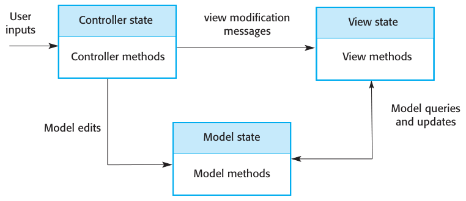
| WAF supportWAF 支持 | What it provides提供的功能 |
|---|---|
| Security安全 | Classes for user authentication (login) and access control用于用户认证（登录）与访问控制的类 |
| Dynamic web pages动态网页 | Page templates filled with data from the database由数据库数据填充的页面模板 |
| Database integration数据库集成 | No database itself; abstract interface classes for databases such as MySQL数据库本身不包含在内；提供面向 MySQL 等数据库的抽象接口类 |
| Session management会话管理 | Creating and managing sessions (a user's series of interactions)创建和管理会话（用户的一系列交互） |
| User interaction用户交互 | AJAX and HTML5 support; device-independent interfaces for phones and tablets支持 AJAX 与 HTML5；为手机和平板电脑提供与设备无关的界面 |
Step 3: inversion of control第 3 步：控制反转
In words: normally your code calls the library; with a framework, the framework calls your code.用文字表述：通常是你的代码调用库；使用框架时，是框架调用你的代码。
Everyday picture: in a restaurant you do not walk into the kitchen. The waiter calls you when the food is ready.日常比喻：在餐馆里你不会走进厨房。食物做好时，服务员会叫你。
To build an application on a framework, the developer does two things. First, add concrete classes that inherit operations from the framework's abstract classes. Second, define callbacks, that is, methods that run when the framework recognises an event. The framework's objects, not the application's, control the system. This is inversion of control（控制反转）. When an event arrives, the framework invokes a hook method（钩子方法）that the developer has linked to application code. That code defines the response.要在框架之上构建应用，开发者要做两件事。第一，添加具体类，继承框架抽象类中的操作。第二，定义回调，即框架识别到某个事件时运行的方法。框架的对象而不是应用的对象控制系统。这就是控制反转。当事件到达时，框架调用开发者与应用代码相连的钩子方法。由该代码定义响应。

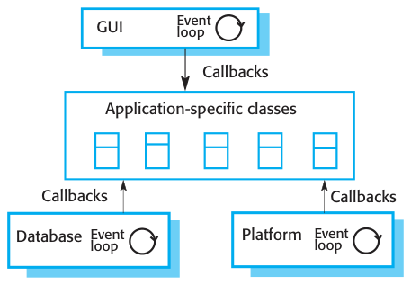
class Framework: # framework code, not modified by the developer
def run(self):
while True: # the framework owns the event loop
event = self.next_event()
if event.kind == "click":
self.on_click(event) # hook method
def on_click(self, event): # default hook: does nothing
pass
class MyApp(Framework): # application-specific class
def on_click(self, event): # callback: called BY the framework
print("Order button pressed")
The code prints "Order button pressed" when a click event arrives. The loop in run belongs to the framework. Your only code is on_click.程序在收到点击事件时会打印 "Order button pressed"。run 中的循环属于框架。你自己写的代码只有 on_click。
The price of inversion of control: two systems built on the same framework each assume that the framework sends events only to them. Combining them is hard. Debugging is also harder, because control passes through framework code that you did not write.控制反转的代价：两个基于同一框架构建的系统，都假定框架只把事件发给自己。把它们组合起来很难。调试也更难，因为控制权会经过你没有写过的框架代码。
Other classes of framework. Besides web application frameworks there are three more classes.其他类别的框架。除了 Web 应用框架之外，还有另外三类。
| Class类 | Supports支持的内容 | Examples示例 |
|---|---|---|
| System infrastructure系统基础设施 | Building system infrastructure构建系统基础设施 | Communications, user interfaces, compilers通信、用户界面、编译器 |
| Middleware integration中间件集成 | Standards and classes for component communication and information exchange用于构件通信和信息交换的标准与类 | Microsoft .NET, Enterprise JavaBeans (EJB)Microsoft .NET 与 Enterprise JavaBeans（EJB） |
| Enterprise application企业应用 | One application domain, with embedded domain knowledge单一应用领域，内嵌领域知识 | Telecommunications, finance; now little used, largely superseded by software product lines电信、金融；现已很少使用，基本已被软件产品线取代 |
Step 4: costs第 4 步：代价
Frameworks are effective but expensive to introduce. They are complex and take months to learn. Choosing a framework is difficult and costly. Debugging is harder than for original code.框架很有效，但引入它的成本很高。它们很复杂，要花几个月才能学会。选择框架既困难又昂贵。调试比调试原始代码更难。
Practice练习
Q1. (Explain) Explain inversion of control. Why could it cause problems if you integrated two separate systems that were originally built on the same application framework?Q1.（解释）解释控制反转。若将两个原本基于同一应用框架构建的独立系统集成在一起，为什么可能会出问题？
Answer
In a framework the framework's own objects, not the application's, are in control. The framework runs the event loop, recognises events from the user interface and the database, and calls hook methods that the developer has linked, through callbacks, to application code. This inverts the flow of a library, where the application calls the library.在框架中，控制权在框架自身的对象手中，而非应用的对象。框架运行事件循环，识别来自用户界面和数据库的事件，并通过回调调用开发者已链接到应用代码的钩子方法。这与库的控制流相反：使用库时由应用调用库。
Each system built on the framework assumes that the framework dispatches events only to it and that it owns the framework's event handling and state. In a combined system there is one framework and one event loop, so events can reach the wrong system or be lost, the hook methods and framework state of the two systems interfere, and neither system can stay in control.基于该框架构建的每个系统都假定：框架只会将事件分派给自己，并且自己拥有框架的事件处理和状态。在合并后的系统中，只有一个框架和一个事件循环，因此事件可能被送错系统或丢失，两个系统的钩子方法与框架状态相互干扰，而且两个系统都无法保持控制。
Q2. (Trace) In an MVC web application a clerk edits a customer's phone number in a form view while a customer list view shows the same customer. Describe step by step what happens.Q2.（手工演算）在一个 MVC Web 应用中，一名职员在表单视图中编辑某客户的电话号码，同时客户列表视图显示同一客户。请逐步描述会发生什么。
Answer
- The user's input reaches the controller of the form view.用户的输入到达表单视图的控制器。
- The controller sends a model edit; the model, which holds the single copy of the data, changes its state.控制器向模型发送编辑操作；模型持有数据的唯一副本，其状态随之改变。
- The controller sends view-modification messages; each view (form and list) queries the model for the new state and redisplays it.控制器向各视图发送视图修改消息；每个视图（表单视图和列表视图）向模型查询新状态并重新显示。
- Both views now show the new number because both read the same model.两个视图现在都显示新的号码，因为二者读取的是同一个模型。
MVC separates state from presentation, so one model can have several views and can be updated through any of them.MVC 将状态与呈现分离，因此一个模型可以有多个视图，并且可以通过其中任一视图进行更新。
Q3. (True/false) Justify each answer. (a) A framework written in Java can be reused in a Python project. (b) A framework-based application is easier to debug than original code because the framework is already tested. (c) Enterprise application frameworks are the most widely used class of framework.Q3.（判断）对每个答案给出理由。(a) 用 Java 编写的框架可以在 Python 项目中复用。(b) 基于框架的应用比原创代码更容易调试，因为框架已经过测试。(c) 企业应用框架是使用最广泛的一类框架。
Answer
(a) False. A framework is a set of classes in one object-oriented language, so it is language-specific.(a) 错误。框架是用一种面向对象语言编写的一组类，因此它是特定于语言的。
(b) False. The developer may not understand how framework methods interact, and debugging tools show framework internals the developer does not know.(b) 错误。开发者可能不理解框架方法如何相互作用，而且调试工具显示的是开发者并不了解的框架内部细节。
(c) False. Web application frameworks are the most widely used. Enterprise application frameworks are little used now and were largely superseded by software product lines.(c) 错误。Web 应用框架是使用最广泛的。企业应用框架现在很少使用，并且已在很大程度上被软件产品线取代。
Software product lines ★★★软件产品线
Goal. Define a software product line, name the three kinds of component of its base application, compare it with a framework, draw a layered architecture, and tell design-time from deployment-time configuration.目标。 定义软件产品线，说出其基础应用的三类构件，把它与框架作比较，画出分层体系结构，并区分设计时配置与部署时配置。
Step 1: what a product line is第 1 步：什么是产品线
In words: a product line = one shared core, plus parts that you configure or replace for each customer.用文字表述：产品线 = 一个共享的核心，加上为每个客户配置或替换的部分。
A software product line（软件产品线）is a set of applications with a common architecture and shared components, each specialised to reflect specific customer requirements. A high proportion of the code is reused in every system, and the tests for large parts of it are reused too. So development time falls.软件产品线是一组应用，它们具有共同的体系结构和共享构件，并且各自针对具体的客户需求做了专门化。每个系统中都有很大比例的代码被复用，其中大部分代码的测试也被复用。因此开发时间会减少。
Product lines usually grow out of existing applications. First the code is copied from one system to the next. The structure gets worse and each new version is harder to make. Then the company finds the common functionality and builds a base application.产品线通常由已有的应用发展而来。起初代码从一个系统复制到下一个系统。结构越来越差，每个新版本都更难做。于是公司找出共同的功能，构建一个基础应用。

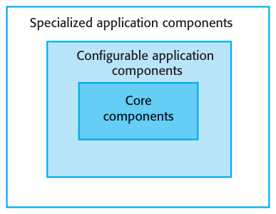
| Component type构件类型 | Role职责 | Changed for a new instance?新实例中是否会改变？ |
|---|---|---|
| Core核心 | Infrastructure support基础设施支持 | Not usually通常不会 |
| Configurable可配置 | Modified and configured to specialise them; sometimes reconfigured without code changes through a built-in component configuration language经修改和配置以实现特化；有时可通过内置的构件配置语言重新配置，无需修改代码 | Configured通过配置 |
| Specialised (domain-specific)特化（领域专用） | Application-specific parts应用专用部分 | Some or all replaced部分或全部被替换 |
Step 2: framework or product line?第 2 步：框架还是产品线？
In words: a framework is general and written in code; a product line is specific to a domain and can, in principle, be changed without limit.用文字表述：框架是通用的，用代码写成；产品线则针对某个领域，原则上可以无限制地修改。
| Aspect方面 | Application framework应用框架 | Software product line软件产品线 |
|---|---|---|
| Extension扩展 | Inheritance and polymorphism; framework code is generally not modified, and changes are limited to what the framework supports通过继承和多态；框架代码一般不修改，且修改仅限于框架所支持的范围 | Not necessarily object-oriented; components are changed, deleted or rewritten, with no limit in principle不一定是面向对象的；构件可以被修改、删除或重写，原则上没有限制 |
| Scope范围 | General support (e.g., web applications)通用支持（例如 Web 应用） | Detailed domain and platform information (e.g., web applications for health records)详细的领域与平台信息（例如用于健康档案的 Web 应用） |
| Hardware硬件 | Software-oriented, no hardware interaction components面向软件，不包含硬件交互构件 | Often equipment control, so includes hardware interfacing通常是设备控制，因此包含硬件接口 |
| Starting point起点 | The framework itself框架本身 | A family of related applications owned by one organisation; often the closest member, not the generic core同一组织拥有的一族相关应用；通常以最接近的成员为起点，而非通用核心 |
A product line can be built on a framework. A web framework gives a help-desk product line. Each help desk is then a specialised version of it.产品线可以建立在框架之上。例如，一个 Web 框架可以用来做一条帮助台产品线。每个帮助台都是它的一个专门化版本。
Step 3: the layered architecture of a product line第 3 步：产品线的分层体系结构
Product lines differ by platform, environment, function or process. Many follow a style of their own. Example: emergency-service dispatching. An operator takes a call about an incident, finds a suitable vehicle and sends it. The versions for police, fire and ambulance differ in detail. All follow the resource allocation and management architecture, which has four layers: interaction, I/O management, resource management and database management.产品线之间的差异可能来自平台、环境、功能或流程。许多产品线都有自己固定的风格。例如：紧急服务调度。操作员接到一个事件的电话，找到合适的车辆并派出。警察、消防和急救的版本细节不同，但都遵循资源分配与管理体系结构，它分为四层：交互、I/O 管理、资源管理和数据库管理。

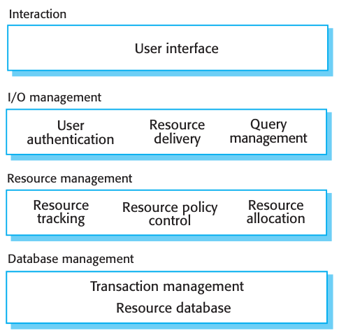

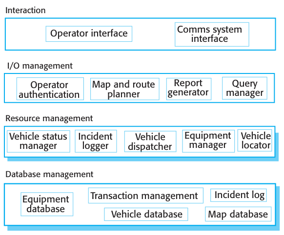
The four types of specialisation（专门化类型）say what differs between two members of a product line. Example for environment: the same dispatcher needs other communications hardware for each emergency service.四种专门化类型说明产品线的两个成员之间可能有哪些不同。以环境为例：同一个调度员，在不同的紧急服务中需要不同的通信硬件。
| Type类型 | What changes变化内容 | Example示例 |
|---|---|---|
| Platform平台 | Only components that interface to the hardware and operating system; functionality is unchanged仅与硬件和操作系统对接的构件；功能不变 | Windows, Mac OS and Linux versionsWindows、Mac OS 和 Linux 版本 |
| Environment环境 | Components reflect the operating environment and peripherals构件反映运行环境和外设 | Different communications hardware for each emergency service各应急服务使用不同的通信硬件 |
| Functional功能 | Functional components modified, new ones added修改功能构件，并新增构件 | Library automation for public, reference or university libraries面向公共图书馆、参考图书馆或大学图书馆的图书馆自动化 |
| Process过程 | Adapted to specific business processes适应特定的业务流程 | Centralised versus distributed ordering集中式与分布式订购 |
How to draw one for a new case: 1. Write the four layer names as boxes, top to bottom. 2. Put the components that talk to people and other systems in layer 1. 3. Put validation and reporting in layer 2. 4. Put the components that manage the resources of the domain in layer 3. 5. Put the data stores in layer 4. 6. Mark each component as core, configurable or specialised.为新案例画一张图的方法：1. 从上到下把四层的名称画成方框。2. 把与人和其他系统交互的构件放在第 1 层。3. 把校验和报告放在第 2 层。4. 把管理领域资源的构件放在第 3 层。5. 把数据存储放在第 4 层。6. 把每个构件标记为核心、可配置或专门化。
Step 4: creating a new product instance第 4 步：创建新的产品实例
In words: start from the existing member that is closest to what the customer wants, and change as little as possible.用文字表述：从与客户需求最接近的现有成员出发，尽量少做改动。

- Elicit stakeholder requirements. Stakeholders can try the existing system and ask for changes to it.获取干系人需求。 干系人可以试用现有系统，并要求对它做出修改。
- Choose the closest-fit existing instance as the starting point.选择最契合的现有实例作为起点。
- Renegotiate requirements as details emerge, so that the changes to the base application stay small.随着细节显现，重新协商需求，使对基础应用的改动保持较小。
- Adapt the existing system. Develop new modules and adapt existing ones.改造现有系统。 开发新模块，并修改现有模块。
- Deliver the new family member. Document its key features so that it can seed later systems.交付新的家族成员。 记录它的关键特性，以便它可以作为后续系统的起点。
The more detailed the requirements, the less likely it is that existing components meet them. Flexible stakeholders get faster and cheaper delivery.需求越详细，现有构件满足它们的可能性就越小。灵活的干系人能带来更快、更便宜的交付。
Step 5: design-time and deployment-time configuration第 5 步：设计时配置与部署时配置
In words: design-time = the supplier changes the code; deployment-time = the customer only fills in settings. Everyday picture: a tailor who cuts a new suit versus a customer who adjusts the seat of a car.用文字表述：设计时 = 供应方修改代码；部署时 = 客户只需填写设置。日常比喻：裁缝做一套新西装，与顾客调整汽车座椅，两者的区别。
| Aspect方面 | Design-time configuration（设计时配置） | Deployment-time configuration（部署时配置） |
|---|---|---|
| Done by执行者 | The supplier, adapting the core or an existing instance供应商，通过调整核心或已有实例 | The customer, or consultants working with the customer客户，或与客户合作的顾问 |
| How方式 | Develop, select or adapt components; usually change and extend source code开发、选择或调整构件；通常需要修改和扩展源代码 | A configuration tool writes a configuration database or files; the running system consults them配置工具写入配置数据库或配置文件；运行中的系统读取这些内容 |
| Flexibility灵活性 | Higher: code can change较高：代码可以修改 | Limited to the facilities the generic system offers仅限于通用系统所提供的设施 |
| Used when适用于 | The deployment-time facilities cannot produce the new version部署时设施无法生成新版本时 | The generic system was designed for configuration通用系统是为配置而设计的 |
Deployment-time configuration has three levels:部署时配置有三个层次：
- Component selection. Choose the modules that give the needed functions. Example: switch on an image component that links X-rays to a patient record.构件选择。 选出能提供所需功能的模块。例如：打开一个把 X 光片与病人记录相连的图像构件。
- Workflow and rule definition. Define how information is processed stage by stage, and the rules for checking data.工作流与规则定义。 定义信息如何逐个阶段地处理，以及检查数据的规则。
- Parameter definition. Set values, for example the maximum length of an input field.参数定义。 设置取值，例如输入字段的最大长度。
Practice练习
Q1. (Compare) State four differences between an application framework and a software product line.Q1.（比较）说明应用框架与软件产品线之间的四项区别。
Answer
- Extension: a framework is extended through inheritance and polymorphism, its code is not modified, and changes are limited to what it supports. A product line is not necessarily object-oriented; components are changed, deleted or rewritten, without limit in principle.扩展：框架通过继承和多态进行扩展，其代码不被修改，修改仅限于框架所支持的范围。产品线不一定是面向对象的；构件可以被修改、删除或重写，原则上不受限制。
- Scope: a framework gives general support (e.g., any web application). A product line embeds detailed domain and platform information (e.g., web applications for health records).范围：框架提供通用支持（例如任何 Web 应用）。产品线则内嵌详细的领域与平台信息（例如用于健康档案的 Web 应用）。
- Hardware: product lines are often equipment-control applications and include hardware interfacing. Frameworks are software-oriented.硬件：产品线通常是设备控制应用，并包含硬件接口。框架则面向软件。
- Starting point: a framework is the starting point. A product line is a family of related applications of one organisation, and a new system often starts from the closest family member, not from the generic core.起点：框架本身就是起点。产品线是同一组织的一族相关应用，新系统通常从最接近的族成员开始，而不是从通用核心开始。
Q2. (Design) Suggest a layered product-line architecture for a family of remote monitoring and data collection systems (weather stations, river-level monitors, air-quality stations). Name components at each level and say which are core, configurable or specialised.Q2.（设计）为一族远程监测与数据采集系统（气象站、河流水位监测器、空气质量监测站）提出一个分层的产品线体系结构。列出每一层的构件，并说明哪些是核心构件、可配置构件或特化构件。
Answer
| Level层次 | Components构件 |
|---|---|
| 1 Interaction1 交互 | Communications interface (radio, satellite, network); local display and maintenance interface通信接口（无线电、卫星、网络）；本地显示与维护接口 |
| 2 I/O management2 I/O 管理 | Data collection scheduler, data validation and compression, report generator, authentication, query manager数据采集调度器、数据验证与压缩、报告生成器、认证、查询管理器 |
| 3 Instrument management3 仪器管理 | Instrument manager and calibration, alarm manager, data aggregation, device status and diagnostics仪器管理器及校准、报警管理器、数据聚合、设备状态与诊断 |
| 4 Database management4 数据库管理 | Transaction management, measurement store, configuration database, instrument database事务管理、测量数据存储、配置数据库、仪器数据库 |
Core: scheduler, validation, transaction management, authentication. Configurable at deployment: reporting schedules and formats, alarm thresholds, which instruments are attached. Specialised: instrument drivers for each sensor type (environment specialisation) and drivers for each communications hardware or platform (platform specialisation).核心：调度器、验证、事务管理、认证。部署时可配置：报告的时间表与格式、报警阈值、所连接的仪器。特化：针对每种传感器类型的仪器驱动程序（环境特化），以及针对每种通信硬件或平台的驱动程序（平台特化）。
思路：沿用 4 层结构（交互、I/O、资源管理、数据库），再区分核心、可配置、专用。
Q3. (Classification) A hospital patient information system is delivered to three hospitals. For each change say whether it is design-time or deployment-time configuration, and for deployment-time name the level. (a) The supplier writes a new billing module for one hospital. (b) Hospital A switches on the image-management component that links X-rays to patient records. (c) Hospital B sets the maximum length of the surname field to 40 characters. (d) Hospital C requires blood-test values to lie in a valid range before they are stored, and requires a senior nurse to approve entries made by ward nurses.Q3.（分类）一套医院患者信息系统交付给三家医院。对每项变更，说明它属于设计时配置还是部署时配置；若属于部署时配置，则指出其层次。(a) 供应商为某家医院编写一个新的计费模块。(b) 医院 A 启用了将 X 光片关联到患者记录的图像管理构件。(c) 医院 B 将姓氏字段的最大长度设为 40 个字符。(d) 医院 C 要求血液检测值在存储前必须位于有效范围内，并要求资深护士审批病房护士录入的条目。
Answer
(a) Design-time: the supplier develops a component and changes the source. (b) Deployment-time, component selection. (c) Deployment-time, parameter definition. (d) Deployment-time, workflow and rule definition: a validation rule and an approval workflow.(a) 设计时：供应商开发构件并修改源代码。(b) 部署时，构件选择。(c) 部署时，参数定义。(d) 部署时，工作流与规则定义：包括一条验证规则和一个审批工作流。
Configurable application systems and ERP ★★可配置应用系统与 ERP
Goal. Say why companies choose ERP and what goes wrong, list the four architectural features of an ERP system, and explain why testing a configured system is hard.目标。 说明企业为什么选择 ERP，以及会出什么问题；列出 ERP 系统的四个体系结构特征；解释为什么测试一个已配置的系统很难。
A configurable application system is one product that gives the customer all the functions it needs. The vendor maintains it and provides the platform. Development means configuration. The next section covers the alternative: joining several products.可配置应用系统是一个产品，它为客户提供其所需的全部功能。供应商负责维护并提供平台。开发就是配置。下一节介绍另一种做法：把多个产品组合起来。
| Configurable application system可配置应用系统 | Integrated application systems集成应用系统 |
|---|---|
| A single product provides the functionality the customer needs单一产品提供客户所需的功能 | Several application systems are integrated to give customised functionality将多个应用系统集成，以提供定制化功能 |
| Generic solution, standardised processes通用解决方案，标准化流程 | Flexible solutions can be developed for the customer's processes可以为客户的流程开发灵活的解决方案 |
| Development focus is configuration开发重点是配置 | Development focus is integration开发重点是集成 |
| The system vendor is responsible for maintenance系统供应商负责维护 | The system owner is responsible for maintenance系统所有者负责维护 |
| The system vendor provides the platform系统供应商提供平台 | The system owner provides the platform系统所有者提供平台 |
Five benefits over custom development:与定制开发相比，有五个好处：
- A reliable system is deployed faster.可靠的系统部署得更快。
- Functionality is visible, so suitability is easier to judge, and other companies' experience is available.功能是可见的，因此更容易判断其是否适用，而且还能借鉴其他公司的经验。
- Some development risks are avoided, although the approach has its own.一些开发风险被避免了，不过这种做法也有它自己的风险。
- The business concentrates on its core activity instead of IT development.企业可以专注于其核心业务，而非 IT 开发。
- The vendor is responsible for updates when the platform evolves.平台演化时，供应商负责更新。
Five problems:五个问题：
- Requirements must be adapted to the product, which can disrupt existing business processes.需求必须适应产品，这可能会打乱现有的业务流程。
- The product rests on assumptions that are practically impossible to change, so the customer adapts its business.产品建立在一些几乎无法改变的假设之上，因此客户只能调整自己的业务。
- Choosing the right product is hard, because many are poorly documented.选对产品很难，因为很多产品文档很差。
- Local expertise is lacking, so the customer depends on the vendor and consultants, whose advice may be geared to selling.缺乏本地专业知识，因此客户依赖供应商和顾问，而他们的建议可能是以推销为导向的。
- The vendor controls support and evolution and may go out of business, be taken over, or change the product to the customer's disadvantage.供应商控制着支持与演进，可能倒闭、被收购，或以对客户不利的方式改变产品。
Enterprise Resource Planning企业资源规划（ERP）
In words: ERP = one big system that runs the whole company's orders, stock and production from a single database.用文字表述：ERP = 一个大型系统，用同一个数据库管理整个公司的订单、库存和生产。
Enterprise Resource Planning（企业资源规划, ERP）systems are large integrated systems for ordering and invoicing, inventory management and manufacturing scheduling. Configuring one means collecting detailed information about the customer's business and putting it into a configuration database. Consultants usually do this with the customer.企业资源规划（ERP）系统是大型集成系统，用于下单与开票、库存管理和生产排程。配置它意味着收集客户业务的详细信息，并把它们录入一个配置数据库。通常由顾问与客户一起完成。
The architecture has four key features:体系结构有四个关键特征：
- Modules for business functions, such as purchasing, supply chain management, logistics and customer relationship management.模块，对应业务功能，例如采购、供应链管理、物流和客户关系管理。
- Business process models for each module, for example how an order is created and approved.业务流程模型，每个模块一个，例如订单如何创建和审批。
- A common database for all functions, so that customer details are not stored twice.共用数据库，所有功能共用，这样客户信息就不会被存两次。
- Business rules that apply to all data. Example: an expense claim must be approved by someone more senior than the claimant.业务规则，适用于所有数据。例如：报销单必须由比报销人级别更高的人审批。
The risk is a mismatch. The customer's processes must be expressed in the ERP's configuration language, which carries the vendor's view of business. Example: an ERP sold to a university was built around a "customer", an outside agent that buys goods from a supplier. A university has students, research funding agencies and charities. None of them fits. Resolving this took months, and the solution only partly met the requirements.风险在于错配。客户的流程必须用 ERP 的配置语言来表达，而这种语言体现的是供应商对业务的理解。例如，一个卖给大学的 ERP 是围绕“客户”构建的，也就是向供应商购买商品的外部代理。而大学有学生、科研经费资助机构和慈善组织，它们都不符合这个模型。解决这个问题花了几个月，而且方案只部分满足了需求。
Testing a configured system配置系统的测试
Testing is harder than for a programmed system, for two reasons.测试比测试一个编程实现的系统更难，原因有两个。
- Test automation may be hard or impossible. There may be no API for testing frameworks such as JUnit, so testers enter data by hand.测试自动化可能很难，甚至不可能。 测试框架（如 JUnit）可能没有 API，因此测试人员只能手工输入数据。
- Errors are subtle and specific to business processes. The platform is reliable. Faults come from misunderstandings between the people who configure the system and the users.错误隐蔽，并且与具体的业务流程相关。 平台本身是可靠的。故障来自配置系统的人与用户之间的误解。
Practice练习
Q1. (Discuss) Why have many large companies chosen ERP systems as the basis of their information systems? What problems may arise when one is deployed?Q1.（讨论）为什么许多大型公司选择 ERP 系统作为其信息系统的基础？部署 ERP 系统时可能会出现哪些问题？
Answer
Reasons: an ERP covers ordering, invoicing, inventory, manufacturing scheduling and customer relationship management in integrated modules on a common database with company-wide business rules, so information is not replicated and data stays consistent. A proven system is deployed faster than a custom one, the company concentrates on its core business, and the vendor updates the product.原因：ERP 将订单处理、开票、库存、生产排程和客户关系管理等功能集成在不同模块中，并基于公共数据库和全公司范围的业务规则运行，因此信息不会重复，数据保持一致。经过验证的系统比定制系统部署得更快，公司可以专注于核心业务，而且供应商负责更新产品。
Problems: functionality is limited to the built-in modules. Business processes must be expressed in the ERP's configuration language, which embeds the vendor's view of business; a mismatch (e.g., the "customer" of a university) can take months to resolve and still only partly meet the needs. Configuration needs consultants and may take months for a large system. Testing is hard. Business processes may have to change, and the vendor controls support and evolution.问题：功能仅限于内置模块。业务流程必须用 ERP 的配置语言来表达，而该语言内嵌了供应商对业务的看法；不匹配（例如大学中的“客户”）可能需要数月才能解决，而且仍然只能部分满足需求。配置需要顾问参与，对于大型系统可能耗时数月。测试很困难。业务流程可能不得不改变，而且供应商控制着支持与演进。
Q2. (Explain) Give two reasons why testing a configured system is harder than testing a programmed one.Q2.（解释）给出测试配置系统比测试编程构建的系统更困难的两个原因。
Answer
- Test automation may be impossible: there may be no API that testing frameworks such as JUnit can use, so testers enter data by hand, and informal specifications make test cases hard to define without help from end users.测试自动化可能无法实现：可能没有 JUnit 等测试框架能够使用的 API，因此测试人员只能手工录入数据；而非正式的规格说明使得没有最终用户的帮助就很难定义测试用例。
- Errors are subtle and specific to business processes: the product is a reliable platform, so faults come from misunderstandings between the people configuring the system and the user stakeholders. Testers without detailed knowledge of the end-user processes cannot detect them.错误很隐蔽，并且与业务流程密切相关：产品本身是可靠的平台，因此缺陷来自配置系统的人员与用户利益相关者之间的误解。不了解最终用户流程细节的测试人员无法发现这些缺陷。
Integrated application systems ★★集成应用系统
Goal. Give the three design choices when integrating application systems, tell an adaptor from a wrapper, and match a case to one of the four problems of Boehm and Abts.目标。 给出集成应用系统时的三种设计选择；区分适配器与包装器；把一个案例对应到 Boehm 和 Abts 提出的四类问题之一。
An integrated application system combines two or more application systems, or legacy systems. Use it when no single product meets all needs, or when a new product must work with systems already in use. The systems talk through their APIs or service interfaces, by passing the output of one to the input of another, or by sharing a database.集成应用系统把两个或多个应用系统（或遗留系统）组合在一起。当没有单一产品能满足全部需求，或者新产品必须与已在使用的系统协同工作时，就使用它。这些系统通过各自的 API 或服务接口通信：把一个系统的输出作为另一个系统的输入，或者共享一个数据库。
Design choices设计选择
In words: choose the products, decide how their data is converted, and decide which of their features to allow.用文字表述：选择产品，决定它们的数据如何转换，并决定允许使用它们的哪些功能。
- Which products offer the most appropriate functionality? Without experience of a product, the choice is hard.哪些产品提供最合适的功能？ 如果没有使用某个产品的经验，这个选择很难做。
- How will data be exchanged? Each product has its own data formats. You write adaptors（适配器）that convert one representation into another. They run alongside the products.数据如何交换？ 每个产品都有自己的数据格式。你要编写适配器，把一种表示转换成另一种。适配器与产品并排运行。
- Which features will be used? Products offer more than you need. Deny access to the rest if possible, because unused functions can interfere with normal operation.会用到哪些功能？ 产品提供的功能往往多于需要的。如果可能，就禁止访问其余功能，因为没用到的功能可能会干扰正常运行。
Service wrappers服务包装器
In words: a wrapper = a shell around one system that offers its functions as ready-to-use services.用文字表述：包装器 = 包在一个系统外面的外壳，把它的功能以即用型服务的形式提供出来。
If a product has no service interface, the integrator programs a wrapper（包装器）that hides the application and offers one service for each discrete unit of functionality. Others then use the services and never touch the internals. This is valuable for legacy systems.如果一个产品没有服务接口，集成者就编写一个包装器，它隐藏应用的内部实现，并为每个离散的功能单元提供一个服务。其他系统只使用这些服务，从不接触内部。这对遗留系统很有价值。
An adaptor converts data between two systems. A wrapper gives one system a service interface. Both are small pieces of glue code.适配器在两个系统之间转换数据；包装器为一个系统提供服务接口。两者都是很小的粘合代码。
The four problems of integration集成的四类问题
In words: the products are large, are sold to many customers, and change without asking you.用文字表述：这些产品规模庞大，卖给很多客户，并且会在你不知情的情况下改变。
| Problem问题 | What goes wrong问题表现 |
|---|---|
| Lack of control over functionality and performance对功能与性能缺乏控制 | The published interface may promise facilities that the product implements badly or slowly; hidden operations may interfere; the vendor may not care about the fix, so users find workarounds已公布的接口可能承诺某些功能，而产品实现得很差或很慢；隐藏的操作可能会产生干扰；供应商可能并不关心修复，因此用户只能寻找变通办法 |
| Problems with system interoperability系统互操作性问题 | Each product embeds assumptions about how it will be used. In one study of four products, three were event-based with different event models and each assumed exclusive access to the event queue; the effort was five times the estimate and the schedule two years instead of six months. Lack of standards compliance makes it worse每个产品都内嵌了关于其使用方式的假设。在一项针对四个产品的研究中，其中三个基于事件，采用不同的事件模型，而且每个都假定独占事件队列；工作量是估计值的五倍，进度为两年而非六个月。缺乏标准符合性会使问题更严重 |
| No control over system evolution无法控制系统演化 | Vendors change products in response to the market; new versions come often, may be incompatible with earlier ones and carry unwanted functionality; old versions may become unsupported供应商根据市场变化修改产品；新版本频繁发布，可能与早期版本不兼容，并带有不需要的功能；旧版本可能不再获得支持 |
| Support from system vendors系统供应商的支持 | Support varies widely, and without source code and detailed documentation developers depend on the vendor, who may drop the product for lack of demand or be taken over支持差异很大；若没有源代码和详细文档，开发者就要依赖供应商，而供应商可能因需求不足而停止该产品，或被收购 |
These are life-cycle problems. Maintenance and evolution may cost more than for a custom system.这些都是生命周期问题。维护和演化的成本可能比定制系统更高。
Practice练习
Q1. (Explain) Why are adaptors usually needed when systems are built by integrating application systems? Suggest three practical problems in writing adaptor software.Q1.（解释）当通过集成应用系统来构建系统时，为什么通常需要适配器？请给出编写适配器软件时的三个实际问题。
Answer
Each product uses its own data structures, formats and interface conventions, so data from one must be converted into the representation of the other. Adaptors do this at run time, alongside the products.每个产品都使用自己的数据结构、格式和接口约定，因此一个产品的数据必须转换为另一个产品的表示形式。适配器在运行时与产品并行地完成这一转换。
Practical problems:实际问题：
- Data-model mismatch: fields without a counterpart, different granularity (one name field against first and last name), different codes, units or date formats, so a conversion can lose information.数据模型不匹配：有些字段在另一方没有对应项，粒度不同（一个姓名字段对应名和姓），编码、单位或日期格式不同，因此转换可能导致信息丢失。
- Restricted or missing interfaces: no usable API, so the adaptor has to read files or the product's database and bypasses its business logic; it breaks when a new version changes the format.接口受限或缺失：没有可用的 API，因此适配器必须读取文件或产品的数据库，从而绕过其业务逻辑；当新版本改变格式时，适配器就会失效。
- Different interaction and timing models: event-based against batch processing, different transaction and error handling. A failure half-way through a conversion leaves the two systems inconsistent, and testing is hard without access to the internals.交互与时序模型不同：基于事件的交互与批处理之间存在差异，事务与错误处理也各不相同。转换过程中途发生故障会使两个系统处于不一致状态，而且如果无法访问内部结构，测试将十分困难。
Q2. (Explain) What is a service wrapper? Why does it ease the integration of a legacy system?Q2.（解释）什么是服务包装器？它为何能简化遗留系统的集成？
Answer
A wrapper is a program that hides an application and offers its functionality through a standard service interface, with one service for each discrete unit of functionality. The other systems use only these services, so they depend on a stable interface instead of the internals and data formats of the legacy system. If the legacy system offers no service interface, the integrator has to program the wrapper.包装器是一种程序，它将应用隐藏起来，并通过标准服务接口提供其功能，每个离散的功能单元对应一项服务。其他系统只使用这些服务，因此它们依赖于稳定的接口，而不是遗留系统的内部结构和数据格式。如果遗留系统没有服务接口，集成者就必须编写包装器。
Terms to recognise ★需要认识的术语
| Term术语 | What to know要知道什么 |
|---|---|
| Not-invented-here syndrome非我发明综合征 | Engineers distrust components that others wrote, or prefer writing original code. It is a human barrier to reuse工程师不信任别人写的构件，或者更喜欢自己写原始代码。这是复用的一道人为障碍 |
| Base application基础应用 | Core, configurable and specialised components of a product line, from which new members are made产品线中可以从中组装出新成员的核心、可配置和专门化构件 |
Exam-style questions考试题型练习
Q1. (Scenario analysis; 12 marks) A national postal operator must replace its parcel-tracking system within 8 months. The system will run for 15 years, stores personal data, must pass an external security audit and must run on the operator's own Linux servers. The in-house team is strong in Java and has no ERP experience. Several commercial and open-source tracking products cover most of the requirements.Q1.（情景分析；12 分）某国家邮政运营商必须在 8 个月内更换其包裹追踪系统。该系统将运行 15 年，存储个人数据，必须通过外部安全审计，并且必须运行在该运营商自有的 Linux 服务器上。内部团队精通 Java，但没有 ERP 经验。若干商业和开源追踪产品覆盖了大部分需求。
(a) Name the six factors that govern the choice of reuse technique and apply each to this case. (6 marks)(a) 列出决定复用技术选择的六个因素，并将每个因素应用于本案例。（6 分）
(b) Recommend a reuse approach and justify it. Give two risks of your choice and a mitigation for each. (4 marks)(b) 给出推荐的复用方式及理由。给出所选方案的两个风险，并为每个风险给出缓解措施。（4 分）
(c) The operator also considers making its tracking module reusable for other postal projects. This costs $120,000, against $50,000 for a project-specific version, and reusing the module costs $15,000 per project. After how many projects does it pay off? (2 marks)(c) 该运营商还考虑使其追踪模块可供其他邮政项目复用。这需要 $120,000，而针对特定项目的版本成本为 $50,000，复用该模块每个项目的成本为 $15,000。经过多少个项目后才划算？（2 分）
Answer
(a) Schedule: 8 months is short, so reuse a complete application system instead of building components; the fit is imperfect but least development is needed. Lifetime: 15 years, so maintainability matters more than quick gain; support must outlive any one vendor, so prefer open-source or source-available products. Team skills: strong Java skills favour Java-based products and frameworks the team can extend; avoid ERP, where there is no expertise. Criticality and non-functional requirements: personal data and an external audit require a security case, which is hard without source code. Application domain: parcel tracking is a logistics domain with generic products, so configure instead of building, which is almost always cheaper. Platform: the product must run on Linux, which excludes platform-tied products.(a) 进度：8 个月较短，因此应复用完整的应用系统，而非构建构件；契合度不够理想，但所需开发量最少。寿命：15 年，因此可维护性比快速收益更重要；支持必须比任何单一供应商存在得更久，因此宜选择开源或可获取源代码的产品。团队技能：Java 功底强，因此宜选择基于 Java 的产品和团队能够扩展的框架；避免选用 ERP，因为团队没有相关经验。关键性与非功能需求：个人数据与外部审计要求提供安全论证，而没有源代码时很难完成。应用领域：包裹追踪属于有通用产品的物流领域，因此应配置而非构建，这几乎总是更便宜。平台：产品必须运行在 Linux 上，因此排除了与特定平台绑定的产品。
(b) Recommendation: select an open-source tracking application system, configure it, extend the missing parts in Java on a web application framework, and connect legacy data through adaptors. It meets the schedule, gives source access for the audit and the 15-year life, uses the team's skills and fits the platform. Risk 1: the product's built-in assumptions do not match the operator's processes; mitigate by demonstrating the product to stakeholders early and renegotiating requirements. Risk 2: the community or vendor stops support or releases incompatible versions; mitigate by keeping a copy of the source, freezing versions and contracting for support.推荐：选择一个开源的追踪应用系统，进行配置，用 Java 在 Web 应用框架上扩展缺失的部分，并通过适配器连接遗留数据。它满足进度要求，为审计和 15 年的使用期提供源代码，利用了团队的技能，并且与平台相匹配。风险 1：产品内置的假设与运营商的流程不匹配；缓解措施是尽早向利益相关者演示产品，并重新协商需求。风险 2：社区或供应商停止支持，或发布不兼容的版本；缓解措施是保留源代码副本、冻结版本，并签订支持合同。
(c) \(n^{*}=C_r/(C_n-C_u)\) = 120,000 / (50,000 − 15,000) = 3.43. After 3 projects reuse costs 120,000 + 3 × 15,000 = $165,000 against 3 × 50,000 = $150,000; after 4 projects it costs $180,000 against $200,000. The module pays off from the 4th project.(c) \(n^{*}=C_r/(C_n-C_u)\) = 120,000 / (50,000 − 15,000) = 3.43。3 个项目后，复用的成本为 120,000 + 3 × 15,000 = $165,000，而特定项目版本为 3 × 50,000 = $150,000；4 个项目后，复用成本为 $180,000，而特定项目版本为 $200,000。该模块从第 4 个项目起划算。
思路：六个因素逐条结合场景；推荐方案要讲理由和风险；(c) 用盈亏平衡公式并向上取整。
Q2. (Frameworks; 10 marks)Q2.（框架；10 分）
(a) Define an application framework and explain inversion of control, using the terms callback and hook method. (4 marks)(a) 定义应用框架，并使用回调和钩子方法这两个术语解释控制反转。（4 分）
(b) List five kinds of support that a web application framework provides. (3 marks)(b) 列出 Web 应用框架提供的五类支持。（3 分）
(c) Explain how MVC keeps two views of the same data consistent. (3 marks)(c) 解释 MVC 如何使同一数据的两个视图保持一致。（3 分）
Answer
(a) A framework is an integrated set of software artifacts (classes, objects, components) that collaborate to provide a reusable architecture for a family of related applications; it is a set of concrete and abstract classes in an object-oriented language. With inversion of control the framework's objects, not the application's, control execution. The developer adds concrete classes that inherit from the framework's abstract classes and defines callbacks. When the framework recognises an event, such as a mouse click, it invokes a hook method, which is linked to application code that defines the response.(a) 框架是一组集成的软件制品（类、对象、构件），它们协同工作，为一族相关应用提供可复用的体系结构；它由面向对象语言中的一组具体类和抽象类构成。借助控制反转，控制执行的是框架的对象，而不是应用的对象。开发者添加继承框架抽象类的具体类，并定义回调。当框架识别到某个事件（例如鼠标点击）时，它会调用钩子方法，该方法已链接到定义响应的应用代码。
(b) Security (authentication and access control); dynamic web pages (templates filled from the database); database integration (abstract interfaces to databases); session management; user interaction (AJAX and HTML5, device-independent interfaces).(b) 安全（认证与访问控制）；动态网页（由数据库填充的模板）；数据库集成（面向数据库的抽象接口）；会话管理；用户交互（AJAX 和 HTML5、与设备无关的界面）。
(c) The model holds the single copy of the state and every view has a controller. A change made in one view goes to its controller, which edits the model and sends view-modification messages. Each view queries the model and redisplays, so both views show the same, updated data. The state is separated from its presentations.(c) 模型保存状态的唯一副本，每个视图都有一个控制器。在某一视图中所做的修改会交给其控制器，控制器编辑模型并发送视图修改消息。每个视图查询模型并重新显示，因此两个视图都显示相同的、更新后的数据。状态与其呈现相分离。
Q3. (Product lines; 12 marks)Q3.（软件产品线；12 分）
(a) Define a software product line and describe the three kinds of component in its base application. (4 marks)(a) 定义软件产品线，并描述其基础应用中的三类构件。（4 分）
(b) A company builds a vehicle dispatching product line for police and fire services. Describe its layered architecture and give two ways in which the two instances differ. (4 marks)(b) 某公司为警察和消防服务构建了一条车辆调度产品线。描述其分层体系结构，并给出两个实例之间存在差异的两种方式。（4 分）
(c) Compare design-time and deployment-time configuration and name the three levels of deployment-time configuration. (4 marks)(c) 比较设计时配置与部署时配置，并指出部署时配置的三个层次。（4 分）
Answer
(a) A software product line is a set of applications with a common architecture and shared components, each specialised to reflect specific customer requirements. The base application has core components (infrastructure support, not usually modified), configurable components (modified and configured to specialise them, sometimes through a configuration language without code changes) and specialised domain-specific components (some or all replaced in a new instance).(a) 软件产品线是一组具有公共体系结构和共享构件的应用，每个应用都经过特化，以反映特定客户的需求。基础应用包括核心构件（提供基础设施支持，通常不修改）、可配置构件（经修改和配置实现特化，有时可通过配置语言进行配置而无需修改代码），以及特化的领域专用构件（在新实例中部分或全部被替换）。
(b) Four layers. Interaction: operator interface and communications interface. I/O management: operator authentication, report generator, map and route planner, query manager. Resource management: vehicle locator and dispatcher, vehicle status manager, equipment manager, incident logger. Database management: transaction management and the vehicle, equipment and map databases and incident log. Differences: the police have many vehicles of few types and the fire service few vehicles of many specialised types, so the vehicle database structure differs; the communications hardware (e.g., encrypted police radios) changes the interaction components, which is environment specialisation.(b) 四层。交互层：操作员界面和通信接口。I/O 管理层：操作员认证、报告生成器、地图与路线规划器、查询管理器。资源管理层：车辆定位与调度器、车辆状态管理器、设备管理器、事件记录器。数据库管理层：事务管理，以及车辆、设备和地图数据库及事件日志。差异：警察拥有许多车辆但车型较少，消防服务的车辆较少却有许多专用车型，因此车辆数据库结构不同；通信硬件（例如加密的警用无线电）会改变交互构件，这属于环境特化。
(c) Design-time configuration is done by the supplier, who adapts the core or an existing instance by developing, selecting or adapting components, usually changing the source code; it is the most flexible and is used when the deployment-time facilities cannot produce the new version. Deployment-time configuration is done by the customer or consultants with a configuration tool that produces configuration data (a database or files) which the running generic system consults; no code changes, so it is limited to the built-in facilities. Levels: component selection, workflow and rule definition, parameter definition.(c) 设计时配置由供应商完成，供应商通过开发、选择或调整构件来调整核心或已有实例，通常需要修改源代码；它最为灵活，适用于部署时设施无法生成新版本的情况。部署时配置由客户或顾问借助配置工具完成，配置工具生成配置数据（数据库或文件），运行中的通用系统读取这些数据；无需修改代码，因此仅限于内置设施。层次包括：构件选择、工作流与规则定义、参数定义。
Q4. (Configured application systems; 10 marks)Q4.（配置应用系统；10 分）
(a) State the four key architectural features of an ERP system. (4 marks)(a) 说明 ERP 系统的四个关键体系结构特征。（4 分）
(b) An ERP system sold to a university treated a "customer" as an external agent that buys goods and services. Explain the problem and the general risk it illustrates. (3 marks)(b) 卖给某大学的一套 ERP 系统将“客户”视为购买商品和服务的外部主体。请解释该问题，并说明它所体现的一般性风险。（3 分）
(c) Explain why testing a configured system is harder than testing a programmed one. (3 marks)(c) 解释为什么测试配置系统比测试编程构建的系统更困难。（3 分）
Answer
(a) Modules for business functions (large-grain modules for departments); business process models for each module; a common database for all functions; business rules that apply to all data and keep it consistent across functions.(a) 面向业务功能的模块（用于部门的粗粒度模块）；每个模块的业务流程模型；供所有功能使用的公共数据库；适用于所有数据、并使数据在各功能之间保持一致的业务规则。
(b) A university has only customer-type relationships with students, research funding agencies and charities, and none is a customer who buys products or services from a supplier. The ERP's central concept did not fit, so configuring it was difficult: resolving the mismatch took months and the solution only partly met the requirements. The general risk is a mismatch between the customer's business model and the model embedded in the ERP's configuration language; a serious mismatch makes it highly probable that the ERP will not meet the real needs.(b) 大学与学生、科研资助机构和慈善机构之间只存在客户类型的关系，而这些关系中没有一个属于从供应商购买产品或服务的客户。ERP 的核心概念并不适用，因此配置十分困难：解决这一不匹配花了数月，而且最终方案只能部分满足需求。一般性风险在于客户的业务模型与 ERP 配置语言中内嵌的模型之间不匹配；严重的不匹配使得 ERP 很可能无法满足真实需求。
(c) Automation may be impossible because there may be no API for testing frameworks, so testers enter data manually, and informal specifications make test cases hard to define without end users. Errors are subtle and specific to business processes: the platform is reliable, so faults come from misunderstandings between configurers and stakeholders, which testers without detailed process knowledge cannot detect.(c) 自动化可能无法实现，因为可能没有供测试框架使用的 API，因此测试人员只能手工录入数据；而非正式的规格说明使得没有最终用户的帮助就很难定义测试用例。错误很隐蔽，且与业务流程密切相关：平台是可靠的，因此缺陷来自配置人员与利益相关者之间的误解，而不了解流程细节的测试人员无法发现这些缺陷。
Q5. (Integration; 12 marks) A large company wants a procurement system that lets staff order from their desks. It owns a legacy ordering system linked to invoicing and delivery, and plans to add a web e-commerce platform and use its email system.Q5.（集成；12 分）某大型公司希望建立一套采购系统，使员工可以在各自的办公桌前下单。该公司拥有一套与开票和交付相关联的遗留订购系统，并计划增加一个 Web 电子商务平台，同时使用其电子邮件系统。
(a) Describe the architecture and explain why adaptors are needed. (4 marks)(a) 描述体系结构，并解释为什么需要适配器。（4 分）
(b) Give the three design choices to make when integrating application systems. (3 marks)(b) 给出集成应用系统时需要做出的三项设计选择。（3 分）
(c) Describe the four problems of Boehm and Abts and illustrate each with this project. (4 marks)(c) 描述 Boehm and Abts 提出的四个问题，并结合本项目逐一举例说明。（4 分）
(d) Why may maintenance of such a system cost more than that of a custom system? (1 mark)(d) 为什么此类系统的维护成本可能高于定制系统？（1 分）
Answer
(a) A client-server system: a standard web browser and email client on the client side; on the server the e-commerce platform, the legacy ordering and invoicing system and the email system. Adaptor 1 converts orders and delivery confirmations between the e-commerce format and the ordering system's format. Adaptor 2 converts notifications of the ordering system into email messages, because it was never designed to send email. Adaptors are needed because each product has its own formats and interfaces and cannot be changed.(a) 这是一个客户端-服务器系统：客户端为标准 Web 浏览器和电子邮件客户端；服务器端为电子商务平台、遗留的订购与开票系统以及电子邮件系统。适配器 1 在电子商务格式与订购系统格式之间转换订单和交付确认。适配器 2 将订购系统的通知转换为电子邮件，因为该系统从未被设计为发送电子邮件。之所以需要适配器，是因为每个产品都有其自身的格式和接口，并且无法更改。
(b) Which products offer the most appropriate functionality; how data will be exchanged (adaptors); which features of each product will be used, denying access to the unused ones.(b) 哪些产品提供最合适的功能；数据将如何交换（适配器）；每个产品将使用哪些功能，并禁止访问未使用的功能。
(c) Lack of control over functionality and performance: the ordering system may handle the new order volume badly or have hidden operations, and the vendor may not fix it. Interoperability: the e-commerce platform and the ordering system embed different assumptions about formats and processing, so the adaptors are hard to write and integration can take far longer than estimated. No control over evolution: a new release of the e-commerce platform may be incompatible and force the adaptors to be rewritten. Vendor support: without source code the company depends on the vendors, who may drop a product or be taken over.(c) 对功能与性能缺乏控制：订购系统可能无法很好地处理新增的订单量，或者存在隐藏操作，而且供应商可能不会修复。互操作性：电子商务平台与订购系统内嵌了关于格式和处理方式的不同假设，因此适配器难以编写，集成耗时可能远超估计。无法控制演化：电子商务平台的新版本可能不兼容，从而迫使适配器被重写。供应商支持：在没有源代码的情况下，公司依赖于供应商，而供应商可能停止某产品或被收购。
(d) These are life-cycle problems: they continue after delivery, and the company must keep adapting its adaptors and workarounds to changes it does not control.(d) 这些都是生命周期问题：它们在交付之后仍会持续存在，而且公司必须不断调整其适配器和变通方案，以应对其无法控制的变化。
Textbook exercises课后习题
Textbook exercises with answers: 10 questions教材习题及答案，共 10 题，点击展开
E1. (Exercise 15.1) What major technical and nontechnical factors hinder software reuse? Do you personally reuse much software and, if not, why not?E1. （课后习题 15.1）哪些主要的技术因素和非技术因素阻碍软件复用？你个人是否大量复用软件？如果没有，原因是什么？
Answer
Reuse is hindered by technical factors, which make existing software costly to find, adapt and trust, and by nontechnical factors, which make organisations and engineers reluctant to try.软件复用受到两类因素的阻碍：技术因素使现有软件的查找、适配和信任成本高昂；非技术因素则使组织和工程师不愿尝试。
Technical factors技术因素
- Finding, understanding and adapting components. A candidate must be located in a library, understood from documentation that is often poor, and usually adapted. If this takes longer than writing the code, engineers write it themselves; the more general a component, the harder it is to understand.查找、理解和适配构件。 候选构件必须先在库中找到，然后依据往往质量很差的文档加以理解，并且通常还需要适配。如果这些工作比自己编写代码耗时更长，工程师就会自己编写；构件越通用，就越难理解。
- Incompatibility. Independently built software makes hidden assumptions about interfaces, data formats and who controls execution, so adaptors or wrappers are needed.不兼容。 独立开发的软件会对接口、数据格式以及由谁控制执行做出隐含假设，因此需要适配器或包装器。
- Creating and maintaining a component library. Classifying, storing, retrieving and versioning components is expensive.创建和维护构件库。 对构件进行分类、存储、检索和版本管理的成本很高。
- Increased maintenance cost. Without source code a reused element cannot be corrected or changed, and it drifts out of step with the rest of the system.维护成本增加。 没有源代码，复用的元素就无法修正或修改，并且会逐渐与系统其他部分脱节。
- Lack of tool support. Development tools may not work with a component library or may assume a process without reuse.缺乏工具支持。 开发工具可能无法与构件库配合使用，或者假定的开发过程中不包含复用。
- Doubt about quality. Components are specified informally, so their dependability and any hidden functionality are hard to test.对质量存疑。 构件的规格说明通常不够正式，因此其可信性以及任何隐藏功能都难以测试。
Nontechnical factors非技术因素
- Not-invented-here syndrome. Engineers distrust other people's software or find writing original code more interesting.非我发明综合征。 工程师不信任他人的软件，或者觉得编写原创代码更有趣。
- Economics and management. Making a component reusable costs extra now, while the benefit goes to later projects; budgets, schedules and reward systems favour the current project.经济与管理。 使构件可复用，当前就要额外付出成本，而收益则归于后续项目；预算、进度和奖励制度都偏向当前项目。
- Process and skills. The process must change (requirements are adjusted to the software available) and staff need training.过程与技能。 开发过程必须改变（需求要根据可用的软件作调整），并且员工需要培训。
- Legal and commercial factors. Copyright and licence conditions, warranty and liability, and dependence on a vendor's support and survival.法律与商业因素。 版权和许可条件、保修与责任，以及对供应商支持及其能否持续经营的依赖。
Personal reuse. A typical developer reuses a great deal at the level of standard libraries, open-source packages and frameworks, because they are documented, widely tested and easy to obtain. Reuse of whole components or architectures is much rarer. Where reuse is avoided, the reasons are those above: finding and understanding a candidate costs more than writing a small piece, doubts about its quality and long-term maintenance, and licence restrictions.个人复用情况。 一般开发者在标准库、开源软件包和框架这一层面复用得很多，因为它们有文档、经过广泛测试且容易获得。整个构件或体系结构的复用则少得多。凡是避免复用的情况，原因都与上文相同：查找和理解一个候选构件所花的成本超过自己编写一小段代码，对其质量和长期维护存疑，以及许可证限制。
思路：技术、非技术各列 4–5 条并各配一句解释；个人部分要具体（库级复用多、组件级少）并说明原因。
E2. (Exercise 15.2) List the benefits of software reuse and explain why the expected lifetime of the software should be considered when planning reuse.E2. （课后习题 15.2）列出软件复用的好处，并解释在规划复用时为什么应当考虑软件的预期生命周期。
Answer
Benefits好处
- Accelerated development: reuse shortens both development and validation, which matters when time to market is critical.加快开发： 复用同时缩短开发和确认的时间，这在上市时间极为关键时尤其重要。
- Effective use of specialists: experts build reusable software that encapsulates their knowledge, so their work is not repeated in every project.有效利用专家： 专家构建可复用的软件并将其知识封装其中，因此他们的工作无需在每个项目中重复。
- Increased dependability: software tried in working systems has had its design and implementation faults found and fixed.提高可信性： 在实际运行的系统中经过使用检验的软件，其设计和实现中的故障已被发现并修复。
- Lower development cost: cost grows with the amount of new code, and reuse reduces it.降低开发成本： 成本随新代码量的增加而增长，而复用可以减少新代码量。
- Reduced process risk: the cost of existing software is known, whereas the cost of new development is an estimate with a margin of error.降低过程风险： 现有软件的成本是已知的，而新开发的成本只是带有误差的估计。
- Standards compliance: standards (for example for user-interface behaviour) are built into reusable components, so applications look alike and users make fewer mistakes.符合标准： 标准（例如用户界面行为的标准）内置于可复用构件中，因此各应用的外观相似，用户犯的错误也更少。
Why lifetime matters. These benefits arrive early, at development time, but the costs of reuse recur for the whole life of the system: reused elements without source code cannot be changed by their owner, vendors issue incompatible versions or withdraw support, adaptors and wrappers must be kept in step, and the platform keeps changing. Reuse should therefore be judged on total cost over the expected lifetime \(N\):为何生命周期很重要。 这些好处在开发阶段即刻显现，而复用的成本则会在系统的整个生命周期中反复出现：没有源代码的复用元素，其所有者无法修改；供应商发布互不兼容的版本或撤销支持；适配器和包装器必须与之保持同步；平台也在不断变化。因此，应根据预期生命周期 \(N\) 内的总成本来评判复用：
\[\text{TCO}(N)=C_0+N\,C_{\text{yr}}\]
where \(C_0\) is the up-front cost and \(C_{\text{yr}}\) the yearly cost of maintenance, support and upgrades. Illustration with assumed figures (thousand dollars): reuse (licence plus adaptor upkeep) has \(C_0=100\) and \(C_{\text{yr}}=40\); custom development has \(C_0=250\) and \(C_{\text{yr}}=20\). The two cost the same when \(100+40N=250+20N\), that is at \(N^*=150/20=7.5\) years.其中 \(C_0\) 为前期成本，\(C_{\text{yr}}\) 为每年的维护、支持和升级成本。以下用假设数据（单位：千美元）作示例：复用（许可证加适配器维护）的成本为 \(C_0=100\) 和 \(C_{\text{yr}}=40\)；定制开发的成本为 \(C_0=250\) 和 \(C_{\text{yr}}=20\)。两者成本相同的条件是 \(100+40N=250+20N\)，即在 \(N^*=150/20=7.5\) 年时。
| Expected life \(N\) (years) | Reuse: \(100+40N\) | Custom: \(250+20N\) | Cheaper更便宜 |
|---|---|---|---|
| 3 | 220 | 310 | reuse, by 90复用，低 90 |
| 7.5 | 400 | 400 | equal相等 |
| 12 | 580 | 490 | custom, by 90定制，低 90 |
For a short-lived system (a prototype or a one-off tool) the early saving dominates and reuse is almost always right. For a long-lived system the recurring costs, and the risk that a reused component or its supplier disappears, can outweigh the saving, so one prefers reused software with source code, open standards and wrappers that isolate the reused parts. The expected lifetime must therefore be estimated before the reuse strategy is chosen.对于寿命短的系统（原型或一次性工具），前期的节省占主导，复用几乎总是正确的选择。对于寿命长的系统，经常性成本以及被复用构件或其供应商消失的风险，可能超过所节省的费用，因此宜选用附带源代码的复用软件、采用开放标准，并使用能隔离被复用部分的包装器。因此，必须在选定复用策略之前估计预期生命周期。
思路：先列六条收益，再讲“收益在前期、成本贯穿生命周期”，用 TCO 公式和盈亏平衡年数说明。
E3. (Exercise 15.3) How does the base application's design in the product line simplify reuse and reconfiguration?E3. （课后习题 15.3）产品线中基础应用的设计如何简化复用和重新配置？
Answer
A software product line（软件产品线）is a set of applications with a common architecture and shared components, each specialised for particular customer requirements. Its base application is the common core, designed in advance so that it can be configured and adapted. It has three kinds of component:软件产品线是一组应用，它们具有共同的体系结构和共享构件，并各自针对特定的客户需求作专门化。其基础应用是共同的核心，预先设计以便能够配置和适配。它包含三类构件：
| Component type构件类型 | Role职责 | For a new product instance对于新的产品实例 |
|---|---|---|
| Core核心 | Infrastructure support基础设施支持 | Not usually changed通常不作修改 |
| Configurable可配置 | Specialised by configuration; some can be reconfigured without code changes through a built-in configuration language通过配置进行专门化；部分构件可借助内置配置语言在不修改代码的情况下重新配置 | Configured通过配置 |
| Specialised (domain-specific)特化（领域专用） | Application-specific parts应用专用部分 | Some or all replaced部分或全部被替换 |
This design simplifies reuse and reconfiguration in four ways.这种设计从四个方面简化复用和重新配置。
- Shared architecture and core. A high proportion of the code, and of the tests, is reused unchanged in every family member, so development time falls and quality rises.共享的体系结构和核心。 大部分代码和测试在每个产品族成员中都原样复用，因此开发时间减少，质量提高。
- Variation is isolated. What differs between customers is confined to configurable and specialised components behind stable interfaces, so a change touches few places. In an emergency-vehicle dispatching product line, the police and fire versions differ mainly in the structure of the vehicle database and in the communications interface, which is part of the interaction layer (police radios, for example, may require built-in encryption); the rest of that layer and the I/O-management and resource-management layers are reused.变化被隔离。 不同客户之间的差异仅限于稳定接口背后的可配置构件和专门化构件，因此一次修改涉及的地方很少。在一个应急车辆调度产品线中，警察版与消防版主要在车辆数据库的结构和通信接口上有所不同，通信接口属于交互层（例如，警用电台可能要求使用内置加密）；交互层的其余部分以及 I/O 管理层和资源管理层均被复用。
- Built-in configurability. The customer or consultants can set the system at deployment time (select components, define workflows and rules, set parameters) without changing code. The supplier edits code (design-time configuration) only when this is not enough.内置的可配置性。 客户或顾问可以在部署时设置系统（选择构件、定义工作流和规则、设置参数），而无需修改代码。只有当这些还不够时，供应商才会编辑代码（设计期配置）。
- A defined route to a new instance. Choose the closest existing instance, adapt only the components that differ and document the result; functionality shared by several members is later refactored into the core.创建新实例的既定路径。 选择最接近的现有实例，只适配有差异的构件，并记录结果；被多个成员共享的功能，之后会被重构到核心中。
In short, the base application separates what stays the same from what varies, so a new product is mostly selection, configuration and replacement of a few components rather than new development.简言之，基础应用把不变的部分与变化的部分分开，因此新产品主要是对构件进行选择、配置和少量替换，而不是重新开发。
思路：先写三类构件（核心/可配置/专用），再说它们如何带来复用（共享核心与测试）和重配置（变化被隔离、可部署时配置）。
E4. (Exercise 15.4) Explain what is meant by "inversion of control" in application frameworks. Explain why this approach could cause problems if you integrated two separate systems that were originally created using the same application framework.E4. （课后习题 15.4）解释应用框架中“控制反转”的含义。解释如果把两个原本使用同一应用框架开发的独立系统集成在一起，为什么这种做法可能会引发问题。
Answer
Inversion of control（控制反转）means that in an application framework the framework, not the application code, owns the flow of control. The developer adds concrete classes that inherit from the framework's abstract classes and defines callbacks（回调）, methods that run when events occur. The framework runs the event loop; when the user interface, the database or the platform raises an event, it calls the hook method（钩子方法）that the developer has linked to application code, and that code defines the response. With a library the application is in charge and calls the library; with a framework the framework is in charge and calls the application ("do not call us, we will call you").控制反转是指在应用框架中，控制流由框架而不是应用代码掌握。开发者添加继承框架抽象类的具体类，并定义回调（即事件发生时运行的方法）。框架运行事件循环；当用户界面、数据库或平台引发事件时，框架便调用开发者已与应用代码相连的钩子方法，由该代码决定响应。使用库时，由应用掌握控制并调用库；使用框架时，由框架掌握控制并调用应用（“不要调用我们，我们会调用你”）。
Why integrating two systems built on the same framework is a problem. Each system was written on the assumption that its framework is the only owner of control, so:为何集成两个基于同一框架的系统会有问题。 每个系统在编写时都假定其框架是唯一的控制者，因此：
- Two control loops. Each framework runs its own event loop and expects exclusive access to the event queue, user interface or database events, and a process can normally run only one such loop. If the two are forced together, events may be delivered to the wrong system's hooks or to neither, and one system may starve the other.两个控制循环。 每个框架都运行各自的事件循环，并期望独占事件队列、用户界面事件或数据库事件，而一个进程通常只能运行一个这样的循环。如果强行将两者合在一起，事件可能被投递到错误系统的钩子上，或者根本投递不到任何一方，而且一个系统还可能使另一个系统无法获得处理机会。
- Shared framework state. Configuration, session and transaction managers, registered hooks and resource handles of the two instances collide, and the two systems may even need different versions of the framework.共享的框架状态。 两个实例的配置、会话和事务管理器、已注册的钩子以及资源句柄相互冲突，两个系统甚至可能需要不同版本的框架。
- Different lifecycle and threading assumptions. Each application expects the framework to create objects, call hooks in a fixed order and serialise events in a particular way; the other system's activity breaks these assumptions.生命周期和线程假设不同。 每个应用都期望框架以固定顺序创建对象、调用钩子，并以特定方式串行化事件；另一个系统的活动则会打破这些假设。
- Hard debugging. Control passes through framework code that neither team wrote.调试困难。 控制流会经过两个团队都没有编写的框架代码。
Ways out. Run the two systems as separate processes or services, each with its own loop, and connect them by messages or wrappers; or rebuild them as one application on a single framework instance whose hooks dispatch to both sets of callbacks, which is expensive.出路。 将两个系统作为独立的进程或服务运行，各自拥有自己的循环，并通过消息或包装器连接；或者将它们重建为一个运行在单个框架实例上的应用，由其钩子把事件分派给两组回调，但这样做代价高昂。
Inversion of control is what makes a framework productive, but it is also the reason two framework-based systems are hard to combine: each assumes it is in charge.控制反转使框架高效，但也正是两个基于框架的系统难以组合的原因：每个系统都认为自己掌握控制权。
思路：先讲清谁调用谁（框架循环调用钩子/回调，对比库），再讲冲突：两个事件循环、共享状态、生命周期假设；最后给出分进程/服务的解法。
E5. (Exercise 15.5) Using the example of the weather station system described in Chapters 1 and 7, suggest a product-line architecture for a family of applications that are concerned with remote monitoring and data collection. You should present your architecture as a layered model, showing the components that might be included at each level.E5. （课后习题 15.5）以第 1 章和第 7 章所述的气象站系统为例，为一族涉及远程监测和数据采集的应用提出一种产品线体系结构。请将该体系结构表示为分层模型，并说明每一层可能包含的构件。
Answer
The wilderness weather station is a remote unit that collects readings from instruments (thermometers, anemometer, barometer, rain gauge), summarises them, sends them by satellite to a central data-management system, and can be reconfigured, restarted and shut down remotely. Flood-warning, air-quality and pipeline monitoring have the same structure, so one product line can cover them: a common architecture, with core components kept, configurable components set per product and specialised components replaced. Levels 1 and 2 run mainly on the remote station, levels 3 to 5 on the central system, and the communications manager links the two sides. In the diagram, C marks a core, F a configurable and S a specialised component.荒野气象站是一个远程单元，它从各种仪器（温度计、风速计、气压计、雨量计）收集读数，对其进行汇总，通过卫星发送到中央数据管理系统，并可以远程重新配置、重启和关机。洪水预警、空气质量监测和管道监测具有相同的结构，因此一个产品线即可覆盖它们：采用一套共同的体系结构，保留核心构件，为每个产品设置可配置构件，并替换专门化构件。第 1 层和第 2 层主要运行于远程气象站，第 3 至第 5 层运行于中央系统，通信管理器连接两端。图中，C 表示核心构件，F 表示可配置构件，S 表示专门化构件。
+------------------------------------------------------------------------------+
| Level 5 Presentation (central system) |
| operator console and dashboard [F]; map and chart output [S]; |
| report generator [C]; alert notification [F]; remote control [C] |
+------------------------------------------------------------------------------+
| Level 4 Analysis and rules |
| data validation [C]; aggregation and summaries [F]; |
| alarm and threshold manager [F]; |
| domain analysis: forecast, flood model, pollution index [S] |
+------------------------------------------------------------------------------+
| Level 3 Data management |
| time-series archive [C]; station and sensor registry [C]; |
| configuration database [C]; access control [C]; query manager [C] |
+------------------------------------------------------------------------------+
| Level 2 Station services and communications |
| data collector [C]; sensor manager [F]; diagnostics [F]; |
| station controller: start, stop, reconfigure, restart, shutdown [C]; |
| communications manager: store-and-forward, encryption [C]; |
| power manager [S] |
+------------------------------------------------------------------------------+
| Level 1 Hardware interface (remote station) |
| sensor adaptors, one per sensor type [S]; |
| satellite, GSM and radio drivers [S]; |
| clock and power-supply interface [S] |
+------------------------------------------------------------------------------+
- Core (not changed for a new instance): data collector, station controller, communications manager, archive, registry and configuration database, access control, query manager, report generator, remote control, data validation.核心构件（新实例中不作修改）：数据采集器、站控制器、通信管理器、归档、注册表和配置数据库、访问控制、查询管理器、报告生成器、远程控制、数据校验。
- Configurable (set at deployment): sensor manager (which sensors, sampling interval), aggregation rules, alarm thresholds, alert settings, dashboard layout, diagnostics tests.可配置构件（部署时设置）：传感器管理器（包括使用哪些传感器、采样间隔）、汇总规则、告警阈值、告警设置、仪表盘布局、诊断测试。
- Specialised (replaced or added per product): sensor adaptors, communication drivers, clock and power interface, power manager, domain analysis, map and chart output.专门化构件（按产品替换或增加）：传感器适配器、通信驱动程序、时钟和电源接口、电源管理器、领域分析、地图和图表输出。
Creating instances. Choose the closest existing instance, configure its F components and replace its S components. A weather network uses temperature, wind, pressure and rain sensors, a satellite link, solar power and a forecasting analysis; a flood-warning network uses water-level and rain sensors, a GSM link, battery power and a flood model with an alarm manager; an air-quality network uses gas sensors and a pollution index. Levels 2 and 3 are reused almost unchanged, hardware dependence is confined to level 1, and domain dependence to level 4 and the specialised parts of level 5.创建实例。 选择最接近的现有实例，配置其 F 构件并替换其 S 构件。气象网络使用温度、风速、气压和雨量传感器、卫星链路、太阳能供电以及预报分析；洪水预警网络使用水位和雨量传感器、GSM 链路、电池供电，以及带告警管理器的洪水模型；空气质量网络使用气体传感器和污染指数。第 2 层和第 3 层几乎原样复用，硬件依赖仅限于第 1 层，领域依赖则仅限于第 4 层以及第 5 层中的专门化部分。
思路：画分层图（硬件接口 → 站点服务/通信 → 数据管理 → 分析规则 → 展示），标出核心/可配置/专用三类构件，再说明如何派生出气象、洪水、空气质量三种产品。
E6. (Exercise 15.6) Most desktop software, such as word processing software, can be configured in a number of different ways. Examine software that you regularly use and list the configuration options for that software. Suggest difficulties that users might have in configuring the software. Microsoft Office (or one of its open-source alternatives) is a good example to use for this exercise.E6. （课后习题 15.6）大多数桌面软件（例如文字处理软件）都可以用多种方式进行配置。请考察你经常使用的软件，列出其配置选项，并指出用户在配置该软件时可能遇到的困难。本题可以用 Microsoft Office（或其某个开源替代品）作为很好的例子。
Answer
Example: a word processor (Microsoft Word or LibreOffice Writer). Its configuration options fall into the three levels of configuring an application system, and the same option may be set at application, template, document or organisation level.示例：文字处理软件（Microsoft Word 或 LibreOffice Writer）。其配置选项属于应用系统配置的三个层次，同一选项可以在应用、模板、文档或组织层面设置。
| Level层次 | Options (examples)选项（示例） |
|---|---|
| Component selection构件选择 | Add-ins and extensions (reference manager, grammar checker); language and proofing packs; installed fonts and templates加载项和扩展（参考文献管理器、语法检查器）；语言和校对包；已安装的字体和模板 |
| Workflow and rules工作流与规则 | Styles and templates that structure documents; autocorrect and autoformat rules; track-changes and review settings; macros; mail-merge data sources; document protection and permissions用于构造文档结构的样式和模板；自动更正和自动格式化规则；修订和审阅设置；宏；邮件合并数据源；文档保护和权限 |
| Parameters参数 | Page size, margins and units; default font; interface and spelling language; autosave interval; default save format; view and zoom; toolbars and keyboard shortcuts; printer页面大小、页边距和单位；默认字体；界面语言和拼写检查语言；自动保存间隔；默认保存格式；视图和缩放；工具栏和键盘快捷键；打印机 |
Difficulties for users用户面临的困难
- Too many options, buried in menus and dialogs under technical names, so users do not know what exists or where to find it.选项过多， 且它们埋在菜单和对话框中，名称又很技术化，因此用户不知道有哪些选项，也不知道该去哪里找。
- Interactions and precedence. A setting can exist at several levels, and styles, templates and direct formatting override one another in ways that are not obvious, so the effect of a change is hard to predict.相互作用与优先级。 同一设置可以存在于多个层次，而样式、模板和直接格式会以不易察觉的方式相互覆盖，因此一项更改的效果难以预测。
- No preview or easy undo. Some changes apply only to new documents, others only to the current one.没有预览，也不易撤销。 有些更改只对新文档生效，另一些只对当前文档生效。
- Unsuitable defaults and silent mistakes, such as the wrong proofing language or a compatibility mode, whose consequences appear later.不合适的默认值和无提示的错误， 例如错误的校对语言或兼容模式，其后果要等到之后才会显现。
- Portability. Settings differ between machines, versions and collaborators, so layout and behaviour change when a document moves; configuration is rarely documented or exportable.可移植性差。 设置在不同的机器、版本和协作者之间各不相同，因此文档转移后，版式和行为都会改变；配置很少有文档说明，也很少能够导出。
- Risky options (macro security, metadata, sharing) set wrongly by non-experts.高风险选项（宏安全性、元数据、共享）被非专业人员误设。
Good design counters these with sensible defaults, grouped and searchable settings, profiles or wizards, "reset to default" and exportable organisation-wide settings.良好的设计可以通过以下方式加以应对：合理的默认值、分组且可搜索的设置、配置文件或向导、“恢复默认值”，以及可导出的全组织范围设置。
思路：按“组件选择 / 工作流与规则 / 参数”三层列选项，再列困难（选项太多、层级优先级不清、无预览、默认值、可移植性、风险选项）。
E7. (Exercise 15.7) Why have many large companies chosen ERP systems as the basis for their organizational information system? What problems may arise when deploying a large-scale ERP system in an organization?E7. （课后习题 15.7）为什么许多大型公司选择 ERP 系统作为其组织信息系统的基础？在组织中部署大规模 ERP 系统时可能出现哪些问题？
Answer
An ERP system（企业资源规划系统）is a large integrated application system with modules for functions such as purchasing, supply chain, logistics and customer relationship management. Each module has business-process models; all modules share one database and one set of business rules.ERP 系统是一种大型集成应用系统，包含采购、供应链、物流和客户关系管理等功能模块。每个模块都有业务过程模型；所有模块共享同一个数据库和同一套业务规则。
Why companies choose ERP企业选择 ERP 的原因
- Integration and consistency. One common database holds each item (for example customer details) once, and shared business rules keep data entered by one function consistent with the others (an expense claim must be approved by someone more senior than the claimant). This replaces a patchwork of separate systems linked by adaptors.集成与一致性。 一个共同的数据库只保存每个数据项（例如客户资料）一次，共享的业务规则使一个职能部门录入的数据与其他部门保持一致（报销申请必须由职位高于申请人的人批准）。这取代了由适配器相互连接的零散独立系统。
- Built-in processes. The system embodies established business processes, gives standard controlled processes across departments, divisions and countries, and supports consolidated management reporting.内置的业务过程。 系统体现了成熟的业务过程，在各部门、各分部和各国家之间提供标准化、受控的业务过程，并支持汇总的管理报告。
- Faster, cheaper and less risky than custom development. A tested system with visible functionality and reference customers can be deployed much sooner, at a cost known in advance.比定制开发更快、更便宜、风险更小。 经过测试、功能可见且有参考客户的系统可以更早部署，其成本事先即可知道。
- Vendor maintenance. The vendor updates the software for platform changes, and the company concentrates on its core business.供应商维护。 供应商会因平台变化而更新软件，公司则可以专注于其核心业务。
Problems of large-scale deployment大规模部署的问题
- Process mismatch. The ERP embeds the vendor's view of a business. If the company's processes differ, either the company changes its business to fit the product, which disrupts existing processes, or it spends months on workarounds that only partly meet the needs (an ERP built around a "customer" who buys from a supplier does not fit a university).过程不匹配。 ERP 体现了供应商对业务的理解。如果公司的业务过程与之不同，那么要么公司改变自身业务以适应产品（这会扰乱现有过程），要么花费数月时间进行变通，而这些变通只能部分满足需求（例如，围绕向供应商采购的“客户”构建的 ERP 并不适用于大学）。
- Complex, costly configuration. The company must select modules, establish a data model, define business rules, interfaces to external systems, forms and reports and new business processes, and set parameters. This needs consultants and takes months.配置复杂且成本高。 公司必须选择模块、建立数据模型、定义业务规则、与外部系统的接口、表单和报表以及新的业务过程，并设置参数。这需要顾问参与，并耗时数月。
- Limited functionality. Only the built-in modules are covered; other needs require separate add-on systems that must be integrated.功能有限。 只涵盖内置模块；其他需求则需要单独的附加系统，并且必须进行集成。
- Difficult testing. Test automation is often impossible, and errors come from misunderstanding the business process rather than from technical faults, so testers need detailed knowledge of the end-user processes.测试困难。 测试自动化往往无法实现；错误往往源于对业务过程的误解，而非技术故障，因此测试人员需要详细了解终端用户的业务过程。
- Dependence on the vendor. The vendor controls support and evolution, may change the product, be taken over or go out of business, and upgrades may conflict with local customisations.依赖供应商。 供应商控制支持与演化，可能会改动产品、被收购或倒闭，并且升级可能与本地定制相冲突。
- Organisational risk. Staff need training and may resist change, legacy data must be migrated, and because the whole company depends on the system a failed roll-out is very costly.组织风险。 员工需要培训，并可能抵制变革；遗留数据必须迁移；而且由于整个公司都依赖该系统，推广失败的代价非常高昂。
思路：好处抓“集成统一数据库与规则、内置流程、快速低风险、供应商维护”；问题重点是流程不匹配、配置复杂、依赖供应商、测试难。
E8. (Exercise 15.8) What are the significant benefits offered by the application system reuse approach when compared with the custom software development approach?E8. （课后习题 15.8）与定制软件开发方法相比，应用系统复用方法提供了哪些显著优势？
Answer
An application system（应用系统）is a product built by a vendor for a general market and adapted to a customer by configuration, or by integrating several such products, without changing its source code. Compared with custom development its significant benefits are:应用系统是由供应商面向通用市场开发、通过配置或集成多个此类产品来适应客户、且无需修改其源代码的产品。与定制开发相比，其显著优势如下：
- Faster deployment of a reliable system. The software already exists and has been used by other organisations; only configuration or integration remains. In one example a procurement system built by integrating an e-commerce platform with a legacy ordering system took nine months, against an estimated three years for custom development.更快部署可靠的系统。 软件已经存在，并已被其他组织使用过，只剩下配置或集成工作。例如，一个采购系统通过将电子商务平台与遗留订购系统集成而构建，耗时九个月，而定制开发的估计时间为三年。
- Lower and more predictable cost. The development cost is shared among many customers and the licence price is known in advance, whereas the cost of custom development is an estimate with a large margin of error.成本更低、更可预测。 开发成本由众多客户分摊，许可价格事先即可知道；而定制开发的成本只是一个误差很大的估计。
- Lower risk and visible functionality. The functionality can be inspected and tried before the decision, and other users' experience is available, so suitability is easier to judge. Some development risks, such as cost and schedule overruns, are avoided.风险更低，功能可见。 在决定之前可以检查和试用其功能，并且可以借鉴其他用户的经验，因此更容易判断其是否合适。某些开发风险（例如成本和进度超支）得以避免。
- Higher dependability. Faults have already been found and fixed through use by many customers.可信性更高。 故障已在众多客户的使用中被发现并修复。
- Focus on the core business. The organisation does not need its own team to develop and maintain the system.专注于核心业务。 组织无需配备自己的团队来开发和维护该系统。
- Platform evolution is the vendor's responsibility. The vendor supplies updates when operating systems and platforms change.平台演化由供应商负责。 当操作系统和平台发生变化时，供应商提供更新。
These advantages come early, while support and upgrade costs recur, and the approach brings its own problems (adapting business processes to the product, dependence on the vendor). The comparison should therefore be made on total cost over the expected lifetime.这些优势在早期即可体现，而支持和升级成本会反复出现，并且该方法本身也带来一些问题（使业务过程适应产品，依赖供应商）。因此，应根据预期生命周期内的总成本进行比较。
思路：列 5–6 条好处并各配一句；最后补一句“收益在前期、成本在后期，要按生命周期总成本比较”。
E9. (Exercise 15.9) Explain why adaptors are usually needed when systems are constructed by integrating application systems. Suggest three practical problems that might arise in writing adaptor software to link two application systems.E9. （课后习题 15.9）解释为什么通过集成应用系统来构建系统时通常需要适配器。指出编写适配器软件以连接两个应用系统时可能遇到的三个实际问题。
Answer
Why adaptors are needed. Application systems are developed independently by different vendors for a general market and are used without changing their source code. Each has its own data structures and formats, its own operations or events, and its own assumptions about how it is used. Two products therefore cannot exchange data or call each other directly, and the integrator cannot change either one. An adaptor（适配器）is a program that runs alongside the products and converts one representation into the other. For example, an e-commerce platform has its own formats for orders and delivery confirmations, so an adaptor converts them to and from the format of a legacy ordering system; a second adaptor turns the ordering system's notifications into email messages.为何需要适配器。 应用系统由不同供应商面向通用市场独立开发，使用时无法修改其源代码。每个系统都有自己的数据结构和格式、自己的操作或事件，以及关于其使用方式的假设。因此，两个产品无法直接交换数据或相互调用，而集成者也无法修改其中任何一个。适配器是一种与产品并行运行的程序，负责把一种表示形式转换为另一种。例如，电子商务平台有自己的订单和送货确认格式，因此一个适配器负责将其与遗留订购系统的格式相互转换；第二个适配器则把订购系统的通知转换为电子邮件。
Three practical problems三个实际问题
- Poorly documented or limited interfaces. Without source code, and with incomplete or inaccurate documentation, the developer must discover the real behaviour by experiment (hidden operations, undocumented formats, error handling). The adaptor may then be wrong in cases not tried, and the effort is hard to estimate; overruns of several times the estimate have been reported.文档质量差或接口受限。 在没有源代码、文档又不完整或不准确的情况下，开发者只能通过实验发现真实行为（隐藏的操作、未公开的格式、错误处理）。适配器随后可能在未经测试的情形下出错，而且工作量难以估计；据报道，超支达到估计工作量的数倍。
- Semantic mismatch, not only syntactic mismatch. The products may model the same information differently (granularity, mandatory fields, code values, units, time zones, character sets), so the mapping is not one to one: information must be invented (default values) or is lost, and validation rules differ. The products may also have different interaction styles, such as event-based against request-response, each assuming exclusive control of its event queue or database, which raises ordering, concurrency, transaction and partial-failure problems.语义不匹配，而不仅是语法不匹配。 各产品可能以不同方式对同一信息建模（粒度、必填字段、代码值、单位、时区、字符集），因此映射并非一一对应：需要编造信息（默认值），或者信息会丢失，并且校验规则也各不相同。各产品还可能有不同的交互方式，例如基于事件的方式与请求–响应方式相对，而且它们各自都假定独占其事件队列或数据库，这会引发顺序、并发、事务和部分失败等问题。
- Evolution and performance. Vendors release new versions, change formats or drop features on their own schedule, so the adaptor must be rewritten and retested each time; and every conversion adds delay to each message, which may become a bottleneck.演化与性能。 供应商按自己的时间表发布新版本、更改格式或取消功能，因此每次都必须重写并重新测试适配器；而且每次转换都会为每条消息增加延迟，这可能成为瓶颈。
思路：为什么需要：各自独立开发、格式与假设不同、又不能改源码。三个问题：接口文档不全、语义/控制模型不匹配、供应商版本演化与性能。
E10. (Exercise 15.10) The reuse of software raises a number of copyright and intellectual property issues. If a customer pays a software contractor to develop a system, who has the right to reuse the developed code? Does the software contractor have the right to use that code as a basis for a generic component? What payment mechanisms might be used to reimburse providers of reusable components? Discuss these issues and other ethical issues associated with the reuse of software.E10. （课后习题 15.10）软件复用会引发一系列版权和知识产权问题。如果客户向软件承包商支付费用以开发一个系统，谁有权复用所开发的代码？软件承包商是否有权以该代码为基础开发通用构件？可以采用哪些支付机制来补偿可复用构件的提供者？请讨论这些问题以及与软件复用相关的其他伦理问题。
Answer
Who may reuse the code? Payment alone does not decide it. Under many legal systems the copyright in code written by an independent contractor stays with the contractor unless the contract assigns it (code written by employees belongs to their employer), while the customer normally expects to own what it paid for. The contract must therefore state who owns the code and what each side may do with it. Typical arrangements are: (a) the customer owns the code and may reuse, modify or sell it; (b) the contractor owns it and licenses the customer, exclusively or not, usually at a lower price; (c) joint ownership, which is simple to state but awkward to exploit.谁可以复用代码？ 仅凭付款并不能决定这一点。在许多法律体系下，独立承包商编写的代码，其版权仍归承包商所有，除非合同另有约定转让（员工编写的代码则归其雇主所有）；而客户通常期望拥有其所付费用所换得的成果。因此，合同必须明确代码归谁所有，以及双方各自可以如何使用。典型安排包括：（a）客户拥有代码，并可以复用、修改或出售它；（b）承包商拥有代码，并向客户授予许可，许可可以是独占的，也可以是非独占的，通常价格较低；（c）共同所有，表述简单，但难以利用。
May the contractor build a generic component from it? Only if the contractor owns the code or the contract grants a right to reuse it (a licence back). If the customer owns it, the contractor may not copy it. The contractor does keep its pre-existing code and tools, its general skills and know-how and its ideas, and may implement a similar component afresh without using the customer's code or confidential information. Confidentiality terms may restrict reuse further.承包商能否以此开发通用构件？ 只有当承包商拥有代码，或合同授予其复用该代码的权利（即回授许可）时才可以。如果客户拥有该代码，承包商不得复制它。承包商仍然保有其既有代码和工具、一般技能与专门知识以及其思想，并可以在不使用客户代码或保密信息的情况下重新实现类似的构件。保密条款还可能进一步限制复用。
Payment mechanisms for reusable components. A one-off licence fee (per copy, seat, site or enterprise); subscription, pay-per-use or per-transaction charges (including software as a service); royalties on each product that embeds the component; annual maintenance and support contracts; dual licensing (open source plus a commercial licence); open source funded by support, consulting, hosting or sponsorship; and a fixed-price buy-out of the rights by one customer.可复用构件的支付机制。 一次性许可费（按副本、席位、站点或企业计）；订阅、按使用量付费或按交易收费（包括软件即服务）；按嵌入该构件的每个产品收取的版税；年度维护和支持合同；双重许可（开源加商业许可）；由支持、咨询、托管或赞助提供资金的开源；以及由某一客户以固定价格一次性买断权利。
Other ethical issues其他伦理问题
- Respecting licences: comply with open-source conditions (attribution, copyleft), do not copy proprietary code, and be honest about the origin of code.尊重许可证： 遵守开源条件（署名、著佐权）、不复制专有代码，并如实说明代码的来源。
- Fairness to customers: do not charge for developing code that is simply reused, and do not pass a customer's paid-for design or confidential domain knowledge to its competitors.对客户公平： 不要为仅仅是复用的代码收取开发费用，也不要把客户已付费的设计或保密的领域知识泄露给其竞争对手。
- Fairness to providers: free riding on open-source maintainers undermines sustainable maintenance, so give credit and support where practical.对提供者公平： 搭便车地利用开源维护者的劳动会破坏可持续的维护，因此应在可行时给予署名和支持。
- Responsibility for quality and safety: reusers remain responsible for the dependability and security of what they reuse and must check fitness before using it in critical systems; providers should disclose known faults.质量与安全性的责任： 复用者仍须对其所复用内容的可信性和信息安全负责，并且在关键系统中使用之前必须检查其适用性；提供者则应披露已知故障。
- Liability for defects in a reused component must be allocated explicitly between provider, integrator and customer.责任： 复用构件中缺陷的责任必须在提供者、集成者和客户之间明确划分。
A sound approach is to settle ownership, reuse rights (including any licence back), confidentiality, payment and liability in the contract at the start.稳妥的做法是在一开始就在合同中明确所有权、复用权（包括任何回授许可）、保密、付款和责任。
思路：讨论题：先说“看合同”，再按所有权 / 承包商再利用 / 付费方式 / 其他伦理问题分点，结论是“合同先约定清楚”。
Chapter 10Component-Based Software Engineering基于构件的软件工程Reading: Sommerville Ch. 16
Components and interfaces ★★★构件与接口
Goal. Define a component and list its characteristics. Explain provides and requires interfaces, and tell an embedded component from a service.目标。 定义构件并列出它的特征；解释提供接口和需求接口；区分嵌入式构件与服务。
Step 1: what a component is第 1 步：什么是构件
In words: a component = a replaceable building block that you use only through its published list of services.用文字表述：构件 = 一个可替换的构建块，你只能通过它公开的服务清单来使用它。
A component（构件）is an independently deployable unit of composition, completely defined by public interfaces. Its implementation is hidden and replaceable. Deployable means that it can be installed and run on its own. Composition means that it can be joined with other components to make a larger system. Example: a payment component of a food-delivery app. The app calls "charge this card" and does not care how the money moves.构件是可独立部署的组合单元，完全由公开接口定义。它的实现被隐藏，并且可以替换。可部署是指它能够独立安装和运行。可组合是指它能与其他构件连在一起，组成更大的系统。例如：外卖应用中的支付构件。应用调用“从这张卡扣款”，而不关心钱是怎样转过去的。
CBSE（基于构件的软件工程）means developing software by defining, implementing and composing such loosely coupled components. Loosely coupled means that each component depends very little on the others.CBSE（基于构件的软件工程）是指通过定义、实现并组合这样的松耦合构件来开发软件。松耦合是指每个构件对其他构件的依赖很少。
| Characteristic特征 | Meaning含义 |
|---|---|
| Composable可组合 | All external interaction goes through public interfaces; the component also exposes information about itself (methods, attributes)所有外部交互都通过公共接口进行；构件还公开关于自身的信息（方法、属性） |
| Deployable可部署 | Self-contained; runs as a stand-alone entity on a platform implementing the component model, usually as a binary needing no compilation (a service is deployed by its provider)自包含；作为独立实体在实现了构件模型的平台上运行，通常以无需编译的二进制形式发布（服务由其提供者部署） |
| Documented有文档 | Fully documented so that users can judge fit: interface syntax and, ideally, semantics文档完备，使用户能够判断其是否适合：包括接口语法，理想情况下还包括语义 |
| Independent独立 | Composable and deployable without other specific components; needed external services are declared in a requires interface无需其他特定构件即可组合和部署；所需的外部服务在需求接口中声明 |
| Standardized标准化 | Conforms to a component model (interfaces, meta-data, documentation, composition, deployment)符合构件模型（接口、元数据、文档、组合、部署） |
CBSE rests on four essentials:CBSE 建立在四个基本要素之上：
- Independent components, completely specified by their interfaces. One implementation can then replace another without changing the rest of the system.独立的构件，完全由其接口规定。这样，一种实现就能替换另一种，而不必改动系统的其余部分。
- Component standards, called the component model. They define at least how interfaces are specified and how components communicate.构件标准，称为构件模型。它至少规定接口如何说明，以及构件之间如何通信。
- Middleware for integration. It handles the communication between independent, possibly distributed components.中间件，用于集成。它处理相互独立、可能分布在不同机器上的构件之间的通信。
- A development process that is geared to CBSE. The requirements change with the components that are available.面向 CBSE 的开发过程。需求会随着可用的构件而变化。
These essentials follow three design principles:这些基本要素遵循三条设计原则：
- Independence. The hidden implementation can change without affecting the rest of the system.独立性。 隐藏的实现可以改变，而不影响系统的其余部分。
- Communication only through well-defined interfaces. A component can be replaced by one with enhanced functionality.只通过定义良好的接口通信。 一个构件可以被功能更强的构件替换。
- Standard infrastructure services. Less new code has to be written.标准的基础设施服务。 需要编写的新代码更少。
Step 2: provides and requires interfaces第 2 步：提供接口与需求接口
In words: provides = what I can do for you; requires = what others must do for me first.用文字表述：提供 = 我能为你做什么；需求 = 别人必须先为我做什么。
Every component has two interfaces.每个构件都有两个接口。
- The provides interface（提供接口）lists the services the component offers. It is the API of the component.提供接口列出构件提供的服务，它就是构件的 API。
- The requires interface（需求接口）lists the services that other components must supply for it to work. Without them the component fails.需求接口列出其他构件为使它工作而必须提供的服务。没有这些服务，构件就会失效。
Example: the payment component provides charge(card, amount). It requires a bankService that can authorize a card payment.例如：支付构件提供 charge(card, amount)。它需要一个能够授权银行卡支付的 bankService。
A requires interface names the services it needs, never the supplier. Any component that offers those operations can be plugged in. So the component can still be composed and deployed on its own, and independence is not broken.需求接口列出的是它需要的服务，而不是供应者。任何提供这些操作的构件都可以接入。因此这个构件仍然可以组合并独立部署，独立性没有被破坏。

The data collector reads an array of sensors and returns the collected data on request. Its provides interface has operations to add, remove, start, stop and test sensors, report, listAll and initialize. Its requires interface has sensorData and sensorManagement. To suit every sensor type, these two operations take a string such as sensorData("collect").数据采集器读取一组传感器，并在需要时返回收集到的数据。它的提供接口有添加、移除、启动、停止和测试传感器的操作：report、listAll 和 initialize。它的需求接口有 sensorData 和 sensorManagement。为了适应每一种传感器类型，这两个操作都接受一个字符串，例如 sensorData("collect")。
Step 3: embedded components and services第 3 步：嵌入式构件与服务
In words: an embedded component is copied into every system that uses it; a service lives outside and is only called.用文字表述：嵌入式构件会被复制到每个使用它的系统中；服务则位于系统之外，只被调用。
Example: a map library that you ship inside your app is embedded. A map web site that your app calls over the Internet is a service（服务）. Service-oriented engineering (Chapter 12) is a simpler form of CBSE that is gradually replacing embedded components.例如：随应用一起打包的地图库是嵌入式的。应用通过互联网调用的地图网站则是服务。面向服务的工程（第 12 章）是一种更简单的 CBSE 形式，正在逐步取代嵌入式构件。
| Embedded component嵌入式构件 | Service服务 | |
|---|---|---|
| Location位置 | Included in each system, one copy per system包含在每个系统中，每个系统一份副本 | External; the system references it外部的；系统通过引用使用它 |
| Requires interface需求接口 | Explicit显式的 | None: the support it needs is provided internally无：其所需的支持由内部提供 |
| Models模型 | EJB, .NET | Web service standardsWeb 服务标准 |
| Hierarchical composition层次组合 | Possible可行 | Not used不使用 |
Step 4: a component is not an object class第 4 步：构件不是对象类
In words: a class is a small piece of code tied to one program; a component is a larger, ready-to-run block that is used only through its interfaces.用文字表述：类是绑定在一个程序上的小段代码；构件是更大的即用型模块，只能通过它的接口使用。
Components are often written in an object-oriented language, and their provides interface may be called by method calls. They still differ from classes in five ways.构件常用面向对象语言编写，它们的提供接口也可能通过方法调用来访问。但它们与类仍有五点不同。
| Criterion比较项 | Object class对象类 | Component构件 |
|---|---|---|
| Deployment部署 | Bound to one application at compile time编译时绑定到一个应用 | Deployed independently, usually as a binary独立部署，通常以二进制形式发布 |
| Types类型 | Defines a type定义一个类型 | Defines no types不定义类型 |
| Language语言 | Tied to its programming language依赖于其编程语言 | Language-independent与语言无关 |
| Standard标准 | Follows no common model不遵循任何通用模型 | Based on a standard component model基于标准的构件模型 |
| Use用途 | Source code must be read必须阅读源代码 | Used through its interfaces, without source code通过接口使用，无需源代码 |
Practice练习
Q1. (Explain) State the design principles that underlie CBSE and the two characteristics of a reusable component that stand out when it is viewed as a service provider.Q1.（解释）说明 CBSE 所依据的设计原则，以及将可复用构件视为服务提供者时突出的两个特征。
Answer
Principles: (1) components are independent, so they do not interfere with each other and the hidden implementation can change without affecting the system; (2) they communicate only through well-defined interfaces, so while the interface is kept one component can be replaced by another with additional or enhanced functionality; (3) the component infrastructure offers standard services, which reduces the new code to write.原则：(1) 构件是相互独立的，因此彼此不会干扰，并且隐藏的实现可以改变而不影响系统；(2) 构件仅通过定义良好的接口通信，因此在接口保持不变的前提下，一个构件可以被具有附加或增强功能的另一构件替换；(3) 构件基础设施提供标准服务，从而减少需要编写的新代码。
As a service provider a component (1) is an independent executable entity defined by its interfaces, so no source code is needed and it can be referenced externally or included in a program; (2) offers its services only through an interface of parameterised operations and never exposes its internal state.作为服务提供者，构件(1) 是由其接口定义的独立可执行实体，因此不需要源代码，既可以被外部引用，也可以包含在程序中；(2) 仅通过参数化操作的接口提供服务，且从不暴露其内部状态。
Q2. (Design) Design the provides and requires interfaces of a reusable Patient component for a mental-health care patient information system.Q2.（设计）为精神卫生保健患者信息系统设计一个可复用的患者构件的提供接口和需求接口。
Answer
Provides: register(details): PatientId, getDetails(id), updateDetails(id, details), addConsultation(id, consultation), getHistory(id, from, to), prescribe(id, prescription), archive(id).
Requires: store.read(id) and store.write(id, record) (persistent storage, so no database is fixed), access.isAllowed(user, action, id) (authorisation), audit.record(event).
Exceptions published in the interface: UnknownPatient, DuplicatePatient, NotAuthorised.提供：register(details): PatientId、getDetails(id)、updateDetails(id, details)、addConsultation(id, consultation)、getHistory(id, from, to)、prescribe(id, prescription)、archive(id)。需求：store.read(id) 和 store.write(id, record)（持久存储，因此不固定具体数据库）、access.isAllowed(user, action, id)（授权）、audit.record(event)。接口中公布的异常：UnknownPatient、DuplicatePatient、NotAuthorised。
Why this is a good design: each requires entry is a service, not a named supplier, so the component stays independent; no user-interface or storage detail leaks out; internal state is reachable only through parameterised operations; and "patient" is a stable domain abstraction, so the component is likely to be reused.这是良好设计的原因：每个需求条目都是服务，而非指定的供应者，因此构件保持独立；用户界面与存储的细节不会泄露到外部；内部状态只能通过参数化操作访问；“患者”是稳定的领域抽象，因此该构件很可能被复用。
思路：provides 写“能做什么”，requires 写“依赖什么服务”，两边都不暴露内部实现。
Component models and middleware ★★构件模型与中间件
Goal. Say what a component model specifies and what middleware provides. Separate platform services from support services, and explain the container.目标。 说明构件模型规定什么，以及中间件提供什么；区分平台服务与支持服务，并解释容器。
In words: a component model = the rulebook that every component follows, so that components from different makers fit together.用文字表述：构件模型 = 每个构件都要遵守的规则手册，使来自不同厂商的构件能够相互配合。
A component model（构件模型）is a definition of standards for component implementation, documentation and deployment. Component developers follow it so that their components interoperate. Providers of the infrastructure follow it to build the middleware that runs the components. EJB and .NET are models for embedded components. The web service standards are the model for services.构件模型是关于构件实现、文档和部署的标准定义。构件开发者遵循它，使构件能够互操作。基础设施提供者遵循它，来构建运行这些构件的中间件。EJB 和 .NET 是嵌入式构件的模型，Web 服务标准则是服务的模型。
| Group分组 | What the model specifies模型规定的内容 | Example示例 |
|---|---|---|
| Interfaces接口 | How operations, parameters and exceptions are defined, and in which language操作、参数和异常如何定义，以及使用哪种语言 | Java for EJBEJB 使用 Java |
| Usage使用 | A unique name for remote access, meta-data readable at run time, and customization at deployment用于远程访问的唯一名称、运行时可读的元数据，以及部署时的定制 | A URI for a service服务的 URI |
| Deployment部署 | How the component is packaged, when it may be replaced, and what documentation it carries构件如何打包、何时可以被替换，以及附带什么文档 | The binary package二进制包 |
Middleware gives components two kinds of service.中间件为构件提供两类服务。

- Platform services let components communicate in a distributed environment. They are needed in every component-based system: addressing, interface definition, component communications and exception management.平台服务让构件能够在分布式环境中通信。每个基于构件的系统都需要它们：寻址、接口定义、构件间通信和异常管理。
- Support services are common services that many components need: security, transaction management, concurrency, persistence, resource management and component management. Providing them once lowers cost and avoids incompatibilities.支持服务是许多构件都需要的常见服务：安全、事务管理、并发、持久化、资源管理和构件管理。只提供一次，可以降低成本，并避免不兼容。
In EJB and .NET the component is deployed in a container（容器）. The container implements the support services. Other components never call the embedded component directly. They call a container interface, which then reaches the component.在 EJB 和 .NET 中，构件部署在容器中。容器实现支持服务。其他构件从不直接调用嵌入式构件，而是调用容器的接口，再由容器转到构件。
| Approach方法 | How common services are provided通用服务的提供方式 | Trade-off权衡 |
|---|---|---|
| Container (EJB, .NET)容器（EJB、.NET） | The component is deployed inside a container that implements the support services构件部署在实现支持服务的容器之中 | All services available, but the container is large and complex even for a simple component所有服务均可用，但即使对简单构件而言，容器也庞大而复杂 |
| Libraries (web services)库（Web 服务） | Standards for transactions, security and so on, implemented as program libraries以程序库实现的事务、安全等标准 | A service uses only the services it needs服务只使用其所需的服务 |
| Framework (for example Spring)框架（例如 Spring） | An object-oriented framework with comparable but less comprehensive services (Chapter 9)面向对象框架，服务与之相当但不够全面（第 9 章） | Often more efficient than container services, so some people think it is best to use them rather than full EJB通常比容器服务更高效，因此有些人认为最好使用框架而不是完整的 EJB |
Practice练习
Q1. (Explain) Why should components be based on a standard component model?Q1.（解释）为什么构件应基于标准的构件模型？
Answer
The model fixes how interfaces are defined, named, documented, packaged and replaced, so components from different developers, even in different languages, can be composed without knowing each other's implementation. Infrastructure providers can supply the middleware (communication, security, transactions) once for all conforming components, which lowers development cost and avoids incompatibilities. Without a common standard the benefit is lost: .NET and J2EE components cannot interoperate, which limited the impact of embedded CBSE.模型规定了接口如何定义、命名、文档化、打包和替换，因此即使由不同开发者、甚至使用不同语言编写，构件也可以在彼此不了解实现的情况下组合。基础设施提供者只需为所有符合模型的构件提供一次中间件（通信、安全、事务），从而降低开发成本并避免不兼容。若没有共同标准，这一收益便会丧失：.NET 与 J2EE 构件无法互操作，这限制了嵌入式 CBSE 的影响。
Q2. (True or false, justify) (i) A component deployed in an EJB container is called directly by other components. (ii) A web service must run inside a container to obtain security and transaction services. (iii) Platform services are optional extras that only some components need.Q2.（判断，并说明理由）(i) 部署在 EJB 容器中的构件会被其他构件直接调用。(ii) Web 服务必须运行在容器中才能获得安全和事务服务。(iii) 平台服务是只有部分构件才需要的可选附加功能。
Answer
(i) False. Other components call a container interface, which invokes the code that reaches the embedded component's interface; the container also gives the component access to the support services. (ii) False. Web service standards for security, transactions and so on are implemented as libraries, and a service uses only the ones it needs. (iii) False. Platform services (addressing, interface definition, communications, exception management) are fundamental to every component-based system; the optional, commonly needed ones are the support services (security, transactions, persistence, concurrency).(i) 错误。其他构件调用的是容器接口，由容器调用到达被嵌入构件接口的代码；容器同时使该构件能够访问支持服务。(ii) 错误。用于安全、事务等的 Web 服务标准以程序库形式实现，服务只使用其所需的部分。(iii) 错误。平台服务（寻址、接口定义、通信、异常管理）是每个基于构件的系统都必需的；可选且常用的是支持服务（安全、事务、持久化、并发）。
CBSE processes ★★★CBSE 过程
Goal. Distinguish CBSE for reuse from CBSE with reuse. List the four differences from original development, decide whether generalising a component pays, and explain why validating components is hard.目标。 区分面向复用的 CBSE 与带复用的 CBSE；列出与原始开发相比的四点不同；判断泛化构件是否划算；解释为什么验证构件很难。
Step 1: two kinds of process第 1 步：两种过程
In words: for reuse = build parts that other people will use; with reuse = build a product from parts that already exist.用文字表述：面向复用 = 构建供他人使用的部件；带复用 = 用已经存在的部件构建产品。
- CBSE for reuse develops components or services that other applications will reuse, usually by generalising existing ones. You know the components and have their source code.面向复用的 CBSE 开发供其他应用复用的构件或服务，通常通过泛化现有构件实现。你了解这些构件，并拥有其源代码。
- CBSE with reuse develops new applications from existing components and services. You do not know what exists. You must discover components and design the system to use them well, often without source code.带复用的 CBSE 用已有的构件和服务开发新应用。你不知道有什么可用。你必须发现构件，并设计系统来很好地使用它们，通常还没有源代码可看。

Three supporting processes serve both. Component acquisition obtains components from local or external sources. Component management catalogues them, stores them and makes them available. Component certification checks that a component meets its specification.三个支持过程服务于两者。构件获取从本地或外部来源获得构件。构件管理对构件编目、存储并使其可用。构件认证检查构件是否满足其规格说明。
Step 2: CBSE for reuse第 2 步：面向复用的 CBSE
The expected market of specialist component vendors has not appeared. So this kind of CBSE is practised mainly inside organisations that are committed to reuse. Two decisions come first.预期中的专业构件供应商市场至今没有出现。因此这类 CBSE 主要在致力于复用的组织内部进行。有两个决定要先做。
- Will the component be reused? Yes, if it implements a stable domain abstraction（稳定的领域抽象）. This is a basic element of the application domain that changes slowly. In banking these are accounts and account holders. In a hospital they are patients and treatments.这个构件会被复用吗？ 如果它实现了稳定的领域抽象，就会。这是应用领域中变化缓慢的基本要素。在银行中，它们是账户和账户持有人；在医院中，它们是病人和治疗。
- Is generalising cost-effective? Making a component generic costs extra for documentation, validation and the generic design. The gain is future reuse.泛化是否划算？ 把构件做得通用，会在文档、验证和通用设计上增加成本。收益来自未来的复用。
In words: generalising pays when the extra cost up front is smaller than the savings on all later reuses.用文字表述：当前额外的成本小于之后所有复用节省的成本时，泛化就划算。
Example with the values above: \(k>(75-30)/(30-10)=2.25\), so at least 3 reuses are needed. Check: with 3 reuses the reusable route costs 75 + 3 × 10 = 105 person-days. Building the component four times costs 4 × 30 = 120 person-days. With 2 reuses it is 95 against 90, so generalising does not pay yet.用上面的数值举例：\(k>(75-30)/(30-10)=2.25\)，所以至少需要 3 次复用。验算：复用 3 次时，可复用路线的成本为 75 + 3 × 10 = 105 人日，而为四个应用分别构建的成本为 4 × 30 = 120 人日。复用 2 次时为 95 对 90，所以泛化暂时还不划算。
Changes that make a component reusable:使构件可复用的改动：
- remove application-specific methods and rename operations for generality;删除特定于应用的方法，并为通用性而重命名操作；
- add methods for fuller functional coverage;增加方法，以更全面地覆盖功能；
- make exception handling consistent;统一异常处理；
- add a configuration interface for different situations;增加配置接口，以适应不同的情况；
- integrate the components it requires, to increase independence.集成它所需要的构件，以提高独立性。
Reusability against understandability. This is a trade-off. More generality means more operations and more complexity. The component then becomes harder to understand and harder to judge for reuse. When that effort is larger than the gain, writing a simpler component again can be cheaper. Example: a stack with ten configuration options is more reusable than one with two, but the reuser must read much more first.可复用性与可理解性。 这是一种权衡。通用性越强，操作越多，复杂度也越高。构件就越难理解，也越难判断能否复用。当这份付出超过收益时，重新写一个更简单的构件可能更便宜。例如：一个带十个配置选项的栈比带两个选项的更可复用，但复用者必须先读更多内容。
Exceptions. A component should publish the exceptions that can arise, because each application handles them differently. Publishing all of them bloats the interface. The rule: handle common technical exceptions locally and document this. Pass business-related exceptions to the caller.异常。 构件应当公布可能出现的异常，因为每个应用处理它们的方式不同。全部公布会让接口臃肿。规则是：常见的技术异常在构件内部处理，并把这一点写进文档；与业务相关的异常则交给调用者。
Certification（认证）means that someone other than the developer tests the component and certifies its quality before release. It is expensive.认证指由开发者之外的人测试构件，并在发布前认证其质量。它的成本很高。
Step 3: CBSE with reuse第 3 步：带复用的 CBSE
The activities are: outline the system requirements; identify candidate components; modify the requirements according to the components found; design the architecture; identify candidate components again; compose the components.活动包括：概要描述系统需求；识别候选构件；根据找到的构件修改需求；设计体系结构；再次识别候选构件；组合构件。
In words: requirements and design are interleaved, because the requirements bend to fit the components that exist.用文字表述：需求与设计交错进行，因为需求要迁就已经存在的构件。
Four things distinguish it from original development.有四点使它区别于原始开发。
- Outline requirements. Requirements start in outline, and stakeholders are asked to be flexible. Over-specific requirements would exclude components. The description must still be complete enough to find many reusable components.概要需求。 需求以概要形式开始，并要求干系人保持灵活。过于具体的需求会把构件排除在外。但描述仍须足够完整，以便找到许多可复用的构件。
- Early requirements change. Requirements are modified early, according to the components found. If a requirement cannot be met, users are offered related requirements that components can support, often with cheaper or quicker delivery.早期需求变更。 需求会根据找到的构件尽早修改。如果某项需求无法满足，就向用户提供相关的需求，这些需求是构件能够支持的，通常交付更便宜或更快。
- A second search after architectural design. Components that looked suitable may turn out not to work with the other chosen components. Alternatives must be found.体系结构设计之后的第二次搜索。 看起来合适的构件，可能与已选定的其他构件无法协同工作。必须另找替代者。
- Development is composition. Components are integrated with the component model infrastructure. Adaptors reconcile incompatible interfaces, and missing functionality is added.开发就是组合。 构件与构件模型的基础设施集成在一起。适配器用来协调不兼容的接口，缺少的功能则补充进来。
Step 4: identifying and validating components第 4 步：识别与验证构件
Identifying candidate components is the activity unique to CBSE. It has three steps.识别候选构件是 CBSE 特有的活动，包括三个步骤。
| Step步骤 | What happens具体工作 |
|---|---|
| Search搜索 | Look first in the company and with trusted suppliers; vendors are few, so also open-source repositories and code libraries (SourceForge, GitHub). Be convinced that suitable components exist; only initial checking is needed.首先在公司内部以及可信供应商中查找；由于供应商很少，还应查找开源仓库和代码库（SourceForge、GitHub）。须确信存在合适的构件；只需进行初步检查。 |
| Selection选择 | Choose candidates for assessment. Easy when components map directly onto requirements; otherwise several components must be integrated for one requirement and the composition with the best coverage is chosen.选出用于评估的候选者。当构件可直接对应需求时很容易；否则，一项需求可能需要集成多个构件，此时应选择覆盖范围最好的组合。 |
| Validation验证 | After the architecture is designed, check that the components behave as advertised; if not, repeat search and selection.体系结构设计完成之后，检查构件是否如宣传的那样运行；若不然，则重复搜索和选择。 |
Validation is hard. Components are specified informally, and only the interface is documented formally. So a complete set of test cases cannot be derived. A component may also contain functions that you do not need. It can activate them by itself, which slows the system down, gives surprising results or, rarely, causes a serious failure. A component from an unknown source must always be tested before use. One from a trusted source may be tested only when it is integrated.验证很难。构件是非形式化地说明的，只有接口被形式化地文档化。因此无法导出一套完整的测试用例。构件还可能包含你不需要的功能。它可能自行启动这些功能，从而拖慢系统、产生令人意外的结果，甚至极少数情况下引发严重故障。来源不明的构件在使用前必须测试。来自可信来源的构件，可能只在集成时才测试。
Certification and validation are easily confused.认证与确认很容易混淆。
| Criterion比较项 | Component certification构件认证 | Component validation构件确认 |
|---|---|---|
| Who does it谁来做 | A party other than the developer开发者之外的人 | Each reuser每个复用者 |
| Purpose目的 | Make the component fit for release for reuse使构件适合发布，以供复用 | Check that a candidate suits the reuser's own application检查某个候选构件是否适合复用者自己的应用 |
| When时机 | Before release发布之前 | After the architecture is designed, during identification体系结构设计之后，在识别期间 |
| Cost成本 | Expensive, so many companies leave testing to the developers成本高，因此许多公司把测试交给开发者 | Test cases and a test harness for each reuse每次复用都需要测试用例和一套测试框架 |
Practice练习
Q1. (Calculation) Building a component for one application costs 50 person-days; the reusable version costs 90; each later reuse costs 20. (a) After how many reuses does generalising pay off? (b) What if poor documentation raises each reuse to 40?Q1. （计算）为一个应用构建某构件需要 50 人日；可复用版本需要 90 人日；之后每次复用需要 20 人日。(a) 复用多少次后，泛化才开始划算？(b) 若文档不完善，使每次复用的成本升至 40 人日，又会怎样？
Answer
(a) With \(k\) reuses after the first application, the reusable route costs \(90+20k\) and building each time costs \(50(k+1)\). Reuse is cheaper when \(k>(90-50)/(50-20)=1.33\), so from \(k=2\): 130 against 150 person-days. With \(k=1\) it is 110 against 100, still a loss.(a) 首次应用之后再复用 \(k\) 次时，可复用路线的成本为 \(90+20k\)，每次都重新构建的成本为 \(50(k+1)\)。当 \(k>(90-50)/(50-20)=1.33\) 时复用更便宜，因此从 \(k=2\) 起为 130 对 150 人日。若 \(k=1\)，则为 110 对 100，仍然不划算。
(b) \(k>(90-50)/(50-40)=4\), so at least 5 reuses (290 against 300; at \(k=4\) both cost 250). If a reuse costs 50 or more, generalising never pays.(b) \(k>(90-50)/(50-40)=4\)，因此至少需要复用 5 次（290 对 300；在 \(k=4\) 时二者成本均为 250）。若每次复用成本达到 50 或更高，泛化就永远不划算。
Meaning: the saving depends on the expected number of reuses (hence stable domain abstractions) and on understandability, which keeps the cost per reuse low.含义：节省的成本取决于预期的复用次数（因此需要稳定的领域抽象），也取决于可理解性，可理解性使每次复用的成本保持在较低水平。
思路：先写两条总成本，再解不等式。
Q2. (Explain) Using a stack component, show why a component usually has to be extended and adapted for reuse.Q2. （解释）以栈构件为例，说明为什么构件通常需要经过扩展和适配才能复用。
Answer
A stack written for one application may offer only push and pop, hold that application's objects, have a fixed capacity and report errors in an application-specific way. For reuse: remove application-specific methods; rename operations generally; add methods for complete coverage (top, isEmpty, size); define consistent exceptions and publish StackOverflow and StackUnderflow in the interface; add a configuration interface (capacity, element type); integrate required services such as memory management. Each change enlarges the interface and the component becomes harder to understand, so generalise only as far as the expected reuse justifies.为某一应用编写的栈可能只提供 push 和 pop 操作，只能保存该应用的对象，容量固定，并以特定于应用的方式报告错误。为了复用，需要：删除特定于应用的方法；使操作名更具通用性；添加方法以实现完整覆盖（top、isEmpty、size）；定义一致的异常，并在接口中公布 StackOverflow 和 StackUnderflow；增加配置接口（容量、元素类型）；集成内存管理等所需服务。每项改动都会扩大接口，使构件更难理解，因此泛化只应达到预期复用所能证明的程度。
Component composition ★★★构件组合
Goal. Name the three composition types and say who calls whom. Classify an interface incompatibility and design an adaptor.目标。 说出三种组合类型，以及谁调用谁；对接口不兼容进行分类，并设计适配器。
Step 1: three types of composition第 1 步：三种组合类型
In words: sequential = an outside manager uses A, then B; hierarchical = A itself uses B; additive = A and B are bundled into one new component.用文字表述：顺序 = 外部管理者先用 A，再用 B；层次 = A 自己调用 B；叠加 = A 和 B 被打包成一个新构件。
Component composition（构件组合）integrates components with each other and with glue code（胶水代码）to create a system or another component. Take two components A and B.构件组合把构件彼此之间，以及与胶水代码集成起来，以构成一个系统或另一个构件。设两个构件为 A 和 B。
| Type类型 | Structure结构 | Interfaces接口 | Glue code胶水代码 | Usable with适用对象 |
|---|---|---|---|---|
| Sequential（顺序） | The external application calls A, then calls B with A's result; A and B do not call each other外部应用先调用 A，再以 A 的结果调用 B；A 与 B 彼此不调用 | Composition of the provides interfaces提供接口的组合 | Calls the services in the right order and converts A's output to the form B expects按正确顺序调用服务，并将 A 的输出转换为 B 所需的形式 | Embedded or service components嵌入式构件或服务构件 |
| Hierarchical（层次） | A calls B directlyA 直接调用 B | B's provides interface must be compatible with A's requires interfaceB 的提供接口必须与 A 的需求接口兼容 | None if they match; conversion code or an intermediate component if not若兼容则无需处理；若不兼容，则需要转换代码或中间构件 | Embedded only: services have no requires interface仅限嵌入式：服务没有需求接口 |
| Additive（叠加） | A and B are put together into a new component; its external interface calls them separately, in any order; they do not call each other将 A 和 B 组合为一个新构件；其外部接口分别调用它们，调用顺序任意；它们彼此不调用 | Provides and requires interfaces of the new component combine those of A and B新构件的提供接口和需求接口，由 A 和 B 的接口合并而成 | Links the two behind one interface通过一个接口把二者连接起来 | Embedded or service components嵌入式构件或服务构件 |
Sequential: application -> A, then application -> B(result of A)
Hierarchical: application -> A -> B
Additive: application -> [ A B ] (A and B independent)
In sequential composition the components never call each other. The application, or the glue code, calls A, takes the result and calls B with it. Only in hierarchical composition does A itself call B. Hierarchical composition needs a requires interface, so it does not apply to services.在顺序组合中，构件之间从不相互调用。由应用或胶水代码调用 A，取得结果，再以该结果调用 B。只有在层次组合中，A 才自己调用 B。层次组合需要需求接口，因此不适用于服务。
Step 2: interface incompatibilities and adaptors第 2 步：接口不兼容与适配器
Components written together can be given matching interfaces. Components developed independently often do not match. Three kinds of incompatibility occur.一起编写的构件可以给出相互匹配的接口。独立开发的构件往往不匹配。会出现三种不兼容。
| Incompatibility不兼容类型 | Meaning含义 | Example示例 |
|---|---|---|
| Parameter参数 | Same operation name, different parameter types or number of parameters操作名相同，但参数类型或参数个数不同 | getTemp(int) offered, getTemp(String) required |
| Operation操作不兼容 | The operation names in the provides and requires interfaces differ提供接口与需求接口中的操作名不同 | readTemperature offered, getTemp required |
| Operation incompleteness操作不完整 | The provides interface of one component is a subset of the requires interface of the other, or vice versa一个构件的提供接口是另一个构件需求接口的子集，或反之 | reset required but not offered |
In every case the remedy is an adaptor（适配器）. It is a component that converts one interface into another. Neither reused component is changed. In a sequential composition the adaptor turns the result of A into the input of B. In a hierarchical composition A calls the adaptor as a proxy for B. The adaptor converts A's parameters into those that B requires, calls B and returns the result.无论哪种情况，解决办法都是适配器。它是把一个接口转换成另一个接口的构件。两个被复用的构件都不改动。在顺序组合中，适配器把 A 的结果转换为 B 的输入。在层次组合中，A 把适配器当作 B 的代理来调用。适配器把 A 的参数转换为 B 所需的参数，调用 B，并返回结果。
The emergency-services system has two components. The addressFinder provides string location(string pn), where pn is a phone number. The mapper provides displayMap(string postCode, scale).紧急服务系统有两个构件。addressFinder 提供 string location(string pn)，其中 pn 是电话号码。mapper 提供 displayMap(string postCode, scale)。
address = addressFinder.location(phonenumber);
postCode = postCodeStripper.getPostCode(address);
mapper.displayMap(postCode, 10000);
Step 3: a hierarchical case第 3 步：一个层次组合的例子

The requires interface of the data collector is generic. sensorData and sensorManagement each take a command string, for example sensorData("collect"). A real sensor has separate operations start, stop and getdata. The adaptor parses the string, identifies the command collect, calls getdata on the sensor and returns the value as a character string. The data collector therefore works with any sensor type. One adaptor is written per sensor type. If components are written especially for composition, their interfaces should be designed to fit in the first place.数据采集器的需求接口是通用的。sensorData 和 sensorManagement 各自接受一个命令字符串，例如 sensorData("collect")。真实的传感器有独立的操作 start、stop 和 getdata。适配器解析字符串，识别命令 collect，在传感器上调用 getdata，并把返回值作为字符串返回。因此数据采集器可以与任何类型的传感器一起工作。每种传感器类型需要编写一个适配器。如果构件是专门为组合而编写的，它们的接口首先就应当设计成能够吻合。
Practice练习
Q1. (Design) Give an example of an adaptor for each composition type.Q1. （设计）为每种组合类型各举一个适配器的例子。
Answer
Sequential: a temperature sensor returns the string "72.5F", an alarm component takes degrees Celsius as a number. The adaptor, called by the application between the two calls, parses the string and converts \((72.5-32)\times 5/9=22.5\) °C, which is passed to the alarm.顺序组合：温度传感器返回字符串 "72.5F"，报警构件接收以摄氏度表示的数值。适配器由应用在两次调用之间调用，解析该字符串，并将其转换为 \((72.5-32)\times 5/9=22.5\) °C，再传给报警构件。
Hierarchical: a report generator requires store(String name, String text), a file component provides write(byte[] data, Path p). The report generator calls the adaptor as a proxy for the file component; the adaptor encodes the text, builds the path from the name, calls write and returns the outcome.层次组合：报告生成器需要 store(String name, String text)，文件构件提供 write(byte[] data, Path p)。报告生成器把适配器当作文件构件的代理来调用；适配器对文本进行编码，根据名称构造路径，调用 write，并返回结果。
Additive: a printer component (print) and a scanner component (scan) are added into a copier component. The composite's provides interface is the union of both; glue code resolves clashing names and routes each call to the right part. The printer and scanner never call each other.叠加组合：打印构件（print）和扫描构件（scan）被加入复印机构件中。组合体的提供接口是两者接口的并集；胶水代码解决名称冲突，并将每个调用路由到正确的部分。打印构件与扫描构件彼此从不调用。
Q2. (Classify) Component X requires double getTemp(int sensorId) and void reset(int sensorId). Component Y provides (i) double getTemp(String name); (ii) double readTemperature(int sensorId); (iii) only getTemp(int sensorId). Classify each mismatch and say what the adaptor does.Q2. （分类）构件 X 需要 double getTemp(int sensorId) 和 void reset(int sensorId)。构件 Y 提供 (i) double getTemp(String name)；(ii) double readTemperature(int sensorId)；(iii) 仅 getTemp(int sensorId)。对每种不匹配进行分类，并说明适配器的作用。
Answer
(i) Parameter incompatibility (same name, different parameter type): the adaptor maps the integer id to a sensor name, for example with a lookup table, and calls Y.
(ii) Operation incompatibility (different names): the adaptor offers getTemp(int) and forwards the call to readTemperature(int).
(iii) Operation incompleteness (the provides interface of Y lacks reset, which X requires): the adaptor implements reset itself, for example by clearing its own cache, or reports the operation as unsupported; if reset is essential another component must be chosen.(i) 参数不兼容（同名，但参数类型不同）：适配器例如借助查找表，将整数标识映射为传感器名称，然后调用 Y。(ii) 操作不兼容（名称不同）：适配器提供 getTemp(int)，并将调用转发给 readTemperature(int)。(iii) 操作不完整（Y 的提供接口缺少 X 所需的 reset）：适配器自行实现 reset，例如清空自身的缓存，或将该操作报告为不受支持；若 reset 必不可少，则必须改选其他构件。
易错：名字相同但参数不同是 parameter，名字不同是 operation，缺操作是 incompleteness。
Interface specification and composition trade-offs ★★接口规格说明与组合权衡
Goal. Write pre- and postconditions for an operation. Compare two compositions of the same components.目标。 为一个操作编写前置条件与后置条件；比较同一组构件的两种组合。
Step 1: from informal text to a contract第 1 步：从非形式化文本到契约
Operation names and parameter types give only syntactic compatibility. Whether two interfaces fit in meaning depends on the documentation, and informal text leaves gaps. Take the photo library interface.操作名称和参数类型只能给出语法上的兼容性。两个接口在含义上是否吻合，取决于文档，而非形式化的文字会留下空白。以照片库接口为例。
public void addItem (Identifier pid, Photograph p, CatalogEntry photodesc);
public Photograph retrieve (Identifier pid);
public CatalogEntry catEntry (Identifier pid);
The informal documentation says that addItem adds a photograph. It does not say what happens if the identifier is already in use. It also does not say whether deleting a photograph deletes its catalog entry.非形式化文档说明 addItem 会添加一张照片。它没有说明标识符已被使用时会发生什么，也没有说明删除一张照片是否会删除其目录条目。
In words: a contract = what the caller must make true before the call, and what the component promises after it.用文字表述：契约 = 调用者在调用之前必须使其为真的条件，以及构件在调用之后承诺的结果。
The Object Constraint Language (OCL) is part of the UML. It states invariants（不变式）, which are always true, preconditions and postconditions. The expression x@pre is the value of x before the operation. So age = age@pre + 1 means that the age grew by one. OCL comes from Design by Contract（契约式设计）. There the obligations of communicating objects are specified formally.对象约束语言（OCL）是 UML 的一部分。它描述不变式（始终为真的条件）、前置条件和后置条件。表达式 x@pre 表示操作之前 x 的值。因此 age = age@pre + 1 表示年龄增加了一。OCL 源于契约式设计。在契约式设计中，通信对象之间的义务以形式化方式规定。
context addItem
pre: PhotoLibrary.libSize() > 0
PhotoLibrary.retrieve(pid) = null
post: PhotoLibrary.libSize() = PhotoLibrary.libSize()@pre + 1
PhotoLibrary.retrieve(pid) = p
PhotoLibrary.catEntry(pid) = photodesc
context delete
pre: PhotoLibrary.retrieve(pid) <> null
post: PhotoLibrary.retrieve(pid) = null
PhotoLibrary.catEntry(pid) = PhotoLibrary.catEntry(pid)@pre
PhotoLibrary.libSize() = PhotoLibrary.libSize()@pre - 1
addItem requires that the identifier is unused. Afterwards the size has grown by one, and the photograph and the catalog entry can be retrieved. delete requires that the photograph exists. Afterwards it cannot be retrieved, but the catalog entry remains. Both ambiguities are now answered.addItem 要求标识符未被使用。之后，集合的大小增加了一，照片和目录条目都可以被取回。delete 要求照片存在。之后，照片无法再被取回，但目录条目仍然保留。这两个模糊之处现在都有了答案。
Step 2: trade-offs when composing第 2 步：组合时的权衡
Composing a system raises three questions. Which composition delivers the functional requirements most effectively? Which is easiest to adapt when requirements change? Which emergent properties, such as performance and dependability, will it have? The last one can be assessed only after the complete system is built. The answers often conflict.组合一个系统会引出三个问题：哪种组合最有效地满足功能需求？哪种在需求变化时最容易修改？它会具有哪些涌现属性，例如性能和可依赖性？最后一个只有在完整系统建成之后才能评估。这些答案往往相互冲突。

| (a) Data management and report generator separate(a) 数据管理与报告生成器分离 | (b) Database with built-in reporting(b) 数据库内置报告功能 | |
|---|---|---|
| Adaptability适应性 | Higher: either component can be replaced (new report types need only a new report generator)较高：任一构件都可以替换（新的报告类型只需新的报告生成器） | Lower较低 |
| Performance性能 | Lower: communication overhead between components较低：构件之间存在通信开销 | Higher: fewer components, no such overhead较高：构件更少，没有这类开销 |
| Integrity完整性 | No constraint: reports could combine data incorrectly无约束：报告可能错误地组合数据 | Database integrity rules also apply to reports数据库的完整性规则同样适用于报告 |
| Dependability可信性 | Likely lower可能较低 | Likely higher可能较高 |
The guiding principle is separation of concerns（关注点分离）. Each component has a clearly defined role, and the roles do not overlap. Still, one multifunctional component may be cheaper to buy than two or three separate ones.指导原则是关注点分离。每个构件都有明确定义的角色，角色之间不重叠。不过，一个多功能构件的购买成本，可能比两三个独立构件更低。
In words: if every component is needed for each request, the composite works only when all of them work, so reliabilities multiply.用文字表述：如果每个构件对每个请求都是必需的，那么组合体只有在所有构件都正常工作时才能工作，因此可靠性相乘。
Example: three components with \(R_i\) of 0.99, 0.98 and 0.97. Then \(R\) = 0.99 × 0.98 × 0.97 = 0.941. Adding an adaptor with 0.99 gives 0.941 × 0.99 = 0.932. Every extra part lowers the reliability. The value is only an estimate, because the real value is known after integration and testing.例如：三个构件的 \(R_i\) 分别为 0.99、0.98 和 0.97。那么 \(R\) = 0.99 × 0.98 × 0.97 = 0.941。再加上一个可靠性为 0.99 的适配器，得到 0.941 × 0.99 = 0.932。每增加一个部件，可靠性都会降低。这个值只是估计，因为真实值要在集成和测试之后才知道。
Practice练习
Q1. (OCL) Write OCL-style pre- and postconditions for push(e) and pop() of a bounded stack, and trace a stack of capacity 3 holding 2 items through push(a) and then push(b).Q1. （OCL）为有界栈的 push(e) 和 pop() 写出 OCL 风格的前置条件和后置条件，并手工演算：容量为 3、内含 2 个元素的栈依次经过 push(a) 和 push(b) 之后的变化。
Answer
context push(e)
pre: size() < capacity()
post: size() = size()@pre + 1
top() = e
context pop()
pre: size() > 0
post: size() = size()@pre - 1
result = top()@pre
Trace: size = 2, capacity = 3. push(a): \(2<3\) holds, so afterwards size = 3 and top = a. push(b): \(3<3\) is false, so the precondition is violated; the caller is at fault and the contract promises nothing (the component may signal a published stack-overflow exception).手工演算：size = 2，capacity = 3。push(a)：\(2<3\) 成立，因此之后 size = 3，top = a。push(b)：\(3<3\) 为假，因此违反了前置条件；责任在调用者，契约不作任何承诺（构件可以发出已公布的栈溢出异常）。
易错：前置条件约束调用者，后置条件约束构件。
Q2. (Calculation) Assume independent failures and that every component is needed for each request. Composition (a) of the data collection system has components with reliability 0.995 (data collection), 0.990 (data management) and 0.990 (report generator); composition (b) has 0.995 (data collection) and 0.985 (database with reporting). Compute the reliability of each and the expected failures per 1,000 requests. What does the result say?Q2. （计算）假设各次故障相互独立，且每个请求都需要每个构件参与。数据采集系统的组合 (a) 包含可靠性分别为 0.995（数据采集）、0.990（数据管理）和 0.990（报告生成器）的构件；组合 (b) 包含可靠性分别为 0.995（数据采集）和 0.985（带报告功能的数据库）的构件。计算每种组合的可靠性，以及每 1000 次请求的期望故障数。结果说明了什么？
Answer
(a) \(R=0.995\times0.990\times0.990=0.9752\), so \(1000\times(1-0.9752)=24.8\) failures per 1,000 requests. (b) \(R=0.995\times0.985=0.9801\), so 19.9 failures per 1,000 requests.(a) \(R=0.995\times0.990\times0.990=0.9752\)，因此每 1000 次请求中有 \(1000\times(1-0.9752)=24.8\) 次故障。(b) \(R=0.995\times0.985=0.9801\)，因此每 1000 次请求中有 19.9 次故障。
(b) is more reliable because it has fewer components and each component multiplies in a factor below 1. This agrees with the qualitative argument, but (a) may still be chosen for its adaptability. The product is only an estimate; the real value is known after integration and testing.(b) 的可靠性更高，因为它的构件更少，而且每个构件都会乘入一个小于 1 的因子。这与定性论证一致，但 (a) 仍可能因其适应性而被选用。该乘积只是估计值，真实值要到集成和测试之后才能得知。
Terms to recognise ★需要认识的术语
| Term术语 | What to know要知道什么 |
|---|---|
| EJB, COM, .NET, CORBA | Technology-specific standards for embedded components. No common standard exists, so .NET and J2EE components cannot interoperate面向嵌入式构件的特定技术标准。没有通用标准，因此 .NET 和 J2EE 构件无法互操作 |
| Remote procedure call (RPC)远程过程调用（RPC） | How embedded components on different computers call each other, using a unique identifier不同计算机上的嵌入式构件，通过唯一标识符相互调用 |
| Stateless and stateful无状态与有状态 | A stateless component keeps no state between calls and is simpler to use. EJB also allows stateful components无状态构件在调用之间不保存状态，使用起来更简单。EJB 也允许有状态构件 |
| Meta-data元数据 | Information about a component's interfaces and attributes, readable at run time关于构件接口和属性的信息，可在运行时读取 |
| Customization定制 | How a generic component is configured at deployment, for example the maximum number of sensors通用构件如何在部署时配置，例如传感器的最大数量 |
| Spring | An object-oriented framework with services like a container, but less comprehensive and often more efficient (Chapter 9)一种面向对象框架，提供容器等服务，但功能不如它全面，通常效率更高（第 9 章） |
| Business objects业务对象 | Another name for stable domain abstractions: accounts, patients稳定领域抽象的另一种说法：账户、病人 |
| Component repository构件仓库 | Holds the components and information about their use保存构件以及有关其使用的信息 |
| Substitutability可替换性 | A replacement must require no more (equal or weaker precondition) and promise no less (equal or stronger postcondition)替换构件时，要求不能更多（前置条件相等或更弱），承诺不能更少（后置条件相等或更强） |
Exam-style questions考试题型练习
Q1. (Concepts; 10 marks) (a) Define a software component and list its five characteristics. (3) (b) Explain provides and requires interfaces, and why a requires interface does not compromise independence. (3) (c) Contrast embedded components with services. (2) (d) Distinguish platform services from support services, with two examples each. (2)Q1. （概念；10 分）(a) 定义软件构件，并列出它的五个特征。（3 分）(b) 解释提供接口和需求接口，并说明为什么需求接口不会损害构件的独立性。（3 分）(c) 对比嵌入式构件与服务。（2 分）(d) 区分平台服务与支持服务，各举两个例子。（2 分）
Answer
(a) A component is a software unit that conforms to a standard component model, is completely specified by its interfaces with a hidden implementation, can be deployed independently and is a unit of composition for third parties. Its characteristics are composable, deployable, documented, independent and standardized.(a) 构件是一种软件单元，它符合标准的构件模型，完全由其接口规定且实现对外隐藏，可以独立部署，并且是第三方组合的单位。其特征包括：可组合、可部署、有文档、独立和标准化。
(b) The provides interface defines the services the component offers (its API). The requires interface specifies the services other components must provide for it to work. It names what is needed, not who supplies it or how, so any component offering those operations can be used and the component stays independently composable and deployable.(b) 提供接口定义构件所提供的服务（即其 API）。需求接口则规定其他构件为使本构件正常工作而必须提供的服务。它只说明所需的是什么，而不说明由谁提供或如何提供，因此任何提供这些操作的构件都可以被使用，构件也因此保持独立的可组合性和可部署性。
(c) An embedded component is an executable routine included, as its own copy, in every system that uses it; it has an explicit requires interface (models: EJB, .NET). A service is a stand-alone entity external to the program, referenced rather than copied; it has no explicit requires interface because its needs are met internally, so hierarchical composition does not apply (model: web services).(c) 嵌入式构件是一种可执行例程，以自身副本的形式包含在每个使用它的系统中；它具有明确的需求接口（模型：EJB、.NET）。服务则是独立于程序之外的实体，通过引用而非复制来使用；由于其所需内容在内部得到满足，它没有明确的需求接口，因此不适用层次组合（模型：Web 服务）。
(d) Platform services let components communicate in a distributed environment (addressing, component communications; also interface definition, exception management). Support services are common services many components need (security, transaction management; also concurrency, persistence, resource and component management).(d) 平台服务使构件能够在分布式环境中通信（寻址、构件间通信；此外还包括接口定义和异常管理）。支持服务是许多构件都需要的通用服务（安全、事务管理；此外还包括并发、持久化、资源与构件管理）。
思路：先给定义，再逐条列特征，最后用对比表式的句子区分。
Q2. (Process; 14 marks) (a) Distinguish CBSE for reuse from CBSE with reuse and name the three supporting processes. (4) (b) Give four ways in which CBSE with reuse differs from original software development. (4) (c) Describe component identification and explain why validation is difficult. (3) (d) What does the Ariane 5 failure teach about reuse? (3)Q2. （过程；14 分）(a) 区分面向复用的 CBSE 与复用中的 CBSE，并列出三个支持过程。（4 分）(b) 给出复用中的 CBSE 与原始软件开发相比不同之处的四个方面。（4 分）(c) 描述构件识别，并解释确认为何困难。（3 分）(d) Ariane 5 的失败对复用有何启示？（3 分）
Answer
(a) CBSE for reuse develops components or services for other applications, usually by generalising existing components; the developers know the components and have the source. CBSE with reuse builds new applications from existing components; the developers must discover components and may lack source code. The supporting processes are component acquisition, component management (catalogue, store, make available) and component certification (check a component meets its specification).(a) 面向复用的 CBSE 为其他应用开发构件或服务，通常是通过泛化现有构件实现的；开发者熟悉这些构件，并掌握其源代码。复用中的 CBSE 则利用现有构件构建新应用；开发者必须发现构件，而且可能没有源代码。其支持过程包括：构件获取、构件管理（编目、存储、提供使用）以及构件认证（检查构件是否符合其规格说明）。
(b) (1) Requirements start in outline and stakeholders are flexible, yet the description must be complete enough to find many components. (2) Requirements are modified early according to the available components, with users offered cheaper or quicker delivery. (3) A second component search and design refinement follow architectural design, because chosen components may prove unsuitable or incompatible. (4) Development is composition: integrate with the component model infrastructure, write adaptors, add missing functionality.(b) (1) 需求起初是概要性的，利益相关者也比较灵活，但描述必须足够完整，才能找到足够多的构件。(2) 需求会根据可用构件及早修改，并向用户提供更便宜或更快的交付方案。(3) 由于所选构件可能不合适或不兼容，体系结构设计之后需要再次搜索构件并细化设计。(4) 开发即为组合：与构件模型基础设施集成，编写适配器，补充缺失的功能。
(c) Search finds candidates (in the company, with trusted suppliers, in open-source repositories); selection picks candidates, or the composition with the best coverage when several components serve one requirement; validation, after the architecture is fixed, checks that components behave as advertised, using test cases and a test harness, and that unneeded functionality is harmless. It is difficult because components are specified informally (only the interface is documented), so a complete test set cannot be derived; components from unknown sources must always be tested.(c) 搜索用于找到候选构件（在公司内部、来自可信供应商、或在开源仓库中）；选择则挑出候选构件，或在多个构件满足同一需求时，挑出覆盖范围最好的组合。确认在体系结构确定之后进行，利用测试用例和测试框架检查构件是否如宣传的那样运行，并检查不需要的功能是否无害。确认之所以困难，是因为构件规格是非形式化的（只记录了接口），因此无法推导出完整的测试集；来源不明的构件则必须始终进行测试。
(d) A reused component embeds assumptions about its original environment (here the Ariane 4 flight) and may contain functionality the new system does not need. These assumptions are rarely documented, so tests cannot check them; an unhandled exception shut the software down and the launcher was lost. Reuse therefore needs validation in the new environment, including a check of unneeded functionality.(d) 被复用的构件内含对其原始环境的假设（此处指 Ariane 4 的飞行），并可能包含新系统不需要的功能。这些假设很少有文档记录，因此测试无法检验它们；一个未经处理的异常使软件停止运行，运载火箭随之损失。因此，复用必须在新环境中进行确认，其中包括检查不需要的功能。
Q3. (Design and composition; 16 marks) An emergency control room system has a call-logging component and a vehicle discovery component that, given a post code and an incident type, finds the nearest suitable vehicle. (a) Design the provides and requires interfaces of both components. (6) (b) The dispatcher application has the caller's address string from addressFinder.location. Identify the incompatibility and the composition type, and give the glue code. (5) (c) Write pre- and postconditions for logCall. (5)Q3. （设计与组合；16 分）某应急控制室系统包含一个呼叫记录构件和一个车辆发现构件；后者在给定邮政编码和事件类型的情况下，找到最近的合适车辆。(a) 设计两个构件的提供接口和需求接口。（6 分）(b) 调度应用从 addressFinder.location 获得呼叫人的地址字符串。指出其中的不兼容之处和组合类型，并给出胶水代码。（5 分）(c) 为 logCall 写出前置条件和后置条件。（5 分）
Answer
(a) CallLogger provides logCall(CallId id, PhoneNumber number, Time time, String details), getCall(CallId id): CallRecord and callCount(): int; it requires store.save(CallRecord) and store.load(CallId). VehicleLocator provides nearestVehicle(String postCode, IncidentType type): VehicleId; it requires fleetDB(String command) for vehicle positions and types. Both expose no internal state and name needed services, not suppliers.(a) CallLogger 提供 logCall(CallId id, PhoneNumber number, Time time, String details)、getCall(CallId id): CallRecord 和 callCount(): int；它需要 store.save(CallRecord) 和 store.load(CallId)。VehicleLocator 提供 nearestVehicle(String postCode, IncidentType type): VehicleId；它需要用于获取车辆位置和类型的 fleetDB(String command)。两者都不暴露内部状态，并且只写明所需的服务，而不写明提供者。
(b) The address finder returns a full address, but nearestVehicle needs a post code (and an incident type that comes from the operator): a parameter incompatibility. The application calls the components in turn, so it is a sequential composition, and the adaptor postCodeStripper extracts the post code.(b) 地址查询器返回完整地址，但 nearestVehicle 需要邮政编码（以及来自接线员的事件类型）：这是参数不兼容。应用依次调用各构件，因此属于顺序组合，适配器 postCodeStripper 负责提取邮政编码。
address = addressFinder.location(phoneNumber);
postCode = postCodeStripper.getPostCode(address);
vehicle = vehicleLocator.nearestVehicle(postCode, incidentType);
(c)
context logCall
pre: getCall(id) = null
post: callCount() = callCount()@pre + 1
getCall(id).number = number
The precondition excludes duplicate call identifiers (the caller's obligation); the postcondition guarantees that exactly one record was added and can be retrieved.前置条件排除了重复的呼叫标识符（这是调用者的义务）；后置条件保证恰好添加了一条记录，并且该记录可以被检索。
思路：先找出接口哪里对不上（类型），再判断谁调用谁（组合类型），最后写契约。
Q4. (Reuse and composition decisions; 14 marks) A bank wants its legacy loan-processing program reused in new applications. Building it for one application costs 120 person-days, the reusable version 200, and each reuse 50. (a) Why is a wrapper needed? (2) (b) Is generalising worthwhile if three further applications are expected? (3) (c) Give two advantages and two disadvantages of an independent certification authority for components. (4) (d) The bank also compares (a) separate data management and report generator with (b) a database with built-in reporting; the reports change often. Which do you recommend, and which principle applies? (5)Q4. （复用与组合决策；14 分）某银行希望其遗留的贷款处理程序能在新应用中复用。为单一应用构建该程序需要 120 人日，可复用版本需要 200 人日，每次复用需要 50 人日。(a) 为什么需要包装器？（2 分）(b) 若预计还将有三个应用，泛化是否值得？（3 分）(c) 给出独立的构件认证机构的两个优点和两个缺点。（4 分）(d) 该银行还比较了 (a) 数据管理与报告生成器分离的方案，以及 (b) 数据库内置报告功能的方案；报告经常变动。你推荐哪一种？适用哪项原则？（5 分）
Answer
(a) The legacy program has no defined provides and requires interfaces, so other components cannot use it. A wrapper defines them and hides the complexity of the old code; it is fairly complex software, but it may cost significantly less than reimplementing the system.(a) 该遗留程序没有明确定义的提供接口和需求接口，因此其他构件无法使用它。包装器为其定义这些接口，并隐藏旧代码的复杂性；包装器本身是相当复杂的软件，但其成本可能明显低于重新实现整个系统。
(b) Generalising pays if \(k>(200-120)/(120-50)=1.14\), i.e. at least 2 reuses. With \(k=3\) the reusable route costs \(200+3\times50=350\) person-days against \(4\times120=480\) for building each time, a saving of 130 person-days. Yes, it is worthwhile (loans are a stable domain abstraction, and the model ignores the quality and time-to-market gains).(b) 若 \(k>(200-120)/(120-50)=1.14\)（即至少复用 2 次），泛化即可划算。在 \(k=3\) 时，可复用路线的成本为 \(200+3\times50=350\) 人日，而每次重新构建的成本为 \(4\times120=480\) 人日，节省 130 人日。因此，泛化是值得的（贷款属于稳定的领域抽象，而该模型忽略了质量与上市时间方面的收益）。
(c) Advantages: reusers gain trust without testing every component themselves, and independent testing is more credible than the developer's. Disadvantages: certification is costly and slow for vendors, and a component certified against an informal, incomplete specification can still fail in a new environment (Ariane 5), while every new version needs recertification.(c) 优点：复用者无需自行测试每个构件即可获得信任，而且独立测试比开发者自测更可信。缺点：认证对供应商而言成本高、耗时长；针对非形式化、不完整的规格说明认证过的构件，在新环境中仍可能失败（Ariane 5），而且每个新版本都需要重新认证。
(d) Recommend (a). Changing reports can then be handled by replacing the report generator without touching data management, and this adaptability outweighs the communication overhead and the weaker integrity guarantees (which can be countered by validating the reports). The principle is separation of concerns: each component has a clearly defined, non-overlapping role. If the report types were stable and speed and dependability dominated, (b) would win, and a single multifunctional component can also be cheaper to buy.(d) 推荐 (a)。报告经常变化时，只需替换报告生成器而无需改动数据管理部分，这种适应性足以抵消通信开销和较弱的完整性保证（后者可以通过对报告进行确认来加以弥补）。所依据的原则是关注点分离：每个构件都有定义清晰、互不重叠的角色。若报告类型保持稳定、速度与可信性占主导，则 (b) 会胜出；此外，购买一个多功能的单一构件也可能更便宜。
思路：(b) 先写不等式再代入数字；(d) 要点是“需求常变 → 适应性优先”。
Textbook exercises课后习题
Textbook exercises with answers: 10 questions教材习题及答案，共 10 题，点击展开
E1. (Exercise 16.1) What are the design principles underlying the CBSE that support the construction of understandable and maintainable software?E1. （课后习题 16.1）支持构造可理解、可维护软件的 CBSE 背后有哪些设计原则？
Answer
CBSE rests on three design principles, which all follow from separating a component's interface from its implementation.CBSE 基于三条设计原则，它们都源于将构件的接口与其实现相分离。
- Independence. Components do not interfere with each other's operation, and each hides its implementation, so the implementation can be changed without affecting the rest of the system.独立性。 构件之间互不干扰运行，并且每个构件都隐藏其实现，因此可以在不影响系统其余部分的情况下修改实现。
- Communication only through well-defined interfaces. A component is used through its provides interface and states what it needs in its requires interface. As long as the interface is kept, one component can be replaced by another with additional or enhanced functionality.仅通过定义良好的接口通信。 构件通过其提供接口被使用，并在其需求接口中说明所需的内容。只要接口保持不变，一个构件就可以被另一个具有附加或增强功能的构件替换。
- Standard infrastructure services. Components are built to a component model, and the middleware supplies common services (communication, security, transactions), which reduces the amount of new code.标准基础设施服务。 构件依据构件模型构建，中间件提供通用服务（通信、安全、事务），从而减少新代码的数量。
Understandability. Information hiding and a small explicit interface allow a developer to understand, test and judge a component from its interface alone, and to understand the system as a composition of components whose dependencies are visible in their requires interfaces. A standard model gives every component the same structure and documentation, and less custom infrastructure code has to be read.可理解性。 信息隐藏以及简洁明确的接口，使开发者仅凭接口即可理解、测试和评判一个构件，并能将系统理解为一组构件的组合，其依赖关系在各自的需求接口中清晰可见。标准模型使每个构件具有相同的结构和文档，需要阅读的定制基础设施代码也更少。
Maintainability. Low coupling confines a change to one component; a faulty or obsolete component can be replaced without touching the others; and a shared service is corrected once in the infrastructure instead of in every component.可维护性。 低耦合使一次修改局限于一个构件；有故障或已过时的构件可以在不触及其他构件的情况下被替换；共享服务只需在基础设施中修正一次，而不必在每个构件中分别修正。
思路：三条原则（独立、仅经接口通信、标准基础设施服务），再分别说明如何提高可理解性（信息隐藏、接口即文档）和可维护性（低耦合、可替换）。
E2. (Exercise 16.2) The principle of component independence means that it ought to be possible to replace one component with another that is implemented in a completely different way. Using an example, explain how such component replacement could have undesired consequences and may lead to system failure.E2. （课后习题 16.2）构件独立性原则意味着，应当能够用一个以完全不同方式实现的构件来替换另一个构件。请举例说明这种构件替换可能产生的不良后果，并说明它如何可能导致系统失效。
Answer
Why replacement can fail. A component is replaceable if the new one offers the same interface. But an interface states only operation names, types and, at best, part of the behaviour, whereas callers also depend on behaviour that is not written down: results in special cases, response time, resource use, ordering, state and side effects. A replacement that satisfies the interface can still violate these hidden dependencies.为何替换可能失败。 只要新构件提供相同的接口，它就是可替换的。但接口只说明操作名、类型，至多还包括部分行为，而调用者还依赖于那些没有写下来的行为：特殊情况下的结果、响应时间、资源使用、顺序、状态和副作用。满足接口的替换仍然可能违反这些隐含的依赖。
Example. A clinic system uses a PatientStore component with the provides interface save(Patient p) and Patient load(Id id). The first implementation writes each record to the database and returns only when it is committed. It is replaced, for speed, by an implementation of a completely different design that keeps records in a memory cache and writes them to disk every 30 seconds. Names, types and returned values are identical, so the replacement is accepted by the middleware and passes the functional tests. In operation, however, save returns before the data is durable. A crash or power failure loses up to 30 seconds of records that clinicians saw confirmed, and any other service that reads the database directly sees stale data (for example, an allergy check on an out-of-date record). The system fails although no interface was violated.示例。 某诊所系统使用一个 PatientStore 构件，其提供接口为 save(Patient p) 和 Patient load(Id id)。第一种实现会把每条记录写入数据库，并且只有在提交之后才返回。为了提速，它被替换为一种设计完全不同的实现：该实现将记录保存在内存缓存中，每 30 s 写入一次磁盘。名称、类型和返回值完全相同，因此替换被中间件接受，并通过了功能测试。然而在运行中，save 会在数据持久化之前就返回。系统崩溃或断电时，会丢失最多 30 s 内的记录，而这些记录在临床医生看来已被确认；而且任何直接读取数据库的其他服务都会看到陈旧数据（例如，对过期记录进行的过敏检查）。系统在没有违反任何接口的情况下失效了。
Other typical causes. A different response time or memory use (3 s instead of 30 ms breaks a caller with a deadline); different units, rounding or ordering of results; different exceptions in error cases; loss of thread safety; a new hidden dependency (a network connection or licence server). The Ariane 5 launcher was lost because reused software carried an unchecked assumption that was invalid in the new context.其他典型原因。 响应时间或内存占用不同（3 s 而非 30 ms，会使有截止时间要求的调用者失败）；结果的单位、舍入或排序不同；出错情况下抛出的异常不同；线程安全性丧失；出现新的隐藏依赖（网络连接或许可证服务器）。Ariane 5 运载火箭的损失，正是因为被复用的软件带有一个未经检验的假设，而该假设在新的环境中并不成立。
Lesson. Independence guarantees syntactic interchangeability, not behavioural interchangeability. Interfaces should be specified as contracts that include non-functional guarantees, a replacement should require no more and promise no less than the original, and integration and regression tests must be re-run after every replacement.教训。 独立性保证的是语法上的可互换性，而不是行为上的可互换性。接口应被规定为包含非功能保证的契约；替换构件时，替代者的要求不应超过原构件，其承诺也不应低于原构件；并且每次替换之后都必须重新运行集成测试和回归测试。
思路：先说接口只保证语法（和部分语义），再举例（写穿透 → 写回缓存，接口不变但丢数据），最后给出对策（契约、可替换性、回归测试）。
E3. (Exercise 16.3) In a reusable component, what are the critical characteristics that are emphasized when the component is viewed as a service?E3. （课后习题 16.3）在可复用构件中，当把它视为服务时，强调的关键特征有哪些？
Answer
Viewed as a provider of services, a reusable component has two critical characteristics.作为服务的提供者，可复用构件具有两个关键特征。
- It is an independent, executable entity defined entirely by its interfaces. A user needs no knowledge of its source code: it can be referenced from an external source (a service, wherever and in whatever language it runs) or included directly in a program. It can therefore be composed and deployed on its own, and its interface documentation is all a reuser needs.它是一个独立的、可执行的实体，完全由其接口定义。 使用者无需了解其源代码：它可以从外部来源（即一项服务，无论其位于何处、以何种语言运行）被引用，也可以直接包含在程序中。因此，它可以单独组合和部署，而其接口文档就是复用者所需的全部信息。
- Its services are available only through an interface, and all interaction goes through that interface. The interface consists of parameterised operations, and the internal state of the component is never exposed. Callers depend on what the component does and not on how, so the implementation can change.其服务只能通过接口提供，且所有交互都经由该接口进行。 接口由带参数的操作组成，构件的内部状态从不暴露。调用者依赖的是构件做什么，而不是怎么做，因此实现可以改变。
Consequences: a service is referenced rather than copied into each system; it needs no requires interface because the support it needs is provided internally, whereas an embedded component declares what it needs in a requires interface; and, because of independence and a standard component model, the location and implementation language of the service are irrelevant to its users.由此带来以下结果：服务是被引用而非复制到每个系统中的；它不需要需求接口，因为它所需的支持由其内部提供，而直接嵌入程序的构件则要在需求接口中声明其所需的内容；并且，由于独立性和标准构件模型，服务的位置和实现语言对其使用者而言并不重要。
思路：两点：①独立可执行、仅由接口定义，无需源码；②只通过参数化操作的接口交互，内部状态不外露。
E4. (Exercise 16.4) Why is it important that components should be based on a standard component model?E4. （课后习题 16.4）为什么构件应当基于标准构件模型？这一点为什么重要？
Answer
A component model（构件模型）defines standards for the implementation, documentation and deployment of components: how interfaces are specified, how components are named and described by meta-data, how they are customised, packaged and replaced, and which services the middleware must provide. A component is, by definition, a unit that conforms to such a model and can be deployed and composed without modification. Standardisation matters for six reasons.构件模型为构件的实现、文档和部署定义了标准：规定接口如何指定，构件如何命名并通过元数据描述，如何定制、打包和替换，以及中间件必须提供哪些服务。按定义，构件是符合某一此类模型、无需修改即可部署和组合的单元。标准化之所以重要，原因有六点。
- Interoperability. Components written by different developers in different languages interoperate because they specify interfaces and communicate in the same way, without private agreements between the developers.互操作性。 由不同开发者使用不同语言编写的构件之所以能够互操作，是因为它们以相同的方式规定接口并进行通信，而无需开发者之间的私下约定。
- Independent deployment and composition. The model fixes packaging, naming, meta-data and replacement rules, so a component can be deployed on any platform that implements the model and composed with others by third parties.独立部署与组合。 该模型规定了打包、命名、元数据和替换规则，因此构件可以部署在任何实现了该模型的平台上，并可由第三方与其他构件组合。
- Shared middleware. Platform services (addressing, interface definition, communication, exception management) and support services (transactions, security, concurrency, persistence) are implemented once by infrastructure providers and used by all components, so cost falls and incompatible home-made versions are avoided.共享中间件。 平台服务（寻址、接口定义、通信、异常管理）和支持服务（事务、信息安全、并发、持久化）由基础设施提供者实现一次，供所有构件使用，因此成本降低，并且避免了互不兼容的自制版本。
- Less glue code. Common interface conventions mean fewer adaptors are needed.减少胶水代码。 通用的接口约定意味着所需的适配器更少。
- Market and tools. A stable standard gives vendors a market to build for, lets tools (development environments, test harnesses, repositories) and skills be reused, and lets alternative implementations compete.市场与工具。 稳定的标准为供应商提供了可供开发的市场，使工具（开发环境、测试框架、仓库）和技能得以复用，并使替代实现可以相互竞争。
- Documentation and trust. Standard documentation and meta-data let a reuser find a component and judge its fit.文档与信任。 标准化的文档和元数据使复用者能够找到构件并判断其是否适合。
Limitation: competing standards such as EJB and .NET are not interoperable and are complex, which is why simpler service standards (web services) are replacing them.局限：EJB 和 .NET 等相互竞争的标准彼此之间不能互操作，而且很复杂，这正是更简单的服务标准（Web 服务）正在取代它们的原因。
思路：先说构件模型规定什么，再按互操作、独立部署、共享中间件、少胶水代码、市场与工具、文档六点回答；最后补一句标准过多/过复杂的缺点。
E5. (Exercise 16.5) Using an example of a component that implements an abstract data type such as a stack or a list, show why it is usually necessary to extend and adapt components for reuse.E5. （课后习题 16.5）以一个实现栈或列表等抽象数据类型的构件为例，说明为了复用，为什么通常需要对构件进行扩展和适配。
Answer
Take a Stack component written for one application, with provides interface push(int x), int pop(), int top() and boolean isEmpty(), and no requires interface. A component is built for a particular situation, so it is rarely reusable as it stands. Its developer must extend it (generalise it when building a reusable component), and a reuser must often adapt it (reconcile it with the reuser's context through an adaptor).以为某一应用编写的 Stack 构件为例，其提供接口为 push(int x)、int pop()、int top() 和 boolean isEmpty()，且没有需求接口。构件是为特定情形而构建的，因此原样复用的情况很少。其开发者必须对其进行扩展（在构建可复用构件时将其泛化），复用者则往往必须对其进行适配（通过适配器使之与复用者的环境相协调）。
Why extension is needed为何需要扩展
| Limitation of the original原构件的局限 | Extension for reuse为复用所做的扩展 |
|---|---|
| Holds only integers只能存放整数 | Make it generic, so that it can hold any element type使其泛型化，以便能够存放任意元素类型 |
| Fixed capacity; unclear behaviour on overflow and underflow容量固定；上溢和下溢时的行为不明确 | Add a configuration interface (initial capacity, growth policy); publish the exceptions Overflow and Underflow in the interface and handle errors consistently增加配置接口（初始容量、增长策略）；在接口中公开异常 Overflow 和 Underflow，并一致地处理错误 |
| Operations missing for other uses缺少其他用途所需的操作 | Add size(), clear(), peek(n), contains(x), iteration and copy, for fuller functional coverage增加 size()、clear()、peek(n)、contains(x)、迭代和复制操作，以获得更完整的功能 |
| Unsafe when several threads use it多个线程同时使用时不安全 | Provide a synchronised version, or document that it is not thread-safe提供同步版本，或在文档中说明其非线程安全 |
| Application-specific methods (for example, one that prints a stack of orders)特定于应用的方法（例如打印一摞订单的方法） | Remove them删除它们 |
Why adaptation is needed. Even a generalised stack seldom matches the interface the reuser requires. An undo manager requires record(Action a), Action undo() and boolean canUndo(), whereas Stack provides push, pop and isEmpty: the operation names differ, and pop on an empty stack raises Underflow while undo should simply return nothing. An adaptor reconciles them without changing the stack:为何需要适配。 即使是经过泛化的栈，也很少与复用者所需的接口完全匹配。撤销管理器需要 record(Action a)、Action undo() 和 boolean canUndo()，而 Stack 提供的是 push、pop 和 isEmpty：操作名称不同；而且在空栈上执行 pop 会抛出 Underflow，而 undo 本应简单地返回空结果。适配器可以在不改变栈的情况下协调二者：
record(a) -> stack.push(a)
canUndo() -> not stack.isEmpty()
undo() -> if stack.isEmpty() then return null else return stack.pop()
A list component shows the same pattern: different element types, index conventions (0-based or 1-based), error handling and missing operations (insertAt, sort). Every extension, however, adds operations and complexity, so the component becomes harder to understand and to judge for reuse.列表构件也呈现出同样的模式：元素类型不同、索引约定不同（从 0 开始或从 1 开始）、错误处理不同，以及缺少操作（insertAt、sort）。然而，每一次扩展都会增加操作和复杂度，因此构件变得更难理解，也更难判断其是否可供复用。
In short, reusable components are generalised by their developers and adapted by their reusers because no component is written for exactly the situation in which it is later used.简言之，可复用构件由其开发者泛化、由其复用者适配，因为没有哪个构件是专为其日后被使用的确切情形而编写的。
思路：先给出栈的 provides 接口，再分两层：开发者“扩展”（泛型、容量/异常、缺失操作、并发），复用者“适配”（接口名与异常语义不同 → 适配器）。
E6. (Exercise 16.6) What are the essential differences between CBSE with reuse and software processes for original software development?E6. （课后习题 16.6）基于复用的 CBSE 与面向原创软件开发的软件过程之间有哪些本质区别？
Answer
In original development the requirements are specified (in full, or incrementally) and then drive the design and the coding of almost all of the system. In CBSE with reuse（基于构件的复用开发）the system is assembled from existing components and services, so the available components shape the requirements and the design. The essential differences are:在原创开发中，需求被明确规定（完整地或增量地），然后驱动几乎整个系统的设计与编码。在基于构件的复用开发中，系统由现有构件和服务装配而成，因此可用的构件会塑造需求和设计。其本质区别如下：
| Aspect方面 | Original development原创开发 | CBSE with reuse利用复用的 CBSE |
|---|---|---|
| Requirements需求 | Stated from the stakeholders' needs and then treated as the target依据利益相关者的需求明确陈述，然后将其作为既定目标 | Start as an outline; stakeholders are encouraged to be flexible, because over-specific requirements limit the components that can satisfy them从概要开始；鼓励利益相关者保持灵活，因为过于具体的需求会限制能够满足它们的构件 |
| Requirements change需求变更 | Changed through the normal change process通过常规变更流程进行修改 | Refined and modified early to fit the components found; users often accept a compromise for cheaper or quicker delivery为适配所找到的构件，需求被细化并尽早修改；用户往往会为了更便宜或更快的交付而接受折中方案 |
| Unique activity特有活动 | None无 | Identifying components: search, selection and validation识别构件：搜索、选择和确认 |
| Architecture体系结构 | Chosen freely by the designers由设计者自由选择 | Constrained by the component model, the platform and the components found; a second search follows architectural design, because candidates may be unsuitable or incompatible with the other chosen components受构件模型、平台以及所找到的构件的约束；在体系结构设计之后进行第二次搜索，因为候选构件可能不合适，或与已选的其他构件不兼容 |
| Knowledge of the parts对各部分的了解 | The developers know the design and the code开发者了解设计和代码 | Components are often black boxes with informal specifications and no source code, so trust, certification and validation (a test harness) matter构件通常是黑盒，规格说明不正式，且没有源代码，因此信任、认证和确认（测试框架）非常重要 |
| Main development work主要开发工作 | Design and programming设计与编程 | Composition: integration with the component-model infrastructure, adaptors for incompatible interfaces, and any additional functionality组合：与构件模型基础设施集成、为不兼容的接口提供适配器，以及任何附加功能 |
| Main risks主要风险 | Estimation errors, faults in new code估算误差、新代码中的故障 | Wrong or untrustworthy components, emergent properties (performance, dependability) unknown until integration, dependence on suppliers构件错误或不可信，涌现属性（性能、可信性）直到集成时才为人所知，依赖供应商 |
| Supporting processes支持过程 | Not needed无需 | Component acquisition, management and certification, with a repository构件获取、管理和认证，并使用仓库 |
The central difference is that requirements and design are interleaved with the discovery of reusable components, and implementation becomes selection, validation and composition instead of programming.核心区别在于：需求和设计与可复用构件的发现交织进行，而实现则变为选择、确认和组合，而不再是编程。
思路：抓四点——需求先写大纲、按构件早改需求、架构设计后二次查找、开发即组合；再补风险与支撑过程。
E7. (Exercise 16.7) Design the "provides" interface and the "requires" interface of a reusable component that may be used to represent a patient in the Mentcare system that I introduced in Chapter 1.E7. （课后习题 16.7）为可用于表示第 1 章中介绍的 Mentcare 系统中患者的可复用构件，设计其“提供”接口和“需求”接口。
Answer
Mentcare is a patient information system for mental-health clinics: it holds patients' details, consultations, conditions, treatments and prescriptions, and supports care management, monitoring of patients at risk and administrative reports. A patient is a stable domain abstraction, so a Patient component is a good candidate for reuse. Every operation takes the calling UserId u, which is passed to the authorisation and audit services.Mentcare 是面向心理健康诊所的患者信息系统：它保存患者的详细信息、就诊记录、病情、治疗和处方，并支持护理管理、高风险患者监测以及行政报告。患者是一个稳定的领域抽象，因此 Patient 构件是很好的复用候选。每个操作都接收调用者的 UserId u，并将其传递给授权服务和审计服务。
component Patient // a patient of a mental-health clinic
provides PatientRecord
PatientId register(UserId u, PatientDetails d)
PatientDetails getDetails(UserId u, PatientId p)
void updateDetails(UserId u, PatientId p, PatientDetails d)
void setStatus(UserId u, PatientId p, Status s) // outpatient, inpatient, detained, discharged
ConsultationId addConsultation(UserId u, PatientId p, Consultation c)
List<Consultation> getConsultations(UserId u, PatientId p, DateRange r)
void addPrescription(UserId u, PatientId p, Prescription rx)
List<Prescription> getPrescriptions(UserId u, PatientId p, boolean activeOnly)
void setRisk(UserId u, PatientId p, RiskLevel level, String note)
RiskAssessment getRisk(UserId u, PatientId p)
AnonymisedSummary getSummary(UserId u, PatientId p) // no identifying data, for statistics
void archive(UserId u, PatientId p)
exceptions: UnknownPatient, DuplicatePatient, InvalidData, NotAuthorised
requires
Storage read(key) : record, write(key, record), query(criteria) : list
Authorisation isPermitted(UserId u, Action a, PatientId p) : boolean
AuditLog record(UserId u, Action a, PatientId p, Instant t)
Clock now() : Instant
Contract for the key operations关键操作的契约
- Every operation: precondition,
Authorisation.isPermittedallows the action foruon the patient (otherwiseNotAuthorised); postcondition, an entry is written to the audit log.每个操作：前置条件，Authorisation.isPermitted允许u对该患者执行该操作（否则NotAuthorised）；后置条件，向审计日志写入一条记录。 register: precondition, no patient with the same national identifier exists (otherwiseDuplicatePatient); postcondition,getDetailsof the returned id equalsd.register：前置条件，不存在与之具有相同国家身份标识号的患者（否则DuplicatePatient）；后置条件，返回标识符的getDetails等于d。addConsultation: precondition, the patient exists and is not archived; postcondition,getConsultationsfor a range containing the consultation date includes it.addConsultation：前置条件，患者存在且未归档；后置条件，对于包含就诊日期的时间范围，getConsultations的结果包含该次就诊。archive: postcondition, the record can still be read but no longer changed.archive：后置条件，该记录仍可读取，但不能再被修改。
Why this is a good design. Each requires entry is a service and never a named supplier, so the component stays independent and any storage, authorisation or audit component with those operations can be plugged in. No user-interface, database or clinic-specific policy is built in (policy enters through Authorisation). Internal state is reachable only through parameterised operations, the exceptions are published in the interface, and confidentiality is enforced by authorisation and audit, which matters for sensitive mental-health data.为何这是良好的设计。 每个需求条目都是一项服务，从不指定某个具体的供应者，因此构件保持独立，任何具有这些操作的存储、授权或审计构件都可以接入。其中不内置任何用户界面、数据库或诊所特定的策略（策略通过 Authorisation 引入）。内部状态只能通过带参数的操作访问，异常在接口中公开，保密性则由授权和审计来保证，这对敏感的心理健康数据至关重要。
思路：provides 写“能做什么”（登记、查改、会诊、处方、风险、匿名统计、归档），requires 只写服务（存储、授权、审计、时钟），再给关键操作的前后置条件。
E8. (Exercise 16.8) Using examples, illustrate the different types of adaptor needed to support sequential composition, hierarchical composition, and additive composition.E8. （课后习题 16.8）通过举例说明支持顺序组合、层次组合和叠加组合所需的不同类型适配器。
Answer
An adaptor（适配器）is a component that converts one interface into another so that components with incompatible interfaces can be composed without changing either of them. What it converts, and who calls it, depends on the type of composition.适配器是一种构件，它把一种接口转换为另一种接口，使接口不兼容的构件无需修改即可组合。它转换什么、由谁调用，取决于组合的类型。
| Composition组合 | Structure结构 | Role of the adaptor适配器的作用 |
|---|---|---|
| Sequential顺序 | The application calls A, then calls B with A's result; A and B never call each other应用先调用 A，再以 A 的结果调用 B；A 与 B 从不相互调用 | Converts the output of A into the input of B; called by the glue code between the two calls将 A 的输出转换为 B 的输入；由两次调用之间的胶水代码调用 |
| Hierarchical层次 | A calls B directlyA 直接调用 B | Stands in for B: accepts calls in the form A's requires interface expects, converts operations and parameters, calls B and converts the result back代替 B 出现：接受 A 的需求接口所期望形式的调用，转换操作和参数，调用 B，并将结果转换回来 |
| Additive叠加 | A and B are put side by side in a new component whose interface combines both将 A 和 B 并列放入一个新构件中，该构件的接口合并了二者 | Builds the composite's single interface: resolves clashing names and types, routes each call to A or B, and maps the requires interfaces of both onto the composite's构建组合体的单一接口：解决名称和类型的冲突，将每次调用路由到 A 或 B，并把二者的需求接口映射到组合体的需求接口上 |
Sequential. The post code must be extracted from the address, so an adaptor postCodeStripper offers getPostCode(address). The glue code is: address = addressFinder.location(pn); postCode = postCodeStripper.getPostCode(address); mapper.displayMap(postCode, 10000). The incompatibility is in the parameters, and the adaptor is a data converter between two calls.顺序组合。 必须从地址中提取邮政编码，因此适配器 postCodeStripper 提供 getPostCode(address)。胶水代码为：address = addressFinder.location(pn); postCode = postCodeStripper.getPostCode(address); mapper.displayMap(postCode, 10000)。不兼容性存在于参数中，适配器是两次调用之间的数据转换器。
Hierarchical. The data collector calls its requires interface with a command string such as sensorData("collect"). The adaptor parses the string, recognises collect, calls Sensor.getdata() and returns the value to the data collector as a character string. This is an operation incompatibility; one adaptor is written per sensor type, and the data collector then works with any sensor. Because the adaptor stands in for B, A needs a requires interface, so this form applies to embedded components and not to services.层次组合。 数据采集器通过其需求接口调用一个命令字符串，例如 sensorData("collect")。适配器解析该字符串，识别 collect，调用 Sensor.getdata()，并将得到的值以字符串形式返回给数据采集器。这是操作层面的不兼容；每种传感器类型各编写一个适配器，数据采集器便可与任何传感器协同工作。由于适配器代替 B 出现，A 需要需求接口，因此这一形式适用于直接嵌入的构件，而不适用于服务。
Additive. A Calendar provides add(Event) and list(Date) and requires store(key, data); a ToDoList provides add(Task) and list(Status) and requires persist(name, data). The organiser cannot offer two operations both named add, so the adaptor exposes addEvent, listEvents, addTask and listTasks and forwards each to the right part. It also maps both store and persist onto one Storage.put(key, data) in the organiser's requires interface, prefixing the keys to avoid collisions. The calendar and the to-do list never call each other.叠加组合。 一个 Calendar 提供 add(Event) 和 list(Date)，并需要 store(key, data)；一个 ToDoList 提供 add(Task) 和 list(Status)，并需要 persist(name, data)。组织者构件不能提供两个同名为 add 的操作，因此适配器对外提供 addEvent、listEvents、addTask 和 listTasks，并把每个操作转发到正确的部分。它还把 store 和 persist 都映射到组织者构件需求接口中的同一个 Storage.put(key, data)，并为键加前缀以避免冲突。日历和待办事项列表从不相互调用。
思路：三种组合对应三种适配器角色：顺序＝两次调用之间的数据转换；层次＝替身（代理）；叠加＝合并接口并分发调用。
E9. (Exercise 16.9) Design the interfaces of components that might be used in a system for an emergency control room. You should design interfaces for a call-logging component that records calls made, and a vehicle discovery component that, given a post code (zip code) and an incident type, finds the nearest suitable vehicle to be dispatched to the incident.E9. （课后习题 16.9）为应急指挥室系统中可能用到的构件设计接口。你应当为记录已拨电话的通话记录构件，以及车辆发现构件设计接口。后者在给定邮政编码和事件类型后，找出应派往该事件现场的最近合适车辆。
Answer
Each component gets a provides interface in domain terms (post code, incident type, vehicle) and a requires interface that names services, not suppliers.每个构件都有一个以领域术语（邮政编码、事件类型、车辆）表达的提供接口，以及一个指明服务而非供应者的需求接口。
component CallLogger
provides CallLogging
CallId logCall(PhoneNumber caller, Direction dir, OperatorId op) // opens a time-stamped record
void addDetails(CallId id, String address, PostCode where,
IncidentType type, String notes)
void linkToIncident(CallId id, IncidentId inc)
void endCall(CallId id) // closes the record
CallRecord getCall(CallId id)
List<CallRecord> findCalls(Instant from, Instant to, PhoneNumber caller, IncidentId inc) // null = any
exceptions: UnknownCall, CallClosed
requires
Clock now() : Instant
LogStore append(CallRecord r), update(CallRecord r), query(Criteria c) : list
component VehicleLocator
provides VehicleDiscovery
VehicleOffer findNearest(PostCode where, IncidentType type)
List<VehicleOffer> findCandidates(PostCode where, IncidentType type, int maxCount) // nearest first
exceptions: UnknownPostCode, UnknownIncidentType, NoSuitableVehicle
requires
VehicleStatus availableVehicles() : List<VehicleInfo> // id, type, equipment, last position
Geography locate(PostCode pc) : Coordinates, travelTime(Coordinates a, Coordinates b) : Minutes
IncidentRules requiredCapabilities(IncidentType t) : Set<Capability>
A VehicleOffer holds the vehicle id, its type and its estimated travel time.一个 VehicleOffer 包含车辆标识、车辆类型和估计行驶时间。
Contracts契约
logCall: postcondition, a new open record exists with the current time.addDetailsandlinkToIncident: precondition, the record is open (otherwiseCallClosed).endCall: postcondition, the record is closed and can no longer be changed. Records are never deleted, so the log can be audited.logCall：后置条件，存在一条新的打开状态记录，并带有当前时间。addDetails和linkToIncident：前置条件，记录处于打开状态（否则CallClosed）。endCall：后置条件，记录已关闭，且不能再被修改。记录从不删除，因此日志可供审计。findNearest: precondition,whereis a valid post code andtypeis a known incident type. Postcondition, the vehicle is available, its capabilities includerequiredCapabilities(type), and no other available suitable vehicle has a smaller estimated travel time (ties are broken by vehicle id, so the result is deterministic). The operation does not change the vehicle's status.findNearest：前置条件，where是有效的邮政编码，type是已知的事件类型。后置条件，所返回的车辆可用，其能力包括requiredCapabilities(type)，并且不存在其他可用且合适、估计行驶时间更短的车辆（并列时按车辆标识打破平局，因此结果是确定的）。该操作不改变车辆的状态。
Design decisions设计决策
- "Nearest" means least estimated travel time (through
Geography), not straight-line distance.“最近”指经由Geography估算的行驶时间最短，而非直线距离。 findNearestonly reads, so two operators could be offered the same vehicle; reserving the vehicle belongs to the dispatch component, not to discovery.findNearest只读取数据，因此两名操作员可能得到同一辆车；预留车辆属于调度构件的职责，而不属于发现构件。- Both components use the same domain types (
PostCode,IncidentType), so the application can compose them sequentially (log the call, then ask for a vehicle) without an adaptor.两个构件使用相同的领域类型（PostCode、IncidentType），因此应用无需适配器即可按顺序组合它们（先记录通话，再请求车辆）。 - Storage, map data and vehicle tracking stay behind the requires interfaces, so the components can be reused with other databases and map services.存储、地图数据和车辆跟踪均置于需求接口之后，因此这些构件可以与其他数据库和地图服务一起复用。
思路：各写 provides（操作 + 异常）与 requires（只写服务），再用前后置条件说明“最近”的含义，并指出设计取舍（预留车辆不属于发现构件、共用领域类型免适配器）。
E10. (Exercise 16.10) It has been suggested that an independent certification authority should be established. Vendors would submit their components to this authority, which would validate that the component was trustworthy. What would be the advantages and disadvantages of such a certification authority?E10. （课后习题 16.10）有人建议设立一个独立的认证机构。供应商将其构件提交给该机构，由其验证构件是否可信。这样一个认证机构的优点和缺点各是什么？
Answer
Certification（认证）means that a party other than the developer tests a component and certifies an acceptable quality before it is released for reuse. A central authority would do this for all vendors.认证是指在构件发布供复用之前，由开发者以外的一方对构件进行测试，并证明其质量可以接受。一个中心机构可以为所有供应商完成这项工作。
Advantages优点
- Trust without source code. Reusers receive independent evidence that the component behaves as specified; the developer's own testing is biased, and most reusers cannot test a black box thoroughly.无源代码时的信任。 复用者获得独立证据，证明构件的行为符合规格说明；开发者自己的测试存在偏差，而且大多数复用者无法对黑盒进行彻底测试。
- Cost sharing. The expensive validation is done once instead of by every reuser.分摊成本。 昂贵的确认工作只需进行一次，而不必由每个复用者各自完成。
- A working market. Certified components are easier to select and sell, vendors are encouraged to invest in documentation and quality, and the missing marketplace of component suppliers could emerge.有效的市场。 经认证的构件更易于选择和销售，供应商会受到鼓励而投入文档和质量建设，并且原本缺乏的构件供应市场可能由此形成。
- Common baseline. Conformance to the component model, interface documentation and published quality criteria is checked uniformly, which eases composition.统一的基线。 对构件模型的符合性、接口文档以及公布的质量准则进行统一检查，从而便于组合。
- Evidence for regulated and safety-critical uses, and a clearer allocation of responsibility.为受监管和安全关键的用途提供证据， 并使责任划分更加清晰。
Disadvantages不利之处
- Cost and delay for vendors. Certification is expensive and slow. It excludes small vendors and open-source developers, raises prices, and must be repeated for every new version or security patch.供应商的成本和延迟。 认证既昂贵又耗时。它会把小型供应商和开源开发者排除在外，抬高价格，并且每个新版本或安全补丁都必须重新认证。
- Limited assurance. Components are specified informally, with only the interface formal, so a complete test set cannot be derived. A certificate shows conformance to the stated specification under test conditions, not fitness for a particular environment: hidden assumptions (as in the Ariane 5 failure) and the emergent properties of a composition cannot be certified.保证有限。 构件的规格说明是非正式的，只有接口是形式化的，因此无法导出完备的测试集。证书只说明在测试条件下符合所声明的规格说明，并不说明其适用于某一特定环境：隐含假设（如 Ariane 5 失效事件中的情形）以及组合的涌现属性都无法被认证。
- False confidence. Reusers may skip validation in their own context, which is where failures occur.虚假的信心。 复用者可能在自己的环境中省略确认，而失效恰恰发生在这里。
- Organisational difficulties. The authority needs detailed information or source code, which raises intellectual-property and confidentiality problems; it must be funded and trusted; liability for a certified component that fails is unclear; and a single authority can become a bureaucratic bottleneck or a monopoly, with problems of international recognition.组织方面的困难。 认证机构需要详细的信息或源代码，这会引发知识产权和保密问题；它必须有资金支持并获得信任；对于经认证后仍然失效的构件，其责任并不明确；而且单一机构可能成为官僚式的瓶颈或垄断者，并存在国际互认方面的问题。
Conclusion. Certification is worthwhile as a graded scheme for widely reused or critical components, provided it states precisely what was verified (specification, properties, version, environment). It complements, and does not replace, the reuser's own validation of the component in context.结论。 对于被广泛复用的或关键的构件，分级的认证方案是有价值的，前提是它准确说明了所验证的内容（规格说明、属性、版本、环境）。它是对复用者在其具体环境中自行确认构件的补充，而不是替代。
思路：先定义认证（第三方测试），优缺点各列 4–5 条；缺点核心是“只证明符合规格、不保证适用环境”；结论要平衡。
Chapter 11Distributed Software Engineering分布式软件工程Reading: Sommerville Ch. 17
Distributed systems and design issues ★★★分布式系统与设计问题
Goal. Define a distributed system, list its benefits and costs, name the six design issues, and explain scalability with the server calculation.目标。 定义分布式系统，列出它的好处和代价，说出六个设计问题，并用服务器计算解释可伸缩性。
A distributed system（分布式系统）is "a collection of independent computers that appears to the user as a single coherent system". Everyday example: a taxi app. Your phone, a map service, a payment service and the driver's phone are separate computers. You see one app.分布式系统是“一组独立的计算机，对用户而言表现为单一的、连贯的系统”。日常例子：打车应用。你的手机、地图服务、支付服务和司机的手机都是独立的计算机，而你只看到一个应用。
Step 1: benefits and costs第 1 步：好处与代价
In words: a distributed system shares work and survives failures, but nobody is in charge of the whole thing.用文字表述：分布式系统分担工作，并能在故障中继续运行，但没有人对整体负责。
| Benefit收益 | Meaning含义 |
|---|---|
| Resource sharing资源共享 | Hardware and software (disks, printers, files, compilers) on networked computers is shared联网计算机上的硬件和软件（磁盘、打印机、文件、编译器）可以共享 |
| Openness开放性 | Systems follow standard Internet protocols, so equipment and software from different vendors can be combined系统遵循标准的互联网协议，因此不同厂商的设备和软件可以组合使用 |
| Concurrency并发性 | Several processes run at the same time on separate computers; they may, but need not, communicate多个进程同时在不同计算机上运行；它们可以通信，也可以不通信 |
| Scalability可伸缩性 | Capacity grows by adding resources (in practice the network may limit this)通过增加资源来扩展容量（实际上网络可能会对此加以限制） |
| Fault tolerance容错性 | Replicated computers and data tolerate some hardware and software failures; service is usually degraded, and is lost completely only if the network fails复制的计算机和数据可以容忍部分软硬件故障；服务通常只是降级，只有在网络故障时才会完全中断 |
The price is complexity. Distributed systems are harder to design, implement and test than centralized ones, for four reasons.代价是复杂性。分布式系统比集中式系统更难设计、实现和测试，原因有四点。
- No top-down control. The nodes belong to different owners, and the network is managed by someone else. So behavior is inherently unpredictable.没有自上而下的控制。 各节点属于不同的所有者，网络由别人管理。因此行为本质上不可预测。
- Emergent properties. Properties of the whole system are hard to understand, because they come from the interactions among components and infrastructure.涌现性质。整个系统的性质很难理解，因为它们来自构件和基础设施之间的相互作用。
- Performance. It depends on the network bandwidth, the network load and the speed of the other computers, not on one processor. Moving a resource can change it significantly.性能。它取决于网络带宽、网络负载以及其他计算机的速度，而不取决于某一个处理器。移动一个资源可能会显著改变性能。
- Response time. It varies from request to request, because the system load and the network load change quickly.响应时间。它因请求而异，因为系统负载和网络负载变化很快。
Step 2: the six design issues第 2 步：六个设计问题
In words: six questions every designer of a distributed system must answer.用文字表述：每位分布式系统的设计者都必须回答的六个问题。
| Issue问题 | Question for the designer设计者需要考虑的问题 |
|---|---|
| Transparency透明性 | How far should the system appear to the user as a single system, and when should users see that it is distributed?系统应在多大程度上表现为对用户而言的单一系统，以及何时应让用户看到它是分布式的？ |
| Openness开放性 | Standard protocols that allow interoperability, or more specialized ones?采用标准协议以实现互操作，还是采用更专门的协议？ |
| Scalability可伸缩性 | How can capacity be increased as demand grows?随着需求增长，如何提高容量？ |
| Security安全 | How can usable security policies be defined across independently managed systems?如何在独立管理的系统之间定义可用的安全策略？ |
| Quality of service服务质量 | How is the service level specified, and how is an acceptable level delivered to all users?如何规定服务水平，又如何向所有用户提供可接受的服务水平？ |
| Failure management故障管理 | How are failures detected, contained (so other components are little affected) and repaired?如何检测故障、遏制故障（使其他构件少受影响）并修复故障？ |
Transparency（透明性）means that users see one system. Complete transparency is impossible, because there is no central control and network delay cannot be removed. So it can be better to show the distribution.透明性指用户看到的是一个系统。完全的透明是不可能的：没有中央控制，网络延迟也无法消除。因此，有时展示分布反而更好。
Security（安全性）is hard because an attacker can target any component or the network, and a compromised part becomes a back door into the others. A distributed system must defend against four types of attack. Everyday example: a letter in the post. Someone reads it, blocks it, changes it, or forges a new one.安全性很难，因为攻击者可以针对任何构件或网络下手，而被攻陷的部分会成为进入其他部分的后门。分布式系统必须防御四类攻击。日常例子：寄出的信件。有人可能读它、拦截它、篡改它，或伪造一封新的。
| Attack攻击类型 | What the attacker does攻击者的行为 | Example示例 |
|---|---|---|
| Interception截获 | Reads communications between parts of the system (loss of confidentiality)读取系统各部分之间的通信内容（机密性丧失） | Eavesdropping on unencrypted traffic窃听未加密的通信流量 |
| Interruption中断 | Attacks services so they cannot be delivered攻击服务，使其无法交付 | Denial of service: bombard a node with illegitimate requests so it cannot handle valid ones拒绝服务：用非法请求轰炸某个节点，使其无法处理合法请求 |
| Modification篡改 | Gains access and changes data or services获取访问权限，并更改数据或服务 | Altering stored records篡改已存储的记录 |
| Fabrication伪造 | Generates information that should not exist, to gain privileges生成本不应存在的信息，以获取特权 | Forging a password entry伪造口令条目 |
Step 3: scalability第 3 步：可伸缩性
In words: scalability = the system still serves users well when there are many more of them.用文字表述：可伸缩性 = 当用户多得多时，系统仍然能很好地服务他们。
Scalability（可扩展性）is the ability to deliver high-quality service as demand increases. It has three dimensions.可伸缩性是指随着需求增长仍能提供高质量服务的能力。它有三个维度。
| Dimension维度 | Requirement要求 |
|---|---|
| Size规模 | Add resources to cope with more users; ideally the system grows automatically增加资源以应对更多用户；理想情况下系统应能自动扩展 |
| Distribution分布 | Spread components geographically without degrading performance; the location of new components should not matter在地理上分散构件而不降低性能；新构件的位置不应有影响 |
| Manageability可管理性 | Keep the system manageable as it grows, even when parts belong to independent organizations; this needs managers to agree policies, so it is usually the factor that limits scale随着系统增长保持其可管理性，即使各部分隶属于独立的组织；这需要各方管理者就策略达成一致，因此它通常是限制规模的因素 |
Everyday example: a shop with one cashier and a long queue. Scaling up（纵向扩展）replaces a resource with a more powerful one, like hiring a faster cashier. A server's memory goes from 16 GB to 64 GB. Scaling out（横向扩展）adds more resources, like opening a second till. A second web server stands beside the first. Scaling out is often cheaper, especially in the cloud, where servers are added and removed easily. But it improves performance only if the work can be processed concurrently, that is, at the same time on different servers.日常例子：一家只有一个收银员、队伍很长的商店。纵向扩展是用更强的资源替换原有资源，就像换一个更快的收银员。服务器的内存从 16 GB 增加到 64 GB。横向扩展是增加更多资源，就像再开一个收银台。第二台 Web 服务器与第一台并排运行。横向扩展通常更便宜，尤其在云中，服务器可以轻松地增减。但只有当工作能够并发处理，也就是在不同服务器上同时进行时，它才能提高性能。
How many servers are needed at peak? Divide the peak load by what one server can do, and round up.峰值时需要多少台服务器？用峰值负载除以一台服务器能承受的量，然后向上取整。
Adding servers does not help without limit. The part of the job that cannot run concurrently stays as long as it was. Amdahl's law gives the limit.增加服务器并不会无限制地带来帮助。不能并发运行的那部分工作，耗时依然不变。Amdahl 定律给出了这一极限。
Practice练习
Q1. (Define and compare) What is scalability? Name its three dimensions and explain scaling up versus scaling out.Q1. （定义与比较）什么是可伸缩性？说出它的三个维度，并解释纵向扩展与横向扩展。
Answer
Scalability is the ability of a system to deliver high-quality service as demand on it increases. Its dimensions are size (add resources for more users), distribution (spread components geographically without losing performance) and manageability (keep the system manageable as it grows, even across organizations; this is often the limiting factor). Scaling up replaces resources with more powerful ones, for example server memory from 16 GB to 64 GB; it needs no architectural change but is bounded by the largest available machine. Scaling out adds more resources, for example a second web server beside the first; it is often more cost-effective, especially in the cloud, but gives a gain only if the work can be processed concurrently.可伸缩性是指系统在需求增长时仍能提供高质量服务的能力。其维度包括：规模（为更多用户增加资源）、分布（在地理上分散构件而不损失性能）以及可管理性（随着系统增长保持其可管理性，即使跨越多个组织；这往往是限制因素）。纵向扩展是用性能更强的资源替换原有资源，例如将服务器内存从 16 GB 增至 64 GB；它不需要改变体系结构，但受限于现有的最大机器。横向扩展是增加资源，例如在第一台 Web 服务器旁边再增加一台；它通常更具成本效益，尤其是在云环境中，但只有当工作可以并发处理时才能获得收益。
思路：定义 → 三个维度 → 两种方式各给一个例子和一个限制条件。
Q2. (Calculation) A web tier must serve a peak of 2,400 requests/s, and one server sustains 350 requests/s at acceptable response time. (a) How many servers are needed at peak? (b) How many are needed if the service must survive the failure of any one server at peak, and what is the utilization with all servers running?Q2. （计算）某 Web 层在峰值时须处理 2400 请求/秒，而单台服务器在可接受的响应时间内可承受 350 请求/秒。(a) 峰值时需要多少台服务器？(b) 若服务必须在峰值时能够承受任意一台服务器的故障，则需要多少台服务器？所有服务器都在运行时，利用率为多少？
Answer
(a) \(N=\lceil 2400/350\rceil=\lceil 6.86\rceil=7\) servers (utilization \(2400/2450\approx 98\%\)).(a) 需要 \(N=\lceil 2400/350\rceil=\lceil 6.86\rceil=7\) 台服务器（利用率为 \(2400/2450\approx 98\%\)）。
(b) With one server failed, 7 must still be running, so \(N+1=8\) servers. With all 8 running, utilization is \(2400/2800\approx 85.7\%\). One spare server buys single-failure tolerance; in the cloud it is rented only while needed.(b) 一台服务器故障后，仍须有 7 台运行，因此需要 \(N+1=8\) 台服务器。所有 8 台都在运行时，利用率为 \(2400/2800\approx 85.7\%\)。多备用的一台服务器即可容忍任一台服务器的故障；在云环境中，它只需在需要时租用。
易错：向上取整，不能四舍五入成 6 台。
Q3. (Beyond the pages) A batch job is 90% parallelizable. (a) What speed-up do 8 servers give? (b) What is the maximum possible speed-up? (c) How many servers give a speed-up of 5?Q3. （超出教材范围）一个批处理作业有 90% 可以并行化。(a) 8 台服务器能带来多大的加速比？(b) 理论上的最大加速比是多少？(c) 需要多少台服务器才能获得 5 倍的加速比？
Answer
Amdahl's law with \(p=0.9\): the 10% serial part cannot be shortened by adding servers.由阿姆达尔定律，代入 \(p=0.9\)：10% 的串行部分无法通过增加服务器而缩短。
(a) \(S(8)=1/(0.1+0.9/8)=1/0.2125\approx 4.71\).
(b) \(S_{\max}=1/(1-0.9)=10\), however many servers are added.(b) \(S_{\max}=1/(1-0.9)=10\)，无论增加多少台服务器。
(c) \(5=1/(0.1+0.9/n)\) gives \(0.1+0.9/n=0.2\), so \(n=9\) servers.(c) \(5=1/(0.1+0.9/n)\) 得到 \(0.1+0.9/n=0.2\)，因此需要 \(n=9\) 台服务器。
Interpretation: efficiency \(S/n\) falls (about 0.59 for \(n=8\)), so beyond a point extra servers are wasted; the serial part, not the number of servers, sets the limit. This is why scale-out designs make components stateless and concurrent.说明：效率 \(S/n\) 随之下降（在 \(n=8\) 时约为 0.59），因此超过某一点后，增加的服务器便被浪费；限制因素是串行部分，而不是服务器的数量。这正是横向扩展设计要求构件无状态且可并发的原因。
Interaction models and middleware ★★交互模型与中间件
Goal. Contrast procedural and message-based interaction, describe an RPC step by step, and say what middleware does.目标。 对比过程式交互与基于消息的交互，逐步描述一次 RPC，并说明中间件做什么。
Two kinds of interaction occur between computers. Everyday example: a phone call and a letter.计算机之间有两种交互方式。日常例子：电话与信件。
- Procedural interaction（过程式交互）is like a phone call. One computer calls a known service on another and waits until it is delivered. Both must be available at the same time.过程式交互像打电话。一台计算机调用另一台计算机上已知的服务，并等待结果送达。双方必须同时可用。
- Message-based interaction（基于消息的交互）is like a letter. The sender puts everything it needs into one message and sends it. It may do other work meanwhile.基于消息的交互像写信。发送方把它需要的一切放进一条消息中并发出。它可以在此期间去做别的工作。
Step 1: remote procedure call第 1 步：远程过程调用
In words: an RPC lets a component call a procedure on another computer as if it were on its own computer.用文字表述：RPC 让一个构件调用另一台计算机上的过程，就像过程在它自己的计算机上一样。
A remote procedure call（远程过程调用, RPC）implements procedural interaction. The components have globally unique names, for example a URL. In Java, remote method invocation (RMI) is an RPC. The caller's computer holds a stub（存根）, which has the same interface as the remote procedure.远程过程调用（RPC）实现过程式交互。构件有全局唯一的名称，例如 URL。在 Java 中，远程方法调用（RMI）就是一种 RPC。调用者所在的计算机持有一个存根，它与远程过程有相同的接口。
- The caller invokes the stub as if it were the remote procedure.调用者调用存根，如同调用远程过程本身一样。
- The stub translates the parameters into a standard representation and sends the request through the middleware.存根把参数转换为标准表示，并通过中间件发送请求。
- On the remote computer, library functions convert the parameters into the required format. The procedure runs.在远程计算机上，库函数把参数转换为所需格式。过程运行。
- The result returns through the middleware and the stub. The waiting caller continues.结果通过中间件和存根返回。等待中的调用者继续执行。
| Aspect方面 | Procedural (RPC, RMI)过程式（RPC、RMI） | Message-based基于消息 |
|---|---|---|
| Availability可用性 | Caller and callee must both be available at the time of the call, as for a local call与本地调用一样，调用时调用者和被调用者都必须可用 | Unavailability is tolerated: the message waits in a queue until the receiver is back可以容忍不可用：消息在队列中等待，直到接收方恢复 |
| Naming命名 | Each must know how to refer to the other双方都必须知道如何引用对方 | Neither needs to know the other; both address only the middleware双方都无需知道对方；它们只与中间件通信 |
| Information per interaction每次交互的信息量 | One operation with parameters; a request is built up by many calls一个带参数的操作；请求需通过多次调用逐步构建 | One message can define a complete request一条消息即可定义完整的请求 |
| Waiting等待 | The caller waits for the result调用者等待结果 | The sender can continue with other work (asynchronous)发送方可以继续执行其他工作（异步） |
| Speed速度 | Usually faster通常更快 | Usually slower (the style used in service-oriented systems)通常较慢（面向服务的系统所采用的方式） |
Step 2: middleware第 2 步：中间件
In words: middleware = the software in the middle that hides the differences between the computers, so that the parts can talk to each other.用文字表述：中间件 = 位于中间、隐藏计算机之间差异的软件，使各个部件能够相互通信。
The components may use different languages, processors and protocols. Middleware（中间件）hides these differences. It is a layer between the operating system and the application programs, and it is usually bought and not written by the application developers.各构件可能使用不同的语言、处理器和协议。中间件隐藏这些差异。它位于操作系统与应用程序之间的一层，通常是购买的，而不是由应用开发者编写的。

Middleware gives two kinds of support.中间件提供两类支持。
- Interaction support. It coordinates the interactions. It gives location transparency (components need not know each other's physical location). It converts parameters between languages. It supports RPC and message exchange.交互支持。 它协调各种交互。它提供位置透明性（构件无需知道彼此的物理位置）。它在不同语言之间转换参数。它支持 RPC 和消息交换。
- Common services. It offers reusable services that many components need: security (authentication and authorization), notification, naming and transaction management.公共服务。 它提供许多构件都需要的可复用服务：安全（认证和授权）、通知、命名和事务管理。
Practice练习
Q1. Using a remote procedure call as the example, explain how middleware coordinates the interaction of computers in a distributed system.Q1. 以远程过程调用为例，解释中间件如何协调分布式系统中计算机之间的交互。
Answer
Take a client calling getBalance(account) on an account component on another computer. The client calls the local stub, which has the same interface as the remote procedure. The stub translates the parameters into a standard representation and passes the request to the middleware. The middleware finds the remote component from its globally unique name (location transparency) and transmits the request. On the remote computer, library functions convert the parameters into the required format (parameter conversion between languages and representations), the procedure runs, and its result returns by the same route, through the middleware and the stub, to the waiting caller. The caller never handles locations, protocols or data formats: the middleware does.以一个客户端在另一台计算机上的账户构件中调用 getBalance(account) 为例。客户端调用本地存根，该存根与远程过程具有相同的接口。存根将参数转换为标准表示，并将请求传递给中间件。中间件根据构件的全局唯一名称找到远程构件（位置透明性），并传输该请求。在远程计算机上，库函数将参数转换为所需的格式（不同语言与表示之间的参数转换），过程运行，其结果沿同样的路径返回，经过中间件和存根，交给正在等待的调用者。调用者从不处理位置、协议或数据格式：这些都由中间件完成。
思路：stub → 参数转换 → 按名字定位 → 执行 → 返回，并点出中间件的“交互支持”作用。
Q2. (Choose and justify) An online shop (a) sends each confirmed order to a warehouse system that is shut down for maintenance every night, and (b) asks a currency-conversion component for a price before showing the basket. Choose procedural or message-based interaction for each.Q2. （选择并论证）一家网上商店 (a) 将每笔已确认的订单发送给仓库系统，该系统每晚都会关闭进行维护；(b) 在显示购物车之前，向一个货币换算构件查询价格。请为每种情况选择过程式交互或基于消息的交互。
Answer
(a) Message-based. The order is one message that defines the complete request. If the warehouse is down it waits in a queue until the warehouse returns, the checkout is not blocked, and the shop does not need to know the warehouse's name or location.(a) 基于消息。订单是一条定义了完整请求的消息。若仓库系统停机，消息会在队列中等待，直到仓库系统恢复，结账流程不会被阻塞，而且商店无需知道仓库系统的名称或位置。
(b) Procedural (RPC). The page cannot continue without the answer, the request is small, both components are available, and RPC is usually faster.(b) 过程式（RPC）。在没有得到答复之前，页面无法继续；请求很小，两个构件都可用，而且 RPC 通常更快。
易错：不要笼统地说“消息一定更好”；需要立刻拿到结果且双方都在线时，用 RPC。
Client–server computing and tiered architectures ★★★客户端-服务器计算与分层体系结构
Goal. Name the four layers of a client–server application, compare thin and fat clients, describe a multi-tier system, and choose one for a given scenario.目标。 说出客户端-服务器应用的四层，比较瘦客户端与胖客户端，描述多层系统，并为给定场景选择一种结构。
In a client–server（客户端—服务器）system the application is a set of services provided by servers. Clients use the services and show the results to users. Clients must know which servers exist, but they need not know other clients.在客户端-服务器系统中，应用是由服务器提供的一组服务。客户端使用这些服务，并把结果展示给用户。客户端必须知道有哪些服务器，但无需知道其他客户端。
Load-balancing（负载均衡）software shares the requests among several server machines.负载均衡软件把请求分配到多台服务器上。
Step 1: the four layers第 1 步：四层
In words: separate showing the information from computing it, so that each part can run on a different computer.用文字表述：把信息的展示与信息的计算分开，使每一部分都可以运行在不同的计算机上。
| Layer层 | Responsibility职责 |
|---|---|
| Presentation表示层 | Presents information to the user and manages all user interaction向用户呈现信息，并管理用户的所有交互 |
| Data handling数据处理 | Manages the data passed to and from the client: checks the data, generates web pages管理与客户端之间传递的数据：检查数据，生成网页 |
| Application processing应用处理 | Implements the application logic and so provides the functionality users need实现应用逻辑，从而提供用户所需的功能 |
| Database数据库 | Stores the data; provides transaction management and query services存储数据；提供事务管理和查询服务 |
Step 2: two tiers, thin client or fat client第 2 步：两层结构，瘦客户端还是胖客户端
In words: a two-tier system has one server and many clients, so four layers must fit on two computers. The question is where the application processing runs.用文字表述：两层系统有一台服务器和许多客户端，因此四层必须装进两台计算机。问题是应用处理在哪里运行。

| Thin client（瘦客户端） | Fat client（胖客户端） | |
|---|---|---|
| Client runs客户端运行 | Presentation only (usually a web browser; also mobile apps)仅表示层（通常是 Web 浏览器，也包括移动应用） | Presentation plus some or all application processing (often a specially written, tightly integrated program)表示层加上部分或全部应用处理（通常是专门编写的、紧密集成的程序） |
| Server runs服务器运行 | Data handling, application processing, database数据处理、应用处理、数据库 | Data management and database; essentially a transaction server数据管理与数据库；本质上是一台事务服务器 |
| Advantage优点 | Clients are simple to manage; with a browser there is nothing to install客户端易于管理；使用浏览器时无需安装任何软件 | Uses the client's processing power; data handling on the server is straightforward利用客户端的处理能力；服务器上的数据处理较为简单 |
| Disadvantage缺点 | Heavy processing load on server and network, because all computation is on the server and generates traffic; may need extra network and server capacity服务器和网络负载沉重，因为所有计算都在服务器上进行并产生流量；可能需要额外的网络和服务器容量 | System management is more complex: software must be installed and updated on every client, which is costly with hundreds of clients; auto-update helps but changed functionality may force businesses to change how they work系统管理更为复杂：软件必须安装在每个客户端并进行更新，客户端数以百计时成本高昂；自动更新有所帮助，但功能的变化可能迫使企业改变工作方式 |
| Typical use典型用途 | Web browsing, legacy applicationsWeb 浏览、遗留应用 | Bank ATM network银行 ATM 网络 |
Bank ATM network (fat client). Each ATM does much of the customer-related processing. The server is typically a mainframe that holds the customer account database. The ATMs reach it through a teleprocessing (TP) monitor（远程处理监控器）. This is middleware that organizes communication with the remote clients and serializes their transactions, that is, puts them in a single order. Serial transactions do not interfere with one another. So the system can recover from faults without corrupting data.银行 ATM 网络（胖客户端）。每台 ATM 完成大部分与客户相关的处理。服务器通常是一台主机，保存客户账户数据库。ATM 通过远程处理监控器（TP 监控器）与之连接。这是一种中间件，负责组织与远程客户端的通信，并串行化它们的事务，也就是把它们排成单一顺序。串行执行的事务不会相互干扰，因此系统能够在故障后恢复，而不会破坏数据。
Step 3: multi-tier architecture第 3 步：多层体系结构
In words: multi-tier = every layer gets its own server, so the layer that is short of capacity gets more servers.用文字表述：多层 = 每一层都有自己的服务器，因此哪一层容量不足，就给哪一层增加服务器。
The problem of two tiers is that four layers share two computers. Thin clients then cause scalability and performance problems, and fat clients cause management problems. In a multi-tier architecture（多层架构）the layers are separate processes on different machines. Internet banking is a three-tier example.两层的问题在于四层共用两台计算机。瘦客户端会导致可伸缩性和性能问题，胖客户端会导致管理问题。在多层体系结构中，各层是运行在不同机器上的独立进程。网上银行就是一个三层的例子。
| Tier层级 | Component构件 | Role职责 |
|---|---|---|
| 1. Presentation1. 表示层 | Customer's computer with a browser (the client), talking to the web server over HTTPS客户的计算机，装有浏览器（客户端），通过 HTTPS 与 Web 服务器通信 | Presents pages and executes scripts for some application services呈现页面，并为部分应用服务执行脚本 |
| 2. Application processing and data handling2. 应用处理与数据处理 | Web serverWeb 服务器 | Generates web pages; implements application services (transfer cash, generate statements, pay bills) in the server and in client scripts生成网页；在服务器和客户端脚本中实现应用服务（转账、生成对账单、缴纳账单） |
| 3. Database3. 数据库 | Database server, usually a mainframe, holding the customer account database数据库服务器，通常是大型机，保存客户账户数据库 | Provides database services; the web server sends SQL queries through efficient SQL middleware提供数据库服务；Web 服务器通过高效的 SQL 中间件发送 SQL 查询 |
Servers are easily added as customers increase (scale out). If data is needed from several databases, an integration server（集成服务器）collects it and presents it to the application as if it came from one database.随着客户增加，服务器可以很容易地增加（横向扩展）。如果数据来自多个数据库，集成服务器会收集这些数据，并把它们呈现给应用，就好像来自一个数据库一样。
Practice练习
Q1. (Compare) Define thin-client and fat-client architectures. Which does a bank ATM network use, and what is its main drawback?Q1. （比较）定义瘦客户端体系结构和胖客户端体系结构。银行 ATM 网络采用哪一种？其主要缺点是什么？
Answer
In a thin-client architecture only the presentation layer runs on the client; data handling, application processing and the database run on the server. In a fat-client architecture some or all application processing also runs on the client, and the server handles data management and the database. An ATM network uses fat clients: the ATM performs much of the customer-related processing, and the mainframe account server acts as a transaction server behind a TP monitor, which serializes the transactions. The main drawback is system management: every change to the ATM software must be installed on every ATM, which is costly with hundreds of machines.在瘦客户端体系结构中，只有表示层运行在客户端上；数据处理、应用处理和数据库运行在服务器上。在胖客户端体系结构中，部分或全部应用处理也运行在客户端上，服务器则负责数据管理和数据库。ATM 网络采用胖客户端：ATM 承担了大部分与客户相关的处理，而大型机账户服务器则作为事务服务器，位于远程处理监控器之后，由其将事务串行化。主要缺点是系统管理：对 ATM 软件的每一次修改都必须安装到每台 ATM 上，若机器数以百计，则成本高昂。
Q2. (Design) A stock-information system lets dealers retrieve company information and run investment simulations; each dealer uses the simulation differently, according to experience and the stocks involved. Suggest a client–server architecture and justify it.Q2. （设计）一个股票信息系统允许交易员检索公司信息并运行投资模拟；每位交易员根据自己的经验和所涉及的股票，以不同的方式使用模拟功能。请提出一种客户端-服务器体系结构，并论证其合理性。
Answer
Use a two-tier fat-client architecture (three tiers if data come from several external sources). The server holds the shared, frequently changing stock and company data: it provides data handling and the database, answering queries and managing transactions. The simulation is computationally intensive and each dealer runs it differently, so it runs on the dealer's own computer as the application-processing layer, together with the presentation layer. This uses the client's processing power, keeps server load independent of the number of simulations, and lets each dealer tailor the simulation. The trade-off is that the simulation software must be installed and updated on every dealer's computer. If prices arrive from several feeds, an integration server presents them to the application as one database.采用两层胖客户端体系结构（若数据来自多个外部来源，则采用三层）。服务器保存共享且经常变化的股票和公司数据：它提供数据处理和数据库，负责回答查询并管理事务。模拟计算量大，而且每位交易员的运行方式各不相同，因此模拟与表示层一起，作为应用处理层运行在交易员自己的计算机上。这样可以利用客户端的处理能力，使服务器负载与模拟的数量无关，并允许每位交易员对模拟进行定制。其代价是模拟软件必须安装并更新到每位交易员的计算机上。若价格来自多个数据源，则由一个集成服务器将其呈现给应用，使其看起来像来自单一数据库。
Q3. (Design) A system needs strong authentication and authorization, and communications between its parts must not be readable by an attacker. Suggest the most appropriate client–server architecture and how functionality is distributed.Q3. （设计）某系统需要强身份认证和授权，而且其各部分之间的通信不得被攻击者读取。请提出最合适的客户端-服务器体系结构，并说明功能如何分布。
Answer
Centralize the system with a two-tier thin-client design (or a multi-tier design whose servers all sit behind the same security controls). The client runs only the presentation layer and stores no sensitive data. The server runs authentication and authorization, the application logic, data handling and the database, so the security policy is enforced in one place and there is little client software to attack or patch. All traffic between client and server goes over an encrypted channel (for example HTTPS/TLS), so an interceptor cannot read it. A fat client would spread security-relevant logic and data over many machines that the organization does not control.采用两层瘦客户端设计对系统进行集中化（或采用多层设计，但其所有服务器都置于相同的安全控制之后）。客户端只运行表示层，且不存储任何敏感数据。服务器运行身份认证与授权、应用逻辑、数据处理和数据库，因此安全策略只需在一处实施，而且需要攻击或修补的客户端软件很少。客户端与服务器之间的所有通信都通过加密信道（例如 HTTPS/TLS）进行，因此拦截者无法读取。胖客户端则会把与安全相关的逻辑和数据分散到许多由该组织无法控制的机器上。
易错：胖客户端会把敏感逻辑和数据放到不可控的客户端上，不适合本题。
Master–slave, distributed-component and peer-to-peer architectures ★★★主从、分布式构件与对等体系结构
Goal. Describe three more patterns, give the benefits and drawbacks of each, and pick the right pattern for a scenario with a reason.目标。 描述另外三种模式，说出每种的优点和缺点，并针对某个场景选出合适的模式并给出理由。
Two-tier and multi-tier styles are in Section 11.3.两层和多层的风格见第 11.3 节。
Step 1: master–slave第 1 步：主从
In words: one boss process coordinates, and several helper processes each do one job on their own processor.用文字表述：一个主进程负责协调，若干个辅助进程各自在自己的处理器上完成一项工作。
In the master–slave architecture（主从架构）the master process computes, coordinates and communicates, and controls the slaves. A slave process is dedicated to one action, for example reading an array of sensors. The style is common in real-time systems.在主从体系结构中，主进程负责计算、协调和通信，并控制从进程。每个从进程专门负责一种操作，例如读取一组传感器。这种风格在实时系统中很常见。

Use it when the processing can be predicted and is easily placed on slave processors. This is common when deadlines must be met.当处理过程可预测，并且容易分配到从处理器上时，使用它。在必须满足截止期限的场合，这很常见。
Step 2: distributed components第 2 步：分布式构件
In words: every service becomes an independent component that any other component can call through middleware, and nobody decides in advance which layer it belongs to.用文字表述：每项服务都成为一个独立的构件，任何其他构件都可以通过中间件调用它，而且事先不必决定它属于哪一层。
In a distributed component architecture（分布式构件架构）each service is a separate object or component with an interface (Chapter 10). Components call each other by remote procedure or method calls. The middleware manages the interactions and gives common services.在分布式构件体系结构中，每项服务都是一个带有接口的独立对象或构件（第 10 章）。构件通过远程过程调用或方法调用相互调用。中间件管理这些交互，并提供公共服务。

EJB and .NET are the proprietary platforms that companies used instead of the CORBA standard.EJB 和 .NET 是公司采用来代替 CORBA 标准的专有平台。
Benefits (four):好处有四点：
- Delayed decisions. A component may run on any node, so there is no need to decide early which layer a service belongs to.延迟决策。 一个构件可以运行在任何节点上，因此无需提前决定某项服务属于哪一层。
- Openness. New resources and services are added without major disruption.开放性。 增加新资源和新服务时，不会造成大的干扰。
- Flexibility and scalability. New or replicated components are added as the load grows.灵活性与可伸缩性。 随着负载增长，可以增加新的或复制的构件。
- Dynamic reconfiguration. Components can move across the network, for example next to the components that use them.动态重配置。 构件可以在网络中迁移，例如移到使用它们的构件旁边。
Disadvantages (two):缺点有两点：
- It is more complex to design than client–server, which is an intuitive model. The complexity raises the cost.它比直观的客户端-服务器模型更难设计。复杂性会提高成本。
- There are no universal standards for the middleware. Vendors built different, incompatible and complex middleware.中间件没有通用标准。各厂商开发了不同的、互不兼容且复杂的中间件。
They are being replaced by service-oriented systems (Chapter 12), but remain where RPC speed matters.它们正被面向服务的系统（第 12 章）取代，但在 RPC 速度重要的地方仍会保留。
Example: data mining for a retailer of food and books. Marketing wants to find which food buyers also buy which books, so the data of several sales databases must be combined. Four kinds of component do it.例如：一家食品和图书零售商的数据挖掘。营销部门想找出哪些食品买家也买哪些书，因此需要合并多个销售数据库的数据。这需要四类构件。
- Database components. Each sales database is wrapped as a component with a read-only interface.数据库构件。 每个销售数据库被包装成一个只读接口的构件。
- Integrator components. Each looks for one kind of relationship, for example seasonal variation, by collecting data from all the databases.集成器构件。 每个集成器负责寻找一类关系，例如季节性变化，通过收集所有数据库的数据来完成。
- Visualizer components. They turn the relationships into a graphical report, because the data volume is large.可视化构件。 数据量很大，因此它们把关系转换成图形报告。
- Display component. It delivers the graphics to the clients' browsers.显示构件。 把图形交付到客户端的浏览器。
Layers would fit this system badly. Here a new database is added as one more component, and a new analysis as one more integrator.用分层来表示这个系统并不合适。在这里，新增一个数据库只需多加一个构件，新增一种分析只需多加一个集成器。
Step 3: peer-to-peer第 3 步：对等（P2P）
In words: peer-to-peer = no central server; every computer is both client and server and shares its own idle capacity.用文字表述：对等 = 没有中央服务器；每台计算机既是客户端又是服务器，并共享自己闲置的能力。
In client–server systems the servers carry the load and many PCs sit idle. Peer-to-peer (p2p) systems（对等网络）are decentralized. Any node can do a computation, and in principle clients and servers are not distinguished. Each node runs a copy of the application. Examples: BitTorrent file sharing, instant messaging, Bitcoin, VoIP and SETI@home.在客户端-服务器系统中，服务器承担大部分负载，而许多 PC 处于闲置状态。对等（P2P）系统是去中心化的。任何节点都可以执行计算，原则上不区分客户端和服务器。每个节点都运行一份应用的副本。例子包括 BitTorrent 文件共享、即时通信、比特币、VoIP 和 SETI@home。
In a decentralized p2p architecture every node does the work and also routes data and control signals. A node cannot know all other nodes. So nodes are organized in localities, and some nodes bridge between them. A search goes to the nodes of the requester's locality, and a node without the item passes it on.在去中心化的 P2P 体系结构中，每个节点既完成工作，也转发数据和控制信号。节点无法知道所有其他节点。因此，节点被组织成局部区域，并由一些节点在区域之间充当桥梁。搜索会发送到请求者所在区域的节点，没有该条目的节点会继续转发。


In a semicentralized architecture one or more superpeers（超级节点）act as servers. They help peers find each other or coordinate a computation. In instant messaging a node asks the server who is online. Then the peers talk directly, and the server is no longer needed. In a computational system the superpeers hand out work and collate and check the results.在半中心化体系结构中，一个或多个超级节点充当服务器。它们帮助对等节点相互找到，或协调一次计算。在即时通信中，节点向服务器询问谁在线。之后对等节点直接通信，服务器就不再需要了。在计算系统中，超级节点分发工作，并汇总和检查结果。
p2p is the best model in two cases.P2P 在两种情况下是最佳模型。
- The work splits into many independent computations. In drug discovery each molecule is checked on its own.工作可以拆分成许多独立的计算。在药物发现中，每个分子都单独检查。
- The system mainly exchanges information between individual computers and nothing needs central storage, as in file sharing or voice calls.系统主要在各台计算机之间交换信息，且不需要中央存储，例如文件共享或语音通话。
Security is the main reason p2p is rarely used in business: without central management, attackers can set up malicious nodes.安全是 P2P 很少用于商业的主要原因：没有中央管理，攻击者可以设立恶意节点。
Step 4: choosing a pattern第 4 步：选择模式
In words: find the critical requirement in the scenario, then pick the pattern that serves it.用文字表述：先找出场景中的关键需求，再选择能满足它的模式。
| Pattern模式 | Use when适用场景 | Main strength主要优势 | Main weakness主要弱点 |
|---|---|---|---|
| Master–slave主从 | Real-time system with guaranteed response times; processing is predictable and easily localized保证响应时间的实时系统；处理可预测且易于局部化 | Meets deadlines; slaves are specialized满足截止期限；从进程专门化 | One master coordinates everything (bottleneck, single point of failure)由一个主进程协调一切（瓶颈，单点故障） |
| Two-tier client–server两层客户端-服务器 | Simple client–server system; centralization needed for security简单的客户端-服务器系统；安全需要集中化 | Simple; one place to secure and manage简单；安全与管理只需在一处进行 | Thin: server and network overload. Fat: client software must be deployed瘦客户端：服务器和网络过载。胖客户端：必须部署客户端软件 |
| Multi-tier client–server多层客户端-服务器 | High volume of transactions; many clients; several data sources事务量大；客户端多；数据源多 | Scales out; tiers managed independently可横向扩展；各层可独立管理 | More servers and middleware to deploy and manage需要部署和管理更多服务器与中间件 |
| Distributed component分布式构件 | Resources from different systems and databases must be combined; implementation model for multi-tier systems需要整合来自不同系统和数据库的资源；多层系统的实现模型 | Flexible, open, dynamic reconfiguration灵活、开放、可动态重配置 | Complex design; no universal middleware standard设计复杂；没有通用的中间件标准 |
| Peer-to-peer对等（P2P） | Clients exchange locally stored information and a server only introduces them; many independent computations客户端交换本地存储的信息，服务器仅负责引荐；大量相互独立的计算 | No central bottleneck; redundancy; uses idle capacity没有中央瓶颈；冗余；利用闲置的计算能力 | Security; hard to manage and monitor; search overhead安全问题；难以管理和监控；搜索开销 |
Practice练习
Q1. (Compare) Compare decentralized and semicentralized p2p architectures, using instant messaging as the example for the second.Q1. （比较）比较去中心化与半集中式 P2P 体系结构，并以即时通信作为后者的例子。
Answer
In a decentralized architecture all nodes are equal and also act as communications switches. Searches are routed from peer to peer through localities and bridge nodes. The network is highly redundant and tolerates nodes leaving, but many nodes may process the same search and replicated communication creates overhead. In a semicentralized architecture one or more superpeers act as servers. In instant messaging a node asks the server which nodes are available, then communicates with them directly, so the server is no longer needed after discovery and traffic between nodes is lower. In computational systems the superpeers distribute work and collate and check results.在去中心化体系结构中，所有节点地位平等，同时也充当通信交换机。搜索请求通过局部区域和桥接节点在对等节点之间逐级转发。网络冗余度很高，能够容忍节点离开，但许多节点可能重复处理同一搜索，而且重复的通信会产生额外开销。在半集中式体系结构中，一个或多个超级节点充当服务器。在即时通信中，节点向服务器询问哪些节点在线，然后直接与它们通信，因此在发现之后就不再需要服务器，节点之间的通信量也更低。在计算型系统中，超级节点分发工作，并汇总和检查结果。
Q2. (Design) Using a distributed component approach, propose an architecture for a national theater booking system. Users check seat availability and book seats at a group of theaters, and may return tickets for last-minute resale.Q2. （设计）采用分布式构件方法，为一个全国性剧院订票系统提出体系结构。用户可以查询座位是否可用，并在一组剧院中预订座位；用户也可以退回门票，以便临近开演时重新出售。
Answer
Components, each with an interface and called through middleware: a seat-database component per theater, encapsulating its data (operations such as availability(show), reserve(seat), release(seat)); a booking component that checks availability across theaters, reserves seats and confirms; a payment component; a ticket-return component that releases returned seats and offers them to waiting customers; a notification component. Clients call the booking component. The middleware supplies naming, security and transactions (reserve and pay together). The approach fits because the services do not fall naturally into layers (is ticket return an application or a data service?), a new theater is added as another seat-database component, and busy components can be replicated or moved close to their users. The drawbacks are design complexity and dependence on middleware.各构件均具有接口，并通过中间件调用：每家剧院一个座位数据库构件，封装其数据（操作包括 availability(show)、reserve(seat)、release(seat)）；一个订票构件，负责跨剧院检查可用性、预订座位并确认；一个支付构件；一个退票构件，负责释放退回的座位，并将其提供给正在等待的顾客；以及一个通知构件。客户端调用订票构件。中间件提供命名、安全和事务（预订与支付同时完成）。该方法之所以合适，是因为这些服务并不能自然地划分到各层中（退票属于应用服务还是数据服务？），新增剧院只需增加一个座位数据库构件，而且负载较重的构件可以被复制，或者迁移到更靠近用户的位置。其缺点是设计复杂，并且依赖中间件。
Q3. (Scenario matching) Name the most suitable pattern for each system and give one reason: (a) traffic-light control for a city, (b) overnight analysis of simulation data on 2,000 idle laboratory PCs, (c) web banking for millions of customers, (d) a voice call between two users, (e) an analytics platform combining sales, stock and customer databases.Q3. （情景匹配）为下列每个系统指出最合适的模式，并给出一条理由：(a) 城市的交通信号灯控制，(b) 在 2000 台闲置的实验室 PC 上对模拟数据进行夜间分析，(c) 面向数百万客户的网上银行，(d) 两个用户之间的语音通话，(e) 整合销售、库存和客户数据库的分析平台。
Answer
(a) Master–slave: real-time deadlines and processing that can be localized on slave processors for sensors and lights. (b) Peer-to-peer with superpeers that distribute the work and collate and check results: many independent computations on idle capacity. (c) Multi-tier client–server: high transaction volume, and servers can be scaled out tier by tier. (d) Peer-to-peer: direct exchange between two computers and no need for central storage. (e) Distributed components: data from several databases is integrated, and new databases or analyses are added as components.(a) 主从：实时截止期限，并且其处理可以局部化到负责传感器与信号灯的从处理器上。(b) 带超级节点的 P2P：超级节点分发工作，并汇总和检查结果；大量相互独立的计算，利用闲置的计算能力。(c) 多层客户端-服务器：事务量大，并且服务器可以逐层横向扩展。(d) P2P：两台计算机之间直接交换，无需中央存储。(e) 分布式构件：整合来自多个数据库的数据，并以构件的形式增加新的数据库或分析功能。
易错：每个选择都要说出决定它的非功能需求，不要只写模式名。
Software as a service ★★软件即服务
Goal. Define SaaS, give its benefits and problems, contrast it with service-oriented architecture, and name the three design factors of business SaaS.目标。 定义 SaaS，说明它的好处和问题，将它与面向服务的体系结构作对比，并说出商业 SaaS 的三个设计因素。
Everyday example: renting a flat instead of buying a house. The landlord repairs it, and you pay monthly. Software as a service（软件即服务, SaaS）works the same way.日常例子：租房子而不是买房子。房东负责维修，你按月付租金。软件即服务（SaaS）的道理相同。
Step 1: what SaaS is第 1 步：什么是 SaaS
In words: SaaS = the provider runs the software, and you use it through a browser and pay for use.用文字表述：SaaS = 提供方运行软件，你通过浏览器使用它并按使用付费。
Its three key elements are:它的三个关键要素是：
- The software runs on a server, more commonly in the cloud. It is accessed through a web browser and is not installed on a local PC.软件运行在服务器上，更常见的是在云中。通过 Web 浏览器访问，而不安装在本地 PC 上。
- It is owned and managed by a provider, not by the organizations that use it.它由提供方拥有和管理，而不是由使用它的组织拥有和管理。
- Users pay by use, or by a monthly or yearly subscription. Sometimes it is free and paid by advertisements.用户按使用量付费，或按月、按年订阅付费。有时它是免费的，由广告支付费用。
Examples are Gmail and Salesforce.例子包括 Gmail 和 Salesforce。
- Benefits. The provider bears the management costs (bug fixes, upgrades, hardware). There are no per-computer licenses. The software can be reached from any device.好处。 提供方承担管理成本（修补漏洞、升级和硬件）。没有按台计算机收取的许可证。任何设备都可以访问该软件。
- Problems for the customer. Large data transfers slowly and may be charged by volume. The customer has no control over evolution. Laws on data storage may be breached by moving data to a remote service.客户面临的问题。 大量数据传输缓慢，并且可能按流量收费。客户无法控制软件的演化。把数据移到远程服务上，可能违反数据存储的法律规定。
SaaS is one of three ways of offering cloud resources as a service. Everyday example: renting a flat (SaaS), a flat with the furniture left to you (PaaS) or bare land (IaaS).SaaS 是云资源作为服务提供的三种方式之一。日常例子：租房子（SaaS）、一套需要你自己布置家具的房子（PaaS），或一块空地（IaaS）。
| Model模型 | Provider supplies提供商提供 | Customer manages客户管理 | Example示例 |
|---|---|---|---|
| IaaS（基础设施即服务） | Virtual machines, storage, network虚拟机、存储、网络 | Operating system, middleware, application, data操作系统、中间件、应用、数据 | Amazon EC2 |
| PaaS（平台即服务） | Runtime platform with automatic scaling具有自动伸缩功能的运行平台 | Application and data应用与数据 | Google App Engine |
| SaaS | Complete application完整的应用 | Own data and configuration自有数据与配置 | Gmail, SalesforceGmail、Salesforce |
Step 2: SaaS and service-oriented architecture第 2 步：SaaS 与面向服务的体系结构
In words: SaaS is how users get the software; service-oriented architecture (SOA, Chapter 12) is how the software is built.用文字表述：SaaS 是用户获得软件的方式；面向服务的体系结构（SOA，第 12 章）是软件的构建方式。
| Software as a service软件即服务 | Service-oriented architecture面向服务的体系结构 | |
|---|---|---|
| What it is定义 | A way of providing functionality on a remote server, with client access through a browser一种在远程服务器上提供功能、客户通过浏览器访问的方式 | An approach to structuring a software system as a set of separate services一种将软件系统构造为一组独立服务的方法 |
| State状态 | The server maintains the user's data and state during a session服务器在会话期间保存用户的数据和状态 | Services are stateless服务是无状态的 |
| Transactions事务 | Usually long, for example editing a document通常较长，例如编辑文档 | Usually short: a service is called, does something and returns a result通常较短：调用服务、执行操作并返回结果 |
| Providers提供商 | One provider hosts the application由一个提供商托管应用 | Services may come from several providers and be distributed服务可以来自多个提供商，并且是分布式的 |
| Nature性质 | A way of delivering application functionality to users一种向用户交付应用功能的方式 | An implementation technology for application systems应用系统的一种实现技术 |
Step 3: designing business SaaS第 3 步：设计商业 SaaS
In words: one generic service, adapted to each customer through settings and not through separate copies.用文字表述：一项通用服务，通过设置而不是单独复制来适应每个客户。
Three factors must be considered: configurability, multi-tenancy and scalability.必须考虑三个因素：可配置性、多租户和可伸缩性。
Configurability. Deploying a different copy for every customer would not scale. So a configuration interface lets each customer set preferences, and these change the behavior of the software while it runs. Configuration can cover four things:可配置性。 为每个客户部署一份不同的副本无法扩展。因此，配置接口让每个客户设置偏好，而这些设置会在软件运行时改变其行为。配置可以涵盖四个方面：
- Branding. Users see an interface that reflects their own organization.品牌。 用户看到的界面反映其自己的组织。
- Business rules and workflows. Each customer defines its own rules for using the service and its data.业务规则与工作流。 每个客户定义自己使用该服务及其数据的规则。
- Database extensions. Each customer extends the generic data model to its needs.数据库扩展。 每个客户根据自身需要扩展通用数据模型。
- Access control. Customers create accounts for their staff and define who may use which functions.访问控制。 客户为员工创建账户，并定义谁可以使用哪些功能。

Multi-tenancy（多租户）. Everyday example: an apartment building. Many tenants share one building, yet each has a private flat. Many users share one system, yet each feels that they alone use it. This needs a strict separation between functionality and data. All operations must be stateless, and the data comes from the client or from storage that every instance can reach.多租户。日常例子：一栋公寓楼。许多住户共用一栋楼，但每人都有自己私人的房间。许多用户共用一个系统，但每个人都感觉只有自己在使用它。这需要功能与数据之间严格分离。所有操作都必须是无状态的，数据则来自客户端，或来自每个实例都能访问的存储。
There are two options for the data.数据有两种方案。
- One database per customer. Each customer configures its database freely, but the provider maintains many instances.每个客户一个数据库。 每个客户都可以自由配置自己的数据库，但提供方要维护许多实例。
- One shared database. Every entry has a tenant identifier that links it to a customer. A database view is a stored query that shows only some rows. A view per tenant gives each customer a virtual personal database.共用一个数据库。 每一条记录都有一个租户标识符，把它与某个客户联系起来。视图是只显示部分行的存储查询。为每个租户设一个视图，就给每个客户提供了一个虚拟的私人数据库。
| Tenant租户 | Key键 | Name名称 | Address地址 |
|---|---|---|---|
| 234 | C100 | XYZ Corp | 43, Anystreet, Sometown |
| 234 | C110 | BigCorp | 2, Main St, Motown |
| 435 | X234 | J. Bowie | 56, Mill St, Starville |
| 592 | PP37 | R. Burns | Alloway, Ayrshire |
CREATE VIEW tenant_234 AS
SELECT cust_key, name, address FROM customers WHERE tenant = 234;
Users of customer 234 query only this view. They see rows C100 and C110 and no other tenant's data.客户 234 的用户只查询这个视图。他们只能看到 C100 和 C110 两行，看不到其他租户的数据。
Scalability. For SaaS it means scaling out: more servers process more transactions in parallel, without lowering the service for any user. There are five guidelines.可伸缩性。 对 SaaS 而言，它意味着横向扩展：更多服务器并行处理更多事务，同时不降低任何用户的服务质量。有五条指导原则。
| Guideline准则 | Why it helps作用 |
|---|---|
| Implement each component as a simple stateless service that can run on any server将每个构件实现为简单的无状态服务，使其可在任何服务器上运行 | One transaction may use instances of the same service on several servers一个事务可以使用多台服务器上同一服务的实例 |
| Use asynchronous interaction采用异步交互 | The application does useful work while it waits for a result, such as a read request应用在等待结果（例如读请求）时仍可完成有用的工作 |
| Manage network and database connections as a pool以连接池的方式管理网络连接和数据库连接 | No single server is likely to run out of resources任何单台服务器都不太可能耗尽资源 |
| Design the database for fine-grain locking将数据库设计为细粒度加锁 | Do not lock a whole record when only part of it is in use当只使用记录的一部分时，不要锁定整条记录 |
| Use a cloud PaaS platform such as Google App Engine使用云 PaaS 平台，例如 Google App Engine | It scales out automatically as load increases负载增加时可自动横向扩展 |
Practice练习
Q1. (Compare) State three differences between SaaS and SOA and explain how they can be combined.Q1.（比较）指出 SaaS 与 SOA 之间的三点区别，并说明二者如何结合。
Answer
(1) SaaS is a way of providing functionality from a remote server to users through a browser; SOA is a way of structuring a system as a set of separate services. (2) In SaaS the server keeps the user's data and state during a session; SOA services are stateless. (3) SaaS transactions are usually long (editing a document); SOA transactions are short (call a service, it does something and returns a result). SOA services may also come from several providers. They combine when a SaaS application is built on SOA: its service APIs let other applications call it and integrate its functionality into mashups, which is a form of reuse and rapid development.（1）SaaS 是一种通过浏览器从远程服务器向用户提供功能的方式；SOA 是一种把系统组织为一组独立服务的方式。（2）在 SaaS 中，服务器在会话期间保存用户的数据和状态；SOA 服务则是无状态的。（3）SaaS 的事务通常较长（例如编辑文档）；SOA 的事务则较短（调用一个服务，它执行某项操作并返回结果）。SOA 服务还可能来自多个提供方。当 SaaS 应用建立在 SOA 之上时，二者便可结合：其服务 API 允许其他应用调用它，并将其功能集成到混搭应用中，这是一种复用形式，有助于快速开发。
Q2. (Risks) A company wants to replace its desktop applications with remote services. Identify three risks and suggest how each can be reduced.Q2.（风险）某公司希望用远程服务取代其桌面应用。指出三个风险，并说明如何降低每个风险。
Answer
(1) Data transfer: large data such as video or high-quality images move at network speed, slowly and perhaps charged by volume. Reduce it by keeping bulky data close to the service, compressing it and sending only changes. (2) No control over software evolution: the provider may change the software when it wishes and disrupt business procedures. Reduce it with contract terms that require advance notice of changes and a test environment, and with a tested way to export the data. (3) Legal and regulatory limits: laws govern the storage, management, preservation and accessibility of data, and moving data to a remote service may breach them. Reduce it by choosing a provider whose data centers lie in the required jurisdiction and by taking legal advice before the move.（1）数据传输：视频或高质量图像等大体积数据以网络速度传输，速度慢，而且可能按数据量计费。降低方法：将体积庞大的数据保存在靠近服务的位置，对数据进行压缩，并只发送变化的部分。（2）无法控制软件演化：提供方可能随时修改软件，从而打乱企业的业务流程。降低方法：在合同中要求提前通知变更并提供测试环境，并约定经过测试的数据导出方式。（3）法律和监管限制：法律规定了数据的存储、管理、保存和可访问性，而将数据迁移到远程服务可能违反这些规定。降低方法：选择数据中心位于所需司法管辖区内的提供方，并在迁移之前征求法律意见。
Terms to recognise ★需要认识的术语
| Term术语 | What to know要知道什么 |
|---|---|
| CORBA | A middleware standard of the 1990s from the OMG. It never reached critical mass. Companies used Enterprise Java Beans or .NET insteadOMG 在 20 世纪 90 年代制定的中间件标准。它从未形成规模，公司改用 Enterprise Java Beans 或 .NET |
| Quality of service, failure management（服务质量、故障管理） | QoS: dependable service at acceptable response time. Failure management: detect, contain, recoverQoS：可靠的服务、可接受的响应时间。故障管理：检测、隔离、恢复 |
| EJB, .NET | Proprietary component platforms of Sun/Oracle and Microsoft. They won over CORBA through better implementations and supportSun/Oracle 和 Microsoft 的专有构件平台。它们凭借更好的实现和支持战胜了 CORBA |
| RMI | Java's remote procedure call: a method of an object on another computer is called through a stubJava 的远程过程调用：通过存根调用另一台计算机上对象的方法 |
| Load balancing（负载均衡） | Software that shares client requests among several server machines, so each does the same amount of work在多台服务器之间分配客户端请求的软件，使每台服务器的工作量相同 |
Exam-style questions考试题型练习
Q1. (Distributed systems, scalability and capacity; 12 marks) (a) Define a distributed system and list five benefits of building one. (3) (b) Explain why distributed systems are harder to design and test than centralized ones. (3) (c) An online ticket service peaks at 4,500 requests/s, and one server sustains 600 requests/s at acceptable response time. How many servers are needed at peak, and how many if the service must survive the failure of any one server at peak? Give the utilization with all servers up in the second case. (3) (d) Distinguish scaling up from scaling out and say which suits this service and under what condition. (3)Q1.（分布式系统、可伸缩性与容量；12 分）（a）给出分布式系统的定义，并列出构建分布式系统的五项好处。（3 分）（b）解释为什么分布式系统比集中式系统更难设计和测试。（3 分）（c）某在线售票服务峰值时达到每秒 4,500 个请求，而一台服务器在可接受的响应时间内能处理每秒 600 个请求。峰值时需要多少台服务器？若要求在峰值时任何一台服务器故障后服务仍能保持正常，又需要多少台？在第二种情况下，给出所有服务器均正常运行时的利用率。（3 分）（d）区分纵向扩展与横向扩展，指出哪种方式适合该服务以及在何种条件下适合。（3 分）
Answer
(a) A distributed system is a collection of independent computers that appears to the user as a single coherent system. Benefits: resource sharing, openness, concurrency, scalability, fault tolerance.（a）分布式系统是由一组独立计算机组成、但对用户而言表现为单一连贯系统的集合。好处包括：资源共享、开放性、并发性、可伸缩性和容错性。
(b) There is no top-down control: the nodes are independent systems managed by their owners and the network is a separately managed system, so behavior is inherently unpredictable. Performance depends on network bandwidth, network load and the speed of the other computers, and response time varies from request to request. The emergent properties of the component interactions are hard to understand, so design, implementation and testing are harder.（b）不存在自顶向下的控制：各节点是由其所有者管理的独立系统，网络本身又是另外管理的系统，因此行为本质上不可预测。性能取决于网络带宽、网络负载以及其他计算机的速度，响应时间也因每次请求而异。构件交互所产生的涌现性质难以理解，因此设计、实现和测试都更加困难。
(c) \(N=\lceil 4500/600\rceil=\lceil 7.5\rceil=8\) servers at peak (utilization 93.75%). To survive one failure at peak, 8 servers must remain running, so \(N+1=9\) servers are needed; with all 9 up, utilization is \(4500/5400\approx 83.3\%\).（c）峰值时需要 \(N=\lceil 4500/600\rceil=\lceil 7.5\rceil=8\) 台服务器（利用率 93.75%）。要在峰值时承受一台服务器故障，必须有 8 台服务器持续运行，因此需要 \(N+1=9\) 台服务器；所有 9 台服务器都运行时，利用率为 \(4500/5400\approx 83.3\%\)。
(d) Scaling up replaces a server with a more powerful one (more memory or CPU); scaling out adds servers beside the existing ones. Scaling out suits a cloud-hosted ticket service: servers are added or removed on demand, there is no single-machine limit, and the spare server needed for fault tolerance is cheap. It improves performance only if requests can be processed concurrently, so the components should be stateless and requests spread by a load balancer.（d）纵向扩展是用更强大的服务器（更多内存或更强的 CPU）替换原有服务器；横向扩展则是在现有服务器旁边增加服务器。横向扩展适合部署在云端的售票服务：服务器可以按需增减，不存在单机上限，而且容错所需的备用服务器成本较低。只有当请求能够并发处理时，横向扩展才能提高性能，因此构件应当是无状态的，并由负载均衡器分发请求。
思路：(c) 先向上取整，再为容错加一台；(d) 一定要写出“只有可并发处理时才有效”这个条件。
Q2. (Interaction and middleware; 10 marks) (a) Describe, step by step, what happens when a client component calls a remote procedure through middleware, and state the role of the stub. (4) (b) Contrast RPC with message-based interaction in three respects. (3) (c) Name the two kinds of support that middleware provides, with an example of each. (2) (d) An airline front end sends "change seat" requests to a back-office system that is offline for two hours every night. Which interaction style should it use, and why? (1)Q2.（交互与中间件；10 分）（a）逐步描述客户端构件通过中间件调用远程过程时发生的过程，并说明桩的作用。（4 分）（b）从三个方面对比 RPC 与基于消息的交互。（3 分）（c）指出中间件提供的两类支持，并各举一例。（2 分）（d）某航空公司的前端向后台系统发送“更改座位”请求，而该后台系统每晚离线两小时。它应采用哪种交互方式？为什么？（1 分）
Answer
(a) The caller invokes the stub on its own computer as if it were the remote procedure; the stub defines the interface of the remote procedure. The stub translates the parameters into a standard representation and passes the request to the middleware, which locates the remote component by its globally unique name (for example a URL) and transmits the request. On the remote computer, library functions convert the parameters into the required format and the procedure carries out the computation. The result returns through the stub that represents the caller and through the middleware, and the waiting caller continues.（a）调用方在本机上调用桩，如同调用远程过程一样；桩定义了远程过程的接口。桩将参数转换为标准表示，并把请求交给中间件；中间件通过远程构件的全局唯一名称（例如 URL）定位该构件，并传输请求。在远程计算机上，库函数把参数转换为所需格式，然后由该过程执行计算。结果经由代表调用方的桩和中间件返回，等待中的调用方随即继续执行。
(b) Availability: an RPC needs caller and callee available at the same time, whereas a message waits in a queue until the receiver is back. Naming: in an RPC each side must know how to refer to the other; with messages both address only the middleware. Content: an RPC carries one operation, whereas a message can define a complete request. (Also: the RPC caller waits, while a sender can continue working.)（b）可用性：RPC 要求调用方与被调方同时可用，而消息会在队列中等待，直到接收方恢复。命名：在 RPC 中，双方都必须知道如何引用对方；使用消息时，双方都只与中间件打交道。内容：RPC 只承载一个操作，而一条消息可以定义完整的请求。（另外，RPC 的调用方会等待，而发送方可以继续工作。）
(c) Interaction support (for example location transparency, parameter conversion, RPC and message exchange) and common services (reusable security, naming, notification and transaction-management services).（c）交互支持（例如位置透明性、参数转换、RPC 和消息交换）以及通用服务（可复用的安全、命名、通知和事务管理服务）。
(d) Message-based: the request is queued during the outage and processed when the back office returns, so the front end is not blocked and need not know the back office's location.（d）基于消息的交互：请求在停机期间排队，待后台系统恢复后再处理。因此前端不会被阻塞，也无需知道后台系统的位置。
Q3. (Client–server design; 15 marks) A bank plans a network of ATMs and an Internet banking service for five million customers. (a) Name the client–server model suited to the ATM network, say which layers run on the ATM and which on the server, and explain the role of the TP monitor. (5) (b) Describe a three-tier architecture for Internet banking: tiers, components and how they communicate. (5) (c) Explain why a two-tier thin-client design would scale badly here and how the three-tier design helps. (3) (d) Give two reasons why the thin/fat distinction has blurred on mobile devices. (2)Q3.（客户端-服务器设计；15 分）某银行计划为 500 万名客户建设 ATM 网络和网上银行服务。（a）指出适合 ATM 网络的客户端-服务器模型，说明哪些层运行在 ATM 上、哪些层运行在服务器上，并解释 TP 监控器的作用。（5 分）（b）描述网上银行的三层体系结构：各层、各构件，以及它们之间如何通信。（5 分）（c）解释为什么两层瘦客户端设计在此处扩展性会很差，以及三层设计如何改善这一状况。（3 分）（d）给出瘦/胖客户端之分在移动设备上变得模糊的两个原因。（2 分）
Answer
(a) A two-tier fat-client architecture. The ATM (client) runs the presentation layer and much of the customer-related application processing. The server, typically a mainframe suited to transaction processing, runs data management and the customer account database as a transaction server. The ATMs connect to a TP monitor, a middleware system that organizes communications with the remote clients and serializes their transactions for the database. Serial transactions are independent and do not interfere, so the system can recover from faults without corrupting data.（a）两层胖客户端体系结构。ATM（客户端）运行表示层以及大部分与客户相关的应用处理。服务器通常是适合事务处理的大型机，作为事务服务器运行数据管理和客户账户数据库。ATM 连接到 TP 监控器，这是一种中间件系统，负责组织与远程客户端的通信，并将它们的事务排成串行后提交给数据库。串行事务彼此独立、互不干扰，因此系统在发生故障后可以恢复，而不会损坏数据。
(b) Tier 1 (presentation): the customer's browser, which also runs client-side scripts, communicating with the web server over HTTPS. Tier 2 (application processing and data handling): the web server generates pages and implements application services such as cash transfers, statements and bill payments, together with the client scripts. Tier 3 (database): a database server, usually a mainframe, holds the customer account database, and the web server sends SQL queries to it through middleware that supports SQL efficiently.（b）第一层（表示层）：客户的浏览器，它同时运行客户端脚本，并通过 HTTPS 与 Web 服务器通信。第二层（应用处理与数据处理）：Web 服务器生成页面，实现现金转账、对账单和账单支付等应用服务，并与客户端脚本配合。第三层（数据库）：通常为大型机的数据库服务器保存客户账户数据库，Web 服务器通过能够高效支持 SQL 的中间件向其发送 SQL 查询。
(c) In a thin-client design the single logical server does all the processing and generates heavy network traffic, so it needs ever more powerful hardware (scaling up) and network capacity. In the three-tier design each tier is a separate process on its own server, the tiers are managed independently, and servers are added (scale out) as customers increase; the transfer between web server and database can also be optimized.（c）在瘦客户端设计中，单一的逻辑服务器承担全部处理工作，并产生大量网络流量，因此需要越来越强大的硬件（纵向扩展）以及网络容量。在三层设计中，每一层都是运行在各自服务器上的独立进程，各层可独立管理，并且随着客户增加而增加服务器（横向扩展）；Web 服务器与数据库之间的传输也可以得到优化。
(d) First, mobile devices must minimize network traffic and are powerful enough to process locally. Second, apps contain local functionality and web pages include JavaScript that runs on the device, and automatic updates reduce the deployment cost of fat clients.（d）第一，移动设备必须尽量减少网络流量，并且其处理能力足以在本地完成处理。第二，应用程序包含本地功能，网页中的 JavaScript 也在设备上运行，而自动更新降低了胖客户端的部署成本。
Q4. (Architectural patterns; 15 marks) Choose one pattern for each system from master–slave, two-tier client–server, multi-tier client–server, distributed component and peer-to-peer, and justify it by the critical requirement (3 marks each): (a) the control system of a chemical plant with sensors and valves under hard response-time deadlines; (b) a retailer's analytics platform over three different sales databases, where new analyses are added every month; (c) a research consortium's document-sharing system in which each member keeps its own document store and there is no central server; (d) a sales representatives' mobile app that must keep working when the connection drops. (e) For system (c), describe how a search is processed and give one advantage and one disadvantage. (3)Q4.（体系结构模式；15 分）从主从、两层客户端-服务器、多层客户端-服务器、分布式构件和对等（P2P）中为每个系统选择一种模式，并依据关键需求加以论证（每小题 3 分）：（a）某化工厂的控制系统，带有传感器和阀门，且有严格的响应时间期限；（b）某零售商的分析平台，连接三个不同的销售数据库，且每月都会增加新的分析；（c）某研究联盟的文档共享系统，每个成员保存自己的文档库，且不存在中央服务器；（d）某销售代表使用的移动应用，必须在连接中断时仍能继续工作。（e）针对系统（c），说明一次搜索的处理过程，并给出一项优点和一项缺点。（3 分）
Answer
(a) Master–slave. Real-time control needs guaranteed response times; the processing is predictable and can be localized on slave processors that acquire sensor data and operate the valves (actuators), while the master coordinates and computes.（a）主从模式。实时控制需要有保证的响应时间。其处理过程可预测，并且可以局部化到从处理器上，由从处理器采集传感器数据并操作阀门（执行器），而主处理器负责协调与计算。
(b) Distributed component architecture. Each database is encapsulated as a component with a read-only interface; integrator components collect data from all databases, one type of relationship each; visualizer and display components present the results. A new database or analysis is added as another component without major disruption, which layers do not allow so easily.（b）分布式构件体系结构。每个数据库都被封装为一个具有只读接口的构件；集成器构件从所有数据库收集数据，每个集成器负责一种关系类型；可视化构件和显示构件负责呈现结果。新增数据库或新分析时，只需增加一个构件，不会造成大的扰动，而分层结构则难以如此轻松地做到。
(c) Peer-to-peer (decentralized). Members exchange locally stored documents, so nothing needs central storage or management and there is no server to provide; every node can route searches.（c）对等（P2P）结构（去中心化）。成员之间交换本地存储的文档，因此无需中央存储或管理，也不需要提供服务的服务器；每个节点都能转发搜索请求。
(d) Two-tier fat client. Application processing runs on the device using data cached from the server, so the app works without a connection, and the server only manages database transactions. The cost is that app updates must reach every device (eased by automatic updates).（d）两层胖客户端。应用处理在设备上运行，使用从服务器缓存的数据，因此应用在没有连接时仍可工作；服务器只负责管理数据库事务。代价是应用更新必须到达每台设备（自动更新可以缓解这一问题）。
(e) The requester sends the search to the nodes in its locality; each node checks whether it holds the document and, if not, routes the search on to other nodes, through bridge nodes between localities. The holder sends the document directly to the requester over a peer-to-peer connection. Advantage: high redundancy, so the network tolerates failures and nodes leaving. Disadvantage: several nodes may process the same search and replicated communication creates overhead.（e）请求方先把搜索请求发送给其所在本地区域内的节点；每个节点检查自己是否持有该文档，若没有，则把搜索请求转发给其他节点，必要时经由区域之间的桥接节点转发。持有者通过对等连接直接把文档发送给请求方。优点：冗余度高，因此网络能够容忍故障和节点退出。缺点：多个节点可能处理同一搜索，而且复制的通信会产生额外开销。
思路：每一问都要把系统的关键非功能需求（时限、可扩展、无中心）和模式对应起来。
Q5. (Software as a service; 12 marks) A start-up will offer an accounting package to small businesses as SaaS. (a) Define SaaS and give its three key elements. (3) (b) Distinguish SaaS from service-oriented architecture. (3) (c) Explain multi-tenancy and compare two ways of storing the tenants' data. (3) (d) Give three guidelines for making the service scalable and say why each helps. (3)Q5.（软件即服务；12 分）一家初创公司将以 SaaS 形式向小型企业提供一套会计软件包。（a）定义 SaaS，并给出其三个关键要素。（3 分）（b）区分 SaaS 与面向服务的体系结构。（3 分）（c）解释多租户，并比较两种存储租户数据的方式。（3 分）（d）给出使服务可伸缩的三条准则，并说明每条准则为何有效。（3 分）
Answer
(a) SaaS hosts software remotely and provides access to it over the Internet. Elements: (1) the software is deployed on a server, more commonly in the cloud, and accessed through a web browser instead of being installed on the user's PC; (2) it is owned and managed by the provider, not by the user organizations; (3) users pay by use or by subscription, or it is free and funded by advertisements.（a）SaaS 是在远程托管软件、并通过互联网提供访问的方式。其要素包括：（1）软件部署在服务器上（更常见的是部署在云端），用户通过网页浏览器访问，而不是安装在用户的个人电脑上；（2）软件由提供方拥有和管理，而不是由用户组织拥有和管理；（3）用户按使用量或订阅付费，或者免费使用、由广告资助。
(b) SaaS is a way of delivering functionality from a remote server to users through a browser; the server keeps the user's data and state during a session, and transactions are usually long, such as editing a document. SOA is a way of structuring a system as separate stateless services, possibly from several providers, with short transactions: a service is called, does something and returns a result. SaaS is a delivery model and SOA an implementation technology; SaaS can also be built from components, and a SaaS application built on SOA exposes service APIs that allow mashups.（b）SaaS 是通过浏览器从远程服务器向用户交付功能的方式；服务器在会话期间保存用户的数据和状态，事务通常较长，例如编辑文档。SOA 则是将系统组织为一组独立、无状态服务的方式，这些服务可能来自多个提供方，事务较短：调用一个服务，它执行某项操作并返回结果。SaaS 是一种交付模式，SOA 是一种实现技术；SaaS 也可以由构件构建，而建立在 SOA 之上的 SaaS 应用会暴露服务 API，从而允许混搭。
(c) Multi-tenancy means that many customers use the same system, which shares its resources efficiently, yet each appears to have sole use of it. It needs an absolute separation of functionality from data and stateless operations. Data option 1, a database per customer: simple and freely configurable, but the provider maintains many instances and must make each available on demand. Option 2, one shared database with a tenant identifier on every entry and views that extract each customer's entries as a virtual personal database: more efficient, but isolation depends on the views.（c）多租户是指多个客户使用同一系统，该系统高效地共享其资源，而每个客户却都觉得自己独占该系统。多租户需要功能与数据的绝对分离以及无状态操作。数据方案一：每个客户一个数据库，简单且可自由配置，但提供方需要维护大量实例，并按需提供给各客户。方案二：一个共享数据库，每条记录带有租户标识符，由视图抽取每个客户的记录，形成虚拟的个人数据库；效率更高，但隔离性依赖于视图。
(d) Any three of: stateless services that can run on any server (one transaction may use several servers); asynchronous interaction (the application keeps working while it waits for a result); pooled network and database connections (no single server runs out of resources); fine-grain database locking (a whole record is not locked when only part is in use); a cloud PaaS platform that scales out automatically.（d）以下任选三条：可在任意服务器上运行的无状态服务（一个事务可以使用多台服务器）；异步交互（应用在等待结果时仍可继续工作）；网络连接和数据库连接的连接池（任何单台服务器都不会耗尽资源）；细粒度的数据库加锁（只使用记录的一部分时，不锁定整条记录）；能够自动横向扩展的云 PaaS 平台。
Textbook exercises课后习题
Textbook exercises with answers: 10 questions教材习题及答案，共 10 题，点击展开
E1. (Exercise 17.1) What do you understand by “scalability”? Discuss the differences between scaling up and scaling out and explain when these different approaches to scalability may be used.E1. （课后习题 17.1）你如何理解“可伸缩性”？讨论纵向扩展与横向扩展之间的区别，并解释这些不同的可伸缩性方法分别在什么情况下可以使用。
Answer
Scalability is the ability of a system to deliver high-quality service (acceptable response time and throughput for every user) as demand increases. It has three dimensions: size (more users and data), distribution (components spread over more sites without loss of performance) and manageability (the system stays manageable as it grows, even when its parts belong to different organizations).可伸缩性是指系统在需求增长时仍能提供高质量服务（每个用户都获得可接受的响应时间和吞吐量）的能力。它有三个维度：规模（更多的用户和数据）、分布（构件分布到更多站点上而性能不下降）以及可管理性（随着系统增长，即使其各部分分属不同组织，它仍然便于管理）。
Size can be increased in two ways.规模的扩大可以通过两种方式实现。
| Scaling up纵向扩展 | Scaling out横向扩展 | |
|---|---|---|
| Change变更 | Replace resources by more powerful ones (more memory, faster processors)用功能更强的资源替换（更多内存、更快的处理器） | Add more resources of the same kind, e.g., more servers behind a load balancer增加同类资源，例如在负载均衡器之后增加更多服务器 |
| Software软件 | Usually unchanged: the same program runs faster通常不变：同一程序运行得更快 | Work must be processable concurrently: stateless components, replicated or partitioned data工作必须能够并发处理：无状态构件、复制或分区的数据 |
| Limits局限 | The most powerful machine available; high-end hardware costs disproportionately more; one machine is still a single point of failure可获得的最强大的机器；高端硬件的成本增长不成比例；单台机器仍是单点失效 | The serial part of the work (Amdahl's law); more servers to deploy and manage工作中的串行部分（Amdahl 定律）；需要部署和管理更多服务器 |
| Flexibility灵活性 | An upgrade often needs downtime升级通常需要停机 | Servers are added and removed on demand, especially in the cloud; redundancy gives fault tolerance服务器按需增减，在云中尤为如此；冗余提供容错能力 |
When to use which. Scale up when load grows moderately, when the application is a single stateful program or a central database that is hard to split, or when a quick fix is needed. Scale out for Internet and cloud systems with many independent requests, strongly varying demand and high availability requirements, such as web and application tiers or SaaS. Large systems combine both: a powerful database server behind many web servers.何时选用何种方式。 负载适度增长、应用是单个有状态程序或难以拆分的中央数据库，或需要快速修补时，应采用纵向扩展。对于具有大量独立请求、需求变化剧烈且有高可用性要求的互联网和云系统（例如 Web 层和应用层，或 SaaS），应采用横向扩展。大型系统会将两者结合：在众多 Web 服务器之后是一台强大的数据库服务器。
Example. Peak load is 1,500 requests/s and one server sustains 300 requests/s, so \(N=\lceil L_{\text{peak}}/c\rceil=\lceil 1500/300\rceil=5\) servers; one spare gives 6, so the service survives a single failure. If 10% of the work is serial (\(p=0.9\)), 8 servers give a speed-up of only \(1/(0.1+0.9/8)\approx 4.7\), and no number of servers can exceed \(1/(1-p)=10\).示例。 峰值负载为 1,500 requests/s，而单台服务器可承受 300 requests/s，因此需要 \(N=\lceil L_{\text{peak}}/c\rceil=\lceil 1500/300\rceil=5\) 台服务器；再加一台备用服务器则为 6 台，从而使服务能够承受单点故障。若工作中有 10% 是串行的（\(p=0.9\)），则 8 台服务器的加速比仅为 \(1/(0.1+0.9/8)\approx 4.7\)，而且无论有多少台服务器，加速比都不可能超过 \(1/(1-p)=10\)。
Scaling out is usually more cost-effective and is the natural choice in the cloud, but it helps only if the work can be done concurrently.横向扩展通常更具成本效益，是云环境中的自然选择，但只有在工作能够并发完成时，它才有效。
思路：先定义可扩展性（三个维度），再对比纵向/横向扩展，最后说明适用场景并给出数值例子。
E2. (Exercise 17.2) Explain why distributed software systems are more complex than centralized software systems, where all of the system functionality is implemented on a single computer.E2. （课后习题 17.2）解释为什么分布式软件系统比集中式软件系统更复杂，后者的全部系统功能都实现在单台计算机上。
Answer
A centralized system runs on one computer: one processor and operating system, one owner, shared memory, and a failure that stops everything at once and is therefore obvious. A distributed system loses all of these simplifications.集中式系统运行在一台计算机上：一个处理器和一个操作系统、一个所有者、共享内存，并且一次失效会使一切同时停止，因而显而易见。分布式系统则失去了上述所有简化条件。
- No top-down control. The nodes are independent systems managed by different owners, and the network is a separately managed system. No authority controls the whole, so behavior is inherently unpredictable, and emergent properties arise from interactions between components and infrastructure.没有自上而下的控制。 各节点是由不同所有者管理的独立系统，而网络本身也是单独管理的系统。没有任何权威控制整体，因此行为本质上不可预测，涌现属性则产生于构件与基础设施之间的交互。
- Dependence on the network. Performance depends on bandwidth, network load and the speed of other computers, not on one processor. Latency is never zero and response time varies from request to request, so even moving a resource can change performance significantly.依赖网络。 性能取决于带宽、网络负载以及其他计算机的速度，而不只取决于某一个处理器。延迟从来不为零，响应时间也因请求而异，因此即使只是移动一项资源，也可能显著改变性能。
- Partial failure. Nodes, links and software fail independently. A remote call that gets no reply may have been lost, or may or may not have been executed on a crashed server. The system must detect failures, contain them so that other components are little affected, and repair them.部分失效。 节点、链路和软件各自独立地失效。得不到回复的远程调用，可能已经丢失，也可能在崩溃的服务器上已执行或未执行。系统必须检测失效、将其隔离，使其他构件几乎不受影响，并加以修复。
- Concurrency and heterogeneity. Processes run at the same time on separate computers with no shared memory, so coordination needs messages and replicated data must be kept consistent. Components use different languages, data models and protocols, so middleware is needed, which is more software to select, configure and test.并发与异构性。 进程在彼此没有共享内存的不同计算机上同时运行，因此协调需要依靠消息，而复制的数据必须保持一致。构件使用不同的语言、数据模型和协议，因此需要中间件，而中间件本身又是需要选择、配置和测试的软件。
- Security. There are more attack points (interception, interruption, modification, fabrication), a compromised part can be a back door into others, and independent owners may have incompatible security policies.信息安全。 攻击点更多（截获、中断、篡改、伪造），被攻破的部分可能成为进入其他部分的后门，而且各自独立的所有者可能有互不兼容的安全策略。
- More design issues and harder testing. The designer must decide how far to hide the distribution (transparency can never be complete), how open the system is, how to deliver an acceptable quality of service and how to scale; tests must cover failures and loads that are hard to reproduce.更多设计问题与更困难的测试。 设计者必须决定在多大程度上隐藏分布性（透明性永远不可能完全实现）、系统的开放程度如何、如何提供可接受的服务质量，以及如何实现伸缩；测试必须覆盖那些难以重现的失效和负载。
A designer must therefore treat delay, partial failure and lack of central control as normal operating conditions, not as exceptions.因此，设计者必须把延迟、部分失效和缺乏中心控制视为正常的运行条件，而不是例外情况。
思路：没有总指挥、网络不可控、部分故障这三点是核心，再补并发/异构、安全和测试。
E3. (Exercise 17.3) Using an example of a remote procedure call, explain how middleware coordinates the interaction of computers in a distributed system.E3. （课后习题 17.3）以远程过程调用为例，解释中间件如何协调分布式系统中计算机之间的交互。
Answer
Middleware is the layer of software between the operating system and the application programs on each computer. It hides differences of language, platform, data representation and location, so that components on different computers can communicate. A remote procedure call (RPC) shows how.中间件是位于每台计算机上的操作系统与应用程序之间的软件层。它屏蔽语言、平台、数据表示和位置上的差异，使不同计算机上的构件能够通信。远程过程调用（RPC）即可说明其做法。
Example. A shop component on computer A calls price = rates.convert(100, "USD", "EUR"), a procedure of a currency component on computer B, which may be written in another language.示例。 计算机 A 上的商店构件调用 price = rates.convert(100, "USD", "EUR")，它是计算机 B 上货币构件的一个过程，而该货币构件可能是用另一种语言编写的。
shop component -> stub -> middleware A ==network==> middleware B -> library -> convert()
shop component <- stub <- middleware A <==network== middleware B <- library <- result
- The shop component calls the local stub, which has the same interface as the remote procedure, as if the call were local.商店构件调用本地的存根，该存根与远程过程具有相同的接口，使这次调用看起来像是本地调用。
- The stub translates the parameters into a standard representation and passes the request to the middleware. The middleware finds the currency component from its globally unique name (for example a URL), so the caller needs no knowledge of where it runs (location transparency).存根将参数转换为标准表示形式，并把请求交给中间件。中间件根据货币构件的全局唯一名称（例如一个 URL）找到它，因此调用者无需了解其运行位置（位置透明性）。
- The middleware transmits the request over the network.中间件通过网络传输该请求。
- On computer B, library functions convert the parameters into the format the procedure requires, and the procedure runs.在计算机 B 上，库函数把参数转换为该过程所需的格式，然后该过程运行。
- The result returns by the same route, through the middleware and the stub, and the waiting caller continues.结果沿相同路径返回，经过中间件和存根，等待中的调用者随之继续执行。
The middleware therefore gives two kinds of support. Interaction support: location transparency, conversion of parameters between languages and representations, and the RPC mechanism itself. Common services that components need whatever their function: security (authentication and authorization), naming, notification and transaction management. Because a remote call can fail in ways a local call cannot (request or reply lost, server crash), the middleware also defines delivery semantics such as at-most-once or at-least-once.因此，中间件提供两类支持。交互支持：位置透明性、在不同语言和表示形式之间转换参数，以及 RPC 机制本身。通用服务：无论构件的功能如何，构件都需要的服务，包括信息安全（认证与授权）、命名、通知和事务管理。由于远程调用可能以本地调用不会出现的方式失效（请求或回复丢失、服务器崩溃），中间件还需定义交付语义，例如至多一次或至少一次。
In summary, the application code looks like a local call, while the middleware does the locating, translating, transmitting and servicing that make the distributed interaction work.简言之，应用代码看起来像一次本地调用，而中间件负责定位、转换、传输和服务处理，使分布式交互得以运行。
思路：stub → 参数转换 → 按名字定位 → 传输 → 远端执行 → 原路返回，并点出“交互支持”和“公共服务”两类作用。
E4. (Exercise 17.4) What are the different logical layers in an application with a distributed client–server architecture?E4. （课后习题 17.4）具有分布式客户端–服务器体系结构的应用包含哪些不同的逻辑层？
Answer
An application with a distributed client–server architecture is organized into four logical layers with clear interfaces, so that each layer can be placed on a different computer.具有分布式客户端–服务器体系结构的应用被组织为四个具有清晰接口的逻辑层，使每一层都可以放置在不同的计算机上。
| Layer层 | Responsibility职责 |
|---|---|
| Presentation表示层 | presents information to the user and manages all user interaction向用户呈现信息，并管理所有用户交互 |
| Data handling数据处理 | manages the data passed to and from the client: checks the data and generates web pages管理与客户端之间传递的数据：检查数据并生成网页 |
| Application processing应用处理 | implements the application logic and so provides the functionality users need实现应用逻辑，从而提供用户所需的功能 |
| Database数据库 | stores the data and provides transaction-management and query services存储数据，并提供事务管理和查询服务 |
The layers separate the presentation of information from the computations that create and process it. How they are mapped to computers defines the architecture: in a two-tier system all four layers share two computers (thin client: only presentation on the client; fat client: presentation and some or all application processing on the client), and in a multi-tier system the layers are separate processes on different servers.各层将信息的呈现与产生和处理信息的计算分离开来。各层如何映射到计算机上决定了体系结构：在两层系统中，四层共享两台计算机（瘦客户端：客户端只承担呈现；胖客户端：客户端承担呈现以及部分或全部应用处理）；而在多层系统中，各层是位于不同服务器上的独立进程。
Example. In Internet banking the browser provides the presentation layer, the web server provides data handling and the application services (transfer cash, generate statements), and a database server holds the customer accounts.示例。 在网上银行中，浏览器提供呈现层，Web 服务器提供数据处理和应用服务（转账、生成对账单），数据库服务器保存客户账户。
Layering is what makes it possible to choose where each part runs and to scale each part separately.正是分层使我们能够选择每一部分运行的位置，并单独伸缩每一部分。
E5. (Exercise 17.5) You have been asked to design a secure system that requires strong authentication and authorization. The system must be designed so that communications between parts of the system cannot be intercepted and read by an attacker. Suggest the most appropriate client–server architecture for this system and, giving the reasons for your answer, propose how functionality should be distributed between the client and the server systems.E5. （课后习题 17.5）你受托设计一个需要强认证和授权的信息安全系统。该系统必须设计成使系统各部分之间的通信不能被攻击者截获和读取。请为该系统提出最合适的客户端–服务器体系结构，给出理由，并说明功能应如何在客户端系统和服务器系统之间分配。
Answer
Use a centralized two-tier client–server architecture with thin clients (replicated servers or further tiers are acceptable if they all sit behind the same security controls). Strong authentication, authorization and protection against interception are easiest to guarantee when the security-relevant logic and the data are in one place that the organization controls, and when the clients hold little that an attacker could use.采用带瘦客户端的集中式两层客户端–服务器体系结构（如果复制的服务器或更多的层都位于同一套安全控制之后，也是可以接受的）。当与信息安全相关的逻辑和数据位于组织可控的同一处，并且客户端持有的、攻击者可利用的东西很少时，强认证、授权以及防截获最容易得到保证。
| Part组成部分 | Functionality placed there放置在此处的功能 |
|---|---|
| Thin client (browser or minimal app)瘦客户端（浏览器或最小化应用） | Presentation only: shows pages and collects input. It holds no sensitive data or business rules; any checking of input is for convenience only. It validates the server's certificate and encrypts everything it sends.仅负责呈现：显示页面并收集输入。它不保存敏感数据或业务规则；对输入的任何检查都只是为了方便。它验证服务器的证书，并对其发送的所有内容加密。 |
| Server服务器 | Authentication (credentials plus a second factor, session management), authorization (access control checked on every request), application processing, data handling with validation of all input, the database, and audit logging.认证（凭据加第二因子、会话管理）、授权（每次请求都检查访问控制）、应用处理、对所有输入进行校验的数据处理、数据库，以及审计日志 |
| Channel通道 | All client–server and server–database traffic is encrypted (for example with TLS) and the server is authenticated to the client by a certificate, so an eavesdropper can neither read nor alter messages.所有客户端–服务器以及服务器–数据库之间的流量都经过加密（例如使用 TLS），并且服务器通过证书向客户端完成身份认证，因此窃听者既无法读取也无法篡改消息。 |
Why not the alternatives. A fat client would move security-relevant logic and data onto machines the organization does not control, where they can be tampered with or reverse-engineered and where every patch must be installed on every client. A distributed-component or peer-to-peer design spreads the system over many independently managed nodes, which makes one security policy hard to enforce.为何不选其他方案。 胖客户端会把与信息安全相关的逻辑和数据转移到组织无法控制的机器上，在那里它们可能被篡改或逆向工程，而且每一个补丁都必须在每个客户端上安装。分布式构件或对等（P2P）设计则把系统分散到许多独立管理的节点上，这使得统一的信息安全策略难以实施。
Trade-off. The server and network carry the whole load and are a single point of failure and attack; this is reduced by replicating the servers behind a load balancer and by protection against denial of service.权衡。 服务器和网络承担全部负载，并且是单点失效和攻击的目标；通过在负载均衡器之后复制服务器以及防范拒绝服务攻击，可以减轻这一问题。
Thin clients with an encrypted channel centralize control, which is what the security requirements need.带加密通道的瘦客户端将控制集中起来，这正是信息安全需求所要求的。
思路：安全要求 → 集中控制 → 瘦客户端 + 加密通道；再说明为什么不用胖客户端或 p2p。
E6. (Exercise 17.6) Your customer wants to develop a system for stock information where dealers can access information about companies and evaluate various investment scenarios using a simulation system. Each dealer uses this simulation in a different way, according to his or her experience and the type of stocks in question. Suggest a client–server architecture for this system that shows where functionality is located. Justify the client–server system model that you have chosen.E6. （课后习题 17.6）你的客户希望开发一个股票信息系统：交易员可以查询公司信息，并利用模拟系统评估各种投资情景。每位交易员会根据其经验和所涉股票的类型，以不同的方式使用该模拟。请为该系统提出一种客户端–服务器体系结构，并说明功能位于何处。请论证你所选用的客户端–服务器系统模型。
Answer
Use a two-tier fat-client architecture: the shared stock and company data stay on a server, and each dealer's simulation runs on the dealer's own computer.采用两层胖客户端体系结构：共享的股票和公司数据保存在服务器上，而每位交易员的模拟则运行在其自己的计算机上。
Dealer's computer (fat client) Server
+---------------------------------------+ +--------------------------------------+
| Presentation: charts, scenario forms | | Data handling: queries, access |
| Application processing: simulation |<->| control, price-feed updates |
| (the dealer's own models and inputs)| | Database: companies, prices, history |
| Local cache of the data in use | +--------------------------------------+
+---------------------------------------+
Justification.理由。
- The simulation is computationally intensive and each dealer uses it differently. Running it on the dealer's computer uses that computer's processing power and lets each dealer tailor the models to his or her experience and stocks.模拟的计算量很大，而且每位交易员的使用方式各不相同。把模拟运行在交易员自己的计算机上，既可以利用该计算机的处理能力，也可以让每位交易员根据其经验和所涉股票来定制模型。
- With a thin client the server would run every dealer's simulation, so server and network load would grow with the number of dealers and runs. With a fat client the server only retrieves data, so it is essentially a transaction server.若采用瘦客户端，服务器将运行每位交易员的模拟，因此服务器和网络负载会随交易员数量和运行次数增长。若采用胖客户端，服务器只负责检索数据，因此它本质上是一台事务服务器。
- Company data and prices are shared and change often, so they are kept in one place, which keeps all dealers consistent.公司数据和价格是共享的且经常变化，因此把它们保存在一处，从而使所有交易员的数据保持一致。
- The dealers' own scenarios and strategies stay on their own computers.交易员自己的情景和策略保留在各自的计算机上。
Cost. The simulation software must be installed and updated on every dealer's computer; this is acceptable for a limited group of dealers in one organization. If the data come from several feeds, an integration server can be added (three tiers); if there are very many users, shared processing can move to an application server that is scaled out.成本。 模拟软件必须安装在每位交易员的计算机上并进行更新；对于同一组织内人数有限的交易员而言，这是可以接受的。如果数据来自多个数据源，可以增加一台集成服务器（即三层）；如果用户非常多，共享处理可以转移到一台可横向扩展的应用服务器上。
A fat client puts the demanding and individual part (the simulation) where the processing power is, and keeps only the shared data central.胖客户端把计算要求高且因人而异的部分（即模拟）放在有处理能力的地方，而只把共享数据集中保存。
思路：模拟计算量大且因人而异 → 放客户端（胖客户端）；共享、常更新的数据 → 放服务器。
E7. (Exercise 17.7) Using a distributed component approach, propose an architecture for a national theater booking system. Users can check seat availability and book seats at a group of theaters. The system should support ticket returns so that people may return their tickets for last-minute resale to other customers.E7. （课后习题 17.7）采用分布式构件方法，为全国性剧院订票系统提出一种体系结构。用户可以查询座位的可用情况，并在一组剧院中订座。系统应支持退票，使人们能够退回门票，供其他顾客在临近开演时转售。
Answer
In a distributed component architecture each service is a component with an interface, and components call each other through middleware and may run on any node.在分布式构件体系结构中，每项服务都是带有接口的构件，构件之间通过中间件相互调用，并且可以运行在任意节点上。
Browser / mobile app
|
Web presentation component
|
==== middleware: naming, security, transactions, messaging ====
| | | | |
Booking ShowCatalogue Payment Ticketing Returns, WaitList
| |
+------ SeatStore (theater 1) ... SeatStore (theater n) ------+
| Component构件 | Main operations主要操作 | Responsibility职责 |
|---|---|---|
ShowCatalogue |
listShows(city, date), showDetails(show) |
shows, times and prices of all theaters所有剧院的演出、场次及票价 |
SeatStore (one per theater) |
availability(show), hold(show, seat, minutes), confirm(holdId), release(seat) |
authoritative seat data of one theater; prevents double booking某一剧院的权威座位数据；防止重复订座 |
Booking |
checkAvailability(request), book(customer, seats) |
coordinates a booking across theaters协调跨剧院的订座 |
Payment |
charge(customer, amount), refund(ticketId) |
payment and refunds支付和退款 |
Ticketing |
issue(booking), validate(ticketId) |
issues and validates tickets出票并验证票据 |
Returns |
returnTicket(ticketId) |
accepts a returned ticket and releases its seat for resale接收退回的票，并释放其座位以供转售 |
WaitList |
register(customer, show), notify(seat) |
tells waiting customers that a seat is free告知等待中的顾客某个座位已空出 |
Booking. Booking asks the SeatStore of each theater for availability, holds the chosen seats for a few minutes, calls Payment, then confirms the hold and calls Ticketing; if payment fails it releases the hold. The middleware's transaction management keeps hold, payment and confirmation consistent.订座。 Booking 向各剧院的 SeatStore 查询可用情况，为所选座位保留几分钟，调用 Payment，然后确认保留并调用 Ticketing；若支付失败，则释放保留。中间件的事务管理使保留、支付和确认保持一致。
Return and resale. Returns validates the ticket, the SeatStore releases the seat so that it is available at once, WaitList notifies waiting customers, and when the seat is resold Payment refunds the first owner according to the return policy.退票与转售。 Returns 验证票据，SeatStore 释放座位使其立即可用，WaitList 通知等待中的顾客；座位转售后，Payment 根据退票政策向原购票人退款。
Why this approach. The services do not fall naturally into layers (is ticket return application logic or data management?), so they need not be allocated to layers in advance. A new theater is added as another SeatStore, an existing theater system can be wrapped as a component, and busy components can be replicated or moved close to their users. The costs are greater design complexity and dependence on the middleware, for which there is no universal standard.为何采用这种方法。 这些服务并不自然地归入某一层（退票是应用逻辑还是数据管理？），因此无需预先将其分配到各层。新剧院可以作为另一个 SeatStore 加入，现有的剧院系统可以被包装为构件，繁忙的构件则可以被复制或移到更靠近用户的位置。代价是设计复杂度更高，并且依赖于中间件，而中间件目前尚无通用标准。
E8. (Exercise 17.8) What is the fundamental problem with a two-tier client–server approach? Define how a multitier client–server approach overcomes this.E8. （课后习题 17.8）两层客户端–服务器方法的根本问题是什么？请说明多层客户端–服务器方法如何克服这一问题。
Answer
The fundamental problem of a two-tier architecture is that four logical layers (presentation, data handling, application processing and database) must be mapped onto only two computers, the client and the server.两层体系结构的根本问题在于：四个逻辑层（呈现、数据处理、应用处理和数据库）必须映射到仅有的两台计算机上，即客户端和服务器。
- With a thin client all data handling and application processing run on the server. The server and the network carry a heavy load, which causes scalability and performance problems.采用瘦客户端时，所有数据处理和应用处理都在服务器上运行。服务器和网络承担沉重的负载，从而导致可伸缩性和性能问题。
- With a fat client the application processing moves to the client. The load on the server falls, but the system becomes hard to manage: the software must be installed and updated on every client, which is costly with hundreds of clients, and changed functionality may force the business to change how it works.采用胖客户端时，应用处理转移到客户端上。服务器的负载降低了，但系统变得难以管理：软件必须安装在每个客户端上并进行更新，当客户端数以百计时这代价高昂；而功能的变化还可能迫使企业改变其运作方式。
A multi-tier architecture overcomes the problem by making the layers separate processes that can run on different servers, for example a web server for presentation and data handling, an application server for processing, and a database server. The clients stay thin, so nothing has to be installed on them, and the heavy processing is not forced onto one machine: each tier is managed independently, and a tier that becomes a bottleneck is scaled out by adding servers to that tier alone. Separating application logic from data handling also gives faster responses, and an integration server can present data from several databases to the application as one. Internet banking is an example: browser, web server and database server.多层体系结构通过使各层成为可在不同服务器上运行的独立进程来克服这一问题，例如：负责呈现和数据处理的 Web 服务器、负责应用处理的应用服务器，以及数据库服务器。客户端保持为瘦客户端，因此无需在其上安装任何软件，而繁重的处理也不必强加于某一台机器上：每一层都被独立管理，成为瓶颈的一层只需通过向该层增加服务器即可横向扩展。将应用逻辑与数据处理分离还能带来更快的响应，并且集成服务器可以把来自多个数据库的数据统一呈现给应用。网上银行就是一个例子：浏览器、Web 服务器和数据库服务器。
Two tiers force a compromise between server overload and client management; more tiers remove the compromise.两层结构迫使人们在服务器过载与客户端管理之间作出折中；而更多的层则可以消除这种折中。
思路：两层的根本问题 = 四个逻辑层只有两台机器可放；多层 = 每层独立部署、按需横向扩展。
E9. (Exercise 17.9) List the benefits that a distributed component model has when used for implementing distributed systems.E9. （课后习题 17.9）列出在实现分布式系统时使用分布式构件模型所具有的好处。
Answer
A distributed component architecture designs the system as a set of components with interfaces that call each other through middleware. Its benefits are:分布式构件体系结构将系统设计为一组带有接口的构件，它们通过中间件相互调用。其好处包括：
- Delayed placement decisions. A component can run on any node, so the designer need not decide in advance which layer (data, application or user interface) a service belongs to, or where it runs.延迟放置决策。 构件可以运行在任意节点上，因此设计者无需预先决定某项服务属于哪一层（数据层、应用层或用户界面层），也无需预先决定它运行在哪里。
- Openness. New resources and services can be added without major disruption, because components interact only through their interfaces and the middleware.开放性。 可以在不造成重大干扰的情况下添加新的资源和服务，因为构件只通过其接口和中间件相互作用。
- Flexibility and scalability. New or replicated components are added as the load increases.灵活性与可伸缩性。 随着负载增加，可以添加新的或复制的构件。
- Dynamic reconfiguration. Components can migrate across the network, for example to the processor of the components that call them, which improves performance.动态重配置。 构件可以在网络中迁移，例如迁移到调用它们的构件所在的处理器上，从而提高性能。
- Middleware support. The middleware hides differences of language and location (location transparency, parameter conversion) and supplies common services such as security, naming and transaction management, so components written separately interoperate and behave consistently.中间件支持。 中间件屏蔽语言和位置上的差异（位置透明性、参数转换），并提供信息安全、命名和事务管理等通用服务，因此分别编写的构件能够互操作并保持行为一致。
These benefits are paid for by greater design complexity and the lack of universal standards for the middleware. This is why service-oriented systems are replacing the approach, although it remains in use where very high throughput is needed, because RPC is usually faster than message-based interaction.这些好处是以更高的设计复杂度和中间件缺乏通用标准为代价换来的。这正是面向服务的系统正在取代这种方法的原因，不过在需要极高吞吐量的场合，它仍在使用，因为 RPC 通常比基于消息的交互更快。
E10. (Exercise 17.10) Your company wishes to move from using desktop applications to accessing the same functionality remotely as services. Identify three risks that might arise and suggest how these risks may be reduced.E10. （课后习题 17.10）你的公司希望从使用桌面应用转向以服务的方式远程访问相同的功能。请指出可能出现的三项风险，并提出降低这些风险的方法。
Answer
Moving to remote services (software as a service) transfers the software, its data and its management to a provider. Three important risks are:迁移到远程服务（软件即服务）会把软件、其数据及其管理转移给提供者。三项重要风险如下：
| Risk风险 | Why it arises产生原因 | How to reduce it降低方法 |
|---|---|---|
| 1. Dependence on the network and the provider1. 依赖网络和提供者 | The service stops when the network or the provider fails, and data move at network speed: large data such as images or video are slow to transfer and may be charged by volume.网络或提供者失效时服务即停止；数据以网络速度传输，图像或视频等大数据传输缓慢，并可能按数据量计费。 | Agree a service-level agreement on availability and response time; provide a redundant network connection; keep bulky data and heavy processing close to the service, or use browser scripts and offline caching; test with realistic data volumes and check the charging model before the move.就可用性和响应时间达成服务级别协议；提供冗余网络连接；将体积庞大的数据和繁重的处理置于靠近服务的位置，或使用浏览器脚本和离线缓存；在迁移前用真实的数据量进行测试，并核实计费模式。 |
| 2. No control over software evolution, and lock-in2. 无法控制软件演化，并被锁定 | The provider changes or withdraws the software when it wishes, which can break business procedures, integrations and staff training; leaving later is costly.提供者可以随时更改或撤下软件，这可能破坏业务流程、集成和员工培训；之后再离开的成本很高。 | Contract terms for advance notice of changes and for a test environment; require data export in open formats; avoid provider-specific features; keep an exit plan or an alternative provider.合同条款中应包括变更的提前通知和测试环境；要求以开放格式导出数据；避免依赖特定提供者的功能；保留退出计划或备选提供者。 |
| 3. Data protection, security and legal compliance3. 数据保护、信息安全与法律合规 | Data are stored and processed on the provider's servers, possibly in another country; laws on the storage, management, preservation and accessibility of data may be breached, and a breach at the provider exposes the company's data.数据存储和处理于提供者的服务器上，可能位于另一国家；关于数据存储、管理、保存和可访问性的法律可能遭到违反；而提供者处发生的数据泄露会使公司数据暴露。 | Check data location and certifications before choosing a provider; contract clauses on location, audit rights and breach notification; encrypt data in transit and at rest; central access control; keep regulated or highly sensitive data on the company's own systems; take legal advice first.在选择提供者之前核查数据所在位置和认证；合同条款应涵盖数据位置、审计权和泄露通知；对传输中和存储中的数据加密；集中访问控制；将受监管的或高度敏感的数据保存在公司自己的系统中；先征求法律意见。 |
Each risk is the price of the benefits of the move (nothing to install, management and license costs shifted to the provider, access from any device), so it should be assessed and covered by contract and design before the decision.每项风险都是迁移所带来好处的代价（无需安装，管理和许可成本转移给提供者，可从任何设备访问），因此应在决策之前对其进行评估，并通过合同和设计加以应对。
思路：任选三个风险（网络/可用性、失去对软件演进的控制、数据与合规），每个都给出具体的缓解措施。
Chapter 12Service-Oriented Software Engineering面向服务的软件工程Reading: Sommerville Ch. 18
Services and service-oriented architecture ★★★服务与面向服务的体系结构
Goal. Define a web service, compare it with a component, say how it differs from software as a service, list the benefits, and describe the three roles of service-oriented architecture.目标。 定义 Web 服务，将其与构件比较，说明它与软件即服务的区别，列出好处，并描述面向服务的体系结构的三个角色。
Step 1: what is a web service?第 1 步：什么是 Web 服务？
In words: a web service = a small program with a public front door; other programs can use it over the Internet without knowing how it works inside.用文字表述：Web 服务 = 一个带有公开入口的小程序；其他程序可以通过互联网使用它，而无需知道它内部如何工作。
A web service（网络服务）is a loosely coupled（松耦合）, reusable software component that encapsulates discrete functionality, which may be distributed and programmatically accessed. It is accessed using standard Internet and XML-based protocols.Web 服务是松耦合、可复用的软件组件。它封装了相对独立的功能，这些功能可以分布部署，并可以通过程序访问。访问时使用标准的互联网协议和基于 XML 的协议。
Loosely coupled means that the service does not depend on other pieces being installed next to it. Example: a currency-conversion service gives the same answer to a phone app and to a bank system.松耦合是指，该服务不依赖于旁边安装的其他部件。例如，一个货币转换服务对手机应用和银行系统给出的结果相同。
A web service grows out of the software component of Section 10.1. The critical difference is independence. A service must work the same way in any environment. It therefore has no "requires" interface. It has only a "provides" interface, which defines its functionality and its parameters.Web 服务是从第 10.1 节的软件构件发展而来的。关键区别在于独立性。服务必须在任何环境中都以相同方式工作。因此它没有“需求”接口，只有一个“提供”接口，用来定义它的功能和参数。
| Component (CBSE)构件（CBSE） | Web serviceWeb 服务 | |
|---|---|---|
| Interfaces接口 | "provides" and "requires"“提供”和“需求” | "provides" only仅“提供” |
| Coupling耦合 | needs other components to be present需要其他构件同时存在 | independent, loosely coupled独立、松耦合 |
| Platform平台 | tied to a component model受构件模型约束 | platform- and language-independent与平台和语言无关 |
| Access访问方式 | procedure or method calls过程或方法调用 | XML request and reply messages, no remote method callsXML 请求和应答消息，没有远程方法调用 |
| Binding绑定 | normally at build or deployment通常在构建或部署时完成 | may be delayed to deployment or run time可推迟到部署或运行时进行 |
| Versions版本 | different versions are maintained维护不同的版本 | not normally supported通常不支持 |
Software as a service (Section 11.5) is a different idea. It gives users functionality over the web, instead of an application installed on their computer. A service-oriented system is built from reusable services that are used by other programs. A SaaS product may be built from services, but it need not be.软件即服务（第 11.5 节）是另一回事。它把功能通过网络提供给用户，而不是安装在用户电脑上的应用程序。面向服务的系统则由可复用的服务组成，这些服务被其他程序使用。SaaS 产品可能由服务构成，但也可以不是。
Step 2: benefits of the service-oriented approach第 2 步：面向服务方法的好处
There are six benefits. Each has a small example.好处有六条，每条都附一个简单的例子。
- Any provider. Services from inside or outside the company can be linked if they follow the standards. Example: a manufacturer links directly to its suppliers' stock services.任何提供者。 只要遵循标准，公司内部或外部的服务都可以相互连接。例如，制造商可以直接连接其供应商的库存服务。
- Public description. The provider publishes what the service does, so nobody must negotiate before using it.公开描述。 提供者公布服务做什么，因此使用前无需任何协商。
- Late binding（延迟绑定）. The choice of provider can wait until deployment or run time. A stock-price application can switch provider while it runs.延迟绑定。提供者的选择可以推迟到部署时或运行时。例如，一个股价应用可以在运行过程中切换提供者。
- Opportunistic construction. New services are made by linking existing ones in new ways.机会式构建。 通过以新的方式连接现有服务，来构建新的服务。
- Pay per use. Users pay for what they use, not for owning an expensive component that is rarely needed.按使用付费。 用户只为实际使用的部分付费，而不必为很少用到的昂贵构件买单。
- Smaller applications. Heavy computation and exception handling go to external services. This matters on mobile devices.应用更小。 繁重的计算和异常处理交给外部服务。这在移动设备上很重要。

The car sends its position to a mobile information service. That service asks a discovery service for the weather, traffic and local-facilities services of the area, binds to them and joins their answers. A translator service renders the result in the driver's language. No provider is fixed in advance. This shows late binding (benefit 3) and offloading (benefit 6).汽车把位置发送给一个移动信息服务。该服务向发现服务查询所在地区的天气、交通和周边设施服务，绑定到这些服务，并把它们的结果合并。翻译服务再把结果用司机的语言呈现。事先没有任何提供者是固定的。这说明了延迟绑定（第 3 条好处）和任务卸载（第 6 条好处）。
Step 3: service-oriented architecture第 3 步：面向服务的体系结构
In words: SOA = a way to build applications from services that are listed in a public directory, so that an application finds and uses a service itself.用文字表述：SOA = 一种用服务构建应用的方式，这些服务列在一个公共目录中，应用自己查找并使用服务。
Service-oriented architecture（面向服务的架构, SOA） is an architectural style in which executable services are included in applications. Services have published, well-defined interfaces. The same service may be offered by several providers, so the application can choose at run time.面向服务的体系结构（SOA）是一种体系结构风格，应用中包含可执行的服务。服务具有已发布、定义良好的接口。同一服务可以由多个提供者提供，因此应用可以在运行时做出选择。
| Role职责 | What it does作用 |
|---|---|
| Service provider服务提供方 | Designs and implements the service, specifies its interface, and publishes a description in a service registry（服务注册中心）设计并实现服务，指定其接口，并在服务注册中心中发布服务描述 |
| Service requestor (client)服务请求者（客户端） | Finds the specification, locates the provider, binds its application to the service and calls it with standard protocols查找规格说明，定位提供者，将自己的应用绑定到服务上，并用标准协议调用服务 |
The registry works like a telephone directory (example). A restaurant lists its number once. Customers look it up and then call it directly.注册中心的工作方式像电话簿（示例）。一家餐厅只需登记一次号码，顾客查到后直接打过去。
- Publish. The provider puts the service description into the registry.发布。 提供者把服务描述放入注册中心。
- Find. The requestor asks the registry and receives the specification and the provider.查找。 请求者向注册中心查询，获得规格说明和提供者。
- Bind. The requestor connects to the provider and exchanges messages. The messages are SOAP and the interface is described in WSDL (Section 12.2).绑定。 请求者与提供者建立连接并交换消息。消息采用 SOAP，接口用 WSDL 描述（见第 12.2 节）。
SOA is driven by international standards, which avoid the incompatibilities of proprietary versions. The price is complexity and execution overhead. This led many companies to RESTful services (Section 12.3).SOA 由国际标准驱动，从而避免各家专有版本之间的不兼容。代价是复杂度和执行开销。这促使许多公司转向 RESTful 服务（见第 12.3 节）。
Practice练习
Q1. (Definition) Define a web service and give two differences between a web service and a component in component-based software engineering.Q1.（定义）给出 Web 服务的定义，并指出 Web 服务与基于构件的软件工程中的构件之间的两点区别。
Answer
A web service is a loosely coupled, reusable software component that encapsulates discrete functionality, may be distributed, and is accessed programmatically through standard Internet and XML-based protocols. It differs from a CBSE component in that (1) it has only a "provides" interface and no "requires" interface, because it must be independent and behave the same way in any environment; (2) it is reached by exchanging XML messages, not by remote procedure or method calls; (3) it may be bound late, at deployment or run time, and is platform- and language-independent.Web 服务是一种松耦合、可复用的软件构件，它封装了离散的功能，可以是分布式的，并通过标准的互联网协议和基于 XML 的协议以编程方式访问。它与 CBSE 构件的区别在于：（1）它只有“提供”接口，没有“需求”接口，因为它必须是独立的，并且在任何环境中表现一致；（2）它通过交换 XML 消息进行访问，而不是通过远程过程或方法调用；（3）它可以在部署或运行时才绑定，并且与平台和语言无关。
思路：核心是"只有 provides 接口 + 独立、松耦合"。
Q2. (True/false) Decide and justify. (a) Every software-as-a-service product is a service-oriented system. (b) Provider and user must negotiate what a service does before using it. (c) An SOA application can change its provider while it is running.Q2.（判断）判断下列说法并给出理由。（a）每个 SaaS 产品都是面向服务的系统。（b）使用服务之前，提供方与用户必须就服务的功能进行协商。（c）SOA 应用可以在运行期间更换其提供方。
Answer
(a) False. SaaS offers functionality to users over the web; a service-oriented system is built from reusable services and accessed by other programs. A SaaS product may use one but need not. (b) False. The provider publishes the service description and any authorized user can use the service without negotiation. (c) True. Binding can be delayed until execution (late binding), e.g., switching stock-price providers while the system runs.（a）错误。SaaS 通过网络向用户提供功能；面向服务的系统则由可复用的服务构建，并由其他程序访问。SaaS 产品可以使用面向服务的系统，但并非必须如此。（b）错误。提供方公布服务描述，任何获得授权的用户都可以在无需协商的情况下使用该服务。（c）正确。绑定可以推迟到执行时进行（延迟绑定），例如在系统运行期间切换股价服务的提供方。
Q3. (Calculation) A component costs $12,000 to buy. An equivalent external service charges $0.40 per call. Ignoring other costs, from how many calls on is buying the component cheaper? Which benefit of services does this show, and what is one risk of the service?Q3.（计算）一个构件的购买价格为 $12,000。一项等效的外部服务每次调用收费 $0.40。忽略其他成本，从多少次调用起购买构件更便宜？这体现了服务的哪项好处？服务的一项风险是什么？
Answer
Break-even calls \(= 12{,}000 / 0.40 = 30{,}000\). Above 30,000 calls the component is cheaper; below, the service is cheaper. This is the pay-per-use benefit: you pay for use, not for provision. A risk is that the provider controls the service: it may change or withdraw it, and its quality of service (availability, load) is outside the user's control (Section 12.6).盈亏平衡调用次数为 \(= 12{,}000 / 0.40 = 30{,}000\)。超过 30,000 次调用时，构件更便宜；低于此次数时，服务更便宜。这体现了按次付费的好处：为使用付费，而不是为提供付费。风险在于服务由提供方控制：提供方可能更改或撤回服务，而且其服务质量（可用性、负载）不在用户的控制范围之内（见第 12.6 节）。
Web service standards and WSDL ★★Web 服务标准与 WSDL
Goal. State what SOAP, WSDL, WS-BPEL and UDDI are for, and name the three parts of a WSDL description with the question each answers.目标。 说明 SOAP、WSDL、WS-BPEL 和 UDDI 各自的用途，并说出 WSDL 描述的三个部分，以及每一部分回答的问题。
Step 1: the standards第 1 步：各项标准
In words: each standard does one job: SOAP carries the message, WSDL describes the front door, WS-BPEL scripts the steps, UDDI helps to find the service.用文字表述：每个标准只做一件事：SOAP 承载消息，WSDL 描述服务入口，WS-BPEL 编排步骤，UDDI 帮助查找服务。
| Standard标准 | Role职责 |
|---|---|
| SOAP | Message interchange: the essential and optional parts of a message. Services in an SOA are sometimes called SOAP-based消息交换：消息的必需部分和可选部分。SOA 中的服务有时被称为基于 SOAP 的服务 |
| WSDL | Service interface definition: operations (names, parameters, types) and bindings服务接口定义：操作（名称、参数、类型）和绑定 |
| WS-BPEL | Workflow language for process programs that use several services (Section 12.5)工作流语言，用于编写使用多个服务的过程程序（见第 12.5 节） |
| UDDI | Discovery: the parts of a specification that help users find a service. Public registries closed, because users preferred ordinary search engines发现：规格说明中帮助用户查找服务的部分。公共注册中心已关闭，因为用户更喜欢普通的搜索引擎 |
Other standards add reliability (WS-ReliableMessaging: deliver once and once only), security (WS-Security), addressing (WS-Addressing) and transactions across services (WS-Transactions).其他标准增加了可靠性（WS-ReliableMessaging：只投递一次）、安全（WS-Security）、寻址（WS-Addressing），以及跨服务的事务（WS-Transactions）。

Services exchange XML messages over HTTP or TCP/IP. A request message says what is needed. The receiver reads it, does the work and sends a reply message. There are no remote method calls.服务通过 HTTP 或 TCP/IP 交换 XML 消息。请求消息说明需要什么。接收方读取消息、完成工作，然后发送应答消息。这里没有远程方法调用。
Step 2: WSDL, what, how and where第 2 步：WSDL，是什么、怎么做、在哪里
In words: a WSDL document = the instruction leaflet of a service: what it can do, how to talk to it, and where it lives.用文字表述：WSDL 文档 = 服务的说明书：它能做什么、怎样与它通信，以及它位于哪里。
| Part组成部分 | Question问题 | Content内容 |
|---|---|---|
| Interface接口类型 | What?是什么？ | The operations of the service and the format of the messages it receives and sends服务的操作，以及它接收和发送的消息格式 |
| Binding（绑定） | How?怎么做？ | Maps the abstract interface to a protocol (default SOAP) and says how messages are packed. It can also say how credentials are carried把抽象接口映射到某种协议（默认为 SOAP），并说明消息如何打包。它还可以说明凭证如何携带 |
| Endpoint（端点） | Where?在哪里？ | The URI of one implementation某个具体实现的 URI |
A WSDL specification has six XML elements: introduction with namespaces, type declarations (optional), interface, messages, binding and endpoint. Elements 2 to 4 (type declarations, interface, messages) form the abstract interface. Elements 5 and 6 (binding, endpoint) form the concrete implementation.WSDL 规格说明包含六个 XML 元素：带有命名空间的引言、类型声明（可选）、接口、消息、绑定和端点。第 2 到第 4 个元素（类型声明、接口、消息）构成抽象接口。第 5 和第 6 个元素（绑定、端点）构成具体实现。
Example: a weather service takes a town, a country and a date and returns the maximum and minimum temperature.例如，天气服务接收一个城镇、一个国家和一个日期，返回最高气温和最低气温。
<interface name="weatherInfo">
<!-- one operation with the in-out pattern: one request, one reply -->
<operation name="getMaxMinTemps" pattern="wsdlns:in-out">
<input messageLabel="In" element="weathns:PlaceAndDate"/> <!-- town, country, day -->
<output messageLabel="Out" element="weathns:MaxMinTemp"/> <!-- max and min temperature -->
<outfault messageLabel="Out" element="weathns:InDataFault"/> <!-- reply for invalid input -->
</operation>
</interface>
WSDL gives only the signature: operations, parameters and message types. It does not say what the service really does, how fast it is or how dependable it is. The user must work that out from names, documents and experiments. WSDL files are long, so tools generate them.WSDL 只给出签名：操作、参数和消息类型。它不说明服务实际做什么、速度多快，或可靠性如何。使用者必须从名称、文档和实验中自行推断。WSDL 文件很长，因此通常由工具生成。
Practice练习
Q1. (Definition) State the role of SOAP, WSDL, WS-BPEL and UDDI. Which one is no longer offered publicly, and why?Q1.（定义）说明 SOAP、WSDL、WS-BPEL 和 UDDI 的作用。其中哪一项已不再公开提供？为什么？
Answer
SOAP is the message interchange standard: it defines the essential and optional components of messages passed between services. WSDL is the interface definition standard: operations, parameters, types and bindings. WS-BPEL is the workflow language for process programs that involve several services. UDDI is the discovery standard: it defines the components of a service specification that help users find a service. Public UDDI registries have closed because users preferred ordinary search engines to find services.SOAP 是消息交换标准：它定义了服务之间传递的消息的必需组成部分和可选组成部分。WSDL 是接口定义标准：包括操作、参数、类型和绑定。WS-BPEL 是用于涉及多个服务的过程程序的工作流语言。UDDI 是发现标准：它定义了服务规格说明中帮助用户查找服务的组成部分。公共 UDDI 注册中心已经关闭，因为用户更倾向于使用普通的搜索引擎来查找服务。
Q2. (Classification) For each item say whether it belongs to the interface, the binding or the endpoint of a WSDL description. (a) The operation getMaxMinTemps with an in-out pattern. (b) The rule that messages are sent as SOAP over HTTP. (c) The URI at which the weather service is deployed. (d) The structure of PlaceAndDate. (e) How a security credential is added to each message.Q2.（分类）对每一项，指出它属于 WSDL 描述的接口、绑定还是端点。（a）采用输入-输出模式的操作 getMaxMinTemps。（b）消息以基于 HTTP 的 SOAP 形式发送的规则。（c）天气服务部署所在的 URI。（d）PlaceAndDate 的结构。（e）如何将安全凭证添加到每条消息中。
Answer
(a) Interface (what the service does). (b) Binding (how to communicate). (c) Endpoint (where). (d) Interface side: type and message declarations belong to the abstract interface. (e) Binding, because it sets how supporting information such as credentials is included in messages.（a）接口（服务做什么）。（b）绑定（如何通信）。（c）端点（在哪里）。（d）接口一侧：类型和消息声明属于抽象接口。（e）绑定，因为它规定了凭证等支持性信息如何包含在消息中。
RESTful services ★★★RESTful 服务
Goal. Explain REST, trace a series of REST requests, design a RESTful interface for a simple service, and compare REST with SOAP so that you can choose one for a scenario.目标。 解释 REST，跟踪一系列 REST 请求，为一个简单服务设计 RESTful 接口，并比较 REST 与 SOAP，以便为具体场景选择其中一种。
Step 1: resources and four actions第 1 步：资源与四种动作
In words: REST = treat everything as a thing with its own web address, and use the four HTTP actions to create, read, change and delete it.用文字表述：REST = 把一切都看作拥有自己网址的东西，并用四种 HTTP 动作来创建、读取、修改和删除它。
REST（表述性状态转移）is a lightweight style based on transferring representations of resources from a server to a client. It is much simpler than SOAP and WSDL. The WS* standards are heavyweight: creating and reading XML messages needs much processing. Most services turned out to be simple, so the heavy standards were rarely used.REST（表述性状态转移）是一种轻量级风格，基于把资源的表述从服务器传输到客户端。它比 SOAP 和 WSDL 简单得多。WS* 标准很笨重：创建和读取 XML 消息需要大量处理。大多数服务其实都很简单，因此那些繁重的标准很少被使用。
A resource（资源）is a data element such as a catalog, a medical record or a document. It can have several representations（表示）, for example a record as JSON or as XML. Each resource has a unique URL.资源是一个数据元素，例如目录、病历或文档。它可以有多种表示，例如同一条记录既可以是 JSON，也可以是 XML。每个资源都有唯一的 URL。
| Operation操作不兼容 | HTTP actionHTTP 动作 | Meaning含义 | Order example订单示例 |
|---|---|---|---|
| Create创建 | POST | Bring the resource into existence; the request carries its data让资源存在；请求中携带它的数据 | POST /orders makes order 17 |
| Read读取 | GET | Return a representation of the resource返回该资源的一种表示 | GET /orders/17 |
| Update更新 | PUT | Change the value of the resource修改资源的值 | PUT /orders/17 with three items |
| Delete删除 | DELETE | Make the resource inaccessible使资源无法访问 | DELETE /orders/17 |
The weather service as REST:天气服务的 REST 版本：
GET http://weather-info-example.net/temperatures/boston
GET http://weather-info-example.net/temperatures/boston?date=20140226&country=USA&state=Mass
The first request asks for the temperatures of Boston. The second uses a query string to pick one date and to tell apart places with the same name. The reply can be JSON: {"place": "Boston", "max_temp": 41, "min_temp": 29}. A reply can also contain URLs, for example one URL for each Edinburgh. The requestor follows them in its own way.第一个请求查询波士顿的气温。第二个请求使用查询字符串，选出某一个日期，并区分同名的不同地点。应答可以是 JSON：{"place": "Boston", "max_temp": 41, "min_temp": 29}。应答中也可以包含 URL，例如每个同名的爱丁堡各有一个 URL。请求方按自己的方式跟随这些 URL。
Step 2: stateless第 2 步：无状态
In words: stateless = the server keeps no memory of earlier requests, so every request carries everything it needs.用文字表述：无状态 = 服务器不保留之前请求的记忆，因此每个请求都必须携带它所需的全部信息。
Example: a café counter where the cashier forgets you after each sentence. You must say your full order every time. A RESTful service is stateless in this sense. The resource holds no session information. If the service needs state, it returns it to the client, and the client sends it back with the next request.例如，在咖啡店柜台，收银员每次说完一句话就把你忘了，你每次都得把整个订单说一遍。RESTful 服务在这个意义上就是无状态的：资源本身不保存会话信息。如果服务需要状态，它会把状态返回给客户端，客户端在下一次请求时再发回。
Step 3: SOAP versus REST第 3 步：SOAP 与 REST 的比较
| Aspect方面 | SOAP-based (WSDL)基于 SOAP（WSDL） | RESTful |
|---|---|---|
| Model模型 | Operations: messages invoke actions on the data操作：消息对数据调用动作 | Resources: data accessed directly by URL资源：通过 URL 直接访问数据 |
| Protocol协议 | Any transport named in the binding绑定中指定的任何传输方式 | HTTP or HTTPS only只能是 HTTP 或 HTTPS |
| Representation表示 | XML | Any, for example JSON, XML任意格式，例如 JSON、XML |
| Interface description接口描述 | WSDL, standard and tool-generatedWSDL，标准化并可由工具生成 | No standard, informal documentation没有标准，只有非正式文档 |
| Quality of service服务质量 | WS-ReliableMessaging, WS-Security, WS-Transactions标准：WS-ReliableMessaging、WS-Security、WS-Transactions | You build your own infrastructure你需要自己构建基础设施 |
| State状态 | May keep state within a session可以在一个会话内保存状态 | Stateless无状态 |
| Overhead开销 | Heavy笨重 | Light, suits mobile devices轻量，适合移动设备 |
Problems of REST:REST 的问题：
- A complex interface that is not a simple resource is hard to design as a RESTful service.如果接口很复杂，又不是简单的资源，就很难设计成 RESTful 服务。
- There is no standard interface description, so users rely on informal documents.没有标准的接口描述，因此用户只能依赖非正式文档。
- Monitoring quality of service and reliability needs your own infrastructure.监控服务质量和可靠性，需要你自己搭建基础设施。
Choose SOAP for complex interfaces, session state and enterprise-level reliability, security and transactions. Choose REST for simple resource-like services, mobile clients and easy web integration. A service can also offer both interfaces, and clients take the one they prefer.接口复杂、需要会话状态，或需要企业级的可靠性、安全和事务时，选择 SOAP。接口是简单的类资源形式、面向移动客户端，或需要便捷的 Web 集成时，选择 REST。一个服务也可以同时提供两种接口，由客户端选择自己偏好的一种。
Practice练习
Q1. (Trace) A client sends these requests in order. (1) POST to /orders with two items; the server creates order 17. (2) GET /orders/17. (3) PUT /orders/17 with three items. (4) DELETE /orders/17. (5) GET /orders/17. Say what each request does and what the last one returns. Why does the client repeat /orders/17 every time?Q1.（手工演算）客户端依次发送以下请求。（1）向 /orders 发送 POST，包含两件商品；服务器创建订单 17。（2）GET /orders/17。（3）以三件商品向 /orders/17 发送 PUT。（4）DELETE /orders/17。（5）GET /orders/17。说明每个请求的作用，以及最后一个请求返回什么。为什么客户端每次都要重复 /orders/17？
Answer
(1) Create: a new resource with URL /orders/17 and two items. (2) Read: returns a representation of the order with two items. (3) Update: the order now has three items. (4) Delete: the resource becomes inaccessible. (5) The resource no longer exists, so the server returns an error, normally HTTP 404 (not found). The service is stateless: the server keeps no session memory of the earlier requests, so every request must identify the resource and carry any state it needs.（1）创建：生成一个 URL 为 /orders/17 的新资源，包含两件商品。（2）读取：返回包含两件商品的订单的表示。（3）更新：订单现在包含三件商品。（4）删除：该资源变为不可访问。（5）该资源已不存在，因此服务器返回错误，通常为 HTTP 404（未找到）。该服务是无状态的：服务器不保留先前请求的会话记忆，因此每个请求都必须标识资源，并携带其所需的任何状态。
Q2. (Design, calculation) Suggest how a service that computes simple interest \(I = P r t\) (\(P\) principal, \(r\) yearly rate, \(t\) years) can be implemented as a RESTful service. Give the request and response for \(P = 2000\), \(r = 4\%\), \(t = 3\) years.Q2.（设计、计算）说明如何将一个计算单利 \(I = P r t\)（本金 \(P\)，年利率 \(r\)，年数 \(t\)）的服务实现为 RESTful 服务。给出以 \(P = 2000\)、\(r = 4\%\)、\(t = 3\) 年为期限时的请求和响应。
Answer
The computation is read-only and stateless, so model its result as a resource that is read with GET; the inputs go into the query string. Request: GET http://calc.example.net/interest?principal=2000&rate=0.04&years=3. Calculation: \(I = 2000 \times 0.04 \times 3 = 240\). Response (200 OK, JSON): {"principal": 2000, "rate": 0.04, "years": 3, "interest": 240}. Invalid input, e.g., a negative principal, is reported as an error status such as 400. A pure computation is task-oriented, which fits REST less naturally than an entity such as a catalog, but it works here because there is no state and the interface is simple.该计算是只读且无状态的，因此将其结果建模为用 GET 读取的资源；输入放入查询字符串中。请求：GET http://calc.example.net/interest?principal=2000&rate=0.04&years=3。计算：\(I = 2000 \times 0.04 \times 3 = 240\)。响应（200 OK，JSON）：{"principal": 2000, "rate": 0.04, "years": 3, "interest": 240}。无效输入（例如本金为负）以 400 等错误状态码报告。纯计算属于面向任务的服务，与目录这类实体相比，与 REST 的契合度较低，但由于没有状态且接口简单，它在此处仍然可行。
思路：把计算结果当作资源，用 GET + 查询参数；无状态、返回 JSON。
Q3. (Discussion) Standards are fundamental to SOA, yet RESTful services, which are not standards-based, are widely used. Why has this happened, and will the lack of standards hinder REST?Q3.（讨论）标准是 SOA 的基础，但并非基于标准的 RESTful 服务却被广泛使用。这是为什么？缺乏标准是否会妨碍 REST 的发展？
Answer
Why: the WS* standards are heavyweight and inefficient, most services are simple single-function services, and users rarely needed dynamic binding or the quality-of-service standards. REST reuses the web's own mechanisms (HTTP and URLs), is easy to add to a website, can use compact JSON, and its low overhead suits mobile devices. Hindrance: REST is not standards-free (it builds on HTTP and URLs), but it lacks a standard interface description and a standard infrastructure for reliability and transactions, so users depend on informal documentation and build their own infrastructure. This limits REST for complex enterprise services but not for simple resource-based services, and providers can offer both interfaces so that clients choose.原因：WS* 标准笨重且效率低，大多数服务是简单的单一功能服务，而且用户很少需要动态绑定或服务质量标准。REST 复用了 Web 自身的机制（HTTP 和 URL），便于添加到网站中，可以使用紧凑的 JSON，其低开销也适合移动设备。阻碍：REST 并非不依赖标准（它建立在 HTTP 和 URL 之上），但它缺乏标准的接口描述以及可靠性和事务的标准基础设施，因此用户只能依赖非正式文档并自行构建基础设施。这限制了 REST 在复杂企业服务中的应用，但并不妨碍简单的基于资源的服务；提供方还可以同时提供两种接口，由客户自行选择。
Service engineering ★★★服务工程
Goal. Name the three stages of service engineering, classify a service by type and orientation, design an abstract interface with exceptions, and map it to a RESTful design.目标。 说出服务工程的三个阶段，按类型和导向对服务分类，设计带异常的抽象接口，并将其映射为 RESTful 设计。
Step 1: the three stages第 1 步：三个阶段
In words: service engineering = decide which services to build, design their front door, then build, test and publish them.用文字表述：服务工程 = 先决定要构建哪些服务，再设计它们的入口，然后构建、测试并发布它们。
Service engineering is the process of developing services for reuse in service-oriented applications.服务工程是为在面向服务的应用中复用而开发服务的过程。
| Stage阶段 | What happens具体工作 | Result结果 |
|---|---|---|
| Service candidate identification候选服务识别 | Find possible services and define their requirements找出可能的服务，并定义它们的需求 | Service requirements服务需求 |
| Service design服务设计 | Design the logical interface and its realizations (SOAP and/or RESTful)设计逻辑接口及其实现（SOAP 和/或 RESTful） | Service interface specification服务接口规格说明 |
| Service implementation and deployment服务实现与部署 | Implement and test the service, then make it available实现并测试服务，然后使其可用 | Validated and deployed service已验证并部署的服务 |
Step 2: service candidates, three types and two orientations第 2 步：服务候选、三种类型与两种导向
Services should support business processes. So the analysis starts from the business processes of the company. There are three types.服务应当支持业务流程，因此分析从公司的业务流程开始。服务有三种类型。
- Utility service（实用服务）: general functionality that many processes use. Example: currency conversion.实用服务：许多流程都会用到的通用功能。例如货币转换。
- Business service（业务服务）: tied to one business function. Example: registering a student for a course.业务服务：与某个业务功能相关。例如为学生报名一门课程。
- Coordination service（协调服务）: supports a general process with several actors and activities. Example: ordering, which places orders with suppliers, accepts goods and makes payments.协调服务：支持一个涉及多个参与者和活动的通用流程。例如订购流程：向供应商下单、接收货物并付款。
Orthogonal to the type is the orientation. A task-oriented service is tied to an activity. An entity-oriented service is tied to a resource, which is a business entity such as a job application form. Utility and business services can be either. Coordination services are always task-oriented.导向与类型相互独立。任务导向的服务与某项活动相关。实体导向的服务与某个资源相关，资源即某个业务实体，例如求职申请表。实用服务和业务服务既可以是任务导向，也可以是实体导向。协调服务总是任务导向的。
| Utility实用 | Business业务 | Coordination协调 | |
|---|---|---|---|
| Task-oriented面向任务 | Currency converter货币转换器 | Check credit rating查询信用评级 | Process expense claim处理费用报销单 |
| Entity-oriented面向实体 | Document translator文档翻译器 | Student application form学生申请表 | None无 |
To judge a candidate, ask questions. Is it tied to one logical resource that several processes use? Is it independent of other services (loose coupling)? Must it keep state? State in a database ties the service to that database. State passed as a parameter makes reuse easier. Might external clients use it? Do different users need different non-functional requirements? Then build more than one version.要判断一个候选服务，可以问以下问题。它是否与多个流程共用的同一个逻辑资源相关？它是否独立于其他服务（松耦合）？它是否必须保存状态？状态保存在数据库中，会使服务与该数据库绑定；状态作为参数传递，则更便于复用。外部客户端是否可能使用它？不同用户是否需要不同的非功能需求？如果需要，就构建多个版本。
Step 3: interface design and exceptions第 3 步：接口设计与异常
In words: first say what the service does in neutral terms, then turn it into a SOAP or REST interface.用文字表述：先用中立的方式说明服务做什么，再把它变成 SOAP 或 REST 接口。
Abstract interface design starts from the requirements. Define the entities and operations, the inputs and outputs, and the exceptions that can arise. Then realize the interface. A SOAP-based realization designs XML messages, which are the basis of the WSDL description. A RESTful realization decides which resources are needed and maps the operations onto POST, GET, PUT and DELETE.抽象接口设计从需求出发。定义实体和操作、输入和输出，以及可能出现的异常。然后将接口实现出来。基于 SOAP 的实现需要设计 XML 消息，它们是 WSDL 描述的基础。RESTful 的实现则决定需要哪些资源，并把操作映射到 POST、GET、PUT 和 DELETE 上。
Example: a catalog service for a computer seller. Each large customer sees its own prices. The catalog is an entity-oriented service. Its operations are MakeCatalog, Lookup, Search, Compare, CheckDelivery and MakeVirtualOrder. Each operation has an input, an output and a fault message.例如，为一家电脑销售商设计的目录服务。每个大客户都看到自己的价格。目录服务是实体导向的。它的操作包括 MakeCatalog、Lookup、Search、Compare、CheckDelivery 和 MakeVirtualOrder。每个操作都有输入、输出和一条故障消息。
| Operation操作不兼容 | Input输入 | Output输出 | Exception异常 |
|---|---|---|---|
| MakeCatalog | company id, PDF flag公司编号，PDF 标志 | URL of the catalog目录的 URL | invalid company id公司编号无效 |
| Lookup | catalog URL, catalog number目录 URL，目录编号 | URL of the item page商品页面的 URL | invalid catalog number目录编号无效 |
| Search搜索 | catalog URL, search string目录 URL，搜索字符串 | URL of the results page结果页面的 URL | badly formed search搜索格式错误 |
Exceptions need care. Service engineers do not know how their service will be used. Users may send wrong input. The service must detect it and report it through a defined exception. The user handles the exception, because the user knows the context. The provider must not impose how it is handled.异常需要谨慎处理。服务工程师无法预知服务会被如何使用，用户也可能输入错误的数据。服务必须检测到这些错误，并通过定义好的异常报告出来。用户了解上下文，因此由用户处理异常。提供者不得规定异常应当如何处理。
RESTful design of the catalog: the company catalog is a resource at <base>/<company name>, created with POST. Each item is a resource below it. Lookup is a GET on the item URL. Search is a GET on the catalog URL with a query string. Exceptions map onto HTTP codes such as 404 (not found).目录的 RESTful 设计：公司目录是位于 <base>/<company name> 的一个资源，用 POST 创建。每件商品都是它下面的一个资源。Lookup 是对商品 URL 的 GET。Search 是对目录 URL 带查询字符串的 GET。异常映射到 HTTP 状态码，例如 404（未找到）。
Step 4: implementation, testing, deployment, documentation第 4 步：实现、测试、部署、文档
- Implementation. Program it in Java or C#. Or put a wrapper（包装器）around a legacy system（遗留系统）, that is, a program that gives web access to the functions of an old system. Or compose existing services (Section 12.5).实现。 用 Java 或 C# 编程。或者在遗留系统外面包一层包装器，即一个为旧系统功能提供 Web 访问的程序。或者组合已有服务（见第 12.5 节）。
- Testing. Partition the inputs (Section 7.3), send them and check the outputs. Always provoke exceptions with invalid input. Tools generate tests from WSDL, but they only check that the interface conforms to the WSDL, not the behavior.测试。 对输入进行划分（见第 7.3 节），发送这些输入并检查输出。总是用无效输入来触发异常。工具可以根据 WSDL 生成测试，但它们只检查接口是否符合 WSDL，而不检查行为。
- Deployment. Install the service in a directory of a web server. It becomes available automatically.部署。 把服务安装到 Web 服务器的某个目录中，它会自动可用。
- Documentation. Give business information and contact details, an informal description of the functions, how to use the service, and subscription information for updates.文档。 提供业务信息和联系方式、功能的非正式描述、使用方法，以及接收更新的订阅信息。
Practice练习
Q1. (Classification) Classify each service as utility, business or coordination and as task- or entity-oriented. (a) A currency converter. (b) A student application form service. (c) An order service that places orders with suppliers, accepts goods and makes payments. (d) A credit-rating check.Q1.（分类）将每项服务归类为实用、业务或协调服务，并归类为面向任务或面向实体。（a）货币转换器。（b）学生申请表服务。（c）向供应商下订单、接收货物并付款的订单服务。（d）信用评级检查。
Answer
(a) Utility, task-oriented: general functionality for many processes. (b) Business, entity-oriented: the resource is the application form. (c) Coordination, task-oriented: it supports a general business process with several actors and activities, and coordination services are always task-oriented. (d) Business, task-oriented: it performs one business activity.（a）实用服务，面向任务：为许多过程提供通用功能。（b）业务服务，面向实体：资源是申请表。（c）协调服务，面向任务：它支持涉及多个参与者和活动的通用业务过程，协调服务总是面向任务的。（d）业务服务，面向任务：它执行一项业务活动。
Q2. (Explain) Why must service engineers define exceptions, and why should exception handling be left to the service user?Q2.（解释）为什么服务工程师必须定义异常？为什么异常处理应当留给服务的使用者？
Answer
Service engineers do not know how their services will be used and cannot assume that users have fully understood the specification, so input messages may be incorrect. The service must detect incorrect inputs and report them to the client through defined exceptions (e.g., invalid company id, badly formed search, with error codes; for REST, HTTP response codes such as 404). Handling is left to the user because the user knows the context; as in reusable component development, the provider should not impose its own view on how exceptions are handled.服务工程师并不知道其服务将如何被使用，也不能假定用户已经完全理解了规格说明，因此输入消息可能不正确。服务必须检测出不正确的输入，并通过已定义的异常（例如无效的公司标识符、格式错误的搜索，并附带错误码；对于 REST，则为 HTTP 响应码，例如 404）将其报告给客户端。异常的处理留给用户，因为用户了解具体的上下文；与可复用构件开发一样，提供方不应将其自身的观点强加于异常的处理方式。
Service composition and workflows ★★服务组合与工作流
Goal. Explain composition, workflow and compensation action, list the six construction stages, and name the BPMN symbols.目标。 解释组合、工作流和补偿动作，列出六个构建阶段，并说出 BPMN 符号。
In words: composition = build a new service by calling existing services in a planned order.用文字表述：组合 = 按计划的顺序调用已有服务，来构建一个新服务。
A workflow（工作流）is a set of activities ordered in time. It models a business process, the steps needed to reach a goal that matters to a business. Example: a travel service books a flight, then a hotel, then a car. Information flows from step to step.工作流是按时间顺序排列的一组活动。它为业务流程建模，即为达成对业务有意义的目标所需的步骤。例如，一个旅行服务先订机票，再订酒店，再订租车。信息在各步骤之间流动。
Step 1: compensation action第 1 步：补偿动作
In words: compensation = undo a finished step with a new business action because a later step cannot go on.用文字表述：补偿 = 因为后面的步骤无法继续，用一个新的业务动作撤销已完成的步骤。
A compensation action（补偿动作）undoes an action that has been completed but must change because of a later activity. A database rollback is not possible here, because the earlier step is already visible to other companies.补偿动作用于撤销一个已经完成、但由于后续活动而必须改变的动作。这里不能用数据库回滚，因为前面的步骤已经对其他公司可见。
Step 2: six construction stages第 2 步：六个构建阶段
| # | Stage阶段 | What you do所做的工作 |
|---|---|---|
| 1 | Formulate outline workflow制定工作流概要 | Create an abstract "ideal" design from the requirements根据需求创建一个抽象的“理想”设计 |
| 2 | Discover services发现服务 | Search existing services, mostly inside the company搜索已有服务，主要在公司内部搜索 |
| 3 | Select possible services选择可能的服务 | Choose by functionality, cost and quality of service按功能、成本和服务质量进行选择 |
| 4 | Refine workflow细化工作流 | Add detail with the chosen services. Repeat stages 2 and 3 until stable用所选服务补充细节。重复第 2 和第 3 阶段，直到稳定 |
| 5 | Create workflow program创建工作流程序 | Write the executable program, for example in Java编写可执行程序，例如用 Java 编写 |
| 6 | Test the completed service测试完成的服务 | Harder than component testing (Section 12.6)比构件测试更难（见第 12.6 节） |
Step 3: BPMN第 3 步：BPMN
BPMN（业务流程建模符号）draws workflows. Know these symbols.
| Symbol符号 | Meaning含义 |
|---|---|
| Rounded rectangle圆角矩形 | Activity, done by a person or a service活动，由人或服务完成 |
| Circle圆形 | Event: simple = start, darker = end, double = intermediate (a clock event gives a timeout)事件：简单的为开始，深色的为结束，双圈的为中间事件（时钟事件表示超时） |
| Diamond菱形 | Gateway（网关）: a choice is made网关：在此做出一个选择 |
| Solid arrow / dashed arrow实线箭头 / 虚线箭头 | Sequence flow (order) / message flow (messages between parties)顺序流（表示先后次序）/ 消息流（各方之间的消息） |
| Pool（泳池） / lane（泳道） | One organization's workflow / one part of that organization一个组织的工作流 / 该组织的一部分 |

The hotel workflow gets the requirements and checks availability. A gateway then chooses. If rooms are available, it reserves and confirms. If not, it reports no availability, and the customer retries or cancels.酒店工作流接收需求并检查可用性。然后网关做出选择。如果有空房，就预订并确认。如果没有，则报告无法提供，客户可以重试或取消。
A SOAP-based composition can be converted automatically into WS-BPEL. A RESTful composition is programmed by hand, and the model is its specification.基于 SOAP 的组合可以自动转换为 WS-BPEL。基于 RESTful 的组合需要手工编程，它的模型本身就是规格说明。
Step 4: availability of a composition第 4 步：组合的可用性
A composition works only if every service it calls works.只有当它调用的每个服务都能正常工作时，组合才能工作。
Example: flight 0.99, hotel 0.98, car 0.995. Chain: 0.99 × 0.98 × 0.995 = 0.9653, that is 96.53%. With two hotel providers the hotel stage is 1 − 0.02² = 0.9996. The chain is then 0.99 × 0.9996 × 0.995 = 0.9847, that is 98.47%.例如：航班 0.99，酒店 0.98，租车 0.995。链路：0.99 × 0.98 × 0.995 = 0.9653，即 96.53%。若有两个酒店提供者，酒店阶段为 1 − 0.02² = 0.9996。这时链路为 0.99 × 0.9996 × 0.995 = 0.9847，即 98.47%。
Practice练习
Q1. (BPMN) Name the BPMN element for: (a) the choice between "rooms OK" and "no rooms"; (b) a message from the hotel service to the customer; (c) the separate workflows of two organizations; (d) the part of one organization's workflow that belongs to one department; (e) a timeout after 24 hours without a reply.Q1.（BPMN）写出下列情形所对应的 BPMN 元素：（a）“有可用客房”与“无客房”之间的选择；（b）从酒店服务发给客户的消息；（c）两个组织各自的工作流；（d）某一组织工作流中属于某个部门的部分；（e）24 小时无回复后的超时。
Answer
(a) A gateway (diamond). (b) A message flow (dashed arrow). (c) Two pools, one per organization. (d) A lane inside the pool. (e) A clock event (an intermediate event, drawn as a double circle).（a）网关（菱形）。（b）消息流（虚线箭头）。（c）两个池，每个组织一个。（d）池内的泳道。（e）时钟事件（一种中间事件，画为双圆形）。
Q2. (Trace) A trip workflow books a flight F, then a hotel H, then a rental car C. (a) H reports no rooms. What does the workflow do? (b) H succeeds but C fails. List the compensation actions in order.Q2.（手工演算）某旅行工作流依次预订航班 F、酒店 H 和租车 C。（a）H 报告没有客房，工作流会做什么？（b）H 预订成功，但 C 失败。按顺序列出补偿动作。
Answer
(a) No rooms is a normal situation, not a failure. The workflow compensates F (cancels the flight booking), reports the lack of availability to the user, and the user decides to change the dates or the resort. (b) The completed steps are compensated in reverse order of completion: first cancel H, then cancel F; then the user is told that the car could not be arranged. A compensation is a business-level undo and may cost a fee.（a）“无客房”是正常情况，而非故障。工作流对 F 执行补偿（取消航班预订），向用户报告缺少可用资源，由用户决定更改日期还是更换度假村。（b）已完成的步骤按完成的逆序进行补偿：先取消 H，再取消 F；然后告知用户无法安排租车。补偿是业务层面的撤销，可能需要支付手续费。
思路：补偿按完成顺序的反序执行。
Testing service compositions ★测试服务组合
Testing a composition is harder than testing components. External services come without source code, so white-box techniques such as inspections and coverage testing are impossible. There are five more difficulties.测试组合比测试构件更难。外部服务没有源代码，因此检查和覆盖率测试等白盒技术无法使用。另外还有五个困难。
| Difficulty困难 | Why说明 |
|---|---|
| Provider in control提供者掌控 | It may change or withdraw the service, which invalidates earlier tests它可能更改或撤回服务，从而使之前的测试失效 |
| Dynamic binding动态绑定 | The service bound at run time may differ from the one tested运行时绑定的服务可能与测试过的服务不同 |
| Other users' load其他用户的负载 | Performance in a quiet test may be better than in use在安静的测试环境中，性能可能比实际使用时更好 |
| Payment付费 | Per-use payment can make thorough testing too expensive按次付费可能使彻底测试的成本过高 |
| Compensation actions补偿动作 | They run only when other services fail, which is hard to simulate它们只在其他服务失败时才运行，而这很难模拟 |
The problems are milder inside a trusted company, where source code may be available and payment is unlikely to be a problem.在值得信任的公司内部，问题要轻得多：源代码往往可以获得，而且一般不存在付费问题。
Practice练习
Q1. (Explain) Why is thorough testing of services that include compensation actions difficult?Q1.（解释）为什么对包含补偿动作的服务进行全面测试很困难？
Answer
A compensation action runs only when another service fails or reports a conflict, e.g., the hotel is unavailable after the flight was booked. To test it the tester must make that other service fail, but external services are under the provider's control, so failures cannot be forced and are hard to simulate. Every step may fail, so the number of failure combinations is large, each test may create real bookings that must be undone, and with per-use payment each test costs money. A provider's change to a service can also invalidate the tests.补偿动作只有在另一个服务失败或报告冲突时才会运行，例如在航班已预订之后酒店不可用。要测试它，测试人员必须让那个服务失败，但外部服务由提供方控制，因此无法强制其失败，故障也难以模拟。每一步都可能失败，因此故障组合的数量很大；每次测试都可能产生必须撤销的真实预订；而在按次付费的情况下，每次测试都要花钱。提供方对服务所做的更改也可能使测试失效。
Terms to recognise ★需要认识的术语
| Term术语 | What to know要知道什么 |
|---|---|
| Opportunistic construction机会式构建 | Making new services by linking existing ones in innovative ways (benefit 4 of services)以创新的方式连接已有服务来构建新服务（服务的第 4 条好处） |
| Screen scraping（屏幕抓取） | The program extracts information from the HTML of web pages when no service interface exists当没有服务接口时，程序从网页的 HTML 中提取信息 |
| UDDI | Discovery standard. Public registries closed, because users preferred search engines发现标准。公共注册中心已关闭，因为用户更喜欢搜索引擎 |
| Namespace命名空间 | A prefix that separates equal names defined in different places一个前缀，用于区分在不同地方定义的同名元素 |
| JSON versus XMLJSON 与 XML 的比较 | JSON is more compact, because XML writes every element name twiceJSON 更紧凑，因为 XML 把每个元素名写了两遍 |
| Utility service实用服务 | General functionality used by many processes, for example currency conversion许多流程都会用到的通用功能，例如货币转换 |
| Representation表示 | One form of a resource, for example JSON or XML资源的一种表示形式，例如 JSON 或 XML |
| Business process业务流程 | The steps needed to reach a goal that matters to a business为达成对业务有意义的目标所需的步骤 |
| Message exchange pattern消息交换模式 | In WSDL, for example in-out: one input message and one output message在 WSDL 中，例如 in-out：一条输入消息和一条输出消息 |
Exam-style questions考试题型练习
Q1. (Services and SOA, 12 marks) (a) Define a web service and give two differences between a web service and a CBSE component. (4 marks) (b) Distinguish software as a service from a service-oriented system. (2 marks) (c) Name the three roles in an SOA and the order of their interactions. (3 marks) (d) Give three benefits of the service-oriented approach. (3 marks)Q1.（服务与 SOA；12 分）（a）给出 Web 服务的定义，并指出 Web 服务与 CBSE 构件之间的两点区别。（4 分）（b）区分软件即服务与面向服务的系统。（2 分）（c）指出 SOA 中的三种角色及其交互的先后顺序。（3 分）（d）给出面向服务方法的三项好处。（3 分）
Answer
(a) A web service is a loosely coupled, reusable software component that encapsulates discrete functionality and is accessed programmatically through standard Internet and XML-based protocols (2 marks). Any two differences (1 mark each): it has only a "provides" interface and no "requires" interface; it is independent and behaves the same in any execution environment; it communicates by XML messages, not remote procedure or method calls; it can be bound late.（a）Web 服务是一种松耦合、可复用的软件构件，它封装离散的功能，并通过标准的互联网协议和基于 XML 的协议以编程方式访问（2 分）。任选两点区别（每点 1 分）：它只有“提供”接口，没有“需求”接口；它是独立的，在任何执行环境中行为一致；它通过 XML 消息通信，而不是远程过程或方法调用；它可以延迟绑定。
(b) Software as a service offers functionality to users remotely over the web instead of through an installed application. A service-oriented system is built from reusable service components that other programs access. A SaaS product may be implemented as a service-oriented system but need not be.（b）软件即服务通过网络远程向用户提供功能，而不是通过已安装的应用程序提供。面向服务的系统由其他程序访问的可复用服务构件构建。SaaS 产品可以实现为面向服务的系统，但并非必须如此。
(c) The service provider designs, implements and publishes the service in a service registry; the service requestor finds the specification and provider in the registry; the requestor then binds to the provider and communicates with it using standard protocols. Order: publish, find, bind.（c）服务提供方设计、实现服务，并将其发布到服务注册中心；服务请求方在注册中心中找到规格说明和提供方；随后请求方与提供方绑定，并使用标准协议与之通信。顺序为：发布、查找、绑定。
(d) Any three: services from any provider can be integrated; the provider publishes the service, so no negotiation is needed; late binding lets applications adapt to their environment; new services can be built opportunistically; pay per use; smaller applications because processing and exception handling are offloaded.（d）以下任选三条：可以集成来自任意提供方的服务；提供方公布服务，因此无需协商；延迟绑定使应用能够适应其环境；可以机会式地构建新服务；按次付费；由于处理和异常处理被卸载，应用规模更小。
易错：requires 接口是 CBSE 组件才有；SaaS 与面向服务的系统不是一回事。
Q2. (SOAP versus REST, 14 marks) (a) State the three parts of a WSDL description and the question each answers. (3 marks) (b) Compare SOAP-based and RESTful services on five aspects. (5 marks) (c) A mobile weather application needs temperature data; a bank needs a funds-transfer service with once-only message delivery and coordinated transactions. Choose SOAP or REST for each and justify. (4 marks) (d) Give two problems of RESTful services. (2 marks)Q2.（SOAP 与 REST；14 分）（a）给出 WSDL 描述的三个组成部分，以及每个部分回答的问题。（3 分）（b）从五个方面比较基于 SOAP 的服务和 RESTful 服务。（5 分）（c）某移动天气应用需要气温数据；某银行需要一项资金转账服务，要求消息恰好投递一次并协调事务。为每种情况选择 SOAP 或 REST，并给出理由。（4 分）（d）给出 RESTful 服务的两个问题。（2 分）
Answer
(a) Interface answers "what": the operations the service supports and the format of its messages. Binding answers "how": it maps the abstract interface to concrete protocols (default SOAP) and says how supporting information such as security credentials is carried. Endpoint answers "where": the URI of a specific implementation.（a）接口回答“做什么”：服务支持的操作以及其消息的格式。绑定回答“怎样做”：它将抽象接口映射到具体协议（默认为 SOAP），并说明安全凭证等支持性信息如何携带。端点回答“在哪里”：具体实现的 URI。
(b) Any five (1 mark each):（b）任选五项（每项 1 分）：
| Aspect方面 | SOAP-based基于 SOAP | RESTful |
|---|---|---|
| Model模型 | operations invoked by messages通过消息调用操作 | resources identified by URLs, four HTTP actions资源由 URL 标识，使用四种 HTTP 动作 |
| Representation表示 | XML | JSON, XML, XHTML, ... |
| Interface description接口描述 | WSDL | none standard, informal documentation无标准，依赖非正式文档 |
| Quality of service服务质量 | WS-ReliableMessaging, WS-Security, WS-Transactions标准：WS-ReliableMessaging、WS-Security、WS-Transactions | build your own infrastructure需要自行构建基础设施 |
| Overhead开销 | heavy重 | light轻量 |
| State状态 | may keep session state可保存会话状态 | stateless无状态 |
(c) The mobile weather application should use REST: a simple resource-like GET of temperatures by URL, low processing overhead on a device with limited capacity, compact JSON. The bank should use SOAP: WS-ReliableMessaging ensures once-and-only-once delivery and WS-Transactions coordinates transactions across services; with REST the bank would have to build this infrastructure itself. If both kinds of client use one service, the provider can offer both interfaces, as cloud providers do.（c）移动天气应用应采用 REST：通过 URL 进行简单的、类似资源的 GET 获取气温，在能力有限的设备上处理开销低，并且使用紧凑的 JSON。银行应采用 SOAP：WS-ReliableMessaging 保证消息恰好投递一次，WS-Transactions 协调跨服务的事务；若采用 REST，银行必须自行构建这些基础设施。若两类客户端都使用同一服务，提供方可以像云服务提供方那样同时提供两种接口。
(d) Any two: a complex interface that is not a simple resource is hard to design as RESTful services; there is no standard interface description, so users depend on informal documentation; quality of service and reliability need your own monitoring and management infrastructure.（d）任选两条：不是简单资源的复杂接口很难设计为 RESTful 服务；没有标准的接口描述，因此用户依赖非正式文档；服务质量和可靠性需要自行构建监控和管理基础设施。
思路：SOAP = 重量级、标准齐全；REST = 轻量、资源 + URL + 四个动作，但缺少标准描述和 QoS 支持。
Q3. (Service engineering, 16 marks) A university wants a student-record service for its admissions, library and fee-payment systems. (a) Name the three stages of service engineering and the result of each. (3 marks) (b) Classify (i) the student-record service, (ii) registering a student on a course, and (iii) converting fee amounts between currencies, by Erl's type and by task or entity orientation. (3 marks) (c) Give four questions you would ask to decide whether the student-record service is a good candidate. (4 marks) (d) Specify the abstract interface of the operation GetRecord: input, output and exceptions. (3 marks) (e) Show how GetRecord, CreateRecord, UpdateAddress and DeleteRecord map onto a RESTful design. (3 marks)Q3.（服务工程；16 分）某大学希望为其招生、图书馆和学费缴纳系统提供一项学生记录服务。（a）说出服务工程的三个阶段，以及每个阶段的结果。（3 分）（b）按 Erl 的类型以及面向任务或面向实体的方式，对以下三项进行分类：（i）学生记录服务；（ii）为学生注册课程；（iii）在不同货币之间转换学费金额。（3 分）（c）给出四个问题，用于判断学生记录服务是否是一个好的候选服务。（4 分）（d）给出操作 GetRecord 的抽象接口：输入、输出和异常。（3 分）（e）说明 GetRecord、CreateRecord、UpdateAddress 和 DeleteRecord 如何映射到 RESTful 设计。（3 分）
Answer
(a) Service candidate identification gives the identified services and their functional and non-functional requirements. Service design gives the service interface specification (the logical interface and its SOAP and/or RESTful realization). Service implementation and deployment gives a validated, deployed service.（a）候选服务识别给出已识别的服务及其功能需求和非功能需求。服务设计给出服务接口规格说明（逻辑接口及其 SOAP 和/或 RESTful 实现）。服务实现与部署给出经过验证并已部署的服务。
(b) (i) Business service, entity-oriented: the resource is a business entity, like the student application form. (ii) Business service, task-oriented: it is one business function. (iii) Utility service, task-oriented: general functionality used by many processes.（b）（i）业务服务，面向实体：资源是一个业务实体，如学生申请表。（ii）业务服务，面向任务：它是一项业务功能。（iii）实用服务，面向任务：为许多过程使用的通用功能。
(c) Any four: Is it tied to a single logical resource that different business processes (admissions, library, fees) use? Which operations are needed, and do they fit GET, POST, PUT and DELETE? Is it independent of other services? Must it keep state, and can the state be passed as a parameter instead of held in a database? Might external clients use it? Do users have different non-functional requirements (e.g., confidentiality), so that more than one version is needed?（c）任选四个问题：它是否与不同业务过程（招生、图书馆、学费）所使用的同一个逻辑资源相关联？需要哪些操作，它们是否适合 GET、POST、PUT 和 DELETE？它是否独立于其他服务？它是否必须保存状态，状态能否作为参数传递，而不是保存在数据库中？外部客户端是否可能使用它？用户是否有不同的非功能需求（例如保密性），从而需要多个版本？
(d) Input: the student id (a string of fixed size). Output: the student record, or the URL of the page that shows it. Exceptions: invalid student id, record not found, user not authorized. The service reports them; the client decides how to handle them.（d）输入：学生标识符（固定长度的字符串）。输出：学生记录，或显示该记录的页面的 URL。异常：无效的学生标识符、记录未找到、用户未获授权。服务报告这些异常；由客户端决定如何处理。
(e) CreateRecord: POST /students with the record data. GetRecord: GET /students/{id}. UpdateAddress: PUT /students/{id} with the new address. DeleteRecord: DELETE /students/{id}. Exceptions map onto HTTP status codes, e.g., 404 for an unknown id.（e）CreateRecord：对 /students 发送 POST，并附带记录数据。GetRecord：对 /students/{id} 发送 GET。UpdateAddress：对 /students/{id} 发送 PUT，并附带新地址。DeleteRecord：对 /students/{id} 发送 DELETE。异常映射为 HTTP 状态码，例如对未知标识符返回 404。
思路：先分类（实体型/任务型），再列出操作、输入输出、异常，最后映射到资源 + 动作。
Q4. (Workflow and compensation, 16 marks) An online shop composes four services in sequence: CheckStock (inventory), TakePayment (payment), BookCourier (courier) and ConfirmOrder. (a) Define a workflow and name the BPMN symbols for an activity, the out-of-stock decision, a message to the customer, and the separate workflows of the shop and the courier. (4 marks) (b) After payment is taken, the courier service reports that it has no capacity. Is this a failure? List the compensation actions in order. (4 marks) (c) Why can the shop not simply roll back as in a database transaction? (3 marks) (d) CheckStock, TakePayment and BookCourier have availabilities 0.99, 0.995 and 0.97, and fail independently. Compute the availability of the sequential workflow, and of the workflow if BookCourier is bound to either of two independent courier services of availability 0.97. (5 marks)Q4.（工作流与补偿；16 分）某网上商店依次组合四个服务：CheckStock（库存）、TakePayment（付款）、BookCourier（快递）和 ConfirmOrder。（a）定义工作流，并写出活动、缺货决策、发给客户的消息，以及商店和快递公司各自工作流所对应的 BPMN 符号。（4 分）（b）付款完成后，快递服务报告其没有运力。这是否属于故障？按顺序列出补偿动作。（4 分）（c）为什么商店不能像数据库事务那样简单地回滚？（3 分）（d）CheckStock、TakePayment 和 BookCourier 的可用性分别为 0.99、0.995 和 0.97，且各自独立发生故障。计算顺序工作流的可用性；若 BookCourier 绑定到两个相互独立、可用性均为 0.97 的快递服务之一，再计算该工作流的可用性。（5 分）
Answer
(a) A workflow is a set of activities ordered in time, each carrying out part of the work; it models a business process. Activity: rounded rectangle. Out-of-stock decision: gateway (diamond). Message to the customer: message flow (dashed arrow). Separate workflows of the shop and the courier: two pools.（a）工作流是一组按时间顺序排列的活动，每个活动完成工作的一部分；它用于对业务过程建模。活动：圆角矩形。缺货决策：网关（菱形）。发给客户的消息：消息流（虚线箭头）。商店和快递公司各自的工作流：两个池。
(b) No capacity is a normal situation, not a failure. The completed steps are compensated in reverse order: first refund the payment (undo TakePayment), then release the reserved stock (undo CheckStock). The customer is then told that delivery is not possible and can choose another delivery date or cancel.（b）没有运力属于正常情况，而非故障。已完成的步骤按逆序进行补偿：先退还款项（撤销 TakePayment），再释放已预留的库存（撤销 CheckStock）。随后告知客户无法配送，客户可以选择另一个配送日期或取消订单。
(c) The services belong to different organizations and each step commits at once; the workflow may run for a long time and cannot hold locks on other companies' data. The effects (money taken, stock reserved) are real and visible, so they cannot be erased, only undone by a new business action (a refund), which may even cost a fee.（c）这些服务分属不同的组织，每个步骤都会立即提交；工作流可能运行很长时间，并且不能锁定其他公司的数据。其效果（已收款、已预留库存）是真实可见的，因此无法被抹去，只能通过新的业务动作（退款）加以撤销，而这甚至可能需要支付手续费。
(d) Sequential: \(A = 0.99 \times 0.995 \times 0.97 = 0.9555\), i.e., 95.55%. Two couriers: \(A_{\text{courier}} = 1 - (1 - 0.97)^2 = 1 - 0.0009 = 0.9991\), so the workflow is \(0.99 \times 0.995 \times 0.9991 = 0.9842\), i.e., 98.42%. Late binding to an alternative provider removes most of the weakest link's unavailability.（d）顺序工作流：\(A = 0.99 \times 0.995 \times 0.97 = 0.9555\)，即 95.55%。两家快递：\(A_{\text{courier}} = 1 - (1 - 0.97)^2 = 1 - 0.0009 = 0.9991\)，因此工作流的可用性为 \(0.99 \times 0.995 \times 0.9991 = 0.9842\)，即 98.42%。延迟绑定到替代提供方，消除了最薄弱环节的大部分不可用性。
思路：串联用乘法，冗余用 1 − (1 − A)^m；补偿按反序。
Q5. (Composition process and testing, 12 marks) (a) List the six stages of building an application by service composition and say what each does. (6 marks) (b) Explain four reasons why testing a composition that uses external services is harder than testing a system built from components. (4 marks) (c) When are these problems less serious, and why? (2 marks)Q5.（组合过程与测试；12 分）（a）列出通过服务组合构建应用的六个阶段，并说明每个阶段的作用。（6 分）（b）解释使用外部服务的组合的测试比基于构件构建的系统的测试更困难的四个原因。（4 分）（c）这些问题在什么情况下不那么严重？为什么？（2 分）
Answer
(a) (1) Formulate outline workflow: create an abstract "ideal" design from the requirements. (2) Discover services: search local service catalogs and trusted providers. (3) Select possible services: choose by functionality, cost and quality of service. (4) Refine workflow: add detail and add or remove activities using the selected services; repeat discovery and selection until stable. (5) Create workflow program: turn the design into an executable program (Java, C#, or a workflow language such as BPMN/WS-BPEL) and define the interface. (6) Test the completed service.（a）（1）制定工作流概要：根据需求创建一个抽象的“理想”设计。（2）发现服务：搜索本地服务目录和可信提供方。（3）选择可能的服务：依据功能、成本和服务质量进行选择。（4）细化工作流：利用所选服务补充细节，并增加或删除活动；重复发现和选择，直到趋于稳定。（5）创建工作流程序：将设计转化为可执行程序（使用 Java、C#，或 BPMN/WS-BPEL 等工作流语言），并定义接口。（6）测试完成的服务。
(b) Any four: there is no source code, so no white-box techniques; the provider can change or withdraw the service at any time and versions are not normally supported; with dynamic binding the tested service need not be the one used at run time; non-functional behavior depends on other users' load; the payment model (subscription or per-use) can make testing expensive; compensation actions depend on other services failing, which is hard to simulate.（b）任选四条：没有源代码，因此无法使用白盒技术；提供方可以随时更改或撤回服务，而且通常不支持版本；在动态绑定的情况下，被测服务未必是运行时所使用的服务；非功能行为取决于其他用户的负载；付费模式（订阅或按次付费）可能使测试成本高昂；补偿动作依赖于其他服务的失败，而这种失败难以模拟。
(c) They are less serious when services are used inside one company or among cooperating companies that trust each other. Source code may then be available to guide testing, and payment is unlikely to be a problem.（c）当服务在同一公司内部使用，或在相互信任的合作公司之间使用时，这些问题则没有那么严重。此时源代码可能可用于指导测试，而且付费问题也不太可能出现。
Textbook exercises课后习题
Textbook exercises with answers: 10 questions教材习题及答案，共 10 题，点击展开
E1. (Exercise 18.1) Why is it important to define exceptions in service engineering?E1. （课后习题 18.1）在服务工程中定义异常为何重要？
Answer
An exception (fault) is a defined message that a service returns when it cannot do what was requested, for example because an input is invalid or a resource is unavailable. Defining exceptions is important for the following reasons.异常（故障）是服务在无法完成所请求的操作时返回的已定义消息，例如输入无效或资源不可用。定义异常之所以重要，原因如下。
- Services are used by unknown clients. The service engineer does not know how a service will be used and cannot assume that users have fully understood the specification, so input messages may be wrong. The service must be able to report this.服务由未知的客户端使用。 服务工程师不知道服务将如何被使用，也不能假定用户已完全理解规格说明，因此输入消息可能有误。服务必须能够报告这一点。
- The user cannot see inside the service. A service is a black box: the requester has no source code and no other channel through which to learn what went wrong. The only way to report a failure is a defined fault message, which becomes part of the interface (an
outfaultin WSDL, an HTTP status code such as 400 or 404 in a RESTful service).用户无法看到服务内部。 服务是一个黑盒：请求者既没有源代码，也没有其他途径了解出了什么问题。报告失效的唯一方式是已定义的故障消息，它成为接口的一部分（在 WSDL 中是一个outfault，在 RESTful 服务中则是 HTTP 状态码，如 400 或 404）。 - The user decides how to handle it. As in reusable component development, the provider reports the exception and the user decides what to do (correct the input, retry, use another service, run a compensation action). The provider must not impose the handling.由用户决定如何处理。 与可复用构件开发中一样，提供者报告异常，由用户决定做什么（更正输入、重试、使用其他服务、执行补偿操作）。提供者不能强加处理方式。
- Compositions depend on it. A workflow has to be told that a step failed or that no rooms are available, so that it can take another path or cancel completed steps. Without defined exceptions a failure appears as a hang, a crash or a silent wrong result, and spreads through the composition.组合依赖于异常。 必须告诉工作流某一步已经失败或没有可用的房间，以便它能够走另一条路径，或取消已完成的步骤。若没有定义好的异常，失效就会表现为挂起、崩溃或无提示的错误结果，并在整个组合中扩散。
- Testing. Defined exceptions give testers specific behavior to check by sending invalid inputs.测试。 已定义的异常为测试人员提供了具体的行为，可通过发送无效输入来加以检查。
Example. A delivery-date operation returns cdFault with an integer errCode from 1 to 4: invalid company id, invalid catalog number, no availability, or zero items requested. The caller can tell which input to correct and whether to try again.示例。 某交付日期操作返回 cdFault，其中带有取值为 1 至 4 的整数 errCode，分别表示：公司标识无效、目录编号无效、没有可用库存，或请求的商品数量为零。调用者可以判断应当更正哪项输入，以及是否应当重试。
Defined exceptions make a service's behavior complete and predictable for clients that the engineer will never meet.对于工程师永远不会遇到的客户端而言，已定义的异常使服务的行为完整且可预测。
思路：服务是黑盒、调用者未知 → 失败只能靠预先定义的异常消息告知，由调用方决定怎么处理。
E2. (Exercise 18.2) Standards are fundamental to service-oriented architectures, and it was believed that standards conformance was essential for successful adoption of a service-based approach. However, RESTful services, which are increasingly widely used, are not standards-based. Discuss why you think this change has occurred and whether or not you think that the lack of standards will inhibit the development and takeup of RESTful services.E2. （课后习题 18.2）标准是面向服务的体系结构的基础，人们曾认为，要成功采用基于服务的方法，符合标准必不可少。然而，日益广泛使用的 RESTful 服务并不基于标准。请讨论你认为这种变化为何发生，以及你是否认为缺乏标准会阻碍 RESTful 服务的发展和采用。
Answer
Why the change occurred.变化为何发生。
- The web service standards (SOAP, WSDL, WS-BPEL, UDDI and the WS-Security family) are heavyweight: creating, sending and interpreting XML messages needs much processing and bandwidth, WSDL descriptions are long and must be tool-generated, and high-throughput systems may need extra hardware.Web 服务标准（SOAP、WSDL、WS-BPEL、UDDI 以及 WS-Security 系列）十分笨重：创建、发送和解释 XML 消息需要大量的处理和带宽，WSDL 描述冗长且必须由工具生成，而高吞吐量系统可能需要额外的硬件。
- In practice most services turned out to be single-function services with simple inputs and outputs. Users rarely used dynamic binding, several providers, or the standards for quality of service and reliability, and public UDDI registries closed because people preferred search engines. Much of the standards stack went unused.在实践中，大多数服务最终都是输入输出简单的单一功能服务。用户很少使用动态绑定、多个提供者，或服务质量与可靠性相关的标准，而公开的 UDDI 注册中心也因人们更喜欢搜索引擎而相继关闭。标准栈中的大部分都未被使用。
- REST is not standards-free. It reuses what the web already standardizes (HTTP actions, URLs, status codes, JSON or XML), which developers already know. A RESTful API is easy to add to an existing website, JSON is more compact than XML, and the low overhead suits mobile devices.REST 并非没有标准。它复用了 Web 已经标准化的内容（HTTP 动作、URL、状态码、JSON 或 XML），而这些内容开发者本来就很熟悉。RESTful API 很容易添加到现有网站中，JSON 比 XML 更紧凑，而较低的开销也适合移动设备。
Does the lack of standards inhibit RESTful services?缺乏标准是否会阻碍 RESTful 服务？
- Costs. There is no standard interface description, so users depend on informal documentation and cannot generate clients automatically. There is no standard for reliability, security or transactions, so providers build their own infrastructure for monitoring and managing quality of service. Interfaces that are not simple resources are hard to design as RESTful services, and different providers' APIs differ, which makes composition more laborious.代价。 没有标准的接口描述，因此用户只能依赖非正式的文档，无法自动生成客户端。可靠性、信息安全或事务方面也没有标准，因此提供者需要自行构建用于监控和管理服务质量的基础设施。非简单资源的接口很难设计成 RESTful 服务，而且不同提供者的 API 各不相同，这使得组合更加费力。
- Why this has not stopped take-up. For the large class of simple, resource-like and mobile services, HTTP conventions are enough for interoperability, and the saved overhead outweighs these costs. Conventions have appeared to fill gaps (machine-readable API descriptions, token-based authorization), and many cloud services offer both a SOAP-based and a RESTful interface and let clients choose.为何这并未阻碍其采用。 对于数量庞大的简单、类资源型和移动服务而言，HTTP 约定已足以实现互操作，所节省的开销超过了这些代价。为了填补空白，已经出现了一些约定（机器可读的 API 描述、基于令牌的授权），并且许多云服务同时提供基于 SOAP 的接口和 RESTful 接口，由客户端自行选择。
Conclusion. The lack of standards will not hinder simple, public and mobile services, which is where most use lies. It will limit REST in enterprise applications that need guaranteed reliability, security, transactions and formal contracts, where SOAP-based services will remain, so the two styles will coexist.结论。 缺乏标准不会妨碍简单、公开和移动服务的发展，而这正是绝大多数应用的所在。它会限制 REST 在需要有保障的可靠性、信息安全、事务和正式契约的企业应用中的应用，而在这些场合基于 SOAP 的服务仍将保留，因此两种风格将会并存。
思路：先讲为什么（WS 标准太重、实际用不上、REST 复用 HTTP），再讲缺标准的代价，最后给出明确判断。
E3. (Exercise 18.3) Extend Figure 18.5 to include WSDL definitions for MaxMinType and InDataFault. The temperatures should be represented as integers, with an additional field indicating whether the temperature is in degrees Fahrenheit or degrees Celsius. InDataFault should be a simple type consisting of an error code.E3. （课后习题 18.3）扩展图 18.5，加入 MaxMinType 和 InDataFault 的 WSDL 定义。温度应表示为整数，并附加一个字段，用以指明温度是华氏度还是摄氏度。InDataFault 应为由错误码构成的简单类型。
(Figure 18.5 is the WSDL description of the weather service. The operation getMaxMinTemps takes a PlaceAndDate record (town, country, day) and returns a MaxMinTemp element of type mmtrec, which is the exercise's MaxMinType, or an InDataFault element of type errmess. The two types are not defined in the figure.)（图 18.5 是天气服务的 WSDL 描述。操作 getMaxMinTemps 接受一个 PlaceAndDate 记录（城镇、国家、日期），并返回类型为 mmtrec 的 MaxMinTemp 元素，即本题中的 MaxMinType；或者返回类型为 errmess 的 InDataFault 元素。图中未定义这两种类型。）
Answer
The interface and the element declarations stay as they are; only the missing type definitions are added inside the xs:schema of the types element.接口和元素声明保持不变；只需在 types 元素的 xs:schema 中补充缺少的类型定义。
<xs:complexType name="mmtrec">
<xs:sequence>
<xs:element name="maxTemp" type="xs:integer"/>
<xs:element name="minTemp" type="xs:integer"/>
<xs:element name="scale" type="scaletype"/>
</xs:sequence>
</xs:complexType>
<xs:simpleType name="scaletype">
<xs:restriction base="xs:string">
<xs:enumeration value="Fahrenheit"/>
<xs:enumeration value="Celsius"/>
</xs:restriction>
</xs:simpleType>
<!-- error code of InDataFault: 1 = unknown place, 2 = invalid date, 3 = no data for that day -->
<xs:simpleType name="errmess">
<xs:restriction base="xs:integer">
<xs:minInclusive value="1"/>
<xs:maxInclusive value="3"/>
</xs:restriction>
</xs:simpleType>
mmtrec is a complex type: a record (sequence) of two integers and a scale field. scaletype is a simple type restricted to the two permitted values, so any other value is invalid. errmess is a simple type, an integer error code limited to the defined range. A successful reply then looks like <MaxMinTemp><maxTemp>41</maxTemp><minTemp>29</minTemp><scale>Fahrenheit</scale></MaxMinTemp>, and a fault is <InDataFault>2</InDataFault>.mmtrec 是一个复杂类型：由两个整数和一个 scale 字段组成的记录（序列）。scaletype 是一个简单类型，限定为两个允许的值，因此其他任何值都是无效的。errmess 是一个简单类型，即限定在已定义范围内的整数错误码。随后，成功的回复形如 <MaxMinTemp><maxTemp>41</maxTemp><minTemp>29</minTemp><scale>Fahrenheit</scale></MaxMinTemp>，而故障则为 <InDataFault>2</InDataFault>。
WSDL fixes only the structure of these messages; the meaning of the codes must be stated in documentation.WSDL 只规定这些消息的结构；各代码的含义必须在文档中说明。
思路：complexType = 记录（sequence）；simpleType = 对内置类型加限制（enumeration / 取值范围）。
E4. (Exercise 18.4) Suggest how the SimpleInterestCalculator service could be implemented as a RESTful service.E4. （课后习题 18.4）请提出如何将 SimpleInterestCalculator 服务实现为 RESTful 服务。
(The service computes the simple interest on a principal for a given yearly interest rate and number of years.)（该服务根据给定的年利率和年数，计算本金的单利。）
Answer
A RESTful service exposes resources identified by URLs and offers only the four HTTP actions (POST, GET, PUT, DELETE); it is stateless. SimpleInterestCalculator is a task (a computation) rather than an entity, so the design question is which resource to expose. The interest \(I=Prt\) (\(P\) principal, \(r\) yearly rate, \(t\) years) and the total \(A=P+I\) depend only on the inputs, so a result can be modeled as a resource that is read on demand.RESTful 服务暴露由 URL 标识的资源，只提供四种 HTTP 动作（POST、GET、PUT、DELETE），并且是无状态的。SimpleInterestCalculator 是一项任务（即一次计算），而不是实体，因此设计问题是应当暴露哪一种资源。利息 \(I=Prt\)（其中 \(P\) 为本金，\(r\) 为年利率，\(t\) 为年数）以及总额 \(A=P+I\) 仅取决于输入，因此结果可以建模为按需读取的资源。
Design 1 (preferred): a computed resource read with GET. The computation is read-only and repeatable (GET is safe and idempotent), so the inputs go into the query string.设计 1（首选）：以 GET 读取的计算资源。 该计算是只读且可重复的（GET 是安全的且幂等的），因此输入放入查询字符串中。
GET http://calc.example.net/simple-interest?principal=2500&rate=0.04&years=3
200 OK
{"principal": 2500, "rate": 0.04, "years": 3, "interest": 300.00, "total": 2800.00}
Here \(I=2500\times 0.04\times 3=300\) and \(A=2800\). The client can ask for JSON or XML. Invalid input (a negative principal, a missing parameter) returns 400 Bad Request with an error code in the body, and an unsupported action such as DELETE returns 405. The server stores nothing, so any server instance can answer and results can be cached.具体为 \(I=2500\times 0.04\times 3=300\) 和 \(A=2800\)。客户端可以请求 JSON 或 XML 格式。无效输入（负数本金、缺少参数）返回 400 Bad Request，并在消息体中给出错误码；不受支持的动作（例如 DELETE）则返回 405。服务器不保存任何内容，因此任一服务器实例都可以应答，结果也可以被缓存。
Design 2 (if calculations must be kept, e.g., for audit or quotations). POST /interest-calculations with the inputs in the body creates a calculation resource and returns 201 Created with its URL, e.g., /interest-calculations/57. GET on that URL returns inputs and result, and DELETE removes it. A calculation is never edited, so PUT is not used. The service now stores data, but every request is still self-contained.设计 2（若必须保留计算结果，例如用于审计或报价）。 在消息体中带有输入数据的 POST /interest-calculations 请求会创建一个计算资源，并返回带有其 URL 的 201 Created，例如 /interest-calculations/57。对该 URL 执行 GET 会返回输入和结果，而 DELETE 则将其删除。计算资源从不被编辑，因此不使用 PUT。该服务现在会存储数据，但每个请求仍然是自包含的。
A SOAP-based version would have one operation calculateInterest described in WSDL; in REST that operation disappears into the resource and the HTTP action.基于 SOAP 的版本会有一个在 WSDL 中描述的操作 calculateInterest；而在 REST 中，该操作则融入资源和 HTTP 动作之中。
A pure calculation fits REST less naturally than an entity such as a catalog, but since the service is simple, stateless and single-function, a read-only resource (Design 1) is enough.纯计算比目录这类实体更不适合用 REST 建模，但由于该服务简单、无状态且功能单一，只读资源（设计 1）已经足够。
思路：把“计算结果”当作资源：GET + 查询参数、无状态、返回 JSON；需要留存记录时再用 POST 创建。
E5. (Exercise 18.5) What is a workflow? List out the key stages in the process of system construction by composition.E5. （课后习题 18.5）什么是工作流？列出通过组合进行系统构造过程中的关键阶段。
Answer
A workflow is a set of activities ordered in time, each carrying out part of the work. It models a business process, the steps needed to reach a goal that is important for a business, and information passes from one activity to the next. Activities are carried out by people or by automated services. Workflows are modeled graphically (UML activity diagrams or BPMN) and then implemented as executable programs. Example: a vacation booking workflow books flights, then a hotel, then a car or taxi, then attractions, and passes the flight arrival time on to the car company.工作流是一组按时间顺序排列的活动，每个活动完成工作的一部分。它对业务过程进行建模，即为达成对企业重要的目标所需的步骤，信息从一个活动传递到下一个活动。活动可由人或自动化服务执行。工作流先以图形方式建模（UML 活动图或 BPMN），然后实现为可执行程序。例如，度假预订工作流依次预订航班、酒店、汽车或出租车、景点，并将航班抵达时间传递给租车公司。
The key stages of construction by composition are:通过组合进行构造的关键阶段如下：
| # | Stage阶段 | Result结果 |
|---|---|---|
| 1 | Formulate outline workflow. From the requirements of the composite service, create an abstract, "ideal" design; detail is added later.制定工作流概要。 根据组合服务的需求，创建一个抽象的“理想”设计；细节稍后再补充。 | outline workflow design工作流概要设计 |
| 2 | Discover services. Search for existing services, mostly in the enterprise's own catalogs, otherwise from trusted providers.发现服务。 搜索现有服务，主要在企业自身的目录中查找，否则从可信的提供者处获取。 | list of possible services候选服务列表 |
| 3 | Select possible services. Choose services for the workflow activities by functionality, cost and quality of service (responsiveness, availability).选择候选服务。 根据功能、成本和服务质量（响应能力、可用性）为工作流活动选择服务。 | service specifications服务规格说明 |
| 4 | Refine workflow. Add detail and add or remove activities to fit the selected services; repeat stages 2 and 3 until the services and the design are stable.细化工作流。 添加细节，并增加或删除活动以适配所选服务；重复第 2 和第 3 阶段，直到服务和设计稳定为止。 | workflow design工作流设计 |
| 5 | Create workflow program. Convert the design into an executable program (WS-BPEL for SOAP-based services, or Java or C#), define the service interface and add a web user interface if needed.创建工作流程序。 将设计转换为可执行程序（对于基于 SOAP 的服务使用 WS-BPEL，或使用 Java 或 C#），定义服务接口，并在需要时添加 Web 用户界面。 | executable workflow可执行工作流 |
| 6 | Test the completed service or application. More difficult than component testing when external services are used.测试完成的服务或应用。 当使用外部服务时，这比构件测试更加困难。 | deployable service可部署服务 |
The process is iterative: refinement can send the designer back to discovery and selection, because the ideal requirements are adjusted to fit the services that are actually available.这一过程是迭代的：细化可能使设计者回到发现和选择阶段，因为理想的需求需要根据实际可用的服务进行调整。
思路：定义 workflow（按时间排序的活动集合，建模业务流程），再按顺序列出六个阶段，并说明第 4 步会回到第 2、3 步。
E6. (Exercise 18.6) Design possible input and output messages for the services shown in Figure 18.13. You may specify these in the UML or in XML.E6. （课后习题 18.6）为图 18.13 所示的服务设计可能的输入和输出消息。你可以用 UML 或 XML 来描述它们。
(Figure 18.13 shows the vacation package workflow: book flights, book hotel, arrange car or taxi, browse attractions and book attractions.)（图 18.13 展示了度假套餐工作流：预订航班、预订酒店、安排汽车或出租车、浏览景点以及预订景点。）
Answer
Each operation has an input message, an output message and a fault message with an error code. Each output carries what later services need (arrival time, hotel address) and a reference that can be used to cancel the booking.每个操作都有一个输入消息、一个输出消息，以及一个带有错误码的故障消息。每个输出都携带后续服务所需的内容（抵达时间、酒店地址）以及可用于取消预订的引用。
| Service (operation)服务（操作） | Input message输入消息 | Output message输出消息 | Fault message故障消息 |
|---|---|---|---|
Flights (BookFlight) |
flightIn: passengers (1 to 9 names), from and to (3-letter airport codes), outDate, returnDate (not before outDate), cabinflightIn：passengers（1 至 9 个姓名）、from 和 to（3 位机场代码）、outDate、returnDate（不早于 outDate）、cabin |
flightOut: bookingRef (string, size 6), outbound and inbound flight numbers with departure and arrival times, priceflightOut：bookingRef（字符串，长度为 6）、去程和返程航班号及出发和抵达时间，price |
flightFault: errCode 1 to 4 (invalid airport, invalid dates, no seats, payment refused)flightFault：errCode 取值 1 至 4（机场无效、日期无效、无座位、支付被拒） |
Hotels (ReserveRoom) |
hotelIn: resortId, arrival, departure (dates), rooms (integer greater than 0), guests (integer greater than 0), roomTypehotelIn：resortId、arrival、departure（日期）、rooms（大于 0 的整数）、guests（大于 0 的整数）、roomType |
hotelOut: reservationRef, hotelName, address, checkInTime, price |
hotelFault: errCode 1 to 3 (invalid resort, invalid dates, no rooms)hotelFault：errCode 取值 1 至 3（度假村无效、日期无效、无房间） |
Car or taxi (ArrangeTransport) |
transIn: mode (car or taxi), airport, arrivalTime (from flightOut), passengers, destination (from hotelOut), days (hire car only)transIn：mode（汽车或出租车）、airport、arrivalTime（自 flightOut 起）、passengers、destination（自 hotelOut 起）、days（仅限租车） |
transOut: reservationRef, vehicles, pickupPoint, price |
transFault: errCode 1 to 3 (invalid airport, invalid time, no vehicle available)transFault：errCode 取值 1 至 3（机场无效、时间无效、无可用车辆） |
Attractions (BrowseAttractions) |
browseIn: area, fromDate, toDate, category |
browseOut: a list of (attractionId, name, date, price) |
browseFault: errCode (invalid area, invalid dates) |
Attractions (BookAttraction) |
attrIn: attractionId, date, tickets (integer greater than 0) |
attrOut: ticketRef, startTime, price |
attrFault: errCode 1 to 3 (invalid attraction, closed on that date, sold out)attrFault：errCode 取值 1 至 3（景点无效、当日闭馆、售罄） |
Any booking (Cancel) |
cancelIn: reservationRef |
cancelOut: cancelRef, refund (may be 0) |
cancelFault: errCode (unknown reference, cancellation not allowed)cancelFault：errCode（引用未知、不允许取消） |
In XML, the flight messages could be:用 XML 表示，航班消息可以是：
<flightIn>
<passengers><name>A. Smith</name><name>B. Smith</name></passengers>
<from>EDI</from><to>BOS</to>
<outDate>2027-06-01</outDate><returnDate>2027-06-07</returnDate>
<cabin>economy</cabin>
</flightIn>
<flightOut>
<bookingRef>QX72KD</bookingRef>
<outbound number="XY123" departs="2027-06-01T09:15" arrives="2027-06-01T11:40"/>
<inbound number="XY124" departs="2027-06-07T13:00" arrives="2027-06-07T22:30"/>
<price currency="GBP">684.00</price>
</flightOut>
<flightFault><errCode>3</errCode></flightFault>
The Cancel operation is what the compensation actions of the workflow call, and the fault messages let the workflow tell a normal "no availability" from invalid input.Cancel 操作正是工作流的补偿操作所调用的，而故障消息使工作流能够区分正常的“无可用”与无效输入。
E7. (Exercise 18.7) Giving reasons for your answer, suggest two important types of application where you would not recommend the use of service-oriented architecture.E7. （课后习题 18.7）请给出理由，并指出两类重要的应用，你不会推荐在其中使用面向服务的体系结构。
Answer
Service-oriented architecture suits loosely coupled applications that combine independent, reusable services, often from other organizations. It is not recommended where its overheads and loss of control matter more than that flexibility. Two important types are:面向服务的体系结构适合松散耦合的应用，即组合独立的、可复用的服务，这些服务往往来自其他组织。在其开销和控制力的丧失比这种灵活性更重要的场合，不推荐使用它。两类重要的应用如下：
- Real-time and safety-critical control systems (flight control, a pacemaker, railway interlocking, industrial process control). They need guaranteed response times, deterministic behavior and demonstrable dependability. Services interact by message exchange over a network, with XML processing and variable latency, so deadlines cannot be guaranteed. External providers control their services and may change or withdraw them, and with dynamic binding the service tested need not be the one used at run time. The source code needed for analysis and white-box testing is not available. Availability also multiplies: five services that are each available 99% of the time give \(0.99^5\approx 0.951\), about 18 days a year without the composite service.实时与安全关键的控制系统（飞行控制、心脏起搏器、铁路联锁、工业过程控制）。它们需要有保证的响应时间、确定性的行为以及可论证的可信性。服务通过网络进行消息交换，并伴随 XML 处理和可变的延迟，因此无法保证时限。外部提供者控制其服务，并可能对其进行更改或撤回；而在动态绑定的情况下，所测试的服务未必是运行时所使用的服务。分析和白盒测试所需的源代码也无法获得。可用性还会相乘：五个服务各自有 99% 的时间可用，合起来得到 \(0.99^5\approx 0.951\)，即每年约有 18 天没有组合服务可用。
- High-volume, performance-critical transaction or data-intensive processing (stock-exchange order matching, telephone switching, large-scale image, video or scientific processing). Message-based interaction is usually slower than procedure calls, every call pays for creating and parsing XML messages and for network delay, and moving large amounts of data through service interfaces is slow. Services are designed to be stateless and to carry short transactions, which fits fine-grained interactions or long stateful sessions poorly. A distributed component architecture using RPC, or a single optimized program, is faster.大批量、性能关键的事务处理或数据密集型处理（证券交易所的订单撮合、电话交换、大规模图像、视频或科学数据处理）。基于消息的交互通常比过程调用慢；每次调用都要承担创建和解析 XML 消息的开销以及网络延迟，而且通过服务接口搬运大量数据也很慢。服务的设计目标是无状态并承载短事务，因此它难以很好地适应细粒度交互或长时间有状态的会话。使用 RPC 的分布式构件体系结构，或单个经过优化的程序，则更快。
In both cases the loose coupling that makes service orientation attractive removes the control over timing and behavior that these applications require.在这两种情形中，使面向服务具有吸引力的松耦合，恰恰消除了这些应用所要求的对时序和行为的控制。
思路：选两类并分别给理由：实时/安全关键（时限、不可控、不能白盒测试）和高吞吐/大数据（XML 开销、延迟）。
E8. (Exercise 18.8) Explain what is meant by a “compensation action” and, using an example, show why these actions may have to be included in workflows.E8. （课后习题 18.8）解释“补偿操作”的含义，并通过一个例子说明为什么这些操作可能必须包含在工作流中。
Answer
A compensation action undoes an activity that has already been completed, because a later activity of the workflow cannot be carried out or the workflow must change. It is a business-level "undo" (for example cancelling a booking, perhaps with a fee), not a database rollback.补偿操作用于撤销一个已完成的活动，原因是工作流的后续活动无法执行，或工作流必须改变。它是业务层面的“撤销”（例如取消预订，可能需要支付手续费），而不是数据库回滚。
Example. A vacation workflow books a flight for 1 to 7 June and then calls the hotel service. The resort hosts a convention until 2 June, so the hotel service reports that no rooms are available.示例。 度假工作流预订了 6 月 1 日至 7 日的航班，然后调用酒店服务。度假村在 6 月 2 日前承办一场会议，因此酒店服务报告没有可用房间。
BookFlight (1-7 June) -> done, booking reference F17
ReserveRoom -> fault: no rooms available
CancelFlight(F17) -> compensation action
NotifyUser -> "no hotel for these dates: change dates or resort?"
Why the workflow must include compensation actions. The flight booking was a real, completed action: the airline committed it at once and may already have charged for it. A workflow across independent organizations may run for minutes, hours or days and cannot lock other companies' data or roll back their transactions as a database can. The only way back to a consistent state is therefore to define, for each activity with external effects, a compensating activity, and to run the compensations of the completed steps in reverse order when a later step fails (if step \(k\) fails, compensate steps \(k-1,\dots,1\)). Without it the customer would hold a flight for a trip that cannot take place. Lack of availability is a normal situation, not a failure of the service, so the workflow itself must handle it and report the reason to the user, who decides what to change.为何工作流必须包含补偿操作。 航班预订是一个真实且已完成的动作：航空公司立即确认了该预订，并且可能已经扣款。跨越独立组织的工作流可能运行数分钟、数小时或数天，它无法像数据库那样锁定其他公司的数据或回滚其事务。因此，要恢复到一致状态，唯一的办法是：对每个有外部效应的活动定义一个对应的补偿活动；当后续某一步失败时，按逆序对已完成的步骤执行补偿（若第 \(k\) 步失败，则对步骤 \(k-1,\dots,1\) 执行补偿）。若没有补偿，顾客就会持有一趟无法成行的旅行的航班。缺乏可用性是正常情况，而非服务失效，因此工作流本身必须处理这种情况，并将原因报告给用户，由用户决定如何改变。
A compensation is not an exact reversal (a cancellation may cost a fee) and can itself fail, so where possible hard-to-cancel steps are placed late in the workflow.补偿并非精确的逆操作（取消可能需要支付手续费），而且补偿本身也可能失败，因此在可能的情况下，应把难以取消的步骤放在工作流的后面。
思路：补偿动作 = 对已完成步骤的业务层“撤销”，不是数据库回滚；例子：订了机票后酒店没房 → 取消机票。
E9. (Exercise 18.9) For the example of the vacation package reservation service, design a workflow that will book ground transportation for a group of passengers arriving at an airport. They should be given the option of booking either a taxi or a hire car. You may assume that the taxi and rental car companies offer web services to make a reservation.E9. （课后习题 18.9）以度假套餐预订服务为例，设计一个工作流，为抵达机场的一组乘客预订地面交通。应让他们可以选择预订出租车或租车。你可以假设出租车公司和租车公司提供用于预订的 Web 服务。
Answer
The workflow BookGroundTransport is called by the vacation workflow after the flight and hotel are booked. It receives the airport, the flight arrival time, the number of passengers \(n\) and the hotel address, and it exchanges messages with two partner services: the taxi company's and the car rental company's. The number of vehicles is \(m=\lceil n/\text{capacity}\rceil\); for a group of 9 with 4 passengers per taxi and 5 per hire car, the group needs 3 taxis or 2 hire cars.工作流 BookGroundTransport 在航班和酒店预订完成后由度假工作流调用。它接收机场、航班抵达时间、乘客人数 \(n\) 以及酒店地址，并与两个合作服务交换消息：出租车公司的服务和租车公司的服务。车辆数量为 \(m=\lceil n/\text{capacity}\rceil\)；例如，一组 9 人，每辆出租车坐 4 人、每辆租车坐 5 人，则需要 3 辆出租车或 2 辆租车。
| Step步骤 | Activity活动 | Performed by执行者 | Next下一步 |
|---|---|---|---|
| 1 | Start event: request from the vacation workflow (airport, arrival time, \(n\) passengers, hotel address)开始事件：来自度假工作流的请求（机场、抵达时间、\(n\) 名乘客、酒店地址） | vacation workflow度假工作流 | 2 |
| 2 | GetRequirements: luggage, pickup time and the choice of taxi or hire carGetRequirements：行李、接车时间，以及出租车或租车的选择 |
customer顾客 | 3 |
| 3 | Gateway: customer's choice网关：顾客的选择 | workflow工作流 | taxi: 4a; hire car: 4b出租车：4a；租车：4b |
| 4a | Compute \(m=\lceil n/4\rceil\) taxis; CheckTaxiAvailability |
taxi company service出租车公司服务 | 5 |
| 4b | GetDriverDetails (license, age, rental period); compute \(m=\lceil n/5\rceil\) cars; CheckCarAvailabilityGetDriverDetails（驾照、年龄、租期）；计算 \(m=\lceil n/5\rceil\) 辆租车；CheckCarAvailability |
rental company service租车公司服务 | 5 |
| 5 | Gateway: are the vehicles available?网关：车辆是否可用？ | workflow工作流 | yes: 6; no: 7是：6；否：7 |
| 6 | ReserveTaxis or ReserveCars; store the reference and priceReserveTaxis 或 ReserveCars；保存引用和价格 |
taxi or rental service出租车或租车服务 | 8 |
| 7 | NoAvailability: tell the customer, who chooses the other option, another time, or cancellationNoAvailability：告知顾客，由顾客选择另一种方式、另择时间或取消 |
customer顾客 | 3, 4a or 4b, or end without transport3、4a 或 4b，或不带交通工具结束 |
| 8 | ConfirmToCustomer: references, price, pickup point; if the customer refuses, run the compensation CancelTaxis or CancelCarsConfirmToCustomer：引用、价格、接车地点；若顾客拒绝，则执行补偿操作 CancelTaxis 或 CancelCars |
customer顾客 | 9 |
| 9 | End event: return the references to the vacation workflow结束事件：将引用返回给度假工作流 | workflow工作流 | none无 |
Messages and exceptions. Each partner service receives a request (airport, pickup time, vehicle type and number, destination or rental period) and replies with availability, a reservation reference and a price, or with a fault message for invalid input. If a partner does not reply within a time limit, the workflow retries once and then treats the option as unavailable; if only some vehicles are available, it asks the customer to accept fewer or cancels the partial reservation. A delay message from the flight service triggers UpdateReservation, which moves the pickup time.消息与异常。 每个合作服务接收一个请求（机场、接车时间、车辆类型和数量、目的地或租期），并回复可用情况、预订引用和价格，或针对无效输入回复故障消息。若合作方在时限内未回复，工作流会重试一次，然后将该选项视为不可用；若只有部分车辆可用，则请顾客接受较少的车辆，或取消部分预订。航班服务发来的延误消息会触发 UpdateReservation，由其调整接车时间。
Compensation. CancelTaxis or CancelCars, using the stored reference, runs when the customer refuses the confirmation and when the vacation workflow later fails (for example when no hotel is found).补偿。 使用已保存的引用，CancelTaxis 或 CancelCars 会在顾客拒绝确认时运行，也会在度假工作流之后失败时（例如找不到酒店）运行。
思路：按“需求 → 选择网关 → 查询可用 → 预订 → 确认”画流程，再补异常（无空位、超时、部分可用）和补偿（取消预订）。
E10. (Exercise 18.10) Using an example, explain in detail why the thorough testing of services that include compensation actions is difficult.E10. （课后习题 18.10）通过一个例子，详细解释为什么对包含补偿操作的服务进行彻底测试是困难的。
Answer
A compensation action runs only when a later step of a workflow fails, so testing it means making other services fail at chosen moments. The difficulties are illustrated by a trip workflow that books a flight F, a hotel H, a rental car C and attraction tickets A.补偿操作只有在工作流的某个后续步骤失败时才会运行，因此测试它意味着让其他服务在选定的时刻失败。下面以一个旅行工作流来说明这些困难：该工作流预订航班 F、酒店 H、租车 C 以及景点门票 A。
- Failures must be provoked in services the tester does not control. To test the compensation of F, the hotel service must report "no rooms" on cue. A live external service cannot be told to fail, and its provider may change or withdraw it at any time, which invalidates earlier tests.必须在测试人员无法控制的服务中诱发失效。 要测试 F 的补偿操作，酒店服务必须按需报告“没有房间”。在线运行的外部服务无法被要求失效，而且其提供者随时可能更改或撤下它，这会使先前的测试失效。
- The number of scenarios explodes. Suppose each of the four services can fail in three ways (no availability, a fault message, no reply). A failure at step \(k\) triggers the compensation of the \(k-1\) earlier steps in reverse order; the compensations may all succeed, or one of them may fail (for example because of a non-refundable fare), which gives \(k\) outcomes. With three failure types this makes \(3\times(1+2+3+4)=30\) failure scenarios plus the normal run, 31 in all, and each needs a particular external service to fail at a particular moment.场景数量爆炸式增长。 假设四个服务中的每一个都可能以三种方式失败（无可用性、故障消息、无回复）。在第 \(k\) 步发生的失败，会触发对之前 \(k-1\) 个步骤的补偿，并按逆序执行；这些补偿可能全部成功，也可能其中某一个失败（例如由于不可退款的票价），由此得到 \(k\) 种结果。三种失败类型使失败场景达到 \(3\times(1+2+3+4)=30\) 种，再加上正常运行，共 31 种，而且每种场景都需要某个特定的外部服务在特定时刻失败。
- Real side effects and cost. Running a booking and then its compensation creates real reservations and may cause payments, cancellation fees or locked seats that affect the provider's real customers. If payment is per use, thorough testing can be prohibitively expensive.真实的副作用与成本。 执行一次预订及其补偿会产生真实的预订，并可能引起付款、取消费或座位锁定，从而影响提供者的真实客户。如果按使用次数付费，彻底测试的成本可能高到难以承受。
- Correctness concerns state, not just output. After the compensation, the flight must really be cancelled and no charge or orphan booking may remain. The tester cannot inspect the providers' systems and has no source code, so white-box techniques cannot be used.正确性关注的是状态，而不仅仅是输出。 补偿之后，航班必须真正被取消，且不能残留任何扣款或孤立的预订。测试人员无法检查提供者的系统，也没有源代码，因此不能使用白盒技术。
- Simulation is only partly reliable. Stubs that simulate the failures test the workflow against assumptions about how real services fail and cancel (fees, delays, cancellation windows), and with dynamic binding the service bound in production may differ from the one tested.模拟只能部分可靠。 模拟失效的存根只能依据对真实服务如何失效和取消的假设（费用、延迟、取消时限）来测试工作流，而且在动态绑定下，生产环境中绑定的服务可能与被测试的服务不同。
The code that protects the customer in the worst case is therefore the least thoroughly tested part of a composition. The usual mitigations are test endpoints supplied by providers, fault-injecting simulators of the services, and testing inside one company or among trusted partners, where failures can be triggered and the source may be available.因此，在最坏情形下保护顾客的代码，恰恰是组合中测试最不彻底的部分。常用的缓解办法包括：由提供者提供的测试端点、对服务进行故障注入的模拟器，以及在一家公司内部或可信合作伙伴之间进行测试，在那里可以触发失效，而且可能获得源代码。
思路：补偿动作只在别的服务失败时才运行 → 很难触发、场景多、有真实副作用、难验证最终状态。
AppendixFormula sheet公式速查
正文里所有 Formula 卡片按章汇总，点卡片标题跳回原处。
Chapter 2 Agile Software Development
\[v=\frac{1}{k}\sum_{j=1}^{k}c_j\]
- \(v\): velocity, the average story points the team finishes per sprint\(v\)：速度，即团队每个冲刺平均完成的故事点数
- \(k\): the number of recent sprints that are averaged, usually 3\(k\)：参与平均的最近冲刺次数，通常为 3
- \(j\): a counter that runs over those sprints, from 1 to \(k\)\(j\)：在这些冲刺上运行的计数器，从 1 到 \(k\)
- \(c_j\): the story points completed in sprint \(j\), for example 18\(c_j\)：第 \(j\) 次冲刺中完成的故事点数，例如 18
- Only finished items count. Unfinished items return to the backlog.只有已完成的条目才计入。未完成的条目退回待办列表。
\[N=\left\lceil\frac{W}{v}\right\rceil\]
- \(N\): the number of sprints needed, a whole number\(N\)：所需的冲刺次数，为整数
- \(W\): the remaining work in the product backlog, in story points, for example 70\(W\)：产品待办列表中剩余的工作量，单位为故事点，例如 70
- \(v\): velocity in points per sprint, as in "Velocity"\(v\)：以每次冲刺的点数计的速度，如"速度"中所示
- \(\lceil x\rceil\): round \(x\) up to the next whole number, so 3.5 becomes 4\(\lceil x\rceil\)：把 \(x\) 向上取整到下一个整数，例如 3.5 变为 4
- Calendar time is \(N\) times the sprint length. Recompute after every sprint, because \(W\) and \(v\) change.日历时间是 \(N\) 乘以冲刺长度。每次冲刺后都要重新计算，因为 \(W\) 和 \(v\) 会变化。
\[C(n)=\frac{n(n-1)}{2}\]
- \(C(n)\): the number of pairwise communication channels, that is, the number of different pairs of people\(C(n)\)：两两之间的沟通渠道数，即不同的两人组合的数量
- \(n\): the number of people who must talk to each other, for example 7\(n\)：需要相互沟通的人数，例如 7
- Doubling the group size more than quadruples the channels: 7 people have 21, 14 people have 91.团队规模翻倍，沟通渠道增加到四倍以上：7 人有 21 条渠道，14 人有 91 条。
Chapter 3 Requirements Engineering
\[A=\frac{\text{MTTF}}{\text{MTTF}+\text{MTTR}}=1-\frac{\text{downtime}}{\text{period}}\]
- \(A\): availability, the fraction of the time that the system can deliver service, for example 0.996\(A\)：可用性，即系统能够提供服务的时间所占的比例，例如 0.996
- \(\text{MTTF}\): mean time to failure, the average working time between two failures, for example 1,000 h\(\text{MTTF}\)：MTTF，即平均无故障时间，两次故障之间的平均工作时间，例如 1,000 h
- \(\text{MTTR}\): mean time to repair, the average time to repair after a failure, in the same unit as MTTF, for example 4 h\(\text{MTTR}\)：MTTR，即平均修复时间，故障后修复所需的平均时间，单位与 MTTF 相同，例如 4 h
- \(\text{downtime}\): total time without service in the period; \(\text{period}\): the time in which service is required\(\text{downtime}\)：周期内没有服务的总时间；\(\text{period}\)：需要服务的时间
- Each cycle has working time MTTF followed by repair time MTTR.每个周期先是工作时间 MTTF，然后是修复时间 MTTR。
\[\text{CompDose}=\begin{cases}0 & r_2\le r_1\ \text{or}\ (r_2-r_1)<(r_1-r_0)\\ n & r_2>r_1,\ (r_2-r_1)\ge(r_1-r_0),\ n=\text{round}\big(\tfrac{r_2-r_1}{4}\big)\ge 1\\ \text{MinimumDose} & r_2>r_1,\ (r_2-r_1)\ge(r_1-r_0),\ n=0\end{cases}\]
- \(\text{CompDose}\): the computed dose of insulin in units, the output\(\text{CompDose}\)：计算得出的胰岛素剂量（单位），即输出
- \(r_2\): the current sugar reading; \(r_1\): the previous reading; \(r_0\): the reading before that\(r_2\)：当前血糖读数；\(r_1\)：上一次读数；\(r_0\)：再上一次的读数
- \(n\): a quarter of the last rise, rounded to a whole number, for example round(3 ÷ 4) = 1\(n\)：上一次上升量的四分之一，取整数，例如 round(3 ÷ 4) = 1
- \(\text{MinimumDose}\): the smallest dose the pump may give, used when \(n\) rounds to 0\(\text{MinimumDose}\)：泵能给出的最小剂量，当 \(n\) 取整后为 0 时使用
- Rule: no insulin while the level falls, stays stable or rises more slowly. Otherwise a quarter of the last rise, but at least the minimum dose.规则：血糖下降、保持稳定或上升得较慢时，不给胰岛素。否则给出上一次上升量的四分之一，但不少于最小剂量。
Chapter 4 System Modeling
\[T_{\text{parallel}}=\max_i T_i\]
- \(T_{\text{parallel}}\): elapsed time from the fork bar to the join bar, in minutes\(T_{\text{parallel}}\)：从分叉条到汇合条之间的耗时，单位为分钟
- \(T_i\): duration of branch \(i\), in minutes, for example 12 min for baking\(T_i\)：分支 \(i\) 的持续时间，单位为分钟，例如烘焙 12 分钟
- \(i\): the branch number, 1, 2, 3, and so on\(i\)：分支编号，1、2、3，依此类推
- Running the same branches one after another takes the sum of all durations.把各分支依次运行，耗时为所有持续时间之和。
\[N=2^n\]
- \(N\): the number of states that a flat diagram needs for all combinations\(N\)：平面图为所有组合所需的状态数
- \(n\): the number of independent features that have two values each, for example door open or closed\(n\)：独立特性的数量，每个特性有两个取值，例如门开或门关
- One more feature doubles \(N\). For 10 features, \(N = 2^{10} = 1024\).每增加一个特性，\(N\) 就翻一倍。对于 10 个特性，\(N = 2^{10} = 1024\)。
Chapter 5 Architectural Design
\[T=n_{\text{remote}}\,t_{\text{remote}}+n_{\text{local}}\,t_{\text{local}}\]
- \(T\): time to serve one request, in ms\(T\)：处理一个请求的时间，单位为毫秒
- \(n_{\text{remote}}\): number of interactions that cross the network for one request, for example 4\(n_{\text{remote}}\)：处理一个请求时跨网络的交互次数，例如 4
- \(t_{\text{remote}}\): time of one network interaction, in ms, for example 1.5 ms\(t_{\text{remote}}\)：一次网络交互的时间，单位为毫秒，例如 1.5 ms
- \(n_{\text{local}}\): number of interactions inside one component for the same request, for example 16\(n_{\text{local}}\)：同一请求在一个构件内部的交互次数，例如 16
- \(t_{\text{local}}\): time of one interaction inside a component, in ms, for example 0.02 ms\(t_{\text{local}}\)：构件内部一次交互的时间，单位为毫秒，例如 0.02 ms
\[A_{\text{series}}=\prod_{i=1}^{k}a_i\]
- \(A_{\text{series}}\): availability of the whole chain, between 0 and 1\(A_{\text{series}}\)：整条链的可用性，取值在 0 到 1 之间
- \(a_i\): availability of component number \(i\), for example 0.99\(a_i\)：第 \(i\) 个构件的可用性，例如 0.99
- \(i\): the component number, from 1 to \(k\)\(i\)：构件编号，从 1 到 \(k\)
- \(k\): how many components are in the chain, for example 3\(k\)：链中共有多少个构件，例如 3
- \(\prod\): the product sign, which means multiply all the \(a_i\)\(\prod\)：连乘号，表示把所有 \(a_i\) 相乘
\[A=1-\prod_{i=1}^{n}(1-a_i)=1-(1-a)^n\]
- \(A\): availability of the replicated service, at least one copy works\(A\)：副本化服务的可用性，即至少有一个副本在工作
- \(a_i\): availability of copy number \(i\), and \(i\) runs from 1 to \(n\)\(a_i\)：第 \(i\) 个副本的可用性，其中 \(i\) 从 1 取到 \(n\)
- \(a\): availability of one copy, for example 0.99, when all copies are identical\(a\)：当所有副本完全相同时，单个副本的可用性，例如 0.99
- \(n\): number of copies, for example 2\(n\)：副本数，例如 2
- \((1-a)\): the chance that one copy is down, for example 0.01\((1-a)\)：某个副本出故障的概率，例如 0.01
- Copies needed for a target \(A\): \(n\ge\ln(1-A)/\ln(1-a)\), where \(\ln\) is the natural logarithm达到目标 \(A\) 所需的副本数：\(n\ge\ln(1-A)/\ln(1-a)\)，其中 \(\ln\) 是自然对数
\[n_{\text{tier}}=\left\lceil\frac{\lambda}{c_{\text{tier}}}\right\rceil\]
- \(n_{\text{tier}}\): number of servers needed in this tier\(n_{\text{tier}}\)：这一层所需的服务器数
- \(\lambda\): offered load, the transactions per minute that arrive, for example 9,000\(\lambda\)：提供的负载，即每分钟到达的事务数，例如 9,000
- \(c_{\text{tier}}\): capacity of one server of this tier, in transactions per minute, for example 750\(c_{\text{tier}}\)：这一层中一台服务器的处理能力，单位为每分钟事务数，例如 750
- \(\lceil\ \rceil\): round up to the next whole number, because there are no partial servers\(\lceil\ \rceil\)：向上取整到下一个整数，因为不存在半台服务器
- System capacity is the smallest of the tier capacities, \(\min_i(n_i c_i)\). Here \(n_i\) and \(c_i\) are the servers and the capacity per server of tier \(i\)系统容量是各层容量中的最小值 \(\min_i(n_i c_i)\)。这里 \(n_i\) 和 \(c_i\) 分别是第 \(i\) 层的服务器数和每台服务器的容量。
Chapter 6 Design and Implementation
\[C_{\text{reuse}}=C_{\text{search}}+C_{\text{buy}}+C_{\text{adapt}}+C_{\text{integrate}}\]
- \(C_{\text{reuse}}\): total cost of the reuse option, in dollars\(C_{\text{reuse}}\)：复用方案的总成本，单位为美元
- \(C_{\text{search}}\): cost of finding and assessing the software; \(C_{\text{buy}}\): the license or purchase fee\(C_{\text{search}}\)：查找和评估该软件的成本；\(C_{\text{buy}}\)：许可证或购买费用
- \(C_{\text{adapt}}\): cost of adapting and configuring it; \(C_{\text{integrate}}\): cost of joining it to the rest of the system\(C_{\text{adapt}}\)：适配和配置它的成本；\(C_{\text{integrate}}\)：把它与系统其余部分连接起来的成本
- Person-months are converted to money at the team's rate. Reuse pays when \(C_{\text{reuse}}\) is lower than the cost of building the software.人月按团队的单价换算成金额。当 \(C_{\text{reuse}}\) 低于自研软件的成本时，复用就划算。
\[A_n=1-(1-a)^n\]
- \(a\) = availability of one platform; \(n\) = number of independent platforms, any one of which can serve; \(A_n\) = availability of the component.\(a\) 为单个平台的可用性；\(n\) 为可独立提供服务的平台数量，其中任何一个都能提供服务；\(A_n\) 为该构件的可用性。
- Assumes independent failures and instant failover; shared causes (power, network, a common bug) lower the real value.此公式假设故障相互独立且故障切换瞬时完成；共同原因（电源、网络、共同的缺陷）会降低实际值。
Chapter 8 Software Evolution
\[t_{\text{BE}}=\frac{C_{\text{new}}}{m_{\text{old}}-m_{\text{new}}}\]
- \(t_{\text{BE}}\): break-even time, the number of years until the savings repay the replacement, for example 6 years\(t_{\text{BE}}\)：盈亏平衡时间，即节省的费用收回替换成本所需的年数，例如 6 年
- \(C_{\text{new}}\): one-off cost of building the replacement, in $M, for example 3.6\(C_{\text{new}}\)：建造替换系统的一次性成本，单位为百万美元（$M），例如 3.6
- \(m_{\text{old}}\): yearly maintenance cost of the old system, in $M per year, for example 0.9\(m_{\text{old}}\)：旧系统每年的维护成本，单位为百万美元每年（$M 每年），例如 0.9
- \(m_{\text{new}}\): yearly running cost of the new system, in $M per year, for example 0.3\(m_{\text{new}}\)：新系统每年的运行成本，单位为百万美元每年（$M 每年），例如 0.3
- Valid only if \(m_{\text{old}}>m_{\text{new}}\). The formula ignores discounting and the risk of failure.仅当 \(m_{\text{old}}>m_{\text{new}}\) 成立时有效。该公式忽略了折现和失效风险。
\[V(G)=E-N+2P\]
- \(V(G)\): cyclomatic complexity of the control-flow graph \(G\), the number of independent paths, for example 4\(V(G)\)：控制流图 \(G\) 的圈复杂度，即独立路径数，例如 4
- \(E\): number of edges, the possible jumps between blocks\(E\)：边的数目，即块之间可能的跳转
- \(N\): number of nodes, the blocks of statements\(N\)：节点的数目，即语句块
- \(P\): number of connected parts of the graph, which is 1 for a single function\(P\)：图的连通分量数，对单个函数来说为 1
- Shortcut: \(V\) = number of decision points + 1. Each
if,while,for,case, and eachandororis a decision point.捷径：\(V\) = 判断点数 + 1。每个if、while、for、case，以及每个and或or都是一个判断点。 - A common rule of thumb flags \(V>10\) as hard to maintain.一条常用的经验法则将 \(V>10\) 标记为难以维护。
Chapter 9 Software Reuse
\[n^{*}=\frac{C_r}{C_n-C_u}\]
- \(n^{*}\): break-even number of projects, the number of uses after which reuse costs the same as writing one-off versions, for example 3 projects\(n^{*}\)：盈亏平衡项目数，即复用次数达到多少时，复用的成本与为每个项目单独编写版本的成本相同，例如 3 个项目
- \(C_r\): cost of building the component once in reusable form, for example $60,000\(C_r\)：以可复用形式一次性构建该构件的成本，例如 $60,000
- \(C_n\): cost of a one-off version for one project, for example $30,000\(C_n\)：为一个项目单独编写一个版本的成本，例如 $30,000
- \(C_u\): cost of reusing the component once (find, understand, adapt, test), for example $10,000\(C_u\)：复用该构件一次的成本（查找、理解、改造、测试），例如 $10,000
- Valid when \(C_u<C_n\). Each reuse saves \(C_n-C_u\), and these savings must repay \(C_r\).仅当 \(C_u<C_n\) 成立时有效。每次复用节省 \(C_n-C_u\)，这些节省必须收回 \(C_r\)。
Chapter 10 Component-Based Software Engineering
\[k>\frac{C_{\text{gen}}-C}{C-C_{\text{reuse}}}\]
- \(k\): the number of reuses after the first application\(k\)：第一次应用之后的复用次数
- \(C\): the cost of building the component for one application, in person-days, for example 30\(C\)：为一个应用构建该构件的成本，单位为人日，例如 30
- \(C_{\text{gen}}\): the cost of building the reusable version, for example 75\(C_{\text{gen}}\)：构建可复用版本的成本，例如 75
- \(C_{\text{reuse}}\): the cost of each later reuse, that is, finding, understanding, adapting and integrating it, for example 10\(C_{\text{reuse}}\)：每次之后复用的成本，即查找、理解、修改和集成它的成本，例如 10
- It comes from \(C_{\text{gen}}+kC_{\text{reuse}}<(k+1)C\) and holds only if \(C_{\text{reuse}}<C\). It ignores the quality and time-to-market gains.它来自 \(C_{\text{gen}}+kC_{\text{reuse}}<(k+1)C\)，并且只有在 \(C_{\text{reuse}}<C\) 时才成立。它忽略了质量和上市时间带来的收益。
\[R=\prod_{i=1}^{n}R_i\]
- \(R\): the reliability of the composite, the probability that it works on a request\(R\)：组合体的可靠性，即它处理一个请求时能正常工作的概率
- \(R_i\): the reliability of component \(i\), or of an adaptor on the path, for example 0.99\(R_i\)：构件 \(i\) 的可靠性，或路径上某个适配器的可靠性，例如 0.99
- \(i\): the number of one component, counted from 1; \(n\): how many components and adaptors are on the path\(i\)：某个构件的编号，从 1 开始计；\(n\)：路径上的构件和适配器数量
- It holds when every component is needed for each request and failures are independent.只有当每个构件对每个请求都是必需的，并且各次故障相互独立时，这个公式才成立。
Chapter 11 Distributed Software Engineering
\[N=\left\lceil\frac{L_{\text{peak}}}{c}\right\rceil,\qquad N_{\text{fault-tolerant}}=N+1\]
- \(N\): number of servers needed at peak, a whole number\(N\)：峰值时所需的服务器数量，为整数
- \(L_{\text{peak}}\): peak request rate, for example 1,800 requests per second\(L_{\text{peak}}\)：峰值请求速率，例如每秒 1,800 个请求
- \(c\): request rate that one server sustains at an acceptable response time, for example 250 requests per second\(c\)：一台服务器在可接受的响应时间下能够承受的请求速率，例如每秒 250 个请求
- \(\lceil\ \rceil\): round up to the next whole number, for example 7.2 becomes 8\(\lceil\ \rceil\)：向上取整到下一个整数，例如 7.2 变为 8
- \(N_{\text{fault-tolerant}}\): servers needed if the service must survive the failure of any one server; one spare server is added\(N_{\text{fault-tolerant}}\)：若服务必须能在任何一台服务器发生故障时仍然可用，所需的服务器数量；此时再增加一台备用服务器
\[S(n)=\frac{1}{(1-p)+\frac{p}{n}},\qquad S_{\max}=\frac{1}{1-p}\]
- \(S(n)\): speed-up, how many times faster the job runs with \(n\) servers than with one\(S(n)\)：加速比，即用 \(n\) 台服务器运行比用一台快多少倍
- \(n\): number of servers, for example 8\(n\)：服务器数量，例如 8
- \(p\): fraction of the work that can run concurrently, for example 0.9 for 90%\(p\)：可以并发执行的工作比例，例如 90% 即为 0.9
- \(1-p\): the serial fraction. Extra servers do not shorten it, so it caps the gain\(1-p\)：串行比例。增加服务器不会缩短它，因此它限制了加速的收益
- \(S_{\max}\): the largest speed-up possible, however many servers are added\(S_{\max}\)：无论增加多少服务器，可能达到的最大加速比
Chapter 12 Service-Oriented Software Engineering
\[A_{\text{seq}}=\prod_{i=1}^{n}A_i\]
- \(A_{\text{seq}}\): availability of the whole chain, the probability that it works when called\(A_{\text{seq}}\)：整个链路的可用性，即被调用时能正常工作的概率
- \(A_i\): availability of service \(i\), for example 0.99; \(i\) numbers the services\(A_i\)：服务 \(i\) 的可用性，例如 0.99；\(i\) 为服务编号
- \(n\): number of services in the chain; \(\prod\) multiplies the \(n\) values; failures are independent\(n\)：链路中服务的数量；\(\prod\) 把各个 \(n\) 值相乘；故障相互独立。
\[A_{\text{red}}=1-\prod_{j=1}^{m}(1-A_j)\]
- \(A_{\text{red}}\): availability of one stage that has several interchangeable providers\(A_{\text{red}}\)：某一阶段的可用性，该阶段有多个可互换的提供者
- \(A_j\): availability of provider \(j\), for example 0.98; \(m\): number of providers\(A_j\)：提供者 \(j\) 的可用性，例如 0.98；\(m\)：提供者数量
- The stage fails only if all providers fail together只有当所有提供者同时失败时，该阶段才会失败。
AppendixTraps易错点汇总
正文里每一节的 Traps 框按章汇总，标题是所在的小节，适合考前最后过一遍。
Chapter 1 Software Processes
- A process model is not the process. It is a partial, simplified view of it.过程模型不等于过程。它只是过程的一个局部、简化的视图。
- Evolution is one of the four activities. Do not stop the list at validation.演化是四项活动之一。不要把列表停在确认这一步。
- "Agile" does not mean "no planning". The planning is done step by step instead of all in advance.“敏捷”不等于“不做计划”。它是一步步地做计划，而不是事先全部规划好。
- Incremental development is not incremental delivery. A version can be shown to users without being installed for real use (Section 1.4).增量开发不等于增量交付。一个版本可以只展示给用户看，而不必正式投入使用（见第 1.4 节）。
- Give one weakness of the model you choose. An answer with only advantages is incomplete.说出你所选模型的一个缺点。只写优点的答案是不完整的。
- The main weakness of waterfall is not that it is slow. It is that changes are expensive, so requirements are frozen too early.瀑布模型的主要缺点不是慢，而是变更代价高，因此需求会过早被冻结。
- How to say it in the exam: "Because the requirements are stable and the safety analysis needs a complete specification, a plan-driven waterfall process is chosen."考试中可以这样写：“因为需求稳定，而且安全分析需要完整的规格说明，所以选择计划驱动的瀑布过程。”
- Testing and debugging are different. Testing shows that a defect exists; debugging locates it and fixes it.测试和调试是两回事。测试证明缺陷存在；调试则定位缺陷并加以修复。
- Customer testing finds errors in the requirements, not only in the code. Real data exercise the system in ways the developers did not expect.客户测试发现的不只是代码中的错误，还包括需求中的错误。真实数据会以开发人员没有预料到的方式使用系统。
- In the V-model the test plans are written before the code and are carried out in reverse order.在 V 模型中，测试计划在编写代码之前就已写好，但执行时的顺序与编写时相反。
- How to say it in the exam: "Component testing finds defects inside units, system testing finds interface problems and emergent behavior, and customer testing finds requirements errors."考试中可以这样写：“构件测试发现单元内部的缺陷，系统测试发现接口问题和涌现行为，客户测试发现需求错误。”
- A prototype is thrown away; an increment is kept. Do not mix them up.原型会被丢弃，增量则会保留。不要把两者混淆。
- Incremental delivery is a poor choice when the new system replaces an old one.当新系统要替换旧系统时，增量交付是一个不好的选择。
- The requirements of the increment under development are frozen. Only later increments can change.正在开发的增量，其需求已被冻结。只有之后的增量才可以变更。
- How to say it in the exam: "A prototype helps to anticipate changes to the requirements, whereas incremental delivery makes later changes cheap because only the current increment has to be altered."考试中可以这样写：“原型有助于预见需求的变更，而增量交付使后续变更的成本较低，因为只需修改当前增量。”
- Levels 3 and 4 are confused most often. Level 3 has an organization-wide standard process. Level 4 adds statistical control.第 3 级和第 4 级最容易混淆。第 3 级有一套全组织通用的标准过程。第 4 级增加了统计控制。
- The first cycle has no baseline, so it must also create one.第一个循环还没有基线，所以它还必须建立基线。
- The two approaches pull in opposite directions. The maturity approach adds process and management; the agile approach removes overhead.两种方法的方向相反。成熟度方法增加过程和管理；敏捷方法则去掉多余的开销。
Chapter 2 Agile Software Development
- Agile does not mean "no planning and no documents". It minimizes documents that will never be read, and it plans step by step.敏捷并不等于"不做计划、不写文档"。它只是减少没人会读的文档，并且一步一步地做计划。
- The manifesto does not reject the right-hand items. It values the left-hand items more.宣言并不排斥右边的条目，只是更看重左边的条目。
- Iteration is the key difference. Agile iterates across all activities. Plan-driven iterates within each activity.关键区别在于迭代。敏捷在所有活动之间迭代；计划驱动只在每个活动内部迭代。
- How to say it in the exam: "Neither is better in general. The choice depends on the system, the team and the organization."考试中可以这样写："两者在一般情况下没有优劣之分，选择取决于系统、团队和组织。"
- Refactoring supports two principles: embrace change and maintain simplicity. Do not list it only once.重构支持两条原则：拥抱变化和保持简单。这一点不要只在一处列出。
- A story card is not a use case or a specification. It is a short scenario, and the details come from talking to the customer.故事卡不是用例，也不是规格说明。它是一个简短的场景，细节要靠与客户交谈获得。
- Name the weakness of stories when asked for disadvantages: completeness.被问到缺点时，说出故事的弱点：完整性。
- How to say it in the exam: "XP turns the agile principles into concrete practices such as small releases, an on-site customer and test-first development."考试中可以这样写："极限编程把敏捷原则落实为具体实践，例如小版本发布、现场客户和测试先行开发。"
- Passing tests show that the tested behavior works. They do not show that the system is correct.测试通过说明被测行为是正确的，但这并不说明系统是正确的。
- Refactoring changes structure, not behavior. If a test fails afterwards, the change was not a refactoring.重构改变的是结构，而不是行为。如果之后有测试失败，说明这次改动不是重构。
- Do not claim that pair programming always halves the output. The evidence is mixed, and pairs have less rework.不要说结对编程一定会让产出减半。证据并不一致，而且结对的返工更少。
- How to say it in the exam: "Test-first makes the test the specification, but a large passing suite can still leave crucial code untested."考试中可以这样写："测试先行让测试成为规格说明，但一个规模很大、全部通过的测试集，仍可能没有覆盖关键代码。"
- A sprint has a fixed length of 2–4 weeks and is never extended. Scope is the variable, not time.冲刺的长度固定为 2–4 周，并且从不延长。变动的是范围，而不是时间。
- The team has at most seven members and organizes itself. The ScrumMaster does not assign tasks and is not a project manager.团队最多 7 人，并自行组织。Scrum Master 不分配任务，也不是项目经理。
- The Product Owner prioritizes. The whole team selects the items and estimates them.产品负责人负责排定优先级。全体团队共同选择条目并进行估算。
- Round \(N\) up, never to the nearest number, and count only finished points in the velocity.对 \(N\) 向上取整，不要取最接近的整数；速度只统计已完成的点数。
- How to say it in the exam: "Scrum organizes the work; XP says how the code is written."考试中可以这样写：“Scrum 组织工作；XP 说明代码如何编写。”
- Name all three groups when asked how to choose: system, team and organization.被问到如何选择时，要说出三个方面：系统、团队和组织。
- Large systems do not drop agile. They combine a plan-driven framework with agile practices in implementation.大型系统并不放弃敏捷。它们在实现阶段采用敏捷实践，同时使用计划驱动的框架。
- How to say it in the exam: "Most large projects mix both: a plan-driven framework with agile practices in implementation."考试中可以这样写：“大多数大型项目两者兼用：以计划驱动为框架，在实现阶段采用敏捷实践。”
Chapter 3 Requirements Engineering
- RE does not end when the document is signed. Requirements keep changing, so management goes on.需求工程并不会在文档签字后结束。需求会不断变化，因此管理工作要一直进行。
- The three activities are not run one after another. They are repeated in loops.这三项活动并不是依次进行的，而是在循环中反复进行。
- Stakeholders are not only users. Managers, IT staff and regulators count too.利益相关者不只是用户。管理者、IT 人员和监管机构也算在内。
- Classify by what is constrained. A service is functional. A property of the system, its development or its environment is non-functional.按约束的对象分类。服务是功能性的。系统的属性、开发或环境的属性是非功能性的。
- A non-functional statement without a metric is only a goal.没有度量指标的非功能性陈述只是一个目标。
- The boundary is not sharp. "Only authorized users may see records" is non-functional, yet it generates the functional requirements login and access check.界限并不分明。"只有授权用户才能查看记录"属于非功能性需求，但它会产生登录和访问检查这两项功能性需求。
- Do not mix the units of MTTF and MTTR in the availability formula.在可用性公式中，不要混用 MTTF 和 MTTR 的单位。
- How to say it in the exam: "A non-functional requirement constrains the system as a whole. It is often more critical than a single function, because failing it can make the whole system unusable."考试中可以这样写："非功能性需求约束的是整个系统。它往往比单个功能更关键，因为一旦不满足，整个系统可能无法使用。"
- The two fundamental approaches are interviewing and ethnography. Say that they are combined.两种基本方法是访谈和人种志。要说明它们可以结合使用。
- Interviews are poor for tacit domain knowledge and for organizational or political constraints.访谈对隐性的领域知识，以及组织或政治上的约束，效果不好。
- Ethnography is weak for innovation and for requirements of the whole organization.人种志对创新和整个组织的需求，效果较弱。
- The four activities are a cycle, not a line. Documentation feeds the next round.这四项活动是一个循环，而不是一条直线。文档会引出下一轮。
- "Shall" is mandatory and "should" is desirable. Do not use them at random."shall" 表示强制，"should" 表示期望。不要随意使用它们。
- User requirements have no design information. System requirements cannot avoid it completely.用户需求不含设计信息。系统需求则不可能完全不含设计信息。
- A table needs a rule for every case. The insulin table does not say how a tie such as 0.5 is rounded, so a complete specification must state it.表格的每一种情况都需要一条规则。胰岛素表没有说明像 0.5 这样的平局如何取整，因此完整的规格说明必须写明这一点。
- The structured form has seven fields. Precondition and postcondition belong together.结构化格式有七个字段。前置条件和后置条件放在一起。
- How to say it in the exam: "A detailed document is essential when development is outsourced, when several teams build parts, and for critical systems."考试中可以这样写："当开发外包、多个团队分别构建各部分，以及对于关键系统时，详细文档是必不可少的。"
- Verifiability means that each requirement can be tested. It is not a separate verification phase.可验证性意味着每条需求都可以测试。它不是一个单独的验证阶段。
- "User friendly" fails verifiability. "Two reports at different times" fails consistency. A missing behaviour fails completeness."用户友好"不满足可验证性。"在不同时间的两份报表"不满足一致性。缺少某个行为则不满足完整性。
- If a test is hard to design, the requirement is hard to implement and should be reconsidered.如果很难设计测试，说明这条需求很难实现，应当重新考虑。
- Stage 2 uses traceability information to assess the effect and the cost of a change.第 2 阶段利用可追溯性信息来评估变更的影响和成本。
- After an emergency fix, update the requirements document at once.紧急修复之后，要立即更新需求文档。
- The matrix shows direct links. Follow chains too: if R5 depends on R4 and R4 on R2, a change to R2 reaches R5.矩阵显示直接的联系。也要追踪链式关系：如果 R5 依赖 R4，而 R4 依赖 R2，那么对 R2 的变更会影响到 R5。
- How to say it in the exam: "Traceability links requirements to their sources, to each other and to the design, so that the impact of a proposed change can be assessed before it is accepted."考试中可以这样写：“可追溯性将需求与其来源、需求彼此之间以及设计相连，从而可以在接受某项拟议变更之前评估其影响。”
Chapter 4 System Modeling
- Do not say that a model must show everything. A model is an abstraction, and an alternative representation keeps all the information.不要说模型必须显示一切。模型是一种抽象，而替代表示保留了全部信息。
- Name the perspective first, then the diagram. A loan-approval process is a process (context) view, so it is an activity diagram, not a sequence diagram.先说出视角，再说出图。贷款审批过程属于过程（上下文）视角，因此它应画成活动图，而不是时序图。
- How to say it in the exam: "The level of rigour of a model depends on its use: informal for discussion, correct for documentation, complete and correct for code generation."考试中可以这样写：“模型的严谨程度取决于其用途：用于讨论时可以非正式，用于文档时须正确，用于代码生成时须完整且正确。”
- A decision has guards on all outgoing arrows. A fork has no guards, because all branches run.判断的所有出边都要有守卫。分叉没有守卫，因为所有分支都会运行。
- The join waits for all incoming activities, not for the first one.汇合要等待所有流入的活动，而不是只等第一个。
- A context model does not show how systems are related. Say that the business process model adds this.上下文模型不显示系统之间的关系。要说明业务过程模型会补充这一点。
- How to say it in the exam: "I show the process as an activity diagram: decisions have guards, independent activities sit between a fork and a join."考试中可以这样写："我把这个过程画成活动图：判断有守卫，相互独立的活动放在分叉和汇合之间。"
- Use case lines have no arrowheads. Actors stay outside the system boundary.用例线没有箭头。参与者位于系统边界之外。
- A sequence diagram shows one scenario, not the whole system. Choose the main flow first.时序图显示一个场景，而不是整个系统。先选择主流程。
- Arrows carry operations with parameters, such as
charge(card, amount), not vague words like "payment".箭头要带有参数的操作，例如charge(card, amount)，而不是"付款"这类含糊的词。 - How to say it in the exam: "A use case diagram gives an overview of what the system offers to whom. A sequence diagram details one scenario as messages in time order."考试中可以这样写："用例图概括系统向谁提供什么。时序图按时间顺序用消息详细描述一个场景。"
- Write a multiplicity at both ends. A number at one end counts the objects of that class per object of the other class.两端都要写多重性。一端的数字统计的是该类的对象数，它是按另一类的每个对象计算的。
- The generalization arrow points to the superclass. Inherited attributes are not repeated in the subclass box.泛化箭头指向父类。继承来的属性不要在子类框中重复写。
- The diamond sits at the whole, not at the part.菱形位于整体一端，而不是部分一端。
- How to say it in the exam: "I model the real-world entities as classes, connect them with named associations, and add multiplicities, generalization and aggregation where the requirements demand them."考试中可以这样写：“我把现实世界中的实体建模为类，用命名关联将它们相连，并在需求要求之处加入多重性、泛化和聚合。”
- Label transitions with the event, not with data. A state diagram shows no data flow.转换要用事件来标注，而不是用数据。状态图不显示数据流。
- Business data processing is data-driven. Real-time control is event-driven.业务数据处理是数据驱动的。实时控制是事件驱动的。
- An event that has no arrow from the current state is ignored. Do not invent a transition.从当前状态出发没有箭头的事件会被忽略。不要凭空添加转换。
- How to say it in the exam: "I use a state diagram because the system is real-time and driven by events such as door open and start."考试中可以这样写：“我使用状态图，因为该系统是实时系统，并由 door open 和 start 等事件驱动。”
Chapter 5 Architectural Design
- Series availability multiplies. Replica availability is 1 − (1 − a)^n. Do not multiply the availabilities of the replicas.串联的可用性要相乘。副本的可用性为 1 − (1 − a)^n。不要把各副本的可用性直接相乘。
- Name the price of every guideline: large components are faster but less maintainable, layers are safer but slower.说出每条准则的代价：大型构件更快，但可维护性较差；分层更安全，但速度较慢。
- How to say it in the exam: "Because performance is critical, I would localize the critical operations in a few large components on one computer to reduce communication; the price is lower maintainability."考试中可以这样写：“由于性能至关重要，我会把关键操作集中到一台计算机上的少数几个大构件中，以减少通信；代价是可维护性降低。”
- The four views are logical, process, development and physical. The conceptual view is an extra one, and the scenarios are the "+1".四个视图是逻辑、进程、开发和物理视图。概念视图是额外增加的一个，场景则是那个“+1”。
- Block diagrams are not useless. They are right for discussion and weak as documentation.框图并非没用。它适合用来讨论，作为文档则不够好。
- UML was made for object-oriented systems. Its classes are close to the code.UML 是为面向对象系统设计的，它的类与代码很接近。
- In MVC the controller handles the user's input. The view only displays. The model notifies the views when its state changes.在 MVC 中，控制器负责处理用户输入，视图只负责显示，模型在状态改变时通知各个视图。
- In a layered system a layer uses only the layer immediately beneath. In practice a high layer sometimes calls a lower one directly, which weakens the separation.在分层系统中，每一层只使用紧邻其下方的那一层。但在实践中，上层有时会直接调用更下层，这会削弱分层的隔离性。
- Layers are safer but slower, because a request is interpreted at several levels.分层更安全，但速度较慢，因为一个请求要在多个层次上被解释。
- How to say it in the exam: "I would use MVC because the same data must be shown in several ways; the price is extra code for simple interactions."考试中可以这样写：“我会使用 MVC，因为同一份数据需要以多种方式展示；代价是对于简单的交互会多出一些代码。”
- Do not mix up repository and client–server. One is about sharing data, the other is about distributing services.不要把仓库和客户端-服务器混为一谈。前者关于共享数据，后者关于分发服务。
- Both have a single point of failure: the repository, and each server.两者都有单点故障：仓库本身，以及每台服务器。
- Pipe and filter does not suit interactive systems. Each filter must parse its input and unparse its output.管道-过滤器不适合交互式系统。每个过滤器都要先解析输入，再把输出还原成数据格式。
- Name the pattern, say what it separates or shares, tie it to the scenario and give one disadvantage.说出模式的名称，说明它分隔或共享什么，把它与场景联系起来，并给出一个缺点。
- How to say it in the exam: "I would use client–server because the data must be accessed from many places and servers can be replicated; its weakness is that each server is a single point of failure, which I would reduce by replication."考试中可以这样写：“我会使用客户端-服务器模式，因为数据必须能从多个地点访问，而且服务器可以复制；其弱点在于每台服务器都是单点故障，我会通过复制来降低这一风险。”
- Atomicity means all or nothing. After a crash the transaction is either committed or rolled back.原子性指要么全部完成，要么全部不做。崩溃之后，事务要么已提交，要么已回滚。
- The system capacity is the minimum over the tiers, not the sum.系统容量是各层容量的最小值，而不是它们的和。
- A compiler is both patterns: pipe and filter, with a shared repository of symbol table and tree.编译器同时体现两种模式：管道-过滤器，以及共享符号表和语法树的仓库。
Chapter 6 Design and Implementation
- The context model is structural. The interaction model is dynamic.上下文模型是结构性的。交互模型是动态的。
- The five activities are iterated, not a strict sequence.这五项活动是反复进行的，而不是严格的先后顺序。
- Not every noun is a class. Attributes, synonyms, external actors and the system itself are not classes.并非每个名词都是类。属性、同义词、外部参与者以及系统本身都不是类。
- Context, class and subsystem models are structural. Use case, sequence and state machine models are dynamic.上下文模型、类模型和子系统模型是结构性的。用例模型、时序模型和状态机模型是动态的。
- Do not over-model. Leave implementation decisions to the implementation.不要过度建模。实现层面的决定留给实现阶段。
- How to say it in the exam: "A structural model describes the static structure as classes and relationships. A dynamic model describes the expected runtime interactions and state changes."考试中可以这样写：“结构模型用类及其关系来描述静态结构。动态模型描述预期的运行时交互和状态变化。”
- The squared-off arrowhead means the sender waits. The stick arrowhead means it does not.方形箭头表示发送方等待。细棒状箭头表示发送方不等待。
- An event that has no transition in the current state does not move the object. Do not force a transition.在当前状态下没有转移的事件，不会使对象改变状态。不要强行加上转移。
- An interface has no attributes. An object model normally shows attributes.接口没有属性。对象模型通常会显示属性。
- A pattern has four elements: name, problem, solution, consequences. Do not forget the consequences.一个模式有四个要素：名称、问题、解决方案、后果。不要忘了后果。
- In Observer the Subject calls Notify(). Each ConcreteObserver then pulls the state with GetState(). The subject does not push the data.在观察者模式中，Subject 调用 Notify()。然后每个 ConcreteObserver 通过 GetState() 主动取回状态。Subject 不会把数据推送出去。
- How to say it in the exam: "Observer decouples the subject from its displays, so displays can be added without changing the subject. The cost is possible unnecessary updates and no display-specific optimization."考试中可以这样写：“观察者模式把主题与其显示解耦，因此增加显示时无需修改主题。代价是可能出现不必要的更新，并且无法针对特定显示做优化。”
- Reuse is not free: list all four costs.复用并非免费：要把四项成本都列出来。
- The availability formula assumes independent failures and instant failover.可用性公式假定各次故障相互独立，并且切换是瞬时完成的。
Chapter 7 Software Testing
- Never call a tested program "correct". Passing tests raise confidence only.永远不要说一个经过测试的程序“正确”。通过测试只能增加信心。
- Verification and validation are not the same words for "testing". Both also cover inspections.验证和确认并不等于“测试”的另一种说法。两者都包括审查。
- Defect testing may use odd inputs. Validation testing uses expected-use inputs.缺陷测试可以使用异常的输入。确认测试使用预期用途下的输入。
- How to say it in the exam: "Inspection is not masked by other errors and can assess maintainability, but only testing exposes interaction, timing and performance problems."考试中可以这样写：“审查不会被其他错误掩盖，并且可以评估可维护性；但只有测试才能暴露交互、时序和性能方面的问题。”
- An operation tested in a parent class is not tested in its subclasses.在父类中测试过的操作，在子类中并没有被测试。
- Every test needs an assertion with an expected value. Without it the test checks nothing.每个测试都需要一个带有期望值的断言。没有断言，测试就什么也没检查。
- A mock must have the same interface as the real object.模拟对象必须与真实对象具有相同的接口。
- How to say it in the exam: "I replace the external dependency by a mock object, so the test is fast, repeatable and independent of the real environment."考试中可以这样写：“我用模拟对象替换外部依赖，所以测试快速、可重复，并且不依赖真实环境。”
- A test case without an expected result is incomplete.没有预期结果的测试用例是不完整的。
- Name the invalid partitions too. Examiners look for them.无效等价类也要写出来。阅卷人会检查这些。
- Partitioning assumes that all members of a partition behave alike. That is why the boundaries are tested separately.等价类划分假设同一个等价类中的所有成员行为一致。这就是边界要单独测试的原因。
- How to say it in the exam: "I derive equivalence partitions from the specification, test every boundary and a mid-range value, and add the invalid-input partitions."考试中可以这样写：“我从规格说明中导出等价类，测试每个边界和一个中间值，并补充无效输入的等价类。”
- Interface errors may be invisible in the tests of single objects.接口错误可能在单个对象的测试中看不出来。
- Misuse is the caller's mistake in the call. Misunderstanding is a wrong assumption about the called component's behavior.误用是调用者在调用时犯的错误。误解是对被调用构件行为的错误假设。
- Do not mix component testing (interfaces) with unit testing (single methods and classes).不要把构件测试（针对接口）和单元测试（针对单个方法和类）混为一谈。
- How to say it in the exam: "System testing targets interactions between components and emergent behavior, which unit and component tests cannot reveal."考试中可以这样写：“系统测试针对构件之间的交互和涌现行为，这是单元测试和构件测试都发现不了的。”
- A new TDD test must fail first.新的 TDD 测试必须先失败。
- TDD does not make system testing unnecessary.测试驱动开发并不能取代系统测试。
- The cheap regression run is one of the main benefits.廉价的回归测试是它的主要好处之一。
- Release testing is validation by a separate team. System testing in development is defect testing.发布测试是由独立团队进行的确认。开发过程中的系统测试属于缺陷测试。
- Release testing is black-box: the code is not used.发布测试是黑盒测试：不查看代码。
- A profile test alone is not enough for finding defects. Stress tests are needed.只做性能剖面测试不足以发现缺陷，还需要压力测试。
- Beta testing is not acceptance testing. Beta users are many and the customer does not decide.β 测试不是验收测试。β 测试的用户人数众多，而且客户不做决定。
- Alpha testers work closely with the developers.α 测试人员与开发者密切合作。
- An embedded agile user may not be typical.嵌入开发团队的敏捷用户可能不具有典型性。
Chapter 8 Software Evolution
- Servicing begins because large changes are no longer cost-effective, not because the software is useless.开始服务，是因为大的改动已经不再划算，而不是因为软件没有用了。
- Maintenance and evolution are not the same. Say which meaning you use.维护与演化不是一回事。要说明你使用的是哪一种含义。
- A question may cite a law by number. State its content as well as its name.问题可能会按编号引用某条定律。你既要说出它的名称，也要说出它的内容。
- Name all five steps in order: change requests, impact analysis, release planning, change implementation, release.按顺序说出全部五个步骤：变更请求、影响分析、发布计划、变更实现、发布。
- An emergency repair modifies the code directly and skips requirements and design.紧急修复直接修改代码，跳过需求和设计。
- Always add the follow-up: refactor the repair and update the documents.务必补充后续步骤：对修复进行重构，并更新文档。
- How to say it in the exam: "Emergency repairs trade structure for speed; unless they are refactored and documented afterwards, they accelerate software ageing."考试中可以这样写：“紧急修复以结构换取速度；除非事后对其进行重构并补充文档，否则它们会加速软件老化。”
- Decide on two axes, value and quality, and give the action for each of the four clusters.从价值和质量两个维度进行判断，并给出四个象限各自的对策。
- Low quality with high value is reengineered or replaced, never simply scrapped.质量低而价值高的系统要进行再工程或替换，而不能简单地废弃。
- Low use does not mean low value. Occasional but essential systems are high value.使用少不等于价值低。偶尔使用但必不可少的系统，价值很高。
- How to say it in the exam: "The system is business-critical but expensive to maintain, so it is reengineered, which costs less and is less risky than replacement."考试中可以这样写：“该系统对业务至关重要，但维护成本高，因此进行再工程。它比替换成本更低，风险也更小。”
- Fault repair is not the largest share. Functionality addition or modification is, with about 58%.故障修复并不是最大的比例。功能增加或修改才是最大的，约占 58%。
- Give the four reasons with their labels: team stability, contractual responsibility, staff skills, program age and structure.说出四个原因及其标签：团队稳定性、合同责任、人员技能、程序年龄与结构。
- Say that the types of maintenance overlap.要说明各类维护相互重叠。
- How to say it in the exam: "Rising corrective requests, longer impact analysis, longer implementation and a growing backlog show that maintainability is declining."考试中可以这样写：“纠错性请求不断增加，影响分析和实现所花的时间越来越长，积压的任务也越来越多，这说明可维护性在下降。”
- Reengineering is after the fact, tool-supported and system-wide. Refactoring is continuous, small and preventive.再工程是事后进行的、借助工具的、针对整个系统的。重构是持续的、小步的、预防性的。
- Neither adds functionality. Do not say that reengineering adds features.两者都不增加功能。不要说再工程会增加功能。
- Reengineering has limits: the result is less maintainable than a new system.再工程有局限：其结果的可维护性不如一个新系统。
- How to say it in the exam: "Reengineering beats replacement on risk and cost, but it cannot make the system as maintainable as a new one."考试中可以这样写：“再工程在风险和成本上优于替换，但它无法使系统达到新系统那样的可维护性。”
Chapter 9 Software Reuse
- Name all costs of reuse (finding, understanding, adapting, testing), not only the benefits.要说出复用的所有代价（查找、理解、改造、测试），而不只是好处。
- Concept reuse reuses no code. Do not call a library function "concept reuse".概念复用不复用任何代码。不要把调用库函数称为“概念复用”。
- Break-even needs \(C_u<C_n\). If reusing costs as much as a one-off version, it never pays.盈亏平衡需要 \(C_u<C_n\)。如果复用的成本与一次性版本相同，那么它就永远收不回成本。
- How to say it in the exam: "A tight schedule favours reusing a complete system; a long lifetime or certification requires access to the source code."考试中可以这样写：“进度紧张时，宜复用完整的系统；生命周期长或需要认证时，则需要获取源代码。”
- A framework is not a library. With a library your code is in charge. With a framework the framework is in charge.框架不是库。使用库时，由你的代码控制；使用框架时，由框架控制。
- A framework is language-specific. A Java framework cannot be used in a Python project.框架依赖于具体的语言。Java 框架不能用于 Python 项目。
- Web application frameworks are the most used kind. Enterprise application frameworks are little used now. Software product lines have largely superseded them.Web 应用框架是使用最广的一类。企业应用框架现在很少使用，软件产品线在很大程度上已经取代了它们。
- How to say it in the exam: "The framework, not the application, controls the flow and calls the hook methods linked to my callbacks."考试中可以这样写：“由框架而不是应用来控制流程，并调用与我的回调相连的钩子方法。”
- Say who does the configuration. Design time: the supplier. Deployment time: the customer or consultants.说明由谁进行配置。设计时：供应方。部署时：客户或顾问。
- A product line often starts from the closest family member, not from the generic core.产品线通常从最接近的成员开始，而不是从通用核心开始。
- How to say it in the exam: "Design-time configuration changes the source code; deployment-time configuration only sets data that the running system reads."考试中可以这样写：“设计时配置会修改源代码；部署时配置只设置运行中的系统所读取的数据。”
- ERP is configured, not programmed. Name the four features: modules, process models, common database, business rules.ERP 是配置出来的，而不是编程出来的。说出四个特征：模块、流程模型、公共数据库、业务规则。
- The main ERP risk is a mismatch with the customer's processes, not technical failure.ERP 的主要风险是与客户流程不匹配，而不是技术故障。
- Give both sides in a discussion answer: benefits (speed, one database, vendor updates) and problems (fit, vendor dependence, testing).在讨论题的回答中，两方面都要说到：好处（速度快、一个数据库、供应商更新）和问题（匹配度、对供应商的依赖、测试）。
- Adaptor and wrapper are not the same. An adaptor converts data. A wrapper adds a service interface.适配器和包装器不是一回事。适配器转换数据。包装器增加服务接口。
- Name the four problems exactly: control of functionality and performance, interoperability, evolution, vendor support.准确说出四个问题：功能和性能的控制、互操作性、演化、供应商支持。
- Say that these are problems over the whole life cycle, not only during development.要说明这些问题贯穿整个生命周期，而不只是出现在开发期间。
Chapter 10 Component-Based Software Engineering
- Name all five characteristics: composable, deployable, documented, independent, standardized.说出全部五个特征：可组合、可部署、有文档、独立、标准化。
- A requires interface does not name a supplier. That is why independence is kept.需求接口不指定提供者。正因如此，独立性才得以保持。
- A component is not a class. Components are deployed independently and need no source code.构件不是类。构件是独立部署的，不需要源代码。
- How to say it in the exam: "A component is an independently deployable unit of composition, defined completely by its provides and requires interfaces."考试中可以这样写：“构件是可独立部署的组合单元，由它的提供接口和需求接口完整定义。”
- Platform services are required by every component. Support services are common extras.平台服务是每个构件都需要的；支持服务则是常见的额外服务。
- A web service needs no container. It uses libraries for the services it needs.Web 服务不需要容器，它使用库来获得所需的服务。
- For reuse and with reuse are different processes. In the first you know the component and have its source. In the second you usually do not.面向复用与带复用是两种不同的过程。前者你知道构件并拥有其源代码；后者通常不知道，也没有源代码。
- Give all three supporting processes: acquisition, management, certification.给出三个支持过程：获取、管理、认证。
- Validation is the reuser's check. Certification is a third party's check. Do not swap them.确认是复用者自己的检查。认证是第三方的检查。两者不要混淆。
- How to say it in the exam: "In CBSE with reuse the requirements are modified to fit the available components, so requirements and design are interleaved."考试中可以这样写：“在带复用的 CBSE 中，需求会被修改以适应现有构件，因此需求与设计是交错进行的。”
- Sequential means the application calls both components. Hierarchical means A calls B.顺序组合指应用调用两个构件。层次组合指 A 调用 B。
- Same name but different parameters is a parameter incompatibility. Different names is an operation incompatibility. A missing operation is incompleteness.同名但参数不同是参数不兼容。名称不同是操作不兼容。缺少某个操作是不完整。
- The adaptor sits between the components. The reused components are not changed.适配器位于构件之间。被复用的构件不做任何改动。
- How to say it in the exam: "The interfaces are incompatible in a parameter, so an adaptor converts the address into a post code between the two calls."考试中可以这样写：“两个接口在参数上不兼容，因此适配器在两次调用之间把地址转换为邮政编码。”
- A precondition binds the caller. A postcondition binds the component. A broken precondition is the caller's fault.前置条件约束调用者，后置条件约束构件。前置条件被破坏，是调用者的责任。
@premeans the value before the call.@pre表示调用之前的值。- The two compositions trade adaptability against performance and integrity. Neither one wins in every case.两种组合在适应性与性能、完整性之间做权衡。没有哪一种在所有情况下都更好。
Chapter 11 Distributed Software Engineering
- Round up, never to the nearest number: 7.2 servers means 8.向上取整，而不是取最近的整数：7.2 台服务器就是 8 台。
- Transparency can never be complete. The designer must decide on purpose whether to expose the distribution.透明性永远无法做到完全。设计者必须有意识地决定是否暴露分布的存在。
- Scaling out helps only if the work can run concurrently. Scaling up is bounded by the most powerful machine available.只有当工作可以并发运行时，横向扩展才有帮助。纵向扩展则受限于可用的最强大的机器。
- How to say it in the exam: "I would scale out, because servers can be added on demand in the cloud, provided the components are stateless and requests can be processed concurrently."考试中可以这样写：“我会选择横向扩展，因为在云中可以按需增加服务器，前提是构件无状态且请求能够并发处理。”
- Message-based does not always win. If the caller needs the answer now and both ends are up, use RPC. It is usually faster.基于消息的方式并不总是更好。如果调用者现在就需要答案，而且双方都在线，就用 RPC。它通常更快。
- A message is not tied to the receiver's name or location. Both sides address only the middleware.消息不依赖于接收者的名称或位置。双方都只与中间件打交道。
- Two kinds of middleware support: interaction support and common services. Do not mix them up.中间件有两类支持：交互支持与公共服务。不要把它们混淆。
- Thin versus fat is the decision where the application-processing layer runs. Thin: on the server. Fat: on the client.瘦与胖的区别，在于应用处理层运行在哪里。瘦：在服务器上。胖：在客户端上。
- "Client" and "server" are roles of processes, not machines. State which process runs on which computer.“客户端”和“服务器”是进程的角色，而不是机器。要说明哪个进程运行在哪台计算机上。
- Give the drawback of your choice. Thin: server and network load. Fat: installing and updating software on every client.说出你所选方案的缺点。瘦：服务器与网络负载。胖：每个客户端都要安装和更新软件。
- How to say it in the exam: "I choose a multi-tier architecture because there are thousands of clients, the data and application change often, and data come from several sources."考试中可以这样写：“我选择多层体系结构，因为客户端数以千计，数据和应用都经常变化，而且数据来自多个来源。”
- Name the requirement that decides the choice, not only the pattern: deadlines, central security, transaction volume, integrating many systems, no server.要说出决定选择的那个需求，而不只是模式：截止期限、集中安全、事务量、集成多个系统，或无服务器。
- Distributed components: four benefits and two disadvantages. They are replaced by service-oriented systems, but they stay where RPC speed matters.分布式构件：四个好处和两个缺点。它们正被面向服务的系统取代，但在 RPC 速度至关重要的地方仍会保留。
- p2p: redundancy and no bottleneck against security risk and search overhead. Say both sides.P2P：冗余与无瓶颈，对比安全风险与搜索开销。两方面都要说。
- SaaS is a delivery model (the server keeps session state, transactions are long). SOA is an implementation technology (stateless services, short transactions). Do not treat them as the same thing.SaaS 是一种交付模式（服务器保存会话状态，事务时间长）。SOA 是一种实现技术（无状态服务，事务短）。不要把它们当作同一回事。
- Configurability means a configuration interface, not a separate copy for each customer.可配置性指的是一个配置接口，而不是为每个客户单独复制一份。
- Multi-tenancy needs stateless operations and a tenant identifier on every data entry.多租户需要无状态操作，并且每条数据记录都要带有租户标识符。
- How to say it in the exam: "Moving to SaaS transfers management costs to the provider, but I would check the data-transfer volume, the provider's change policy and data-protection law before moving."考试中可以这样写：“迁移到 SaaS 会把管理成本转嫁给提供商，但在迁移之前，我会先核查数据传输量、提供商的变更政策以及数据保护法律。”
Chapter 12 Service-Oriented Software Engineering
- Software as a service is not the same as a service-oriented system. The first serves users, the second serves other programs.软件即服务（SaaS）与面向服务的系统并不相同。前者服务于用户，后者服务于其他程序。
- A web service has no "requires" interface. This is the first difference to name.Web 服务没有“需求”接口。这是要先说出的第一个区别。
- SOA has two roles, the provider and the requestor, plus the registry. The order is publish, find, bind.SOA 有两个角色，即提供者和请求者，另外还有注册中心。顺序是发布、查找、绑定。
- How to say it in the exam: "Because the provider publishes the service description, any authorized user can use the service without negotiation."考试中可以这样写：“因为提供者会发布服务描述，所以任何获得授权的用户都可以直接使用该服务，无需协商。”
- Interface, binding and endpoint answer what, how and where. Do not swap them.接口、绑定和端点分别回答是什么、怎么做和在哪里。不要把它们搞混。
- WSDL describes the signature, never the meaning or the non-functional behavior.WSDL 只描述签名，不描述含义或非功能行为。
- UDDI is the standard whose public registries closed.UDDI 是公共注册中心已经关闭的那个标准。
- POST creates, GET reads, PUT updates, DELETE deletes. Do not swap POST and PUT.POST 用于创建，GET 用于读取，PUT 用于更新，DELETE 用于删除。不要把 POST 和 PUT 搞混。
- A stateless service still works across many requests. The client carries the state, not the server.无状态服务仍然可以跨越多次请求工作。状态由客户端携带，而不是由服务器保存。
- REST is not standards-free. It builds on HTTP and URLs. It lacks a standard interface description and a standard reliability infrastructure.REST 并非完全没有标准，它建立在 HTTP 和 URL 之上。但它缺少标准的接口描述，也缺少标准的可靠性机制。
- How to say it in the exam: "SOAP-based services are operation-oriented, XML-only and standards-rich but heavyweight; RESTful services are resource-oriented, HTTP-based, stateless and lightweight, but lack a standard interface description."考试中可以这样写：“基于 SOAP 的服务以操作为导向，只用 XML，标准齐全但笨重；RESTful 服务以资源为导向，基于 HTTP，无状态且轻量，但缺少标准的接口描述。”
- Coordination services are always task-oriented. There is no entity-oriented coordination service.协调服务总是任务导向的，不存在实体导向的协调服务。
- Define exceptions in the interface. Leave their handling to the service user.在接口中定义异常，但把异常的处理交给服务的使用者。
- Tool-generated tests check conformity to the WSDL, not the functional behavior.工具生成的测试只检查是否符合 WSDL，并不检查功能行为。
- How to say it in the exam: "The three stages are candidate identification, interface design, and implementation and deployment."考试中可以这样写：“三个阶段是候选服务识别、接口设计，以及实现与部署。”
- Compensation runs in reverse order of completion.补偿按照完成顺序的相反方向执行。
- "No rooms" is a normal situation, not a failure of the service.“没有空房”是正常情况，不是服务的故障。
- A pool is one organization. A lane is a part of it.池是一个组织，泳道是它的一部分。